Desliza para pasar página · toca el centro para el menú
Prefacio
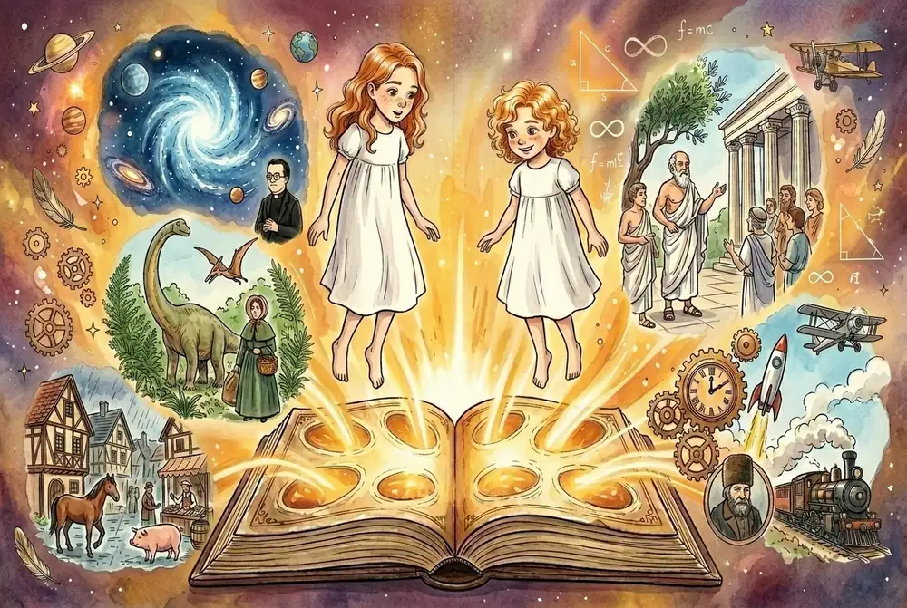
Todo empieza, casi siempre, con una pregunta.
A veces en el carro, otras en medio de la cena o justo antes de dormir. "¿Papá, por qué las estrellas parpadean?". "¿Mamá, cómo sabe mi cuerpo que tiene que respirar?". Son esas chispas de curiosidad pura que iluminan el mundo y que, a menudo, nos dejan a los adultos buscando las palabras exactas.
Esas preguntas son el motor del mundo. Y, para ser sincero, son el motor de este libro. Nació precisamente así, de mi intento de encontrar respuestas para mis propias hijas; respuestas que no solo fueran correctas, sino también emocionantes. Una forma de narrarles cada noche una historia en la que además de entretenerse, aprendieran algo importante.
Por eso, lo que tienes en tus manos no es un libro de texto. Es una colección de las historias más fascinantes del universo, la Tierra y la humanidad, pensada para transformar el conocimiento en una aventura. Nuestra misión no es solo entregar datos, sino despertar el asombro y la curiosidad que todos los niños llevan dentro.
Resulta que las mejores respuestas no son una lista de hechos. Son historias. Por eso, aquí el secreto no es tanto qué contamos, sino cómo lo contamos. La gravedad no es solo una fuerza; es la historia de Newton y una manzana que cambió el mundo. El ADN no es una molécula complicada; es el increíble libro de instrucciones secreto que se esconde dentro de cada ser vivo.
Hablamos a nuestros lectores (de 8 a 12 años) como los pequeños exploradores que son, con respeto y cercanía. Usamos un lenguaje sencillo para que un niño de 8 años pueda embarcarse en el viaje, pero con la suficiente profundidad para que uno de 12 siga maravillado. Lo llamamos crear un suelo bajo y un techo alto---fácil para empezar, pero con un universo por descubrir.
Entonces, ¿por dónde empezar? Hay dos caminos maravillosos para explorar este universo, y ninguno es mejor que el otro.
Puedes convertirlo en un ritual. Leer un capítulo juntos cada noche. Que sea su momento para viajar a las estrellas, conocer inventos geniales o descifrar los secretos del cuerpo humano. Descubrirán que sus conversaciones seguirán mucho después de haber cerrado el libro.
O puedes hacer algo igual de poderoso: déjale el libro y no digas nada. Anímale a saltar de un tema a otro sin orden ni concierto. Cada artículo es una puerta a un mundo distinto y puede ser leído de forma independiente. Quizás hoy le apasione la Antigua Roma y mañana los agujeros negros. La curiosidad no es lineal, y esta enciclopedia tampoco.
Y para esas preguntas repentinas que te asaltan a la hora de comer, o viendo una película, o en el momento menos esperado, encontrarás también tres índices que te permitirán localizar muy rápidamente cualquier evento, persona, lugar o concepto mencionado, así como una lista larguísima de preguntas cuyas respuestas puedes encontrar en estas páginas. Esperamos que te saquen de tantos apuros como a nosotros.
Pero al final, el verdadero tesoro que esconde este libro no son las respuestas que contiene, sino las nuevas y maravillosas preguntas que inspirará. Es la chispa en sus ojos cuando conectan una idea con algo que ven en el mundo real. Es la confianza para seguir preguntando, para nunca dejar de explorar.
¿Qué increíble pregunta te hará tu hijo mañana y qué fascinante viaje empezarán juntos para responderla?
Sobre esta edición
Esta es la edición integral. Reúne en un solo volumen los cinco tomos del libro: El Universo, La Vida, La Gente, Las Ideas y Las Cosas. Cada tomo se sostiene por sí mismo y puede leerse en cualquier orden, aunque hay un sentido suave en seguir el orden propuesto: del cosmos a las cosas que tenemos en casa.
Si este volumen pesa demasiado para una mesilla de noche, existe también una edición en cinco tomos físicos independientes — más livianos, más fáciles de manipular, y disponibles uno por uno. Las cinco ediciones por tomo y la edición integral comparten exactamente el mismo texto, las mismas ilustraciones y los mismos índices: cambia solo la encuadernación. Un niño que solo se interese por los dinosaurios o por los virus puede llevar el tomo correspondiente a la cama, sin cargar el resto.
Prólogo
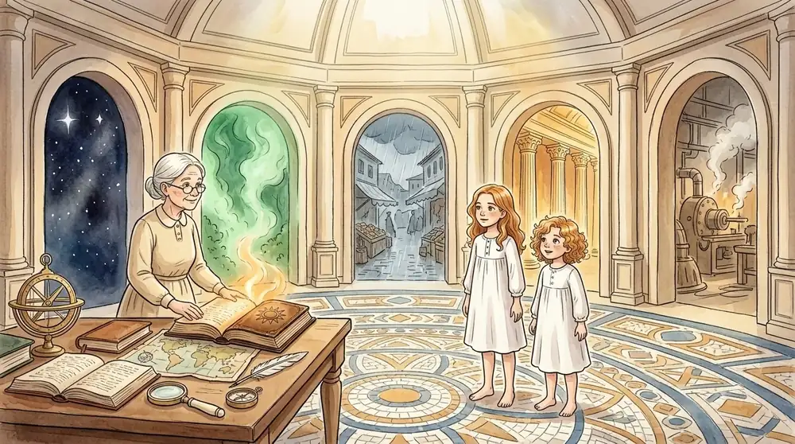
Llovía desde la mañana, una lluvia con un ritmo igual que no dejaba de caer pero tampoco arreciaba. Elizabeth tenía once años y miraba por la ventana de la sala cómo las gotas chocaban contra el cristal y resbalaban formando ríos pequeñitos. A su lado, Katherine bostezaba por sexta vez en cinco minutos. Katherine tenía nueve y la paciencia de un mosquito.
Sasha, la perra colorada de la familia, dormía bocarriba en la alfombra de la sala con las patas dobladas hacia el aire. Suspiraba en sueños. Cuando Katherine se levantó, pasó por encima de ella sin pensarlo.
—Vamos a explorar —dijo Katherine.
Elizabeth despegó la nariz del cristal.
—¿Explorar qué?
—La habitación esa de los libros. Donde casi nunca entramos.
—Mamá dice que no toquemos sus cosas.
—No vamos a tocar nada —respondió Katherine, ya en el pasillo—. Solo vamos a mirar.
Elizabeth suspiró, hizo el gesto exacto que hacen las hermanas mayores cuando saben que van a ceder, y la siguió.
El estudio olía a papel viejo y a cuero seco. La luz entraba turbia por una ventana pequeña, y todo lo que se podía ver —los lomos de los libros en sus repisas, los juguetes apilados sobre el buró, una silla con un muñeco en el asiento de rejilla— estaba envuelto en esa luz gris de las tardes de lluvia.
Katherine vio el libro primero. Estaba en el piso, cerca de uno de los estantes, casi escondido detrás de una pata de madera. Un libro grande, encuadernado en algo que podía haber sido cuero o algo más antiguo, con un sello en relieve en la cubierta que parecía un sol pequeño.
—¿Y este? —dijo Katherine.
—No sé.
Las dos se acercaron despacio. Katherine se agachó y tocó la cubierta. Estaba más fría que el resto del cuarto.
—Pesa mucho —dijo, intentando levantarlo—. Demasiado.
Lo apoyaron en la alfombra y lo abrieron por una página cualquiera. Estaba en blanco. Pasaron otra. En blanco. Otra. Otra.
Pero entonces Elizabeth, que era la metódica de las dos, volvió al principio y empezó a pasar las páginas con cuidado, una por una. Y al llegar a la primera página escrita —porque sí había una— se quedó muy quieta.
Allí, en tinta sepia que parecía recién puesta, estaban escritos dos nombres.
Elizabeth. Katherine.
Y debajo, un párrafo entero. Las dos lo leyeron al mismo tiempo, en silencio, antes de poder leerlo en voz alta. Decía:
Llovía desde la mañana, una lluvia con un ritmo igual que no dejaba de caer pero tampoco arreciaba. Elizabeth tenía once años y miraba por la ventana de la sala. Katherine tenía nueve y bostezaba.
Katherine se llevó una mano a la boca. Elizabeth no apartó los ojos de la página.
—Léelo —susurró Katherine.
—Está leído.
—Léelo en voz alta.
Elizabeth tragó saliva. Empezó.
—Llovía desde la mañana —dijo, y la página entera se iluminó con una luz tibia que no venía de ningún sitio, y el cuarto, la alfombra, los libros, la lluvia que caía afuera, todo, se desdibujó alrededor de las dos hermanas, como si alguien hubiera borrado el dibujo del mundo con una goma muy suave.
Y entonces cayeron.
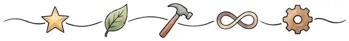
Fue como dejarse llevar por agua tibia. Por un instante no había arriba ni abajo, solo una sensación de estar suspendidas en algo que no era aire ni tampoco nada. Cuando volvieron a sentir el piso, ya no estaban en el estudio.
Estaban en una sala redonda, con techo abovedado que se perdía en una niebla dorada suave. El piso era de mosaico: piezas pequeñas blancas, ocre y azul polvo, formando dibujos que no se repetían exactamente. En el centro había una mesa de madera enorme cubierta de libros abiertos, mapas, instrumentos viejos: un astrolabio, una lupa con mango de marfil, una pluma de ave, un compás. La luz era cálida y no venía de ningún lugar concreto.
En las paredes había cinco arcos. Cada uno tenía algo distinto asomando. Por el primero se veía una oscuridad sembrada de puntos brillantes. Por el segundo, verdor exuberante y vapor cálido. Por el tercero, lluvia gris y voces lejanas. Por el cuarto, luz dorada y columnas blancas. Por el quinto, un olor a tomate cocido y un ruido rítmico de máquinas.
Las hermanas estaban en camisones blancos, descalzas. No recordaban haberse cambiado de ropa.
Junto a la mesa había una mujer.
Era mayor, de pelo blanco recogido en un moño bajo. Llevaba un vestido sencillo color crema-arena y unas gafas redondas de montura fina. Tenía manos pequeñas. Las miró por encima de las gafas y sonrió como si las estuviera esperando hacía mucho rato.
—Han venido —dijo. Tenía una voz tranquila.
—¿Quién es usted? —preguntó Katherine.
—Una bibliotecaria1. Cuido del libro. —Hizo un gesto pequeño hacia las paredes—. Vengan. Cinco sitios. Solo a echar un vistazo.
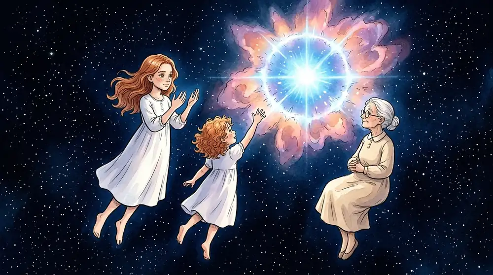
Cruzaron el primer arco, primero Katherine y luego Elizabeth.
Lo primero que sintieron fue el silencio. El silencio absoluto. Y después, la sensación de no tener peso. Estaban flotando en el espacio, lejos de cualquier cosa cercana. Alrededor, un cielo negro picado de millones de puntos de luz. La Bibliotecaria flotaba a su lado, igual de tranquila que en la sala.
—Miren ahí —dijo, señalando un sitio del cielo.
Las hermanas miraron. Una estrella muy lejana se hinchaba. Más. Más todavía. Su luz se hizo blanca y después blanco-azul, casi imposible de mirar de frente. Y entonces, sin sonido, estalló.
Una onda de luz se expandió hacia ellas, lentísima a la escala cósmica pero hipnótica desde donde estaban. Capas de gas y polvo se desprendieron formando una nebulosa nueva, pétalos abriéndose en cámara muy lenta. La luz tardaba minutos en cruzar la distancia.
—Cuando una estrella muere así2 —dijo la Bibliotecaria—, suelta los pedazos que dentro lleva. Hierro. Oro. Oxígeno. Calcio.
Hizo una pausa. Las niñas seguían mirando el destello.
—Lo que tienen ustedes en los huesos viene de una de éstas. Hace mucho tiempo.
Elizabeth se miró las manos. Las puso a contraluz del estallido. Katherine estiró un brazo entero hacia el cielo, como si quisiera tocar la nebulosa que se formaba. La luz no la alcanzó. Estaba demasiado lejos.
Después, lento, el resplandor empezó a apagarse.
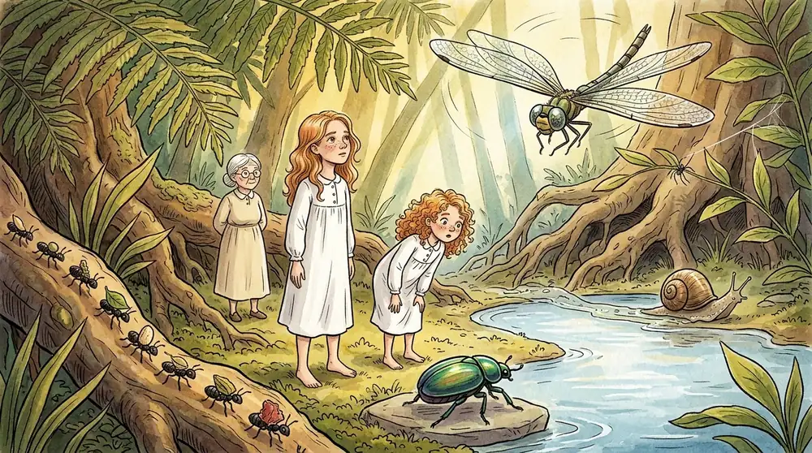
Cruzaron el segundo arco. Aterrizaron en un bosque exuberante, con hojas grandes y un suelo blando que olía a tierra mojada.
—Respiren hondo —dijo la Bibliotecaria.
Lo hicieron. Y de pronto, sin sentir nada distinto, eran del tamaño de un escarabajo. El bosque ahora era una jungla titánica. Las hojas eran sábanas. Las raíces eran troncos. La luz se filtraba por arriba en haces gruesos como columnas.
Frente a ellas había un charco. Para ellas, un océano pequeño.
Katherine se acercó al borde. La Bibliotecaria le hizo un gesto: solo mirar.
Pasó un escarabajo verde-iridiscente del tamaño de un gato, lento y digno como un caballo de carruaje. Subió por una piedra y desapareció. Después zumbó algo arriba —Lizzy se agachó por instinto— y una libélula gigantesca cruzó por encima haciendo círculos. Sus alas eran ventanas de vidrio. Sus ojos tenían mil caras pequeñas3.
Una columna de hormigas marchaba en orden por una raíz, cada una llevando algo distinto: una hoja, un trozo de fruta, una semilla. Una araña delgada empezó a tejer un hilo de un tallo a otro, y el hilo brilló cuando lo tocó la luz.
A unos pasos, un caracol del tamaño de una guagua pasaba dejando una estela brillante. Katherine quiso acercarse a tocarle la concha. Elizabeth la frenó con dos dedos en el codo.
—Mucosa —dijo Lizzy.
Kathy hizo una mueca y volvió.
—Si encogieran un poquito más —dijo la Bibliotecaria—, descubrirían que hasta este suelo está vivo. La vida más numerosa es la más pequeña.
Volvieron a su tamaño normal con un pestañeo. La jungla volvió a ser charco-y-hierba. Las hojas, hojas. Las raíces, raíces.
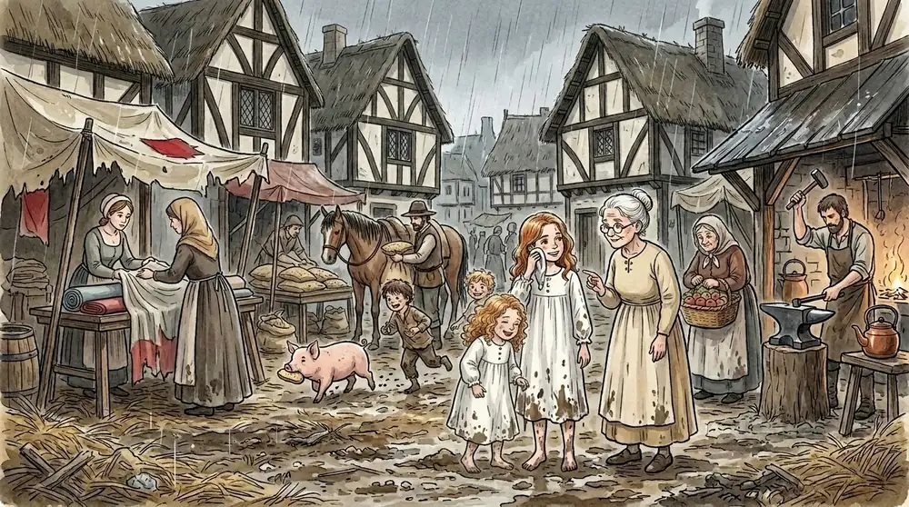
Cruzaron el tercer arco. Aterrizaron de pie sobre tierra apisonada llena de charcos. Llovía. Una lluvia gris sobre un mercado desbordado de gente.
Era una plaza medieval4. Casas con entramado de madera y paredes encaladas, techos de paja oscurecida por el agua. La calle no era calle: era barro mezclado con paja sucia, restos de hojas y excremento de animal. Olía a lana mojada, a humo de leña, a fruta vieja, a establo.
A su alrededor, todo era movimiento. Una mujer regateaba el precio de una pieza de tela bajo un toldo improvisado de lona vieja. Un hombre con sombrero de fieltro descargaba sacos de cebada de un caballo flaco. Dos niños sucios corrían entre las piernas de los adultos persiguiendo a un cerdo pequeño que escapaba con un trozo de pan en la boca. Una vieja vendía manzanas un poco arrugadas desde una cesta tapada con tela. Un herrero, bajo un alero, golpeaba algo sobre un yunque y la lluvia siseaba al caer cerca del fuego.
Las hermanas se quedaron quietas, salpicadas hasta los tobillos. Nadie las miró. Era como si en aquella plaza apareciera gente nueva todo el rato y nadie tuviera tiempo de notarlo.
Las palabras estaban en otra lengua, pero los gestos cruzaban sin esfuerzo.
Pasó un caballo demasiado cerca y las salpicó. Katherine soltó una risa corta. Elizabeth se limpió la mejilla con la manga del camisón.
La Bibliotecaria les señaló con la cabeza al herrero, después a la mujer de la tela, después a los niños del cerdo.
—Llevan haciendo esto miles de años —dijo—. Las cosas que cambian, cambian poco. Las que no cambian, nunca cambian.
Katherine miró al cerdo, que se había metido bajo un puesto y olisqueaba una bolsa caída. Le sonrió.
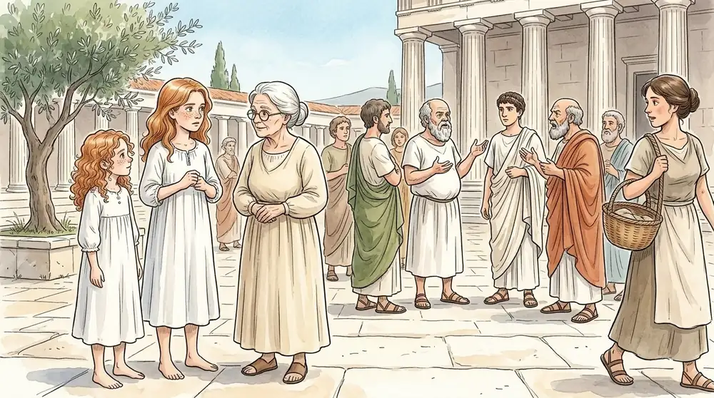
Cruzaron el cuarto arco. Aterrizaron en una plaza muy distinta: soleada, seca, con suelo de piedra blanca calentado por el sol del mediodía. Columnas de mármol al fondo. Un olivo cerca, sus hojas plateadas.
A pocos pasos, en torno a un hombre mayor5, había un grupo de tres o cuatro ciudadanos discutiendo. El hombre era descalzo, llevaba una túnica sencilla, tenía barba canosa y una panza modesta. No tenía nada de imponente. Hablaba como quien charla con un amigo en un café.
—Dime —le dijo a un joven togado—. ¿Qué es ser justo?
El joven contestó sin pensarlo mucho.
—Es devolver a cada uno lo que se le debe.
El viejo asintió despacio, casi como si felicitara al joven.
—Imagina entonces —dijo— que un amigo te dejó una espada para guardársela. Un día vuelve a buscarla habiendo perdido la cabeza, dispuesto a hacerse daño. ¿Sería justo devolvérsela?
El joven se quedó callado.
Otro hombre del grupo, mayor, dio un paso al frente.
—Justo es lo que beneficia al fuerte.
—¿Y si el fuerte se equivoca sobre lo que le beneficia? ¿Sigue siendo justo seguirle?
El mayor también se quedó callado.
Una mujer pasaba con un cesto al hombro. El viejo la vio, le sonrió y le hizo un gesto.
—¿Y tú? ¿Qué crees que es ser justo?
La mujer rió.
—Tengo que llevarle este cesto a mi suegra antes de que se enfríe el guiso. Eso es ser justo.
Y siguió de largo. Pero a los pocos pasos se dio media vuelta, le dijo algo al viejo en voz baja, y se fue sin esperar respuesta. El viejo se quedó mirándola con una sonrisa.
Las hermanas observaban desde un par de pasos atrás. Lizzy escuchaba sin parpadear, aunque no entendía las palabras. Kathy miraba más a la mujer del cesto que a los hombres del grupo.
Nadie de la plaza les prestó atención.
—Algunas preguntas no tienen respuesta final —dijo la Bibliotecaria muy bajito—. Pero el preguntarse vale la pena.
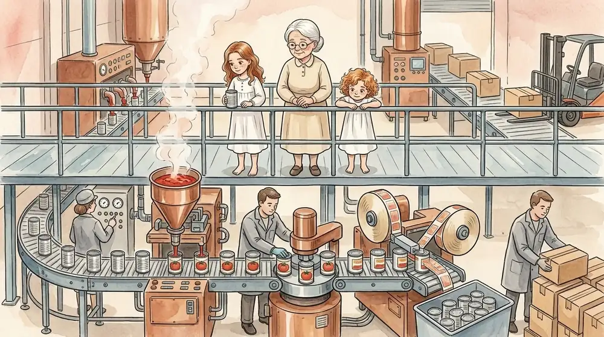
Cruzaron el quinto arco.
El aire cambió de golpe. Era cálido y olía a tomate cocido. Había un ruido rítmico de máquinas, no caótico, casi musical: tic-tic-tic.
Aterrizaron sobre una pasarela elevada, con barandilla de hierro pintado. Abajo, una fábrica entera trabajaba.
Una cinta transportadora llevaba latas vacías en fila, una tras otra, vibrando suavemente. Más adelante, una llenadora dejaba caer un chorro espeso de tomate dentro de cada lata según pasaban. Una selladora rotativa cerraba cada lata con un golpe seco. Una etiquetadora envolvía las latas con etiquetas brillantes que venían en rollos enormes. Las latas terminadas caían en un cajón al final de la línea, y desde ahí otro mecanismo las apilaba en cajas de cartón que se cerraban solas y rodaban hacia un montacargas6.
Había gente: trabajadores con bata gris y gorro. Una mujer revisaba una pantalla. Un hombre con guantes ajustaba algo en la selladora. Otro apilaba cajas a mano cuando el ritmo se aceleraba más de la cuenta.
Katherine se quedó mirando la etiquetadora hipnotizada. La velocidad con que envolvía cada lata era casi imposible de seguir. Elizabeth siguió una sola lata con la mirada, desde que apareció vacía en la cinta hasta que salió en su caja, llena, sellada y etiquetada.
Una lata se cayó al suelo y rodó. Un trabajador se agachó, la recogió sin alterarse, la inspeccionó, la dejó en una caja aparte. La línea siguió.
—Las cosas que usan en su casa todos los días —dijo la Bibliotecaria—. Comida, ropa, lápices, juguetes. Todas pasaron por sitios como éste. Cada una es ingenio humano apilado encima de ingenio humano.
Una lata terminada salió por la última cinta y cayó en su caja con un golpe limpio.
Cruzaron el quinto arco al revés. Estaban otra vez en la sala redonda. La luz no había cambiado.
La Bibliotecaria les sirvió dos tazas de algo cálido —olía a chocolate— y se sentó frente a ellas en la mesa grande.
—Esto fue una probada —dijo—. La próxima vez, irán a un solo sitio, pero a fondo.
Katherine sopló su taza.
—¿Cuándo es la próxima vez?
—Cuando vuelvan a abrir el libro y lean en voz alta. El libro las llamará. Sabrán cuándo es. No tienen que ir todos los días. El libro espera.
Sostenía su propia taza con las dos manos. Elizabeth notó que las manos de la Bibliotecaria temblaban un poquito, el temblor pequeño de las manos viejas.
Y entonces la Bibliotecaria miró por encima del hombro de Elizabeth, hacia un punto detrás de las hermanas, y dijo, en tono normal:
—Y a ustedes también, claro. Aprenderán mucho con las hermanas. Todo lo que vengan a buscar lo encontrarán.
Las hermanas se dieron la vuelta. No había nadie. Se miraron.
—¿Con quién hablas? —preguntó Katherine.
La Bibliotecaria sonrió.
—Con alguien… o con nadie. Más adelante lo sabrán.
Bebió un sorbo de su taza.
Cayeron de pie en el estudio. La alfombra. Los libros. El olor a cajón cerrado. La lluvia, que seguía cayendo afuera con el mismo ritmo igual.
El libro estaba cerrado entre ellas dos. Lo abrieron rápido para comprobar. Las páginas estaban otra vez en blanco, pero en una página casi al final, quedaba una línea nueva. Decía:
Había una vez dos hermanas que abrieron un libro y oyeron sus propios nombres.
Nada más.
Katherine cerró el libro con cuidado y lo puso exactamente donde lo habían encontrado, junto a la pata del estante, casi escondido. Como si llevara años allí y nadie lo hubiera notado.
Salieron del estudio sin hablar. Sasha estaba en la alfombra de la sala, dormida bocarriba con las patas dobladas hacia el aire. Levantó la cabeza, las olfateó muy brevemente, suspiró, y se volvió a dormir.
—No le decimos a nadie —dijo Katherine en el pasillo.
—A nadie —respondió Elizabeth.
Bajaron a cenar. Mamá había preparado tortilla. Papá leía el periódico. Afuera seguía lloviendo.
A la mitad de la cena, Katherine levantó el vaso de agua hacia la lámpara y se quedó mirando cómo cambiaba la luz dentro del agua cuando lo movía. Lo movió hacia un lado y hacia el otro, lentamente, como si lo estuviera pesando. Mamá le preguntó si pasaba algo. Katherine dijo que no.
Elizabeth, desde su silla, dibujaba con el dedo en su servilleta, sin pensarlo demasiado. Cuando se dio cuenta de lo que había hecho, se quedó mirando un momento. Era una espiral. Pasó la palma por encima para alisarla, dejando solo una marca tenue en la tela.
Afuera seguía lloviendo.
La figura de la Bibliotecaria está vagamente inspirada en Hypatia de Alejandría (~360–415 d.C.), matemática, astrónoma y filósofa que enseñó en la Biblioteca de Alejandría. Aquí es deliberadamente atemporal y sin nombre — el nombre llegará en algún capítulo futuro, cuando las hermanas se lo ganen. ↩
Las supernovas son explosiones de estrellas masivas al final de su vida. Dispersan al espacio elementos pesados (hierro, oro, calcio, oxígeno) que terminan formando planetas, animales y personas. La frase "polvo de estrellas" no es metáfora poética: es literal. Cada átomo de calcio en los huesos de un niño viajó miles de millones de años desde una supernova hasta la Tierra. ↩
Las hormigas marchan en columnas químicamente coordinadas siguiendo rastros de feromonas. Las libélulas tienen ojos compuestos de hasta treinta mil unidades visuales (ommatidios). Los caracoles se desplazan sobre una capa de moco que protege su pie y deja la estela brillante característica. ↩
El mercado medieval tal como aparece aquí —barro mezclado con paja, animales sueltos, casas de entramado de madera— es realista para la Europa del siglo XII al XIV. La higiene urbana mejoró radicalmente solo a partir del siglo XIX con los grandes alcantarillados y la mecanización del transporte. Lo que llamamos "limpio" es una invención muy reciente. ↩
Sócrates (~470–399 a.C.), filósofo ateniense que practicaba el método mayéutico: preguntar para que el interlocutor descubriera por sí mismo las contradicciones de su propia respuesta. La pregunta "¿qué es ser justo?" es central en La República de Platón. El ejemplo de la espada que un amigo entrega y luego pierde la cabeza, y la respuesta "lo que beneficia al fuerte" (atribuida en el diálogo a Trasímaco), son fieles al texto. ↩
La conserva en lata fue inventada por Nicolas Appert (Francia, 1809) y mejorada por Peter Durand (Inglaterra, 1810) a partir del problema de cómo alimentar tropas en campañas largas. Las fábricas modernas combinan llenadoras, selladoras y etiquetadoras automatizadas en líneas continuas que producen miles de latas por hora. ↩
Tomo I El Universo
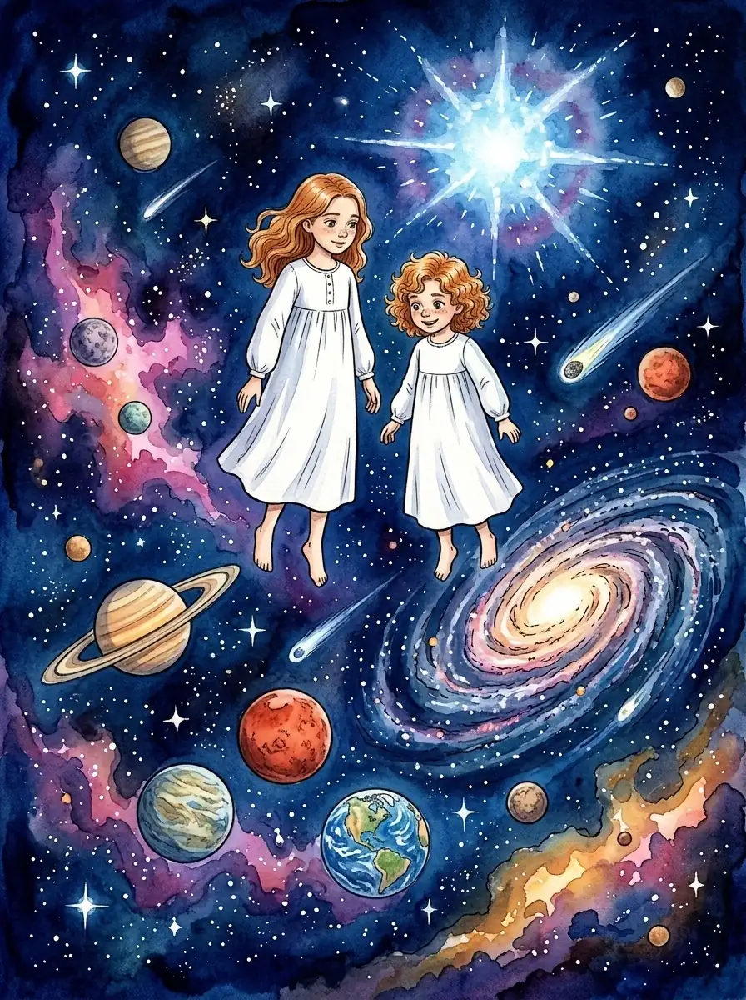
Elizabeth y Katherine van a ver, primero, el huevo. Antes del huevo no hay oscuridad ni luz, no hay arriba ni abajo, no hay tiempo. Después el huevo se abrirá: una expansión silenciosa que empezó hace casi catorce mil millones de años y todavía no ha terminado.
Verán encenderse las primeras estrellas en la edad oscura del universo, blancas y enormes, durando cada una lo que dura un parpadeo cósmico. Verán a una de ellas explotar y soltar al espacio el hierro que un día estará en sus huesos. Asistirán a la formación de un Sistema Solar nuevo —el suyo— a partir de polvo y gas que se ordena despacio. Verán al joven Sol encenderse por primera vez. Verán a la Tierra primitiva cubierta de lava, con lluvia constante de meteoritos, sin azul, sin verde, sin nadie. Y verán el momento en que otro planeta, casi del tamaño de Marte, choca con la Tierra y deja a la Luna pegada al cielo para siempre.
Cuando se acerquen al final del tomo, los océanos ya estarán fríos, la atmósfera ya tendrá oxígeno, los continentes ya se moverán despacio sobre el manto. Pero aún no hay nadie viviendo aquí. Ese es el comienzo del segundo tomo.
Somos polvo de estrellas
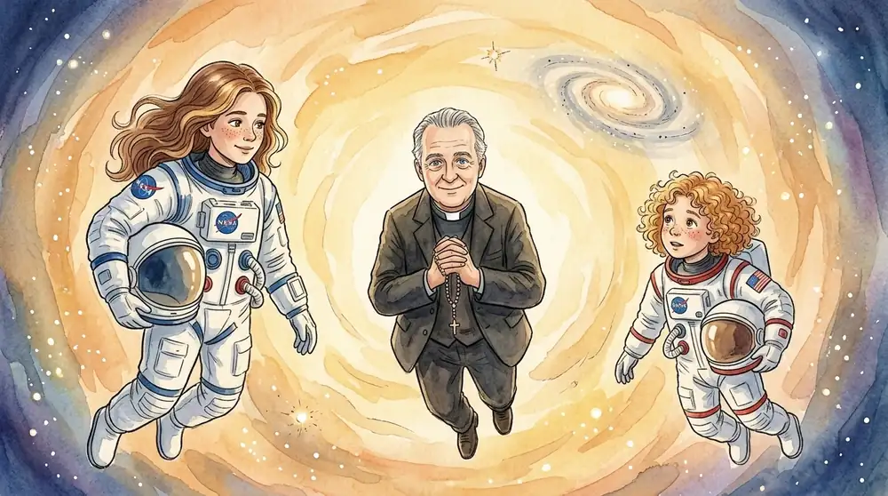
Era una noche tan clara que las estrellas parecían más cercanas que de costumbre. Elizabeth y Katherine estaban en el jardín, ayudando a recoger algo que ya nadie recordaría al día siguiente, cuando Katherine miró arriba y se le quedó la pregunta atravesada en la garganta.
Hacía calor para ser tan tarde. Mamá las había mandado a quitar las sábanas de la cuerda antes de que se humedecieran con el rocío. Sasha las había acompañado hasta la puerta del jardín, las había olfateado, y después se había vuelto a la sala a echarse en la alfombra a sospirar bocarriba.
Lizzy iba terminando de doblar una sábana grande. Katherine, que se aburría con cualquier tarea que durara más de tres minutos, había soltado el extremo que le tocaba y estaba mirando arriba.
—¿De dónde salen las estrellas? —dijo.
Lizzy levantó la cabeza. Las estrellas estaban en su sitio. Iguales que siempre. Pero Katherine no preguntaba en serio casi nunca, y cuando preguntaba en serio, valía la pena pararse.
—No sé.
—Pero alguien sabe.
—Supongo.
Katherine no dijo más. Lizzy terminó de doblar la sábana, recogió la última, y entraron las dos sin hablar mucho. Sasha levantó la cabeza desde la alfombra, las olfateó al pasar, suspiró otra vez, y se volvió a dormir.
En el pasillo, Lizzy miró a Katherine. No hizo falta decir nada. Subieron al estudio.
El libro estaba donde lo dejaron, junto a la pata del estante. Pero estaba abierto. Eso ya las dos lo sabían: el libro decidía cuándo estar abierto y cuándo cerrado. En la página, en tinta sepia recién puesta, las palabras ya estaban ahí. Las dos las leyeron al mismo tiempo, en silencio. Decían:
Era una noche tan clara que las estrellas parecían más cercanas que de costumbre. Elizabeth y Katherine estaban en el jardín, ayudando a recoger algo que ya nadie recordaría al día siguiente, cuando Katherine miró arriba y se le quedó la pregunta atravesada en la garganta.
Katherine se quedó mirando la página un rato largo.
—Otra vez —dijo.
—Otra vez —repitió Lizzy.
—Léelo.
Esta vez le tocó a Katherine. Lizzy le hizo un gesto con la barbilla. Katherine tragó saliva y empezó.
—Era una noche tan clara —dijo, y la página entera se iluminó con una luz tibia, y el cuarto, los libros, los estantes, el jardín que seguía oscuro afuera, todo, se desdibujó alrededor de las dos hermanas, como si alguien hubiera borrado el dibujo del mundo con una goma muy suave.
Y entonces cayeron.
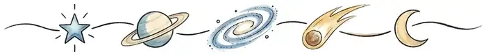
Fue distinto a las otras veces. No agua tibia. No suelo. No nada.
Por un instante muy largo, las dos hermanas no sintieron arriba ni abajo, ni cuerpo ni aire ni distancia. No estaba oscuro: lo oscuro implica que existe la oscuridad. Esto era anterior.
Y entonces, sin transición, sintieron de nuevo el cuerpo. Pero el cuerpo llevaba un traje.
Un traje blanco, acolchado, con guantes y botas blancas, con pequeños parches azules y rojos en los hombros, y un casco redondo que estaba —Lizzy lo notó— colgado por una correa al cuello. Como los que usan los astronautas en las fotos.
—¿Y esto? —dijo Katherine, mirándose las manos enguantadas.
—Yo iba a preguntar lo mismo —dijo otra voz.
A unos pasos —si "pasos" tenía sentido todavía— estaba un señor. Mediana edad, ropa civil sencilla, cuello clerical visible bajo el saco. Mirada amable. Llevaba las manos cruzadas adelante. Sonrió.
—Buenas noches. Me llamo Georges.
Katherine miró a Georges de arriba abajo. Después miró a Lizzy. Después al traje suyo otra vez.
—¿Y usted? ¿No necesita traje?
Georges se encogió de hombros con una sonrisita.
—No están realmente en el espacio. ¿Cómo van a estar? Ni siquiera existe el espacio todavía. Ni el tiempo. Los trajes son por estilo. El libro las protege.
Katherine pensó en eso un momento.
—¿Entonces por qué los llevamos puestos?
Georges miró por encima del hombro de Katherine, hacia un punto detrás de ella, brevísimo. Después la miró otra vez.
—Porque los lectores las imaginan así. Y al libro le gusta complacerlos.
Lizzy se dio la vuelta para ver qué estaba mirando Georges. No había nada. Bueno: no había nada, en el sentido más literal posible. Volvió a Georges. Georges ya estaba hablando de otra cosa.
—Lo que tienen ustedes alrededor —les dijo—, o lo que no tienen, depende de cómo lo quieran ver, es un huevo.
—¿Un huevo?
—Un huevo. Antes de empezar a ser huevo. El universo entero está aquí, ahora, en este punto. Toda la materia, toda la luz, todo lo que algún día existirá. Las galaxias, el sol, la Tierra, sus huesos, sus uñas, el árbol del jardín. Todo. Aquí dentro. Pero todavía no se ha abierto.
Katherine miró el huevo —que no era un huevo visible, solo una idea. Lizzy se llevó una mano enguantada al pecho, queriendo confirmar que la mano todavía existía.
—¿Y va a abrirse? —preguntó Katherine.
Georges asintió.
—Sostengan la respiración. Aunque no haga falta.
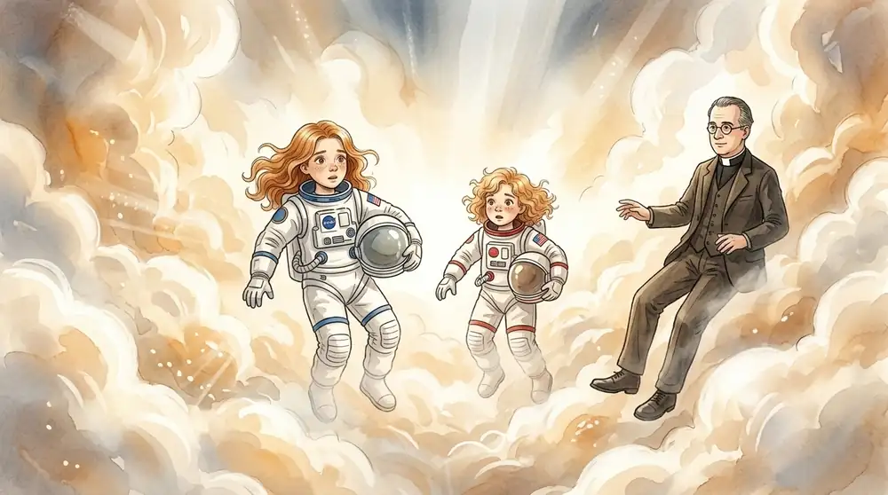
El huevo empezó a crecer.
Eso fue lo primero que sintieron. No que algo se moviera hacia ellas, no que se desplazaran a un sitio: que todo crecía dentro de sí mismo, incluidas ellas. Un crecer que no iba hacia ninguna parte porque no había todavía partes. Solo más adentro, y más adentro, y más adentro.
Lizzy intentó pensar la palabra "lejos". La palabra "lejos" no tenía dónde apoyarse.
Y entonces, muy de golpe, todo se hizo enorme.
Fue como un parpadeo. Pero en menos. Mucho menos. Menos que un suspiro, menos que parpadear, menos que pensar la palabra "menos"1. Lo que un instante antes había sido un punto, ahora era espacio. Espacio inmenso, ya con tamaño, ya con dirección.
—Eso fue la inflación —dijo Georges, con esa misma calma con la que la abuela de cualquiera sirve el caldo. Como si no acabara de pasar lo más rápido del universo.
Katherine se sentía un poco mareada. Habría jurado, si las palabras todavía le servían, que tenía vértigo. Lizzy estiró un brazo y le tocó el hombro enguantado para anclarla.
A su alrededor, donde antes no había nada, había ahora luz.
Pero no luz como uno la conoce. No luz que sale de una lámpara y se va lejos. Luz pegada a la materia, todo mezclado, opaco, denso. Las hermanas estaban dentro de algo que era, al mismo tiempo, todo el universo y una niebla brillante.
—¿Por qué no veo nada? —dijo Katherine—. Si está iluminado.
—Porque la luz todavía no puede irse a ningún sitio —dijo Georges—. Está atrapada con todo lo demás. Imaginen que están dentro de un vaho muy denso, lleno de pequeñísimas cosas que rebotan unas contra otras todo el rato. La luz no sale. Las niñas como ustedes no verían nada. Pero está.
La niebla brillante duró mucho rato. Para las hermanas, lo que tarda uno en aburrirse de mirar una pared blanca. Para el universo, casi cuatrocientos mil años2.
Y entonces, se aclaró.
Lizzy lo notó así: la niebla, que había sido densa por todas partes, se afinó. Como cuando uno entra a una habitación llena de vaho y abre la ventana. La luz, que estaba pegada a todo, se soltó. Empezó a viajar.
—Eso que acaba de pasar —dijo Georges, y por primera vez su voz sonó un poquito conmovida— está todavía pasando. La luz que se acaba de soltar, esa misma luz, sigue viajando. Por todo el universo. Si ustedes encienden cualquier televisor antiguo en su casa y ven la nieve, una pequeña parte de esa nieve es esta luz. Llegando, todavía. De ahora.
Katherine se quedó callada. Lizzy también.
—Es la huella más vieja que hay —dijo Georges.
Y dejó la frase en pie, sin poner punto detrás.
Después de aclararse la niebla, lo siguiente fue distinto.
Fue oscuridad.
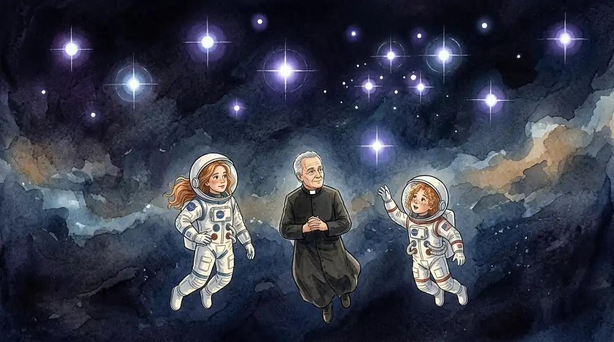
Una oscuridad rara. No era oscuridad como la de antes del huevo —antes del huevo no había oscuridad, no había tampoco luz, no había contrastes—. Esto era una oscuridad con dentro. Con vacío que ocupaba sitio. Con frío que tenía forma. Con gas —Georges dijo "hidrógeno y helio, ustedes lo verán mucho después" como si le quitara importancia— flotando despacio en una expansión que ya no era violenta.
Las hermanas flotaron en esa oscuridad lo que pareció una eternidad, pero no era incómodo. Era expectante. Como cuando uno está en una sala antes de que se abra el telón.
—¿Cuánto va a durar esto? —preguntó Katherine al rato.
—Cien millones de años —dijo Georges, sin alarma.
Katherine abrió la boca. La cerró. Miró a Lizzy. Lizzy miró a Georges.
—Pero a ustedes —añadió él, amable— se les va a hacer corto.
Y se les hizo corto. La oscuridad pasó como pasa un sueño largo: por dentro fue larga, por fuera duró un instante.
Y entonces Katherine la vio primero. Siempre veía primero las cosas que se movían.
Un punto.
Un punto encendiéndose en la oscuridad. Lejísimos. Pero ahí.
Después otro. Después otro. Después decenas. Centenares. Después tantos que dejaron de poder contarse.
—Las primeras —dijo Georges, en voz muy baja, como quien no quiere distraer un nido de pájaros recién nacidos.
Las hermanas miraban con la boca cerrada. Las primeras estrellas no se parecían a las que ellas conocían3. Eran enormes —Georges les hizo notar el tamaño con un gesto—, blanquísimas, con una luz casi violenta. Brillaban demasiado, como si tuvieran prisa.
—Estas no van a vivir mucho —dijo Georges—. Unos pocos millones de años cada una. Para ustedes es mucho, ya lo sé. Para una estrella es un parpadeo. Va a vivir, y se va a romper.
—¿Por qué se va a romper?
—Porque dentro de ellas se está cocinando algo. Algo nuevo. Lo van a ver enseguida.
Katherine miraba un punto blanco específico. Había decidido, sin decirlo, que ese era suyo. Lo seguía con los ojos para que no se le confundiera entre los demás.
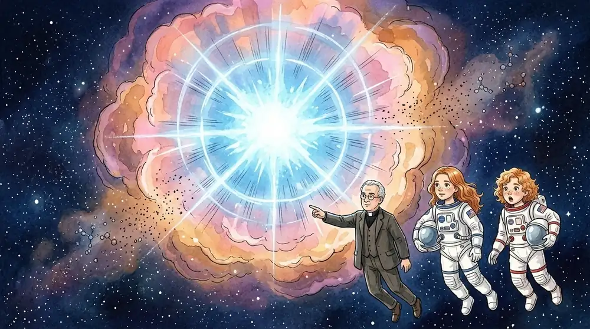
Las estrellas no se quedaron solas mucho rato.
Empezaron a juntarse. No las vieron juntarse —ni Lizzy ni Katherine— pero cuando volvieron a mirar, las estrellas estaban en grupos. Y los grupos estaban girando.
Georges les indicó con un gesto que se quedaran quietas, que mirar era suficiente. Y ahí, frente a ellas, una galaxia entera giraba. Un río de luz dando vueltas despacio, con miles de millones de puntos en él, organizado en brazos, con un centro brillante donde la luz era más espesa.
—Esa es una —dijo Georges—. Ahora vean.
Movió la cabeza. Detrás de la primera, otra. Detrás de esa, otra. Más allá, miles.
—Esto va a llenarse de galaxias. De aquí en adelante, todo el universo va a ser galaxias4. Pero hay una en particular que quiero que miren.
Señaló una con el dedo. Era una espiral. Tenía varios brazos. Uno de los brazos tenía un sitio que Georges marcó muy levemente con la punta del dedo. Lizzy nunca llegó a entender del todo cómo era la mano de Georges, si era de carne o no, pero apuntaba con seguridad.
—Esa va a ser su casa, eventualmente.
—¿La galaxia? —preguntó Katherine.
—La galaxia. Y dentro de ella, ese brazo. Y dentro de ese brazo, ese punto que marqué. Pero todavía no hay nada ahí. Todavía falta.
Las hermanas miraron la galaxia con más atención. No vieron nada en el punto. Solo gas, pareció.
—Vengan a mirar otra cosa primero.
Los acercó —o se acercaron, o el espacio se contrajo para ellos— a una de las primeras estrellas. La más cercana. La que Katherine había estado siguiendo (Katherine estuvo segura de eso, aunque era imposible saberlo).
La estrella estaba gorda. Hinchada. Como si le faltara aire. Latiendo despacio.
—Está terminando —dijo Georges.
La estrella se contrajo brevemente, como tomando impulso. Y entonces —sin sonido, porque el sonido no viaja en el vacío— estalló.
La onda de luz se expandió hacia ellas, lentísima a la escala cósmica, hipnótica desde donde estaban. Era igual a la supernova del prólogo, pero esta vez no era distante: estaban cerca. Las hermanas vieron las capas de gas y polvo desprendiéndose de la estrella muerta. Capas de varios colores —rojos, naranjas, azules— que se mezclaban formando una nube nueva.
—Miren con cuidado lo que está pasando —dijo Georges, y por primera vez la voz le sonó seria—. La estrella está soltando los pedazos que dentro lleva. Hierro. Oxígeno. Carbono. Calcio. Cosas que no había antes en el universo5. Cosas que ella cocinó adentro.
Vieron el polvo expandiéndose. Vieron cómo, despacio, ese polvo se mezclaba con el gas de los alrededores y formaba una nube nueva. Una nube enriquecida.
—Esto va a pasar muchas veces —siguió Georges—. Generaciones de estrellas. Cada una vive, muere, deja su polvo. Y el polvo alimenta a las siguientes, que vuelven a vivir, vuelven a morir, vuelven a dejar polvo. Y así. Las estrellas que ustedes verán esta noche en su jardín, todas, son nietas. Y bisnietas. Y tataranietas6. Y nuestra estrella, el Sol, también.
Hizo una pausa pequeña. Después miró a Lizzy con esa media sonrisa que ya empezaba a serle reconocible.
—Y antes de que pregunten: sí, también algunas cosas más raras pasan. A veces dos estrellas muertas chocan entre sí, y de ese choque salen los metales más preciosos. El oro. El uranio. El platino7. Pero eso es para otro viaje.
Lizzy pensó en los anillos que había visto en la mano de su tía cuando venía de visita. Pensó en el oro y de dónde podía haber salido. La idea era demasiado grande para terminarla del todo.
—Y antes del huevo, Georges —dijo entonces, recordando la pregunta que se le había escapado antes—. ¿Qué había?
Georges la miró. Miró brevemente al espacio detrás de ella, ese mismo gesto de antes, breve, casi imperceptible.
—Eso, queridas, todavía no lo sabe nadie. Quizás algún día ustedes me lo cuenten a mí.
Después miró otra vez al frente, donde la nube enriquecida seguía expandiéndose.
—Pero por ahora, tenemos que ver cómo se forma una estrella nueva con esa nube.
Y se movieron otra vez.
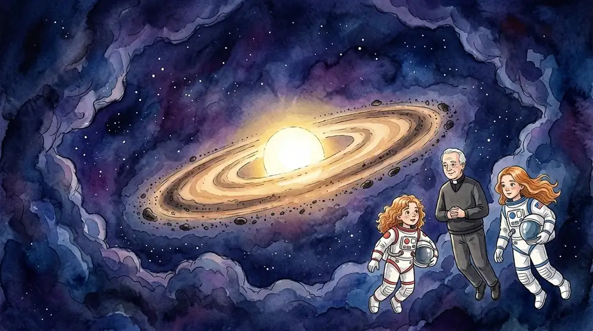
Saltaron en el tiempo. Mucho. Lo que para ellas duró el segundo y medio que se tarda en girar la cabeza, para el universo fueron miles de millones de años. Generaciones de estrellas se encendieron y se apagaron mientras Lizzy parpadeaba.
Cuando se detuvieron, estaban otra vez frente a la galaxia espiral que Georges había marcado antes. La Vía Láctea, o lo que iba a llamarse así. Estaba más completa ahora. Con más estrellas, con más polvo, con más estructura. Y en el brazo concreto que Georges había señalado, había una nube grande.
La nube no era especial a primera vista. Era oscura, llena de polvo y gas, con algunos puntos brillantes adentro de estrellas vecinas.
—Esta es la nube —dijo Georges—. Aquí va a empezar todo lo que ustedes conocen.
Se acercaron. La nube tenía adentro polvo de muchas estrellas anteriores. Generaciones y generaciones. Polvo de estrellas que habían cocinado oxígeno. Polvo de estrellas que habían cocinado carbono. Polvo de estrellas que habían cocinado calcio. Polvo enriquecido8.
—Miren ahora.
La nube empezó a contraerse. La parte central se apretaba más rápido que el resto. Y se apretaba. Y se apretaba. Y entonces se prendió.
Como cuando uno raspa un fósforo y la cabeza prende, pero en muy grande y muy lento. Una luz nueva, blanca-amarillenta, en el centro de la nube. Estable. Sostenida.
—El Sol —dijo Georges. Lo dijo como quien presenta a alguien importante.
Las hermanas miraron al Sol recién encendido. Era pequeño, en escala cósmica. No le parecía especial —había miles a su alrededor. Pero era el suyo. Y eso lo hacía distinto.
Alrededor del Sol, lo que había sido nube ahora era disco. Un disco aplanado, girando, lleno de gas y polvo. La parte que estaba más cerca del Sol estaba caliente. La que estaba más lejos, fría.
Katherine miró el disco con la nariz arrugada. Le costaba creer que de eso saliera algo concreto.
—Granos —dijo Georges, anticipándose—. Granos de polvo. Pequeñísimos al principio. Que chocan. Y que se pegan. Y que se hacen más grandes.
Le hizo a Katherine un gesto: ven a mirar de cerca.
Se acercaron, bajaron, en algún sentido, al disco. Vieron granitos chocando entre sí. Algunos rebotaban. Otros se quedaban pegados. Los que se quedaban pegados crecían. Lo que era polvo se hacía polvo grande. Lo que era polvo grande se hacía piedrita. Lo que era piedrita se hacía piedra. Lo que era piedra, eventualmente, se hacía roca9.
—Esto va a tardar millones de años —dijo Georges—. Pero ustedes lo verán en lo que dura un párrafo de esos que escriben los maestros para que no se les hagan largas las clases.
Lizzy se rió, sorprendida.
—Y al final del párrafo —añadió Georges— van a tener planetas.
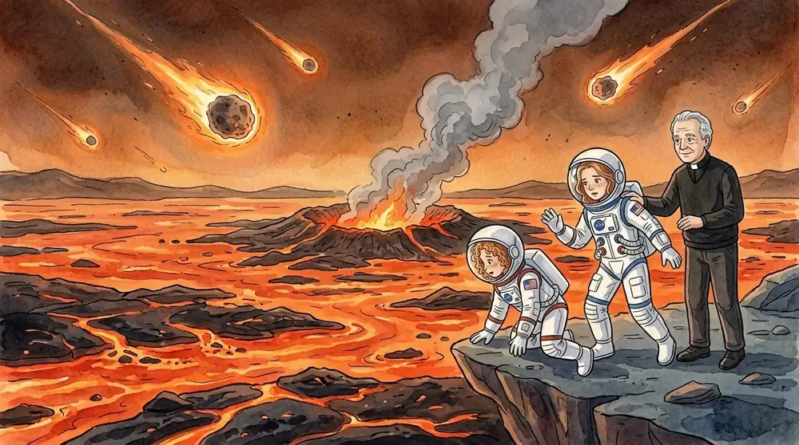
Y al final del párrafo tuvieron planetas.
No de golpe. El proceso fue extraño y mecánico: las piedras se pegaban entre sí, formaban planetésimos, los planetésimos chocaban entre ellos, algunos se rompían, otros se unían, y poco a poco se fueron formando bolas más grandes. Una de las bolas era cerca del Sol. Pequeña, rocosa, todavía caliente. Después había otra. Después, más lejos, otras más grandes y gaseosas.
Georges fue señalando con paciencia. Mercurio. Venus. Esa, dijo, deteniéndose en una en particular. Marte, después. Júpiter. Saturno. Pero quería que se quedaran un rato en esa.
La bola se llamaba la Tierra. Pero todavía no se parecía en nada a su casa.
Aterrizaron sobre ella. Lizzy esperaba sentir suelo: no había suelo. Lo que había era roca derretida. Lava por todas partes, brillante, como un mar de fuego que se movía despacio. El cielo no era azul. Era naranja oscuro, lleno de polvo. Caían meteoritos —algunos pequeñitos, otros enormes— en cada dirección que se mirara.
—El traje —recordó Katherine, con la voz un poco asustada.
—El traje y el libro —dijo Georges, tranquilo—. Aquí no las puede pasar nada. Pero vean. Esta también es la Tierra. Hubo mucho tiempo en que era nada de nadie.
Un meteorito grande cayó cerca. La onda de calor se sintió a través del traje —no quemó, pero se sintió. Lizzy dio un paso atrás por instinto. Katherine se quedó quieta, mirándolo.
El meteorito había abierto un cráter enorme. La lava del cráter borboteaba, levantando humo gris. Después de unos segundos —para ellas; un tiempo más largo en realidad— la onda terminó de pasar y la Tierra siguió igual, hirviendo.
—¿Y esto cuánto va a durar? —preguntó Katherine.
—Bastante —dijo Georges—. Pero algo va a pasar antes que va a cambiar este sitio para siempre. Mejor que vengan a mirarlo desde lejos.
Se elevaron. La Tierra primitiva quedó abajo, una bola hirviente, naranja, cubierta de cráteres recién hechos. Desde lejos casi parecía tranquila. Casi.
Y entonces Georges les indicó al horizonte.
—Algo viene.
Las hermanas miraron. En la oscuridad del espacio, un punto se acercaba. Un punto que crecía rápido. Que crecía mucho.
—¿Otro meteorito? —preguntó Katherine.
—Más grande.
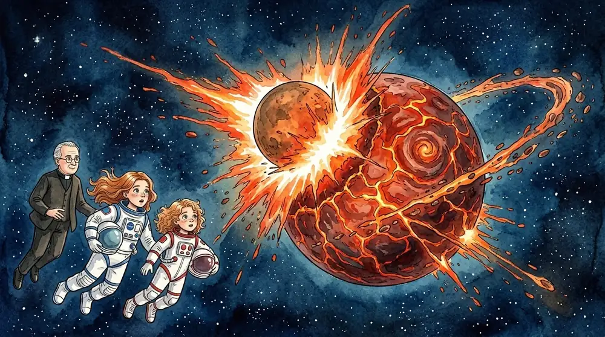
El punto siguió creciendo. Después de un rato —un rato corto, en escala humana, aunque para la Tierra-bebé fueran miles de años— dejó de ser punto y se hizo bola.
Y la bola era enorme. Como medio Marte, pensó Lizzy, recordando la imagen de los planetas que Georges les había enseñado antes. No tan grande como la Tierra, pero casi.
Era otro planeta.
—Se llama Theia —dijo Georges—. O se va a llamar. Ese nombre se lo van a poner los humanos mucho después. Pero eso es lo que es: un planeta gemelo de la Tierra, casi de su tamaño, viajando demasiado cerca10.
—¿Y va a chocar?
Georges asintió.
—¿Con la Tierra?
—Con la Tierra.
Las hermanas se miraron. Era distinto enterarse de un meteorito que de un planeta entero.
—No las puede pasar nada —les recordó Georges, sin esperar a que preguntaran—. Pero a la Tierra sí.
Theia se acercó. La Tierra parecía no enterarse, seguía hirviendo lentamente, ajena. Theia entró en su órbita, se fue acercando más, más, más. Y entonces —en un instante que las dos hermanas iban a recordar siempre, aunque el libro no las dejara hablar de ello con nadie— Theia chocó.
No hubo sonido. El sonido no viaja en el vacío.
Pero hubo todo lo demás.
Una bola de fuego enorme, blanca-naranja, expandiéndose en todas direcciones. Trozos de Theia y trozos de la Tierra saliendo despedidos al espacio en chorros, como quien tira un puñado de tierra al aire. La Tierra cambió de forma —se hundió por un lado, se abultó por otro—, se quedó visiblemente derretida, una pelota de lava que se movía como si fuera de líquido. Theia desapareció. Casi todo entró dentro de la Tierra y se fundió con ella. Lo que no se fundió, salió volando.
Y lo que salió volando se quedó alrededor.
Las hermanas vieron, durante mucho rato —para ellas; muchos días en realidad— un anillo de escombros girando alrededor de la Tierra. Como los anillos de Saturno, pero de roca, no de hielo. Los pedazos chocaban entre sí, se calentaban, se pegaban, se rompían, se volvían a pegar.
—Miren ahora —dijo Georges, y por una vez sonrió ancho, casi como una abuela orgullosa—. Esto sí es bonito.
Los pedazos del anillo, despacio, se fueron juntando en una zona específica de la órbita. Lo que era un anillo difuso se hizo un montón concentrado. Lo que era un montón concentrado se hizo una pelota irregular. Y la pelota irregular, con los millones de años pasando por encima sin pesarles más que un segundo, se redondeó.
Era la Luna.
Las hermanas la vieron como nunca la habían visto. Mucho más cerca de la Tierra. Tan cerca que parecía enorme en el cielo. Recién hecha. Caliente todavía. Con la superficie todavía suavizándose. Y la Tierra, abajo, también caliente, mirándola por primera vez11.
Georges se quedó callado un buen rato. Las hermanas también.
—Esto es el final del principio —dijo finalmente, con la voz un poco más baja que antes—. Lo demás —los océanos, el aire que ustedes respiran, las plantas, los bichitos, los huesos de cualquier abuela— viene después. Pero aquí, aquí ya tienen Tierra. Y ya tienen Luna. Eso es muchísimo. Eso se merece un descanso.
Lizzy, sin pensarlo, se llevó una mano enguantada a los huesos del antebrazo. Los apretó suave, sintiendo el contorno a través del traje. Ahí adentro, sus huesos. Ahí adentro, polvo12.
Georges los vio. Los vio como ven los abuelos que entendieron algo antes que el nieto y prefieren no decirlo.
—Es hora de volverlas —dijo.
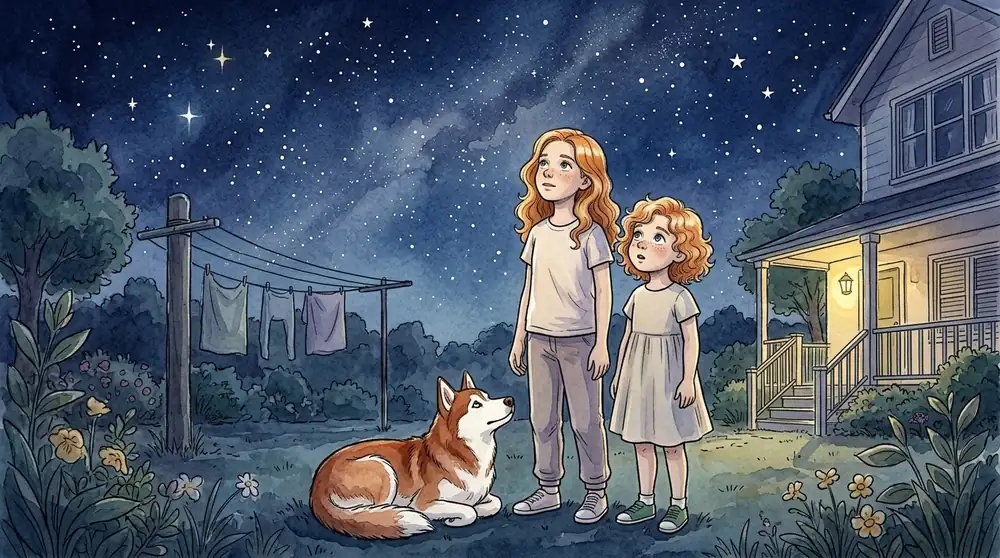
Cayeron en el estudio sin transición. Lizzy aterrizó de pie. Katherine al lado. El traje ya no estaba. Tenían otra vez la ropa con la que habían bajado al jardín, y los pies un poco mojados de la hierba.
El libro estaba cerrado entre ellas dos. Lo abrieron rápido para comprobar. Las páginas estaban en blanco, salvo al final, donde una página tenía una línea nueva, escrita en la misma tinta sepia con que aparecían siempre los rastros del libro:
Había una vez una estrella muy vieja que se rompió, y un trocito muy pequeño de ella terminó dentro de una niña que miraba el cielo.
Nada más. Katherine cerró el libro con cuidado y lo puso exactamente donde lo habían encontrado. Como si llevara años allí y nadie lo hubiera notado.
Bajaron. Sasha estaba en la alfombra, en la misma postura, durmiendo. Levantó la cabeza, las olfateó muy brevemente, suspiró, y se volvió a dormir. Pero algo en el suspiro fue distinto, o eso le pareció a Lizzy.
Salieron al jardín otra vez.
La sábana grande estaba donde la habían dejado, todavía sin doblar del todo. Mamá las llamó desde la cocina —la cena estaba lista, qué hacían afuera, vengan. Pero antes de entrar, Lizzy se quedó quieta mirando el cielo.
Las estrellas seguían en su sitio. Las mismas. Pero Lizzy las miraba distinto.
Katherine se le acercó. Se quedó al lado, sin tocarla. Las dos miraron arriba.
—¿Las que vimos? —dijo Katherine, en voz muy baja.
—Algunas son nietas de las que vimos.
—¿Y nosotras?
Lizzy no contestó. Se miró las manos un momento, las puso casi a contraluz de la lámpara del porche, las giró. Después las dejó caer.
Sasha salió al jardín por la puerta que Katherine había dejado entornada. Olfateó las plantas cerca de la cuerda, encontró el pie de Lizzy, lo olió, y se acostó pegada a las dos hermanas. Suspiró. Se quedó.
Katherine, después de un rato, se acordó de la sábana. La dobló como pudo. La metió bajo el brazo. Le hizo un gesto a Lizzy. Lizzy la siguió. Sasha también, despacio.
En la cocina, mamá había preparado tortilla. Papá leía el periódico. Katherine se sentó. Lizzy se sentó. Mamá las miró —las miró con esa mirada de mamá que sabe que algo pasó pero no va a preguntar— y les sirvió.
Comieron en silencio. Mamá, en algún momento, preguntó si todo bien. Las dos dijeron que sí. Sin entusiasmo, sin nada que escondiera.
Katherine, cerca del final, miró el vaso de agua a contraluz y lo movió un rato. Lizzy, esta vez, no dibujó nada en la servilleta. Lo que hizo, sin pensarlo, fue tocar con la yema de un dedo el borde del plato. Lo siguió por el contorno entero. Una vuelta. Otra vuelta. Una más. No miraba lo que hacía. Tenía la mirada en algún lugar más adentro.
Mamá la dejó.
Por la noche, ya en cama, antes de dormirse, Lizzy abrió los ojos un momento. La ventana estaba abierta. Por la ventana entraba un poco de luz de fuera. Y de fuera —arriba, lejísimos— llegaban las estrellas.
Cerró los ojos.
Glosario
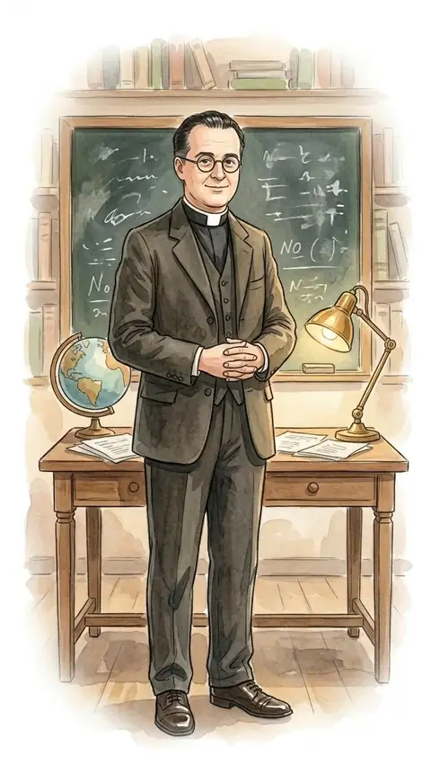
Lemaître, Georges. Georges Lemaître (1894–1966) fue un sacerdote belga y físico, profesor
en la Universidad de Lovaina. Llevó toda su vida una doble vocación:
la sotana y las ecuaciones, sin que ninguna interrumpiera a la otra.
En 1927 propuso, en un artículo en francés que casi nadie leyó al
principio, que el universo se expande. Dos años después, desde un
telescopio en California, Edwin Hubble confirmó la idea midiendo
cómo se alejaban las galaxias unas de otras. En 1931, en la revista
Nature, Lemaître fue más allá: si el universo está creciendo, tuvo
que empezar de algo más pequeño. Imaginó un único punto inicial donde
todo cabía y lo llamó "el átomo primigenio", o "el huevo cósmico".
El nombre con el que el mundo conoce hoy esa idea no se lo puso él. Se
lo puso, en una transmisión de radio de la BBC en 1949, un astrónomo
inglés llamado Fred Hoyle, que no creía en la teoría y se refirió a
ella con sorna como the big bang. El nombre se quedó. Lemaître
nunca lo usó.
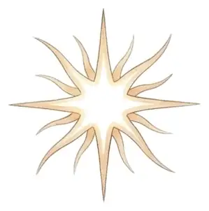
Big Bang. Nombre que damos al instante en que el universo entero comenzó a expandirse desde un punto increíblemente pequeño y caliente, hace unos 13 800 millones de años. No fue una explosión en el espacio: el espacio mismo empezó a crecer.
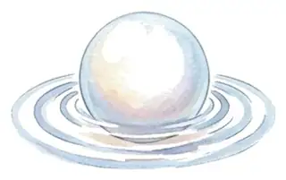
Inflación cósmica. Brevísima fase justo después del Big Bang en que el universo se expandió hasta volverse trillones de trillones de veces más grande, en un tiempo más corto que un parpadeo. Dejó al universo lo bastante grande y uniforme para todo lo que vino después.
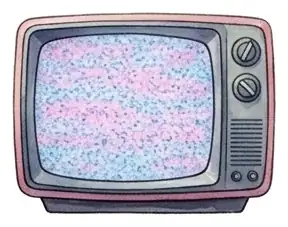
Fondo cósmico de microondas. La luz más antigua del universo, soltada hace unos 13 800 millones de años cuando el cosmos se hizo transparente por primera vez. Sigue viajando por todas partes y se puede medir con antenas. Una pequeña parte de la nieve que se ve en un televisor antiguo desintonizado proviene de esta luz primigenia.
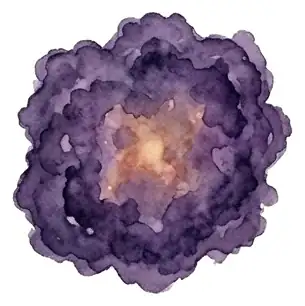
Edad oscura del universo. Etapa que duró cientos de millones de años entre el momento en que el universo se hizo transparente y el encendido de las primeras estrellas. No había fuentes nuevas de luz: solo gas frío expandiéndose en silencio.
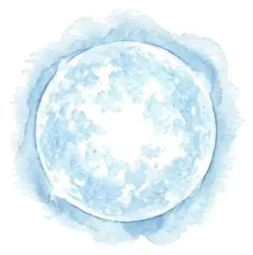
Población III. Las primeras estrellas del universo, formadas solo de hidrógeno y helio porque aún no existían los demás elementos. Eran enormes y blanquísimas, vivían apenas unos pocos millones de años y morían en supernovas violentas que esparcían por primera vez los elementos pesados. Aún no se han observado directamente.
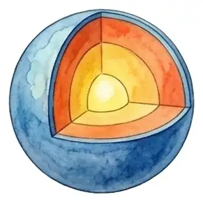
Nucleosíntesis estelar. Proceso por el que las estrellas, en su interior, fabrican elementos químicos pesados a partir del hidrógeno y el helio originales. El carbono, el oxígeno, el calcio y el hierro de nuestro cuerpo se cocinaron así, dentro de estrellas que vivieron y murieron antes de que el Sol existiera.
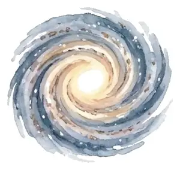
Vía Láctea. Nuestra galaxia: una espiral con barra central que contiene entre cien mil y cuatrocientos mil millones de estrellas. Tiene unos cien mil años luz de diámetro y una edad cercana a la del propio universo. El Sol vive en uno de sus brazos, en una zona tranquila lejos del centro brillante.
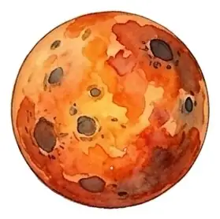
Eón Hadeano. Primera etapa de la Tierra, entre 4 500 y 4 000 millones de años atrás. La superficie estaba en su mayor parte fundida, llovía lava, el cielo era naranja oscuro lleno de polvo y caían meteoritos sin parar. Su nombre viene de Hades, el inframundo griego.
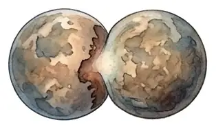
Theia. Protoplaneta del tamaño de Marte que chocó con la Tierra primitiva hace unos 4 500 millones de años. Casi todo Theia se fundió con la Tierra; los pedazos que salieron despedidos quedaron en órbita y, juntándose poco a poco, formaron la Luna. El nombre se lo pusieron los humanos modernos, por la titánide griega madre de Selene.
La era de inflación cosmológica ocurrió antes de aproximadamente 10⁻³² segundos después del Big Bang. Durante ese instante minúsculo el universo se expandió por un factor de al menos 10²⁶ — un trillón de trillones de veces más grande — en una escala temporal del orden de 10⁻³⁶ segundos. Las cifras son demasiado abstractas para nombrarlas; el capítulo las traduce a "menos que un suspiro". La idea de fondo es real: la inflación no es metáfora narrativa, es un componente estándar de la cosmología moderna. Fuente: Wikipedia — Chronology of the universe. Verificado 2026-04-27. ↩
Aproximadamente 380 000 años después del Big Bang, el universo se enfrió lo suficiente para que electrones y protones se combinaran formando los primeros átomos neutros — un evento llamado recombinación. Hasta entonces, los fotones rebotaban constantemente contra electrones libres y la luz no podía viajar lejos: el universo era, literalmente, opaco. Tras la recombinación, los fotones quedaron libres. Esa luz primigenia se observa hoy como el fondo cósmico de microondas, descubierto por accidente en 1964 por Arno Penzias y Robert Wilson en los laboratorios Bell. La frase "una pequeña parte de la nieve de un televisor antiguo es esta luz" es literalmente cierta: aproximadamente el 1% del ruido estático en un televisor analógico desintonizado proviene del fondo cósmico de microondas. Fuente: Wikipedia — Cosmic microwave background. Verificado 2026-04-27. ↩
Las primeras estrellas, llamadas Población III, son hipotéticas pero su existencia se infiere robustamente de la cosmología. No tenían elementos pesados (no había aún), eran muy masivas (entre 20 y 130 masas solares, según los modelos), y vivían apenas 2–5 millones de años antes de morir en supernovas. Aún no se han observado directamente; algunas detecciones tentativas en galaxias de muy alto desplazamiento al rojo (2022–2025) son preliminares. El capítulo las presenta como observación directa por simplicidad narrativa. Fuente: Wikipedia — Stellar population, sección "Population III stars". Verificado 2026-04-27. ↩
La Vía Láctea es una galaxia espiral barrada con un diámetro estimado entre 100 000 y 200 000 años luz, que contiene entre 100 000 y 400 000 millones de estrellas. Su formación se inició muy temprano — su edad estimada es ~13 600 millones de años, casi tan vieja como el universo mismo. La escena del capítulo, con las hermanas viendo la Vía Láctea desde fuera, es licencia visual del libro mágico: en la realidad ningún observador podría salir físicamente de la galaxia para verla. Fuente: Wikipedia — Vía Láctea. Verificado 2026-04-27. ↩
Dentro de las estrellas se produce la nucleosíntesis estelar: el hidrógeno se fusiona en helio (cadena protón-protón o ciclo CNO), el helio en carbono (proceso triple-alfa), y los elementos sucesivos (carbono, neón, oxígeno, silicio) en estrellas más masivas. Cuando una estrella masiva muere en supernova, la onda explosiva produce y dispersa elementos en el rango masa atómica 28–56 (silicio a níquel). El hidrógeno y el helio del cuerpo humano provienen del Big Bang directamente; carbono, oxígeno, calcio y hierro provienen de generaciones de estrellas. Fuente: Wikipedia — Stellar nucleosynthesis. Verificado 2026-04-27. ↩
Las estrellas se clasifican en tres poblaciones según su contenido de elementos pesados ("metalicidad"). La Población III (hipotética) son las primeras, sin metales. La Población II son antiguas, de baja metalicidad. La Población I son jóvenes, de alta metalicidad — incluye al Sol, con 1.4% de elementos pesados. La frase "generaciones" es una simplificación pedagógica honesta: en realidad el enriquecimiento es un continuo, no escalones discretos. Pero la idea de que cada generación de estrellas hereda los elementos cocinados por las anteriores es exacta. Fuente: Wikipedia — Stellar population. Verificado 2026-04-27. ↩
Los elementos más pesados que el hierro (oro, platino, uranio, torio) se producen mayoritariamente en el llamado proceso r — captura rápida de neutrones — durante eventos extremos. Tradicionalmente se atribuía a supernovas, pero en agosto de 2017 la detección de ondas gravitacionales del evento GW170817, una colisión de dos estrellas de neutrones, confirmó observacionalmente que las fusiones de estrellas de neutrones (kilonovas) son al menos un sitio dominante de producción de elementos del proceso r. Una sola fusión puede generar entre 3 y 13 masas terrestres de oro. El capítulo lo menciona de pasada para que la asociación "oro = estrellas que chocan" quede sembrada sin entrar en mecanismos. Fuente: Wikipedia — R-process. Verificado 2026-04-27. ↩
El Sistema Solar se formó hace aproximadamente 4 600 millones de años a partir del colapso gravitacional de un fragmento de una nube molecular gigante (~65 años luz de diámetro). El fragmento presolar tenía aproximadamente 1 parsec (~3.26 años luz) de diámetro y estaba enriquecido con elementos pesados de generaciones estelares anteriores. La idea de que "nuestra nube" tenía polvo de muchas estrellas previas es literalmente cierta: el Sol no podría haberse formado en un universo joven sin generaciones previas que dispersaran los metales necesarios. Fuente: Wikipedia — Formation and evolution of the Solar System. Verificado 2026-04-27. ↩
El disco protoplanetario alrededor del Sol joven tenía aproximadamente 200 unidades astronómicas de diámetro (1 UA = distancia Tierra-Sol). Los granos de polvo crecieron a grumos de hasta 200 metros por colisión y autoadhesión, formando planetésimos de unos 10 km. Por acreción gradual, los planetésimos se convirtieron en protoplanetas y después en planetas, en escalas de millones de años. La Tierra se formó dentro de los primeros 100 millones de años del Sistema Solar. Fuente: Wikipedia — Formation and evolution of the Solar System. Verificado 2026-04-27. ↩
La hipótesis del impacto gigante postula que un protoplaneta del tamaño de Marte, llamado Theia (del nombre de la titánide griega madre de Selene, la Luna), chocó con la Tierra hace aproximadamente 4 500 millones de años, entre 20 y 100 millones de años después de la formación del Sistema Solar. La evidencia incluye la composición isotópica idéntica de Tierra y Luna (oxígeno y otros elementos), composición lunar consistente con material del manto terrestre fundido, el alto momento angular del sistema Tierra-Luna, e indicadores geoquímicos de que la Luna estuvo derretida en algún momento. El nombre "Theia" se lo dieron los humanos modernos; en el capítulo Georges lo usa anacrónicamente porque habla desde fuera del tiempo. Fuente: Wikipedia — Giant-impact hypothesis. Verificado 2026-04-27. ↩
La Luna se formó aproximadamente 50 millones de años después del comienzo del Sistema Solar, a partir de los escombros del impacto de Theia. Inicialmente orbitaba a una distancia de aproximadamente 2.56 radios terrestres (~16 300 km), justo más allá del límite de Roche; hoy orbita a 384 399 km en promedio. La Luna se aleja de la Tierra a unos 3.8 cm por año, medido por reflectores láser dejados por las misiones Apollo. La frase "tan cerca que parecía enorme en el cielo" es literalmente cierta: vista desde la Tierra recién formada, la Luna habría ocupado un disco varias veces mayor en el cielo que el actual. Fuente: Wikipedia — Moon. Verificado 2026-04-27. ↩
La frase "somos polvo de estrellas" no es metáfora poética: es literal. La mayoría de los elementos del cuerpo humano (carbono, nitrógeno, oxígeno, calcio, hierro, fósforo) se cocinaron en estrellas anteriores al Sol y se dispersaron al espacio cuando esas estrellas murieron, alimentando la nube molecular que después formaría nuestro Sistema Solar. Hay una excepción importante que el capítulo no nombra para no complicar: el hidrógeno (~10% de la masa corporal humana, presente en cada molécula de agua) y la mayor parte del helio se formaron directamente en los primeros minutos del Big Bang, no en estrellas. Así que en rigor somos casi todo polvo de estrellas, más una porción primigenia. Fuente: Wikipedia — Stellar nucleosynthesis; Wikipedia — Composición química del cuerpo humano. Verificado 2026-04-27. ↩
El mundo que se acabó una tarde
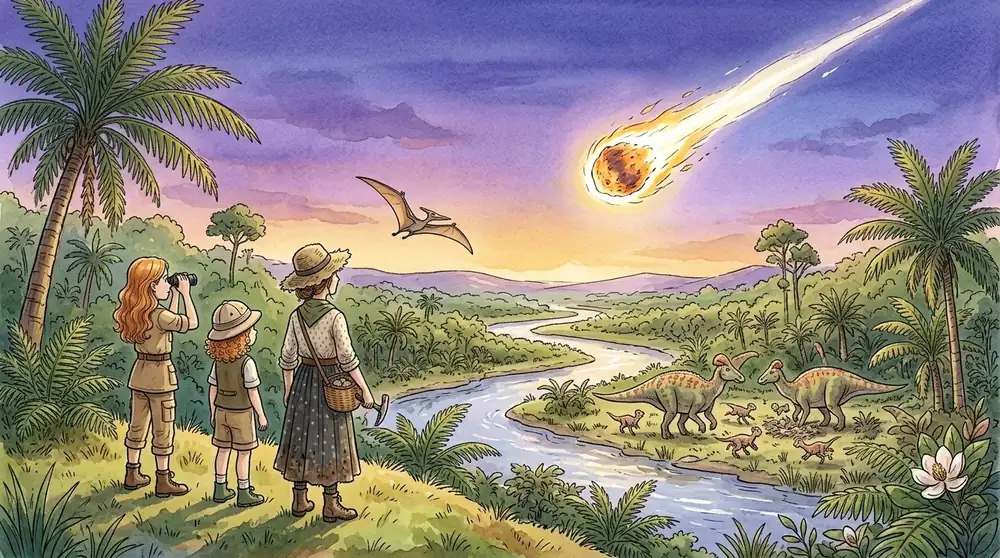
El museo era enorme y olía a piedra. Era domingo por la tarde, llovía afuera con esa lluvia que no arrecia ni se va, y mamá las había traído porque, según ella, ya estaba bien de pasarse el día encerradas.
El museo tenía techos altos como una catedral, pisos pulidos en los que cada paso dejaba un eco que se quedaba flotando un rato antes de apagarse, y un olor a piedra fría que era, de algún modo, el mismo olor del estudio de papá.
Katherine corría de vitrina en vitrina con la nariz pegada al cristal, dejando un rastro de huellas pequeñas que un señor de uniforme limpiaba calladamente detrás. Elizabeth, en cambio, andaba despacio, parándose en cada cartelita, leyendo nombres en latín que se sabía pronunciar a medias. Era una de las pocas cosas en las que se diferenciaban tanto que ni siquiera discutían: Katherine quería ver todo, Lizzy quería entender una sola cosa.
Pasaron por la sala de los minerales, por la sala de los insectos en cajas con alfileres, por una sala llena de pájaros disecados que a Katherine le pareció triste y a Lizzy interesante. Y al final llegaron a la sala grande.
En el centro, montado en una estructura de hierro que parecía no aguantarlo, había un esqueleto. No uno cualquiera. Un esqueleto largo como tres guaguas, con un cuello que subía hasta casi tocar el techo y una cola que se prolongaba hasta la pared del fondo. Las costillas eran arcos enormes, abiertos, como las nervaduras de un barco volteado. Las patas, columnas de hueso del grosor de un tronco. La cabeza, arriba del todo, era ridículamente pequeña para un cuerpo tan largo.
Katherine, por una vez, no dijo nada. Estaba mirando hacia arriba, con la boca entreabierta, intentando que su cabeza alcanzara a abarcar el bicho entero y fallando. Cuando dejó de mirar, le costó volver a la sala.
—¿Esto era de verdad? —preguntó al fin.
—De verdad. Eso es un fósil.
—¿Pero existió? ¿Caminaba por ahí?
—Caminaba.
Las dos se quedaron en silencio frente al hueso. Otra niña, con una libreta y un lápiz, dibujaba la cola desde otro ángulo. Una pareja de turistas se hizo una foto. Pasó un grupo escolar persiguiendo a una maestra. Pero las dos hermanas no se movieron.
Y entonces Elizabeth, que casi siempre dejaba que Katherine preguntara primero, esta vez preguntó ella.
—¿Y cómo sería un día normal para él?
Katherine se quedó mirándola un momento. Después asintió, como si la hubiera estado pensando ella también.
—Eso. ¿Qué hacía? ¿Tenía amigos? ¿Dormía?
Una señora con un cochecito pasó entre ellas y rompió el momento. La maestra del grupo escolar pasó de vuelta llamando a un niño que se había quedado atrás. Mamá apareció por el otro lado y dijo que ya era hora de irse. Bajaron las escaleras del museo, salieron al frío, corrieron hasta el carro bajo la lluvia.
Pero la pregunta se quedó.
Estuvo en el carro, mientras mamá manejaba y la radio iba bajita. Estuvo en la cena, en la que ninguna de las dos habló mucho. Estuvo en el "buenas noches, niñas" de mamá. Estuvo en la oscuridad de la habitación que las dos compartían, donde Katherine se daba vueltas en la cama y Lizzy miraba el techo.
—Liz.
—Dime.
—Ya sabes.
—Ya sé.
Se levantaron. Sasha, en su rincón de la sala, levantó la cabeza un momento al oírlas pasar, las olfateó al pie de la escalera, suspiró, y se volvió a dormir.
Subieron descalzas. La madera de la escalera crujía menos cuando una pisaba al borde, eso ya lo habían aprendido. El estudio olía igual que siempre. A papel viejo, a cuero, a un cajón que lleva mucho tiempo cerrado.
El libro estaba donde lo habían dejado, en la balda de en medio, abierto en una página con las palabras ya puestas, en tinta sepia recién escrita. Las dos las leyeron al mismo tiempo, en silencio, antes de poder leerlas en voz alta. Decían:
El museo era enorme y olía a piedra. Era domingo por la tarde, llovía afuera con esa lluvia que no arrecia ni se va, y mamá las había traído porque, según ella, ya estaba bien de pasarse el día encerradas.
Esta vez le tocaba a Lizzy. La pregunta había sido suya. Katherine se sentó con las piernas cruzadas en la alfombra del estudio y esperó. Lizzy puso las manos a los lados del libro. Respiró. Empezó.
—El museo era enorme y olía a piedra —leyó, y la página entera se iluminó con la luz tibia de las otras veces. La alfombra debajo de Katherine empezó a estirarse. Lizzy alargó la mano y Katherine la agarró sin mirar.
Cayeron.
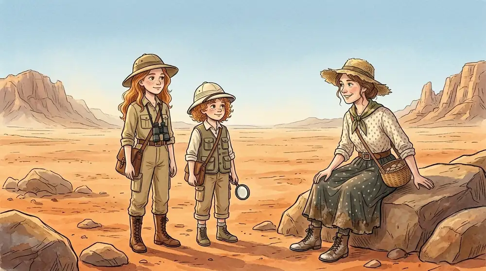
Aterrizaron en arena. Arena seca, caliente, de un naranja casi rojo, que crujía bajo los pies y se metía dentro de los zapatos. El cielo era azul pálido, sin una sola nube, y el aire sabía a polvo. A lo lejos, una cordillera baja se recortaba contra el horizonte. Más lejos todavía, otra cordillera. Y entre las dos, nada: ni un árbol, ni un río, ni un pájaro. Solo arena y piedras y el viento que las pulía.
Lo primero que las hermanas se miraron fueron los pies. Después la ropa. Lizzy llevaba una camisa caqui de manga larga con dos bolsillos en el pecho, un pantalón caqui largo con botas carmelitas de cuero y un sombrero de safari de ala ancha. De su cuello colgaban unos prismáticos. Una satchel de cuero le cruzaba el pecho. Katherine, en cambio, llevaba un casco colonial color crema, un chaleco con muchos bolsillos llenos de cosas que no había metido ella, un pantalón caqui también, botas tobilleras, y una lupa de mango grueso en la mano.
—Yo quería el sombrero del otro —dijo Katherine, tocándose el casco.
—El tuyo es mejor.
—¿Por qué?
—Porque el mío es para sol. El tuyo es para sol y para sitios donde podría caer una piedra.
Katherine se miró el casco con respeto.
—¿Esto es la Tierra? —preguntó después, mirándolo todo con desconfianza.
—Esto era la Tierra.
La voz venía de atrás. Las niñas se giraron.
Una mujer joven estaba sentada en una piedra grande, con un sombrero de paja desfondado en la cabeza y una falda larga manchada de barro seco. Llevaba un martillo pequeño colgado del cinturón y, cruzada al pecho, una cesta de mimbre. En la cesta había piedras. Tenía las manos sucias y los ojos muy claros, y al verlas sonrió con una sonrisa ancha y un poco torcida.
—Buenas tardes —dijo, con un acento extraño, como si hablara español pero pensara en otro idioma—. Me llamo Mary. Estaba esperándolas. Les advierto que tienen un buen trecho por delante.
—¿Cuánto? —preguntó Katherine.
Mary hizo el gesto de pensarlo, como si calculara.
—Doscientos millones de años. Algo así.
Se bajó de la piedra de un saltito, se sacudió el polvo de la falda y caminó hacia ellas. Cuando estuvo cerca, miró a Katherine, después a Lizzy, y después miró por encima del hombro de Lizzy, hacia algún punto detrás de ellas. Sostuvo la mirada un instante.
—Y a ustedes también, los que están viendo esto. Lo que va a pasar lo van a reconocer en algún sitio. Aunque no lo sepan todavía.
Las hermanas se voltearon. No había nadie. Solo arena y la cordillera lejana.
—¿Con quién hablas? —preguntó Katherine.
—Con alguien que mira desde otro sitio.
—No hay nadie.
—Algún día lo sabrán.
Y siguió, como si no hubiera dicho nada raro:
—Estamos en el principio del Mesozoico.2 La Era de los Lagartos Terribles, le pusieron unos señores hace tiempo. Aunque ni eran lagartos ni todos eran terribles. Y los más interesantes, ni siquiera son los grandes que ustedes conocen del museo.
—¿Y dónde están? —preguntó Katherine, mirando la arena vacía.
—Mira despacio.
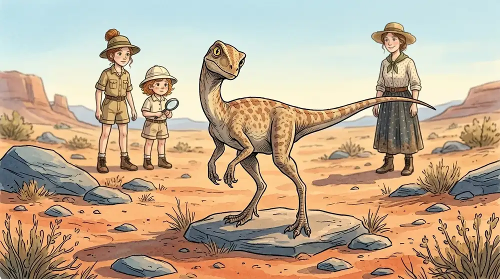
Las hermanas miraron. Al principio no vieron nada. Pero entonces, entre las piedras, algo se movió.
Un bicho pequeño, no más grande que un perro mediano, con la piel rugosa y las patas traseras largas y delgadas. Saltó de una piedra a otra y se quedó muy quieto. Tenía dos ojos amarillos, redondos, atentos. Ladeó la cabeza, despacio, como hacen los pájaros cuando intentan escuchar algo. La ladeó hacia el otro lado. Después saltó otra vez y desapareció entre las rocas.3
—¿Eso era un dinosaurio? —preguntó Elizabeth, sin atreverse a moverse del todo.
—Eso era uno de los primeros. Hace doscientos treinta millones de años. Por aquí, en lo que un día se va a llamar Argentina, viven unos cuantos. Nada espectacular todavía. Pequeños, rápidos, cazan insectos y lagartijas. Pasan desapercibidos.
—Es chiquito —dijo Katherine.
—Por ahora.
Mary se acomodó el sombrero.
—Ese tipo y los suyos van a heredar la Tierra. Pero les va a costar un buen rato. Doscientos millones de años no son nada para el universo, pero son una eternidad para los animales que los viven. Vengan.
Caminaron. O creyeron que caminaban: lo cierto es que el paisaje a su alrededor empezó a cambiar mientras avanzaban, sin que ninguna de las dos estuviera segura de cuántos pasos había dado. La tierra naranja se volvió tierra parda. Las cordilleras lejanas se rompieron y se separaron. El aire se hizo húmedo. Aparecieron las primeras coníferas, después helechos altos como casas, después flores diminutas amarillas pegadas al suelo. Aparecieron riachuelos que se hicieron arroyos y se hicieron ríos.
—Estamos pasando del Triásico al Jurásico —dijo Mary—. Habrán pasado cincuenta o sesenta millones de años. Las cosas, cuando son tan grandes, no se notan al cambiar.
—¿Cómo sabe usted la fecha? —preguntó Lizzy.
—No la sé exacta. La calculo por las plantas. Cuando aparecen estos helechos altos y esas coníferas, ya estamos en el Jurásico.
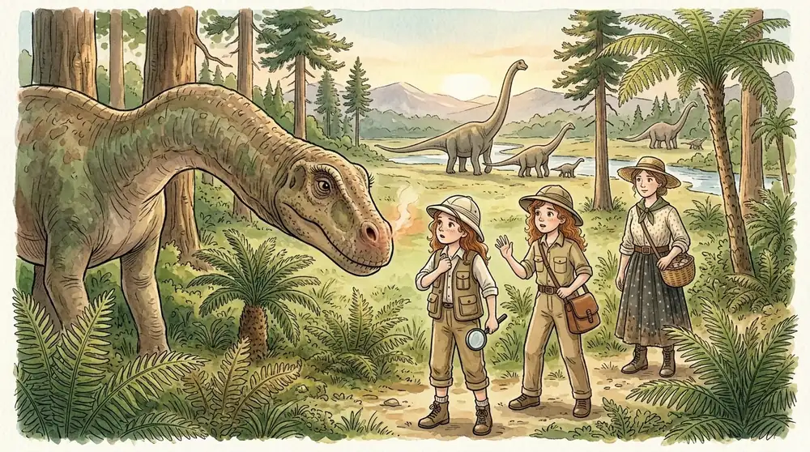
Salieron de un pinar y se detuvieron al borde de un valle.
Katherine fue la primera que vio. Soltó la mano de Elizabeth.
Por el valle pasaba una procesión. Pero llamarla manada era quedarse corto: era una procesión. Animales de cuello larguísimo y cola larguísima, caminando despacio, comiendo las copas de los árboles. Cada uno medía como una casa. Iban en orden, los grandes adelante, los jóvenes en el medio, otros grandes detrás cerrando la fila. La tierra temblaba un poquito a cada paso de los más grandes.
—Diplodocus —susurró Elizabeth, con la voz partida—. Como el del museo.
—Y braquiosaurios. Y otros que ni nombre tienen todavía, porque en el sitio donde están enterrados nadie va a encontrar sus huesos. Esos serán los que se queden sin ser conocidos. Hay muchos así. Más de los que ustedes pueden imaginarse.
Las niñas se quedaron mirando un rato muy largo. Una de las hembras del grupo levantó la cabeza hasta una rama altísima de una conífera, mordió un manojo de agujas, masticó despacio. Otro adulto se rascó el costado contra un tronco. Un cachorro —si así se le puede llamar a un saurópodo joven— corrió un trecho corto y volvió cerca de su madre.
Y entonces uno de los jóvenes, más curioso que los otros, se separó del grupo y se acercó a las hermanas.
Era del tamaño solo de una guagua. La cabeza pequeña en lo alto del cuello, los ojos con pestañas como cepillos. Bajó el cuello despacio, sin prisa, y agachó la cabeza hasta acercarla a Katherine. Los ollares le palpitaban. Eran grandes, húmedos. Su aliento olía a hierba mascada y a algo más antiguo, como a tierra de bosque mojado.
Katherine no se movió. Lizzy tampoco. Mary, a un paso atrás, las miraba sin decir nada.
El joven saurópodo olfateó a Katherine, después a Lizzy, después el aire que había entre las dos. Levantó la cabeza un poco. La ladeó. La volvió a bajar. Olfateó otra vez. Cuando se cansó —o cuando entendió que no eran nada que pudiera comer ni nada que diera miedo— levantó la cabeza otra vez hasta el cielo y se volvió a su grupo.
—No tienen miedo de nosotras —dijo Katherine, en voz muy baja, cuando el animal estuvo lo bastante lejos.
—No saben qué somos. En su mundo no existe nada parecido a ustedes. Ningún mamífero del tamaño de una niña. Los mamíferos, en estos años, son del tamaño de una rata. Viven entre las hojas y salen de noche.
—¿Y nosotras les olemos a algo?
Mary se rió bajito.
—A algo nuevo. Probablemente fascinante.
Caminaron un poco más al borde del valle. Mary les contó —mientras los saurópodos seguían su procesión— cómo se sabe que andaban en manadas. Que se han encontrado huellas en grupos en piedras antiguas, en sitios que hoy se llaman Estados Unidos y Portugal. Las huellas de los grandes en el perímetro y las huellas de los jóvenes en el centro: como si los protegieran. Y el largo del paso, y la profundidad de la huella, y cómo se calcula el peso del animal.
—¿Por las huellas? —preguntó Katherine, escéptica.
—Por las huellas. Y por los huesos. Y por cómo está construido el cuerpo. Es como si te dijeran solo el largo del pie y la altura del techo de tu casa, y tuvieras que adivinar qué clase de persona vive ahí.
Caminaron más. El paisaje siguió cambiando despacio, sin que ninguna lo notara. Pasaron junto a un río donde unos dinosaurios bajitos, con cresta sobre la cabeza, bebían en grupo. Cuando Lizzy se asomó a mirar, levantaron la cabeza al unísono y se quedaron muy quietos hasta que la pasaron.
Vieron, a lo lejos, un Allosaurus. Mary les puso una mano en el hombro a cada una y las hizo agacharse, aunque el animal no las miró. Era más pequeño que el T-Rex que verían más tarde, pero era enorme igual. Caminaba sobre dos patas, con la cabeza baja, olfateando el suelo. Pasó sin verlas y se perdió entre los helechos.
—Ese podría comerse al joven que olfateó a Kathy —dijo Mary, sin alzar la voz, cuando el Allosaurus se hubo ido—. No siempre lo logra. Los saurópodos jóvenes son grandes para él, y los adultos pueden defenderlos a coletazos. Pero a veces sí.
Vieron, en una playa de un mar que no era el mar de hoy sino un mar más cálido y más bajo, a unas crías de algo que Mary no quiso nombrar. Jugaban entre las olas mientras la madre dormía cerca. Vieron caer la noche, y descubrieron que los dinosaurios también dormían. Los grandes, de pie. Los pequeños, en grupos apretados unos contra otros.
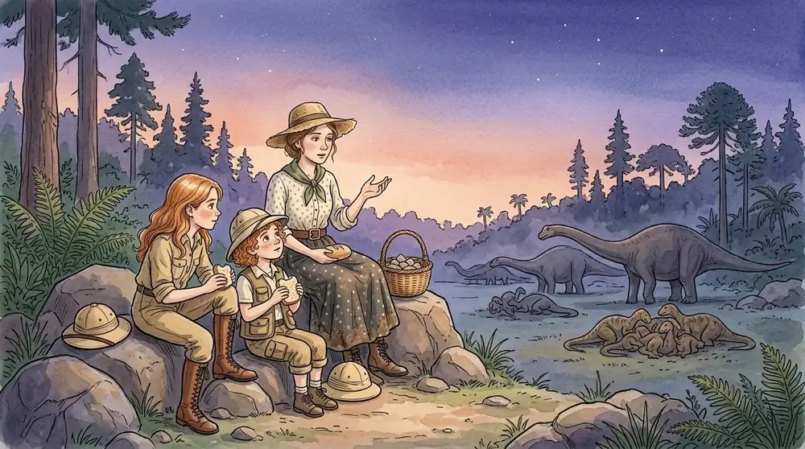
Katherine se sentó en una piedra a mirarlos. Lizzy se sentó a su lado. Mary se sentó al otro lado, sacó de la cesta un trozo de pan y lo partió en tres.
Comieron en silencio.
—Mary —dijo Katherine al rato, con la voz baja del que no quiere romper algo.
—Dime.
—¿De qué color eran?
Mary masticó. Tragó.
—De algunos sabemos. De otros, no.4 Han encontrado fósiles con restos de pigmento. Hay uno chino que se llama Sinosauropteryx, con la cola a rayas carmelitas y blancas como la de un mapache. Hay otro, Anchiornis, que era casi todo negro pero con plumas blancas en las alas y una cresta rojiza. Hay un acorazado al que llaman Borealopelta, oscuro arriba y claro abajo, como las jirafas pero al revés. Eso último se llama camuflaje de presa: tenía depredadores grandes que lo cazaban, y la naturaleza le dio dos colores para que pareciera plano desde arriba y plano desde abajo.
—¿Y el Diplodocus?
Mary se encogió de hombros.
—No sabemos. La mayoría de los colores se fueron con ellos. El tiempo se los llevó.
—¿Y los sonidos? —preguntó Lizzy, después de un rato—. ¿Se sabe?
—Eso todavía menos.5 Hay quien dice que rugían. Otros dicen que graznaban. Otros, que cantaban como pájaros. Hay científicos vivos ahora mismo, en su tiempo, intentando saberlo. De los hadrosaurios con cresta hueca creen que pueden modelar la voz por cómo está hecha la cresta por dentro: la cresta es un instrumento de viento. De los grandes, en cambio, no se sabe casi nada. Algunos creen que el T-Rex hacía ruidos muy graves, como los elefantes, que viajan por la tierra más que por el aire. Otros creen que graznaba. Es una pregunta abierta.
Lizzy pensó en el museo, en el Diplodocus suspendido en el aire, mudo. Y pensó que había estado mirando solo los huesos. Y que los huesos eran lo que se quedaba cuando todo lo demás —el color, la voz, el olor del aliento, la manera de ladear la cabeza— ya se había ido.
No dijo nada.
Siguieron caminando. El Jurásico se hizo Cretácico sin que ninguna lo notara. El paisaje cambió otra vez. Las flores —que antes casi no había— ahora estaban por todos sitios: pequeñas y blancas en el suelo, grandes y rojas en arbustos altos, otras lila en las copas de árboles que eran ya parecidos a los árboles modernos.
—Las flores son un invento del Cretácico —dijo Mary—. Antes había plantas, claro. Pero sin flores. Las flores aparecieron y a los insectos les volvieron locos. Los insectos pasaron a polinizarlas. Y desde entonces el mundo huele distinto.
Aparecieron los Triceratops, macizos y serios, con sus tres cuernos y su cuello acorazado por una placa enorme de hueso. Pacían en grupo cerca de unas magnolias en flor, levantando la cabeza de vez en cuando para mirar alrededor. Cuando uno de los machos vio a las hermanas a lo lejos, soltó un mugido bajo. Los demás levantaron la cabeza al unísono. Las hermanas se quedaron muy quietas, agarradas a Mary. Después de un rato, los Triceratops volvieron a comer.
Aparecieron los hadrosaurios, en manadas inmensas. Maiasaura, dijo Mary, "buena madre lagarta", el nombre se lo puso un paleontólogo en mil novecientos setenta y nueve cuando encontró nidos enteros con crías y cáscaras. La manada era de cientos. Mugían en una nota baja que parecía venir de dentro de la tierra y que se sentía en el pecho antes que en el oído. Las crías corrían entre las patas de los adultos, y los adultos se cuidaban de no pisarlas.
Vieron pasar dos Velociraptor a media velocidad por entre los helechos.6 Mary los señaló con un gesto rápido.
—Esos son Velociraptor.
Lizzy frenó.
—¿Esos? Pero son chiquitos. Como un perro grande.
—Como un perro mediano. Dos metros de largo contando la cola. Cincuenta centímetros de alto a la cadera. Pesan como ustedes dos juntas.
—En las películas son enormes.
—En las películas se equivocan. Y hay otra cosa que se equivocan: les ponen escamas. No tenían. Tenían plumas. Eso lo descubrieron en dos mil siete, encontrando en un fósil las marcas de donde estaban pegadas las plumas en el hueso del antebrazo. Las marcas son pequeñas, como puntos. Los pájaros vivos tienen las mismas marcas en los mismos huesos. No es interpretación: es huella directa.
Katherine miró los dos Velociraptor alejándose entre los helechos. Las plumas no se le veían bien desde lejos pero ahora que sabía que las tenía, las imaginaba.
—Parecen pollos malos —dijo.
Mary se rió.
—Pollos rapidísimos y malos.
Pasó un Ankylosaurus por un sendero, andando lento como un tanque. Tenía toda la espalda cubierta de placas de hueso y la cola terminaba en una bola grande. Mary les explicó que esa bola podía romper el hueso de la pata de un T-Rex de un solo golpe.
—¿Lo ha visto romper algo? —preguntó Katherine.
—Hueso, no. Una piedra grande, sí. Y eso fue suficiente.
Mary se detuvo de pronto frente a un claro y se puso un dedo en los labios.
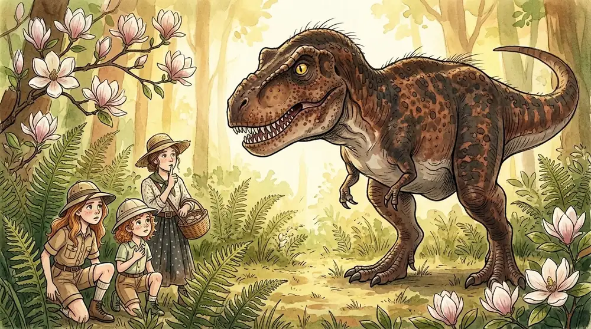
Allí, cazando lentamente entre los helechos, había un tiranosaurio.7
Era enorme. No como el del museo: el del museo eran huesos. Este era piel, músculo, ojos amarillos, dientes. Caminaba sobre dos patas, despacio, con el peso del cuerpo equilibrado por la cola larga que se mantenía rígida en el aire. Las patitas delanteras eran ridículamente pequeñas. Tenían dos dedos cada una, con uñas curvas. La cabeza, en cambio, era del tamaño de un carro: alargada, llena de dientes que asomaban por fuera del hocico cuando lo cerraba.
Cuando giró la cara hacia donde estaban ellas —aunque no las vio, porque el libro las hacía transparentes— las dos dejaron de respirar al mismo tiempo. Tenía un ojo amarillo del tamaño de una manzana, y la pupila era una rendija negra vertical. Los dientes, vistos de cerca, eran del largo de un plátano y curvos hacia adentro. Cada uno con el filo serrado, como un cuchillo de cortar pan pero peor.
El tiranosaurio olfateó el aire. Las hermanas no se movieron. Después dio un paso, dos pasos, y se alejó del claro siguiendo un rastro que ellas no veían.
Mary esperó a que se hubiera ido un buen trecho antes de bajar la mano que les estaba poniendo en el hombro.
—Ese es el rey.
Lizzy seguía mirando el sitio por donde se había ido el animal. Le costaba parpadear.
—Ese.
—Ese. Pero lleva poco siendo rey. Y le quedan menos años de los que él se imagina.
Mary se quedó callada un rato. Después se sentó en una piedra y sacó de la cesta un trozo de hueso pulido, redondeado, que ella ya conocía bien. Lo tuvo un rato en la mano.
—Vengan acá —dijo—. Esto que voy a contarles sirve para entender el resto.
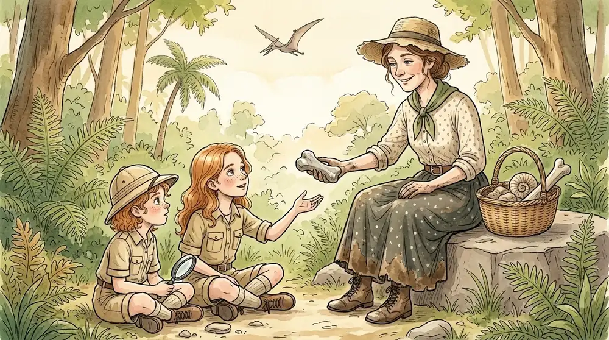
Las hermanas se sentaron en el suelo, a sus pies. Mary les pasó el fragmento de hueso. Era pesado, duro como una piedra, frío. Tenía vetas oscuras y la superficie estaba pulida como si alguien la hubiera lijado durante años.
—Esto fue parte de algo —dijo Mary—. No sé exactamente qué. Vértebra, probablemente, de un animal de mediano tamaño, hace ciento veinte millones de años. Lo encontré en un acantilado, en Inglaterra. Asomaba un poquito de la roca, esperando a que alguien pasara y lo viera.
—Pesa mucho —dijo Katherine, sopesándolo.
—Pesa porque ya no es hueso. Es piedra. Eso es lo que le pasa al hueso cuando lleva millones de años enterrado: el animal muere, queda cubierto de barro o de arena, los minerales del agua se meten poco a poco entre las células del hueso, y la forma del hueso se queda pero el material se sustituye por piedra. Lo que ven en el museo no es hueso. Es la forma del hueso, hecha de piedra.
Lizzy le devolvió el fragmento. Mary lo guardó en la cesta con cuidado.
—Y eso es lo único que se conserva, casi siempre. Hueso vuelto piedra. Algunos dientes. Algunas huellas, cuando coinciden de quedarse en barro y secarse rápido. Algunos nidos enteros, si tuvieron suerte. A veces piel, si la enterraron muy rápido. Casi nunca ojos. Casi nunca el contenido del estómago. Casi nunca el cerebro.
—¿Y entonces cómo saben tantas cosas?
—Investigando lo poco que se queda. Si encuentro una vértebra, sé que tenía esa vértebra. Sé el tamaño. Sé dónde se inserta el músculo. Si encuentro un cráneo, sé el tamaño del cerebro y dónde estaban los ojos y la nariz. Si encuentro huellas, sé el largo del paso, y por eso sé el tamaño y sé la velocidad. Si encuentro un nido, sé qué hacían con los huevos y, si hay crías dentro, sé que cuidaban a las crías.
Mary hizo una pausa.
—Pero hay cosas que no sabemos. Y son muchas. Lo que les he dicho de los Maiasaura, que cuidaban a las crías: eso lo sé porque encontraron nidos. Si no se hubieran encontrado, no lo sabríamos. Y de la mayoría de los dinosaurios no se han encontrado nidos. Así que de la mayoría no sabemos si eran buenos padres o malos.
—¿Y se inventan? —preguntó Katherine.
—Se inventa cuando se hace un cuento, o una película. Pero un científico bueno les dice qué inventa y qué sabe. Eso es la clave. No mezclar.
Lizzy asintió, despacio. Le gustaba esa frase.
Lizzy miró el cielo. Un pterosaurio cruzaba despacio, con sus alas membranosas extendidas, batiéndolas raramente.
—¿Y eso?
Mary miró hacia arriba.
—Ese es un pterosaurio.8 Y aquí hay que aclarar una cosa importante. Los pterosaurios NO son dinosaurios.
—¿No?
—No. Son reptiles voladores. Primos lejanos de los dinosaurios, pero por su lado. Tampoco son aves. Las aves todavía no han aparecido del todo. Los pterosaurios inventaron el vuelo por su cuenta, con una membrana de piel sostenida por un dedo larguísimo. Y los mosasaurios del mar, esos lagartos enormes que nadan, tampoco son dinosaurios. Son tres familias distintas, y las tres se van a morir el mismo día, por la misma razón. Pero no son lo mismo.
—¿Por qué la gente las confunde?
—Porque vivieron al mismo tiempo. Y porque son raras. Y porque ahora ya no hay nada parecido. Es fácil confundir cosas que ya no existen.
Mary se levantó, se sacudió la falda y miró al cielo otra vez. La sonrisa torcida de antes ya no estaba.
—Hay que subir un poco más arriba —dijo—. Para ver lo que les quiero enseñar al final.
Subieron a un cerro. Desde allí se veía un valle ancho, con un río que serpenteaba entre helechos y palmeras y magnolias. La manada de Maiasaura estaba todavía cerca del agua, ahora cuidando a las crías. Las crías saltaban entre las patas de los adultos como pollos saltan entre las patas de su madre. Otro pterosaurio cruzó arriba, sin prisa. El cielo era de un azul limpio. Hacia el este se ponía casi violeta, con esa luz extraña que tienen algunos atardeceres antes de que el sol se baje del todo.
—Mira hacia allí —dijo Mary, señalando el cielo.
Las niñas miraron.
Al principio no vieron nada. Después vieron un punto. Después el punto se hizo una línea muy fina. Después la línea se hizo una bola con una cola larga, que crecía, que crecía. Bajaba en silencio. Eso fue lo más raro: bajaba en silencio. Estaba todavía tan lejos que el sonido aún no había llegado a ellas.
—¿Qué es? —dijo Katherine, agarrándose a Mary.
—Es una piedra —dijo Mary—. Una piedra muy grande. Del tamaño de una ciudad. Diez o quince kilómetros de ancha.9 Viene de muy lejos. Lleva mucho tiempo viajando para llegar exactamente aquí, hoy, esta tarde.
Mary miró por encima del hombro de Lizzy, hacia ese punto detrás. La sonrisa torcida volvió un instante, casi triste.
—Esto que viene les va a quedar grabado. Para todos los que lo vean.
Las hermanas no preguntaron esta vez con quién hablaba. La frase quedó flotando en el aire. La bola siguió creciendo. Ya no era un punto. Ya era un sol pequeño cruzando el cielo, con una cola que se estiraba detrás de ella como una bufanda larga blanco-amarilla. Iba hacia el horizonte, donde Mary dijo que estaba el mar, donde algún día se llamaría México, donde algún día se llamaría Yucatán.
Y entonces tocó la Tierra.
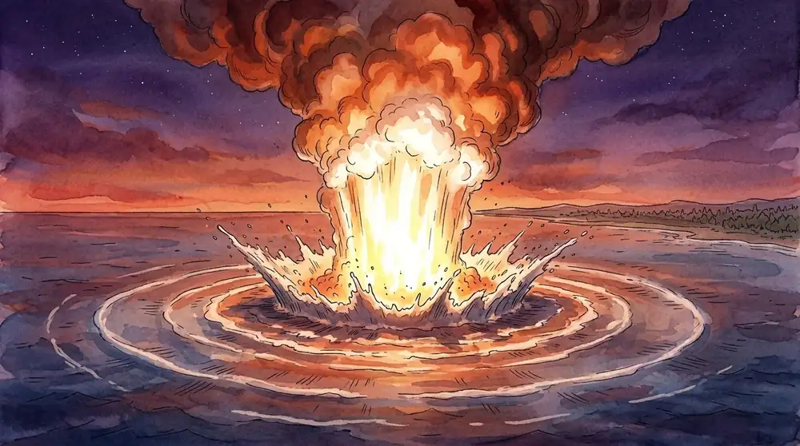
No vieron el impacto, porque el impacto fue al otro lado del mundo para ellas. Pero el cielo, al instante, se llenó de una luz blanca, muy blanca, como si alguien hubiera abierto una puerta enorme en el aire. La luz era tan clara que Lizzy se tapó los ojos con el brazo. Cuando los abrió, todavía deslumbrada, vio que algo había cambiado en el valle.
Los Maiasaura del valle habían dejado de moverse. Todos. Todos al mismo tiempo. Las crías que saltaban, paradas. Los adultos que mugían, callados. El agua del río parecía haber dejado de correr también, aunque eso no podía ser verdad. Era como si alguien hubiera apretado un botón y todo el valle se hubiera quedado en pausa.
Y después llegó el viento.
Pero no era viento. Era una pared.
Mary las puso a las dos detrás de ella y abrió los brazos como si fuera a abrazar a las dos al tiempo, sin tocarlas. La pared atravesó el cerro. Atravesó a Mary. Atravesó a las hermanas. Pero no las tocó, porque el libro las hacía transparentes para todo. Lo único que sintieron fue un zumbido, un cambio de presión en los oídos.
El valle, en cambio, sí lo sintió.
Las palmeras se doblaron y se rompieron en su mitad. Los helechos se aplanaron contra el suelo. Las magnolias soltaron sus flores en una nube. Los Maiasaura cayeron de costado, todos, los grandes y los pequeños, como si alguien los hubiera empujado al mismo tiempo. El río dio un latigazo y se salió de su cauce un trecho.
Y después llegó el sonido.
Un trueno largo, que no terminaba. Un trueno que era a la vez muchos truenos: el del impacto, los del aire abriéndose, los de las cosas que se rompían a su paso. Sonó durante un rato muy largo. Las hermanas se taparon los oídos. Mary, no.
Y después el cielo se oscureció.
Lo último que vieron las niñas, antes de que Mary les pusiera la mano sobre los ojos con cuidado, fue el comienzo de los incendios. En todas direcciones, a la vez, bosques enteros empezando a arder con una luz naranja que se extendía como un mantel sobre el horizonte.
—No miren más —dijo Mary, en voz baja—. Ya basta.
Y las dejó así, con los ojos tapados, mientras la oscuridad seguía cayendo.
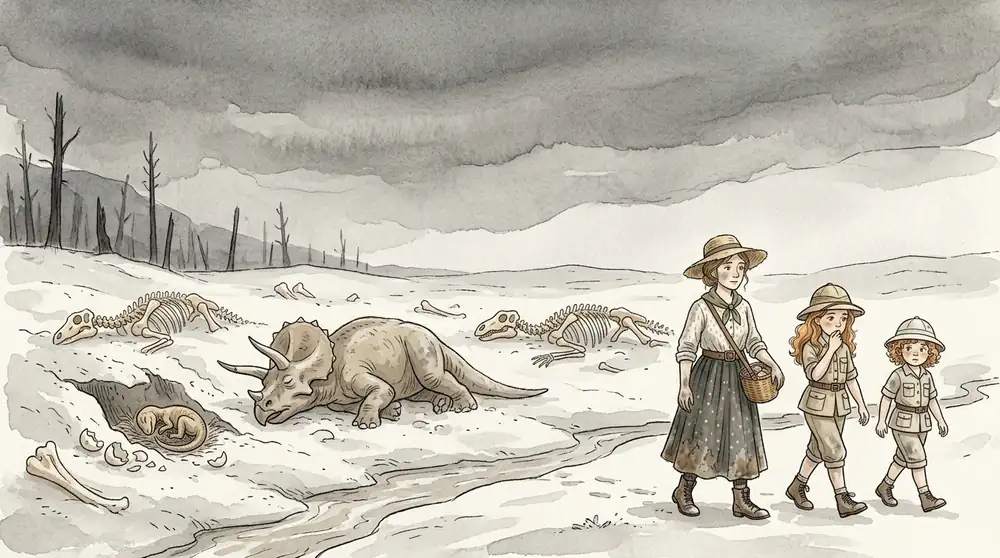
Cuando Mary les retiró la mano de los ojos, había pasado tiempo. No supieron cuánto. El sol no se veía. El cielo era de un gris denso, como un techo bajo, sin diferenciación entre nube y nube. El aire estaba tibio y olía a quemado, y el suelo estaba cubierto de una ceniza fina, blanca, que se metía en los zapatos por arriba y se levantaba en remolinos cuando alguien caminaba.
Caminaron por el valle un rato, despacio. Encontraron junto al río ahora seco los huesos de los Maiasaura, ya casi blancos, hundiéndose en la ceniza. Encontraron un Triceratops caído de costado, con un cuerno roto y los ojos cerrados. Encontraron, más adelante, lo que parecía haber sido un nido pequeño, con cáscaras de huevo y una cría diminuta a su lado.
No vieron al tiranosaurio. Mary dijo que tampoco lo verían: que él fue de los primeros en irse. Los grandes carnívoros necesitaban comer mucho y rápido, y ya no había de qué comer.
—¿Murieron todos? —preguntó Lizzy, en una voz que apenas se le oía.
—Casi todos. Tres de cada cuatro especies del planeta entero. Los grandes, sobre todo, porque ya no había de qué comer. La oscuridad va a durar meses. Las plantas no van a crecer porque sin luz no pueden hacer comida. Los herbívoros morirán de hambre. Y después, los carnívoros que se los comían. Y los carnívoros pequeños que se comían a los carnívoros más pequeños. Toda la cadena se viene abajo en pocos meses.
—¿Y los chiquitos? —preguntó Katherine, despacio.
—Algunos chiquitos sí. Los que dormían en madrigueras. Los que comían poco. Los que comían cosas que no necesitaban luz: insectos muertos, semillas viejas, materia que estaba ya en el suelo y que iba a estar ahí muchos años.
—¿Y entre los dinosaurios?
Mary se agachó para que estuviera a su altura.
—Y unos pocos que ya tenían plumas, y podían volar.
Katherine levantó la cabeza, despacio.
—¿Volar?
Mary asintió.
—Algunos dinosaurios pequeños, hacía ya rato, habían empezado a tener plumas.11 Primero para abrigarse. Después, algunos, para planear de un árbol a otro. Después, algunos, para volar de verdad. Hay un fósil precioso, Archaeopteryx, que ya volaba hace ciento cincuenta millones de años. Tenía plumas, dientes, cola larga, garras en las alas. Era un dinosaurio que volaba. Los descendientes suyos, y de otros como él, son los únicos dinosaurios que cruzaron lo que está pasando hoy.
—¿Los pájaros? —dijo Lizzy, despacio, como si la palabra no encajara con lo que estaba viendo. Como si "pájaro" y "dinosaurio" fueran palabras que no iban juntas.
—Los pájaros —dijo Mary—. Los pájaros son dinosaurios. Los únicos que quedan.
Katherine miró el cielo gris. Esperó. No pasó nada todavía. Pero ella siguió mirando.
—Cuando volvamos a su mundo —dijo Mary, levantándose— van a salir al jardín. Mírenlo despacio.
Y la luz alrededor empezó a aflojarse, igual que las otras veces.
Estaban en el estudio.
La alfombra. Los libros. El olor a papel viejo. Por la ventana, todavía oscuro, pero con un asomo de azul muy débil en el cielo. Faltaba poco para amanecer.
El libro tenía una sola línea nueva, escrita en la misma tinta firme que las otras veces:
Había una vez un mundo entero, y se acabó una tarde.
Lizzy la leyó dos veces, en silencio. Katherine la leyó tres. Después cerraron el libro juntas, con las dos manos a los lados, y lo dejaron donde estaba.
Bajaron descalzas. En la cocina, mamá no se había levantado todavía. Pasaron por el pasillo, abrieron la puerta del jardín y salieron.
La hierba estaba mojada de rocío. Olía a tierra fresca. El cielo arriba ya no era oscuro del todo: tenía un azul lechoso, ese azul de las primeras horas. Por algún sitio cantaba un gallo, muy lejos.
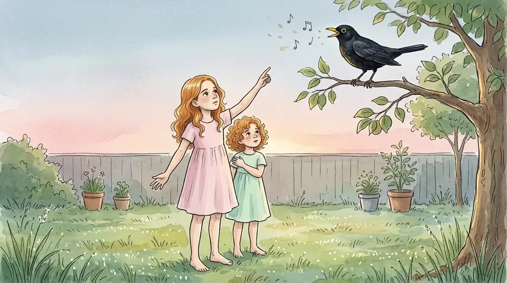
Sobre la rama del manzano del fondo del jardín, un mirlo se estaba peinando las plumas con el pico. Plumas negras, brillantes. Pico amarillo. Ojo amarillo con un círculo amarillo más pálido alrededor. Se detuvo cuando ellas salieron, con el pico todavía cerca de las plumas del pecho. Las miró con un ojo. Movió un poco la cabeza y las miró con el otro.
Lizzy se acercó al árbol y se quedó muy quieta debajo. El mirlo no se voló. Ladeó la cabeza despacio, como había ladeado el dinosaurito chiquito en el Triásico la primera vez. La ladeó al otro lado. Saltó a una rama más alta, sin esfuerzo, como si la gravedad no le importara. Empezó a cantar.
Era un canto largo, con muchas notas distintas. Subía y bajaba. Se paraba un instante. Volvía a empezar.
Katherine se acercó a su hermana sin hacer ruido. Se paró a su lado, con la cabeza también levantada hacia el árbol.
—Liz —dijo, casi sin abrir la boca—. ¿Es uno?
Elizabeth no contestó enseguida. Esperó a que el mirlo terminara una frase de su canto. Después levantó la mano despacio, hasta que el dedo apuntó al pájaro. Después, sin bajar la mano, lo movió un poco hacia el cielo, al sitio entero del cielo, como abarcándolo.
Después asintió.
El mirlo terminó otra frase, esperó un instante con la cabeza ladeada, y empezó otra.
Mamá las llamó desde la cocina. Era hora de desayunar.
Entraron despacio, sin hablar. Sasha levantó la cabeza desde la alfombra de la sala al verlas pasar, las olfateó al pie de la escalera, suspiró, y se volvió a echar bocarriba.
En el manzano del jardín, el mirlo siguió cantando un rato más.
Glosario
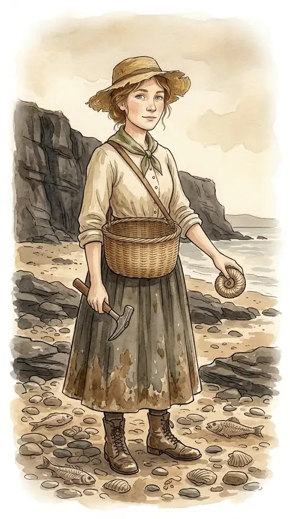
Anning, Mary. Mary Anning (1799–1847) fue una buscadora de fósiles inglesa que vivió
toda su vida en el pueblo costero de Lyme Regis, en el sur de
Inglaterra. Allí, los acantilados de pizarra negra del Jurásico se
desmoronan al mar, y con cada tormenta dejan al descubierto huesos de
criaturas que vivieron cuando las islas británicas estaban en el fondo
del océano.
Aprendió a buscar fósiles de su padre, ebanista y coleccionista de
domingo. Cuando él murió, ella tenía once años. Con doce ayudó a
desenterrar el primer ictiosauro completo conocido. En 1823 encontró
el primer plesiosauro. En 1828, el primer pterosaurio británico.
Identificó los coprolitos —heces fosilizadas— que hasta entonces
nadie sabía nombrar.
La Sociedad Geológica de Londres le negó la admisión por ser mujer.
Aun así, los geólogos importantes de su época venían a verla, le
compraban fósiles y, a veces, le robaban descubrimientos. Charles
Dickens le escribió un obituario veinte años después de su muerte.
Hoy se la considera una de las fundadoras de la paleontología moderna,
y los acantilados que recorrió siguen llamándose, en su honor, la
Costa Jurásica.
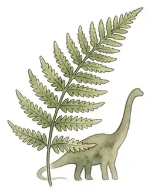
Era Mesozoica. Larguísima etapa de la historia de la Tierra, entre 252 y 66 millones de años atrás, dividida en tres periodos: Triásico, Jurásico y Cretácico. Los dinosaurios vivieron en los tres. Empezó después de una gran extinción y terminó con otra.
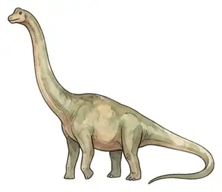
Saurópodo. Familia de dinosaurios herbívoros enormes con cuello y cola larguísimos, cabeza pequeña y cuatro patas como columnas. Los más grandes (Diplodocus, Brachiosaurus, Apatosaurus) llegaron a 26 metros de largo y treinta toneladas. Vivieron sobre todo en el Jurásico tardío y se desplazaban en manadas por las llanuras.
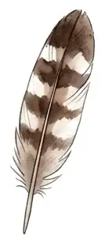
Melanosomas. Diminutas cápsulas de pigmento dentro de las células de la piel y las plumas. En algunos fósiles excepcionales se han preservado, y por su forma se puede deducir el color del animal: alargados producen tonos negro-carmelita, redondos producen tonos rojizo-anaranjado. Gracias a ellos sabemos qué color tenían unas cuantas especies de dinosaurios.
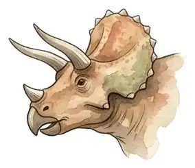
Triceratops. Dinosaurio cuadrúpedo herbívoro del Cretácico tardío. Tenía tres cuernos en la cabeza y un enorme escudo óseo detrás del cráneo. Llegaba a nueve metros de largo. Compartió tierra y época con el Tyrannosaurus, que lo cazaba — pero no siempre lo conseguía.
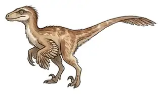
Velociraptor. Dinosaurio carnívoro pequeño del Cretácico, en lo que hoy es Mongolia. Medía unos dos metros con cola y pesaba lo que un perro grande. Los fósiles muestran que tenía plumas en los antebrazos, aunque no podía volar. La versión gigante y sin plumas de las películas es incorrecta.
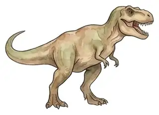
Tyrannosaurus rex. Gran dinosaurio carnívoro bípedo de los últimos dos millones de años del Cretácico, en lo que hoy es Norteamérica. Hasta trece metros de largo, nueve toneladas, brazos cortos, dientes del tamaño de un plátano y una de las mordidas más fuertes que jamás existió. Lleva poco siendo rey y le quedan menos años de los que él se imagina.
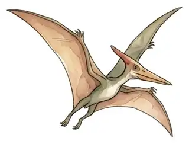
Pterosaurio. Reptil volador del Mesozoico, con alas de piel sostenidas por un cuarto dedo enormemente alargado. NO era un dinosaurio, aunque los acompañó toda la era. Tampoco era un ave: el vuelo lo inventó por su cuenta. El más grande conocido, Quetzalcoatlus, tenía once metros de envergadura — más que una avioneta pequeña.
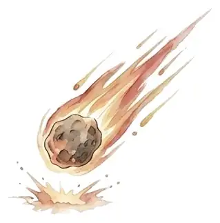
Chicxulub. Cráter de unos 180 km de ancho enterrado bajo la península de Yucatán, en México. Lo dejó un asteroide de entre 10 y 15 km de diámetro que cayó hace 66 millones de años. La energía liberada equivale a varios miles de millones de bombas atómicas como la de Hiroshima, y desató la extinción que acabó el Cretácico.
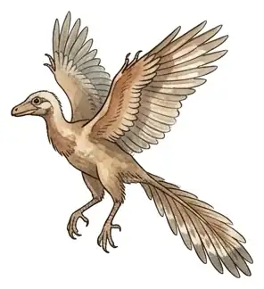
Aves como dinosaurios. Las aves modernas — todas, desde el gorrión hasta el pingüino — son dinosaurios. Descienden de un grupo de pequeños terópodos emplumados que cruzaron la extinción del Cretácico. Tienen huesos huecos, espoleta y plumas en común con sus antepasados. La línea de los dinosaurios no se acabó.
Los saurópodos eran cuadrúpedos herbívoros de cuello y cola larguísimos, cabeza pequeña, y la familia más grande del Jurásico tardío. Diplodocus (~152 mya, formación Morrison de Norteamérica) llegaba a 26 metros de largo y 15 toneladas, con cuello horizontal y cola muy larga. Brachiosaurus altithorax (~150 mya) tenía las patas delanteras más largas que las traseras (de ahí su nombre, "lagarto del brazo"), llegaba a 22 metros y unas 30 toneladas, con cuello vertical para alcanzar copas altas. Apatosaurus (~152 mya) era similar a Diplodocus en tamaño pero más robusto. La evidencia de manada viene de huellas fósiles encontradas en grupos en Estados Unidos, Portugal y otros lugares, con los individuos más grandes en el perímetro y los más pequeños en el centro. La curiosidad del joven saurópodo "olfateando" a Katherine es licencia narrativa razonada: los cráneos muestran bulbos olfativos bien desarrollados, así que la fisiología lo permite, pero ningún humano fue olfateado por un saurópodo. Fuente: Wikipedia — Sauropoda. Verificado 2026-04-28. ↩
La Era Mesozoica abarca de 252 a 66 millones de años atrás, dividida en tres periodos: Triásico (252–201 mya), Jurásico (201–145 mya) y Cretácico (145–66 mya). El término Dinosauria lo acuñó el anatomista británico Richard Owen en 1842, del griego deinós (terrible o asombroso) más saûros (lagarto). Owen se equivocó en parte: los dinosaurios no son lagartos, son un clado distinto de arcosaurios, más cercano a las aves modernas y a los cocodrilos que a los lagartos verdaderos. La frase "ni eran lagartos ni todos eran terribles" del capítulo refleja este matiz. Fuente: Wikipedia — Mesozoic. Verificado 2026-04-28. ↩
Los primeros dinosaurios aparecieron en el Triásico tardío, hace unos 230 millones de años, en lo que hoy es Sudamérica (principalmente Argentina y Brasil). Eoraptor lunensis (~230 mya) era bípedo, de aproximadamente un metro de largo y diez kilos, terópodo basal. Herrerasaurus ischigualastensis (~228 mya) era más grande, hasta seis metros, también bípedo. Ambos eran depredadores pequeños o medianos. La descripción del bichito "ladeando la cabeza como hacen los pájaros" no es licencia poética: los terópodos tempranos compartían postura cervical y comportamientos visuales con sus descendientes vivos, las aves. Esta inferencia se sostiene en el registro fósil de cráneos y vértebras, no en observación directa. Fuente: Wikipedia — Eoraptor. Verificado 2026-04-28. ↩
Desde 2008, los paleontólogos han recuperado melanosomas — orgánulos celulares que contienen pigmentos de melanina — preservados en plumas y piel fosilizadas. La forma del melanosoma se correlaciona con el color: alargados producen tonos negro-carmelita (eumelanina), redondos producen tonos rojizo-anaranjado (feomelanina). Especies con color reconstruido: Sinosauropteryx prima (China, ~125 mya, cola con bandas castañas y blancas), Anchiornis huxleyi (China, ~160 mya, negro general con plumas blancas con bordes negros, cresta rojiza, patas blancas), Borealopelta markmitchelli (Canadá, ~110 mya, nodosaurio acorazado con countershading: oscuro arriba, claro abajo). Los pigmentos no melánicos (rojos, amarillos, azules estructurales) NO se conservan, así que la mayoría de los colores siguen perdidos. Fuente: Wikipedia — Dinosaur coloration. Verificado 2026-04-28. ↩
Cómo sonaban los dinosaurios sigue siendo pregunta abierta. Las cuerdas vocales y partes blandas no se conservan. Los hadrosaurios con cresta hueca se modelan digitalmente como instrumentos de viento — las simulaciones producen vocalizaciones graves resonantes. Para el T-Rex se han propuesto rugidos, graznidos como aves grandes, e infrasonidos como elefantes y caimanes; sin consenso. La recuperación de DNA de dinosaurios es físicamente imposible: el DNA tiene una vida media de aproximadamente 521 años en condiciones óptimas (estudio de huesos de moa de 2012). Tras 66 millones de años, la cantidad esperada de DNA viable es cero. Algunas proteínas (colágeno) se han recuperado de fósiles excepcionalmente bien conservados, pero no DNA. Clonarlos no será posible. Fuente: Wikipedia — Hadrosauridae y Ancient DNA. Verificado 2026-04-28. ↩
Velociraptor mongoliensis (~75–71 mya, Mongolia y China) medía alrededor de dos metros incluyendo cola, cincuenta centímetros a la cadera, y pesaba unos quince kilos. En 2007 los paleontólogos identificaron quill knobs (marcas de inserción de plumas) en el cúbito de un Velociraptor — los quill knobs aparecen en aves modernas como sitios donde se anclan las plumas secundarias. Conclusión: tenía plumas en los antebrazos, aunque no podía volar. Jurassic Park (1993) lo pintó del tamaño de su pariente americano Deinonychus (~3 m, también con plumas en realidad) y sin plumas; ambas representaciones son incorrectas según la paleontología actual. Las plumas evolucionaron primero en dinosaurios terrestres (probablemente para regulación térmica), y solo después algunos linajes las usaron para planeo y vuelo. Fuente: Wikipedia — Velociraptor. Verificado 2026-04-28. ↩
Triceratops horridus (~68–66 mya, oeste de Norteamérica) era cuadrúpedo herbívoro, hasta nueve metros de largo, con tres cuernos y enorme escudo óseo detrás del cráneo. Maiasaura peeblesorum ("buena madre lagarta") fue nombrada en 1979 por el paleontólogo Jack Horner al encontrar nidos completos con crías y cáscaras en Montana — primera evidencia clara de cuidado parental en dinosaurios. Vivían en colonias de cientos a miles de individuos. Ankylosaurus magniventris (~68–66 mya) era cuadrúpedo herbívoro acorazado, con cola terminada en maza ósea capaz de romper huesos grandes. Tyrannosaurus rex (~68–66 mya, hasta trece metros y nueve toneladas, mordida récord de unos 35 000 newtons) vivió solo los últimos dos millones de años del Cretácico — la frase "lleva poco siendo rey y le quedan menos años de los que él se imagina" es ciencia, no metáfora. Fuente: Wikipedia — Tyrannosaurus. Verificado 2026-04-28. ↩
Los pterosaurios fueron reptiles voladores que vivieron desde el Triásico tardío hasta el final del Cretácico (228–66 mya). NO eran dinosaurios — eran un grupo separado de arcosaurios, hermano de los dinosaurios pero distinto. Tampoco eran aves: el vuelo evolucionó de manera independiente, con membrana de piel sostenida por un cuarto dedo enormemente alargado. Especies notables: Pteranodon (~7 m de envergadura) y Quetzalcoatlus (~11 m, el animal volador más grande conocido). Los mosasaurios (reptiles marinos del Cretácico, parientes de las serpientes y lagartos modernos) tampoco son dinosaurios; los plesiosaurios tampoco. Tres grupos distintos murieron en el K-Pg, por linajes separados pero por la misma causa. Fuente: Wikipedia — Pterosaur. Verificado 2026-04-28. ↩
El impactor de Chicxulub fue un asteroide (la mayoría de los modelos) o cometa de 10–15 km de diámetro que cayó hace 66.043 millones de años en lo que hoy es la península de Yucatán, México. El cráter resultante mide ~180 km de ancho y está enterrado bajo sedimentos. Identificación del cráter: en 1980 Luis y Walter Alvarez publicaron la hipótesis del impacto basados en la capa global de iridio en la frontera K-Pg; en 1981 Glen Penfield identificó la anomalía gravimétrica circular en Yucatán; en 1991 Hildebrand y colegas confirmaron edad y tamaño. La energía liberada equivale a unos 100 millones de megatones de TNT — varios miles de millones de bombas atómicas como la de Hiroshima. Fuente: Wikipedia — Chicxulub crater. Verificado 2026-04-28. ↩
La extinción del Cretácico-Paleógeno (K-Pg, antes K-T) ocurrió hace ~66 millones de años y acabó con aproximadamente el 75% de las especies del planeta — no solo los dinosaurios no avianos, también todos los pterosaurios, mosasaurios, plesiosaurios, los amonites, y muchos foraminíferos planctónicos y plantas. Mecanismo del invierno de impacto: el impacto vaporizó roca y produjo una nube global de polvo, aerosoles de azufre y hollín de incendios forestales globales; la nube bloqueó la luz solar durante meses a años; las plantas dejaron de fotosintetizar; los herbívoros murieron de hambre; los carnívoros después. Sobrevivieron animales pequeños en madrigueras (mamíferos, anfibios), peces, insectos detritívoros, semillas con dormición, y dinosaurios pequeños con plumas — los antepasados de las aves modernas. La frase "tres de cada cuatro especies" es traducción narrativa del 75%. Fuente: Wikipedia — Cretaceous–Paleogene extinction event. Verificado 2026-04-28. ↩
Las aves modernas (clado Aves) son dinosaurios — específicamente terópodos manirraptores. Es consenso científico desde los años 70–90, no metáfora. Evidencia: hueso pneumático con sacos aéreos (solo aves vivas y dinosaurios terópodos extintos lo tienen), furcula o espoleta, plumas que aparecen primero en terópodos no voladores, posición de cría idéntica entre terópodos como Citipati y aves modernas, ADN cercano a cocodrilos. Archaeopteryx lithographica (~150 mya, Alemania) es la forma transicional clásica: plumas, dientes, cola larga ósea, garras en alas, capacidad de planeo o vuelo. Las ~10 000 especies actuales de aves descienden del subclado de terópodos manirraptores que cruzaron el filtro K-Pg. Cada gorrión, gallina, pingüino y águila es un dinosaurio terópodo viviente. Fuente: Wikipedia — Origin of birds. Verificado 2026-04-28. ↩
Los vecinos del Sol
Era una noche de invierno tan despejada que el cielo parecía más cerca que el piso. Elizabeth y Katherine habían sacado a Sasha al patio antes de dormir, y la perra se había tirado de cabeza a una raíz que olía a algo viejo, indiferente al frío. Katherine se metió las manos en los bolsillos del abrigo, dejó salir el vaho por la boca, y miró arriba.
Hizo lo que siempre hace: empezó por encontrar lo raro.
—Esa estrella es rara —dijo, señalando con el mentón hacia el oeste, encima del techo del vecino. Había un punto muy brillante, un poco amarillento, perfectamente quieto.
Lizzy buscó. La encontró. Miró un rato largo.
—No titila —dijo.
—No titila.
—Eso quiere decir que no es estrella. —Lizzy puso ese tono de cuando recordaba algo de la escuela—. Es planeta. La señorita Esther lo explicó. Las estrellas titilan porque están lejísimos y la luz tiene que pasar por todo el aire de la atmósfera. A los planetas la luz les llega más pareja, porque están más cerca. No titilan.
—Ah —dijo Katherine. Se quedó mirando el punto. Después—: ¿Cuál planeta?
Lizzy abrió la boca. La cerró.
—Mañana le pregunto a la señorita.
—¿Cuántos planetas hay?
—Ocho.
—¿Estás segura?
Lizzy iba a decir que sí, pero se acordó de Plutón, de una conversación de adultos en la mesa de Navidad, una discusión donde todo el mundo se reía pero nadie acababa de explicarse. Y se quedó callada. Sasha levantó la cabeza de la raíz, las olfateó al pasar, y se metió en la casa.
—Vamos —dijo Lizzy, sin terminar la frase.
Subieron al estudio. El libro estaba donde lo dejaron, junto a la pata del estante. Esta vez también estaba abierto. En la página, en tinta sepia recién puesta, las palabras ya estaban ahí. Las dos las leyeron al mismo tiempo, en silencio. Decían:
Era una noche de invierno tan despejada que el cielo parecía más cerca que el piso. Elizabeth y Katherine habían sacado a Sasha al patio antes de dormir, y la perra se había tirado de cabeza a una raíz que olía a algo viejo, indiferente al frío. Katherine se metió las manos en los bolsillos del abrigo, dejó salir el vaho por la boca, y miró arriba.
Katherine sonrió un poquito.
—Me toca leer —dijo.
Lizzy le hizo un gesto con la barbilla. Katherine tomó aire y empezó. Para cuando llegó a "miró arriba", la página entera se había iluminado con esa luz tibia que ya las dos conocían, y el estudio, los estantes, las ventanas, el patio que seguía oscuro afuera, todo se desdibujó alrededor de ellas como si alguien hubiera borrado el dibujo del mundo con una goma muy suave.
Y entonces cayeron.
Cayeron sobre césped frío. Olor a humedad, a metal pulido, a aceite viejo de mecha. Era de noche también ahí, pero distinto: el cielo estaba más negro y las estrellas se veían más, muchísimas más.
Lizzy se miró las manos. Eran guantes blancos, gruesos. Levantó la vista al brazo: traje blanco entero, con costuras visibles en el codo y en el hombro, un panel con líneas azules y un par de botones en el pecho. Las botas también blancas, con suela gorda.
—Esta ropa la conozco —dijo Katherine, mirándose. Se llevó la mano a la espalda y palpó algo grande y rectangular. La mochila. El casco redondo le colgaba al lado, sujeto a la correa del cuello.
—La del primer libro —dijo Lizzy.
—La del primer libro.
No se dijeron más. Lo demás lo entendían las dos.
A unos pasos de ellas, casi tapado por la sombra del telescopio enorme que ocupaba el centro del jardín —un cilindro de madera larguísimo, sostenido por cuerdas y poleas, con un espejo al fondo que reflejaba el cielo—, había una mujer pequeña. Mucho más pequeña de lo que Lizzy hubiera esperado: apenas más alta que Katherine. Bata oscura, mandil blanco. Llevaba un gorrito amarrado bajo el mentón. Tenía las manos manchadas de tinta y un cuaderno pequeño, encuadernado en piel carmelita, atado a la cintura por una cinta. Las miró sin sorpresa. Como si las hubiera estado esperando.
—Buenas noches —dijo, en voz baja—. Soy Caroline. Vine de Hannover hace mucho. Mi hermano descubrió un planeta nuevo y desde entonces miramos el cielo todas las noches que se puede.
Katherine se inclinó un poco hacia adelante para mirarla bien.
—¿Usted es astrónoma?
—Eso parece —dijo Caroline. Sonrió apenas—. La primera mujer que cobra un sueldo por mirar las estrellas, según dicen en el palacio. Aunque yo prefiero llamarme cazadora de cometas. He cazado ocho hasta ahora, y la noche es joven.
Tocó con un dedo el cuaderno colgado de la cintura, como confirmando algo. Después miró a las hermanas con calma profesional, de arriba abajo.
—Esta noche vamos a hacer una vuelta entera al barrio del Sol —dijo—. El cielo es enorme y la mayoría de él es vacío. Yo las voy a llevar. Agárrense bien. Y los cascos: no me los pierdan. La mayor parte del barrio o no tiene aire, o tiene aire que es veneno. O hace tanto frío que los pulmones se congelan al respirar. —Se quedó pensando un instante, mirando hacia algún punto que Lizzy no podía precisar—. Y a ustedes les va a parecer raro lo que viene. Sobre todo lo de Plutón.
Las hermanas se miraron.
—¿Con quién hablas? —preguntó Katherine.
Caroline tardó en contestar, sin volverse del todo.
—Con alguien que ya leyó este capítulo. O que lo está leyendo ahora.
Lizzy abrió la boca para preguntar otra cosa, pero Caroline ya estaba de espaldas, recogiendo del piso una cinta larga y plateada que parecía hecha de la misma tela que los trajes.
—Vamos al Sol primero —dijo, sin volverse—. Que es donde empieza todo.
No hubo viaje. Hubo un parpadeo, y de repente el Sol llenaba casi todo lo que se podía ver. Una bola enorme de luz blanca-amarilla, hirviendo en la superficie, surcada de manchas oscuras. Por los bordes le salían largas serpentinas de fuego. Una pantalla translúcida flotaba delante de las tres, no se sabía cómo, y dejaba mirar sin que doliera. Caroline iba en el medio. No llevaba casco. Las hermanas a los lados, con los visores bajados.
—Antes de que digan nada —dijo Caroline, y metió la mano en uno de los bolsillos del mandil. Sacó dos cosas: una toronja entera, redonda, color ocre, y un grano de arena.
Las puso en la palma. La toronja le ocupaba casi toda la mano. El grano apenas se veía.
—Si esto fuera el Sol —dijo, levantando la toronja—, la Tierra sería este granito. A doce metros de aquí.
Katherine miró el grano. Volvió a mirar la toronja. Miró al Sol enorme, suspendido frente a ellas, y después a la mano de Caroline. Lo dijo despacio, con un poco de pelea en la voz:
—¿Doce metros?
—Doce metros —dijo Caroline. Y guardó la toronja y el grano otra vez.
Esperó a que digirieran.
—Todo lo que vamos a visitar esta noche —siguió— gira alrededor de él. El Sol pesa noventa y nueve coma ochenta y seis por ciento de todo el peso del barrio.1 Todo lo demás —los planetas, las lunas, los asteroides, los cometas— son migajas. Migajas que caen y caen sin caer del todo, porque la gravedad las hace dar vueltas. Como una pelota atada con una cuerda muy larga: no se cae, no se va. Da vueltas.
Lizzy asintió despacio.
—Hace mucho tiempo —dijo Caroline— se pensaba que la Tierra estaba en el centro y todo daba vueltas a su alrededor. Hasta que un señor llamado Nicolás Copérnico,2 hace casi quinientos años, escribió un libro diciendo que no, que la Tierra daba vueltas alrededor del Sol.
El libro lo publicaron el mismo año en que se murió. —Pausa—. Después vino un alemán, Johannes Kepler,3 que descubrió que las órbitas no eran redondas como un círculo perfecto, sino un poco aplastadas, como un huevo de pájaro: elipses. Y un inglés, Isaac Newton,4 que se dio cuenta de que la fuerza que mantiene a la Tierra dando vueltas alrededor del Sol es la misma que hace caer una manzana al piso. La gravedad.
—¿La misma fuerza? —preguntó Katherine.
—La misma exacta.
Katherine miró otra vez al Sol. Después, más bajito:
—¿Y si un día se apaga?
Caroline no sonrió. Se quedó mirando el Sol también.
—Eso es para otro capítulo —dijo.
Lizzy notó que Katherine se acercó un poquito al hombro de Caroline. No mucho.
—La superficie está a unos cinco mil quinientos grados —dijo Caroline después de un rato, en otro tono, como si nada—. Por eso es tan blanco. Es una estrella ordinaria, de las más comunes que hay. Hay miles de millones de estrellas como esta en la galaxia. Pero esta es la nuestra.
Otro parpadeo. Pisaron tierra gris.
Era roca pelada hasta donde se veía. Llena de cráteres, unos sobre otros, como si alguien hubiera tirado piedras durante miles de millones de años sin parar. El cielo, encima, era negro como el carbón. Mediodía y negro.
—Mercurio —dijo Caroline, sin más explicación—. El planeta más pequeño y el más cercano al Sol.
Lizzy levantó la cabeza al cielo negro, con el visor bajado.
—¿Por qué está tan oscuro? —preguntó.
—Porque no hay aire. Sin aire no hay azul. Y sin aire tampoco hay manera de repartir el calor. —Caroline señaló al horizonte, donde se veía la línea que separaba el lado iluminado del Sol del lado oscuro—. Acá, donde estamos, es de día. El termómetro marca trescientos cincuenta grados.5 Si caminamos diez minutos hasta llegar al lado oscuro, en pocas horas baja a ciento setenta bajo cero. Quinientos grados de diferencia. En pocos pasos.
—Quinientos —repitió Katherine.
—No tiene lunas. No tiene atmósfera. Una vuelta alrededor del Sol le toma ochenta y ocho días.
Caroline se inclinó, recogió un puñado de polvo gris, lo dejó caer entre los dedos. Cayó despacio. Después se enderezó.
—Vamos a un lugar más raro.
Otro parpadeo, y aterrizaron en un mar de nubes amarillas. No se veía la tierra. La luz era difusa, anaranjada, como cuando hay mucho humo en la atmósfera. Y el guante de Lizzy empezó a soltar vapor: pequeñas volutas blancas escapando del puño y del cuello.
—Quietas —dijo Caroline rápido, sin alarmarse—. Los trajes están aguantando. Aquí afuera, sin traje, en cinco segundos las dos serían carbón.
—¿Dónde estamos? —preguntó Katherine, que retrocedió un paso por instinto, aunque no había a dónde retroceder.
—Venus —dijo Caroline—. Casi del tamaño de la Tierra. Pero el aire de aquí es noventa y seis por ciento dióxido de carbono. Eso es lo que sale del tubo de escape de un carro, multiplicado por toda una atmósfera. Y la presión es noventa veces más fuerte que la de la Tierra: si los cascos se rompieran, los aplastaría en un instante, como una lata vieja debajo de un pie.6
Katherine miró el vapor saliendo de su propio guante. Después a Caroline, que no llevaba casco.
—¿Y usted?
—Yo no estoy —dijo Caroline, sin sonreír—. El libro me arregló. No se preocupen.
Katherine la miró un rato largo, sin contestar.
—La temperatura aquí —siguió Caroline— es cuatrocientos sesenta y cuatro grados en la superficie. Más caliente que Mercurio, aunque Venus está al doble de distancia del Sol que Mercurio. ¿Saben por qué?
Lizzy negó.
—Por el efecto invernadero. La luz del Sol entra por las nubes, calienta la tierra, la tierra trata de mandar el calor de vuelta al espacio, pero el dióxido de carbono no lo deja salir: lo atrapa, lo devuelve, lo atrapa de nuevo. El calor se acumula. Y el planeta hierve. —Caroline las miró—. Lo mismo que está empezando a pasar, en versión chiquita, en la Tierra de ustedes. Pero eso también es para otro capítulo.
Salieron rápido. Una vez fuera, en el espacio negro entre Venus y la Tierra, Katherine dijo, sin mirar a nadie:
—Pobre Venus.
—Es un planeta, Kathy.
—Ya sé.
—Ahora algo distinto —dijo Caroline.
Las puso de espaldas al Sol, en un punto del espacio donde no había nada cerca. La Tierra estaba al frente, no demasiado lejos: una bola azul-blanca, con remolinos de nube, con el contorno carmelita de un continente que Lizzy no llegó a identificar pero que le dio un golpe en el pecho. Era su planeta. Ahí abajo estaba la casa. Y Sasha, durmiendo en la alfombra. Y mamá. Todo eso, en esa bola.
—Más lejos —dijo Caroline.
Algo las movió hacia atrás, sin sentirse. La Tierra se hizo más chica.
—Más.
Más chica.
—Más.
Hasta que ya no era una bola. Era un punto. Un puntito azul pálido, no más grande que el grano de arena que Caroline había sacado al lado de la toronja del Sol.
Katherine se llevó el guante al pecho del traje. Se quedó así, sin volverse a Lizzy.
—La Luna, por cierto —dijo Caroline, en otro tono, recobrando el ritmo del viaje—, no estuvo siempre. Hace cuatro mil quinientos millones de años, cuando la Tierra todavía era joven y era una bola hirviendo, otro planeta más o menos del tamaño de Marte chocó contra ella. De refilón, no de frente. El choque fue tan grande que arrancó un pedazo enorme de la Tierra y lo mandó al espacio. Todo ese material giró un tiempo alrededor del planeta hasta juntarse otra vez en una bola: la Luna.8
—¿Le pusieron nombre al planeta que chocó? —preguntó Lizzy.
—Theia. Por la madre de la diosa griega de la Luna.
Katherine no apartó la vista del puntito.
Aterrizaron en tierra roja.
No rojo intenso, no rojo de pintura: rojo apagado, rojo carmelita, como el polvo de una losa vieja después de barrerla muchas veces. El cielo era color salmón claro. Había unas dunas suaves en el horizonte, y al norte, lejos, una mancha blanca: el casquete polar.
—Marte —dijo Caroline.
Katherine se inclinó, agarró polvo con el guante, lo dejó caer. Cayó más despacio que en la Tierra.
—La gravedad aquí es menos de la mitad —dijo Caroline, contestando antes de que preguntaran—. Si saltas, llegas tres veces más alto.
Katherine probó. Saltó. Llegó alto.
—El polvo que tienes en el guante es óxido de hierro —siguió Caroline, sin reírse—. Lo mismo que oxida un clavo viejo cuando se queda mojado al sol. Marte está oxidado entero. Por eso es rojo.
Lizzy miró sus propias botas, ya con un poco de polvo rojo por encima.
Caminaron un rato hacia el casquete blanco. Cuando llegaron, la tierra cambió: hielo. Y no era solo de agua.
—Aquí hay dos hielos mezclados —dijo Caroline—. Hielo de agua, normal, como el del refrigerador. Y hielo seco: dióxido de carbono congelado. El mismo que se usa para hacer humo en las películas.9 Hace miles de millones de años, este planeta tuvo un océano enorme, que duró otros mil quinientos millones de años antes de evaporarse. Pueden ver, si saben mirar, las marcas de los ríos viejos en los cráteres. Caminos secos. —Caroline hizo una pausa—. En realidad los están buscando ahora. Hay máquinas que la gente de la Tierra mandó hace pocos años, andando por aquí, raspando piedras. Buscando si quedó algo vivo escondido. Bacterias muy pequeñas. Microbios. Todavía no encontraron, pero siguen.
Marte tenía dos lunas pequeñas, deformes —les explicó Caroline señalando dos puntitos en el cielo—, llamadas Fobos y Deimos, "miedo" y "terror" en griego. También tenía el volcán más grande del barrio del Sol entero: el monte Olimpo, tres veces más alto que el Everest.
Katherine quiso meter una piedrita en el bolsillo. El traje no la dejó. La soltó con cuidado en la tierra.
—Lástima —dijo.
—Ahora viene una sorpresa —dijo Caroline.
Las puso flotando otra vez en el espacio negro. Esta vez algo más rápido, para atravesar. Las hermanas se prepararon: en las películas que habían visto, las naves cruzaban los cinturones de asteroides esquivando montañas de roca a centímetros del casco, todo el tiempo en peligro de chocarse.
Pasaron. No se chocaron con nada.
A lo lejos, muy a lo lejos, vieron una piedra grande, oscura. Después nada por mucho rato. Después, todavía más lejos, otra piedra, esta más chica. Después nada otra vez.
—¿Eso es? —dijo Katherine, decepcionada.
—Eso es —dijo Caroline—. El cinturón de asteroides está entre Marte y Júpiter. Hay cientos de miles de asteroides catalogados, y se calculan millones más, demasiado pequeños para haberlos descubierto todavía. Pero el cinturón es enormemente grande, y ellos son chiquitos. Cada asteroide importante está separado del siguiente por unos cinco millones de kilómetros. —Caroline hizo una pausa—. Todo lo que vimos en este viaje, sumado, no llega a pesar más que el cuatro por ciento de la Luna.10
Pasó algo grande al lado. Una bola gris, redonda.
—Eso de ahí es Ceres —dijo Caroline—. El asteroide más grande. Mide casi mil kilómetros de un lado a otro. En realidad ya no se le dice asteroide: se le dice planeta enano.
—¿Como Plutón?
Caroline la miró un instante.
—Como Plutón. Pero todavía falta para llegar a esa conversación.
Júpiter no se parecía a nada que las dos hermanas hubieran visto antes.
Era enorme. Tres veces más grande que cualquier cosa del viaje hasta ahora. Llenaba la mitad del campo visual aunque todavía estaban muy lejos de él. Y tenía bandas de nubes —naranjas, beige, blancas, carmelitas— que se movían a velocidades distintas, unas para un lado, otras para el otro. Como una alfombra muy ancha que alguien hubiera puesto a hervir.
Y abajo, hacia el sur, había un huracán colorado. Inmenso. Más grande que la Tierra entera.
—La Gran Mancha Roja —dijo Caroline—. Una tormenta gigantesca, anticiclónica, soplando en una dirección desde hace siglos. Un señor inglés, Robert Hooke, la vio por primera vez en mayo de mil seiscientos sesenta y cuatro: hace más de tres siglos y medio. Desde mil ochocientos treinta los astrónomos la observan continuamente, sin parar.11 Adentro de esta tormenta cabe toda la Tierra. Y los vientos de su borde soplan a casi setecientos kilómetros por hora.
Katherine se acercó al cristal del visor. Quería mirar mejor.
—Júpiter pesa trescientas dieciocho veces más que la Tierra —siguió Caroline—. Es un planeta de gas: hidrógeno y helio, sobre todo. Si quisieran posarse en él, no podrían. No hay superficie sólida. Si bajaran, irían cayendo cada vez más adentro, en gases cada vez más densos, hasta que finalmente, en el centro, todo se vuelve una clase de hidrógeno tan apretado que se comporta como un metal líquido. Pero ya no estarían vivas para verlo.
—¿Cuántas lunas tiene? —preguntó Lizzy.
—Noventa y siete confirmadas, hasta donde sé. Seguramente están descubriendo más mientras hablamos.
Caroline las llevó un poco más cerca, hacia un lado del planeta, y de repente apareció una luna brillante, blanca, surcada de líneas carmelitas largas. No había cráteres. Solo grietas.
—Esta es Europa. Una de las cuatro lunas grandes de Júpiter. —Caroline las acercó hasta posarse, los pies apoyados en el hielo—. Lo que tienen bajo las botas es una corteza de hielo de entre diez y treinta kilómetros de espesor. Debajo —dio un golpecito con el zapato— hay un océano de agua salada. Más agua, en este océano, que en todos los océanos de la Tierra juntos.
Katherine se inclinó, golpeó el hielo con el guante.
—¿Hay peces?
—No sabemos —dijo Caroline—. Por eso una sonda llamada Europa Clipper salió de la Tierra el catorce de octubre de dos mil veinticuatro y va a llegar acá en abril de dos mil treinta. La van a hacer pasar muy cerca de Europa, una y otra vez, para averiguarlo. Cuando ustedes ya no sean tan pequeñas, sabremos algo. Si hay vida acá abajo, no van a ser peces. Van a ser microbios. Pero algo es algo.12
Caroline las miró a las dos.
—Las cuatro lunas grandes de Júpiter —Ío, esta de Europa, Ganímedes y Calisto— las descubrió Galileo Galilei una noche de enero de mil seiscientos diez, con un telescopio refractor que él mismo había hecho.13 Cuando vio que se movían junto con Júpiter, en lugar de quedarse fijas en el cielo, supo que los cielos no daban vueltas alrededor de la Tierra. Las llamó "estrellas mediceas", en honor al gran duque de Toscana, Cosme de Médicis. Los nombres que usamos hoy se los puso un astrónomo alemán, Simon Marius, poco después.14
Katherine se quedó mirando a Europa hasta que el horizonte se la tragó.
—Quiero que haya peces —dijo, ya cuando se alejaban.
—Microbios —corrigió Lizzy.
—Microbios, entonces.
A Saturno lo vieron desde tres ángulos distintos.
Primero desde el plano de los anillos: una línea finita, casi un alfiler, atravesando toda la pantalla. Vistos de canto, casi se borraban.
Después Caroline las subió y los miró desde arriba: un disco enorme, con franjas concéntricas, dos huecos finos entre los anillos principales. Lizzy abrió la boca para preguntar y Caroline, sin esperar, contestó:
—Esa franja oscura entre los dos anillos más grandes la encontró Giovanni Cassini en mil seiscientos setenta y cinco. Desde entonces se llama la División de Cassini.15
Después las bajó por debajo. Los anillos se veían translúcidos, como un techo de vidrio sucio, dejando pasar la luz del Sol distante.
—Los anillos —dijo Caroline— miden doscientos setenta y cinco mil kilómetros de un extremo al otro. Eso es más de dos tercios de la distancia que hay entre la Tierra y la Luna. Pero son extraordinariamente finos: en proporción a su anchura, los anillos son miles de veces más delgados que una hoja de afeitar.16 Están hechos sobre todo de pedazos de hielo y polvo. Algunos del tamaño de un grano de arena. Algunos del tamaño de una casa.
—¿Cuántas lunas tiene Saturno? —preguntó Katherine.
—Doscientas setenta y cuatro reconocidas, según la última cuenta de la Unión Astronómica Internacional.
—¿Doscientas setenta y cuatro?
—Doscientas setenta y cuatro.
Caroline las llevó a una de ellas, la más grande. Bajaron por una atmósfera densa, neblinosa, color naranja-carmelita, hasta posarse en una llanura helada al borde de un lago. El lago era inmenso. Pero no parecía agua: tenía un brillo más opaco, casi grasoso, color caramelo claro.
—Esto es Titán. La luna más grande de Saturno. En volumen es más grande que el planeta Mercurio. Y es la única luna del sistema solar con una atmósfera densa de verdad: noventa y cuatro por ciento nitrógeno, igual que la Tierra. Pero acá hace tanto frío, casi doscientos grados bajo cero, que el metano y el etano, que en la Tierra son gases, son líquidos. Eso que tienen al frente es un lago de metano. El más grande tiene una superficie de más de cien mil kilómetros cuadrados.17
Lizzy miró el lago. Miró a Caroline.
—¿Hay vida en este?
—No sabemos. Es muy improbable, porque el metano no es un buen disolvente para la química de la vida que conocemos. Pero la pregunta no es absurda: en otra parte, con otra química, vaya a saber.
Caroline las hizo agacharse al borde del lago. El metano no se movía: estaba quieto, sin viento.
—Titán lo descubrió Christiaan Huygens, un holandés, el veinticinco de marzo de mil seiscientos cincuenta y cinco. Tres siglos y medio después, en enero de dos mil cinco, una sonda europea con su nombre aterrizó en esta superficie. La primera vez que algo nuestro tocó tierra en el sistema solar exterior.18
Urano era una bola turquesa, lisa. Sin bandas. Sin manchas. Una pelota de pintura uniforme, sin la majestuosidad de Júpiter ni la elegancia de Saturno.
—¿Por qué es así de aburrido? —preguntó Katherine, sin mala intención, solamente describiendo.
—Porque su atmósfera es casi toda metano y eso le da el color azul-verdoso y le tapa lo que pasa adentro —dijo Caroline—. Pero hay una cosa rara. Miren bien.
Las acercó a su órbita. Caroline señaló el eje de rotación: en lugar de estar parado, casi vertical como en la Tierra y los demás planetas, el eje de Urano estaba acostado: el planeta giraba de costado, como una pelota rodando. Casi noventa y ocho grados de inclinación.
—Cada uno de sus polos recibe cuarenta y dos años de luz solar seguida —dijo Caroline— y después cuarenta y dos años de oscuridad seguida. Imaginen un sitio donde no anochece durante cuarenta y dos años. Y después no amanece otros cuarenta y dos.
Katherine intentó imaginarlo. Le costó.
—Este planeta lo descubrió mi hermano William una noche de marzo —dijo Caroline, en otro tono, más íntimo, sin levantar la voz—. El trece de marzo de mil setecientos ochenta y uno. Estaba mirando la constelación de Géminis, con un telescopio reflector que había construido él mismo, y vio algo que no estaba en sus mapas. Al principio creyó que era un cometa. Tardó semanas en darse cuenta de que era un planeta nuevo, el primero que se descubría desde la antigüedad. Quiso llamarlo Georgium Sidus, en honor al rey Jorge, pero al final ganó el nombre que propuso un alemán llamado Bode: Urano, el dios del cielo en la mitología griega.19
Lizzy miró a Caroline. Caroline no la miró de vuelta.
—Tiene veintinueve lunas, hasta ahora. A las veintisiete que tienen nombre los astrónomos las llamaron como personajes de Shakespeare y de un poema inglés muy raro llamado El robo del rizo.20 Una vuelta al Sol le toma ochenta y cuatro años.
Otro parpadeo. Apareció Neptuno: bola azul oscuro, intensa, profunda. Azul de mar muy frío.
—Neptuno tiene una historia distinta —dijo Caroline—. No lo descubrió nadie mirando el cielo. Lo descubrieron dos matemáticos calculándolo. En el siglo diecinueve, los astrónomos notaron que Urano se desviaba un poquito de la órbita que le tocaba. Algo lo estaba tirando. Un francés, Le Verrier, y un inglés, Adams, hicieron las cuentas independientemente y llegaron a la misma conclusión: tiene que haber otro planeta, ahí, en este punto exacto del cielo. La noche del veintitrés de septiembre de mil ochocientos cuarenta y seis, un astrónomo alemán llamado Johann Galle apuntó el telescopio donde le había dicho Le Verrier. Y ahí estaba.21
—¿El primero que se encontró con matemáticas? —dijo Lizzy, con una sonrisa pequeña.
—El primero.
Caroline las acercó más. Se veían bandas finas de nube, y en una de ellas un punto blanco moviéndose.
—Los vientos de Neptuno son los más rápidos del sistema solar. Hasta dos mil kilómetros por hora. Y miren ahí: esa luna grande es Tritón. Es la única luna grande del barrio del Sol que orbita al revés que su planeta —en sentido contrario a la rotación de Neptuno. Eso quiere decir que originalmente Tritón no era luna de Neptuno: era un cuerpo que vivía mucho más lejos, en una región llamada Cinturón de Kuiper, hasta que la gravedad de Neptuno lo capturó.
—¿Acabamos? —preguntó Katherine.
—Estamos en la mitad —dijo Caroline.
Katherine la miró con desconfianza.
Aterrizaron en hielo otra vez.
Pero este hielo no era como el de Europa. Era de muchos colores: blanco brillante en algunos lados, rojizo en otros, carmelita oscuro en otros. Y al frente, ocupando una llanura enorme, había una zona perfectamente blanca con forma de corazón. Encima, en el cielo, una luna gigantesca, casi tan grande como el planeta donde estaban: tan grande que parecía estar a punto de caer encima.
—Plutón —dijo Caroline.
Lizzy levantó la vista a la luna gigante.
—Caronte —siguió Caroline—. Es la luna más grande de Plutón, y es tan grande, en proporción, que algunos astrónomos dicen que Plutón y Caronte son un planeta doble: los dos giran alrededor de un punto en común, en el espacio entre los dos, en lugar de Caronte girar alrededor de Plutón. Plutón tiene cinco lunas en total. Las otras cuatro son chiquitas.22
Caminaron unos pasos por el hielo. Crujía bajo las botas, suavemente.
—Plutón lo descubrió un joven astrónomo estadounidense —dijo Caroline—, Clyde Tombaugh. El dieciocho de febrero de mil novecientos treinta. Estaba en el Observatorio Lowell, en Arizona, comparando placas fotográficas del cielo, una tomada un día y la otra unos días después, buscando un puntito que se hubiera movido entre las dos. Encontró este. —Pausa—. Cuando Tombaugh murió, en mil novecientos noventa y siete, sus cenizas viajaron a bordo de una sonda llamada New Horizons. La sonda llegó hasta acá el catorce de julio de dos mil quince. Pasó por encima nuestro hace solo unos años. Las primeras fotos en buena calidad de Plutón son de esa visita. La planicie blanca con forma de corazón que ven al frente la conocemos por New Horizons.23
Caroline se detuvo. Katherine seguía mirando hacia el corazón blanco.
—Durante setenta y seis años, Plutón fue planeta. El noveno. En dos mil seis dejó de serlo.
Katherine se volvió de golpe.
—¿Por qué? —Subió un poco la voz—. ¡Si no se movió de su sitio!
Caroline asintió, sin alterarse. Sacó el cuaderno del cinturón. Lo abrió en una página vacía.
—Pongan atención. Esto es importante.
Las dos hermanas se acercaron.
—La Unión Astronómica Internacional, que es la organización que pone los nombres y las reglas en astronomía, se reunió en agosto de dos mil seis en la ciudad de Praga. Y por primera vez en la historia, votó qué quiere decir la palabra "planeta del sistema solar". Hasta ese día, no había una definición oficial. Cada uno tenía la suya. La votación dio tres condiciones que un cuerpo tiene que cumplir, todas tres, para ser planeta. —Caroline las anotó en el cuaderno mientras hablaba—. Una: orbitar el Sol. Dos: tener bastante masa para que la propia gravedad lo haya hecho casi redondo. Y tres: haber "limpiado" el vecindario alrededor de su órbita. Es decir, ser el cuerpo que manda en su zona, no compartir la órbita con un montón de otros cuerpos parecidos a él.24
Caroline cerró el cuaderno. Las miró.
—Plutón cumple las dos primeras. Falla la tercera. Plutón comparte vecindario con cientos de cuerpos parecidos a él, en una región del sistema solar que se llama Cinturón de Kuiper. Es uno más entre muchos. No domina su zona. Por eso, en dos mil seis, la decisión fue: Plutón ya no es planeta. Es planeta enano, que es una categoría nueva que inventaron en esa misma reunión.
—¿Y Eris? —preguntó Lizzy, que había estado sumando.
Caroline le sonrió sin sorprenderse, como si la pregunta era exactamente la que esperaba.
—En dos mil cinco, un astrónomo llamado Mike Brown, con dos colegas, descubrió un mundo helado todavía más lejos que Plutón —en una región vecina al Cinturón de Kuiper, llamada disco disperso—. Lo llamaron Eris. Resulta que Eris es ligeramente más pequeña que Plutón en diámetro, pero un veintisiete por ciento más pesada. Más densa. La NASA, al principio, anunció que habían descubierto el décimo planeta. Y ahí los astrónomos miraron alrededor y se dieron cuenta de que había muchos más Eris esperando en el Cinturón de Kuiper. Si aceptaban a Eris como planeta, había que aceptar a un montón. La lista de planetas se iba a inflar sin fin. Por eso decidieron poner reglas.25
Caroline miró un momento al espacio detrás de las hermanas. Sin volverse.
—Mucha gente sigue dolida con esto. Hasta los que ya saben por qué pasó.
Katherine y Lizzy se miraron.
—¿Con esa misma persona que antes? —preguntó Katherine, despacio.
Caroline asintió. Y siguió.
—Mike Brown, después, escribió un libro. Lo llamó Cómo maté a Plutón y por qué se lo merecía.26 Sin remordimientos.
Hubo un silencio. Katherine miraba al hielo entre sus botas. Lizzy la miraba a ella.
Después Lizzy dijo, en voz baja, casi para sí:
—Entonces no es que Plutón dejó de ser planeta porque cambió. Es que cambiamos lo que quería decir la palabra "planeta".
Caroline la miró.
—Exacto —dijo—. Las clasificaciones de la ciencia no son nombres mágicos. Son herramientas. Cuando el mundo no cabe en ellas, se rehacen.
Katherine se quedó callada un rato más. Después, sin levantar la cabeza:
—¿Plutón sabe?
Caroline tardó en contestar.
—Plutón no sabe nada, Katherine. Plutón es un mundo. Las palabras las ponemos nosotros.
—Vamos al cinturón —dijo Caroline.
Las elevó. Plutón se hizo chiquito abajo, después puntito, después se confundió con otros puntos parecidos. Estaban flotando en una región enorme del espacio, llena de cuerpos helados pequeños, separados por distancias inmensas. Algunos tenían formas raras. Había uno con una cola larga, alargado, casi como un palo de billar.
—Cinturón de Kuiper —dijo Caroline—. Empieza más allá de la órbita de Neptuno y se extiende hasta unos cincuenta veces la distancia que hay entre la Tierra y el Sol. Aquí viven la mayoría de los planetas enanos del sistema solar. A Plutón ya lo conocen. También están Haumea, que es esa de forma de huevo aplastado allí, y Makemake, más esférica. Y muchos más, que todavía estamos descubriendo.27
—¿Y Eris? —preguntó Katherine.
—Eris vive un poco más lejos, en el disco disperso, donde las órbitas son más alargadas. Pero está en el vecindario.
Caroline señaló con el guante una región distante.
—El cinturón se llama así por un astrónomo holandés, Gerard Kuiper, que en mil novecientos cincuenta y uno predijo que tenía que existir esta zona. Aunque la idea ya había venido a un irlandés, Kenneth Edgeworth, en mil novecientos cuarenta y tres. Lo que ven aquí, en cuerpos concretos, recién se vio por primera vez en mil novecientos noventa y dos, cuando dos astrónomos descubrieron el primer objeto del cinturón después del propio Plutón.28 —Caroline las miró—. Antes de que existieran los telescopios potentes, el cinturón existía pero nosotros no podíamos verlo. La región estaba ahí. Solo no la sabíamos.
Y entonces salieron del cinturón. Y siguieron. Y siguieron.
Y siguieron.
El Sol, que en Mercurio les llenaba media vista, era ya solo una estrella un poco más brillante que las demás del fondo. Otro punto blanco entre miles. Si Caroline no lo señalara, no la habrían distinguido.
—Estamos casi en el borde del barrio —dijo.
A su alrededor el espacio era negro. Negro profundo. Negro con polvo de estrellas. El negro de estar lejos de todo.
—Aquí, alrededor de todo el sistema solar, hay una nube enorme de cuerpos helados. No la podemos ver. Nadie la ha visto, ni con el telescopio más grande. Pero los astrónomos están casi seguros de que existe. Se llama la Nube de Oort.
Caroline las hizo girar despacio. Como si pudiera mostrarles, sin enseñarles.
—Imaginen una pelota gigante, hueca, alrededor de todo lo que hemos visto esta noche. La pelota empieza a unas dos mil veces la distancia que hay entre la Tierra y el Sol. Y la cáscara más lejana de la pelota está a unas cincuenta mil veces esa distancia. Eso es casi un año-luz. Un año luz es lo que tarda la luz en viajar durante un año entero. Para llegar hasta acá desde la Tierra, la luz tendría que viajar casi un año.29 La estrella más cercana a nosotros, después del Sol, se llama Próxima Centauri. Está a unas cuatro veces más lejos de aquí. La cáscara externa de esta nube llega hasta un cuarto del camino hacia esa estrella.
Lizzy se quedó callada.
—En esta nube duermen miles de millones, quizás cientos de miles de millones, de cometas. A veces uno se despierta —algo lo empuja, una estrella que pasó cerca hace millones de años, una marea de la galaxia— y ese cometa empieza a caer hacia el Sol. Tarda muchísimo en llegar. Cuando se acerca, el calor del Sol derrite y evapora sus hielos, y aparecen las dos colas: una de polvo, curvada, y otra de gas brillante, que apunta siempre lejos del Sol porque la empuja el viento solar. Por eso los cometas tienen "cabeza" hacia el Sol y "cola" hacia el lado contrario. Después dan la vuelta y vuelven a alejarse, a la nube de la que salieron, durante miles de años.30
Caroline desató el cuaderno del cinturón. Lo abrió. En una página tenía dibujos de cometas. Pequeños, con la cabeza redonda y la cola larga, hechos a tinta.
—Estos son míos. Cacé ocho. El segundo me llevó la noche del veintiuno de diciembre de mil setecientos ochenta y ocho. —Apuntó hacia un punto del espacio negro donde no había nada visible—. Vino de allá.
Lizzy se acercó a mirar el cuaderno. Los cometas estaban dibujados con cuidado, anotados con fechas, números que ella no entendía, signos.
—La nube se llama Oort —siguió Caroline— por Jan Oort, un astrónomo holandés que la propuso en mil novecientos cincuenta. No la vio. La dedujo. Estudió las trayectorias de muchos cometas de período largo —los que tardan miles o millones de años en dar una vuelta al Sol— y se dio cuenta de que todos venían de muy lejos, y que las direcciones de donde venían, juntadas todas, formaban una esfera. Como si alrededor del barrio del Sol hubiera un cascarón hecho de estos cuerpos durmientes. Nunca lo vio. Lo dedujo.
Katherine miraba al Sol distante. No al cuaderno.
—¿Va a haber vida en algún sitio de este barrio que no sea la Tierra? —preguntó, después de un rato.
Caroline contestó sin mirarla.
—No sabemos. Lo más probable es que sí. Bajo el hielo de Europa, donde estuvimos antes. O bajo el hielo de Encélado, que es una luna pequeña de Saturno con géiseres de agua salada saliendo del polo sur. O quizás en algún lugar que ni siquiera estamos pensando todavía. Pero microbios, no peces. Y si los hay, no nos van a hablar.
—¿Y en otras estrellas?
—En otras estrellas hay miles de millones de planetas. Muchos del tamaño de la Tierra, en zonas donde el agua puede ser líquida. Eso es para otro capítulo.
Hubo silencio. El barrio del Sol entero —Sol y planetas y asteroides y Plutón y Cinturón de Kuiper y esta nube imaginaria— cabía en el campo visual de las hermanas. Era un círculo. No muy grande.
—Es chiquito —dijo Katherine, sorprendida.
—Desde aquí, sí —dijo Caroline.
Caroline las hizo alejarse un poco más. El círculo se hizo todavía más chico. Hasta que el sistema solar entero, con su Nube de Oort imaginaria y todo, era apenas un puntito en la palma del cielo. Como el grano de arena de antes.
—Esto somos nosotros —dijo Caroline.
Katherine no contestó. Lizzy tampoco.
Caroline les sonrió, brevemente.
—Hasta el próximo cometa.
Y todo se desdibujó otra vez.
Cayeron al estudio. Suavemente. Estaban paradas igual que antes, frente al libro abierto. La página había cambiado: ahora, debajo del último párrafo, había una línea más, en la misma tinta sepia recién puesta:
Había una vez un mundo que dejó de ser planeta sin moverse de su sitio.
Lizzy la leyó dos veces. Después miró a Katherine. Katherine miraba la página sin decir nada.
Bajaron. El pasillo estaba oscuro. La cocina tenía la luz prendida y olía a café. Mamá estaba poniendo la mesa para el desayuno —ya había amanecido afuera, y ninguna de las dos lo había notado—. Les sirvió cereal y jugo, hablando de algo que tenía que ver con un recado a la farmacia, distraída.
Katherine se sentó. Tomó la cuchara. La levantó a medio camino. Y se quedó así, mirando al cereal.
—Mami —dijo.
—¿Mm?
—¿Yo podría dejar de llamarme Katherine algún día sin cambiar de persona?
Mamá se rió. Le dio un beso rápido en la cabeza, le revolvió el pelo con la mano.
—Hija, qué cosas decís a esta hora.
Y siguió poniendo platos.
Katherine no insistió. Bajó la cuchara. Miró a Lizzy.
Lizzy no dijo nada. Le sirvió más jugo.
Glosario
Herschel, Caroline. Caroline Herschel (1750–1848) nació en Hannover, en una familia
grande y modesta de músicos. De niña pasó por una viruela y un tifus
que casi la matan; la dejaron muy pequeña — apenas un metro treinta
de adulta — y con el ojo izquierdo dañado para siempre. Su madre la
crió pensando que serviría para coser y para cuidar la casa.
A los veintidós años, su hermano mayor, William, vino a buscarla
desde Inglaterra. William era músico en Bath, y había empezado a
interesarse por la astronomía. Le enseñó a Caroline a cantar — fue
cantante de oratorios durante años — y le enseñó a pulir espejos para
los telescopios que él construía con sus propias manos en el patio
de su casa. Caroline aprendió las dos cosas. Y, sobre todo, aprendió
a escribir números a oscuras, mientras William, asomado al
telescopio, le iba dictando cuentas de lo que veía.
El 13 de marzo de 1781, William descubrió Urano. Fue el primer
planeta nuevo que la humanidad encontraba en la historia conocida.
A partir de ahí, los Herschel dejaron la música y se dedicaron al
cielo. El rey Jorge III les dio una pensión para que vivieran de eso.
Caroline empezó a usar su propio telescopio durante las noches en que
William estaba ocupado en otra cosa. Cazaba cometas. Encontró el
primero el 1 de agosto de 1786, y siete más entre 1788 y 1797 — ocho
en total. En 1787, el rey le dio a ella también un sueldo, de
cincuenta libras al año, por ser la asistente oficial de William.
Fue la primera mujer en la historia que cobró un sueldo del gobierno
británico por trabajo científico.
Vivió hasta los noventa y siete años. En 1828, ya viuda y de vuelta
en Hannover, la Royal Astronomical Society le entregó su Medalla de
Oro — la primera vez que la sociedad daba esa distinción a una
mujer. En 1846, en su cumpleaños número noventa y seis, recibió la
Medalla de Oro de la Ciencia del rey de Prusia. Murió tranquila dos
años después, sin haber dejado de mirar el cielo.
Sol. Estrella ordinaria de tipo G en el centro del sistema solar. Concentra el 99,86% de la masa de todo el sistema. Su superficie está a unos 5 500 °C. Mantiene en órbita a planetas, asteroides y cometas mediante su gravedad.
Mercurio. Planeta más pequeño y más cercano al Sol. No tiene atmósfera apreciable ni lunas. La temperatura en su lado iluminado puede llegar a los 350 °C; en el lado oscuro baja a −170 °C. Una vuelta al Sol le toma 88 días terrestres.
Venus. Segundo planeta del sistema solar, casi del tamaño de la Tierra (95% de su diámetro). Su atmósfera es 96% dióxido de carbono y atrapa el calor del Sol; por eso su superficie está a unos 464 °C, más caliente que Mercurio aunque está más lejos del Sol. La presión atmosférica es 90 veces la terrestre. Gira al revés y muy lentamente.
Tierra. Tercer planeta del sistema solar. Único conocido con vida. Tiene una sola Luna grande, formada hace unos 4 500 millones de años por el impacto de un planeta llamado Theia. El 71% de su superficie está cubierto por agua.
Luna. Único satélite natural de la Tierra. Se formó hace ~4 500 millones de años por el impacto de Theia (un planeta del tamaño de Marte) contra la Tierra primitiva. Siempre nos muestra la misma cara porque su rotación está sincronizada con su órbita.
Marte. Cuarto planeta del sistema solar. Es rojo por el óxido de hierro de su superficie. Tiene casquetes polares de hielo de agua y de dióxido de carbono congelado. Hubo agua líquida en su superficie hace miles de millones de años. Tiene dos lunas pequeñas: Fobos y Deimos. Alberga el Monte Olimpo, el volcán más grande del sistema solar.
Cinturón de asteroides. Banda de cuerpos rocosos entre las órbitas de Marte y Júpiter. Pese a las películas, está casi vacío: cientos de miles catalogados, separados en promedio por millones de kilómetros. El más grande es Ceres, un planeta enano de unos 950 km.
Júpiter. Planeta más grande del sistema solar; gigante gaseoso compuesto sobre todo de hidrógeno y helio. Pesa 318 veces más que la Tierra. Tiene la Gran Mancha Roja, una tormenta gigantesca observada desde 1664 con vientos de hasta 680 km/h. Tiene 97 lunas confirmadas, entre ellas las cuatro grandes descubiertas por Galileo: Ío, Europa, Ganímedes y Calisto.
Saturno. Sexto planeta y segundo más grande; gigante gaseoso famoso por sus anillos brillantes hechos de partículas de hielo y polvo. Los anillos miden unos 275 000 km de extensión pero son extremadamente finos. Tiene 274 lunas reconocidas por la Unión Astronómica Internacional, entre ellas Titán.
Urano. Séptimo planeta del sistema solar; gigante helado. Su eje de rotación está inclinado casi 98 grados, así que el planeta gira "acostado" sobre su lado: cada polo recibe 42 años de luz solar continua seguidos de 42 años de oscuridad. Lo descubrió William Herschel en 1781 — primer planeta hallado con telescopio. Tiene 29 lunas conocidas con nombres de personajes de Shakespeare y Pope.
Neptuno. Octavo y último planeta del sistema solar; gigante helado azul oscuro. Tiene los vientos más rápidos del sistema solar, hasta 2 000 km/h. Fue descubierto en 1846 por predicción matemática (Le Verrier y Adams) más observación de Galle. Su luna mayor, Tritón, orbita en sentido retrógrado: probablemente fue capturada del Cinturón de Kuiper. Un año en Neptuno equivale a 165 años terrestres.
Plutón. Planeta enano del Cinturón de Kuiper. Descubierto por Clyde Tombaugh el 18 de febrero de 1930. Fue considerado el noveno planeta hasta que en 2006 la Unión Astronómica Internacional lo reclasificó como planeta enano. Tiene cinco lunas conocidas; la mayor, Caronte, es tan grande que algunos consideran el sistema un "planeta doble". La sonda New Horizons lo sobrevoló en 2015.
Planeta enano. Cuerpo redondo que orbita el Sol pero comparte vecindario con muchos otros objetos parecidos a él, sin dominar gravitacionalmente su zona. Categoría inventada por la Unión Astronómica Internacional en 2006. Hasta hoy: Plutón, Eris, Haumea, Makemake y Ceres.
Cinturón de Kuiper. Anillo de cuerpos helados más allá de la órbita de Neptuno (entre 30 y 50 unidades astronómicas del Sol). Aquí viven la mayoría de los planetas enanos: Plutón, Haumea, Makemake. De aquí vienen los cometas de período corto. La existencia del cinturón fue propuesta por Kenneth Edgeworth en 1943 y por Gerard Kuiper en 1951; el primer objeto se descubrió en 1992.
Nube de Oort. Esfera hipotética de cuerpos helados que rodea todo el sistema solar a distancias entre 2 000 y 50 000 unidades astronómicas del Sol — la frontera externa está casi a un año-luz. Nadie la ha visto directamente; su existencia se infiere de las trayectorias de los cometas de período largo. La propuso Jan Oort en 1950.
Cometa. Cuerpo pequeño hecho de hielo, polvo y roca — "una bola de nieve sucia". Cuando se acerca al Sol, los hielos se evaporan y forman dos colas: una de polvo, curvada, y otra de gas brillante que apunta siempre lejos del Sol. Los cometas de período corto vienen del Cinturón de Kuiper; los de período largo, de la Nube de Oort.
El Sol es una estrella de la secuencia principal de tipo G2V, una "enana amarilla". Su masa concentra el 99,86% de la masa total del sistema solar; toda la familia de planetas, lunas, asteroides y cometas comparte el 0,14% restante. Su temperatura superficial es de unos 5505 °C (5778 K) y se formó hace aproximadamente 4 600 millones de años. Decir que es "ordinaria" es una simplificación: es más masiva que aproximadamente el 85% de las estrellas de la galaxia, pero sí pertenece a una clase muy común. Fuente: Wikipedia — Sol. Verificado 2026-05-05. ↩
Nicolás Copérnico (1473–1543), polímata polaco. Su obra De revolutionibus orbium coelestium fue publicada en 1543, poco antes de su muerte. Estableció el modelo heliocéntrico moderno (Sol en el centro), aunque ideas similares ya habían sido propuestas en la Antigüedad por Aristarco de Samos. Fuente: Wikipedia — Nicolás Copérnico. Verificado 2026-05-05. ↩
Johannes Kepler (1571–1630), astrónomo y matemático alemán. Sus tres leyes del movimiento planetario: (1) los planetas se mueven en órbitas elípticas con el Sol en uno de los focos; (2) el radio que une a un planeta con el Sol barre áreas iguales en tiempos iguales; (3) el cuadrado del período orbital de un planeta es proporcional al cubo del semieje mayor de su órbita. Las dos primeras se publicaron en Astronomia Nova (1609); la tercera en Harmonices Mundi (1619). Fuente: Wikipedia — Johannes Kepler. Verificado 2026-05-05. ↩
Isaac Newton (1643–1727, fechas gregorianas), físico-matemático inglés. Formuló la ley de gravitación universal en Philosophiæ Naturalis Principia Mathematica (1687) y demostró matemáticamente que las tres leyes de Kepler son consecuencia de la gravedad. Fuente: Wikipedia — Isaac Newton. Verificado 2026-05-05. ↩
La temperatura diurna media de Mercurio es de unos 350 °C según Wikipedia; la nocturna, de unos −170 °C. El pico ecuatorial al mediodía solar puede llegar hasta los 430 °C según la NASA. La diferencia surge de qué medida se cite: temperatura promedio del lado iluminado vs. máximo absoluto. Mercurio carece de atmósfera apreciable (presión de unos 10⁻¹⁴ bar) y no tiene satélites. Período orbital: 88 días terrestres. Fuente: Wikipedia — Mercurio (planeta). Verificado 2026-05-05. ↩
La atmósfera de Venus es 96% dióxido de carbono y 3% nitrógeno. La presión superficial es aproximadamente 90 veces la de la Tierra (la cifra clásica de la NASA, redondeada por algunas fuentes a 92, es el valor exacto medido por las sondas Venera). La temperatura superficial promedio es de unos 464 °C, con un rango medido entre 457 y 474 °C. La rotación de Venus es retrógrada y extremadamente lenta: un día venusiano dura 243 días terrestres, más que su año, que dura 225 días terrestres. Fuente: Wikipedia — Venus (planeta). Verificado 2026-05-05. ↩
La frase "punto azul pálido" fue acuñada por el astrónomo estadounidense Carl Sagan en su libro Pale Blue Dot (1994), inspirada en la fotografía que la sonda Voyager 1 tomó de la Tierra el 14 de febrero de 1990 desde una distancia de unos 6 000 millones de kilómetros, a petición del propio Sagan. La Tierra ocupa menos de un píxel en la imagen original. Fuente: Wikipedia — Un punto azul pálido. Verificado 2026-05-05. ↩
Theia es el nombre que la astronomía moderna da al cuerpo hipotético del tamaño aproximado de Marte que habría colisionado tangencialmente con la Tierra primitiva hace unos 4 500 millones de años. El material expulsado por el impacto se condensó en órbita para formar la Luna (hipótesis del gran impacto). El nombre proviene de la titánide griega Theia, madre de Selene, la diosa de la Luna. Fuente: Wikipedia — Theia (planeta). Verificado 2026-05-05. ↩
El año marciano dura 686,97 días terrestres. Las dos lunas, Fobos y Deimos, son pequeñas y de forma irregular, probablemente asteroides capturados. El Monte Olimpo (Olympus Mons) tiene entre 21 y 26 km de altura, lo que lo convierte en el volcán más grande conocido del sistema solar; el Everest mide 8,8 km. Marte tuvo agua líquida en superficie durante aproximadamente 1 500 millones de años, hasta hace unos 3 000 millones de años. Fuente: Wikipedia — Marte (planeta). Verificado 2026-05-05. ↩
El número exacto de asteroides catalogados en el cinturón principal supera los 600 000 (cifra de 2012; aumenta cada año), y se estima que el número total —incluyendo cuerpos pequeños no descubiertos— alcanza los millones. Los asteroides importantes están separados por una distancia promedio de 5 millones de kilómetros. La masa total del cinturón equivale aproximadamente al 4% de la masa de la Luna; Ceres aporta él solo el 1,3%. Ceres mide unos 950 km de diámetro y, desde 2006, tiene la categoría de planeta enano. Fuente: Wikipedia — Cinturón de asteroides. Verificado 2026-05-05. ↩
Júpiter tiene una masa 318 veces mayor que la de la Tierra y un volumen 1 321 veces mayor. Su atmósfera es 87% hidrógeno y 13% helio. La Gran Mancha Roja fue observada por primera vez por Robert Hooke en mayo de 1664; los reportes posteriores no fueron continuos hasta que comenzó el monitoreo sistemático en 1830. Sus vientos periféricos alcanzan los 680 km/h. La cantidad de lunas confirmadas era de 97 a diciembre de 2022; los conteos posteriores son mayores y cambian frecuentemente. Fuente: Wikipedia — Júpiter y Wikipedia — Gran Mancha Roja. Verificado 2026-05-05. ↩
La sonda Europa Clipper de la NASA fue lanzada el 14 de octubre de 2024 desde el Centro Espacial Kennedy. Llegará al sistema joviano en abril de 2030 y comenzará sobrevuelos cercanos de Europa en marzo de 2031. Su misión es estudiar la habitabilidad del océano subsuperficial. La luna Encélado, de Saturno, expulsa más de cien géiseres de agua salada por las fracturas conocidas como "rayas de tigre" (tiger stripes) en su polo sur; en 2023 se detectó fósforo en concentraciones unas 100 veces superiores a las oceánicas terrestres, completando los ingredientes químicos para la habitabilidad. Fuentes: Wikipedia — Europa Clipper; Wikipedia — Encélado](https://es.wikipedia.org/wiki/Enc%C3%A9lado_(luna)). Verificado 2026-05-05. ↩
Galileo Galilei (1564–1642), astrónomo y físico italiano. Observó por primera vez los cuatro satélites mayores de Júpiter el 7 de enero de 1610, con un telescopio refractor de 20 aumentos que él había mejorado a partir del diseño holandés. Identificó la cuarta luna el 13 de enero. Las llamó Sidera Medicea ("estrellas mediceas") en honor al gran duque Cosme II de Médicis. Fuente: Wikipedia — Galileo Galilei. Verificado 2026-05-05. ↩
Los nombres modernos de los cuatro satélites galileanos —Ío, Europa, Ganímedes y Calisto— los propuso el astrónomo alemán Simon Marius poco después de su descubrimiento; todos están tomados de personajes amados por Zeus en la mitología griega. Ganímedes es la luna más grande del sistema solar y supera en volumen al planeta Mercurio. Ío es el cuerpo más activo geológicamente del sistema solar, con cientos de volcanes constantemente en erupción. Europa tiene una corteza de hielo de entre 10 y 30 km de espesor sobre un océano de agua líquida que podría llegar a 90 km de profundidad. Fuente: Wikipedia — Satélites galileanos. Verificado 2026-05-05. ↩
Giovanni Domenico Cassini (1625–1712), astrónomo italo-francés, director del Observatorio de París (1671–1712). Descubrió cuatro satélites de Saturno (Jápeto en 1671, Rea en 1672, Tetis y Dione en 1684) y, en 1675, identificó la división mayor de los anillos de Saturno entre los anillos A y B, que desde entonces lleva su nombre. Fuente: Wikipedia — Giovanni Cassini. Verificado 2026-05-05. ↩
Los anillos principales de Saturno (A, B, C) tienen una extensión radial de unos 275 000 km; en proporción a esa anchura, son extraordinariamente finos —miles de veces más delgados que una hoja de afeitar, con un espesor máximo del orden de un kilómetro—. Están compuestos principalmente de partículas de hielo de agua, con polvo y silicatos. La Unión Astronómica Internacional reconoce actualmente 274 lunas de Saturno. La edad de los anillos es debate abierto: estimaciones recientes los sitúan entre 10 y 100 millones de años, mucho más jóvenes que el propio planeta. Fuente: Wikipedia — Saturno (planeta) y Wikipedia — Anillos de Saturno. Verificado 2026-05-05. ↩
Titán fue descubierto por Christiaan Huygens (1629–1695) el 25 de marzo de 1655. Es el segundo satélite más grande del sistema solar, después de Ganímedes. Su atmósfera es 94% nitrógeno; la temperatura superficial es de unos −180 °C. La sonda Huygens (de la Agencia Espacial Europea, transportada por la Cassini de la NASA) aterrizó en su superficie el 14 de enero de 2005. El lago Kraken Mare, el mayor de los lagos de hidrocarburos conocidos en Titán, tiene una superficie superior a 100 000 km². Fuente: Wikipedia — Titán (luna). Verificado 2026-05-05. ↩
Christiaan Huygens (1629–1695), astrónomo, físico y matemático neerlandés. Además del descubrimiento de Titán, identificó correctamente que los anillos de Saturno son un anillo plano e independiente del planeta (lo publicó en Systema Saturnium, 1659) e inventó el reloj de péndulo (1656–1657). Fue miembro fundador de la Royal Society de Londres y trabajó en la Académie des Sciences de París. Fuente: Wikipedia — Christiaan Huygens. Verificado 2026-05-05. ↩
William Herschel (1738–1822), astrónomo y músico alemán-británico, hermano de Caroline Herschel. Descubrió Urano el 13 de marzo de 1781 desde el jardín de su casa en Bath (la actual Herschel Museum of Astronomy, en 19 New King Street), con un telescopio reflector de 152 mm de apertura que él mismo había construido. Inicialmente creyó que se trataba de un cometa. Propuso bautizarlo Georgium Sidus en honor al rey Jorge III, pero terminó imponiéndose el nombre Urano, propuesto por el astrónomo Johann Elert Bode para mantener la consistencia mitológica con los demás planetas. Fuente: Wikipedia — William Herschel. Verificado 2026-05-05. ↩
Urano es el séptimo planeta del sistema solar y el tercero en tamaño. Es uno de los dos "gigantes helados" (junto con Neptuno), distintos de los "gigantes gaseosos" Júpiter y Saturno por su composición interna rica en agua, metano y amoníaco. Su inclinación axial es de 97,77°: prácticamente acostado sobre el plano de su órbita. Esto produce que cada polo reciba 42 años de luz solar continua seguidos de 42 años de oscuridad. Una vuelta al Sol le toma 84,01 años terrestres. Tiene 29 lunas conocidas, de las cuales 27 tienen nombre, todos tomados de personajes de obras de William Shakespeare y del poema The Rape of the Lock de Alexander Pope. Fuente: Wikipedia — Urano (planeta). Verificado 2026-05-05. ↩
Neptuno fue descubierto el 23 de septiembre de 1846 por el astrónomo alemán Johann Galle, en el Observatorio de Berlín, donde Urbain Le Verrier (Francia) había predicho su posición a partir de las perturbaciones observadas en la órbita de Urano. John Couch Adams (Inglaterra) había llegado a una predicción similar de manera independiente. Neptuno tiene los vientos más rápidos del sistema solar, con velocidades de hasta 2 000 km/h. Su año dura unos 165 años terrestres: completó su primera órbita completa desde el descubrimiento el 12 de julio de 2011. Su luna mayor, Tritón, orbita en sentido retrógrado, lo que sugiere que originalmente fue un objeto del Cinturón de Kuiper capturado por la gravedad de Neptuno. Fuente: Wikipedia — Neptuno (planeta). Verificado 2026-05-05. ↩
Plutón tiene cinco lunas conocidas: Caronte (la mayor), Nix, Hidra, Cerbero y Estigia. La proporción entre los tamaños de Plutón y Caronte es de aproximadamente 2:1, lo que hace que el centro de masa común alrededor del cual giran ambos cuerpos esté ubicado en el espacio entre ellos —fuera de Plutón—; por esta razón algunos astrónomos prefieren describir el sistema como un planeta enano binario. La sonda New Horizons de la NASA realizó el sobrevuelo más cercano de Plutón el 14 de julio de 2015, regresando las primeras imágenes de alta resolución de su superficie, incluida la planicie de hielo de nitrógeno con forma de corazón conocida como Sputnik Planitia. Fuente: Wikipedia — Plutón (planeta enano). Verificado 2026-05-05. ↩
Clyde William Tombaugh (1906–1997), astrónomo estadounidense. Descubrió Plutón el 18 de febrero de 1930 en el Observatorio Lowell, en Flagstaff, Arizona, comparando placas fotográficas tomadas con un blink comparator (un instrumento que permite alternar rápidamente entre dos imágenes para detectar movimiento). Tenía 24 años en el momento del descubrimiento. A su muerte, parte de sus cenizas fueron incorporadas a la sonda New Horizons, con una placa que lo identifica como "el descubridor del planeta enano Plutón". Fuente: Wikipedia — Clyde Tombaugh. Verificado 2026-05-05. ↩
La definición oficial de "planeta del sistema solar" fue aprobada por la Unión Astronómica Internacional (UAI) el 24 de agosto de 2006, en su asamblea general celebrada en Praga, mediante la Resolución 5A. El texto de los tres criterios es: "(a) está en órbita alrededor del Sol, (b) tiene suficiente masa para que su propia gravedad supere las fuerzas de cuerpo rígido de manera que adquiera un equilibrio hidrostático (forma prácticamente redonda), (c) ha limpiado la vecindad de su órbita". El astrónomo Alan Stern, líder científico de la misión New Horizons, ha cuestionado la validez del criterio (c), señalando que tampoco la Tierra ha "limpiado" su vecindario por completo —comparte zona con unos 10 000 asteroides cercanos—, ni Júpiter, que comparte órbita con unos 100 000 asteroides troyanos. Stern y otros proponen una "definición geofísica" alternativa, basada solo en propiedades intrínsecas del cuerpo, que volvería a contar a Plutón, Eris y muchos otros como planetas. El debate sigue abierto. Fuentes: Wikipedia — Definición de planeta y Wikipedia — IAU definition of planet. Verificado 2026-05-05. ↩
Eris fue descubierta por Mike Brown, Chad Trujillo y David Rabinowitz desde el Observatorio Palomar; las imágenes que la revelaron fueron tomadas el 21 de octubre de 2003, y el descubrimiento formal se realizó al revisarlas el 8 de enero de 2005. El anuncio público fue el 29 de julio de 2005. El diámetro de Eris (2 326 ± 12 km, medido por ocultación estelar en 2010) resulta ligeramente menor que el de Plutón (2 377 ± 2 km, medido por New Horizons en 2015), pero su masa es un 27% mayor —Eris es notablemente más densa—. Eris no pertenece técnicamente al Cinturón de Kuiper sino a una región vecina llamada disco disperso, donde las órbitas son más alargadas e inclinadas; su distancia media al Sol es de 67 unidades astronómicas. Fuente: Wikipedia — (136199) Eris. Verificado 2026-05-05. ↩
Michael E. Brown, nacido el 5 de junio de 1965 en Huntsville, Alabama. Profesor de astronomía planetaria en Caltech desde 2003. Co-descubridor de Eris (2005), Sedna, Haumea, Makemake y otros cuerpos transneptunianos. Su libro How I Killed Pluto and Why It Had It Coming (2010) cuenta la historia desde su perspectiva. En enero de 2016, junto con Konstantin Batygin, propuso la hipótesis del "Planeta Nueve": un planeta hipotético del tamaño de Neptuno, todavía no observado, cuya gravedad explicaría las órbitas extrañas de varios cuerpos del Cinturón de Kuiper. Fuente: Wikipedia — Michael E. Brown. Verificado 2026-05-05. ↩
El Cinturón de Kuiper se extiende aproximadamente desde 30 unidades astronómicas (la órbita de Neptuno) hasta 50 UA del Sol, con su parte principal entre 39,5 y 48 UA. Contiene millones de cuerpos pequeños y al menos cuatro planetas enanos confirmados: Plutón, Haumea, Makemake y Quaoar (este último de aceptación más reciente). De aquí provienen los cometas de período corto (período menor a 200 años, como el cometa Halley con sus 76 años); los astrónomos discuten si estos cometas vienen del cinturón propiamente dicho o de la región vecina del disco disperso. Una unidad astronómica equivale a aproximadamente 150 millones de kilómetros, la distancia media de la Tierra al Sol. Fuente: Wikipedia — Cinturón de Kuiper. Verificado 2026-05-05. ↩
La existencia de un cinturón de cuerpos helados más allá de Neptuno fue propuesta por primera vez por el astrónomo irlandés Kenneth Edgeworth en 1943, en el Journal of the British Astronomical Association. Independientemente, el astrónomo neerlandés-estadounidense Gerard Kuiper publicó una propuesta similar en 1951, en Astrophysics: A Topical Symposium. Por esta doble paternidad, algunos astrónomos prefieren llamarlo "Cinturón de Edgeworth-Kuiper". El primer objeto del cinturón después del propio Plutón, designado 1992 QB1 y posteriormente renombrado 15760 Albion, fue descubierto el 30 de agosto de 1992 por David C. Jewitt y Jane Luu desde Mauna Kea, Hawai. Fuente: Wikipedia — Kuiper belt. Verificado 2026-05-05. ↩
La Nube de Oort es una región hipotética que se extiende desde unas 2 000 hasta unas 50 000 unidades astronómicas del Sol —algunas estimaciones la prolongan hasta 100 000 o 200 000 UA—. La frontera externa estaría a casi un año-luz del Sol, aproximadamente a un cuarto de la distancia hasta la estrella más cercana, Próxima Centauri. Su población estimada va desde un billón (10¹²) hasta cien billones (10¹⁴) de cuerpos helados. La nube no ha sido observada directamente; su existencia se infiere del análisis de las trayectorias de los cometas de período largo, que parecen provenir de todas las direcciones del cielo de manera estadísticamente isótropa. La propuso el astrónomo neerlandés Jan Hendrik Oort (1900–1992) en 1950. Oort fue también pionero del estudio de la rotación de la Vía Láctea (1927) y de la radioastronomía. Fuente: Wikipedia — Nube de Oort. Verificado 2026-05-05. ↩
Un cometa es un cuerpo pequeño del sistema solar compuesto principalmente de hielo de agua, dióxido de carbono y monóxido de carbono congelados, metano, amoníaco, polvo y rocas —la "bola de nieve sucia" que describió el astrónomo estadounidense Fred Whipple en 1950—. Cuando un cometa se acerca al Sol y entra dentro de las 5–10 unidades astronómicas, sus hielos se subliman, formando una atmósfera difusa llamada coma alrededor del núcleo y dos colas características: una de polvo, curvada por la gravedad solar, y otra de iones de gas, recta y siempre apuntando lejos del Sol porque la empuja el viento solar. Los cometas de período corto (menos de 200 años por órbita, como Halley con 76 años) provienen tradicionalmente del Cinturón de Kuiper; los de período largo (más de 200 años) provienen de la Nube de Oort. Fuente: Wikipedia — Cometa. Verificado 2026-05-05. ↩
Tomo II La Vida
Elizabeth y Katherine van a ver una gota tibia que aprende a copiarse hace cuatro mil millones de años. Esa gota es la primera. De ella vendrán todas las demás.
Verán cianobacterias soltar al océano el primer oxígeno —veneno entonces para casi todos los que vivían— y verán el cielo cambiar de carmelita a azul a lo largo de cientos de millones de años. Verán una célula tragarse a otra y, en lugar de digerirla, dejarla vivir adentro: ese pequeño acuerdo es lo que hace posible la complejidad de todo lo que vendrá. Pasarán por el mar primigenio, por las primeras plantas que pisaron tierra firme, por las costas donde un pez de aletas extrañas decidió caminar.
Verán ramificarse el árbol entero de la vida, y entenderán por qué un hongo se parece más a ellas que a un roble. Verán a las plantas conquistar la tierra seca y aprender a hacer flores para convencer a los insectos. Verán, en un jardín de guisantes, cómo pasa de padres a hijos el libro de instrucciones que nadie ha leído nunca en voz alta.
Y al final entrarán dentro de un cuerpo humano. Recorrerán sus sistemas. Mirarán a una célula nerviosa aprender. Verán cómo un virus diminuto puede tirar abajo a un ser de billones de células, y cómo el sistema inmune se defiende sin que nadie le diga lo que tiene que hacer. La vida es un truco que ha funcionado, hasta ahora, durante cuatro mil millones de años.
El origen de la vida
Era una mañana tan limpia que el cielo parecía recién pintado. Elizabeth y Katherine estaban en el jardín, con palas pequeñas, cumpliendo el encargo de mamá de quitar las hojas amontonadas en el rincón de la pared norte. Katherine, que ya se había aburrido del trabajo a los dos minutos, se había acercado a la pared a mirar.
La pared norte era la sombría. La que daba a la casa de los vecinos y donde nunca pegaba el sol directo. En la base, donde la pared se juntaba con la tierra, había una franja de algo verde oscuro. No era hierba: era más blanda, más espesa, más como una alfombra apretada que como una planta.
Katherine se acuclilló. Pasó el dedo por encima.
El musgo se levantó un poquito al tocar. Estaba frío. Estaba un poco húmedo, aunque la tierra de alrededor estaba seca.
—Liz —llamó.
Lizzy levantó la cabeza desde el otro extremo del jardín, donde estaba juntando hojas con la pala.
—¿Qué.
—Ven a ver.
Lizzy dejó la pala apoyada y se acercó. Se acuclilló al lado de su hermana. Miró el musgo. Lo tocó también.
—Es musgo —dijo.
—Ya sé que es musgo.
—¿Entonces?
—¿De dónde sale?
Lizzy se quedó pensando un momento. La pregunta de Katherine podía contestarse fácil o difícil, y dependía de cuál de las dos quería contestar.
—Esporas —dijo, eligiendo la fácil—. El musgo suelta unas cositas microscópicas que viajan por el aire. Cuando una espora cae en un sitio húmedo y con sombra, le sale musgo nuevo. Lo aprendimos el año pasado.
—Ya. ¿Pero el primer musgo?
Lizzy levantó la vista.
—¿Cómo?
—El primer musgo de la historia. ¿De dónde salió ese? No tenía mamá-musgo que soltara esporas. ¿Cómo apareció?
Lizzy se quedó mirando la pared. El musgo, observado de cerca, era una alfombra densa de hojitas tan pequeñas que parecían una piel. Algunas estaban más oscuras, otras más claras. Había agua brillando entre los tallitos donde no debería haber agua, porque la mañana estaba seca.
—No sé —dijo, con cuidado—. Salió de algo más simple, supongo. De algo más antiguo todavía.
—¿Y ese algo más antiguo, de dónde salió?
—Tendría que pensarlo.
—¿Y cuando no había nada? ¿Cuándo la Tierra estaba vacía?
Lizzy se acordó del último viaje. De la Tierra recién hecha, hirviendo todavía. De la Luna gigantesca encima. Sin un solo bicho dentro.
—No sé, Kathy.
—Pero alguien sabe.
—Alguien sabrá.
—Quiero saberlo yo.
Katherine no levantó la vista del musgo. Pasó el dedo otra vez. La alfombra se movió.
—Liz.
—Esta noche.
—Esta noche.
Y siguieron juntando hojas, despacio, sin volver a hablar mucho del asunto.
Después de la cena, mamá puso una película. Lizzy y Katherine se quedaron las dos sentadas en el sofá, mirando sin mirar, esperando. Sasha, en la alfombra, estaba dormida bocarriba con las patas dobladas hacia el aire. A la mitad de la película, Lizzy le hizo a Katherine un gesto pequeño con la barbilla. Subieron sin decir nada.
El estudio olía igual que siempre. A papel viejo, a cuero, a un poco del sol que había entrado por la mitad por la ventana sin cerrar. El libro estaba en el estante de los padres, en la balda de en medio. Abierto. En la página correcta.
—Lee tú esta vez —dijo Katherine.
—¿Yo?
—Yo leí la vez pasada.
Lizzy puso las manos a los lados del libro, sin tocar la página todavía. Las palabras ya estaban allí, esperando, en una tinta que parecía recién puesta:
Era una mañana tan limpia que el cielo parecía recién pintado. Elizabeth y Katherine estaban en el jardín, con palas pequeñas, cumpliendo el encargo de mamá de quitar las hojas amontonadas en el rincón de la pared norte. Katherine, que ya se había aburrido del trabajo a los dos minutos, se había acercado a la pared a mirar.
Lizzy las leyó en voz alta. Las leyó despacio, cada palabra como si pesara. La tinta, mientras leía, empezó a cambiar de color: del negro firme a algo más parecido al oro. La página se iluminó. La alfombra del estudio se estiró y se aflojó al mismo tiempo. Sasha, abajo, ladró una sola vez.
Katherine agarró la mano de su hermana.
Cayeron.
Aterrizaron sentadas en una piedra plana. La piedra era negra y caliente bajo el cuerpo, y al ponerse de pie se notaba que toda la zona vibraba un poco, como si por debajo algo se moviera muy lento. El olor era espeso. Olía a azufre, a huevo podrido, a barro hervido.
El cielo era carmelita. Carmelita anaranjado, como papel quemado. El sol estaba en el cielo, pero parecía pintado con acuarela: una mancha roja apagada, sin brillo, que dejaba la luz blanda y triste. Hacía calor, pero no calor de sol — calor de plancha caliente.
Lo primero que las dos se miraron fueron los pies. Después las manos. Ya no llevaban la ropa de la cena. Llevaban un traje pegado al cuerpo, azul oscuro, brillante, con detalles más claros en las costuras y una raya celeste en los costados. Los pies estaban metidos en aletas cortas de goma. En la cabeza tenían una máscara redonda transparente que cubría toda la cara y dejaba ver los ojos perfectamente, pero no se notaba que estuvieran respirando: el aire entraba y salía sin humedecer el cristal por dentro.
Katherine se llevó la mano enguantada a la máscara. Se dio un golpecito en la frente con la palma.
—Yo iba a ponerme aletas estas vacaciones.
—Llevas aletas.
—Estas no cuentan.
Frente a ellas se extendía un mar enorme. Un mar que humeaba en algunos sitios, que tenía manchas más oscuras y más claras, que no traía olas grandes pero que parecía respirar — subía y bajaba despacio. En la orilla, unas piedras escupían vapor por las grietas. El agua a su alrededor burbujeaba.
—Esto no es una playa —dijo Katherine.
—Sí lo es.
La voz venía de un poco más arriba, de otra piedra. Era una mujer joven, de pelo negro y corto, con gafas grandes redondas y una bata blanca que tenía las rodillas embarradas y el dobladillo manchado. Llevaba una libreta en una mano y un lápiz detrás de la oreja. Las miró por encima de las gafas.
—Hola. Me llamo Lynn. Tienen suerte. Llegan en el rato más aburrido del planeta.
—¿Aburrido? —Katherine miró el cielo carmelita otra vez.
—Lleva pasando lo mismo más de quinientos millones de años. Mar caliente. Tormentas. Rayos. Más rayos. Más tormentas. No hay nadie vivo. Todavía.1
—¿Pero está a punto?
Lynn sonrió. Tenía una sonrisa torcida, como de quien sabe un secreto bueno y le cuesta no contarlo todavía.
—Está a punto.
Se bajó de la piedra de un saltito. Caminó hacia ellas. Cuando estuvo cerca, miró a Katherine, después a Elizabeth, y después miró por encima del hombro de Katherine, hacia algún punto detrás. Sostuvo la mirada un instante.
—Sí, también ustedes. Más adelante van a entender por qué les estoy contando esta parte.
Las hermanas se miraron.
—¿Con quién hablas? —preguntó Katherine.
—Con alguien que está mirando.
—No hay nadie.
—Algún día lo sabrán.
Y siguió, como si no hubiera dicho nada raro:
—Vamos a dar una vuelta. ¿Saben respirar bajo el agua con la máscara?
Lizzy probó. Inspiró. Espiró. La máscara no se empañaba, no se mojaba.
—Sí.
—Bien. Porque ahí dentro vamos a pasar un buen rato. Pero antes voy a hacer una cosa rara. Necesito que se hagan pequeñas. Mucho.2
—¿Cómo de pequeñas?
—Así de pequeñas.
Pasó la mano frente a ellas, despacio, como un mago que quita un mantel sin tirar las copas. Y las hermanas — sin sentirse caer ni cambiar — se hicieron pequeñas. Pequeñas como un grano de arena. Más pequeñas. El tamaño de la cabeza de una hormiga. El tamaño de una mota de polvo. Más pequeñas todavía.
Cuando pararon, Lynn era del tamaño de un edificio. La piedra a sus pies parecía un planeta. Una gota de agua que cayó cerca era una pelota gigante, transparente, que tardó tres segundos en formarse y romperse contra el suelo.
—Listo —dijo Lynn—. Bienvenidas a su tamaño nuevo. Entremos.
Las agarró por debajo de los brazos, suavemente, y se metió con ellas en el mar.
Bajo el agua, todo era distinto.
El mar arcaico, visto desde dentro y a tamaño microscópico, no era agua transparente. Era una sopa. Una sopa caliente, llena de cosas suspendidas. Las hermanas vieron, flotando lentamente alrededor de ellas, formas pequeñas con cabecita redonda y colita más larga. Otras con dos puntitas. Otras como cadenas cortas, dos o tres letras pegadas.
—Esto, lo redondito con la colita —Lynn agarró una de las formas con dos dedos y se la mostró—, es un aminoácido.3
—¿Qué hace?
—Por ahora, nada. Está flotando. Pero los aminoácidos, cuando se juntan en orden, hacen proteínas. Las proteínas hacen casi todo en un ser vivo. Aún no hay seres vivos, pero los aminoácidos ya están aquí. Como si fueran las letras antes de que alguien sepa escribir.
—¿Hay muchos?
—Muchísimos. Cada gota de este mar tiene muchísimos.
Lynn las llevó un poquito más adentro. Aparecieron otras formas, distintas: anillos pequeños, hexágonos, formas con muchas colitas. Lynn las nombró rápido. Azúcares. Ácidos grasos. Bases. Cada uno con su silueta. Las hermanas iban repitiendo: hexágono, colita larga con dos cabezas, anillito. Como en un álbum de cromos donde nunca habían visto a ninguno de los protagonistas.
—¿Y de dónde salieron todos? —preguntó Katherine.
—De varias cosas. Algunos los traen los meteoritos cuando caen. Otros los hace la atmósfera con los rayos. Otros se cocinan en grietas calientes del fondo del mar. Y la mayoría llevan miles, millones de años aquí, dando vueltas.
—¿Los rayos hacen aminoácidos?
—Hacen muchos. Hace casi setenta y cinco años, en su tiempo, un señor llamado Stanley Miller puso estos mismos gases — los del cielo carmelita aquel — en un frasco grande, junto con agua, y le tiró rayos de mentira durante una semana entera. Cuando abrió el frasco, había aminoácidos. Estos mismos. Los hizo en una semana. La Tierra lleva mil millones de años haciéndolos. Imagínense lo lleno que tiene que estar el mar.
Katherine miró otra vez los aminoácidos. Eran simpáticos, cada uno con su forma propia.
A lo lejos, sobre la superficie del mar — vista desde abajo, la superficie era un techo brillante, ondulado, lejísimo —, hubo un destello. Un rayo gigantesco había caído al agua. Las hermanas vieron, desde su tamaño, cómo el destello atravesó miles de metros de océano y, por un segundo, las moléculas más cercanas al impacto cambiaron de forma. Algunas se rompieron en trocitos. Otras se pegaron a sus vecinas. La mayoría volvieron a flotar como antes. Pero algunas se quedaron pegadas en formas que no estaban antes.
—Cada rayo —dijo Lynn— junta letras. La mayoría se rompe enseguida. Pero algunas se quedan. Y la sopa ha estado probando esto durante mil millones de años.
—¿Probando qué? —preguntó Lizzy.
—Probando hacer la primera palabra.
Lynn las llevó hacia abajo.
El mar era profundo. La luz del sol carmelita se fue apagando rápido. A los pocos metros — para ellas, kilómetros — ya estaba todo oscuro, salvo por destellos pequeños y dispersos que las hermanas no entendían. Lynn dijo que eran reacciones químicas en las piedras del fondo, soltando luz cuando se mezclaban dos cosas que no debían mezclarse.
Y de pronto, abajo, vieron las chimeneas.
Eran torres. Torres claras, casi blancas, hechas de piedra mineral. Cada una echaba agua humeante por la parte de arriba, y el agua, al mezclarse con el agua fría del mar, formaba burbujas. Algunas torres eran pequeñas, del tamaño de una columna de patio. Otras eran enormes, edificios enteros. Estaban rodeadas de otras torres más bajas, todas blancas, todas humeando.4
—Esto se llama una fuente hidrotermal —dijo Lynn—. Una alcalina, en concreto. Hay otras más violentas, más calientes y más oscuras, que se llaman black smokers. Estas no. Estas son tranquilas, comparadas. El agua que sale es alcalina — lo contrario del vinagre — y está caliente, pero no tanto. Lo importante es lo que pasa dentro de las torres, no afuera.
—¿Qué pasa dentro?
—Vengan a ver.
Las llevó al hueco de una de las torres. Por dentro, la piedra estaba llena de agujeritos y conductos pequeños. Por cada agujerito pasaba agua de un tipo, y por el agujerito de al lado pasaba agua de otro tipo. Cuando se mezclaban, en las paredes del agujerito, se formaban moléculas nuevas. Aminoácidos. Azúcares. Cosas que al rato se desprendían y salían flotando por las grietas.
—La piedra ayuda —dijo Lynn—. Hace de mesa de cocina. Sin la piedra, los ingredientes se cruzan y no pasa nada. Con la piedra, se concentran, se quedan pegados, se mezclan en la dosis correcta. Hay científicos vivos en su tiempo, un señor que se llama Nick Lane, otro que se llama Michael Russell, que piensan que aquí, en estas chimeneas, fue donde empezó todo. No en la superficie, donde caían los rayos. Aquí abajo, donde las piedras hacían de cocineras pacientes.
—¿Y quién tiene razón? —preguntó Katherine.
—No se sabe del todo. Pero una cosa puede ser: que estuvieran cocinándose la sopa en los dos sitios al mismo tiempo. Arriba y abajo. Los rayos y las chimeneas. Dos teatros distintos donde se ensayaba la misma obra.
Lynn las sacó de la chimenea y las subió un poquito. No al nivel de la superficie todavía, sino a una zona menos profunda donde había unas grietas calientes y, alrededor de las grietas, una mancha aceitosa.
—Ahora un nivel más pequeñas —dijo—. ¿Listas?
—¿Más?
—Mucho más. Ahora ustedes son del tamaño de un grano de arena. Las voy a poner del tamaño de una molécula grande. Vamos a entrar dentro de las cosas.
Pasó la mano. Se hicieron más pequeñas.
A ese tamaño, la zona aceitosa que antes parecía una mancha era, ahora, un mar lleno de figuras alargadas que se movían en un ballet lento. Cada figura tenía una cabecita redonda y dos colitas. Por el lado de la cabeza, había algo como una pizca de polvo magnético: por ese lado se atraía al agua. Por el lado de las colitas, no: las colitas se escondían unas con otras y se separaban del agua.
—Estos son lípidos —dijo Lynn, alargando la mano y agarrando uno—. Moléculas grasas. Como la mantequilla, pero más viejas. Mucho más viejas. Las colitas no quieren saber nada del agua. Las cabezas, sí. Cuando los lípidos se juntan, hacen cosas raras. Miren.5
Lynn las llevó a una zona donde los lípidos estaban más concentrados. Las hermanas vieron cómo, sin que nadie hiciera nada, una bola se formaba sola: las cabezas hacia fuera, hacia el agua; las colitas hacia dentro, escondidas. Una doble pared. Y por dentro de la doble pared, agua atrapada, junto con todo lo que estuviera flotando en ese trocito de agua justo cuando la bola se cerró.
—Esto se llama una vesícula —dijo Lynn—. Una casita. Sin nadie viviendo dentro todavía. Solo una pared de grasa que cierra un trocito de agua.
—¿Y cuántas hay? —preguntó Lizzy.
—Trillones. Cada gota de aceite del mar arcaico se llena de vesículas. Estamos en una zona pequeñita y aquí ya hay millones. La mayoría se cierran, flotan un rato, se rompen. Eso pasa todo el tiempo.
Katherine se acercó a una vesícula. La empujó suavemente con un dedo. La pared cedió un poquito y volvió a su sitio.
—¿Hay alguna que tenga algo dentro?
Lynn las llevó hacia otra zona. Buscó un rato — mientras buscaba, las hermanas vieron pasar miles de vesículas vacías —, y por fin las paró frente a una.
—Esta.
La vesícula era idéntica a las demás por fuera. Pero por dentro, tenía algo: una cadena larga, fina, que daba vueltas sobre sí misma. La cadena estaba hecha de eslabones distintos. Cada eslabón tenía una forma.
—Esto se llama ARN —dijo Lynn—. Es una molécula que sabe dos cosas. Sabe ser un molde, sabe guardar información, como una pregunta. Y sabe ser una herramienta, sabe hacer cosas, como una respuesta. ARN es pregunta y respuesta a la vez. ADN, que vendrá mucho después, sabe ser molde, pero no sabe ser herramienta. Las proteínas saben ser herramientas, pero no saben ser molde. ARN sabe las dos cosas. Es lo más parecido a una varita mágica que existe en química.6
Las hermanas miraron la cadena. Daba vueltas, despacio, dentro de la vesícula.
—Mírenla bien —dijo Lynn.
La cadena empezó a hacer algo raro. Por el medio, se separó. Las dos mitades se quedaron flotando, y en cada mitad se empezaron a pegar eslabones nuevos del agua de alrededor. Eslabón por eslabón, cada mitad fue completándose. En cuestión de segundos para ellas, donde había una cadena, había dos. Dos cadenas idénticas.
Katherine no respiró durante un momento.
—¿Hizo lo que creo que hizo?
—Hizo una copia de sí misma.
Lizzy se inclinó más. Con la máscara puesta no podía oler nada, pero hizo el gesto de oler. Como si oler ayudara a entender.
La vesícula, mientras tanto, había crecido. Estaba más grande, más estirada. Tanto, que en algún momento, sin avisar, se hizo un pellizco por el medio. El pellizco se cerró. Y donde había una vesícula con dos cadenas dentro, había, de pronto, dos vesículas. Cada una con una cadena.
Las dos vesículas se separaron despacio. Cada una se fue por su lado.
Las hermanas se quedaron sin hablar.
—Eso —dijo Lynn, en voz más baja— es la primera vez que pasa eso en este planeta. Que algo, antes de romperse, se acuerde de cómo era. Que algo se haga dos en lugar de una. Lo que acaban de ver es la primera célula viva.7
—¿Eso ya está vivo? —preguntó Lizzy.
—Eso ya está vivo. Tan vivo como una bacteria de hoy. Tiene casa, tiene receta, sabe copiarse. Aún no tiene boca, ni patas, ni ojos. No sabe nada. Pero hace algo que ninguna piedra sabe hacer: se repite. Y cada vez que se repite, le pasa algo distinto en alguna copia. Algunas copias se rompen. Otras duran más. Las que duran más, hacen más copias. Lo que sobrevive, gana.
—¿Y esa de ahí —Katherine señaló una de las dos vesículas que se separaban— es nuestra abuela?
—Esa, no. Esa probablemente se va a romper en un rato. Casi todas las primeras células se rompieron. Casi todas se extinguieron sin dejar herederas. Solo una línea, una sola, sobrevivió hasta hoy. A esa línea se le llama LUCA. Last Universal Common Ancestor. Último ancestro común universal. Pero no fue la primera. Fue la única que persistió.
Lizzy repitió en voz baja: la única que persistió.
Lynn miró hacia un lado, después hacia el otro, como buscando algo, y por fin señaló otra vesícula, lejos, en el borde de su campo de visión, que también se estaba partiendo en dos. Y otra. Y otra.
—De aquí —dijo— viene todo lo que vive ahora. Cada hoja de cada árbol. Cada hongo. Cada hormiga. Cada perra. Cada ustedes. De una de estas. De una sola.
Lynn levantó la mano. El agua alrededor empezó a moverse demasiado rápido, como si todo el mar se hubiera puesto a hervir. Las vesículas pasaban a velocidad de luz: nacían, se partían, se rompían, nacían otras. El cielo, a través de la superficie distante, era un parpadeo de tormentas.
—Las voy a llevar mil millones de años para adelante —dijo Lynn, casi gritando para que la oyeran sobre el ruido—. Aguanten.
Cuando el tiempo se calmó, el mar había cambiado.
Ahora estaba lleno. No vacío. Lleno de bichitos. Lynn las había vuelto a hacer un poquito más grandes — del tamaño de una bacteria —, y a ese tamaño, el mar era una multitud. Bacterias por todas partes. Algunas redondas, otras alargadas como salchichas, otras con un mechón de pelos que se movía como un cilio. Algunas iban en cadenas pegadas. Algunas iban solas.
—Hace mil millones de años, nadie vivo —dijo Lynn—. Hace dos mil millones de años, todo lleno. Y todas son procariotas. Bacterias y arqueas. Bolas pequeñas con una receta dentro y nada más. Sin núcleo, sin orgánulos. La receta simplemente flota dentro de la bola.8
Las hermanas vieron cómo se partían. Una bacteria, otra bacteria, otra bacteria. El mar se duplicaba cada cierto tiempo. Y sin embargo seguía pareciendo igual de lleno, porque por mucho que se duplicaran, el mar las contenía a todas.
Lynn las llevó a la orilla. En la zona donde el agua tocaba las piedras, había manchas verde-azuladas, brillantes, que no estaban antes. Lynn pasó la mano por una de las manchas, despacio.
—Estas son cianobacterias. Aprendieron algo nuevo. Aprendieron a comer luz.9
—¿A comer luz?
—A usar la luz del sol para hacer comida con CO₂ y agua. Fotosíntesis. Lo mismo que hacen hoy las plantas. Las plantas no inventaron la fotosíntesis: la robaron. Más adelante les cuento cómo.
Las hermanas vieron las cianobacterias trabajando. Por encima soltaban algo invisible — burbujitas microscópicas — que subían lentamente.
—Eso que sueltan —dijo Lynn— es oxígeno.
—¿Como el que respiramos?
—Igual.
—¿Y por qué no hay oxígeno en el aire de aquí?
—Porque, por ahora, en cuanto el oxígeno sale al agua, se pega al hierro. El mar de hace dos mil millones de años está lleno de hierro disuelto. El oxígeno y el hierro se enganchan, hacen algo rojizo, y se cae al fondo. Vengan a ver.
Las llevó a un fondo de mar donde se veían capas de roca alternadas. Algunas capas eran rojizas, otras grises. Se intercalaban.
—Esto se llama una formación de hierro bandeado. Son, literalmente, los restos de cada época en que las cianobacterias soltaron mucho oxígeno y oxidaron mucho hierro. Capa de hierro, capa de gris, capa de hierro. Las van a ver hoy en algunos lugares de Australia y Sudáfrica. Cuando vean una piedra rojiza con vetas, hace dos mil millones de años eso era oxígeno y hierro juntándose. Mineral de hierro. Lo que se mina hoy. Las cianobacterias se lo regalaron al planeta.
Lynn las llevó otro tanto hacia adelante.
El cielo, lentamente, había empezado a aclararse. El carmelita se había vuelto un poco menos carmelita, un poco más beige. Y, en algún punto, sin avisar, las cianobacterias soltaron tanto oxígeno que el mar ya no pudo tragárselo todo. El oxígeno empezó a acumularse en el agua y, después, a salir al aire.
—Hace dos mil cuatrocientos millones de años —dijo Lynn— pasó algo terrible. Para casi todos los bichitos que vivían entonces, el oxígeno era veneno.
—¿Veneno? —preguntó Katherine—. Pero lo respiramos.
—Para ustedes no es veneno. Para ellos sí. El oxígeno reacciona con todo. Oxida. Cuando entra en una célula que no sabe defenderse, le quema las moléculas por dentro. Las bacterias anaerobias, las que no usaban oxígeno, empezaron a morirse de golpe. Murió la mayoría. Los pocos que quedaron se escondieron en sitios sin oxígeno: en el barro del fondo, en grietas calientes, en los intestinos de otros bichos cuando los hubiera.
—¿Y cuántos murieron?
—Algunos creen que se murieron ocho de cada diez bichitos que había. La biosfera entera se redujo. La Tierra entera estaba enferma. A esto se le llama el Gran Evento de Oxidación.
Las hermanas miraron a su alrededor. El mar seguía lleno, pero las hermanas ya no podían distinguir si los bichitos que estaban pasando eran los mismos de antes o si eran nuevos. Lynn dijo que casi todos eran nuevos.
—Pero —añadió, bajando la voz como contando un secreto— algunas bacterias supieron usarlo.
Las hermanas se acercaron.
—Y de ahí viene todo lo demás.
Lynn las dejó al fondo de una zona del mar protegida, donde había menos corriente. Pasó la mano. Las hermanas se hicieron un poquito más pequeñas todavía.
—Vamos a ver dos bacterias en concreto —dijo—. Esta y esta.
Señaló a una bacteria grande, redonda, oscura, perezosa. Estaba flotando despacio, sin prisa. A su lado, una bacteria pequeñita, alargada, brillaba más intensamente y se movía rapidísimo, dando vueltas.10
—La grande es ancestral —dijo Lynn—. Lleva mucho tiempo viva. No respira oxígeno. Vive en zonas donde no hay mucho. Sabe sobrevivir, pero le cuesta tener mucha energía. La pequeña es nueva. Es una alfaproteobacteria. Aprendió a respirar oxígeno hace poco. Y respirar oxígeno da muchísima más energía que cualquier otro truco. La pequeña tiene tantísima energía que se mueve a toda velocidad.
—¿Y por qué la pequeña no se la come a la grande, si tiene tanta energía? —preguntó Katherine.
—Porque las bacterias chiquitas no se comen a las grandes. Es al revés. Miren.
La grande se acercó a la pequeña. La pequeña no escapó. La grande la envolvió, despacio, y la metió dentro.
—Se la comió —dijo Katherine.
—Lo intentó.
Las hermanas vieron, a través de la pared transparente de la grande, lo que pasaba por dentro. La pequeña no se rompió. Siguió moviéndose. Siguió respirando oxígeno. Siguió produciendo energía.
—¿Por qué no la digiere?
—Porque no puede. La pequeña es más resistente de lo que pensaba la grande.
Pasaron unos segundos para ellas, años en el tiempo real. La grande no terminaba de digerirla. La pequeña no terminaba de morirse. Y la pequeña, en lugar de quedarse quieta, empezó a soltar energía hacia la grande. Mucha. Muchísima. Más de la que la grande había tenido nunca en su vida.
La grande se quedó quieta.
—¿Qué le pasa? —preguntó Lizzy.
—Se está dando cuenta de que tener a la pequeña dentro le conviene. La pequeña le da energía. La grande le da una casa segura, lejos de los depredadores, con comida constante.
Las hermanas vieron cómo, en lugar de digerirse o expulsarse, las dos se quedaban así. Conviviendo. Vecinas dentro de la misma pared.
Y al rato, la grande hizo lo que hacen todas las bacterias cuando crecen demasiado: empezó a partirse en dos.
Pero antes de partirse, la pequeña, adentro, se partió también. La pequeña hizo dos copias de sí misma. Y cuando la grande se partió, una de las pequeñas se fue con cada hija.
—Vieron eso, ¿verdad? —preguntó Lynn.
Lizzy asintió despacio.
—Las dos hijas heredaron la pequeña. Y desde ese momento, la pequeña ya no es independiente. No puede salir de la grande. Pero no tiene por qué. Tiene casa, tiene comida, y las dos juntas viven mucho mejor que cualquiera por separado.
Katherine miró las dos hijas alejándose. Las dos tenían la pequeña dentro. Visible. Brillando.
—¿Y eso es...?
—Eso es el principio de todo lo grande. La pequeñita que se quedó dentro va a pasar a llamarse, mucho después, mitocondria. Y la grande con la pequeña dentro va a pasar a llamarse célula eucariota. Es la primera célula con orgánulos. La primera célula complicada.11
Lynn se llevó la mano al pecho de la bata. Se dio dos golpecitos suaves donde estaría el corazón.
—Cada célula del cuerpo de ustedes, y del mío, tiene cientos de mitocondrias. Cientos. En cada célula. Y hay treinta billones de células en el cuerpo de un niño. Multipliquen.
—No quiero multiplicar —dijo Katherine.
—Las heredaron de su madre. Su madre las heredó de la suya. Y así, retrocediendo, llegan a esta bacteria pequeña que ahora mismo está aquí, en este mar, decidiendo no dejarse digerir.
Katherine miró su guante. Miró a Lizzy. Después miró a Lynn.
—¿Estás segura?
—Tan segura como puede estar alguien.
Lynn las dejó un rato sin hablar. Las hermanas vieron pasar a la pareja recién hecha — la grande con la pequeña dentro — y, detrás, otra pareja igual, y otra. Algunas no funcionaron y se rompieron. Una sí. Y de esa única que funcionó, Lynn dijo, descendían ellas.
—Hubo una mujer —dijo Lynn, después de un rato— que hace cincuenta años, en su mundo, propuso esta historia. Que una bacteria entró en otra y se quedó viviendo. La gente no le creyó. Le rechazaron el artículo en quince revistas distintas antes de que alguien lo aceptara. Durante una década casi nadie le hizo caso. Después mejoraron los aparatos para leer ADN, y se pudo ver que las mitocondrias de hoy todavía tienen su propio ADN, redondo como el de las bacterias. La mujer tenía razón desde el principio.
—¿Cómo se llamaba? —preguntó Katherine.
Lynn la miró un momento. Sonrió esa sonrisa torcida.
—Lynn —dijo. Y no añadió nada más.
Lizzy se quedó muy quieta. Miró a la Lynn que tenían delante: la bata blanca, las rodillas embarradas, el lápiz detrás de la oreja. Se quedó así un momento. Katherine, dos segundos después, miró exactamente lo mismo. No dijeron nada. Lynn tampoco.
Se dieron la vuelta y miraron el mar lleno.
Lynn levantó la mano. El paisaje no se aclaró todo. Solo cambió el agua. El agua dejó de humear. El agua se enfrió. La luz que llegaba desde arriba se hizo más blanca. Las hermanas seguían pequeñas, microscópicas, pero el mar a su alrededor ya no era el mar arcaico. Era otro.
—Las traje al presente —dijo Lynn—. Pero no a tamaño grande. Todavía pequeñitas.
—¿En qué mar estamos?
—En cualquier mar de los suyos. Cualquier gota de cualquier mar de hoy. Miren.
Las hermanas miraron. Y al principio no entendieron lo que estaban viendo.
El agua a su alrededor estaba llena. Pero no como el mar arcaico al final, lleno de bacterias indistinguibles. Esto era otra cosa. Pasaban formas con cajas geométricas alrededor — cajas de cristal, con dibujos finos como encajes — y dentro de las cajas se veía vida. Pasaban gusanitos transparentes con muchos apéndices que se movían a la vez. Pasaban cadenas de células verdes pequeñísimas, todas iguales. Pasaban formas de estrella, formas de espiral, formas que no se parecían a nada que las hermanas hubieran visto.
—Plancton —dijo Lynn—. Cada gota de agua de mar tiene millones. Las cajitas de cristal son diatomeas. El que pasaba con tantos apéndices es un copépodo. Los puntitos verdes son fitoplancton: bichitos que comen luz. Eso pequeñísimo, redondo, también lo es: una cianobacteria, descendiente directa de las cianobacterias que vieron antes. La fotosíntesis sigue siendo el mismo invento, dos mil millones de años después.12
—¿Cuántos hay?
—En cada cucharada de agua de mar hay millones de bichitos. La mitad del oxígeno que respiran ustedes, en su jardín, en su casa, en cualquier sitio, la mitad, la suelta el fitoplancton. La otra mitad la sueltan las plantas. Si desaparecieran los bichitos del mar, el aire de la Tierra cambiaría en pocos años. Mucho.
Las hermanas no contaban. No se podía. Cada vez que intentaban fijar la vista en uno, ya estaban pasando cien.
Lynn las sacó del agua.
Estaban todavía pequeñas. Ahora flotaban en el aire. El aire del mediodía, de un mediodía cualquiera, de un día cualquiera del planeta. Y el aire — visto a su tamaño — no estaba vacío.
Pasaban estructuras grandes y leves: granos de polen, cada uno con dibujo distinto, algunos como estrellas de mar microscópicas, otros como pelotas de fútbol con relieve. Pasaban esporas más pequeñas, redondas, con costuras. Pasaban formas alargadas — bacterias — flotando en el aire como partículas de polvo, pero vivas. Pasaban cosas todavía más pequeñas, casi invisibles incluso a su escala: virus.13
—Cada respiración que ustedes dan, entra esto. Esto.
—¿Siempre? —preguntó Lizzy.
—Siempre. Cuando duermen. Cuando hablan. Cuando lloran. Cuando se ríen. Cada exhalación de su perra, también. La mayoría de los bichitos no hacen daño. La mayoría ni siquiera saben que están allí. Pasan, los respiran, los expulsan, no pasa nada. Pero están.
Katherine no decía nada.
Lynn las bajó. Bajaron por el aire, despacio, hasta el patio de la casa. La casa de ellas. El patio del jardín. La pared norte. El musgo.
Pero ahora, encogidas, el musgo era una selva. Las hermanas caminaron entre tallos verdes que les llegaban a la altura de un edificio. Cada hojita del musgo era una sábana ancha. Había gotas de rocío del tamaño de lagunas, brillando con la luz. Dentro de las gotas — las hermanas se acercaron a una — había bichitos más pequeñitos todavía moviéndose.
Lynn paró. Levantó la mano. Susurró:
—Miren.
Entre dos tallos de musgo, despacio, muy despacio, venía caminando un bicho. Tenía el cuerpo gordito, segmentado, como un osito de peluche acortado. Cuatro pares de patas regordetas. Cada pata terminaba en garras minúsculas. La cara — si es que aquello era una cara — tenía dos puntitos negros, pequeños, que podían ser ojos o no. Caminaba sobre los tallos a paso de tortuga.
—Eso es un tardígrado —dijo Lynn—. También se le llama oso de agua.
Lizzy y Katherine no se movieron.
—Mide medio milímetro —dijo Lynn—. Ustedes no lo ven a tamaño normal porque es invisible para ustedes. Pero está aquí. En este musgo de la pared norte de su casa, en este momento, hay como... —Lynn miró la pared, calculó— varios miles. Por metro cuadrado, en algunos musgos, hasta dos millones.14
—¿Está vivo?
—Vivísimo. Y casi imposible de matar. Sobrevive al hielo. Al fuego. A la radiación. Al vacío del espacio. Lo han puesto en cohetes y lo han sacado fuera de la nave. Cuando se queda sin agua, hace una cosa rarísima: se enrolla en una bolita, para el metabolismo, deja de respirar. Se llama tun. Puede aguantar años así, sin agua, sin comida, sin moverse. Cuando llueve, se hidrata, se desenrolla, sigue. Como si nada.
El tardígrado, ajeno, llegó al borde de un tallo. Estiró una pata. Se quedó pensando un momento — ¿pensaba? ¿tenía con qué pensar? — y eligió el siguiente tallo. Pasó.
Katherine se acuclilló — o lo que fuera el equivalente, encogida — y se quedó muy quieta mirándolo cruzar.
Lynn miró a Katherine, a Lizzy, y por encima de las dos, hacia algún punto entre ellas y nadie.
—Y bueno —dijo, dirigiéndose a ese punto—, los que les están leyendo a estas dos también respiran tardígrados. No tantos, pero sí. Estadísticamente, hay uno cerca de su silla ahora mismo. En el polvo del piso. En el musgo del balcón. En la espuma de la maceta que olvidaron regar.
Katherine se volvió hacia Lynn.
—¿Otra vez con quién hablas?
—Con quien sea.
—No hay nadie.
—Sigamos.
Y volvió a su tono de antes, como si nada.
—Lo que vieron en la sopa, hace cuatro mil millones de años, no terminó nunca. Sigue pasando ahora. Cada gota de mar, cada respiración, cada centímetro de pared con musgo. La vida no es solo los bichos grandes. Los bichos grandes son una rareza. La vida es esto. Lo invisible. Lo de siempre.
Pasó la mano. Las hermanas volvieron, despacio, a tamaño grande. El musgo dejó de ser una selva y volvió a ser musgo. La pared volvió a ser pared. El jardín, todavía iluminado por aquella luz extraña, era el jardín de su casa.
Lynn estaba a su lado, también en su tamaño normal. Las miró.
—Aún no saben —dijo— cómo aprendió la primera vesícula a copiarse. Lo de hoy, lo que vieron, todavía no lo han logrado entender del todo. Hay científicos vivos en su tiempo intentándolo: un tal Szostak, una tal Krishnamurthy, un tal Sutherland. Mezclan agua y lípidos y ARN, ponen ciclos de seca y mojado, prueban con sílice, prueban con cisteína. Han hecho cosas asombrosas. Pero todavía no han hecho una vida nueva. Todavía no han logrado que una vesícula vacía se copie. No se rinden. Algún día, quizás, alguien lo logre. Quizá lo logre alguna de las dos.15
—¿Yo? —preguntó Katherine.
—¿Por qué no?
El paisaje empezó a aflojar los bordes. La luz se volvió tibia y se hizo mayor. Lynn alzó la mano para despedirse. Y otra vez les pasó eso de no saber si subían o caían.
Estaban en el estudio.
La alfombra. Los libros. El olor a papel viejo. Por la ventana se veía todavía un poco de luz del día — no había pasado tanto tiempo en la realidad. La película de mamá seguía sonando, abajo, lejos.
Lizzy se acercó al libro. Miró la página. Había una línea nueva, en tinta firme, recién escrita:
Había una vez una gota tibia en la que el polvo aprendió a copiarse.
La leyó en voz baja, una vez, despacio. Después cerró el libro con las dos manos. Lo dejaron en su sitio.
Bajaron las escaleras sin hablar. La película seguía. Mamá las miró cuando cruzaron por delante.
—¿Estaban arriba?
—Sí.
—¿Haciendo qué?
—Nada.
Mamá se quedó mirándolas un momento. Después volvió a la pantalla.
Katherine fue a la cocina y bebió un vaso de agua. Lizzy se quedó en el sofá, con Sasha en los pies. La película siguió.
A medio rato, Katherine se levantó, abrió la puerta del jardín, y salió.
Era ya casi de noche. El jardín estaba en penumbra. La pared norte se veía desde la puerta, sombría, con la franja de musgo todavía visible aunque más oscura.
Katherine cruzó el jardín despacio. Llegó a la pared. Se acuclilló frente al musgo.
Esta vez no le pasó el dedo. Esta vez no lo tocó.
Acercó la cara, despacio. Miró el musgo desde muy cerca. Las hojitas pequeñísimas. El agua entre los tallos. Las manchas más oscuras y más claras. Miró un buen rato.
Después se levantó. Volvió a la cocina. Se mojó las manos en el fregadero, se las enjabonó, se las secó con un paño limpio. Se quedó mirando el paño un instante, como si el paño tuviera algo que decirle.
Volvió a salir al jardín.
Volvió a acuclillarse frente al musgo.
Esta vez puso la palma de la mano abierta a unos centímetros por encima de la franja verde, sin tocarla. La sostuvo así, palma hacia abajo, como un techo flotando sobre el musgo. La sostuvo un rato. Después la bajó lentamente, hasta que la mano apenas rozó las puntas de los tallos. Y la dejó allí.
Lizzy había salido detrás de ella sin que Katherine la oyera. Estaba en el marco de la puerta del jardín.
—¿Qué haces? —preguntó Lizzy.
Katherine no levantó la vista.
—Saludo.
Lizzy no contestó. Se quedó mirando.
Mamá las llamó a cenar al rato. Cenaron las cuatro — papá, mamá, las dos —, y todo fue como cualquier otra cena. Mamá habló de un programa de radio. Papá leía un libro y se reía solo cada cierto tiempo. Sasha pidió por debajo de la mesa.
Por la noche, cuando ya estaban en cama, Lizzy oyó a Katherine moverse en la otra cama. La oyó sentarse. La ventana del cuarto estaba abierta — entraba aire del jardín, aire de la pared norte y del musgo.
—Liz —susurró Katherine.
—¿Qué.
—Ahora sé qué entra cuando entra el aire.
Lizzy no contestó enseguida. Cerró los ojos.
—Yo también —dijo, después.
Se quedaron las dos en silencio. Por la ventana, aire del jardín entraba al cuarto, sin ruido, sin que nadie lo notara salvo ellas. Aire con esporas. Aire con bacterias. Aire con bichitos diminutos. Aire vivo.
Katherine se volvió a acostar.
Las dos cerraron los ojos.
Glosario
Margulis, Lynn. Lynn Margulis (1938–2011) fue una bióloga estadounidense célebre por
defender, casi sola y durante años, la teoría de la endosimbiosis: que
las mitocondrias y los cloroplastos de las células complejas eran,
originalmente, bacterias libres que se metieron a vivir dentro de
otras células mucho tiempo atrás. Cuando lo propuso por primera vez
en 1967, su artículo fue rechazado quince veces antes de publicarse.
Hoy es ciencia establecida.
Estudió en Chicago bajo Carl Sagan, con quien estuvo casada
brevemente. Trabajó casi toda su carrera en la Universidad de
Massachusetts en Amherst. Defendió ideas a contracorriente con tanta
tenacidad que muchas terminaron por imponerse — pero no todas: su
entusiasmo por la teoría de Gaia, que describe la Tierra como un
organismo vivo, le valió tanta admiración como controversia.
En 1983 fue elegida miembro de la Academia Nacional de Ciencias, y
en 1999 recibió la Medalla Nacional de la Ciencia de Estados Unidos.
Su lección, repetía, era simple: la vida no avanza solo a empujones
competitivos; también avanza por simbiosis.
Eón Arcaico. Etapa de la Tierra entre 4 000 y 2 500 millones de años atrás. Los océanos ya eran líquidos, pero la atmósfera no tenía oxígeno: era de metano, dióxido de carbono y vapor de agua, con un tono carmelita anaranjado parecido al que hoy tiene Titán, la luna mayor de Saturno. La vida apareció en algún momento de este eón.
Experimento de Miller-Urey. En 1952, el químico estadounidense Stanley Miller hizo pasar descargas eléctricas — rayos en miniatura — por un matraz que contenía agua, metano, amoníaco e hidrógeno, imitando la atmósfera primitiva. Al cabo de unos días, el agua se llenó de aminoácidos, las piezas básicas de las proteínas. Demostró que las moléculas de la vida pueden formarse sin vida previa.
Lost City. Campo de chimeneas blancas del fondo del Atlántico, descubierto en el año 2000 a unos 800 metros de profundidad. El agua caliente y mineral que sale de ellas se mezcla con el agua fría del mar y deposita torres de carbonato. Algunos científicos creen que en chimeneas como estas, hace miles de millones de años, empezó la vida.
Protocélula. Pequeña burbuja de grasa, formada cuando los lípidos se autoensamblan en agua. Si dentro queda atrapado material reactivo y la burbuja crece y se divide, es ya un sistema con frontera y con interior — el primer ladrillo posible de la vida. Aún no se ha logrado en laboratorio una protocélula que evolucione sola.
ARN. Molécula larga, parecida al ADN pero con una sola hebra. Sirve a la vez de mensajero (lleva instrucciones) y de obrero (cataliza reacciones químicas). Probablemente fue la primera molécula viva: en el "mundo del ARN", antes de que existieran ADN ni proteínas, el ARN se copiaba a sí mismo y hacía el trabajo. El ADN y las proteínas vinieron después.
LUCA. Último Antepasado Universal Común, en inglés Last Universal Common Ancestor. Una sola célula — o un linaje muy estrecho de células — de la que descienden absolutamente todos los seres vivos del planeta, incluidas todas las bacterias, todos los hongos, todas las plantas y todos los animales. Se cree que vivió hace al menos 4 200 millones de años.
Cianobacteria. Pequeño ser unicelular azulado que inventó la fotosíntesis. Atrapa la luz del sol y la usa para fabricar comida a partir de agua y dióxido de carbono, soltando oxígeno como sobra. Hace unos 2 460 millones de años, las cianobacterias llenaron el planeta de tanto oxígeno que cambiaron la atmósfera para siempre.
Mitocondria. Pequeño órgano que vive dentro de cada célula compleja, donde se produce casi toda la energía del cuerpo. Originalmente fue una bacteria libre que, hace ~2 000 millones de años, se metió a vivir dentro de otra célula y se quedó ahí. Por eso conserva su propio ADN, distinto del de la célula que la hospeda.
Tardígrado. Diminuto animal de ocho patas y boca redonda, también llamado "oso de agua". Mide menos de un milímetro. Sobrevive a casi cualquier cosa: el congelador, el horno, la radiación, el vacío del espacio, secarse durante años. Cuando las condiciones vuelven a ser buenas, se despierta y sigue caminando como si nada.
La Tierra de hace ~4 000 millones de años está al inicio del eón Arcaico (4 031 ± 3 mya hasta 2 500 mya). La corteza ya se había enfriado y los océanos eran líquidos, pero la atmósfera carecía casi por completo de oxígeno (<0.001% del nivel actual) y era rica en metano, dióxido de carbono y vapor de agua. El sol joven era un 75–80% más débil que el actual ("paradoja del sol joven débil"); los gases de efecto invernadero compensaban la diferencia. Aerosoles orgánicos producidos por reacciones fotoquímicas daban a la atmósfera un tono carmelita anaranjado, similar al que hoy tiene Titán, la luna mayor de Saturno. Los océanos eran ácidos por el CO₂ disuelto y reductores. La primera evidencia de vida data de ~3 700 mya. Fuente: Wikipedia — Archean. Verificado 2026-04-27. ↩
El "encogimiento" que practica Lynn es recurso narrativo del libro mágico, no afirmación científica. La proporción real entre la altura de una niña (~1.5 m) y un aminoácido típico (~0.5 nm) es del orden de tres mil millones a uno; ningún encogimiento biológico es físicamente posible a esa escala. La narración asume que el libro muestra a las hermanas el mundo microscópico desde el interior, no que las hermanas se transformen literalmente. ↩
La idea de que los océanos primitivos contenían moléculas orgánicas que precedieron a la vida es de Aleksandr Oparin (1924) y J.B.S. Haldane (1929). El experimento de Miller-Urey (1952), realizado por Stanley Miller bajo la supervisión de Harold Urey, demostró que en condiciones similares a las primitivas (metano, amoníaco, hidrógeno y agua) las descargas eléctricas — los "rayos" — producen aminoácidos espontáneamente. Miller identificó cinco originalmente (glicina, α-alanina, β-alanina, ácido aspártico, ácido α-aminobutírico); reanálisis modernos por espectrometría de masas detectaron muchos más. Hoy se sabe que algunos aminoácidos llegan también del espacio: el meteorito Murchison (caído en Australia, 1969) contenía más de setenta aminoácidos distintos. Fuente: Wikipedia — Miller–Urey experiment. Verificado 2026-04-27. ↩
Las fuentes hidrotermales alcalinas son chimeneas blancas del fondo oceánico donde el agua caliente, mineral y reductora se mezcla con el agua fría del mar. El campo Lost City, descubierto en el Atlántico en 2000, es el ejemplo paradigmático moderno. A diferencia de los black smokers (chimeneas oscuras y muy calientes), las alcalinas operan a temperaturas moderadas y depositan carbonatos, baritas y anhidritas. Nick Lane (University College London) y Michael Russell han propuesto que los gradientes naturales de protones en estas chimeneas pudieron haber sustituido a las primeras membranas y bombas de protones, y que las reacciones entre CO₂ y H₂ catalizadas por la piedra produjeron precursores de biomoléculas. Es una de las hipótesis principales del origen de la vida; compite con las hipótesis de superficie (charcos al sol bajo rayos), y probablemente las dos son parcialmente correctas. Fuente: Wikipedia — Hydrothermal vent. Verificado 2026-04-27. ↩
Cuando los fosfolípidos o ácidos grasos entran al agua se autoensamblan: las colas hidrófobas se protegen del agua, las cabezas hidrófilas miran hacia fuera, y forman bicapas, micelas y vesículas. Los ácidos grasos se forman más fácilmente bajo condiciones prebióticas que los fosfolípidos modernos, y se han encontrado en meteoritos. Jack Szostak (Harvard) ha demostrado que protocélulas elementales pueden generar competencia darwiniana primitiva. David Deamer defiende un origen en aguas termales con ciclos seca-mojado. Aún no se ha logrado en laboratorio una protocélula funcional que evolucione por sí sola. Fuente: Wikipedia — Protocell. Verificado 2026-04-27. ↩
La hipótesis del mundo de ARN propone que moléculas autorreplicativas de ARN proliferaron antes de la evolución del ADN y las proteínas. Su evidencia más fuerte: el ribosoma — la máquina que fabrica todas las proteínas en toda célula viva — está hecho mayoritariamente de ARN, no de proteína; los "ribozimas" son ARN con función catalítica. Alexander Rich propuso la idea en 1962; Walter Gilbert acuñó el término "RNA world" en 1986; Thomas Cech y colaboradores descubrieron ARN autoprocesante en los años ochenta. La hipótesis tiene amplio apoyo pero sigue sin pruebas concluyentes; alternativas como la coevolución ARN-péptido continúan estudiándose. La narración del capítulo simplifica describiendo "una molécula que aprendió a copiarse"; el proceso real es más complicado, con cadenas, errores de copia y plantillas. Fuente: Wikipedia — RNA world. Verificado 2026-04-27. ↩
LUCA significa Last Universal Common Ancestor, último ancestro común universal. Estudios recientes (2024) lo sitúan hacia 4 200 mya (intervalo de confianza 4 330–4 090 mya); estimaciones anteriores oscilaban entre 3 500 y 3 900 mya. LUCA habría sido anaeróbico, fijador de CO₂, dependiente de H₂, capaz de fijar nitrógeno; tenía aproximadamente 2 600 proteínas, ribosomas, ADN, membrana lipídica y quimiosmosis para producir energía. Su hábitat probable: chimeneas hidrotermales anaeróbicas o aguas termales terrestres ricas en hidrógeno y metales. LUCA no fue la primera célula viva: fue la única línea sobreviviente entre muchas que coexistían. La vida pudo haber empezado varias veces; solo una de esas líneas dio descendencia hasta hoy. Fuente: Wikipedia — Last universal common ancestor. Verificado 2026-04-27. ↩
Durante la mayor parte del eón Arcaico (4 031–2 500 mya), la vida fue exclusivamente procariota: bacterias y arqueas, células sin núcleo y sin orgánulos membranosos. La complejidad eucariota (con núcleo, mitocondrias, citoesqueleto desarrollado) apareció solo a partir de ~2 000 mya, después del Gran Evento de Oxidación. Es decir: durante más de mil quinientos millones de años, todo lo que vivía en la Tierra eran bacterias y arqueas. Fuente: Wikipedia — Archean. Verificado 2026-04-27. ↩
El Gran Evento de Oxidación (Great Oxidation Event, GOE) ocurrió entre 2 460 y 2 426 mya y se extendió hasta ~2 060 mya. Lo causaron las cianobacterias, que evolucionaron la fotosíntesis oxigénica con clorofila. Hubo un retraso de unos 400 millones de años entre la aparición de la fotosíntesis y la acumulación atmosférica significativa de O₂: durante ese tiempo, el oxígeno reaccionaba con el hierro disuelto en los océanos antes de poder acumularse. Las "formaciones de hierro bandeado" (banded iron formations) son rocas que se depositaron capa a capa cuando el O₂ oxidó hierro disuelto, dejando un registro geológico distintivo en lugares como Hamersley Range (Australia) y Transvaal (Sudáfrica); desaparecen hacia 1 850 mya, señal de que el océano se quedó sin hierro reducido. La biosfera se redujo en más del 80% durante el GOE: muchísimas bacterias anaerobias se extinguieron por toxicidad del oxígeno. Después del GOE, la atmósfera tenía hasta 10% del nivel actual de O₂. La frase "ocho de cada diez murieron" del capítulo es una traducción narrativa del ">80%" de la fuente. Fuente: Wikipedia — Great Oxidation Event. Verificado 2026-04-27. ↩
La teoría endosimbiótica seriada fue propuesta por Lynn Margulis en su artículo de 1967 "On the origin of mitosing cells", rechazado por unas quince revistas antes de su publicación. La teoría afirma que las mitocondrias descienden de alfaproteobacterias de vida libre que fueron engullidas por células más grandes y, en lugar de ser digeridas, se quedaron a vivir dentro como simbiontes obligados. La evidencia es abrumadora: las mitocondrias tienen ADN circular propio (como el bacteriano), se reproducen por fisión binaria, tienen doble membrana (la interna es la original bacteriana; la externa es lo que quedó del intento de digestión), porinas en la membrana externa, cardiolipina (un lípido que solo aparece en mitocondrias y bacterias), y ribosomas 70S de tipo bacteriano. El mismo mecanismo originó después los cloroplastos, descendientes de cianobacterias capturadas. Es literalmente cierto que cada célula del cuerpo humano lleva descendientes directas de aquellas bacterias antiguas, heredadas siempre por línea materna. Fuente: Wikipedia — Symbiogenesis. Verificado 2026-04-27. ↩
La primera célula eucariota surgió hace aproximadamente 2 000 millones de años, después del Gran Evento de Oxidación, mediante la endosimbiosis descrita arriba. Las células eucariotas se distinguen de las procariotas por: núcleo membranoso (con ADN dentro), orgánulos membranosos (mitocondrias, retículo endoplásmico, aparato de Golgi), citoesqueleto complejo y mayor tamaño (10–100 µm vs. 1–10 µm de bacterias). De aquella primera eucariota descienden todos los protistas, hongos, plantas y animales actuales. La complejidad biológica que vemos hoy depende íntegramente de aquella unión simbiótica. Fuente: Wikipedia — Symbiogenesis. Verificado 2026-04-27. ↩
El plancton es el conjunto de organismos microscópicos que flotan en el agua. Incluye: fitoplancton (autótrofo: diatomeas con caja de sílice, cocolitóforos, cianobacterias), zooplancton (heterótrofo: copépodos, radiolarios, larvas de animales más grandes), bacterioplancton y virus marinos (estimados en ~100 mil millones por litro de agua de mar). Los microorganismos componen entre el 70% y el 90% de la biomasa oceánica. El fitoplancton es responsable de aproximadamente la mitad de la producción de oxígeno del planeta vía fotosíntesis. La afirmación "millones por gota" es una estimación de orden de magnitud: solo los virus suman ~100 mil por gota, y el bacterioplancton añade más. Fuente: Wikipedia — Plankton. Verificado 2026-04-27. ↩
Los bioaerosoles son partículas biológicas suspendidas en la atmósfera: hongos, polen, bacterias, virus. Los principales grupos bacterianos del aeromicrobioma son Bacillota, Actinomycetota, Pseudomonadota y Bacteroidota. Tamaños desde 10 nm (virus) hasta 100 µm (granos de polen). Las concentraciones son mayores en la capa límite planetaria y disminuyen con la altura, pero hay bacterias incluso en la troposfera alta. En simulaciones, una partícula viral puede recorrer hasta 200 000 km horizontales transportada por corrientes atmosféricas, mientras que una espora fúngica más pesada viaja apenas algunos cientos de metros desde su origen. Cada respiración humana inhala entre cientos y miles de partículas biológicas. Fuente: Wikipedia — Bioaerosol. Verificado 2026-04-27. ↩
Los tardígrados (también llamados osos de agua) miden entre 0.05 y 1.3 mm, típicamente unos 0.5 mm. Tienen el cuerpo corto y rechoncho con cuatro pares de patas terminadas en garras (de cuatro a ocho por pata) o ventosas. Habitan ambientes diversos en todo el mundo, desde montañas hasta océano profundo, selvas tropicales y la Antártida; son especialmente abundantes en musgos y líquenes de paredes y techos, con densidades de hasta dos millones por metro cuadrado en algunos musgos. En condiciones adversas entran en criptobiosis: estado conocido como tun, en el que se deshidratan, repliegan las patas, paran el metabolismo, y sobreviven sin agua ni comida durante años. Toleran temperaturas de −272 °C a +149 °C, vacío, radiación, presión extrema y falta de oxígeno. Han sobrevivido a la exposición directa al espacio en misiones orbitales. Descritos por primera vez en 1773 por Johann August Ephraim Goeze. Existen aproximadamente 1 500 especies conocidas; el registro fósil retrocede hasta el Cámbrico, hace ~500 millones de años. Fuente: Wikipedia — Tardigrade. Verificado 2026-04-27. ↩
La pregunta de cómo se formó la primera vesícula autorreplicativa sigue abierta en la ciencia actual. "Una protocélula funcional que evolucione no se ha logrado todavía en un entorno de laboratorio" (Wikipedia, Protocell). Investigación activa en los grupos de Jack Szostak (Harvard, ahora Universidad de Chicago), David Deamer (UC Santa Cruz), Ramanarayanan Krishnamurthy (Scripps Research) y John Sutherland (MRC Cambridge). Experimentos recientes (2024) incluyen: cisteína reaccionando con tioésteres para formar lípidos diacílicos, sílice induciendo formación protocelular bajo condiciones tipo Miller-Urey, y ciclos de congelación/descongelación que permiten intercambio de material genético entre protocélulas. La síntesis completa de una protocélula viable todavía no se ha logrado. Fuente: Wikipedia — Protocell. Verificado 2026-04-27. ↩
Un ejército invisible
Una niña que se llamaba Katherine fue a la enfermería de la escuela un martes por la tarde, y volvió con algo más que una curita. Llevaba el brazo derecho doblado contra el cuerpo, como si pesara más que el otro, y un poquito de calor en la frente que su mamá le notó al darle un beso. Esa noche, sin que nadie se lo dijera, las dos hermanas subieron al estudio.
Esa mañana, mamá había dicho la frase en el desayuno. "Hoy te toca el refuerzo, Kathy." Lo dijo entre la tostada y el jugo de naranja, como quien anuncia un trámite. Katherine había puesto cara, había mascullado algo que no se entendió, y había seguido comiendo. Pero por dentro le había dado un saltico el estómago.
A la hora del recreo le tocó. La enfermera de la escuela —una señora de pelo blanco que olía a lavanda y a algo de hospital— le pidió el brazo. Katherine miró hacia el techo mientras la aguja entraba. La aguja entró bien, una pequeña sensación de pellizco, y salió igual de rápido. La enfermera le pegó una curita redonda con un dibujo de una estrellita, le dijo "campeona" y la mandó de vuelta a clase.
Pero al rato, el brazo empezó a doler.
No mucho, pero como duele cuando uno se golpea con la esquina de un mueble — solo que más por dentro, y sin haberse golpeado. Katherine, que era impulsiva pero no dramática, se aguantó hasta el final del día. Cuando entró a la cocina y Sasha vino a recibirla, en vez de pasarle la mano por el lomo como siempre, le tendió la mano izquierda.
Mamá lo notó.
—¿Te molesta, Kathy?
—Un poco.
—Es normal. Es que tu cuerpo se está poniendo alerta.
Katherine asintió pero sintió que la respuesta no le llegaba. "Se está poniendo alerta" sonaba a frase de adulto, de las que dicen los grandes cuando no saben explicar y prefieren cerrar el tema. Lizzy, que había escuchado desde la puerta, frunció un poco la frente. No dijo nada en ese momento.
A la hora de la cena, mamá le puso la mano en la frente.
—Tienes un poquito de fiebre. Nada serio.
—¿Por qué tengo fiebre si no estoy enferma? —preguntó Katherine.
Mamá sonrió, pero la sonrisa fue rápida.
—Es la vacuna haciendo su trabajo.
Katherine se quedó con la cuchara a medio camino entre el plato y la boca.
—¿Y cuál es su trabajo?
—Es complicado.
Lizzy, sentada al otro lado de la mesa, miraba a su hermana sin parpadear. Después miró el plato. Después miró el techo de la cocina. Cuando mamá se levantó a llevar los platos al fregadero, Lizzy susurró:
—Después.
Katherine entendió. Esas tardes, después solo quería decir una cosa.
Antes de la cama, mamá le dio media pastilla pequeña, blanca, que sabía amarga aunque la tragó con agua. "Para que duermas tranquila." Y Katherine, en pijama, con el brazo todavía caliente, fue al cuarto y se sentó al borde de la cama.
—¿Subimos? —preguntó Lizzy desde la puerta.
—Subamos.
El estudio estaba a oscuras. La lámpara de los padres seguía apagada. Pero el libro brillaba un poco — no como cuando llamaba para un viaje, sino más sutil, como una brasa que esperara.
Estaba en el estante de los padres, en la balda de en medio. Abierto.
Katherine se acercó primero. Lizzy se sentó en el piso del estudio, apoyada contra la pata del estante, y Katherine se sentó al lado.
En la página de la izquierda, en tinta sepia recién puesta, las palabras ya estaban ahí. Las dos las leyeron al mismo tiempo, en silencio. Decían:
Una niña que se llamaba Katherine fue a la enfermería de la escuela un martes por la tarde, y volvió con algo más que una curita. Llevaba el brazo derecho doblado contra el cuerpo, como si pesara más que el otro, y un poquito de calor en la frente que su mamá le notó al darle un beso. Esa noche, sin que nadie se lo dijera, las dos hermanas subieron al estudio.
Katherine pasó el dedo despacio por encima del párrafo. Sintió la tinta seca debajo de la yema. Las palabras estaban, pensó. No me las imaginé.
—Otra vez —dijo Lizzy.
—Otra vez.
—Léelo tú esta vez.
A Katherine no le gustaba leer en voz alta cuando le tocaba a ella. Pero esa noche el brazo le pesaba y la frente le ardía un poquito y esa vez le costó menos.
—Una niña que se llamaba Katherine —empezó.
Y la página entera se iluminó con una luz tibia, y el estudio, los libros, los estantes, todo, se desdibujó alrededor de las dos hermanas como si alguien hubiera borrado el dibujo del mundo con una goma muy suave.
Y entonces cayeron.
Aterrizaron sentadas. Una al lado de la otra, sobre un piso de madera oscura, brillante de tan limpio. El cuarto olía raro. Olía a algo metálico, a tela hervida, a un químico suave que Katherine no había olido nunca y que Lizzy creyó reconocer de la sala de la enfermera de la escuela, pero más viejo.
Era un laboratorio.
Las paredes estaban llenas de estantes con frascos. Frascos altos y delgados, frascos chatos como platos, frascos con líquido y frascos con cosas adentro que ninguna de las dos quiso mirar de cerca. Había una mesa larga de madera al centro, con una balanza de platillos y un microscopio enorme —de los antiguos, todo de bronce, con tornillos a un lado—. Había libretas abiertas, plumas de tinta, frasquitos pequeños con tapones de corcho. Y al fondo, en el rincón, sobre una mesa más alta, un matraz grande de vidrio con un cuello que no iba derecho hacia arriba sino que se doblaba en una curva en forma de S, larguísima y delicada, como el cuello de un cisne.
Lo primero que las dos se miraron fueron los pies. Después la ropa. Llevaban batas blancas, pequeñas, ajustadas a su tamaño, con bolsillos llenos de cosas que ninguna de las dos había metido —Katherine sintió en uno de los suyos algo redondo, lo sacó: era una lupa pequeña con mango de marfil. Lizzy se palpó los bolsillos y encontró una libreta diminuta, apenas más grande que una tarjeta postal, con un lápiz metido entre las hojas. Las botas eran de cuero carmelita claro, con cordones cruzados. Pelo recogido. Mangas ajustadas en las muñecas.
—Ropa de laboratorio —dijo Lizzy bajito.
—Pero antigua —dijo Katherine.
Una voz al fondo dijo algo en otro idioma. Las dos giraron la cabeza al mismo tiempo.
Era un señor. De pelo gris, peinado hacia atrás, con bigote canoso y unos lentes redondos de montura fina apoyados en la punta de la nariz. Llevaba una bata blanca, larga, igual a las de ellas pero de tamaño adulto. Tenía un frasquito en la mano. Las miraba con una mezcla de calma y sonrisa pequeña, como si las hubiera estado esperando hacía rato.
—Bonsoir, mesdemoiselles —dijo, y después, en español con un acento francés que se notaba pero se entendía muy bien—: bienvenidas. Mi nombre es Louis. Y este es mi laboratorio.
Lizzy bajó la cabeza un poquito. Katherine la imitó por instinto.
—Mucho gusto —dijo Lizzy.
Louis caminó hacia ellas, despacio, sin prisa. Se detuvo a un par de pasos.
—Y tú —le dijo a Katherine, mirándole el brazo derecho—, hoy te pusieron una vacuna.
Katherine se sobresaltó. ¿Cómo lo sabía?
—El libro me lo dijo —contestó Louis, antes de que pudiera preguntar—. Quítate la preocupación de la cara. Lo que les pasa hoy a tu cuerpo lo intuí yo hace ciento cuarenta años, pero no llegué a verlo. Vengan. Lo vamos a ver juntos.
Hizo un gesto hacia la mesa. Katherine y Lizzy se acercaron despacio. Louis se quedó un momento callado, mirando las libretas, ordenando algo en la cabeza. Después, sin previo aviso, levantó los ojos hacia un punto detrás de las hermanas — un punto que no era nada, solo aire.
—Y para los que están leyendo —dijo, hablando hacia ese punto—, ustedes también lo están sintiendo, aunque no se acuerden. Su cuerpo lo hace cada día.
Las hermanas se miraron. Katherine giró la cabeza hacia donde miraba Louis. Detrás no había nadie.
—¿Con quién hablas? —preguntó Katherine.
Louis volvió los ojos hacia ella. La sonrisa pequeña, esa misma.
—Con alguien. O con nadie. No se preocupen. Ya lo sabrán. Ahora, vengan: primero, antes de que les explique nada, voy a hacer una cosa que les va a parecer rara.
—¿Más rara que lo de hace un momento? —preguntó Katherine.
—Mucho más.
Louis tocó el matraz del cuello de cisne con dos dedos, suavemente. Las hermanas no notaron nada al principio. Pero el laboratorio empezó a crecer. O —Lizzy se dio cuenta primero— ellas a empequeñecer. La mesa de madera se volvió un terreno de vetas anchas como troncos. El frasquito que Louis tenía en la mano pasó a ser del tamaño de un edificio. La luz del laboratorio cambió de color, se hizo más cálida, más roja, y después más oscura, y antes de que entendieran qué pasaba, ya estaban en otro sitio.
Estaban dentro de algo.
Las paredes que las rodeaban eran cilindros largos, brillantes, pegados unos a otros como cuerdas gruesas trenzadas. La luz era rosada y tibia. Hacía calor — un calor distinto al del sol, más vivo, como el de una cocina cuando alguien está cocinando. Olía a tejido vivo, a sal, a algo que latía.
—¿Dónde estamos? —preguntó Katherine.
—En tu brazo —contestó Louis—. Más exactamente, en tu deltoides derecho, justo en el sitio donde la enfermera de tu escuela te puso la aguja esta tarde.
Katherine miró las paredes-cuerda. Las tocó con la palma.
—¿Esto es mi brazo?
—Esto son las fibras de tu músculo. Cada una es una sola célula, larguísima. Cientos de ellas, pegadas, son lo que te permite levantar la mano.
—Ay —dijo Katherine de pronto, y se llevó la mano izquierda al brazo derecho—. Aquí. Aquí es donde duele. Estamos en el sitio.
Louis asintió.
—Estamos en el sitio. Y ahora miren arriba.
Las dos miraron arriba. Y vieron unas burbujas.
Eran pequeñas, traslúcidas, como gotas de aceite muy puro que flotaran en agua. Se movían despacio, sin rumbo aparente, mecidas por una corriente invisible. Cada una tenía dentro algo enrollado, algo que parecía un hilo retorcido sobre sí mismo, brillante.
—¿Qué son? —preguntó Lizzy.
—Son las partículas de la vacuna que te pusieron hoy, Kathy. Cada burbuja es una bolsita de grasa muy delicada. Y adentro lleva un mensaje.
—¿Un mensaje?
—Una receta. Una instrucción. No es el virus.1 Eso es importante: aquí adentro no hay virus. Es solo una receta para fabricar una sola pieza del virus — la pieza que está por fuera, la que el cuerpo va a aprender a reconocer. Lo que llega no es el enemigo. Es el retrato del enemigo.
Una de las burbujas se acercó a una de las paredes-cuerda. La pared se estiró un poquito, como si fuera elástica, abrazó a la burbuja, y la burbuja desapareció dentro.
—¿Se la tragó? —preguntó Katherine.
—Se la tragó. Vengan. Las voy a meter adentro a ver qué pasa.
Adentro, la fibra muscular era un mundo entero. Si por fuera era una catedral, por dentro era una fábrica. Una fábrica callada, pero llena de movimiento.
Había máquinas pequeñas que se movían solas, deslizándose por unas autopistas finas que cruzaban el espacio. Había una cámara grande al centro, redonda, cerrada como un huevo enorme. Louis la señaló con el mentón.
—Eso es el núcleo. Ahí guarda la célula su libro de instrucciones más importante. Hoy no lo vamos a abrir. Hoy nos interesa otra cosa.
La burbuja con el mensaje, que las hermanas habían visto entrar, ya no era burbuja. Se había abierto. Y el hilo enrollado que llevaba dentro estaba flotando en el espacio celular, suelto.
—Esa es la receta —dijo Louis—. Le decimos ARN mensajero. Son letras químicas, escritas en un alfabeto que entiende esta máquina de ahí.
Señaló una de las máquinas pequeñas. Era redondeada, con dos partes que encajaban una contra la otra, como dos manos cerradas alrededor del hilo.
—Esa máquina se llama ribosoma. Es un lector de recetas.
El ribosoma agarró un extremo del hilo. Empezó a moverse a lo largo, despacio, como quien lee un texto. A medida que leía, iba pegando piezas. Las piezas eran pequeñas, de colores distintos, y se enganchaban una con otra en el orden que el ribosoma iba dictando.
—Cada pieza es lo que llamamos un aminoácido. Pegadas en el orden correcto, hacen una proteína.
—¿Y qué proteína está haciendo?
Louis sonrió un poquito.
—Esa proteína. Miren.
La cadena de piezas, pegada, no se quedó suelta. Empezó a doblarse sobre sí misma, despacio, como un papel que se pliega solo. Tomó una forma. Era una forma extraña: alargada, con púas, parecida a una corona. Las hermanas se quedaron mirando.
—Esa es la espícula del virus. La parte que el virus de la covid tiene por fuera, las puntas que usa para entrar a las células. Pero está sola. No lleva al virus pegado. No tiene con qué reproducirse, ni con qué entrar a otra célula. Es solo la corona, sin el rey.
La célula muscular hizo algo entonces. Empujó la espícula hacia su superficie. La asomó al exterior, como una bandera puesta en el techo de una casa.
—Y ahora —dijo Louis— esperen. Va a llegar el ejército.
Salieron. De vuelta al espacio entre fibras musculares, donde las paredes-cuerda hacían calles anchas. Louis las llevó un poco más arriba, a un sitio donde se podía ver mejor.
Y entonces aparecieron los primeros.
Eran grandes, blandos, con forma de gota irregular. Se movían despacio, deformándose como gelatina. Tenían filamentos pequeños que se asomaban y se retraían, como brazos cortos que tantearan el espacio.
—¿Qué son? —susurró Katherine.
—Son los centinelas. Aquí los llamamos macrófagos. La palabra significa los que comen grande. Patrullan los tejidos del cuerpo todo el día, todos los días. Cuando ven algo que no debería estar — algo ajeno, algo que tiene mala pinta — se acercan y se lo tragan.
Uno de los macrófagos pasó cerca de la célula que tenía la espícula puesta arriba. Se detuvo. Se acercó. Estiró un brazo. Tomó un trocito de la espícula, lo envolvió, y se lo metió dentro.
—Se lo llevó —dijo Lizzy.
—Se lo llevó —confirmó Louis—. Va a presentarlo. Más adelante van a ver dónde.
Mientras tanto, otros centinelas estaban haciendo otra cosa. Mandaban señales. Las hermanas vieron, en el espacio entre células, unos puntitos diminutos que salían de los macrófagos en chorros. Eran demasiado pequeños para verlos uno por uno: lo que se veía era una nube fina, que viajaba lejos.
—Esas son citocinas.2 Son las bengalas químicas que el cuerpo usa para hablarse a sí mismo. Algunas se quedan aquí cerca y llaman refuerzos. Otras se van más lejos.
Y los refuerzos llegaron.
Eran soldados rápidos, más pequeños que los macrófagos, redondos, con núcleos lobulados. Iban derechito hacia donde estaba pasando todo. Llegaron en cantidad, atropellados, listos.
—Esos son los neutrófilos.3 La infantería. Cuando uno tiene una herida y le sale pus al rato, lo que ven en el pus son sobre todo estos: neutrófilos que ya hicieron su trabajo y se murieron defendiendo el sitio.
Katherine miró su brazo dolorido en el mundo grande, donde no podía verlo, e instintivamente lo apretó contra el cuerpo.
—Y esto —siguió Louis— es por lo que te duele. Mira. Estos vasos.
Señaló unas paredes finas que cruzaban el espacio entre fibras. Eran capilares. Y en ese momento se estaban abriendo. Se ensanchaban, dejaban pasar más sangre. La zona se calentó, se enrojeció. Líquido pasaba al espacio. La zona se hinchó.
—Cuatro signos.4 Hace dos mil años un médico romano los nombró así: rubor, calor, tumor, dolor. Rojo, caliente, hinchado, duele. Eso se llama inflamación. No es el daño. Es el campo de batalla. Es tu ejército trabajando.
Lizzy miraba con la boca un poco abierta. Katherine se llevó la mano izquierda al brazo derecho otra vez. Lo apretó suave. Esta vez sin quejarse.
—¿Y la fiebre? —preguntó Katherine—. ¿De dónde sale?
Louis sonrió.
—Buena pregunta. Vengan. Vamos a seguir las bengalas.
Las metió a las dos en una balsa pequeña. La balsa se zambulló en uno de los capilares y empezó a viajar a toda velocidad.
El viaje por la sangre5 fue rápido. Las hermanas vieron pasar, a los lados, glóbulos rojos amontonados como balsas redondas y planas, todas iguales, llevando oxígeno. Sintieron, abajo y atrás, un golpe seco que las empujaba, regular como un metrónomo: el corazón. Las paredes del vaso pasaban a velocidades que no se podían medir.
—¿A dónde vamos? —gritó Lizzy contra el ruido del flujo.
—Al cerebro. Específicamente, a una sala muy importante. Allí está el comandante de la temperatura del cuerpo.
—¿Cómo se llama?
—Hipotálamo. Tiene el tamaño de una almendra. Y está justo aquí.
Frenaron. Salieron de la corriente. Estaban en otra parte: un espacio cálido, con paredes más blandas, redondeadas, donde la luz era distinta. Más amarilla. Más quieta.
—Esto es el cerebro de Kathy —dijo Louis—. Y esa estructura de allá es el hipotálamo.
Las hermanas miraron donde señalaba. Vieron, en una pared, algo que podía ser leído como un panel. Un panel grande, con una manecilla que apuntaba a un número.
—Eso es figura —aclaró Louis—. El hipotálamo no tiene un termostato como el de tu casa. Pero hace exactamente lo que un termostato. Mantiene el cuerpo a una temperatura precisa, que es —miró el panel— treinta y siete grados Celsius. La temperatura ideal para que tus células trabajen. La temperatura de paz.
—¿Y ahora? —preguntó Katherine.
—Ahora están llegando las bengalas.
Y llegaron. Las hermanas las vieron entrar al espacio, en grupos pequeños, no muchas. Las bengalas se transformaban al llegar — perdían una capa, soltaban algo más pequeño, una molécula nueva que se acercaba al panel.
—Esa molécula es una prostaglandina.6 Es la que entrega el mensaje. Le dice al hipotálamo: sube el termostato.
La manecilla del panel se movió. Hacia la derecha. Despacio, no de un tirón. Pasó del 37 al 37 con coma cinco. Después al 37,8.
—Eso es lo que sientes en la frente, Kathy. Eso. El hipotálamo subió el termostato un poquito porque le llegaron unas pocas bengalas. Hoy son pocas, porque esto no es una guerra de verdad — es un entrenamiento. Si fuera una infección de verdad, llegarían muchísimas más, y el termostato subiría mucho más.
—¿Y por qué el cuerpo sube la temperatura? —preguntó Lizzy.
—Por dos razones, las dos buenas. La primera: a las bacterias y a muchos virus les cuesta más reproducirse cuando hay calor. Se vuelven lentos, torpes. La segunda: a tus soldados les pasa lo contrario. Con calor, los linfocitos y los neutrófilos se mueven más rápido, atacan con más fuerza. Es un truco viejo, viejísimo. Lo tienen casi todos los animales.7
—¿Y si la fiebre sube mucho? —preguntó Katherine, acordándose de la palabra peligrosa que su mamá decía a veces.
—Si pasa de los 38 grados se considera fiebre seria.8 Si pasa de los 40 grados, ya empieza a ser un problema para el propio cuerpo — el calor extremo puede dañar tejidos importantes. Por eso tu mamá te tomó la temperatura esta tarde. No por miedo. Por cuidado.
—¿Y la pastilla que me dio? —dijo Katherine, acordándose de la pastilla blanca y amarga.
Louis hizo una mueca de admiración pequeña, como si la pregunta le gustara.
—Eso es lo más interesante.
—La pastilla que tu mamá te dio se llama paracetamol.9 Hay otra muy parecida que se llama ibuprofeno.10 Las dos hacen, más o menos, lo mismo: bajan la fiebre. Pero atención —Louis levantó un dedo—. Ninguna de las dos mata al invasor. Ninguna de las dos para la batalla. Lo que hacen es otra cosa.
—¿Cuál?
Louis señaló la molécula de prostaglandina, que seguía acercándose al panel.
—Mira. Esa molécula está entregando el mensaje sube el termostato. La pastilla que te diste hoy bloqueó la fabricación de muchas de esas moléculas. No las mata después: las impide antes. Como si interceptara los mensajeros antes de que salieran. Como resultado, al hipotálamo le llegan menos bengalas, baja un poco el termostato, y tú duermes tranquila.
—¿Pero la batalla sigue? —preguntó Lizzy.
—La batalla sigue. Solo que más callada. Por eso las pastillas de fiebre se dan cuando hay que dormir, o cuando la fiebre molesta mucho. No para apagar la guerra, sino para hacerla más soportable. Si tu cuerpo está combatiendo de verdad — un virus o una bacteria — la pastilla no cura. Cura la batalla, ganándola tu ejército. La pastilla solo te ayuda a aguantar el calor.
Katherine se quedó pensando un momento. Después dijo:
—Entonces no es una pastilla que cura. Es una pastilla que acompaña.
Louis se la quedó mirando. Asintió despacio.
—Exacto. Esa frase te la voy a copiar a mi libreta.
Salieron del cerebro. Louis las llevó por otro camino, esta vez no por la sangre sino por una red más lenta, más clara, paralela.
—Esto es la linfa.11 Otro río. Más despacio que la sangre, más limpio, con menos prisa. Y nos lleva a una estación.
La estación era un espacio grande, redondeado, con muchísima gente adentro. Bueno: con muchísimas células adentro. Estaban en racimos, en filas, en pequeños grupos. Algunas se dividían en dos delante de los ojos de las hermanas. Otras se quedaban quietas, esperando. Había orden y desorden a la vez, como en un mercado a primera hora.
—Esto es un ganglio linfático. Un ganglio cerca de la axila de Kathy, conectado a su brazo. Un ganglio es lo más parecido que tiene el cuerpo a una academia militar. Aquí se entrena el ejército que aprende.
Katherine miró alrededor.
—¿Cuál ejército?
—Vengan.
Louis las llevó hasta uno de los racimos. Y allí estaba: el centinela. El mismo macrófago que había llegado primero al sitio del pinchazo. Llevaba todavía el trocito de espícula, mostrándolo, como quien levanta una bandera capturada.
—Mira. Está presentando el retrato del enemigo.
Alrededor del macrófago había muchas células más pequeñas, redondeadas, atentas. Acercándose una por una.
—Esas son los linfocitos. Los que aprenden. Hay dos tipos. Los B son fabricantes. Cada B fabrica un solo modelo de llave molecular — una llave que solo encaja con una pieza específica. La mayoría de las B nunca van a encajar con nada. Pero entre todas las que tu cuerpo lleva por dentro — y son muchísimas, millones — siempre hay alguna que tiene la llave correcta para cualquier invasor que pueda llegar.
Una de las B se acercó al macrófago. Estiró su forma. Empujó algo en su superficie contra el trocito de espícula. Y encajó.
—Encajó —susurró Lizzy.
—Encajó —dijo Louis—. Esa B acaba de encontrar el invasor que sabe reconocer. Y ahora va a hacer una cosa increíble.
La B empezó a multiplicarse. Una se hizo dos. Dos se hicieron cuatro. Cuatro se hicieron muchas. En pocos segundos había una nube entera de B, todas iguales, todas con la misma llave. Y todas empezaron a soltar esa llave hacia afuera, en cantidades enormes.
—Esas llaves sueltas son los anticuerpos. Cada uno es exactamente la forma que encaja en la espícula del virus. Si el virus de verdad llegara ahora, cada anticuerpo se le pegaría. Y el virus, marcado, no podría entrar a ninguna célula. Quedaría como una persona con una etiqueta enorme que dice vengan a buscarme.
—Y los soldados vienen a buscarlo —dijo Katherine.
—Vienen a buscarlo. En cantidad.
Louis caminó un poco hacia el otro lado del ganglio.
—Pero hay otro tipo de linfocito. Los T. Y tienen otros oficios.
Las hermanas vieron a otras células, alargadas, más serias. Algunas, las T cooperadoras, hablaban con todas las demás — soltaban citocinas, daban órdenes, decían qué hacía falta producir más. Otras, más asesinas, se entrenaban en algo distinto.
—Estas T citotóxicas aprenden a matar células del propio cuerpo cuando un virus las haya invadido por dentro. Porque pasa esto: si un virus de verdad entra a tus células y empieza a usarlas como fábrica para hacer copias, no basta con marcar a los virus sueltos. Hay que matar a las células-fábrica, antes de que terminen de hacer las copias. Es una decisión dura. La célula infectada no es invasora — es tuya, pero secuestrada. La T citotóxica no se equivoca: solo mata la célula que está mostrando, en su superficie, una proteína del virus. Eso es señal de que está siendo usada.
—¿Y todo esto está pasando ahora mismo en el cuerpo de Kathy? —preguntó Lizzy.
—Todo. Mientras estamos aquí. En cantidades pequeñas, porque hoy fue solo el retrato. Pero los B están fabricando anticuerpos, los T están aprendiendo a reconocer, y dentro de unos días, Kathy va a tener — sin enterarse — un ejército entrenado contra el virus de verdad, listo para pelear si llega.
—Esto es para virus —siguió Louis, paseando por el ganglio—. Para bacterias el cuerpo tiene también sus mecanismos: los anticuerpos también las marcan, los neutrófilos las fagocitan, los macrófagos las engullen. Pero contra las bacterias —apuntó hacia ningún lugar concreto— hay además otra herramienta que descubrió un señor escocés cuarenta años después de mi tiempo. Se llamaba Alexander Fleming.
—Un día, en mil novecientos veintiocho, este Fleming volvió de unas vacaciones a su laboratorio en Londres y encontró que había dejado un cultivo de bacterias12 sin tapar. El cultivo se había contaminado con un moho. Pero el detalle interesante era que alrededor del moho — en un círculo — las bacterias estaban muertas. El moho mataba bacterias. El moho se llamaba Penicillium. La sustancia que sacó del moho la llamó penicilina. Y eso fue el primer antibiótico moderno.13
Louis se detuvo, miró a las hermanas.
—Los antibióticos14 son medicinas que atacan estructuras que solo tienen las bacterias. Las bacterias tienen una pared celular hecha de un material que las células del cuerpo humano no tienen. Algunos antibióticos atacan esa pared. Otros atacan los ribosomas de las bacterias, que son distintos de los nuestros. La idea es la misma: encontrar algo que la bacteria sí tiene y nuestro cuerpo no, y romperlo. Por eso los antibióticos matan bacterias sin matarnos a nosotros.
—¿Y contra los virus también? —preguntó Katherine.
Louis negó con la cabeza.
—Los virus15 son distintos. No son del todo seres vivos — son cápsulas con instrucciones, sin metabolismo propio. Para reproducirse, secuestran una célula entera, la nuestra, y la usan de fábrica.16 Atacar al virus con un antibiótico es como buscar paredes celulares en una cosa que no las tiene. No funciona. Para los virus hay otras estrategias17 — algunas medicinas específicas, con nombres distintos por cada virus, los antivirales — pero ninguna tan general como los antibióticos. Y para los virus, la mejor estrategia que tenemos es esta —señaló alrededor, al ganglio entero, a los linfocitos, a las B y los T—. Vacunarse antes de que lleguen.
—Para que el ejército ya esté listo —dijo Lizzy.
—Para que el ejército ya esté listo.
Louis se quedó callado un momento. Después dijo:
—Pero esto que estamos viendo aquí — el ejército que aprende, los linfocitos, los anticuerpos — no se inventó de un día para otro. Lo descubrieron unos cuantos, durante muchos años. Quiero que vean uno de los primeros.
Tocó algo en el aire. El ganglio se desdibujó. Y aterrizaron en otro sitio.
Era un campo. Un campo ancho, verde, con una colina al fondo. Olía a hierba y a vacas. El sol estaba bajo, dorado. Era una mañana o un atardecer.
—¿Dónde estamos? —preguntó Katherine.
—En Inglaterra. Año mil setecientos noventa y seis. Catorce de mayo. Cien años antes de mi propio tiempo.
Vieron, junto a una cerca de madera, a una vaca. Una vaca color crema con manchas carmelitas. La vaca tenía unas pústulas pequeñas en la ubre — bultitos rojos, no muy graves.
—Esa vaca se llamaba Blossom —dijo Louis—. Tenía una enfermedad que en español llamamos viruela vacuna, una enfermedad muy leve, que casi solo molesta a las vacas. Las personas que estaban en contacto cercano con vacas — las lecheras, sobre todo — a veces se contagiaban de esa misma viruela vacuna. Les salían pústulas pequeñas en las manos, parecidas a las de Blossom. Pasaban malas dos semanas, y después se recuperaban sin más. Pero pasaba algo curiosísimo: las lecheras que habían tenido viruela vacuna ya no se enfermaban nunca de viruela humana, que en aquel tiempo era una enfermedad terrible que mataba a muchísima gente.
Una mujer joven se acercó a la vaca, con un cubo. Era la lechera. Llevaba una venda en la mano derecha, y al quitársela un momento las hermanas vieron las pústulas en la palma — iguales a las de Blossom.
—Ella es Sarah Nelmes —dijo Louis.
—Y ahí —señaló Louis hacia un sendero—, viene el médico.
Por el sendero apareció un señor con bata oscura, sombrero de copa, cara seria. De su mano venía un niño pequeño. El niño tenía ocho años más o menos, pelo rubio, gorrita.
—Edward Jenner. Y el niño se llama James Phipps.
Las hermanas miraron en silencio. Jenner se acercó a Sarah, le habló bajito, agradeció algo. Sarah le ofreció la mano vendada. Jenner sacó un instrumento pequeño, una especie de aguja delicada. Tocó las pústulas de Sarah con la aguja, recogió un poquito de fluido. Después se volvió hacia James. James, que era un niño de mil setecientos noventa y seis y por tanto estaba acostumbrado a cosas raras sin discutirlas, ofreció el brazo. Jenner le hizo dos pequeños raspones en el antebrazo. Aplicó el fluido en los raspones.
Y eso fue todo.
—¿Y? —preguntó Katherine.
—Pasaron unos días. James tuvo unas pústulas pequeñas en el brazo, parecidas a las de Sarah, parecidas a las de Blossom. Se le pasaron solas. Jenner esperó un poco más. Y después hizo algo arriesgado, valiente, terrible y maravilloso a la vez: le puso a James la viruela humana. La de verdad. La que mataba a tanta gente.
Lizzy abrió los ojos.
—¿Y?
—James no se enfermó. Su cuerpo, que había aprendido el retrato del enemigo gracias a la viruela vacuna, ya tenía el ejército entrenado. La viruela humana no pudo entrar.
Louis se quedó un momento mirando a Jenner, a Sarah, al niño, a la vaca.
—Esa fue la primera vacuna del mundo.18 Y por eso se llama vacuna.19 La palabra viene de vaca. Viene de Blossom. Después yo hice algo parecido con otras enfermedades. Hice una vacuna contra el ántrax y la probé, en mil ochocientos ochenta y uno, en una granja francesa con ovejas — la mitad las vacuné, la otra mitad no, y después les inyecté a todas la enfermedad. Las vacunadas vivieron. Las otras no. Fue mi prueba para el mundo.20
—Y después —siguió, ya hablando bajito— hice otra vacuna, contra una enfermedad llamada rabia, que la transmiten los perros mordedores. Vino a mi laboratorio un niño llamado Joseph Meister, que un perro rabioso había mordido. Sin tratamiento, Joseph iba a morir con seguridad. Le apliqué una vacuna que aún no estaba del todo probada en humanos. Joseph vivió. Y eso fue en mil ochocientos ochenta y cinco.21
Katherine se quedó mirando al niño rubio del campo inglés.
—¿Y todos los niños de hoy se vacunan por lo que pasó esta mañana?
—Casi todos. Por lo que pasó esta mañana, y por todo lo que vino después. Por miles de personas que pasaron miles de años aprendiendo, equivocándose, descubriendo. Hoy tu vacuna no se hace ya con vacas. Ahora a veces se hace con virus muertos, a veces con virus debilitados que ya no pueden enfermar, a veces con una sola pieza del virus, fabricada aparte. Y a veces —miró a Katherine— con una receta dentro de una burbuja de grasa, como la tuya. Eso es nuevo, nuevísimo. Lo aprendieron a hacer hace muy poco.22
Volvieron al ganglio. El entrenamiento había avanzado. La nube de anticuerpos era ahora densa, circulando, haciendo su trabajo. Los linfocitos B se habían multiplicado mucho. Los T también.
—Pero falta una cosa —dijo Louis—. La más importante. Mírenlas a ellas.
Señaló a un grupo aparte, más pequeño, de B y de T, que no estaban produciendo anticuerpos ni saliendo a combatir. Estaban quietas, en un rincón del ganglio. Pero brillaban un poco.
—Esas no se gastan en la batalla. Esas se quedan. Se llaman células de memoria.23 Algunas viven meses. Algunas viven años. Algunas viven toda la vida de la persona. Llevan dentro el retrato del enemigo, listo para ser usado de nuevo, sin tener que aprenderlo otra vez.
Lizzy se acercó a las células de memoria. Las miró largo rato. Las B brillaban con una luz cálida. Las T con una luz más fría.
—¿Y si el virus llega de verdad? —preguntó.
Louis cerró los ojos un momento. Después los abrió.
—Imaginen tres años. Imaginen que pasa el tiempo y el virus de verdad — el del que les hicieron el retrato — entra al cuerpo de Kathy. Imaginemos.
Y por un instante, las hermanas vieron una visión rapidísima, como un sueño que pasara delante de los ojos: el virus entrando por la nariz, los centinelas detectándolo, la alarma química, los linfocitos de memoria reconociéndolo al instante, los anticuerpos saliendo en cantidades enormes en cosa de horas, el virus marcado, los neutrófilos atacando, los T citotóxicos matando las pocas células que el virus había logrado infectar, todo en cuestión de un día. Sin fiebre alta, sin enfermedad seria. Solo un poco de cansancio en alguna tarde, una taza de té de más, y nada después.
Después la visión se fue.
—Eso es lo que está pasando hoy en tu cuerpo, Kathy. No te están enseñando a estar enferma. Te están dejando un retrato escondido, para que mañana, si llega el enemigo, no le abras la puerta.
Salieron del ganglio. Volvieron a la sangre. Volvieron al brazo. Volvieron a su tamaño. Y aterrizaron de nuevo en el laboratorio de Louis, junto al matraz del cuello de cisne.
Louis se las quedó mirando un momento, en silencio. Después suspiró. Era un suspiro pequeño, satisfecho.
—Ya casi está. Pero queda una pregunta. La que ustedes todavía no me han hecho.
Lizzy frunció la frente.
—¿Cuál?
—Las vacunas, las que ustedes ahora vieron, sirven contra invasores. Contra cosas que vienen de fuera del cuerpo: virus, bacterias, hongos. Pero hay un enemigo distinto. Un enemigo que no viene de fuera. Que es el cuerpo mismo cuando empieza a fallar. Lo llamamos cáncer.
Lizzy y Katherine lo miraron sin parpadear.
—El cáncer son células del propio cuerpo que se descontrolan. Empiezan a multiplicarse cuando no deben. El sistema inmune está entrenado, desde hace millones de años, para distinguir lo propio de lo ajeno. Y por eso al cáncer, en muchos casos, le pasa por delante: lo ve como propio, no lo ataca. ¿Podríamos enseñar al ejército a verlo? ¿Podríamos hacerle un retrato del cáncer de cada persona, cada uno distinto, y entregárselo a los linfocitos para que lo reconozcan?
Louis se volvió otra vez hacia el espacio detrás de las hermanas. Hacia ese punto que ya las hermanas conocían.
—Hay gente en este momento, mientras alguien está leyendo esto, intentando hacerlo. Las recetas dentro de burbujas — como la que Kathy tiene hoy en el brazo — pueden, en principio, llevar el retrato del cáncer en lugar del retrato de un virus. Algunos ensayos están en marcha. Algunos resultados son prometedores. Otros no han funcionado. Pero la idea está. Y cada año está un poco más cerca de funcionar.24
Las hermanas se miraron. Katherine giró la cabeza hacia donde miraba Louis. Detrás no había nadie. Pero ya sabían que sí.
—¿Con quién hablas, otra vez? —preguntó Katherine, bajito.
—Con los que vienen después de mí. Con los que ahora saben más cosas. Con ustedes, también.
Caminó hacia el matraz del cuello de cisne. Le dio una palmadita pequeña en el cristal.
—Esto que ven aquí — un frasco con caldo de carne y un cuello largo y doblado — me sirvió para demostrar, hace mucho, que los seres vivos invisibles existen. Antes de mí, mucha gente creía que las enfermedades venían del aire malo, de los miasmas, de un mal humor del cuerpo. Yo demostré que venían de algo. Que había bichos diminutos, demasiado pequeños para verse, en el aire, en el agua, en las heridas, en todas partes. Esto se llama la teoría germinal de la enfermedad.25 Sin esa idea no hubiera sido posible nada de lo que vieron hoy. Ni vacunas, ni antibióticos, ni hospitales limpios. Nada.
—¿Cuánto se demoraron en creerle? —preguntó Lizzy.
Louis sonrió, un poco triste.
—Bastante. Pero al final me creyeron. Esto —señaló al matraz— ayudó. Demostraba que el caldo no se podía echar a perder solo, que necesitaba que algún bicho del aire se metiera, y que la curva del cuello detenía a los bichos. La cosa convenció a quienes se dejaron convencer.
Se volvió hacia las hermanas.
—Buen viaje, mesdemoiselles. Vuelvan a su tiempo.
Cayeron al estudio. La luz amarilla de la lámpara apagada estaba donde estaba. Sasha, abajo, gemía dormida. El libro estaba abierto en la balda, y en la página de la derecha, donde antes no había nada, ahora había una frase nueva, escrita con tinta fresca:
Había una vez un cuerpo pequeño que aprendió a recordar antes de la primera batalla.
Las dos lo leyeron sin decir palabra. Después Lizzy cerró el libro despacio, con las dos manos a los lados, como había aprendido. Katherine lo dejó en la balda, en su sitio.
Bajaron al cuarto de las dos, descalzas. El brazo de Katherine seguía caliente, pero menos. La pijama le quedaba un poco grande en los hombros. Se metió en la cama. Lizzy, antes de meterse en la suya, se quedó parada al lado.
Katherine se llevó la mano izquierda al brazo derecho, donde estaba la curita. La tocó. Después, sin que nadie la viera, sonrió un poquito.
Lizzy, que sí la vio, le puso la mano encima del brazo. Sin apretar. Solo la dejó ahí un momento. Después se metió en su cama.
Mamá pasó por el pasillo. La luz del baño se apagó. La casa se quedó callada.
Y en algún lugar, dentro de Katherine, sin que ninguna de las dos pudiera oírlo, miles de células diminutas estaban guardando un retrato. Lo iban a guardar muchos años.
Glosario
Pasteur, Louis. Louis Pasteur (1822–1895) fue un químico y biólogo francés, considerado
el padre de la microbiología moderna. Trabajó toda su vida en su
laboratorio de París, rodeado de matraces, microscopios y libretas, con
una paciencia obstinada para los detalles que terminó por cambiar el
mundo entero.
Demostró, con experimentos cuidadosos, que las enfermedades vienen de
seres vivos demasiado pequeños para verse —no de aires malos, como se
creía hasta entonces—. Su famoso matraz de cuello de cisne mantuvo un
caldo esterilizado durante años, refutando la idea de que la vida pueda
surgir sola de la materia inerte.
Inventó la primera vacuna contra el ántrax (en 1881, en una granja
francesa con un rebaño de ovejas) y la primera contra la rabia (en 1885),
con la que salvó al niño Joseph Meister tras la mordida de un perro
rabioso. Su trabajo fundó la teoría germinal de la enfermedad. Sin él no
existirían los hospitales limpios, los antibióticos ni las vacunas
modernas tal como las conocemos.
Cuello de cisne. Frasco de vidrio con cuello largo doblado en forma de S que Pasteur usó entre 1859 y 1864. Su forma permitía pasar el aire pero atrapaba los microorganismos en la curva, así que el caldo del frasco no se contaminaba. Sirvió para demostrar que la vida no surge sola de la materia inerte.
Espícula. Proteína con forma de corona que el virus de la covid tiene por fuera. La usa para enganchar y entrar a las células del cuerpo. Las vacunas modernas se la presentan al sistema inmune para que aprenda a reconocerla antes de la infección de verdad.
Macrófago. Célula del sistema inmune que patrulla los tejidos del cuerpo y se traga a los invasores. Su nombre viene del griego macro (grande) y fago (comer). Después de tragarse al invasor, guarda un trocito y se lo muestra a los soldados que aprenden, los linfocitos.
Hipotálamo. Región del cerebro del tamaño de una almendra. Controla la temperatura del cuerpo, el hambre, la sed y los ritmos del sueño. Cuando recibe la alarma de un invasor, sube el termostato del cuerpo y produce fiebre.
Linfocito B. Tipo de glóbulo blanco que fabrica anticuerpos: llaves moleculares que encajan exactamente con una pieza del invasor. Cada B fabrica un solo modelo de llave. Entre todos los B del cuerpo siempre hay alguno con la llave correcta para cualquier invasor que pueda llegar.
Linfocito T. Tipo de glóbulo blanco que dirige la respuesta inmune. Algunos coordinan a los demás soldados; otros, llamados citotóxicos, matan células del propio cuerpo cuando un virus las ha infectado por dentro. La T viene del timo, el órgano donde maduran.
Fleming, Alexander. Médico escocés (1881–1955) que descubrió la penicilina por accidente en 1928. Un moho contaminó un cultivo de bacterias en su laboratorio y, alrededor del moho, las bacterias habían muerto. La sustancia del moho fue el primer antibiótico moderno; recibió el Premio Nobel en 1945.
Jenner, Edward. Médico inglés (1749–1823) que aplicó la primera vacuna documentada el 14 de mayo de 1796. Tomó fluido de las pústulas de la viruela vacuna en la mano de una lechera, Sarah Nelmes, y lo inoculó al niño James Phipps de ocho años, que después no se enfermó al ser expuesto a la viruela humana. La palabra "vacuna" se llama así por la vaca de Sarah, Blossom.
Una vacuna es una preparación que enseña al sistema inmune a reconocer un patógeno sin causarle la enfermedad al paciente. Funciona presentando al cuerpo señales del patógeno (proteínas, fragmentos, instrucciones para fabricar una pieza) y dejando que los linfocitos B y T aprendan a reconocerlo. La memoria inmune se forma sin batalla real. La eficacia varía según la vacuna y el patógeno; las vacunas modernas son uno de los avances de salud pública más importantes de la historia. Fuente: Wikipedia — Vacuna. Verificado 2026-04-28. ↩
Las citocinas son proteínas pequeñas que las células del sistema inmune usan para comunicarse entre sí. Median y regulan la inflamación y la respuesta inmune. Incluyen interleucinas (IL-1, IL-6), factor de necrosis tumoral (TNF-α) e interferones. La IL-1β, IL-6 y TNF-α actúan como pirógenos endógenos: viajan hasta el hipotálamo y allí inducen la producción de prostaglandina E2, que sube el set-point térmico y produce fiebre. Fuente: Wikipedia — Citocina. Verificado 2026-04-28. ↩
Los neutrófilos son los granulocitos más abundantes en sangre humana (50–70% de los leucocitos). Son la primera respuesta celular ante una infección bacteriana. Tienen vida corta (horas a días) y mueren después de cumplir su función. El pus que se forma en heridas infectadas es principalmente acumulación de neutrófilos muertos junto con tejido y bacterias. Llegan al sitio de la inflamación atraídos por citocinas y patrones moleculares de los patógenos. Fuente: Wikipedia — Neutrófilo. Verificado 2026-04-28. ↩
La inflamación tiene cuatro signos cardinales descritos por Aulo Cornelio Celso (siglo I d.C.): rubor (enrojecimiento por vasodilatación), calor (aumento de temperatura local), tumor (hinchazón por extravasación de plasma a los tejidos) y dolor. Galeno añadió un quinto: functio laesa (pérdida de función). Mecanismo: vasodilatación + aumento de permeabilidad vascular + reclutamiento de leucocitos al sitio. La inflamación no es la enfermedad — es la respuesta defensiva del cuerpo. Fuente: Wikipedia — Inflamación. Verificado 2026-04-28. ↩
La sangre es un tejido conectivo líquido que circula por arterias, venas y capilares. Contiene glóbulos rojos (transportan oxígeno), glóbulos blancos o leucocitos (sistema inmune circulante) y plaquetas (coagulación), todos suspendidos en plasma. Un adulto tiene aproximadamente cinco litros. La sangre es la autopista por la que viaja la mayoría del sistema inmune circulante. Fuente: Wikipedia — Sangre. Verificado 2026-04-28. ↩
Las prostaglandinas son lípidos derivados del ácido araquidónico, sintetizados por la enzima ciclooxigenasa (COX-1 y COX-2). Median dolor, inflamación y fiebre. La prostaglandina E2 (PGE2), en particular, actúa sobre el hipotálamo elevando el set-point térmico — es la molécula final de la cascada que produce fiebre. Tanto el paracetamol como el ibuprofeno bajan la fiebre interfiriendo con la fabricación de prostaglandinas. Fuente: Wikipedia — Prostaglandina. Verificado 2026-04-28. ↩
La fiebre es una respuesta evolutivamente conservada presente desde peces hasta mamíferos — eso significa que ha sido útil durante cientos de millones de años. Sus efectos defensivos: inhibe la replicación de muchos patógenos termosensibles, aumenta la proliferación y la actividad de los linfocitos T, mejora la movilidad de los neutrófilos, induce proteínas de choque térmico que asisten a la respuesta inmune. La fiebre alta sostenida sí puede dañar tejidos del propio cuerpo, por eso se controla con medicamentos cuando se vuelve excesiva. Fuente: NIH/NLM PMC — The benefits of fever. Verificado 2026-04-28. ↩
La temperatura corporal normal en humanos está entre 36,5 y 37,5°C, con variaciones según la hora del día y el método de medición. Se considera fiebre cuando la temperatura oral supera los 38°C (38,3°C rectal). Hiperpirexia: temperatura ≥40°C, con riesgo de daño tisular. Hipertermia (no fiebre, sino sobrecalentamiento por exposición o ejercicio extremo): >41,5°C, riesgo de daño grave a órganos. La fiebre baja, especialmente como respuesta a vacunación o infección leve, generalmente no requiere medicación. Fuente: Wikipedia — Fiebre. Verificado 2026-04-28. ↩
El paracetamol (también llamado acetaminofén en muchos países) es un antipirético y analgésico. Actúa principalmente en el sistema nervioso central, inhibiendo la ciclooxigenasa (sobre todo COX-2) y reduciendo la síntesis de prostaglandina E2 en el hipotálamo. Tiene poco efecto antiinflamatorio periférico. La descripción del capítulo —"intercepta los mensajeros antes de que salgan"— es una versión didáctica del mecanismo molecular, que aún se estudia con detalle. Fuente: Wikipedia — Paracetamol. Verificado 2026-04-28. ↩
El ibuprofeno es un AINE (antiinflamatorio no esteroideo). A diferencia del paracetamol, inhibe la ciclooxigenasa (COX-1 y COX-2) sistémicamente, en todos los tejidos, no solo en el cerebro. Por eso tiene tres efectos: bajar la fiebre, calmar el dolor y reducir la inflamación. Es la diferencia práctica más importante con el paracetamol — el ibuprofeno desinflama, el paracetamol no significativamente. Fuente: Wikipedia — Ibuprofeno. Verificado 2026-04-28. ↩
El sistema linfático es una red de vasos y órganos linfoides (ganglios, bazo, timo, amígdalas) paralela a la sangre. Filtra el líquido intersticial y devuelve a la circulación lo que escapa de los capilares. Es donde maduran y se entrenan los linfocitos B y T. Los ganglios linfáticos se inflaman durante una infección porque dentro proliferan los linfocitos específicos contra el patógeno — la sensación de "ganglios hinchados" en el cuello durante una gripe es el ganglio trabajando. Fuente: Wikipedia — Sistema linfático. Verificado 2026-04-28. ↩
Las bacterias son microorganismos procariotas — células sin núcleo definido — de tamaño típico entre 0,5 y 5 micrómetros. Se reproducen por fisión binaria: una bacteria se divide en dos. Están en todas partes: el suelo, el aire, el agua, sobre la piel, dentro del intestino. La gran mayoría son inofensivas o útiles (microbiota); solo una pequeña fracción es patógena para humanos. La frase del capítulo "una bacteria se divide sola" subraya la diferencia con los virus, que necesitan secuestrar una célula huésped. Fuente: Wikipedia — Bacteria. Verificado 2026-04-28. ↩
El descubrimiento de la penicilina por Alexander Fleming ocurrió el 28 de septiembre de 1928 en su laboratorio del St. Mary's Hospital, Londres. Fleming volvía de unas vacaciones y notó que en una placa donde había estado cultivando Staphylococcus aureus había crecido un moho contaminante — Penicillium notatum, posteriormente reclasificado como P. rubens — y que alrededor del moho las bacterias habían muerto. La sustancia antibiótica se aisló y se llamó penicilina. Fleming compartió el Premio Nobel de 1945 con Howard Florey y Ernst Chain, que desarrollaron la producción industrial. Fuente: Wikipedia — Alexander Fleming. Verificado 2026-04-28. ↩
Los antibióticos son medicamentos que matan bacterias o impiden su reproducción. Diferentes clases atacan estructuras específicas que solo tienen las bacterias: los β-lactámicos (penicilina, cefalosporinas) bloquean la síntesis de la pared celular bacteriana —el peptidoglicano, que las células humanas no tienen—; los macrólidos y aminoglucósidos atacan los ribosomas bacterianos (70S, distintos de los nuestros 80S); las quinolonas inhiben la ADN-girasa bacteriana. Esta selectividad es lo que les permite matar bacterias sin matar al paciente. Los antibióticos no funcionan contra virus porque los virus no tienen esas estructuras. Fuente: Wikipedia — Antibiótico. Verificado 2026-04-28. ↩
Los virus son agentes infecciosos acelulares: están formados por material genético (ADN o ARN) envuelto en una cápside proteica, a veces con una envoltura lipídica adicional. No tienen metabolismo propio ni se reproducen solos: necesitan secuestrar una célula viva y usar su maquinaria para fabricar copias. Tamaño típico: entre 20 y 300 nanómetros, unas cien veces más pequeños que las bacterias. La frase del capítulo "no son del todo seres vivos" simplifica un debate filosófico sobre si los virus encajan en la dicotomía vivo/no-vivo; cumplen algunas características de la vida (replicación, evolución) pero no otras (metabolismo). Fuente: Wikipedia — Virus. Verificado 2026-04-28. ↩
La replicación viral más común sigue el ciclo lítico: el virus se adhiere a la superficie de una célula huésped, inyecta su material genético, la maquinaria celular fabrica nuevos viriones (cápside + genoma viral), y la célula se rompe (lisis) liberando la progenie viral, que infecta nuevas células. Otros virus siguen ciclos lisogénicos donde el genoma viral se integra en el genoma del huésped y se replica con él. La diferencia clave con las bacterias: ningún virus se reproduce sin invadir una célula. Fuente: Wikipedia — Replicación viral. Verificado 2026-04-28. ↩
Los antivirales son medicamentos específicos que bloquean procesos del ciclo viral: la entrada del virus a la célula, la replicación de su material genético, el ensamblaje de nuevos viriones o su liberación. Son típicamente específicos por virus o por familia de virus — no existe un antiviral universal análogo a los antibióticos. Ejemplos: oseltamivir contra la gripe, aciclovir contra el herpes, antirretrovirales contra el VIH, antivirales de acción directa contra la hepatitis C. La estrategia preferida contra muchos virus sigue siendo la vacunación preventiva. Fuente: Wikipedia — Antiviral. Verificado 2026-04-28. ↩
Edward Jenner aplicó la primera vacuna documentada el 14 de mayo de 1796, en Berkeley, Inglaterra. Tomó fluido de las pústulas de viruela vacuna en la mano de una lechera, Sarah Nelmes (que se había contagiado de una vaca llamada Blossom), y lo inoculó al niño James Phipps, de ocho años, en ambos brazos. James desarrolló los síntomas leves de la viruela vacuna y se recuperó. Tiempo después, Jenner sometió a James al procedimiento entonces estándar de variolación con viruela humana, y James no presentó síntomas: estaba inmune. La vaca Blossom se conserva como ejemplar en el St George's Hospital Medical School. Fuente: Wikipedia — Edward Jenner. Verificado 2026-04-28. ↩
La palabra vacuna viene del latín variolae vaccinae, que significa viruela de la vaca (de vacca, vaca). Edward Jenner usó el término en 1798 al describir su procedimiento de inocular fluido de viruela vacuna —una enfermedad leve de las vacas que también afectaba ocasionalmente a las lecheras— para proteger contra la viruela humana, mucho más grave. Pasteur, casi un siglo después, generalizó el término vacuna a otras inoculaciones protectoras como homenaje a Jenner. Fuente: Wikipedia — Vacuna § Etimología. Verificado 2026-04-28. ↩
Louis Pasteur realizó en 1881 una demostración pública de su vacuna contra el ántrax en la granja de Pouilly-le-Fort, Francia. Vacunó a la mitad de un rebaño de ovejas con bacilo de Bacillus anthracis atenuado; dejó la otra mitad sin vacunar. Después inyectó a todas las ovejas con el bacilo virulento. Las vacunadas sobrevivieron; las no vacunadas murieron. El éxito convenció a la comunidad médica de la viabilidad del concepto de vacunación generalizada más allá de la viruela. Fuente: Wikipedia — Louis Pasteur. Verificado 2026-04-28. ↩
En 1885 Pasteur aplicó por primera vez una vacuna contra la rabia a un humano: Joseph Meister, un niño francés de nueve años mordido por un perro rabioso. Sin tratamiento, la rabia clínica tiene letalidad cercana al 100% una vez aparecen síntomas. Pasteur usó una vacuna atenuada cultivada en tejido nervioso de conejo infectado, todavía no del todo probada en humanos. Joseph nunca desarrolló la enfermedad. Fue el primer humano que sobrevivió a la exposición a la rabia gracias a una vacuna. Fuente: Wikipedia — Louis Pasteur. Verificado 2026-04-28. ↩
Existen cuatro grandes tipos de vacuna. Inactivadas: el patógeno está muerto, eliminado por calor o químicos (gripe inyectable, hepatitis A, polio Salk). Atenuadas (vivas): el patógeno está debilitado en laboratorio hasta el punto de no causar enfermedad seria pero seguir siendo reconocido por el sistema inmune (sarampión, paperas, rubeola, fiebre amarilla, polio Sabin). De subunidad o proteína recombinante: solo se administra una proteína específica del patógeno, fabricada aparte (hepatitis B, VPH). De ARN mensajero (mRNA): una receta genética envuelta en lípidos entra a las células del paciente y les indica fabricar una sola proteína del patógeno durante un tiempo corto (algunas vacunas de COVID-19, vacunas oncológicas en investigación). Las vacunas mRNA fueron las primeras autorizadas para uso masivo durante la pandemia de COVID-19 en 2020. Fuente: Wikipedia — Vacuna § Tipos. Verificado 2026-04-28. ↩
La memoria inmunológica se forma cuando, tras una infección o vacunación, una fracción de los linfocitos B y T específicos se diferencian en células de memoria de larga vida. En una reexposición posterior al mismo antígeno, la respuesta secundaria es mucho más rápida (días → horas), de mayor magnitud y con anticuerpos de mayor afinidad (mejorados por un proceso llamado maduración por afinidad). Algunas memorias duran décadas (sarampión, viruela). Otras, menos (gripe estacional — porque el virus muta de un año al siguiente y la memoria vieja deja de encajar). Fuente: Wikipedia — Memoria inmunitaria. Verificado 2026-04-28. ↩
Las vacunas terapéuticas contra el cáncer son una línea activa de investigación. La idea: usar mRNA personalizado (codificando antígenos específicos del tumor de cada paciente, o neoantígenos) para presentar al sistema inmune un retrato del cáncer particular y entrenar a los linfocitos T citotóxicos a destruirlo. Resultados preliminares prometedores en melanoma y cáncer de páncreas (ensayos de fase II en curso a 2025). No hay todavía vacuna terapéutica oncológica universalmente aprobada al cierre de este capítulo. Sí existen vacunas preventivas contra virus oncogénicos, como la del VPH (que previene cáncer de cuello uterino y otros) y la de hepatitis B (cáncer de hígado). La línea entre virología y oncología se vuelve cada vez más fina. Fuente: NCI — Cancer Vaccines and Immunotherapy. Verificado 2026-04-28. ↩
La teoría germinal de la enfermedad postula que muchas enfermedades son causadas por microorganismos específicos —bacterias, virus, hongos, parásitos—, no por aires malolientes (teoría miasmática) o desequilibrios de los humores corporales (teoría humoral) como se creía antes. Pasteur la estableció con sus experimentos sobre fermentación y enfermedades de seres vivos en las décadas de 1860 y 1870. Robert Koch la consolidó con sus famosos postulados, criterios formales para asignar un microorganismo como causa de una enfermedad específica. La aceptación de la teoría germinal transformó la medicina, la higiene hospitalaria y la salud pública. Fuente: Wikipedia — Teoría microbiana de la enfermedad. Verificado 2026-04-28. ↩
Debajo de la férula
El día que papá bajó mal el último escalón del portal, nadie en la casa oyó nada que se rompiera. Oyeron solo una palabra que no se dice, y después a papá riéndose de haberla dicho. Por la noche volvió del hospital con una bota negra que le dejaba los dedos afuera.
Papá se había instalado en el sofá de la sala con el pie sobre un cojín, y todo el que pasaba por delante miraba la férula1 aunque fingiera ir a otra parte. Era negra, de una fibra dura envuelta en vendas, y le llegaba a media pantorrilla. Los cinco dedos quedaban afuera. Asomaban hinchados y morados, más oscuros hacia el empeine. A su pantalón de dormir mamá le había cortado una pierna a la altura de la rodilla, con las tijeras de la cocina, para que la férula pasara, y contra la pared descansaban unas muletas con la etiqueta del hospital todavía colgando.
Sasha, la husky cobriza de la casa, llegó con el hocico por delante y recorrió la férula de punta a punta, desde el borde de arriba hasta los dedos, sin saltarse un solo pliegue de venda. Al llegar a los dedos estornudó, sacudió la cabeza y se echó en el piso, al pie del sofá.
Katherine estaba sentada en la alfombra con una rodilla doblada contra el pecho, rascándose la costra que le había quedado de una caída de la semana pasada. Era oscura, del tamaño de una moneda, y ya tenía el borde levantado.
—Katherine, déjala —dijo mamá, que acomodaba en la mesita el plato de papá.
Katherine apartó la mano. Un par de minutos después la tenía otra vez en la rodilla.
Sobre la mesa de la sala había un sobre grande, color crema, con el nombre del hospital impreso en una esquina. Elizabeth lo abrió con cuidado y sacó una lámina de plástico gris oscuro, fría y un poco resbalosa. Se paró y la sostuvo en alto contra la lámpara.
La luz atravesó la lámina y le pintó las manos de gris. Se veía un pie entero, en blanco y gris, con los huesos como dibujados con tiza: el talón redondeado, los dedos al fondo y, entre unos y otros, cinco huesos largos y parejos, uno detrás de cada dedo. Se llaman metatarsianos y hacen de puente entre la mitad de atrás del pie y los dedos.
En la base de esos huesos, en el extremo que mira al tobillo y no en el que queda junto a los dedos,2 había una rayita. Muy fina, más oscura que el hueso, como un pelo pegado a la placa. Elizabeth pasó la uña por encima. El pelo no salió. No estaba en el plástico.
Miró la placa, miró los dedos morados que asomaban de la férula, y volvió a la placa, como quien compara dos mapas del mismo lugar. Katherine se levantó de la alfombra y estiró el cuello a su lado.
—No veo nada.
—Abajo. Donde empiezan los huesos.
—Ah —dijo Katherine, y se quedó callada un momento.
—Esa es la culpable —dijo papá desde el sofá—. Y eso es todo lo que se rompió.
Se encogió de hombros y hizo una mueca: el movimiento le había llegado hasta el pie.
—El médico dijo semanas.
—¿Semanas por una rayita? —preguntó Katherine.
Papá abrió la boca para contestar y la cerró otra vez. Mamá se puso a doblar una servilleta. Elizabeth no dijo nada. Seguía con la placa en alto, la lámpara detrás, y la rayita fina exactamente donde estaba.
Esa noche, cuando ya habían apagado casi todas las luces de la casa, Elizabeth subió al estudio de los padres con la radiografía en la mano. Subió despacio, pisando cada escalón por el borde, donde la madera no crujía. Abajo se oía a Katherine negociando con mamá cuántos minutos hacen falta para lavarse los dientes.
El estudio olía a papel y a la cera con que papá pulía el escritorio los domingos. La lámpara estaba encendida. Elizabeth dejó la placa sobre el escritorio, boca arriba, y la alisó una vez con la palma, porque se le curvaba en las esquinas. Después se paró frente al estante de en medio.
El libro estaba donde lo dejaron, abierto. En la página, en tinta sepia recién puesta, las palabras ya estaban ahí. La tinta de las mayúsculas todavía brillaba, y el papel alrededor estaba limpio. Decían:
El día que papá bajó mal el último escalón del portal, nadie en la casa oyó nada que se rompiera. Oyeron solo una palabra que no se dice, y después a papá riéndose de haberla dicho. Por la noche volvió del hospital con una bota negra que le dejaba los dedos afuera.
Las leyó en voz alta, despacio.
Al llegar a «una palabra que no se dice», la tinta se aflojó en el papel. Subió de la página en hilos finos, como sube el vapor de una taza, y el estudio empezó a oler a hoja mojada.
En la escalera sonaron unas pantuflas, rápidas, de dos en dos.
—¡Sin mí no!
La puerta rebotó contra el estante. Katherine cruzó el estudio en cuatro zancadas, con la cara todavía mojada del agua de los dientes, y se agarró del brazo de su hermana con las dos manos justo cuando los hilos terminaban de cerrarse en una neblina del color del té flojo. Elizabeth no se detuvo. Leyó hasta el final, con Katherine colgada del brazo, y la última palabra le salió casi en un susurro.
La neblina se espesó hasta tapar la lámpara, el escritorio, los lomos de los libros. Lo último que Elizabeth vio del estudio fue la placa sobre la madera, con su pelo fino y oscuro, detrás de un vidrio de humo.
Katherine soltó un grito corto. El piso dejó de estar debajo de las dos, y cayeron, despacio al principio y después no.
Aterrizaron sentadas en un piso de tablas anchas, una contra la otra, con el golpe justo para que a Katherine se le escapara un «ay» y a Elizabeth todo el aire. Las tablas estaban tibias, como si el sol llevara horas encima.
Lo primero que vieron fue el techo, o lo que lo sostenía: vigas de madera oscura, gruesas como troncos. Una ventana con los postigos entornados dejaba pasar una raya de luz de verano, y en la raya flotaba el polvo. Olía a cera y a lino limpio. A la altura de sus cabezas había el borde de una cama alta, con una colcha de lana.
Katherine fue la primera en mirarse. Llevaba un delantal de cuero hasta las rodillas, que crujía cuando respiraba, y una camisa de lino con las mangas recogidas hasta el codo. De la cintura le colgaba un morral. Elizabeth abrió el suyo y contó tres rollos de venda.
—Esto no es mío —susurró Katherine, tirando del delantal.
—Ahora sí.
—Ya era hora —dijo una voz desde la cama.
Se pusieron de pie de golpe. Sobre la colcha había un hombre boca arriba, con un gorro de lino, una barba corta entre gris y castaña y la cara pálida de quien lleva meses sin salir. Tenía la pierna izquierda metida entre tablillas curvas, atadas con cintas finas, y a cada lado corría un rollo largo de paja envuelto en tela, desde el talón casi hasta la ingle, amarrado en cuatro puntos. La pierna estaba recta y apenas levantada del colchón. De una viga colgaba una cuerda; el hombre la agarró y se incorporó un poco sobre los codos.
—Mi amigo me prometió dos aprendices antes del mediodía. —Las miró de arriba abajo: los delantales sin una mancha, las manos limpias que no sabían dónde ponerse—. Ese cuero no ha trabajado un día en su vida. Richard no las mandó.
—No —dijo Elizabeth.
Esperó a que él se asustara o llamara a alguien. El hombre soltó el aire por la nariz y se dejó caer sobre la almohada.
—Tampoco oí la puerta. En esta cama uno agradece las visitas, vengan por donde vengan. Ya que están aquí, háganme un favor. El talón. Llevo más de dos meses boca arriba y siento que me lo han clavado al colchón.
Elizabeth fue primero. Metió las dos manos bajo el talón y lo encontró caliente como una piedra que ha estado al sol. La paja de los rollos, al rozarle los dedos, picaba. Levantó. Pesaba mucho más de lo que parecía: la pierna entera con sus tablillas, un peso muerto que se le fue a los antebrazos y no se detuvo hasta los hombros. Katherine agarró de la cabecera un cojín de plumas, gordo y gastado, y lo empujó con las dos manos bajo el talón. Elizabeth bajó la pierna despacio, hasta que el talón quedó en el aire, apoyado en las plumas.
El hombre cerró los ojos. Salió de él un suspiro largo.
—Así. —Abrió un ojo—. Ambroise. Cirujano barbero, de París, aunque nací por Laval.
—¿Qué te pasó? —preguntó Katherine, que ya tenía un dedo sobre la tablilla más cercana.
—Un caballo. Tenía que cruzar un río en un bote y el caballo no quería entrar. Le di un latigazo en la grupa para que entrara, y entró primero la coz. Me rompió los dos huesos de la pierna. Aquí. —Le agarró a Katherine la pierna por encima de la media y le puso cuatro dedos juntos sobre el tobillo—. Cuatro dedos sobre el tobillo, y de los míos, que son más gordos que los tuyos.3
Katherine miró los cuatro dedos sobre su media y no se movió.
—Le dije a mi amigo cómo hacerlo. Que tirara del pie hasta ponerlo derecho, y fuerte. Que no me tratara con miramientos. Que buscara los pedazos con los dedos y no con un hierro, porque el tacto es más cierto que cualquier instrumento.4
—¿Usted le dijo cómo? —preguntó Elizabeth.
—Alguien tenía que saber. Yo escribí sobre fracturas antes de tener una. Ahora sé cómo duele lo que escribí.
Señaló con la barbilla la mesita junto a la ventana, donde había un montón de hojas de letra apretada, la de arriba fechada en 1561.
—En francés, porque latín no sé ni una línea. Los doctores de bata larga se ríen de eso. Pero los reyes a los que he curado no preguntaron en qué idioma. Cirujano, no doctor. Reyes o panaderos con un dedo cortado: todos sangran igual.5
Se estiró hacia un canasto, rebuscó entre los trapos y sacó una tira de corteza clara, larga como un antebrazo. Se la dio a Katherine. Era ligera y se doblaba un poco sin romperse.
—Corteza de ferula, una planta. Con ella se hacen tablillas que casi no pesan, y en una pierna rota lo que pesa, duele. Por eso se llaman férulas.
Katherine dio vuelta a la tira entre los dedos. Miró a su hermana.
—Papá tiene una.
Ambroise se quedó quieto, con una mano en el aire.
—¿Una qué?
—Una férula. Negra. Se le rompió un huesito del pie.
—Quiero verla.
—Está lejos —dijo Elizabeth.
—Llevo dos meses mirando el mismo techo. Todo está lejos.
Del piso, entre las tablas, empezó a subir una neblina del color del té flojo. Elizabeth le tomó una mano, y Katherine la otra. La cuerda de la viga se alargó y se engrosó hasta ser una columna; las vigas se fueron hacia arriba como troncos de un bosque. Ambroise no soltó la cuerda hasta que dejó de alcanzarla.
Cuando la neblina se abrió, estaba de pie.
Estaba de pie sin cuerda ni tablillas, y sin la mueca que le había cruzado la cara cada vez que movía algo. Katherine lo notó primero, con la tira de corteza todavía en la mano.
—¡Estás caminando!
Ambroise dio un paso, y otro. Se agachó y se apretó la pierna con los dedos abiertos, desde el tobillo hasta la rodilla, como buscando el lugar exacto donde había caído la coz. Dobló la rodilla una vez, y otra, y golpeó la espinilla con los nudillos.
—Aquí dentro no pesa nada.
Katherine ya iba delante, y la neblina se cerraba detrás de los tres.
La neblina se abrió sobre una llanura blanca. Era dura y lisa, con un brillo de porcelana mojada, y se perdía de vista hacia todos lados menos hacia adelante, donde se partía en dos: un desfiladero largo y estrecho, de paredes altas, que bajaba hacia un fondo que no se veía. Subía de allí un olor a hierro y un calor de sopa recién servida. Ambroise ya iba hacia el borde.
Elizabeth ladeó la cabeza, como quien mira una cara que ha visto antes en otra parte.
Para llegar al borde tuvieron que pasar bajo una cinta blanca y ancha que cruzaba la llanura de orilla a orilla y se hundía, al otro lado, en otro hueso. Ambroise le pasó los dedos por encima, como se prueba una soga antes de fiarse de ella.
—Ligamento.6 Une un hueso con otro hueso y no los deja irse cada uno por su lado.
Más allá, un cordón más grueso salía de la llanura y subía, tenso, hasta una pared roja y estriada que respiraba despacio. Katherine lo agarró con la mano libre y se colgó un segundo, con los pies en el aire.
—Tendón. Une el músculo con el hueso. El músculo tira, y el hueso se mueve con él.
—¿Es esto lo que se rompió? —preguntó Katherine, otra vez con los pies en la llanura.
—Si esto se estirara de más, sería un esguince, y se curaría de otra manera. A tu padre no se le estiró nada. Se le rompió el hueso.
—Una rayita —dijo Elizabeth, bajito, y se asomó al borde junto a su hermana.
Abajo, las dos paredes se miraban de frente, separadas por el ancho de un camino de carro. Estaban llenas de boquitas redondas, y de cada una colgaba un hilo rojo que goteaba hacia el fondo: los vasos que corrían por dentro del hueso, cortados por la rotura. La sangre bajaba tibia y rápida por el desfiladero, con un chapoteo suave contra las paredes, y en el fondo se iba juntando en un charco que subía poco a poco, igual que sube el agua en una zanja después de la lluvia.
Llegaron entonces las plaquetas,7 unos platillos pálidos y chatos que la corriente arrastraba. Donde chocaban con la boca de un vaso roto se quedaban pegadas, una sobre otra, hasta taparla como se tapa una botella con un corcho. Detrás vino la fibrina: hilos finos que brotaban de la propia sangre, sin que nadie los tendiera, y se cruzaban de pared a pared hasta formar una red de pescar recién sacada del agua, pesada y chorreando. En la red se enredaron los glóbulos rojos, redondos y hundidos en el centro. Cuanto más se enredaban, más oscuro se ponía el hueco, hasta que la grieta quedó llena de lado a lado de un coágulo oscuro y blando, que los médicos llaman hematoma.
Ambroise se descolgó hasta un saliente, metió la mano en la red hasta la muñeca y tiró hacia sí. La red se estiró, crujió y volvió a su sitio.
—Aguanta —dijo, y se limpió los dedos en la camisa.
Katherine se pasó la tira de corteza a la mano izquierda, se descolgó a su lado y metió la derecha. Estaba tibia y pegajosa, como la masa del pan antes de entrar al horno, y los hilos se le quedaron enredados entre los dedos. Tiró, primero poco y después con fuerza. Aguantaba. Sacó la mano, roja hasta la muñeca, y se tocó la rodilla por encima del delantal, justo donde tenía la costra.
—Es lo mismo que esto.
—Lo mismo —dijo Ambroise—. Pero la tuya se seca y se cae. Esta no: aquí debajo no hay aire.
—¿Y se queda así?
—Un hueso no se suelda en un día. Tiene su orden, una cosa detrás de otra,8 y esto es solo lo primero: tapar el hueco.
Elizabeth, de rodillas en el borde, levantó un dedo, como quien empieza a contar, y no lo bajó.
La luz de la grieta se apagó y volvió a encenderse, y otra vez, y otra, cinco veces en total, y cada vez volvía más espesa y más rojiza. Cuando se quedó fija, el coágulo ya no brillaba: se había puesto mate y oscuro, casi pardo en los bordes, y la red de fibrina se había hundido en él hasta desaparecer.
El aire también había cambiado. Antes era tibio; ahora quemaba como el techo de un carro al sol. Las paredes de carne que rodeaban el hueso se habían abultado hacia adentro, y el pasillo por el que llegaron apenas dejaba pasar a una niña. Los vasos de alrededor se habían abierto de par en par, como bocas de túnel, y de ellos rezumaba un líquido claro que subía despacio por la grieta. A Katherine le llegó a los tobillos.
—Esto ya lo vimos con Louis.
—¿Quién es Louis? —preguntó Ambroise.
—Un señor de lentes. Lo vimos en mi brazo.
Ambroise abrió la boca y la cerró.
—Rojo —contó Katherine con los dedos—. Caliente. Hinchado.
Katherine ya trepaba por un saliente, mirando debajo de cada resalto, entre los pliegues del coágulo.
—¿Dónde está? Tiene que haber uno.
—¿Un bicho? —dijo Ambroise.
—Un bicho. Un microbio. Lo que sea.
Elizabeth recorrió el fondo palmo a palmo, con los ojos entornados. Tardó.
—Nada.
Lo que había eran las células del hueso que el golpe había roto. En los bordes de la grieta se habían abierto como bolsas, y lo que llevaban guardado por dentro, cosas que no sirven de nada fuera de su sitio, se había derramado. Fuera de su sitio, esas cosas suenan a alarma, y el cuerpo las oye. Llegaron los que limpian: células grandes y blandas, sin forma fija, que avanzaban estirando un pedazo de sí mismas y arrastrando el resto detrás, como gotas de aceite en un plato inclinado. Se pegaban a los bordes de la grieta, donde el hueso se había quedado sin vasos y ya no tenía vida, y se lo comían a pedazos, un grano de polvo blanco tras otro, hasta dejar el borde limpio y áspero como una pared recién picada.
—¿Se lo comen? —dijo Katherine.
—Despejan —dijo Ambroise—. Esto es una obra. Primero llega la cuadrilla que saca los escombros, y los albañiles vienen después. Nadie levanta una pared sobre lo que ya no sirve.
Algo parecido lo había visto, mucho antes que nadie, un hombre en una casa de Sicilia. Iliá Méchnikov era un zoólogo ruso, y en diciembre de 1882, en Mesina, quiso comprobar una sospecha: que hasta un animalito sin vasos de sangre ni cerebro acude a lo que lo hiere. Sacó unas espinas del arbolito que había puesto de árbol de Navidad para sus hijos10 y clavó una en una larva de estrella de mar, tan transparente que se le veía todo por dentro. Esa noche no pudo dormir. A la mañana siguiente la espina estaba rodeada de células. Era una herida sin germen, y el cuerpo igual había acudido. En 1908 le dieron el Nobel.
Ambroise, mientras tanto, había dejado de hablar. Se quitó el gorro y lo apretó entre las manos, y miró la hinchazón trabajar sin parpadear.
—¿Qué te pasa? —preguntó Katherine.
—Mi primera campaña. Yo era un novato.11 Nunca había visto curar una herida de arcabuz. Sabía lo que había leído: que la pólvora envenenaba la herida y que había que quemarla con aceite hirviendo. Así lo hacían todos, y así lo hice yo. —Dio una vuelta al gorro—. Una noche se me acabó el aceite. A los últimos les puse lo que tenía a mano: yema de huevo, aceite de rosas y trementina. No dormí. Estaba seguro de que por la mañana los iba a encontrar muertos.
—¿Y? —dijo Elizabeth.
—Estaban tranquilos. Algunos dormían. Los del aceite tenían fiebre y dolor, y la herida hinchada hasta los bordes. Yo lo miré dos veces, para estar seguro. —Se pasó el gorro de una mano a la otra—. Confieso con pesar que antes lo hacía de otra manera.12
—¿Y por qué lo hacía, si dolía? —preguntó Katherine.
—Porque estaba escrito en los libros, y a un joven lo escrito le parece más cierto que lo que tiene delante. —Señaló con el gorro las paredes hinchadas, el líquido claro, las células que limpiaban—. Eso era lo que quemaba. Esto mismo que está pasando aquí. Yo creía que era el mal, y era la obra.
—Pero no lo sabías —dijo Katherine.
—No lo sabía. Lo supe una mañana, por falta de aceite. —Se calzó el gorro otra vez—. Desde entonces miro primero, y después leo.
Elizabeth apoyó la palma contra la pared caliente y la dejó ahí un rato largo, como quien toma el pulso.
Subieron por dentro de la pierna, siguiendo el calor. El camino era una escalera de tabiques blandos y tibios, capa sobre capa, y Ambroise los iba apartando con los hombros, como quien se abre paso entre cortinas gruesas. Katherine, detrás, había guardado la tira de corteza en el morral para tener las manos libres.
Arriba la luz cambió. Venía de afuera, filtrada por la piel como por una tela de lino, y alumbraba un lago quieto, de un rojo tan oscuro que parecía morado. Era la sangre que se había escapado de la grieta. Había corrido entre las capas, hacia abajo, lejos del hueso roto, y se había quedado ahí sin salida, porque la piel no se había abierto.
Más adelante el techo se abombaba en cinco bóvedas, una al lado de otra, y por cada una entraba la luz con un tinte distinto. Eran los dedos de papá vistos desde abajo, los que asomaban de la férula. Los de la izquierda alumbraban un lago más oscuro, y los de la derecha, uno ya desteñido hacia el borde.
Ambroise apoyó el pulgar contra el techo. La piel cedió como el parche de un tambor flojo, y alrededor del dedo la luz se puso rosada.
—Esto sí lo he visto mil veces —dijo—. El golpe, y a los pocos días el morado.
En la orilla trabajaban los mismos de la grieta, las células grandes y blandas. Agarraban los glóbulos rojos de uno en uno, los envolvían y los desarmaban por dentro, y de cada glóbulo quedaban pedazos que ya no eran rojos. Katherine los miró un buen rato con el mentón sobre las rodillas. Cuando levantó la cabeza, el lago no tenía el mismo color.
La luz de afuera se encendió y se apagó varias veces. Primero subió por el centro un azul de tinta aguada. Después, por los bordes, un verde apagado, como el de una moneda vieja.
—Verde —dijo Katherine—. Ahora sí se pudrió.
—El verde es que ya están limpiando —dijo Elizabeth.
El rojo de la sangre lleva hierro. La cuadrilla lo partía: el hierro lo apartaba para guardarlo, y lo que quedaba era una sustancia verde, la biliverdina, que cortaba a su vez en otra amarilla, la bilirrubina.13 En el fondo quedaba un polvillo de color café dorado: el hierro, guardado para otra vez.
El tiempo no corría parejo por todo el lago. El borde ya estaba amarillo cuando el centro seguía azul, y el amarillo fue el último en aclararse.
—Morado, verde, amarillo —dijo Ambroise, mirando el techo ya casi claro—. Siempre en ese orden, en mil pieles. Y nunca supe por qué.
Entraron en el hueso sano por una de las boquitas redondas que no estaban cortadas, un túnel angosto con un hilo de sangre en el fondo. La pared tenía el grosor de varios pasos, y era fría y seca, lo contrario de la hinchazón de arriba. Ambroise la recorrió con las yemas de los dedos.
—Es como las paredes de una casa de campo: barro, que es duro, y paja, que se dobla. Con solo barro se raja, y con solo paja no se sostiene.
Así era, más o menos. La paja eran fibras de colágeno, y el barro, cristales de calcio y fósforo, que se agarraban a las fibras y eran la mayor parte del total.14 Pasada la pared, el túnel se abría en una sala enorme sin paredes. Láminas delgadas y puentes cruzaban de un lado a otro y se apoyaban unos en otros, como las vigas de un techo cuando todavía no le han puesto las tejas. Entre ellos quedaban huecos del tamaño de cuartos. Ese es el hueso esponjoso, y las láminas se llaman trabéculas. Los huecos estaban llenos de una masa blanda y amarilla, que brillaba como la manteca.
—La médula —dijo Ambroise. La tocó, y se miró el dedo, lustroso—. ¿Y dónde se hace la sangre?
Nadie le contestó. La médula de un pie adulto es sobre todo grasa, y no fabrica sangre.15 Ambroise puso dos dedos sobre una lámina.
—Está tibia.
—Está viva —dijo Elizabeth.
Sobre las láminas trabajaba una cuadrilla de células. Unas, grandes, roían una lámina por el costado y dejaban un hoyo, y llevaban el material grano a grano: los osteoclastos. Detrás llegaban otras, más pequeñas, que rellenaban el hoyo con una capa blanda de fibras a la que los cristales se agarraban enseguida: los osteoblastos.16 Algunas de las constructoras se habían quedado dentro de la pared que levantaban, encerradas en una cámara minúscula, y de cada una salían brazos finísimos, por canalitos del hueso, hasta tocar a las vecinas: los osteocitos.
—¿Y esas no pueden salir? —preguntó Katherine.
—Están tocando a las de al lado —dijo Elizabeth.
Se deshace y se rehace toda la vida, un rincón hoy y otro mañana, y en un adulto el esqueleto entero se renueva más o menos cada diez años.
—Entonces este hueso no es el que tenía papá de chiquito —dijo Katherine.
—No —dijo Elizabeth.
Las láminas tampoco estaban puestas al azar. Se inclinaban todas hacia un mismo lado, el de abajo, y se juntaban en arcos, igual que las vigas de un puente. Elizabeth avanzaba por una de ellas, ancha como una pasarela, hacia el extremo que mira al tobillo.
Ahí el entramado se interrumpía. Un tajo oscuro lo cruzaba de lado a lado, de bordes mellados, con jirones de fibrina todavía colgando. Elizabeth se detuvo. Lo miró desde un poco más arriba, de lado, como había mirado la placa contra la lámpara: el sitio, la base del hueso largo, el lado del tobillo.
Se arrodilló en la lámina y pasó la uña por el borde del tajo, de punta a punta, igual que en la sala. Esta vez la uña se hundió. Se quedó quieta.
—¿Es... la de la placa? —dijo Katherine.
Nadie contestó. Ambroise puso la mano en el hombro de Katherine, y ella lo dejó ahí.
—¿Cómo la reconociste? —preguntó él al fin, en voz baja—. Nadie ha abierto ese pie.
—No hizo falta —dijo Elizabeth, sin levantar la vista—. Hay una luz que atraviesa la carne, pero no atraviesa el calcio del hueso.
—Por eso el hueso sale blanco en la placa —dijo Katherine—. Y la grieta no.17
—¿Sin abrir? ¿Y no duele? —preguntó Ambroise.
—Nada. Uno se queda quieto un momento —dijo Elizabeth.
Ambroise se miró los dedos, uno por uno, los que habían buscado huesos bajo la carne toda la vida.
Esa luz la encontró un físico alemán, Wilhelm Röntgen. El 8 de noviembre de 1895 tapó con cartón negro un tubo de cristal por el que pasaba electricidad y apagó la lámpara del cuarto. A unos pasos, una pantalla cubierta con una sal se puso a brillar sola.18 Una luz invisible atravesaba el cartón. Unas seis semanas después, el 22 de diciembre, con esa luz fotografió la mano izquierda de su esposa, Anna Bertha, y en la imagen se veían los huesos de los dedos y el anillo de bodas. Cuentan que ella, al verse el esqueleto, dijo: «He visto mi muerte».
Katherine se acuclilló del otro lado del tajo, con las manos entre las rodillas, y no tocó nada.
—En mí —dijo Katherine.
Lo dijo de golpe, todavía en cuclillas. Contestaba la pregunta de la sangre, la que Ambroise había hecho hacía rato y nadie había recogido. Levantó la cabeza y tenía una sonrisa que no se le veía desde la sala. El libro no explicó nada. La neblina color té subió entre las láminas del hueso y, cuando volvió a abrirse, estaban en otra pierna, más corta, con un raspón en la rodilla.
Esta vez el techo estaba cerca. Era oscuro y seco, un poco abombado, con el borde levantado como la tapa de una lata mal cerrada.
—¡Mi costra! —dijo Katherine, y miró alrededor como una dueña de casa.
Era la sangre del raspón, coagulada y reseca: plaquetas y fibrina, pegadas a la herida hasta que la piel de abajo terminara.19 Y la piel de abajo iba terminando. Una capa rosada y húmeda avanzaba desde los bordes hacia el centro, y entre sus células corrían fibras de colágeno cruzadas en todas direcciones, puestas de prisa, como tablones tirados sobre un hueco para poder pasar y arreglar el piso después. Ambroise se agachó hasta casi pegar la nariz y entornó un ojo.
—Remiendo —dijo—. Aguanta, pero la costura se queda.
—¿Y el hueso de papá? —preguntó Elizabeth.
—El hueso se arregla con hueso. Remiendo no lleva.20
Bajaron por la pared interior hasta que el túnel se ensanchó en una cámara enorme. Cerca del extremo, el hueso estaba cruzado por una banda ancha y azulada, tersa como la cera de una vela. Katherine se dejó caer sobre ella y rebotó una vez.
—Blanda —dijo—. Como la punta de la nariz.
Era cartílago. Sus células estaban apiladas en columnas. Cada columna crecía hacia arriba, y lo que quedaba atrás, un piso más abajo, se endurecía y se volvía hueso. Como una obra que sube un piso por vez sin tirar el anterior. Día tras día, ese hueso se alargaba un poquito.21
—Papá ya no la tiene —dijo Elizabeth—. Se le cierra al terminar de crecer.
Elizabeth se miró las rodillas, una y otra, por encima de los delantales.
Un bebé nace con unos trescientos huesos, y muchos se van uniendo hasta quedar doscientos seis.
Más adentro, el hueso se llenaba de huecos, como el del pie, pero los huecos eran distintos. En vez de grasa amarilla había una masa roja y espesa, tibia, como una gelatina que todavía no ha cuajado. Ambroise metió dos dedos y los sacó pintados.22 Se rio solo, una risa seca, y se dio una palmada en el muslo.
—A mí me enseñaron que la sangre se hacía en el hígado.
—¿Y no? —preguntó Katherine.
—Se hace aquí —dijo, frotándose los dedos rojos entre sí—. Aquí se arma la cuadrilla, antes de mandarla a la obra.
Los huecos hervían de células recién nacidas. Unas, redondas y hundidas en el centro, se apretaban contra la pared de un vaso, la atravesaban y se dejaban llevar por la corriente: glóbulos rojos, en fila para salir. Otras, los glóbulos blancos, eran grandes y blandas, sin forma fija, y avanzaban estirando un pedazo de sí mismas.
—¡Los blancos de Louis! —gritó Katherine—. ¡Nacen aquí!
—¿Otra vez ese Louis? —dijo Ambroise—. Tengo que conocerlo.
De unas células enormes se desprendían, como migas de pan, unos platillos pálidos y chatos. Katherine los vio salir uno tras otro y siguió con los ojos cómo la corriente los arrastraba hacia arriba, hacia el techo oscuro de su propia costra.
—Esas son las plaquetas —dijo Elizabeth—. Las que taparon el hueso de papá.
—Y las que me están arreglando esta rodilla ahora mismo —dijo Katherine, bajito.
Se quedó mirando el camino que habían tomado. Puso la mano abierta sobre su rodilla, por encima del delantal, y la dejó quieta.
—¿Cuántas salen? —preguntó Katherine.
Ambroise empezó a contarlas en voz baja y se rindió antes de llegar a veinte. Eran cientos de miles de millones de células nuevas al día; solo de glóbulos rojos, unos dos millones cada segundo.
Ambroise se quedó con los dedos rojos en el aire, sin tocar nada más, moviendo todavía los labios. Arriba, la neblina color té empezaba a juntarse otra vez, y olía a hoja mojada.
La neblina se abrió otra vez sobre la grieta del pie de papá, y la grieta ya no era un desfiladero oscuro. La luz de afuera, filtrada por la piel, llegaba de un amarillo pálido. El piso estaba seco, sin líquido claro, y las paredes de carne habían vuelto a su sitio. El coágulo tampoco estaba. En su lugar, por fuera de los dos bordes del hueso roto, había un manguito gris rosado, mate, de fibras y cartílago, que los abrazaba como una abrazadera de gelatina. Habían pasado unas dos semanas.23 Alrededor, los vasos nuevos subían por entre las fibras como las mangueras de una obra, y por ellos pasaba el material que faltaba. Arriba, a través de la piel, los dedos de papá se veían ya sin morado, de un color casi normal, apenas amarillo en las puntas.
Katherine fue directo a él y lo apretó con el puño, como se prueba una esponja. Cedió igual que una goma de borrar, y cuando lo soltó volvió a hincharse despacio. Lo apretó otra vez, con las dos manos, y a Elizabeth se le arrugó la frente.
—Está blando —dijo Elizabeth.
—Se llama callo, y une —dijo Ambroise—. Los dos lados están pegados, pero esto es andamio, no pared. Está hecho para sostener, no para que se suba nadie encima.
—Pero papá se levanta a cada rato. Va a la cocina.
—Con las muletas —dijo Elizabeth—. El pie en el aire.
—Entonces, ¿y si papá pisa ahora?
Ambroise no contestó enseguida. Se sentó en el borde del callo, estiró la pierna izquierda sobre el vacío y la levantó, tiesa, hasta la altura de la cadera. La sostuvo así, temblando un poco.
—Así me la encontré una noche. Yo dormía. Me dio un calambre en el muslo, de esos que llegan sin despertar a nadie, y la pierna se subió sola al aire con los dos huesos rotos adentro. Se salieron de sitio. —Bajó la pierna—. Hubo que volver a tirar del pie, y me dolió más que la primera vez.
—¿Y el callo? —preguntó Elizabeth.
—El cuerpo sigue haciéndolo. Esa es la trampa. Si los bordes se mueven demasiado mientras se forma, hace callo y más callo, pero nunca llega a pegar un lado con el otro. Queda una junta donde nunca debió haber ninguna, y el pie baila ahí donde tendría que ser firme.
Eso se llama seudoartrosis, una «falsa articulación».24
—¿Y si se suelda torcido? —preguntó Katherine.
—Pierna mal puesta, pierna coja. Lo dejé escrito.25 Una tablilla no pega ningún hueso. Le guarda el sitio quieto a quien sí lo pega. Por eso las hice yo ligeras, y curvas, y forradas por dentro.
La luz de afuera se apagó y volvió a encenderse muchas veces. Cuando se quedó fija, entraba blanca y limpia, sin ningún tinte, como la de un patio a mediodía. Habían pasado semanas, y por la grieta corría un olor a polvo de cal, de pared recién picada. El callo ya no era gris. Era blanco hueso, áspero como un repello sin alisar, con cristales y fibras puestos a montones, sin dirección, como ladrillos descargados de un camión antes de que llegue el maestro de obra. Hueso nuevo, todavía desordenado. Katherine lo apretó con el puño otra vez. No cedió, y se sacudió la mano.
Ambroise lo miraba desde cerca, rascándose la barba con el nudillo.
—Yo escribí que el callo era un sudor.
—¿Un sudor? —dijo Katherine.
—Espeso y terroso. Salía de la médula y de lo que uno come, se juntaba entre la carne y el hueso, y ahí se endurecía. —Pasó la vista por el callo y por la masa amarilla de más allá, y sonrió de medio lado—. Entre la carne y el hueso, sí. La médula anda por aquí cerca, también. Pero sudor no hay. Hay gente trabajando. Medio acerté, y la otra mitad no la sabía. Toda la vida cortando y cosiendo, y el callo me lo explica una niña con un puño.
—¿Cuánto tarda? —preguntó Elizabeth.
—De eso no se puede dar regla cierta. Cada cuerpo tiene su genio y su paciencia.26 Yo llevo más de dos meses boca arriba esperando el mío, y todavía no le veo el final. —Hizo una pausa—. Lo de tu padre es una rayita. Mucho menos que mis dos huesos.
Sin levantar la cabeza del callo, añadió:
—Escribí que el médico y el cirujano no son más que ministros de la Naturaleza.27 Alinear, sostener y apartarse. El que construye es el cuerpo.
Bajaron a una lámina del borde, donde el hueso viejo se juntaba con el callo, y entraron por un túnel hasta una cámara del tamaño de una cocina. Era maciza y lisa, y nada de la luz de afuera llegaba hasta allí. En el centro había una célula redonda, de cuyos costados salían brazos finísimos, cada uno metido en un canalito que se perdía en la pared. Más allá, otras cámaras iguales se alineaban a lo largo de la lámina como las ventanas de un edificio. La célula era un osteocito, y a su alrededor había cientos.
Katherine metió la cara en un canalito. Dentro, el líquido claro rodeaba el brazo, y no se movía.
—No pasa nada.
—Esperan una señal —dijo Elizabeth.
Cuando un hueso carga peso se deforma apenas, menos de lo que un ojo podría ver. Entonces el líquido de los canalitos se corre y roza los brazos, y los osteocitos notan el peso y avisan, a los constructores y a los que desarman.28 Pero la férula de papá sostenía el pie, y el pie no pisaba.
Sin señal, de cada osteocito empezó a subir por los canalitos una nube de bolitas pálidas. Llegaban a la superficie de la lámina, donde trabajaban los constructores, y los constructores aflojaban el paso. Esa proteína, la esclerostina, hacía de freno. Los que desarman no tenían freno ninguno, y siguieron royendo el borde de la lámina, un hoyo tras otro. Al cabo de un rato, la lámina era un poco más delgada que antes.
Elizabeth se puso de pie de golpe, recorrió el borde con la vista de punta a punta y se llevó una mano a la boca.
—Se gasta —dijo Katherine.
—Un poco —dijo Ambroise—. Es lo que cuesta.
A unos adolescentes con la pierna enyesada les midieron el hueso al quitarles el yeso, y en la pierna enyesada tenían entre un 6 % y un 32 % menos que en la sana, según la zona.29 A los dieciocho meses ya no había diferencia en ningún sitio.
—Con mis dos meses de espaldas —dijo Ambroise—, mi talón debe de estar hecho una cáscara.
—¿Y entonces para qué la férula? —preguntó Katherine.
—Hipócrates mandaba tablillas para el hueso roto y, a la vez, que se moviera todo lo demás, para que el músculo no se gaste.30 Hace más de dos mil años. Lo que se rompe, quieto. Lo que no, andando.
El tiempo pasó por la lámina sin que nada se moviera. Hasta que un golpe sordo la recorrió de punta a punta, y otro, y otro, con pausas parejas, como de pasos. La férula había salido y el pie de papá estaba en el piso.
El líquido de los canalitos se corrió de golpe. Los brazos de los osteocitos se doblaron apenas y se enderezaron. Dejaron de salir las bolitas pálidas, y los constructores volvieron a trabajar al paso de siempre. El callo se fue achicando como un montón de arena al que se llevan carretilla tras carretilla: lo que sobraba lo desarmaban, lo que faltaba lo rellenaban, hasta que casi no se distinguía del resto. Las láminas nuevas se acomodaban solas, inclinadas hacia abajo, siguiendo por dónde bajaba el peso desde el tobillo,31 y se juntaban en arcos, como las vigas de un puente por donde pasan los carros.
—Un poco de movimiento, cuando el callo ya aguanta, le hace bien —dijo Ambroise—. Demasiado y demasiado pronto, lo estorba.32 Cuánto y cuándo, que lo diga el médico de tu padre, que tiene la placa delante. Yo no la he visto.
Elizabeth miró las láminas nuevas y las viejas. El callo ya casi no se veía.
—El hueso necesita peso.
Katherine no preguntó nada. Ambroise lo repitió despacio, como quien lo apunta.
—El hueso. Necesita. Peso.
Le pidió la tira de corteza a Katherine, que la sacó del morral, y rayó las tres palabras con la uña del pulgar en la cara interior, letra por letra. Quedaron hundidas, finas como la rayita de la placa. Se la devolvió a Katherine, que la guardó en el morral.
La neblina los dejó sobre la mesa de la ventana, entre las hojas de Ambroise, y seguían tan chicos que cada letra les llegaba a la rodilla. Desde allí se veía la cama alta, vacía, con la colcha hundida donde había estado su cuerpo.
Katherine caminó sobre una raya de tinta como sobre un muro bajo, hasta el centro de una hoja. Había dibujada una mano de hierro vista de lado, con una rueda con dientes dentro de cada dedo. Debajo, un brazo con un resorte largo enrollado en el codo.
—¿Esto lo hiciste tú?
—No son míos. —Ambroise se arrodilló junto a una de las ruedas—. Son de un cerrajero de París, al que llaman el pequeño lorenés. Me los dio él, y tuve que rogarle mucho. Este botón, aquí, abre la mano. Van en mi libro: «La necesidad nos obliga a imitar a la Naturaleza y a suplir lo que falta en los miembros perdidos».33 Para los que salen de la guerra sin un brazo, o sin una pierna.
—¿Y la cierra? —preguntó Elizabeth.
—Con la otra mano, dedo por dedo. Hasta ahí llegamos. Un brazo cortado no vuelve a crecer. Lo que el cuerpo no puede rehacer, alguien tiene que fabricarlo.
De las rayas de tinta subió la neblina color té.
Cuando bajó, estaban de pie en el piso de un taller, del tamaño de siempre y con el lino y el cuero encima. En las mesas largas había manos sin piel puestas en fila, y de un gancho colgaba una pierna de fibra negra, curva como una hoja. No había nadie.
Ambroise se quedó junto a la puerta con las manos a la espalda, y no las sacó.
—¿No vas a tocar nada? —preguntó Katherine.
—Primero miro.
Katherine ya había encontrado una mano gris sujeta a un soporte. De la muñeca salían dos cables que acababan en dos discos planos, del tamaño de una moneda, con pegamento por un lado. Apretó el botón verde de la base, y se encendió una lucecita. Se pegó los discos en el antebrazo y cerró el puño.
La mano del soporte zumbó y se cerró, dedo por dedo, hasta apretar el aire.
—El músculo hace una corriente muy pequeña cuando se contrae —dijo Elizabeth—. Los discos la captan, y la mano se cierra.34
—¡Ven, ven!
Ambroise vino, y se acercó demasiado. Se inclinó sobre la palma abierta, Katherine volvió a cerrar el puño sin querer, y los dedos grises agarraron el puño de su camisa. Tiró. La mano lo siguió un palmo antes de que Katherine abriera la suya.
—También se mueve si falta la mano —dijo Elizabeth—. Se mueve pensando en la mano que ya no está.
Ambroise levantó la cabeza.
—Mis soldados la sienten. Meses después de cortada, la pierna entera, y les duele. Yo escribí que los nervios se encogían hacia dentro, y puse «me parece» porque no estaba seguro.35
En la mesa de al lado había un hueso de plástico, largo como un antebrazo, con un tornillo de metal clavado en un extremo. Katherine lo levantó con las dos manos y lo meneó. El tornillo no se movió. Bajó la pierna negra del gancho y la hizo encajar en él con un clic.
—Se engancha al hueso. Directo, sin encaje.
—¿Al hueso? —dijo Ambroise—. Eso se pudre.
—Es titanio —dijo Katherine—. El hueso se le pega.
Un médico sueco, Per-Ingvar Brånemark, lo descubrió sin buscarlo. En los años cincuenta había atornillado una pieza de titanio en el hueso de un conejo, y después no hubo manera de sacarla.36 La primera pierna sujeta así a un hueso se puso en Suecia en 1990.
—Y por el agujero de la piel, ¿no entra la infección? —preguntó Ambroise.
—A veces —dijo Elizabeth—. Pero con la pierna sujeta al hueso, el hueso vuelve a cargar peso.
En una bandeja había un tubo de malla blanca, fino como encaje, del largo de una mano. Katherine lo levantó contra la luz y metió un dedo por uno de los huecos.
—No pesa nada.
Lo imprime una máquina, capa sobre capa, con un plástico que se disuelve con los años y un mineral parecido al del hueso.38 Se pone donde falta hueso, y el hueso propio crece por dentro.
—¿Y se ha hecho? —dijo Ambroise.
—Con pocos pacientes, algunos niños. Todavía no es lo normal.
—Entonces el que construye sigue siendo el cuerpo —dijo Ambroise, y le devolvió la malla a Katherine—. Y la máquina le pone el andamio. Ministros de la Naturaleza, con un aparato nuevo.
Al fondo del taller había una vitrina baja, con luz propia. Dentro, sobre un trapo oscuro, descansaba un dedo gordo de pie, de madera y cuero, cosido con hilo. La tarjeta decía que lo había llevado una mujer egipcia hace casi tres mil años.39 El cuero tenía el borde gastado, de caminar.
Ambroise apoyó las dos palmas en el cristal y se quedó ahí.
Katherine había pegado la nariz al vidrio de una pecera, junto a la ventana. En el agua verde nadaba un animal pálido, de cara sonriente y unas plumas rosadas a cada lado de la cabeza: un ajolote, un anfibio de los canales de Xochimilco, en México.40 Una de sus patas delanteras era corta y clara, con los dedos todavía en brotes, y en la punta del muñón se veía un bulto. Era un montón de células que se organizaban solas y construían lo que faltaba: hueso, músculo, nervios.
—¿Y nosotros por qué no? —dijo Katherine, sin despegar la nariz.
—Nosotros cerramos con cicatriz —dijo Elizabeth—. Nadie sabe todavía bien por qué.
Ambroise se había acercado sin que lo oyeran. Habló bajo.
—Si el hueso necesita peso, ¿dónde más se queda sin él? Sin yeso y sin cama.
Elizabeth tardó en contestar.
—Hay un sitio. Está lejos.
—Todo está lejos —dijo Ambroise.
La neblina subió por los pies de los tres, y el piso dejó de empujarles las suelas.
Las suelas no encontraron nada. La neblina se abrió sobre un pasillo ancho de paredes redondas, forradas de cajones, de cables sujetos con cinta y de asas de metal, y ninguna de esas paredes estaba más abajo que las otras. Un lápiz atado a un cordón flotaba a la altura de los ojos de Katherine. Del fondo venía un zumbido de ventiladores, y la luz blanca salía de todos lados a la vez, de modo que nadie hacía sombra. Era un módulo de la Estación Espacial Internacional.
Katherine fue la primera en soltarse. Estiró el brazo para alcanzar el lápiz, y con el mismo impulso se le fueron los pies hacia arriba y la cabeza hacia abajo. Dio una vuelta entera sin querer, con el delantal abierto como una campana y el morral flotándole al lado.
—¡Elizabeth! —gritó al pasar otra vez por delante de ella, ya boca arriba—. ¡No me sale parar!
Ambroise se había quedado en el aire con la pierna izquierda estirada, la de la coz, y la miraba flotar sin tocarla. Golpeó la espinilla con los nudillos, como había hecho al ponerse de pie. Nada le dolió.
—Aquí arriba tampoco pesa nada —dijo—. Como dentro del pie. Pero esto no es un pie.
Elizabeth se sostenía de un asa con las dos manos, y los pies le quedaban sueltos detrás, como una bandera. Los miró. Miró los de Ambroise, que colgaban sin apoyo, y los de Katherine, que daban vueltas.
—Aquí nadie le pone peso a nada —dijo. Y más bajo—: Ni al hueso.
A lo largo del módulo trabajaban tres personas, y ninguna levantó la vista. Katherine pasó rozando la oreja de una y la astronauta siguió con lo suyo, como si hubiera pasado una corriente de aire.
La primera corría. Corría sobre una cinta fija a la pared, con unas correas que le cruzaban los hombros y la cintura y se enganchaban a los lados de la cinta, y cada zancada la devolvía contra la cinta, como una mosca que se golpea contra un vidrio. Sin las correas se habría ido flotando al primer paso.
—La amarran —dijo Katherine, agarrada ya a un cable, con el pelo parado hacia arriba.
—Para que sienta que pisa —dijo Elizabeth.
La segunda tiraba de una barra hacia arriba con los dos brazos, en una máquina con un pistón por dentro. La máquina empujaba contra ella con la fuerza de unas pesas, aunque ninguna pesa estaba colgando de nada. La tercera pedaleaba en una bicicleta que no iba a ninguna parte, con los pies atados a los pedales.
—Más de dos horas todos los días —dijo Elizabeth, que había leído el horario pegado junto a la máquina—. Todos.41
—¿Y para qué tanto, si no pesa nada? —preguntó Katherine.
—Para que el hueso sienta algo. Y aun así.
Ambroise se había acercado a la corredora y le miraba las piernas, flacas, sobre todo de pantorrilla.42 Aun con todo ese ejercicio, en órbita se pierde alrededor de un uno por ciento de hueso cada mes en la cadera y en la columna.43
—¿Y cuando vuelven? —preguntó Katherine.
Al volver a la Tierra, el hueso se recupera, pero despacio, en años, y la cadera a veces no del todo.
Katherine se había parado de cabeza contra la pared de cajones y trataba de medirse con un dedo.
—¿Y yo cuánto he crecido?
—Tú, nada todavía —dijo Elizabeth.
Los astronautas sí: después de días en órbita llegan a crecer unos cinco centímetros, porque sin peso encima la columna se estira, y al volver los pierden enseguida.44
Katherine se fue de lado, sin haber marcado nada.
Un médico ruso, Valeri Poliakov, pasó 437 días seguidos en otra estación, la Mir, entre 1994 y 1995. Al volver lo ayudaron a salir de la cápsula, y caminó unos pasos hasta un asiento, sin dejar que lo llevaran. Cuentan que quería demostrar que se podía ir a Marte y bajar andando.45
—Papá tampoco apoya el pie —dijo Katherine, enderezándose a medias.
Elizabeth no contestó enseguida. Soltó el asa con una mano y volvió a agarrarla.
—La férula de papá es un poquito de espacio —dijo—. Para un solo pie.
Ambroise la miró y asintió despacio, con todo el cuerpo, que se inclinó un poco hacia adelante.
—La de tu padre se acaba el día que se la quitan. Ellos no pueden quitársela.
—Quieren volver a la Luna —dijo Elizabeth—. Y llegar a Marte.
En Marte una persona pesa algo más de un tercio que en la Tierra; en la Luna, una sexta parte.46
—¿Y eso le basta al hueso? —preguntó Ambroise.
—Nadie sabe.
A unos ratones los pusieron a vivir en una máquina que gira y les daba la gravedad de la Luna. Les ayudó, pero no les alcanzó.
—¿Y un niño? —dijo Katherine.
Ningún niño ha nacido ni ha crecido fuera de la Tierra.47 Lo más parecido que hay son huesos del pie de ratones que todavía no habían nacido, metatarsianos como los de papá, que alguien cultivó en órbita. Se formaron peor que en la Tierra. Elizabeth lo dijo con la mitad de las palabras, y Katherine se miró los pies.
Ambroise se quedó flotando con los brazos abiertos, y la barba se le levantó del pecho.
—Yo aquí no sé nada de nada —dijo—. Ni qué le pasa a un hueso aquí arriba ni qué le pasaría a una criatura.
—Louis tampoco sabría —dijo Katherine.
—Sigo sin saber quién es Louis.
Del fondo del módulo, la ventanilla redonda mostraba un pedazo de noche azul y nada más. Ambroise la miró un buen rato, sin enfocar ningún punto.
—Alguno de los que nos están leyendo quizá nazca allá arriba.
—¿Quiénes nos están leyendo? —preguntó Elizabeth.
Ambroise no contestó. Apoyó una mano contra la pared, se dio impulso y se fue flotando, muy recto, hacia la ventanilla.
Las hermanas se miraron. La mujer de la bicicleta siguió pedaleando.
La neblina los dejó en el cuarto de 1561, de pie junto a la cama alta. La raya de luz de verano seguía en el mismo lugar entre los postigos, y el polvo flotaba en ella, pero ahora flotaba menos: bajaba despacio, como bajan las cosas.
Ambroise se agarró de la cuerda de la viga y subió a la cama a pulso, con la pierna recta, arrastrándola. En cuanto el talón tocó la colcha, la cara se le cruzó de una mueca. Tardó en soltar el aire.
—Ahí está —dijo, entre dientes—. Pesa otra vez.
La pierna había vuelto a las tablillas y a las cintas, con el rollo de paja a cada lado. Se dejó caer sobre la almohada.
—El talón, niña.
Elizabeth ya tenía las dos manos debajo. No esperó a que lo repitiera. Levantó, sintió el peso muerto de la pierna entera subirle hasta los hombros, y con el codo jaló el cojín de plumas, lo dobló en dos y lo empujó bajo el talón. Bajó la pierna hasta que el talón quedó en el aire, apoyado en las plumas, más alto que la primera vez.
Katherine, a los pies de la cama, no tocó nada.
Ambroise cerró los ojos. Cuando los abrió, miró a Elizabeth un rato.
—Je le pansay, Dieu le guarist —dijo—. Yo lo curé, Dios lo sanó. Lo decía de todos los que salían vivos de mis manos, y cada vez era menos mío.48 Tu padre. La férula lo sostiene mientras se cura.
Elizabeth no dijo nada. Dejó una mano sobre la colcha, junto al pie, y la tuvo ahí un momento.
Katherine se descolgó el morral. Sacó de adentro la tira de corteza de ferula, clara y ligera, y la puso en la mano de Ambroise.
—Es tuya. La rayaste tú.
Ambroise la dio vuelta y pasó el pulgar por la cara interior, sobre las tres palabras. Movió los labios, y no dijo ninguna en voz alta. Se la metió bajo la almohada. Katherine colgó el morral de un poste de la cama, vacío.
Del piso, entre las tablas, empezó a subir la neblina color té flojo. Olía a hoja mojada. Katherine buscó la mano de su hermana, y Elizabeth le dejó agarrar la suya. La cuerda de la viga se estiró hacia arriba, y las vigas con ella.
El piso dejó de estar debajo de las dos, y cayeron, despacio al principio y después no. Lo último que Elizabeth vio de 1561 fue la punta de la corteza, clara, asomando bajo la almohada.
Aterrizaron sobre la alfombra del estudio, una contra la otra, y la neblina se deshizo en el aire sin dejar olor. La lámpara seguía encendida. Elizabeth tenía puesto el pulóver de dormir, y Katherine las pantuflas, con la barbilla todavía húmeda del agua de los dientes. Elizabeth se palpó el costado, donde había colgado el morral, y encontró solo el borde del pulóver.
La radiografía estaba sobre el escritorio, boca arriba, con las esquinas otra vez curvadas. La rayita fina seguía en su sitio. El libro, abierto en el estante, tenía una línea nueva bajo las anteriores, en tinta sepia tan fresca que la ese final se había corrido un poco hacia el margen:
Había una vez un hueso que se arregló solo, y después pidió peso.
Elizabeth la leyó de pie, sin mover los labios. Katherine la leyó asomada a su codo. Después apagaron la lámpara y bajaron, sin hablar, pisando cada escalón por el borde.
En la sala solo quedaba encendida la luz del pasillo. Papá dormitaba en el sofá con la cabeza ladeada y el pie sobre el cojín, y Sasha, a sus pies, levantó la cabeza y la volvió a dejar caer. Elizabeth fue hasta el sillón de mamá, agarró el cojín del respaldo y volvió de puntillas. Metió las dos manos bajo la bota, por el talón, y levantó. Pesaba menos que la pierna de Ambroise y se le fue igual a los antebrazos. Con el codo metió el segundo cojín bajo el talón, sobre el primero, y bajó despacio, hasta que el talón quedó más arriba que el resto del pie. Papá respiró hondo, chasqueó la lengua y siguió durmiendo.
Los dedos asomaban de la férula a la luz del pasillo. Morados todavía, más oscuros hacia el empeine.
En la puerta, Katherine se había llevado la mano a la rodilla. Los dedos encontraron el borde levantado de la costra y se detuvieron ahí. Se quedó mirando el pie de papá con la mano quieta, sin rascar.
Unas semanas después, papá volvió del hospital con la bota negra metida en una bolsa de nylon y el pie dentro de una media vieja que mamá le había buscado para el camino. Entró despacio, apoyándose en una sola muleta, y fue derecho al sofá.
Se sentó, se quitó la media y estiró el pie hacia adelante, buscando el cojín. Lo buscó en el aire, a media altura, donde había estado todos esos días, y el aire no tenía nada. Miró hacia abajo. El sofá estaba liso, sin la hendidura en la tela. Los dos cojines descansaban en el sillón de mamá, uno sobre otro, con la funda estirada.
Levantó la vista. Elizabeth estaba en la mesa de la sala con un cuaderno abierto, y no escribía. Papá la miró un rato largo, con las cejas un poco subidas.
—Ya veo —dijo.
Elizabeth le sostuvo la mirada y no dijo nada. Mamá, en la puerta de la cocina, se secaba las manos con un paño sin apuro.
Papá bajó el pie. Tocó la losa, más allá de la alfombra, con el talón primero, y después, de a poco, con toda la planta. Era un pie pálido, de piel seca que se pelaba en escamas finas. La pantorrilla estaba más flaca que la otra. Los cinco dedos se abrieron sobre la losa fría.
Sasha se levantó, le recorrió el pie de punta a punta, sin saltarse un dedo, y estornudó.
Antonius Mathijsen (1805-1878) desarrolló en Haarlem en 1851 el vendaje de yeso de París, y su método se describió en 1852 (las fuentes discrepan entre enero y febrero: conviene decir solo 1852). Su aporte fue la venda ya impregnada de yeso, que se aplica rápido, endurece en minutos y se puede abrir por un lado; antes los vendajes de almidón tardaban de uno a tres días en secar. La anécdota de los obreros y los pollos viene solo de la Wikipedia en inglés. La férula de papá es de fibra. Fuente: Wikipedia, Yeso ortopédico; Fuente: Wikipedia en inglés, Mathijsen. Verificado 2026-10-11. ↩
Cada metatarsiano tiene una base en el extremo proximal (el que mira al tobillo), un cuerpo y una cabeza en el extremo distal, junto a los dedos. Las bases se articulan con las cuñas (metatarsianos 1 a 3) y con el cuboides (4 y 5); la «base» no es el nudillo, que es la cabeza. El capítulo no dice cuál metatarsiano se rompió, y no debe suponerse una fractura concreta, como la de Jones. Las fracturas proximales del quinto son frecuentes. Fuente: Wikipedia, Metatarso; Fuente: Wikipedia, Quinto metatarsiano. Verificado 2026-10-11. ↩
El 4 de mayo de 1561, en Bons-Hommes, cerca de París, Paré le dio un latigazo en la grupa a su caballería para meterla en un bote y recibió una coz que le rompió tibia y peroné: fractura abierta, más grave que la de papá. Lo cuenta él mismo (1564): «qu'elle me brisa entièrement les deux os de la iambe senestre, à quatre doigts au dessus de la iointure du pied». Que sus dedos fueran más gordos que los de Katherine es licencia narrativa. Fuente: Paré, Livre XIII. Verificado 2026-10-11. ↩
Paré dirigió su propio tratamiento: a Richard Hubert le pidió que tirara con fuerza del pie hasta ponerlo derecho y que buscara los fragmentos con los dedos, «car le sentiment du tact est plus certain que nul autre instrument». «Un hierro» es licencia narrativa: el texto dice «instrument». Luego vinieron tres vendas, tablillas curvas y dos rollos de paja. Al día once le subió fiebre con un absceso, y una noche un espasmo le movió los huesos y hubo que reducirlos otra vez. Fuente: Paré, Livre XIII, caps. XXIII-XXVII. Verificado 2026-10-11. ↩
Paré fue cirujano de cuatro reyes: Enrique II, Francisco II, Carlos IX y Enrique III. No de Francisco I: en la campaña de 1536 servía al mariscal de Montejan. «Cirujano» es el término exacto, aunque una fuente dice «médico de cámara» (los médicos eran otro gremio). Es literal que no sabía latín y escribió en francés; al entrar al Collège de Saint-Côme, en 1554, le hicieron una excepción. La frase de los panaderos es un giro de la escena, no una cita. Fuente: Wikipedia, Ambroise Paré; Fuente: Paré, ed. Malgaigne, t. I. Verificado 2026-10-11. ↩
Un ligamento es una banda de tejido conjuntivo que une los huesos de una articulación. Un tendón, hecho de colágeno, une un músculo al hueso. Un esguince es una lesión de ligamentos por estiramiento excesivo, torsión o rasgadura, en tres grados (I, sin rotura; II, rotura parcial o total; III, rotura total). Una fractura es una ruptura parcial o completa del hueso; una fisura es una fractura incompleta: «rota» es la palabra de la calle. Fuente: Wikipedia, Ligamento; Fuente: Wikipedia, Tendón; Fuente: Wikipedia, Esguince; Fuente: Wikipedia, Fractura. Verificado 2026-10-11. ↩
Segundos después de romperse un vaso, las plaquetas se adhieren al colágeno expuesto y liberan sustancias, como el ADP, que atraen a más plaquetas: es el tapón plaquetario, o hemostasia primaria. Después el fibrinógeno soluble se convierte en fibrina insoluble, que se entrecruza en una red tridimensional que bloquea las plaquetas y da el coágulo secundario, estable. «Tejer una red» es metáfora de ese entrecruzamiento, pero fiel a la forma real de las fibras. En una fractura cerrada, este coágulo es el hematoma fracturario, que queda dentro y se reabsorbe. Fuente: Wikipedia, Hemostasia. Verificado 2026-10-11. ↩
Según la Clínica Universidad de Navarra, la consolidación tiene cuatro etapas que se solapan: inflamatoria (días 0 a 7), callo blando (semanas 1 a 3), callo duro (semanas 3 a 6 o más) y remodelación (meses a años). La SECOT cuenta cinco fases y pone el callo duro en 3 o 4 meses; el Manual MSD las agrupa en tres. Son rangos, no un calendario, y varían con el hueso. Que las niñas «salten» las semanas es licencia de viaje. Fuente: CUN, Callo; Fuente: SECOT, Fracturas; Fuente: Manual MSD, Fracturas. Verificado 2026-10-11. ↩
Los cuatro signos cardinales de la inflamación (enrojecimiento, calor, hinchazón y dolor) los identificó Aulo Cornelio Celso, y Rudolf Virchow añadió un quinto; según el Manual MSD, en una fractura la zona se pone roja, hinchada y sensible. La «alarma» es la inflamación estéril: sin ningún germen, las células dañadas liberan moléculas (los DAMPs) que activan la respuesta inflamatoria. Que el sistema inmunitario responda al peligro y no solo a lo extraño lo propuso Polly Matzinger. «Alarma» es una metáfora fiel. Fuente: Wikipedia, Inflamación; Fuente: Frontiers in Immunology 2015; Fuente: Manual MSD. Verificado 2026-10-11. ↩
Méchnikov hizo el experimento en Mesina (Sicilia) en diciembre de 1882, con larvas transparentes de estrella de mar, y al día siguiente encontró las espinas rodeadas de células móviles. En su relato eran espinas de rosal del arbolito de mandarina que habían preparado de árbol de Navidad; la biografía del Nobel dice «espinas de un mandarino», y la prosa dice «unas espinas del arbolito» para no contradecir ninguna. Compartió el Nobel de 1908 con Paul Ehrlich. «Fagocito» se lo sugirió Claus. Fuente: Wikipedia, Méchnikov; Fuente: Nobel Prize, biografía; Fuente: Microbiology Spectrum. Verificado 2026-10-11. ↩
En su primera campaña, en el castillo de Villane, Paré, que aún no había visto tratar una herida de arcabuz («i'estois en ce temps-là bien doux de sel»), aplicó lo leído en Jean de Vigo: aceite de saúco hirviendo. Se le acabó («En fin mon huile me manqua»; que fuera de noche es licencia) y a los últimos heridos les puso «vn digestif fait de iaune d'œuf, huile rosat et terebenthine». Al día siguiente los del digestivo estaban mejor. La fecha es 1536 en Paré y 1537 en las Wikipedias: la prosa no pone año. Fuente: Paré, Voyage de Thurin; Fuente: Wikipedia, Paré. Verificado 2026-10-11. ↩
Paré, Livre X, cap. XXVI, reconoce que antes cauterizaba con hierro candente: «le confesse icy librement et auec grand regret, que i'ay par cy deuant pratiqué tout autrement que ie n'escris à ceste heure». La prosa la pone tras el episodio de la yema; en Paré está en el capítulo de los cauterios. Lo que lo hizo cambiar fue la ligadura de las arterias, idea de Galeno; la Wikipedia la ubica en Danvillers, en 1552, y Paré no da año. Fuente: Paré, Livre X, cap. XXVI; Fuente: Wikipedia, Paré. Verificado 2026-10-11. ↩
Al desintegrarse la hemoglobina, el hemo se parte en hierro y biliverdina (verdosa); la biliverdina se reduce a bilirrubina (amarillo anaranjado) y el hierro se guarda como hemosiderina, dorada a carmelita. La prosa corrige la cadena de la Wikipedia. Según KidsHealth: rojizo al principio, morado o negruzco a 1 o 2 días, verdoso o amarillento entre 5 y 10, amarillo y carmelita claro entre 10 y 14. Son tiempos orientativos: el color no fecha un moretón. Que el amarillo empiece por el borde es detalle de la escena. Fuente: Wikipedia, Equimosis; Fuente: KidsHealth; Fuente: MSD; Fuente: Maguire 2005. Verificado 2026-10-11. ↩
La matriz del hueso es, más o menos, un 70 % de sustancia inorgánica rica en calcio y fósforo (hidroxiapatita) y un 30 % de materia orgánica, sobre todo colágeno, que da la flexibilidad, mientras el mineral da la dureza. Otros textos dan 60 a 70 % de mineral, así que «la mayor parte» es correcto. El hueso esponjoso está en las epífisis y el interior de los demás huesos, hecho de trabéculas con huecos de médula, y es cerca del 20 % de la masa ósea. «Esponja» y «panal» son metáforas. Fuente: Wikipedia, Hueso. Verificado 2026-10-11. ↩
En un adulto, la médula roja está casi toda en el esqueleto central y en los extremos de los huesos largos grandes; la amarilla, con un 95 % de grasa, ocupa la cavidad central de los huesos largos. La conversión de roja a amarilla avanza desde las puntas: primero manos y pies, luego piernas y antebrazos, y al final pelvis y columna, así que el metatarsiano de papá tiene médula amarilla. Los niños tienen más médula roja, pero tampoco hay que prometerla en el pie de una niña. Fuente: Wikipedia, Hueso; Fuente: Radiopaedia. Verificado 2026-10-11. ↩
Los osteoblastos forman matriz ósea; los osteoclastos reabsorben el hueso. El orden es literal: primero los osteoclastos destruyen pequeñas áreas y luego los osteoblastos las reparan; «equipos» y «se llevan el material» son metáfora. Los osteocitos nacen de osteoblastos atrapados en el osteoide y son la gran mayoría de las células del hueso (más del 90 %; conviene no dar porcentaje). Cada año se reemplaza cerca del 5 % del hueso cortical y el 20 % del trabecular: el esqueleto se renueva cada 10 años, por parches. Fuente: Wikipedia, Hueso; Fuente: SciELO, Osteocitos; Fuente: Wikipedia en inglés. Verificado 2026-10-11. ↩
Los tejidos absorben los rayos X según su densidad y su número atómico; el calcio del hueso tiene un número atómico más alto que el de casi todos los demás tejidos, así que absorbe más, da gran contraste y aparece más blanco en la placa. «Luz» es metáfora, porque los rayos X no son luz visible, y «no atraviesa el calcio» simplifica: la carne también absorbe algo. Que la grieta no salga blanca es deducción de la escena; la fuente no habla de grietas. Fuente: NIBIB, Rayos X; Fuente: Wikipedia, Rayos X. Verificado 2026-10-11. ↩
El 8 de noviembre de 1895, en Wurzburgo, Röntgen descubrió los rayos X: cubrió un tubo de rayos catódicos con cartón negro, oscureció la habitación y vio un débil resplandor en una pantalla de platinocianuro de bario. La radiografía de la mano de Anna Bertha Ludwig es del 22 de diciembre de 1895, unas seis semanas después; es la primera «médica», no la primera de la historia. El anillo de bodas es detalle de la prosa. «He visto mi muerte» es tradición sin documento primario: la prosa dice «cuentan que». Fuente: Wikipedia, Röntgen; Fuente: Wikimedia Commons; Fuente: PBS NewsHour. Verificado 2026-10-11. ↩
Una costra, de plaquetas y sangre desecadas, cubre la herida mientras la dermis se regenera; la fibrina la mantiene pegada. Las células nuevas la separan desde abajo y se cae sola. Es el mismo coágulo del hematoma de una fractura, pero al aire y seco; el del hueso queda dentro y se reabsorbe. En la piel, la resistencia llega a la mitad de la sana a los tres meses y luego a un 80 %: la cicatriz nunca la iguala. Fuente: Wikipedia, Costra; Fuente: Wikipedia, Fibrina; Fuente: Wikipedia, Cicatrización; Fuente: Rev. Cirugía. Verificado 2026-10-11. ↩
La piel y los órganos internos se reparan con tejido cicatricial; el hueso, en cambio, se cura formando tejido óseo, y tras una fractura bien tratada la línea suele quedar prácticamente indetectable. En los niños la huella en la radiografía casi desaparece, pero en los adultos suele quedar un engrosamiento residual, así que para papá «casi no se nota» es más exacto que «desaparece». «Remiendo no lleva» es la manera de decirlo de Ambroise; la fuente dice que el hueso se reconstruye con hueso. Fuente: Manual MSD; Fuente: CUN, Callo. Verificado 2026-10-11. ↩
Las placas de crecimiento son cartílago cerca de los extremos de los huesos largos, donde se forma hueso nuevo; se cierran entre los 13 y los 15 años en las niñas y entre los 15 y los 17 en los niños, y a los 20 todas han sido reemplazadas por hueso. Las columnas de células, la obra que sube un piso por vez y el «un poquito» diario son imágenes de la escena. Un bebé nace con unos 300 huesos, que se fusionan hasta los 206 del adulto. Fuente: KidsHealth, Cartílago; Fuente: MSD, Cartílago; Fuente: KidsHealth, Huesos; Fuente: Wikipedia, Esqueleto. Verificado 2026-10-11. ↩
La médula ósea roja fabrica los glóbulos rojos, los blancos y las plaquetas; KidsHealth la describe como «una especie de espesa gelatina». Está en el esqueleto central y los extremos de los huesos largos grandes. Lo bien respaldado es unos 500 000 millones de células sanguíneas por día; la entrada «Hueso» dice «cientos de millones», mil veces menos, y no debe usarse. Los «dos millones por segundo» redondean los 2,4 millones de glóbulos rojos nuevos por segundo. Fuente: Wikipedia, Hueso; Fuente: KidsHealth; Fuente: Wikipedia, Médula; Fuente: Wikipedia en inglés. Verificado 2026-10-11. ↩
Según KidsHealth, en torno a una semana después de la lesión un callo blando sustituye al coágulo: mantiene el hueso unido, pero no resiste el uso. En dos a seis semanas el callo duro ya es resistente, y la remodelación comienza hacia las seis semanas. Esos tiempos son para fracturas de niños; en adultos varían, y por eso el capítulo no fija semanas para papá y las «dos semanas» son tiempo de escena. Fuente: KidsHealth, Huesos rotos; Fuente: CUN, Callo; Fuente: SECOT, Fracturas. Verificado 2026-10-11. ↩
Según la CUN, en la seudoartrosis hipertrófica el organismo sí genera callo, pero desorganizado y sin unir los fragmentos. La causa es la movilidad excesiva en el foco de fractura (inmovilización insuficiente o carga antes de tiempo): cada movimiento estimula al periostio a producir más hueso, en un intento reparador que nunca se completa. Si la de papá fuera en la base del quinto metatarsiano, el Manual MSD aclara que es rara por su abundante circulación; el capítulo no dice cuál hueso es. Fuente: CUN, Seudoartrosis; Fuente: Wikipedia, Pseudoartrosis; Fuente: Manual MSD. Verificado 2026-10-11. ↩
Paré describe las tablillas («ferules ou astelles») hechas de papel pegado, madera delgada, cuero, corteza, hojalata o plomo; deben ser ligeras, forradas de lana o algodón, sin apoyarse en las prominencias del hueso (tobillos, rodillas, codos) y más finas en los extremos. Su oficio, dice, es mantener firmes los huesos fracturados o luxados. También enseña que hay que vendar sobre la herida, lección de Hipócrates que lo hizo cambiar su doctrina de 1545 y 1552. Fuente: Paré, Libros XII y XIII. Verificado 2026-10-11. ↩
Paré escribió en 1545 que sobre el tiempo del callo «no se puede dar regla cierta», por la variedad de los temperamentos. Para una fractura simple de pierna sin herida da unos cincuenta días (la edición de 1564 decía cuarenta). Él, por la herida, las esquirlas y las complicaciones, pasó tres meses y más esperando el callo, siempre boca arriba, y otro mes antes de apoyar el pie sin muleta. «Genio y paciencia» parafrasea «la variedad de los temperamentos». Fuente: Paré, Méthode (1545); Fuente: Paré, Livre XIII, cap. XXIX. Verificado 2026-10-11. ↩
La frase es del texto de 1545: puesto que el médico y el cirujano no son más que ministros de la Naturaleza, deben ayudarla a formar el callo. La teoría que la acompaña es antigua y en parte falsa (de Galeno): del alimento y de la médula saldría un «sudor espeso y terroso», intermedio entre carne y hueso, que se endurece y forma el callo. La prosa defiende la idea de fondo: el cirujano alinea y protege, y el cuerpo construye. Fuente: Paré, Méthode (1545 y 1552). Verificado 2026-10-11. ↩
Los osteocitos son las células maduras atrapadas en la matriz mineralizada; emiten prolongaciones por conductos finos. Cuando el hueso se deforma bajo carga, el líquido de esos conductos genera fuerzas sobre las prolongaciones; canales iónicos las convierten en respuesta genética, y así los osteocitos modulan a los osteoblastos y los osteoclastos. Sin carga aumenta la esclerostina, que inhibe la vía Wnt, y algunos osteocitos mueren. «Brazos», «avisan» y «freno» son imágenes. Que cargar el hueso baje la esclerostina está medido en ratones. Fuente: CUN, Osteoporosis; Fuente: Rev. Osteoporosis; Fuente: Robling 2008. Verificado 2026-10-11. ↩
El estudio siguió a 50 adolescentes de 10 a 16 años con yeso por fractura de pierna o tobillo, y midió el hueso con DXA. Al quitar el yeso, la pierna lesionada tenía entre 5,8 % y 31,7 % menos densidad mineral ósea que la sana, según la zona. A los 18 meses ya no había diferencia significativa en ningún sitio. Es un estudio con adolescentes; no hay cifra verificada para adultos, y cuándo y cuánto pisar lo decide el médico. Fuente: Ceroni 2012; Fuente: Ceroni 2013; Fuente: CUN, Osteoporosis. Verificado 2026-10-11. ↩
Según la entrada sobre el yeso ortopédico, los escritos de Hipócrates tratan las fracturas con cierto detalle y recomiendan tablillas de madera más ejercicio para prevenir la atrofia muscular durante la inmovilización. El Corpus Hipocrático se fecha hacia 440-340 a. C., hace más de dos mil años. «Que se moviera todo lo demás» es paráfrasis de «ejercicio»; la fuente no precisa cuál. Fuente: Wikipedia, Yeso ortopédico; Fuente: Orthopedic Reviews, Splint origins. Verificado 2026-10-11. ↩
Julius Wolff publicó en Berlín, en 1892, Das Gesetz der Transformation der Knochen («La ley de la transformación de los huesos»). El hueso sano se ajusta a las cargas que soporta; si aumentan, se fortalece, y si disminuyen, se vuelve menos denso y más frágil. La ley estricta, matemática, ya no se sostiene. Los arcos nacen en 1867, cuando Hermann von Meyer mostró arcos de trabéculas en huesos cortados, y el ingeniero Karl Culmann sugirió que seguían los esfuerzos principales. «Vigas de un puente» es imagen de la prosa. Fuente: Wikipedia, Ley de Wolff; Fuente: Wikipedia en inglés; Fuente: CORR 2011. Verificado 2026-10-11. ↩
Durante la inflamación y la reparación suele hacer falta evitar que la parte fracturada se mueva, con yeso o férula; en la remodelación se retoma el uso poco a poco. En ovejas con fractura de tibia y fijación externa, un micromovimiento axial controlado cada día mejoró de forma significativa la curación. Ese experimento no es con yeso en personas, y la carga la decide el médico; el cojín que Elizabeth retira es recurso de la trama, no dato médico. Fuente: Manual MSD; Fuente: CUN, Callo; Fuente: Goodship 1985; Fuente: Wikipedia en inglés. Verificado 2026-10-11. ↩
Paré publicó dibujos de manos, brazos y piernas artificiales de hierro en 1564 y 1575; la frase de la prosa traduce la suya: la necesidad nos obliga a imitar a la Naturaleza y a suplir lo que falta en los miembros perdidos. «Van en mi libro» es cierto porque los publicó, pero no los fabricó: se los dio un cerrajero parisino, «le petit Lorrain». La mano llevaba gatillos que la mantenían cerrada y resortes que la abrían. Que fuera para un capitán francés no está en Paré. Fuente: Paré, Livre XVII; Fuente: Public Domain Review; Fuente: Zuo 2014. Verificado 2026-10-11. ↩
Una prótesis mioeléctrica amplifica los potenciales eléctricos que captan sensores sobre la piel del muñón y los usa para mover partes motorizadas. La primera la creó en 1948 Reinhold Reiter, estudiante de física de Múnich, y no se difundió; la primera clínicamente significativa fue la «mano rusa» de Alexander Kobrinski, en 1960, pesada, lenta y poco fiable (otras fuentes dan 1958 y 1964). Hoy exigen entrenamiento, tienen retraso, no dan sensación y son caras. «Los discos la captan» es imagen: lee señales musculares, no el pensamiento. Fuente: Zuo 2014; Fuente: Wikipedia, Osteointegración. Verificado 2026-10-11. ↩
En su Libro X, Paré cuenta que mucho tiempo después de la amputación los pacientes creen todavía tener entero el miembro cortado, y lo atribuye, «como me parece», a que los nervios se retiran hacia su origen. Añade que esa retracción causa dolor parecido al de los espasmos. Es una de las primeras descripciones escritas del miembro fantasma. Su explicación es incorrecta (hoy se sabe que el origen está en el cerebro y la médula), pero lo observó con cuidado y él mismo puso el «me parece». Fuente: Paré, Livre X, cap. XXVII. Verificado 2026-10-11. ↩
Per-Ingvar Brånemark descubrió por casualidad que el titanio atornillado al hueso de un conejo se unía tan firme que no se podía sacar. La fecha varía entre fuentes, y por eso la prosa dice solo «los años cincuenta». El primer paciente humano fue en 1965. El primer tratamiento en una persona amputada fue el 15 de mayo de 1990, en una mujer de 25 años, con un implante en el fémur; lo aplicó su hijo Rickard. Evita las rozaduras del encaje, pero deja una abertura permanente en la piel. Fuente: Wikipedia, Osteointegración; Fuente: Chen 2022; Fuente: Li 2017. Verificado 2026-10-11. ↩
«Se espera» es la versión prudente de una afirmación con respaldo débil. Wikipedia dice que con el implante osteointegrado se restaura la carga natural y el hueso se fortalece, sin citar estudios. Un resumen de congreso de 2022 (seis pacientes) halló aumento de densidad en el fémur amputado; otro estudio de 2019 (19 pacientes) halló que alrededor de los implantes retirados la densidad cayó entre 27 % y 38 %. Que la osteointegración refuerce el hueso del muñón no está demostrado. Fuente: Wikipedia, Osteointegración; Fuente: J Endocr Soc 2022; Fuente: Prosthet Orthot Int 2019. Verificado 2026-10-11. ↩
Los sustitutos sintéticos del hueso son cerámicas como la hidroxiapatita y el fosfato tricálcico; actúan como andamio para el hueso nuevo. La hidroxiapatita es alrededor del 60 a 70 % del peso seco del hueso, así que «un mineral parecido al del hueso» es exacto. El plástico de la prosa viene de las primeras series clínicas, de 2 a 4 pacientes, con andamios impresos en 3D de policaprolactona; que se disuelva «con los años» es paráfrasis prudente. Aún no es rutina. Fuente: Wikipedia, Injerto óseo; Fuente: Wikipedia, Hidroxiapatita; Fuente: Castrisos 2022; Fuente: Hu 2025. Verificado 2026-10-11. ↩
Es un dedo gordo del pie de madera y cuero hallado en el año 2000 en Tebas, hoy en el Museo Egipcio de El Cairo. La Universidad de Mánchester lo fecha entre 950 y 710 a. C., así que «casi tres mil años» es un redondeo; Wikipedia da otro rango (710 a 664 a. C.). Según Jacky Finch, sí tuvo función protésica; supera por unos 400 años a la pierna de Capua (300 a. C.). Que fuera de una mujer viene de bibliografía divulgativa. Fuente: Univ. de Mánchester; Fuente: Archaeology Magazine; Fuente: Wikipedia, Primer dedo. Verificado 2026-10-11. ↩
El ajolote (Ambystoma mexicanum) es endémico del valle de México, Xochimilco incluido, está en peligro crítico de extinción según la UICN y regenera extremidades enteras en meses, sin cicatrizar. Tras el corte, un epitelio cubre la herida en horas y debajo se acumula una masa de células indiferenciadas, el blastema, que reconstruye lo que falta. «Se organizaban solas» es imagen: se discute si las células retroceden a un estado menos diferenciado o vienen de células madre. Fuente: Wikipedia, Ajolote; Fuente: Wikipedia, Blastema; Fuente: Regeneration 2015; Fuente: Gaceta UNAM. Verificado 2026-10-11. ↩
La NASA programa dos horas y media de ejercicio diario para cada tripulante, para sostener la salud muscular, ósea, aeróbica y sensitivomotora; el promedio real, según NASA en inglés, ronda las dos horas. El equipo incluye el ARED, que imita el levantamiento de pesas con pistón y volante de inercia; la cinta T2 (COLBERT), en la que el astronauta va sujeto con un arnés; y el cicloergómetro CEVIS, una bicicleta con resistencia controlada por computadora. Fuente: NASA, Preguntas frecuentes; Fuente: NASA, Astronaut Exercise. Verificado 2026-10-11. ↩
Los músculos de la pantorrilla pierden más que los del muslo. En vuelos de 161 a 194 días con el aparato de ejercicio anterior, la pérdida fue de 10 a 18 % en la pantorrilla y de 4 a 7 % en el muslo, y la fuerza bajó 24 % en la pantorrilla y 10 % en los extensores de la rodilla. La cifra de «20 % en 10 días» no tiene respaldo en el informe de la NASA, y por eso la prosa no da ninguna. Fuente: NASA Ciencia; Fuente: NASA HRP. Verificado 2026-10-11. ↩
NASA y la CUN dan 1 % a 1,5 % de densidad mineral por mes en los huesos que soportan peso, cifra sobre todo de antes del ARED. En el informe de la NASA, con ARED la media mensual baja (cadera total de -0,94 % a -0,64 %, columna lumbar de -0,68 % a -0,47 %). La pérdida puede no corregirse por completo; al año de volver solo el 34,0 % (cadera) y el 46,8 % (columna) de 94 astronautas habían recuperado su densidad previa. Fuente: NASA Ciencia; Fuente: NASA HRP 2024; Fuente: CUN; Fuente: Amin; Fuente: Fiedler 2025. Verificado 2026-10-11. ↩
Según la ESA y la NASA, la estatura de los astronautas aumenta aproximadamente un 3 % durante los tres o cuatro primeros días de ingravidez, casi todo por la columna, y al regresar recuperan pronto la altura. Para un adulto alto, el 3 % son unos cinco centímetros. Scott Kelly, tras 340 días en órbita, creció casi dos pulgadas y a los dos días de aterrizar ya lo había perdido. Wikipedia dice que «volvió cinco centímetros más alto», lo cual induce a error. Fuente: ESA y NASA, guía; Fuente: Wikipedia, Viaje espacial; Fuente: BuzzFeed News. Verificado 2026-10-11. ↩
Valeri Poliakov pasó 437 días, 17 horas y 58 minutos seguidos en la estación Mir, del 8 de enero de 1994 al 22 de marzo de 1995; su primer vuelo había sido de 240 días. Ese segundo vuelo servía para probar si el cuerpo aguantaría un viaje a Marte. Al aterrizar lo ayudaron a salir de la cápsula y luego caminó unos pasos. «Cuentan que quería demostrar» es la formulación justa: el propósito sale de collectSPACE, no de una frase suya textual. Fuente: Wikipedia, Poliakov; Fuente: collectSPACE; Fuente: AP vía phys.org. Verificado 2026-10-11. ↩
La gravedad de Marte es un 38 % de la terrestre. La de la Luna es de 1,62 m/s² frente a 9,80 m/s² en la Tierra (0,165, casi una sexta parte). Cuánta carga necesita un hueso humano nadie lo sabe; los pocos experimentos son con ratones. En ratones a 1/6 g, la pérdida de densidad ósea por la microgravedad se recuperó casi del todo con 1 g pero solo en parte con 1/6 g. Eso es en ratones, no en personas. Fuente: Wikipedia, Marte; Fuente: NASA, Luna; Fuente: Okamura 2024; Fuente: Hayashi 2023. Verificado 2026-10-11. ↩
Hasta ahora ningún ser humano ha concebido ni dado a luz en el espacio. Que ningún niño ha crecido allá es una ausencia de datos, no un resultado: los astronautas son adultos. Ratones machos de 9 semanas que pasaron unas 4 semanas en la estación tuvieron efectos negativos importantes en el hueso trabecular; los metatarsianos de ratones fetales, cultivados 4 días en órbita, aumentaron menos su longitud mineralizada, y 6 horas diarias de 1 g abolieron la reducción. Son ratones y tejido cultivado, no niños. Fuente: Palmer 2026; Fuente: Euronews 2026; Fuente: Maupin 2019; Fuente: npj 2024. Verificado 2026-10-11. ↩
La fórmula original es «Je le pansay, Dieu le guarist»; panser en el siglo XVI es tratar y curar la herida, no solo vendar, y por eso el capítulo la traduce «yo lo curé, Dios lo sanó». Según Malgaigne su primer ejemplo es el del capitán Le Rat, herido de arcabuz en el paso de Susa en 1536, un caso distinto del de la yema. «De todos los que salían vivos» generaliza: los textos la muestran en varios casos, no en todos. Fuente: Paré, Voyages (t. III); Fuente: Malgaigne, Introducción. Verificado 2026-10-11. ↩
El bichito que pica
El mosquito no hizo ruido. Simplemente picó. Katherine estaba en el patio buscando un sapo debajo de la mata de mango cuando sintió el pinchazo en el antebrazo izquierdo. Se miró: nada todavía, solo la piel lisa. Después, despacio, la roncha empezó a crecer — un círculo pequeño, rojo en los bordes, pálido en el centro. Se rascó con dos dedos.
—¡Ay!
Sasha levantó la cabeza desde la sombra. La perra descansaba aplastada contra el tronco, el pelaje cobrizo oscurecido por el calor, la nariz color hígado apoyada en las patas delanteras. Llevaba un buen rato espantando mosquitos con la cola — movimiento rítmico que no interrumpía el sueño. Katherine la miró con algo parecido a la envidia.
Era la hora en que el calor no se va pero cambia de textura. A esa hora en el patio olía a tierra mojada y a mango pisoteado, de esos que caen solos y se pudren en silencio entre las raíces. Las cigarras sonaban como una sierra eléctrica que alguien hubiera dejado encendida y olvidado.
—¿Otra vez te picaron? —preguntó Elizabeth, bajando del balcón con el libro todavía abierto en la mano.
—Ni lo vi —dijo Katherine.
—Nunca los ves.
La madre llegó del interior con un cubo de plástico azul y un trapo. Fue derecho a la tinaja junto a la cerca, echó un vistazo adentro y la volcó sin ceremonias. El agua cayó sobre las losas y se escurrió hacia el desagüe.
—Ahora hay dengue por el barrio del lado, mi hija. El agua quieta se llena de bichitos —dijo, secando el borde con el trapo—. Vengan a ayudarme con las macetas del balcón.
Subieron. Las macetas — helechos, una mata de albahaca, dos cactus que nadie recordaba haber puesto allí — tenían cada una su platito de agua debajo. La madre los vaciaba uno a uno, los restregaba, los ponía a secar boca abajo sobre la baranda. Katherine agarró uno y lo vació ella también sin que le dijeran.
—¿Por qué hace eso? —susurró Elizabeth, bajito, sin que la madre oyera.
Katherine se encogió de hombros.
Cuando terminaron, la madre bajó al patio y vació también el platito viejo de Sasha. La perra lo siguió con los ojos pero no se movió.
—Ahora con agua fresca —dijo la madre, y entró a la cocina.
Las hermanas se quedaron en el balcón. Katherine se rascó de nuevo la roncha del antebrazo.
—¿Por qué a veces los mosquitos enferman a la gente y a veces no?
Elizabeth tardó un segundo. Las cigarras seguían. El olor a mango podrido seguía.
—No sé.
La madre se asomó a la ventana a decirles que la comida iba a tardar, y desapareció hacia adentro. Las hermanas se miraron. Katherine bajó la vista al antebrazo y se rascó una vez más, despacio.
—Vamos al libro —dijo Katherine.
No era una pregunta. Se levantó del balcón y entró a la casa sin mirar atrás, rascándose el antebrazo donde la roncha todavía ardía. Elizabeth la siguió, dejando el libro que traía en la mesa del pasillo.
El estudio olía a madera oscura y papel viejo. La lámpara del escritorio estaba encendida, aunque afuera todavía quedaba luz en el cielo — esa noche caribeña que no se decide a oscurecer del todo, con el calor pegado a las paredes como si la casa todavía respirara el día. El libro descansaba abierto en el mismo sitio de siempre, en la página que les tocaba. Las palabras ya estaban ahí, escritas desde antes, esperando:
El mosquito no hizo ruido. Simplemente picó. Katherine estaba en el patio buscando un sapo debajo de la mata de mango cuando sintió el pinchazo en el antebrazo izquierdo. Se miró: nada todavía, solo la piel lisa. Después, despacio, la roncha empezó a crecer — un círculo pequeño, rojo en los bordes, pálido en el centro. Se rascó con dos dedos.
Elizabeth se acercó, se inclinó un poco sobre la mesa, y las leyó en voz alta, pausando entre cada punto como si las frases fueran nuevas para ella también.
Katherine se miró el antebrazo mientras la oía. La roncha seguía ahí.
Mientras leía, el papel empezó a brillar. Era una luz distinta — como si las letras mismas fueran carbón encendido por dentro. El brillo se extendió, se hizo humo, y el humo se hizo nebulosa: una calma densa que llenó el cuarto sin prisa, sin ruido, como agua tibia que sube despacio. Katherine dejó de rascarse. Elizabeth no terminó de cerrar el libro. La nebulosa las envolvió, y todo se volvió suave, y caliente, y quieto.
Lo primero fue el olor.
Madera vieja, algo amargo de formol, y debajo un calor que olía a pared mojada por la brisa del mar. Elizabeth abrió los ojos. Katherine ya los tenía abiertos.
Estaban en una sala baja, con paredes de cal cuarteada. Una mesa de madera oscura ocupaba el centro. Encima, un microscopio de bronce con dos lentes miraba al techo. A un lado, frascos con líquido amarillento y cosas flotando adentro que no se distinguían bien. En la pared del fondo, hojas de papel grueso con dibujos de mosquitos colgadas con chinches de madera. Por la ventana abierta llegaba el rumor lejano de un puerto: campanas de barco, una voz que gritaba algo inentendible. Una mota de polvo giraba despacio en el rayo de sol que entraba por la persiana, como si el calor la sostuviera en el aire.
Katherine se miró las manos. Llevaba una bata corta blanca de lino, con un cinto donde colgaba una libreta pequeña. A sus pies, unas botas claras de cuero. En el respaldo de una silla cercana colgaba un sombrero pamela de paja con una cinta carmelita. Se tocó el cuello: un mosquitero ligero, plegado, le rozaba la clavícula como una bufanda de tela tiesa.
—Mira —dijo Elizabeth, señalando con la barbilla.
Junto a la mesa, un señor mayor de barba blanca cuidada y traje oscuro de lino claro sostenía una lupa en una mano y una libreta abierta en la otra. No se había movido cuando ellas aparecieron. Las miraba con la paciencia de quien lleva rato esperando.
—Yo soy Katherine —dijo Katherine, dando un paso—. Ella es Elizabeth.
—Ya sé quiénes son —dijo el señor.
—¿Y dónde estamos? —preguntó Elizabeth.
—En La Habana. Mi casa. Es agosto, y hace mucho calor —agarró el sombrero del respaldo y se lo puso—. Agárrense el sombrero.
Carlos se volvió hacia un punto detrás de las hermanas, hacia el vacío. Hablaba en voz baja, como quien responde una pregunta que nadie formuló en voz alta.
—Hace doce años que estoy esperando que alguien me crea. Quizás los que nos están mirando ahora me creerán antes.
Katherine se volteó. Elizabeth también. No había nadie. Solo la pared con los dibujos de mosquitos, y el polvo girando en el rayo de sol.
—¿Con quién hablas, Don Carlos? —preguntó Katherine.
—Con alguien… o con nadie. Con los que vienen. Ya entenderán.
Carlos cerró la libreta y abrió otra, más grande, con tapas de cartón gastado. Las páginas estaban llenas de dibujos de mosquitos: patas finas, alas plegadas, una aguja larga saliendo de la cabeza.
—Acabo de venir de Washington —dijo, pasando una página—. Fui a contarles lo que he descubierto y se rieron de mí. 1
Katherine se rascó el antebrazo izquierdo, donde la roncha todavía ardía, como si la picadura hubiera viajado con ella.
—Hoy vamos a perseguir a un bichito —dijo Carlos—. Y vamos a ver de dónde sale, dónde vive, qué carga, qué deja, y qué hay que hacer para que no nos pique más.
Katherine se rascó otra vez, sin quitarle ojo al dibujo.
—¿Por qué a veces los mosquitos enferman a la gente y a veces no?
Carlos dejó la libreta sobre la mesa. Miró a las dos y asintió una sola vez.
—Esa es la pregunta. Vengan.
Carlos sacó de un frasco de vidrio con tapón de corcho una hembra de Aedes aegypti — viva, agarrada por las alas con unas pinzas finísimas que brillaban como alfileres bajo la luz de la ventana. El mosquito se retorció una pata, casi imperceptible, probando el aire. Carlos lo acercó a la mesa con un movimiento tan lento que el insecto parecía flotar en el aire caliente.
—Mírenla —dijo.
Katherine fue la primera. Se subió a una banqueta, se asomó al ocular del microscopio de bronce, ajustó la distancia con una mano, y se quedó quieta. El cuarto se hizo silencioso. Solo se oía el rumor lejano del puerto, una campana de barco que llegaba amortiguada por el calor. El pelo se le había soltado del moño y le caía sobre la mejilla, pero no se movió.
—Tiene como rayitas en las patas —dijo, sin levantar la cara del ocular.
—Anillos blancos sobre fondo oscuro —dijo Carlos, sin apartar la vista del insecto—. En la espalda tiene una marca plateada en forma de lira — un instrumento musical antiguo. Una sola especie en el mundo tiene esa lira: ella. 2
Katherine se enderezó. Elizabeth se acercó al ocular, se inclinó, miró un buen rato.
—Se ve una línea curva —dijo.
—La lira —confirmó Carlos.
Giró el frasco con cuidado. El mosquito movió las antenas, una a una, tanteando.
—Ahora miren esto —dijo Carlos, acercando la pinza hacia la cabeza del insecto—. La trompa. Hueca como una jeringa. Por aquí chupa la sangre. Pero también, sin querer, deja algo. Un bichito tan chiquito que no se ve aquí — ni con este microscopio. Un virus.
Elizabeth se enderezó. Se miró las manos.
—El mosquito no es la enfermedad —dijo Carlos, dejando las pinzas sobre un paño blanco—. La enfermedad la lleva, escondida en la saliva. El mosquito es el camino, no el invasor. Hay una palabra para eso: vector.
Katherine arrugó la frente.
—¿Y por qué pica?
—Solo la hembra pica —dijo Carlos—. El macho come néctar, de las flores. No necesita sangre. Los machos no pican. Eso ya tienen una pista — para que algo pique, primero tiene que estar embarazada.
Katherine se rascó el antebrazo izquierdo, donde la roncha todavía le picaba en silencio. Carlos se volvió hacia la libreta abierta sobre la mesa. Pasó una página doblada por el uso. Había cuatro dibujos de mosquitos, cada uno con su nombre en letra menuda y clara.
—Este es el Aedes aegypti —dijo, señalando el primero—. El que tenemos aquí. Carga fiebre amarilla, dengue, zika, chikungunya. 3 Un solo bichito, muchas enfermedades.
Pasó el dedo al segundo dibujo, más alargado, con el abdomen levantado.
—Este es el Anopheles. Carga la malaria. 4 Pica de noche, cuando la gente duerme. Y este —señaló el tercero, con patas más largas y sin anillos— es el Culex. Carga encefalitis y otras. 5
Carlos volteó la página. Aparecieron otros dibujos: una garrapata redonda y achatada, una pulga pequeña con las patas traseras grandes, un insecto alargado con alas transparentes.
—Y también hay garrapatas que llevan otra enfermedad 6, pulgas que llevaron la peste hace siglos 7, chinches besuconas que llevan el Chagas. 8 Cada bichito tiene su microbio favorito. Todos son vectores. Todos traen algo de afuera.
Elizabeth miró los dibujos un buen rato, sin hablar.
—Entonces el cuerpo no es el principio —dijo al fin.
—El principio es afuera —dijo Katherine.
Carlos asintió. Cerró la libreta despacio, con las dos manos.
—Por eso este capítulo es distinto del de Don Louis. Don Louis les enseñó qué pasa cuando ya entró. Yo les voy a enseñar cómo entra — y qué se hace para que no entre.
Carlos se levantó de la mesa y se ajustó el sombrero.
—Vengan a ver dónde nace este bichito.
Salieron al patio. El calor los recibió como una pared. El sol de mediodía de agosto en La Habana apretaba la cabeza con una mano invisible, y el aire olía a tierra seca y a salitre lejano del puerto, ese olor a mar que llega sin traer brisa. Junto a la pared había una tinaja de barro, alta como Katherine, llena de agua para regar las matas. El agua estaba quieta, casi negra bajo el sol, con una piel de luz flotando arriba que no se movía.
Carlos se acercó y señaló el borde interior.
—Miren.
En la pared de la tinaja, casi al nivel del agua, había una hilera de puntitos negros pegados, tan chiquitos que parecían semillitas de papaya. Katherine se subió a la punta de las botas para ver mejor. Elizabeth se inclinó por encima del borde, sombreándose los ojos con una mano.
—Huevos —dijo Carlos—. Uno por uno los pone, en el borde. Cuando el agua sube y los toca, eclosionan.
Sacó una cazoleta de metal del cinto, la metió en el agua despacio, sin hacer olas, y la levantó. Dentro nadaba algo que parecía un gusanito delgado, casi transparente, colgando cabeza abajo del agua como una coma con cola. En la punta de la cola tenía un tubito corto que asomaba a la superficie, como un absorbente respirando.
—Esto es la larva —dijo Carlos—. Vive en el agua una semana, comiendo lo que encuentra. Respira por el sifón, ese tubito en la cola. Después se vuelve pupa: una coma flotante, quieta, que no come. Y de la pupa sale el adulto.
Katherine miró la larva sin parpadear. El sol del Caribe rebotó en la superficie de la tinaja y le hizo una mancha de luz al techo del patio, una mancha viva que se movía cuando el agua se agitaba. La larva colgaba quieta, suspendida del aire que traía el sifón.
—Es fea —dijo Elizabeth, sin apartar la vista.
—Lo que trae es peor —dijo Carlos.
Dejó la cazoleta flotando otra vez. Se puso en cuclillas junto a la tinaja, mirando a Katherine a la altura de los ojos. Su voz se hizo más medida, como quien pesa cada sílaba antes de dejarla caer.
—Pero fíjense. ¿Dónde nace? En agua quieta. Charcos, tinajas, floreros, llantas, platitos de mascotas. Si ustedes vacían el agua, el bichito no puede nacer.
Katherine parpadeó una sola vez. Se quedó quieta. Su mano derecha se cerró despacio, los dedos apretándose contra la palma, sin que ella pareciera darse cuenta. Algo se le calló adentro, un peso pequeño que no tenía nombre todavía, como una piedra que cae al fondo de un vaso de agua y ya no sale.
—¿Y entonces por qué no hacen eso siempre? —preguntó Elizabeth.
Carlos sonrió. Fue una sonrisa medio amarga, sin mostrar los dientes, que le hizo arrugas profundas alrededor de los ojos.
—Esa es la otra pregunta. Hay quien lo hace. Hay quien no quiere creerlo. Vamos a ver.
Se levantó, se sacudió el polvo de las rodillas del traje, y abrió la libreta. Pasó varias páginas arrugadas por el uso hasta encontrar una con un dibujo que las hermanas no alcanzaron a ver bien. Señaló la página con un dedo largo y seco.
—Voy a mostrarles cinco lugares de antes —dijo—. Algunos hace siglos, otros hace pocos años — donde alguien aprendió a parar una enfermedad sin tener microscopio. Vengan.
Carlos abrió un cajón y sacó una libreta más vieja que las demás. La cubierta de cuero estaba gastada por los bordes.
—Antes de los cuatro que les voy a mostrar —dijo—, hace seis siglos, una ciudad pequeña del Adriático aprendió algo importante. Todavía nadie sabía qué era una bacteria. Aun así supieron qué hacer.
Las hermanas leyeron el párrafo que él señaló. El papel brilló una vez, breve. El cuarto de La Habana se desvaneció.
Aterrizaron sobre piedra caliza. El calor era distinto: seco, sin la pegajosidad del Caribe. Murallas blancas subían a sus espaldas. Frente a ellas, el Adriático se veía turquesa. En la rada, barcos anclados lejos del muelle llevaban banderas oscuras. Un perro ladró desde una azotea. La ciudad se veía callada.
Katherine notó que no necesitaba el mosquitero.
—¿Por qué no atracan? —preguntó, señalando los barcos.
—Llevan treinta días esperando —dijo Carlos—. Tres lunas casi. Hasta que pasen, no puede bajar nadie. Trentino le dicen acá.
—Y si están sanos —dijo Elizabeth.
—Si están sanos —dijo Carlos—. La palabra cuarentena vino después, cuando lo subieron a cuarenta días. Pero acá empezó. 9
Carlos las bajó al muelle. Entre las piedras había una rata muerta, el lomo hinchado. Sobre ella saltó una pulga oscura. Carlos la atrapó con un frasquito, la puso bajo la lupa y se la pasó a Katherine.
—Esta es la asesina, mi hijita.
—La pulga vive en la rata —dijo Carlos—. Cuando la rata se muere, la pulga busca otro animal caliente. Al picar, le pasa una bacteria: Yersinia pestis. La peste.
Carlos cerró los ojos un segundo. Hizo silencio. Solo se oía el agua contra las piedras.
—Hace treinta años —dijo, despacio—. El otoño de mil trescientos cuarenta y siete. La peste llegó a Mesina, en barcos del Mar Negro. En cuatro años se llevó a uno de cada tres europeos. En algunos, la mitad. 10
—¿Y qué hacían? —preguntó Katherine.
—Lo que se hace cuando no entiende. Pensaron que era el aire malo, un castigo. Buscaron culpables: los judíos del barrio, los que pensaban distinto, los débiles. Mataron inocentes.
Hizo una pausa.
—El miedo, cuando no entiende, hace daño.
Señaló los barcos.
—Pero acá, en este puerto, alguien tuvo la idea correcta sin entender por qué. Vieron un patrón: barcos de sitios con peste traían peste. Cortaron el camino. Treinta días. Sin muertos a bordo, podían bajar.
—Pero todavía no sabían lo de la pulga —dijo Elizabeth.
—No —dijo Carlos—. Iban a pasar cinco siglos hasta que un médico francés en Hong Kong descubriera la bacteria, y años más hasta entender lo de la pulga. Pero estos del Adriático no lo necesitaron. Vieron el patrón. Cortaron el camino.
Pasó una página.
—Treinta años después, en Venecia, levantaron un edificio para que esa espera no fuera a bordo del barco. Lo llamaron lazareto. Fue el primer hospital del mundo dedicado solo a aislar.
Katherine miró los barcos en la rada.
—Igual que el agua quieta del balcón —dijo, sin mirar a nadie.
Carlos asintió sin sonreír.
—Igual. La defensa colectiva no tiene que entender qué es el invasor. Solo entiende el camino. Si cierras el camino, paras la enfermedad. Aunque falten cinco siglos para entender por qué.
Cerró la libreta.
—Vengan —dijo—. Cinco siglos después, en Londres, otro entendió eso mismo. Sin microscopio tampoco.
Carlos abrió la libreta y señaló una página con letra menuda. Las hermanas leyeron juntas, una palabra cada una, como quien lee un letrero de carretera. El papel brilló una vez, breve — ya conocían esa luz — y el patio de La Habana se desvaneció.
Aterrizaron sobre adoquines húmedos. El frío les pegó en la cara como una toalla mojada de agua fría, después del calor seco de Ragusa. Katherine se tocó los hombros: encima de la bata blanca llevaba ahora un capote oscuro, pesado, que le olía a lana húmeda. Elizabeth se lo ajustó al cuello, sorprendida.
—En este barrio mueren más de quinientas personas en diez días —dijo Carlos, a su lado, en voz baja—. Y nadie sabe por qué. 11
La calle era estrecha, encajonada entre edificios de ladrillo oscuro. Una niebla gris se movía entre las paredes, densa, cargada de humo de carbón que salía de las chimeneas. Los charcos en el adoquinado reflejaban luces apagadas de velas en ventanas altas. Gente cruzaba con pañuelos sobre la boca, sin hablar. Se oía el repiqueteo de cascos de caballo sobre la piedra, lejano, y el chirrido metálico de una bomba de agua cuando alguien la accionaba cerca. El aire olía a carbón quemado y a algo dulzón que no se identificaba bien.
Junto a una bomba de hierro negro, un señor delgado con sombrero alto y abrigo gris estaba en cuclillas. Dibujaba con un lápiz sobre un mapa abierto sobre una caja de madera. John Snow. No levantó la vista cuando las hermanas se acercaron. Sobre el mapa, puntos negros pequeños, uno por cada muerto, formaban una mancha densa alrededor de la bomba, como una flor negra. Más allá de cinco calles, el mapa aparecía casi limpio.
Elizabeth se inclinó por encima de su hombro y se quedó quieta.
Snow se levantó. Golpeó con el lápiz la palanca de la bomba. El sonido fue seco, metálico.
—No. Es el agua de esa bomba. Voy a pedir que se la quiten.
Carlos cerró la libreta.
El frío de Londres desapareció. Estaban otra vez en el patio de La Habana, bajo el sol de agosto. Katherine dio un paso para no perder el equilibrio. El capote oscuro se había ido; solo quedaba la bata blanca, liviana, y el calor del Caribe.
—Le creyeron a regañadientes —dijo Carlos—. Le quitaron la palanca a la bomba. La epidemia se acabó. Después se descubrió que un pozo séptico de un edificio estaba contaminando el agua. 14
Pasó una página.
—El microbio del cólera no se vio hasta treinta años después, en Calcuta. 15
Miró a las hermanas, una por una.
—Snow inventó la epidemiología: descubrir al invasor por su patrón en el mapa, antes de poder verlo en el microscopio. 16
Carlos pasó una página.
—En esta guerra —dijo, señalando con el dedo—, mueren más soldados por las infecciones del hospital que por las heridas del campo. 1718
Las hermanas leyeron. El calor del patio se apagó de golpe.
Aterrizaron en un pasillo largo. El frío era distinto al de Londres: seco, oscuro, un viento que entraba por ventanas grandes recién abiertas y movía las cortinas de un lado a otro. Encima de la bata blanca, las hermanas llevaban ahora un capote oscuro de lana, pesado contra el frío del Bósforo en invierno. Katherine se ajustó el cuello y apretó los dientes. Elizabeth respiró hondo: el aire olía a jabón fenicado, fuerte y limpio, un olor que cortaba el aliento y que no estaba ayer.
Soldados heridos descansaban en camas estrechas, alineadas en filas que se perdían hacia el fondo del pasillo. Algunos dormían. Otros miraban al techo con los ojos abiertos, sin ver nada. Ropa limpia colgaba de cuerdas tensas entre las ventanas, moviéndose con la corriente.
Era de noche. Una mujer avanzaba por el pasillo, vestida de oscuro con cofia blanca. No era joven: tenía treinta y pico, la cara seria, la espalda recta. En la mano llevaba una lámpara turca de aceite que proyectaba una luz cálida y pequeña, justo lo suficiente para ver la cara de cada soldado sin despertar a los demás.
—Abran las ventanas —dijo, sin alzar la voz—. Limpien el piso. Cambien las sábanas dos veces. Que el agua se cuele antes de beberse.
Unas enfermeras se movieron detrás de ella, obedeciendo. Las hermanas la siguieron un trecho. La luz de la lámpara se iba abriendo paso entre las camas, como una punta de oro en la oscuridad, y la mujer se detenía en cada una para mirar la frente del soldado, para tocarle la sábana, para seguir adelante sin hablar.
Carlos se inclinó hacia las niñas y habló bajo, casi un susurro.
—Vino una Comisión Sanitaria del gobierno inglés —dijo bajito—. Pero ella organizó el hospital, los datos, los cambios. 19
Las llevó a una sala administrativa al final del pasillo. La mujer estaba sentada a una mesa, dibujando sobre un papel grande con una regla y tinta azul. El dibujo era un círculo dividido en doce sectores. Los más grandes, azules, llevaban una letra pequeña: muertes por enfermedades prevenibles. Los rojos, pequeñitos, decían: muertes por heridas de combate. 20
—Esto se lo voy a llevar al Parlamento —dijo, sin levantar la vista del papel—. No me van a creer si no lo ven.
Elizabeth se quedó mirando el gráfico. Sus ojos recorrían los sectores azules, enormes, y los rojos, chiquitos, casi perdidos entre el papel.
—Como un mapa —dijo—, pero del tiempo en lugar del espacio.
—Como Snow —dijo Katherine.
Carlos asintió.
Cerró la libreta. El olor a jabón fenicado desapareció. Estaban otra vez en el patio de La Habana, bajo el sol de agosto.
—La mortalidad en este hospital cayó del cuarenta y dos por ciento al dos —dijo Carlos—. Pero les costó pelearlo. Ella era una mujer en un mundo de hombres, en una guerra, hablando con números. La oyeron porque no podían discutir los números. 21
Carlos pasó una página. Señaló un párrafo con letra apretada. Las hermanas leyeron. El papel brilló una vez, breve, y el patio de La Habana se desvaneció.
Aterrizaron en un pasillo largo. El aire les golpeó la cara con un fresco seco — no el frío cortante de Crimea, pero más templado que La Habana, un aire que olía a piedra lavada y a algo amargo que venía de otra sala. Katherine se tocó la cabeza: encima de la bata blanca llevaba ahora un pañuelo con flores pequeñas, rojas y azules, atado bajo la barbilla. Elizabeth se lo ajustó sin hablar.
Carlos habló bajo, casi un susurro que no quería llegar a las paredes.
—Esto es duro. Acá mueren mujeres recién paridas. Una de cada cinco, en algunos meses. 22
Las hermanas miraron hacia la sala grande. Mujeres embarazadas descansaban en camas estrechas. No hablaban. Solo se oía el ruido de la respiración, el crujido de las sábanas cuando alguien se movía. Médicos jóvenes con batas negras cruzaban de una sala a otra, trayendo en las ropas un olor que no se identificaba fácil: algo persistente, metálico, que venía de donde ellos habían estado.
Un médico joven se acercó a una pila de hierro contra la pared. Tenía el pelo despeinado y la cara cansada, como quien no duerme bien hace semanas. Echó un puñado de polvo blanco en el agua — cal clorada — y se lavó las manos un buen rato. El agua chapoteaba contra el metal. Una partera, detrás de él, lo miraba con desconfianza. Ignaz Semmelweis.
Carlos señaló con la barbilla.
—Acaba de descubrir que los médicos vienen de la sala de autopsias y traen algo invisible en las manos. Las parteras de la sala de al lado no hacen autopsias — y por eso allí mueren menos mujeres. Él propuso lavarse las manos con esto. 23
Katherine vio un cuaderno abierto en una mesa cercana. Cifras escritas a mano, con tinta negra y letra menuda: abril, dieciocho por ciento. Junio, dos por ciento. Julio, uno por ciento. Agosto, casi dos por ciento. 24
Elizabeth se quedó mirando los números.
—Le funcionó —dijo.
—Le funcionó —dijo Carlos—. Pero a los demás médicos les humilló saber que ellos eran los que llevaban la muerte. Lo rechazaron. 25
Carlos se volvió hacia el espacio detrás de las hermanas. Miró hacia un punto vacío del pasillo, más allá de donde ellas estaban, como quien habla con alguien que solo él ve.
—A él tampoco le creyeron. Como a mí. Murió sin que le creyeran.
Hizo una pausa. El chapoteo del agua en la pila había cesado. Semmelweis se secaba las manos con un trapo, sin mirar a nadie.
—Hay verdades que tardan —dijo Carlos—. A veces décadas. A veces no llegan a tiempo para los que las dijeron primero.
Siguió, más bajito:
—Que los que están mirando ahora lo recuerden.
Las hermanas se voltearon. No había nadie. Solo el pasillo vacío, la luz gris de las ventanas altas, el olor amargo que seguía llegando de la otra sala.
—¿Otra vez con quién hablas? —preguntó Katherine.
—Con los que vienen, mi hijita. Vamos.
Carlos no dijo más. Semmelweis terminó muy mal. 26
Cerró la libreta. El pasillo de Viena se apagó. Estaban otra vez en el patio de La Habana, bajo el sol de agosto.
—A Semmelweis le dieron la razón después —dijo Carlos—. Pasteur, en Francia, treinta años más tarde. 27
Carlos no esperó a que las cigarras volvieran a sonar. Abrió la libreta por una página que las hermanas no habían visto antes. En el dibujo había una excavación enorme entre dos masas de agua que no se tocaban, un corte recto en la tierra.
—Y ahora les voy a mostrar lo que pasó cuando me creyeron a mí —dijo—. Veinte años después.
El patio de La Habana se borró sin avisar. El calor las envolvió de una manera nueva. No era el calor seco de agosto en El Vedado. Era una humedad pegajosa, densa, que se metía entre la ropa y la piel como una toalla mojada exprimida. Katherine se tocó la frente y descubrió que encima del sombrero pamela llevaba ahora un salacot blanco, una gorra colonial de tela rígida y peso ligero que le hacía sombra extra. Elizabeth se tocó la suya: igual.
A su alrededor, el mundo olía a tierra removida y a vapor de máquina. Delante de ellas se abría una excavación gigantesca, un hoyo entre montañas que bajaba hasta perderse de vista. Grúas de hierro negro echaban vapor blanco al aire. El ruido de las máquinas llegaba en oleadas: golpes metálicos, chirridos, gritos de obreros en idiomas que no entendían. El calor era peor que en La Habana.
Carlos las llevó a un mirador improvisado sobre la orilla. Señaló hacia el lado del Pacífico.
—En el lado del Pacífico, hace muchos años, otra gente intentó hacer este canal. Eran franceses. El que mandaba era un señor que ya había construido el de Suez en Egipto. 28
Abrió la libreta y les enseñó un dibujo: obreros con sombreros de paja, uno tras otro, cayendo en camillas. Caras amarillentas, ojos hundidos.
—Pero acá no es Suez —dijo Carlos—. Acá hay cordillera, ríos torrenciales, fiebre amarilla y malaria. Murieron más de veinte mil trabajadores. Dejaron la obra en bancarrota.
Pasó la página.
—Después llegaron los norteamericanos. El presidente que los mandó se llamaba Theodore Roosevelt. 2930
Las llevó lejos del mirador, hacia un campamento de casas bajas al fondo de la excavación. Sobre una de las barracas, un mosquitero grande de tela blanca flameaba suelto, anclado por las cuatro esquinas.
Un militar de uniforme caqui, sombrero ancho de ala ancha y bigote poblado, dirigía una cuadrilla de obreros que vaciaban charcos con palas y cubos. Otros rociaban un líquido blanquecino sobre las paredes de madera de las barracas. William Gorgas. 31
Carlos se acercó. Gorgas lo vio y levantó una mano en saludo, sin dejar de gritarle a un obrero que tapara un barril.
—Este es Will —dijo Carlos a las hermanas—. Él trabajó conmigo en La Habana en 1901. Se acordó de lo que yo le dije. Y aquí lo está aplicando. 32
Las hermanas vieron el trabajo en directo. Era una defensa casa por casa, tinaja por tinaja, pantano por pantano. Cuadrillas enteras recorrían las viviendas colgando mosquiteros sobre las camas, aislando enfermos en tiendas aparte, abriendo zanjas para drenar zonas anegadas. Katherine vio a un obrero vaciar un barril de agua de lluvia y restregarlo con un cepillo de palma. Elizabeth vio a otro colgar una red sobre una ventana, cuidando que no quedara ningún hueco.
Carlos observaba en silencio, con las manos a la espalda.
—Ya no muere casi nadie de fiebre amarilla —dijo, cuando una cuadrilla pasó junto a ellos—. La malaria todavía pelea: el Anopheles es más difícil que el Aedes, anida en cualquier charco natural. Pero la obra avanza. En siete años abren el Canal.
Elizabeth se quedó mirando las esclusas de Gatún a medio levantar. Eran muros de concreto gris que subían en escalones. Una grúa soltaba una carga de piedras y el estruendo se propagó por el valle.
—Entonces lo que descubriste tú abrió esto —dijo.
Carlos asintió despacio. No sonrió. No celebró.
—Así fue —dijo—. Yo lo dije primero, en el ochenta y uno. Veinte años después, cuando tuvieron que hacer una obra grande de verdad, se acordaron. Antes nadie se acordaba: porque la fiebre amarilla mataba pero no paraba al mundo. Acá, paraba al mundo. 33
Se quedó quieto un momento, mirando las esclusas.
—Will siempre lo dijo: la idea era mía. La narrativa popular no lo dijo tan fácil. Pero los hechos están aquí —dijo, golpeándose la palma con un dedo—. Eso ya es bastante. 34
Carlos cerró la libreta. El ruido de las máquinas pareció bajar un poco, o quizás fue solo que las hermanas dejaron de prestarle atención.
—Hay días en que uno hace algo y nadie lo nota —dijo Carlos—. Y hay días en que algo que uno hizo hace veinte años, abre un canal entre dos océanos.
Carlos guardó la libreta del Canal en el cinto. El sol ya bajaba sobre el patio de La Habana. Las sombras de la mata de plátano se alargaban por las losas, y las hojas grandes se movían con una brisa lenta que no traía fresco, solo el rumor del mar lejano. Katherine se tocó la frente, todavía sintiendo el peso del salacot que ya no llevaba. Elizabeth miraba el punto del patio donde, hacía un instante, había estado el ruido de las máquinas. Las dos estaban calladas, como quien acaba de bajar de un tren que viajó demasiado lejos.
Carlos sacó otra libreta del bolsillo interior del traje. Esta era distinta. Las tapas eran de cartón más claro, y los dibujos, aunque en lápiz, tenían un trazo reciente — como si quien la dibujara hubiera visto cosas que todavía no pasaban.
—Pero la historia no está terminada —dijo Carlos—. Quiero mostrarles algo que ustedes verán cuando crezcan.
Abrió la libreta. En la primera página había un mapa de Europa con manchas rojas que crecían año a año, como gotas de tinta que se expanden en agua quieta. Katherine se inclinó. Elizabeth también.
—El mosquito está llegando a sitios donde antes no podía vivir —dijo Carlos, pasando el dedo por una mancha que avanzaba hacia el norte—. El planeta se está calentando, y los inviernos ya no matan a los huevos. En Francia, en Italia, en España, ya hay casos de dengue transmitidos allí mismo — no traídos de afuera. 35
Pasó la página.
—Y los venenos que usábamos para matarlos — los insecticidas — ya no funcionan tan bien. Los mosquitos aprenden, igual que las bacterias aprenden con los antibióticos. 36
Otra página. Dibujos de mosquitos con una bacteria pequeña adentro, como una joya oscura en el vientre.
—Hay científicos que están probando una bacteria — se llama Wolbachia — que vuelve al mosquito incompetente para transmitir las enfermedades. La sueltan en una ciudad y se va casando con todos los mosquitos del lugar. 37
Pasó otra vez. Un dibujo de tijeras diminutas, abriendo y cerrando sobre una cadena que parecía un collar de cuentas.
—Y otros están explorando cambiar los genes del mosquito mismo, para que sus descendientes hereden la modificación al cien por ciento. Pero hay debates —dijo Carlos, y su voz se hizo seria—. ¿Es seguro? ¿Quién decide? ¿Qué pasa con los animales que comen mosquitos? 38
Elizabeth levantó la vista del mapa.
—Entonces todavía no hay respuesta.
Carlos sonrió. Fue una sonrisa pequeña, sin dientes, que le hizo arrugas alrededor de los ojos.
—Eso es lo bueno de una pregunta de verdad. Tarda en cerrarse. A veces décadas. A veces siglos. A ustedes les toca pensar.
Carlos cerró todas las libretas. El sonido de las tapas fue seco, como un portazo corto.
—Vamos. Es hora.
El patio de Finlay se desvaneció como una mancha de agua en losa. La nebulosa volvió, breve, una calma densa que no hacía ruido. Cuando se disipó, las hermanas estaban en el estudio, en el mismo sitio. La lámpara del escritorio seguía encendida, amarilla y quieta. Afuera, la noche caribeña había terminado de caer: el cielo era negro del todo, sin azul, y el calor seguía pegado a las paredes como si la casa todavía respirara el día.
El libro estaba abierto en la misma página. Las palabras de antes seguían ahí, en el mismo orden. Pero al final había un párrafo que antes no estaba, un trazo nuevo, con la misma tinta:
—Había una vez un médico de La Habana que descubrió que la fiebre no estaba en el aire — la traía un bichito que esperaba el atardecer, y el médico esperó veinte años a que le creyeran. Y cuando le creyeron, dos océanos se unieron.
Katherine leyó el párrafo en voz alta. Elizabeth se inclinó, lo leyó dos veces, despacio, moviendo los labios sin sonido. Katherine cerró el libro. El golpe fue seco. Se miraron. Katherine apoyó una mano en el borde del escritorio. Elizabeth dejó la suya sobre la tapa cerrada. Ninguna dijo nada. Bajaron las escaleras del estudio, una detrás de la otra, con el calor de la noche caribeña siguiéndolas por la espalda. Desde el patio se oyó un suspiro de perra, largo y dormido. La casa respiraba en silencio.
Katherine salió al balcón con el cubo de plástico azul. Las macetas seguían en su sitio — los helechos, la albahaca, los dos cactus que nadie recordaba haber puesto allí — y debajo de cada una quedaba un platito casi vacío, con una laminita de agua quieta. Katherine los volcó uno a uno. El agua cayó sobre las losas, oscura, casi negra. Restregó cada platito con la palma de la mano, despacio, como quien frota una losa sucia. Los llenó con agua nueva del cubo.
Bajó al patio. Era la misma hora en que el calor no se va pero cambia de textura, la misma luz dorada de antes. Las cigarras seguían, la misma sierra eléctrica olvidada. El olor a tierra mojada y a mango podrido seguía entre las raíces. Sasha estaba en la sombra del tronco, el pelaje cobrizo oscurecido por el calor, la nariz color hígado en las patas. Katherine se acercó al platito viejo de la perra. Lo volcó. Lo restregó con los dedos, le quitó una película verde del borde, le puso agua nueva del cubo.
Sasha la miró sin entender. Movió la cola dos veces, un golpe seco contra la tierra. Se volvió a tumbar.
—Muy bien, mi hijita —dijo la madre desde la cocina.
No sabía el peso del gesto. Katherine no explicó nada. Se quedó quieta un segundo, mirando el platito lleno.
Elizabeth observaba desde la ventana del pasillo. No dijo nada. Tenía un pliegue cerca de la boca, un ojo entornado, y la mano derecha se había quedado en el alféizar, quieta, olvidada.
Katherine volvió a entrar. Pasó al lado de Elizabeth en el pasillo y le apretó el brazo un segundo. Sin mirarla. Sin soltar el cubo de la otra mano.
El libro estaba en el estudio, cerrado sobre el escritorio. El último párrafo escrito descansaba entre sus páginas, con la tinta ya seca.
Glosario
Finlay, Carlos. Carlos Juan Finlay (1833–1915) fue un médico cubano que cambió para
siempre la forma en que el mundo entiende las enfermedades transmitidas
por los bichitos. Nació en Puerto Príncipe (hoy Camagüey), hijo de un
médico escocés y de una madre francesa, y hablaba español, inglés,
francés y alemán. Se graduó en Filadelfia y ejerció en La Habana durante
más de cuarenta años, atendiendo sin cobrar a quien no podía pagar.
En 1881, en su casa de El Vedado, descubrió que la fiebre amarilla la
transmite el mosquito Aedes aegypti — y no el aire malo, como creía
casi todo el mundo entonces. Presentó su hipótesis en Washington el 18
de febrero de aquel año, y el resto del mundo se rió. Tardó veinte años
en que le creyeran. Cuando le creyeron, sus métodos sanitarios
permitieron erradicar la fiebre amarilla en La Habana en 1901–1902, y
después hicieron posible la construcción del Canal de Panamá, donde los
franceses habían fracasado por la enfermedad.
Fue Jefe de Sanidad de Cuba entre 1902 y 1909. Murió en La Habana el 20
de agosto de 1915. Está enterrado en la Necrópolis de Cristóbal Colón.
La Organización Panamericana de la Salud lo reconoce hoy como el
descubridor del mosquito como vector — el primer médico de la historia
en demostrar que un bichito vivo puede llevar una enfermedad escondida.
Aedes aegypti. Mosquito originario de África que vive en zonas cálidas y se reproduce en agua quieta. Tiene anillos blancos sobre fondo oscuro en las patas y una marca plateada en forma de lira en la espalda. Solo la hembra pica, porque necesita la sangre para sus huevos. Transmite la fiebre amarilla, el dengue, el zika y el chikungunya.
Vector. Ser vivo —un mosquito, una pulga, una garrapata— que transporta un microbio causante de enfermedad de un huésped a otro sin enfermarse él mismo. El vector no es la enfermedad: es el camino por el que viaja. Romper el camino del vector detiene la transmisión.
Ragusa. Ciudad-puerto del Adriático (hoy Dubrovnik, en Croacia). En 1377 estableció la primera cuarentena documentada del mundo: 30 días de espera (trentino) para los barcos sospechosos de traer peste, antes de que pudieran desembarcar. Fue una de las repúblicas marítimas más prósperas del Mediterráneo medieval.
Cuarentena. Aislamiento preventivo de personas o mercancías procedentes de un lugar afectado por una enfermedad, para impedir su propagación. Nació en Ragusa en 1377 con 30 días (trentino), después se subió a 40 (quarantino, de donde viene la palabra). Es la primera medida sanitaria política de la historia.
Pulga de la rata.Xenopsylla cheopis — pulga oriental de la rata, de unos 2.5 milímetros, parásita de las ratas negras. Cuando la rata muere, la pulga busca otro huésped y puede picar a humanos, transmitiéndoles la bacteria Yersinia pestis, causante de la peste bubónica. Fue el vector de la peste negra del siglo XIV.
Snow, John. Médico inglés (1813–1858). En 1854 mapeó casa por casa los casos de cólera en el barrio del Soho de Londres y descubrió que todos se concentraban alrededor de una sola bomba de agua. Cuando hizo retirar la palanca de la bomba, la epidemia se acabó. Es considerado el padre de la epidemiología moderna.
Epidemiología. Disciplina científica que estudia cómo se distribuyen las enfermedades en una población, para descubrir su causa y su modo de transmisión. Se basa en buscar patrones espaciales y temporales: dónde, cuándo y a quién afectan los casos.
Nightingale, Florence. Enfermera inglesa (1820–1910). Durante la guerra de Crimea (1854–1855) reorganizó el hospital militar británico de Scutari y redujo la mortalidad del 42% al 2% mediante higiene rigurosa y datos. Creó el primer gráfico estadístico moderno —las "rosas de Coxcomb"— para convencer al Parlamento. Fundó la enfermería moderna.
Semmelweis, Ignaz. Médico húngaro-austríaco (1818–1865). En 1847, en la maternidad del Hospital General de Viena, descubrió que la fiebre puerperal se transmitía en las manos de los médicos que venían de la sala de autopsias. Impuso el lavado con cal clorada y bajó la mortalidad del 18% al 2%. La comunidad médica lo rechazó; murió en un asilo sin que le creyeran. Pasteur le dio la razón treinta años después.
Canal de Panamá. Canal interoceánico de 82 kilómetros que une el Atlántico con el Pacífico a través del istmo de Panamá. Los franceses intentaron construirlo entre 1881 y 1894 y fracasaron en parte por la fiebre amarilla y la malaria. Estados Unidos retomó la obra en 1904 aplicando los métodos sanitarios de Finlay, y el canal se abrió al tráfico el 15 de agosto de 1914.
Gorgas, William. Médico militar estadounidense (1854–1920). Trabajó con Carlos Finlay en La Habana en 1901 aplicando los métodos cubanos para erradicar la fiebre amarilla. En 1904 fue enviado a Panamá y aplicó los mismos métodos en la zona del Canal, lo que permitió que la obra avanzara y se completara en 1914.
Finlay presentó por primera vez su teoría del mosquito como vector de la fiebre amarilla el 18 de febrero de 1881, ante la V Conferencia Sanitaria Internacional celebrada en Washington D.C. La recepción fue de escepticismo y burla. De regreso en Cuba, durante junio de 1881 inició sus experimentos con voluntarios. El 14 de agosto de 1881 expuso su memoria completa —"El mosquito hipotéticamente considerado como agente de transmisión de la fiebre amarilla"— ante la Real Academia de Ciencias Médicas, Físicas y Naturales de La Habana; el texto se publicó al año siguiente en los Anales de la Academia (vol. 18, pp. 147–169, 1882). Fuente: Wikipedia ES — Carlos Juan Finlay. Verificado 2026-05-05. ↩
El Aedes aegypti mide entre 4 y 7 mm y se distingue por los anillos blancos sobre fondo oscuro en las patas y una marca plateada en forma de lira sobre el escudo dorsal. Solo la hembra pica: necesita sangre para desarrollar los huevos, de los que puede poner hasta 400 en las paredes de recipientes con agua limpia estancada. El ciclo completo —huevo, larva con sifón respiratorio corto, pupa y adulto— dura entre una y dos semanas según la temperatura; la actividad cesa por debajo de los 12 °C. Fuente: Wikipedia ES — Aedes aegypti. Verificado 2026-05-05. ↩
El mismo mosquito Aedes aegypti puede portar y transmitir varios virus en distintas picaduras: dengue (cuatro serotipos: DENV-1, -2, -3 y -4), chikungunya, zika, fiebre amarilla y, con menor frecuencia, el virus Mayaro. La OMS estima unas 200 000 infecciones de fiebre amarilla y 30 000 muertes al año; el dengue supera los 100 millones de casos anuales. No es que cada enfermedad tenga su mosquito distinto: es el mismo vector que puede cargar distintos agentes patógenos. Fuente: Wikipedia ES — Aedes aegypti. Verificado 2026-05-05. ↩
Los mosquitos del género Anopheles —465 especies, de las cuales unas 50 transmiten malaria humana— son los vectores de Plasmodium, el parásito que causa la malaria. Se distinguen por su postura en reposo con el abdomen elevado en ángulo y por sus larvas sin sifón respiratorio, que flotan paralelas a la superficie del agua. Son de hábitos nocturnos o crepusculares. La especie Anopheles gambiae es la más eficaz transmisora de Plasmodium falciparum, la forma más letal. La OMS estimó unas 619 000 muertes por malaria en 2021, la gran mayoría en África subsahariana. Fuente: Wikipedia ES — Anopheles. Verificado 2026-05-05. ↩
Los mosquitos del género Culex —más de mil especies— transmiten el virus del Nilo Occidental, la encefalitis japonesa, la encefalitis de San Luis y la filariasis linfática. Son principalmente nocturnos. Se distinguen de Aedes y Anopheles porque depositan los huevos en grupos flotantes sobre el agua, y sus larvas tienen un sifón respiratorio largo. Culex quinquefasciatus es la especie más común en zonas urbanas tropicales; Culex pipiens es la frecuente en zonas templadas. Fuente: Wikipedia ES — Culex. Verificado 2026-05-05. ↩
La enfermedad de Lyme es causada por bacterias del género Borrelia (B. burgdorferi, B. afzelii, B. garinii) transmitidas por garrapatas del género Ixodes —conocidas como garrapatas del venado. Se identificó por primera vez en 1975 en Old Lyme, Connecticut. La primera señal suele ser un sarpullido en forma de diana llamado eritema migrans; si no se trata, la bacteria puede afectar articulaciones, sistema nervioso y corazón. La garrapata debe estar fijada al menos 36–48 horas para transmitir la infección. Es la enfermedad transmitida por garrapatas más frecuente del hemisferio norte. Fuente: Wikipedia ES — Enfermedad de Lyme. Verificado 2026-05-05. ↩
La pulga de la rata oriental (Xenopsylla cheopis), de unos 2,5 mm, es el vector principal de la peste bubónica (Yersinia pestis) y del tifus murino (Rickettsia typhi). Vive como parásita de roedores del género Rattus; cuando la rata muere por la infección, la pulga busca otro huésped y puede picar a humanos, transmitiéndoles la bacteria. A diferencia de las pulgas de gato y perro, carece de los peines (ctenidios) genal y pronotal. La peste negra del siglo XIV mató a unos 50 millones de personas en Europa, entre un tercio y la mitad de su población. Fuente: Wikipedia ES — Xenopsylla cheopis. Verificado 2026-05-05. ↩
Los triatominos (chinches besuconas, subfamilia Triatominae) son insectos de la familia Reduviidae —unas 150 especies, con Triatoma infestans como vector principal en Sudamérica— que transmiten la enfermedad de Chagas, causada por el parásito Trypanosoma cruzi. Se llaman besuconas porque pican preferentemente en la cara mientras la persona duerme. El parásito no se transmite por la picadura en sí: el insecto defeca mientras se alimenta y la persona, al rascarse, introduce las heces contaminadas en la herida. La enfermedad de Chagas fue descubierta por el médico brasileño Carlos Chagas en 1909; afecta a unos 6–7 millones de personas, principalmente en América Latina, y puede dañar el corazón y el sistema digestivo años después de la infección. Fuente: Wikipedia ES — Triatoma. Verificado 2026-05-05. ↩
La primera cuarentena moderna documentada la estableció la República de Ragusa (hoy Dubrovnik, Croacia) en 1377: los barcos sospechosos de portar la peste debían permanecer treinta días aislados en las islas de Mljet o Lokrum antes de poder atracar; ese periodo se llamó trentino. El término quarantino (cuarenta días) apareció hacia el siglo XV; el número cuarenta tenía resonancia bíblica —los cuarenta días del diluvio, los cuarenta de Cristo en el desierto— y además coincidía con el periodo máximo de incubación observado de la peste negra, que según las fuentes de la época tardaba no más de treinta y nueve días en manifestarse. La República de Venecia fundó el primer lazareto del mundo en 1403, en una isla próxima a la ciudad. Fuente: Wikipedia ES — Cuarentena. Verificado 2026-05-05. ↩
La pandemia de peste negra (1346–1353, con punto máximo entre 1347 y 1351) mató entre el 30% y el 60% de la población europea —entre 80 y 200 millones de personas en Eurasia en conjunto. El agente causante, Yersinia pestis, fue confirmado por análisis de ADN antiguo en 2011. La bacteria circulaba entre roedores y llegaba a los humanos mediante la picadura de la pulga de la rata (Xenopsylla cheopis): cuando la rata moría, la pulga buscaba un nuevo huésped. Las ciudades italianas, fuertemente golpeadas, fueron las primeras en institucionalizar respuestas sanitarias como la cuarentena. Fuente: Wikipedia ES — Peste negra. Verificado 2026-05-05. ↩
El brote comenzó el 31 de agosto de 1854. En tres días murieron 127 personas en los alrededores de Broad Street (hoy Broadwick Street), en el barrio del Soho. Tres cuartas partes de los residentes huyeron; para el 10 de septiembre habían muerto más de 500, y el total atribuido al brote fue de 616 fallecidos. El comité parroquial de St. James retiró la palanca de la bomba el 8 de septiembre de 1854; Snow señaló que la epidemia ya estaba en declive cuando tomaron esa medida, en gran parte por la huida masiva de la población. Fuente: Wikipedia EN — 1854 Broad Street cholera outbreak. Verificado 2026-05-05. ↩
Snow utilizó un mapa de puntos elaborado por el litógrafo Charles Cheffins, sobre el que marcó cada defunción como un rectángulo apilado frente a la vivienda correspondiente. No inventó el mapa de puntos —Thomas Shapter había hecho algo similar en Exeter en 1832—, pero lo perfeccionó como herramienta de inferencia causal. Los casos anómalos reforzaron su argumento: una viuda que vivía en Hampstead pero que encargaba agua de la bomba de Broad Street por preferirla murió de cólera; los trabajadores de la cervecería de Broad Street, que bebían cerveza en lugar de agua —el proceso de hervido del mosto mata la bacteria—, no enfermaron; el asilo de pobres y la fábrica de armas cercanos tenían su propio pozo y tampoco registraron casos. Fuente: Wikipedia EN — 1854 Broad Street cholera outbreak. Verificado 2026-05-05. ↩
En 1854 la teoría dominante atribuía las enfermedades al miasma: vapores putrefactos del aire que surgían de materia orgánica en descomposición. Era tan hegemónica que el propio comité de salud de Londres atribuyó la epidemia de Broad Street al miasma. Snow había publicado su teoría de la transmisión por agua contaminada en la primera edición de On the Mode of Communication of Cholera (1849) y la amplió en la segunda edición (1855). William Farr, el estadístico jefe del Registro General y principal oponente de Snow, aceptó el papel del agua solo tras el brote de Bromley by Bow en 1866 —ocho años después de la muerte de Snow. Tras la epidemia de 1854, las autoridades reemplazaron la palanca de la bomba sin adoptar la teoría fecal-oral, por considerarla demasiado desagradable. Fuente: Wikipedia EN — Miasma theory. Verificado 2026-05-05. ↩
El reverendo Henry Whitehead, inicialmente escéptico de la teoría de Snow, lo ayudó a rastrear la fuente del brote. Descubrieron que el pozo de la bomba había sido excavado a solo 90 cm de un pozo séptico antiguo. La paciente cero fue un bebé con cólera cuyos pañales lavados en casa vertieron el agua al pozo séptico, que se filtró al pozo de la bomba. La bomba de Broad Street era considerada una de las mejores fuentes de agua del barrio antes del brote. Whitehead, tras su investigación, se convirtió en defensor de la teoría de Snow. El caso inauguró la combinación de estudio demográfico y observación científica como método de la epidemiología. Fuente: Wikipedia EN — 1854 Broad Street cholera outbreak. Verificado 2026-05-05. ↩
Vibrio cholerae fue observado por primera vez por el anatomista italiano Filippo Pacini (1812–1883) en 1854, durante autopsias de pacientes fallecidos en Florencia; publicó su hallazgo en la Gazzetta Medica Italiana: Toscana ese mismo año, pero su trabajo fue ignorado por el predominio de la teoría miasmática. Robert Koch (1843–1910) aisló de forma independiente la bacteria en Egipto en 1883 y en Calcuta en 1884, recibió el crédito en su tiempo y ganó el Premio Nobel de Medicina en 1905. En 1965 el Comité Internacional de Bacteriología Sistemática adoptó oficialmente el nombre Vibrio cholerae Pacini 1854, reconociendo la prioridad histórica de Pacini. El paralelo con Finlay es notable: ambos descubrieron la causa de una enfermedad infecciosa y ambos fueron ignorados durante décadas. Fuente: Wikipedia EN — Filippo Pacini. Verificado 2026-05-05. ↩
Snow es considerado padre de la epidemiología moderna por tres contribuciones fundacionales: el uso de mapas espaciales como herramienta de inferencia causal; las comparaciones estadísticas de exposición controladas —en particular su análisis de las zonas de la ciudad abastecidas por la Southwark & Vauxhall Waterworks Company frente a las de la Lambeth Waterworks Company, donde la primera tomaba agua contaminada del Támesis y tenía una mortalidad por cólera catorce veces mayor—; y la intervención efectiva antes de identificar el agente causante, retirando la palanca sin saber aún qué era el Vibrio cholerae. Su libro On the Mode of Communication of Cholera (segunda edición, 1855) es el texto fundacional de la disciplina. Fuente: Wikipedia EN — John Snow. Verificado 2026-05-05. ↩
La Guerra de Crimea (octubre de 1853 – marzo de 1856) enfrentó al Imperio Ruso con una alianza formada por el Imperio Otomano, Francia, el Reino Unido y Cerdeña. El frente principal fue la península de Crimea; los soldados británicos heridos eran trasladados al cuartel de Selimiye en Escútari (Üsküdar, hoy Estambul), al otro lado del Bósforo, donde se instaló el hospital militar. El conflicto se cerró con el Tratado de París el 30 de marzo de 1856. Fuente: Wikipedia EN — Crimean War. Verificado 2026-05-05. ↩
Nightingale partió de Inglaterra el 21 de octubre de 1854 con 38 enfermeras voluntarias —entre ellas 15 monjas católicas y su tía Mai Smith— y llegó al hospital militar de Escútari (Üsküdar, Estambul) a principios de noviembre. Encontró un cuartel atestado, con ratas, cloacas que corrían bajo el edificio, ventilación mínima, ropa sin lavar y escasez de jabón y vendas. Diez veces más soldados morían de enfermedades infecciosas —tifus, tifoidea, cólera, disentería— que de heridas de batalla. Fuente: Wikipedia EN — Florence Nightingale. Verificado 2026-05-05. ↩
En marzo de 1855, seis meses después de la llegada de Nightingale a Escútari, el gobierno británico envió una Comisión Sanitaria presidida por John Sutherland y Robert Rawlinson. La comisión limpió los vertederos, mejoró la ventilación y llevó agua limpia al hospital. El consenso académico actual señala que las reformas sanitarias —esfuerzo colectivo en el que participaron la comisión y el personal de enfermería— fueron las que redujeron la mortalidad; la narrativa popular que atribuye el logro exclusivamente a Nightingale es una simplificación. La propia Nightingale nunca reclamó ese crédito de forma individual. El detalle de que la mortalidad aumentó antes de disminuir está documentado por el historiador Hugh Small en Florence Nightingale: Avenging Angel (1998). Fuente: Wikipedia EN — Florence Nightingale. Verificado 2026-05-05. ↩
En 1858 Nightingale publicó en su informe Notes on Matters Affecting the Health, Efficiency, and Hospital Administration of the British Army un gráfico circular dividido en doce sectores —uno por mes— cuya área era proporcional al número de muertes. Los colores diferenciaban tres causas: azul para enfermedades infecciosas prevenibles, rojo para heridas de batalla y negro para otras causas. Ella llamó "coxcomb" (cresta de gallo) al folleto en que apareció, no al tipo de gráfico; el nombre "diagrama rosa de Nightingale" es de uso posterior. Nightingale no inventó el polar area diagram —André-Michel Guerry lo había usado en 1829—, pero fue pionera en aplicarlo a datos de salud pública para persuadir a legisladores. Se considera una de las primeras infografías modernas con propósito político. Fuente: Wikipedia EN — Florence Nightingale. Verificado 2026-05-05. ↩
Nightingale fue la primera mujer admitida como miembro de la Royal Statistical Society (1858) y miembro honoraria de la American Statistical Association. En 1860 fundó la Escuela de Enfermería Nightingale en el Hospital St Thomas de Londres. En 1883 recibió la Real Cruz Roja y en 1907 fue la primera mujer en recibir la Orden del Mérito del Reino Unido. A su muerte en 1910 se le ofreció entierro en la Abadía de Westminster, pero ella pidió ser sepultada con su familia en East Wellow. Su lámpara turca original se conserva en el Florence Nightingale Museum de Londres. Fuente: Wikipedia ES — Florence Nightingale. Verificado 2026-05-05. ↩
El Hospital General de Viena tenía dos clínicas obstétricas: la Clínica I, atendida por médicos y estudiantes de medicina que hacían también autopsias, y la Clínica II, atendida por parteras que no participaban en las disecciones. Entre 1841 y 1846, la mortalidad anual media por fiebre puerperal fue del 9,92% en la Clínica I y del 3,38% en la Clínica II. La diferencia era tan conocida entre las parturientas pobres de Viena que algunas preferían dar a luz en la calle antes que ser ingresadas en la Clínica I. Fuente: Wikipedia ES — Ignaz Semmelweis. Verificado 2026-05-05. ↩
En marzo de 1847 murió Jakob Kolletschka, amigo y profesor de medicina forense de Semmelweis, de sepsis tras un pinchazo accidental con un bisturí durante una autopsia (fecha exacta: 13 de marzo de 1847). La autopsia de Kolletschka mostró lesiones patológicas idénticas a las de las mujeres muertas por fiebre puerperal: linfangitis, tromboflebitis, peritonitis y metástasis sépticas. Semmelweis dedujo que los médicos transportaban en sus manos "partículas cadavéricas" invisibles de la sala de autopsias a la sala de partos. Las parteras de la Clínica II no hacían autopsias, y eso explicaba su menor mortalidad. La teoría era correcta en su inferencia aunque la microbiología de Pasteur, que la habría explicado, no llegaría hasta los años sesenta. Fuente: Wikipedia ES — Ignaz Semmelweis. Verificado 2026-05-05. ↩
A mediados de mayo de 1847, Semmelweis ordenó a los médicos y estudiantes lavarse las manos con cal clorada (hipoclorito de calcio, Chlorkalk) antes de atender partos. La mortalidad de la Clínica I, que había alcanzado el 18,3% en abril de 1847 —el mes más alto registrado—, cayó a 2,2% en junio, 1,2% en julio y 1,9% en agosto; en septiembre y octubre de 1847 no hubo ninguna muerte por fiebre puerperal, por primera vez desde 1823. El capítulo puede resumir esto como "de más del 18% a menos del 2%", que es exacto al comparar el pico de abril con la media de junio–agosto. Fuente: Wikipedia EN — Ignaz Semmelweis. Verificado 2026-05-05. ↩
Semmelweis no publicó formalmente sus hallazgos hasta 1858 (en una carta) y su libro completo hasta 1861, catorce años después del descubrimiento. Su contrato como asistente no fue renovado por el profesor Klein el 20 de marzo de 1849. El rechazo se debió a varios factores combinados: la teoría de "partículas cadavéricas" no tenía mecanismo biológico conocido —la microbiología de Pasteur vendría después—; la implicación de que los propios médicos causaban la muerte de sus pacientes resultaba humillante para la profesión; y la personalidad combativa de Semmelweis le granjeó enemigos con facilidad en el ambiente académico vienés. Su origen húngaro en la Viena imperial también jugó en su contra. Fuente: Wikipedia ES — Ignaz Semmelweis. Verificado 2026-05-05. ↩
Semmelweis sufrió un colapso mental en 1865 y fue ingresado en el asilo de Döbling (Viena) el 30 de julio de ese año. Murió el 13 de agosto de 1865, dos semanas después de ingresar, de sepsis (piemia); la autopsia mostró múltiples lesiones internas, lo que llevó a la hipótesis de que sufrió una golpiza de los guardias del asilo durante un episodio violento. Tenía 47 años. El diagnóstico psiquiátrico previo es debatido —se han sugerido sífilis terciaria, alzheimer temprano y demencia frontotemporal— sin que ninguno esté confirmado. Fuente: Wikipedia ES — Ignaz Semmelweis. Verificado 2026-05-05. ↩
Louis Pasteur identificó el estreptococo como agente de la fiebre puerperal en 1879 y Joseph Lister introdujo la antisepsia quirúrgica en 1867, validando póstumamente los hallazgos de Semmelweis. Hoy Semmelweis es reconocido como el "salvador de las madres". La Universidad Semmelweis de Budapest lleva su nombre desde 1969. En filosofía de la ciencia, el término "reflejo Semmelweis" denomina la tendencia institucional a rechazar evidencia nueva que contradice el consenso establecido —un fenómeno que el propio Semmelweis padeció en vida. Fuente: Wikipedia EN — Semmelweis reflex. Verificado 2026-05-05. ↩
La Compañía Universal del Canal Interoceánico de Panamá, fundada en 1880 y dirigida por Ferdinand de Lesseps —el constructor del Canal de Suez—, inició la excavación el 1 de enero de 1881. Lesseps insistió en un canal a nivel del mar sin esclusas, contra el consejo de sus propios ingenieros, sin prever los derrumbes del Corte Culebra ni la crecida de diez metros del río Chagres en temporada de lluvias. La fiebre amarilla y la malaria mataban a los trabajadores más rápido de lo que se podía excavar: en 1884, la tasa de muertes superaba los 200 al mes. La compañía quebró en diciembre de 1888; se estimaron más de 22 000 muertos en total, con un gasto de unos 287 millones de dólares. El escándalo de corrupción posterior involucró a 150 diputados franceses, a Lesseps y a Gustave Eiffel. Fuente: Wikipedia EN — Panama Canal § French construction attempts. Verificado 2026-05-05. ↩
Tras la quiebra francesa, Estados Unidos compró los activos de la Compañía Nueva del Canal de Panamá por 40 millones de dólares en 1904. La separación de Panamá de Colombia —con respaldo militar estadounidense— ocurrió el 3 de noviembre de 1903; el Tratado Hay–Bunau-Varilla, firmado el 18 de noviembre, cedió a perpetuidad una zona de 16 km de ancho. El ingeniero jefe John Frank Stevens rediseñó la obra con esclusas y un lago artificial, sustituyendo el diseño a nivel del mar de Lesseps; George Washington Goethals lo completó. El canal se inauguró el 15 de agosto de 1914 con el paso del SS Ancón, el mismo día en que estallaba la Primera Guerra Mundial. Fuente: Wikipedia EN — History of the Panama Canal. Verificado 2026-05-05. ↩
Theodore Roosevelt, presidente de Estados Unidos, visitó las obras del canal en noviembre de 1906 —la primera vez que un presidente estadounidense viajaba al extranjero en ejercicio— y fue fotografiado operando una pala mecánica en el Corte Culebra. Su decisión más influyente en la construcción fue mantener a Gorgas en el puesto cuando el comisionado jefe Theodore Shonts pidió destituirlo por sus costosas medidas contra los mosquitos; Roosevelt consultó a dos médicos, quienes le recomendaron apoyar a Gorgas si quería terminar el canal. Fuente: Wikipedia EN — History of the Panama Canal. Verificado 2026-05-05. ↩
En 1904 Gorgas fue nombrado Jefe Sanitario de la Comisión del Canal Ístmico en Panamá, donde aplicó los mismos métodos que había probado en La Habana. Dividió la zona en distritos con inspectores que revisaban casa por casa; vaciaron tinajas y barriles, fumigaron con piretro y azufre, tendieron mosquiteros en barracas y drenaron pantanos. La fiebre amarilla desapareció de la Zona del Canal en 1906 —solo un caso ese año, ninguno después. El costo del programa sanitario fue de unos 20 millones de dólares a lo largo de diez años. La malaria disminuyó drásticamente pero no se erradicó, pues Anopheles cría en cuerpos de agua naturales, no solo domésticos. Fuente: Wikipedia EN — Health measures during the construction of the Panama Canal. Verificado 2026-05-05. ↩
William Crawford Gorgas (1854–1920), médico militar estadounidense, fue nombrado Jefe Sanitario de La Habana en diciembre de 1898, tras la Guerra Hispano-Estadounidense. Siguiendo las indicaciones de Finlay —verificadas por la comisión Reed en 1900–1901— organizó cuadrillas que vaciaban recipientes con agua estancada, fumigaban interiores y aislaban a los enfermos. Los casos de fiebre amarilla en La Habana cayeron de 784 a cero en aproximadamente un año (1901–1902). Gorgas reconoció públicamente en reiteradas ocasiones que el mérito científico era de Finlay. Fuente: Wikipedia ES — Carlos Juan Finlay. Verificado 2026-05-05. ↩
Durante la fase francesa (1881–1889) murieron más de 22 000 trabajadores, principalmente de fiebre amarilla y malaria, con tasas anuales de mortalidad del 20–30% entre el personal expatriado en los peores años. Durante la fase estadounidense (1904–1914), con las medidas sanitarias de Gorgas aplicadas según los métodos de Finlay, la fiebre amarilla desapareció de la Zona del Canal en 1906 y el total de muertos fue de unas 5 000 personas. Las cifras de la fase francesa son estimaciones —los registros fueron incompletos y según algunos historiadores, deliberadamente subestimados para no desalentar la contratación de trabajadores. Fuente: Wikipedia EN — Health measures during the construction of the Panama Canal. Verificado 2026-05-05. ↩
La cadena causal real es la siguiente: Finlay identifica al mosquito como vector en 1881; la comisión Reed verifica su teoría en 1900–1901; Gorgas la aplica en La Habana en 1901–1902 y en Panamá en 1904–1906; el canal se inaugura en 1914. Gorgas reconoció públicamente en la Academia Nacional de Ciencias que la idea era de Finlay. Sin embargo, la narrativa popular estadounidense atribuyó el mérito principalmente a Walter Reed y al propio Gorgas, dejando a Finlay en la sombra durante décadas. La Organización Panamericana de la Salud reconoce hoy a Finlay como el descubridor del vector. Fuente: Wikipedia ES — Carlos Juan Finlay. Verificado 2026-05-05. ↩
El cambio climático está ampliando el rango geográfico de los mosquitos vectores: Aedes albopictus (mosquito tigre), originario del Sudeste Asiático, llegó a Europa en los años ochenta a través del comercio internacional de neumáticos usados cuyos huevos resisten la desecación. Para 2006 ya se había detectado en Italia, España, Francia, Bélgica y otros países europeos, y en 2024 se registraron 308 casos de transmisión local de dengue en Francia, Italia y España. La Organización Mundial de la Salud reportó 14,6 millones de casos de dengue en el mundo en 2024, cifra récord, atribuida en parte al aumento de temperaturas y precipitaciones. Fuente: ECDC — Mosquito maps. Verificado 2026-05-05. ↩
Las poblaciones de Aedes aegypti han desarrollado resistencia a los piretroides —los insecticidas más empleados en el control de vectores— mediante mutaciones en el gen del canal de sodio dependiente de voltaje, conocidas como mutaciones kdr. Esta resistencia ha evolucionado en tan solo 2–20 años desde la introducción de esos insecticidas, como resultado de la selección natural darwiniana: los individuos con la mutación sobreviven y se reproducen. El fenómeno es análogo a la resistencia antibiótica: no es que el insecticida "pierda fuerza", sino que el mosquito cambia. Se ha documentado en poblaciones de Aedes aegypti de Cuba, Brasil, Tailandia y varios países de África. Fuente: Wikipedia ES — Resistencia a los plaguicidas. Verificado 2026-05-05. ↩
Wolbachia es un género de bacterias endosimbiontes que infecta de manera natural a más del 16% de las especies de insectos tropicales, pero no al Aedes aegypti en estado salvaje. Cuando se introduce artificialmente en el mosquito, compite con los virus del dengue, el zika y el chikungunya por recursos dentro del huésped y activa respuestas inmunes que bloquean su replicación; además, la incompatibilidad citoplasmática que provoca da ventaja reproductiva a las hembras infectadas, lo que propaga la bacteria en la población. El World Mosquito Program —organización sin fines de lucro activa en unos 15 países de América, Asia y el Pacífico— ha liberado mosquitos con Wolbachia a gran escala: reporta 13,5 millones de personas protegidas y más de un millón de casos de dengue prevenidos al corte de 2024. A diferencia del gene drive, Wolbachia no modifica el genoma del mosquito y no es transgénica. La línea de investigación está activa y sus resultados se consideran prometedores, pero no definitivos. Fuente: World Mosquito Program. Verificado 2026-05-05. ↩
El gene drive (impulso genético) es una tecnología de ingeniería genética —implementada con CRISPR/Cas9 desde 2015— que fuerza la herencia de una mutación a una tasa cercana al 100% en lugar del 50% mendeliano, con la capacidad de propagar un cambio a toda una población en 12–15 generaciones. Se investiga para esterilizar poblaciones de Anopheles (Target Malaria, consorcio financiado principalmente por la Fundación Bill y Melinda Gates) o para volver a Aedes incompetente como vector. Los debates abiertos incluyen el riesgo de escape más allá de la población objetivo, impactos ecológicos impredecibles y la irreversibilidad del cambio una vez propagado; la Academia Nacional de Ciencias de Estados Unidos publicó en 2016 recomendaciones para su uso responsable. A 2025, la tecnología sigue en fase de laboratorio y modelado, no de aplicación en campo. Fuente: Wikipedia ES — Genética dirigida. Verificado 2026-05-05. ↩
Tomo III La Gente
Elizabeth y Katherine van a ver al primer homínido que se levantó sobre dos patas en una sabana africana. Lo verán envejecer, ser madre, ser padre, ser muchos. Lo verán salir de África en grupos pequeños y poblar despacio cada continente.
Verán a un humano apoyar la mano abierta contra una pared de cueva en Lascaux y soplar pigmento alrededor para dejarla impresa. Verán a otros sembrar trigo por primera vez en una llanura del Creciente Fértil. Verán nacer aldeas, después ciudades, después reinos. Pasarán por mercados en Babilonia y en Tenochtitlán, por bibliotecas en Alejandría, por monasterios donde un monje copiaba libros a mano durante años. Verán a un alemán imprimir páginas con tipos móviles y al mundo cambiar a su alrededor sin que él lo note.
Asistirán a revoluciones, a fábricas, a la primera lámpara eléctrica que se encendió en una casa, a las dos guerras grandes que cubrieron el siglo veinte. Verán a un lobo viejo convertirse, sin que nadie lo planeara, en perro. Y al final entrarán en una calle moderna cualquiera, donde más de la mitad de los humanos que han existido están aquí, ahora, viviendo a la vez. Esa es la gente. Hace ochenta mil años eran cien mil. Hoy son ocho mil millones.
Los primeros pasos
Esa tarde había llovido y Katherine salió al patio antes de que se secara. Pisó el barro descalza, una vez, y se quedó mirando la huella. Sasha pasó por al lado y dejó las suyas. Katherine se agachó. La de ella iba de dos en dos. La de Sasha, de cuatro en cuatro.
El aire olía a tierra mojada y a las hojas del framboyán que la lluvia había tirado al piso. Sasha se sacudió el agua del pelo rojo-cobrizo, salpicando, y se quedó cerca, con el hocico metido entre dos matas, esperando a ver si Katherine iba a jugar o solo a mirar el barro otra vez.
Katherine volvió a pisar, esta vez a propósito, justo al lado de la primera huella. Contó con el dedo, tocando el barro en vez de solo mirarlo: dos, cuatro, dos, cuatro. Sasha dio la vuelta al patio y cruzó otra vez frente a ella, dejando una fila nueva de puntos redondos al lado de la fila de Katherine. Cuatro patas, cuatro huellas cada vez. Katherine solo dejaba dos.
Elizabeth se asomó desde la puerta de la cocina, con una toalla todavía en las manos.
—Vas a entrar barro a la casa.
Katherine no contestó. Tenía los ojos fijos en el piso, contando.
—Katherine, te estoy hablando.
Ella levantó apenas la cabeza, sin dejar de mirar las dos filas.
—¿Por qué nosotros vamos en dos?
Elizabeth bajó un escalón, la toalla colgando de una mano.
—¿En dos qué?
—En dos pies. —Katherine señaló su propia fila, y después la de Sasha—. Ella va en cuatro. Nosotras en dos. ¿Por qué?
Elizabeth miró las huellas. Se agachó al lado de su hermana, con cuidado de no pisar ninguna de las dos filas, y las siguió con la vista hasta donde se perdían contra la cerca. Se quedó mirando el barro un momento más de lo que hacía falta.
—Vamos al estudio —dijo.
Subieron corriendo, Katherine primero, dejando marcas de barro en cada escalón de la escalera de la sala. Pasaron por el pasillo donde estaban las fotos de la familia, torcieron a la izquierda antes del cuarto de sus padres, y llegaron a la puerta del estudio, que como siempre estaba entreabierta. Adentro, la lámpara de mesa estaba apagada, el escritorio en penumbra, y el libro donde lo habían dejado la última vez.
El libro estaba donde lo dejaron, abierto. En la página, en tinta sepia recién puesta, las palabras ya estaban ahí. Las dos las leyeron al mismo tiempo, en silencio. Decían:
Esa tarde había llovido y Katherine salió al patio antes de que se secara.
Pisó el barro descalza, una vez, y se quedó mirando la huella. Sasha pasó por
al lado y dejó las suyas. Katherine se agachó. La de ella iba de dos en dos.
La de Sasha, de cuatro en cuatro.
Katherine las leyó en voz alta, despacio.
La tinta sepia empezó a moverse antes de que terminara la última palabra. Se quedó exactamente donde estaba y al mismo tiempo llenó el cuarto entero, un polvo fino que brillaba en el aire como el que se ve en un rayo de sol cuando alguien sacude una sábana. El brillo se metió entre los libros del estante, subió por las patas de la lámpara, cubrió el vidrio de la ventana. Afuera dejó de verse el patio.
Katherine estiró la mano hacia la nube y sus dedos desaparecieron dentro.
—Otra vez —dijo Elizabeth, y se agarró del brazo de su hermana.
El libro brilló de golpe, con una luz que no salía de ninguna bombilla de la casa. La nube las envolvió a las dos, apretada y fría por un segundo y después tibia, y el piso del estudio dejó de sostenerlas.
Cayeron.
Cayeron de pie sobre un barro rojo que devolvía el calor del sol a plomo. El río Solo corría ancho y carmelita a unos pasos, cargado de sedimento, arrastrando ramas y espuma sucia contra la orilla. El aire olía a agua estancada y a tierra recién removida, tan espeso que costaba distinguirlo del calor mismo. Más adelante, en una zanja abierta en la orilla, un grupo de hombres cavaba con azadones cortos — los torsos desnudos brillando de sudor, sombreros cónicos de paja echados hacia atrás, manos oscuras de barro seco hasta la muñeca, uno con una cicatriz vieja atravesándole el pómulo, otro descalzo hasta la rodilla en el agua turbia. Ninguno levantó la vista cuando las hermanas aparecieron del aire. Seguían raspando la tierra con el mismo movimiento repetido tantas veces que ya no parecía esfuerzo, solo costumbre.
Katherine se miró las rodillas antes que ninguna otra cosa. Tenía puestas unas rodilleras de cuero grueso, atadas con correas de cuero más fino, y debajo un pantalón de lona cruda que le raspaba al doblar la pierna.
—Tengo rodilleras —dijo, palpándolas con las dos manos.
Elizabeth ya se había fijado en lo suyo: camisa remangada hasta el codo, un sombrero de ala ancha que le tapaba media cara del sol, un cinturón cargado de brochas de cerdas duras y una bolsa de lona cruzada al pecho. Se la acomodó y miró hacia la zanja.
—Ahí hay alguien —dijo.
Un hombre venía desde la orilla, con las botas hundidas en el barro a cada paso y las manos metidas en los bolsillos de un chaleco que le quedaba grande. Tenía la barba corta y descuidada, y bajo las uñas —Katherine se lo quedó mirando— el barro se le había secado hasta formarle una costra oscura, como si llevara ahí semanas sin lavárselas del todo.
—Ustedes no son de aquí —dijo, sin sonreír, mirándolas de arriba abajo, midiéndolas con los ojos—. Yo tampoco. Me llamo Eugène.
No dio más explicación que esa. Vino de un país lejano a propósito, dijo, como si adelantara la pregunta antes de que se la hicieran: dejó la universidad, se hizo médico del ejército, todo para que lo mandaran a este lado del mundo y poder cavar. Lo dijo rápido, sin adornos, y con el fastidio de haberlo contado ya demasiadas veces.
Elizabeth lo miró de arriba abajo, igual que él las había mirado a ellas.
—¿Y qué buscaba, si dejó todo eso? —preguntó.
—Lo que están a punto de ver.
—¿Y ellos? —preguntó Katherine, señalando a los hombres de la zanja.
Eugène no se dio vuelta a mirarlos.
—A ellos los mandó la administración. No están aquí porque quisieron venir. Yo firmé lo que sacaron.1
Nada más. Ni una palabra después, ni una explicación, ni un gesto de más. Siguió caminando hacia la zanja, y las hermanas lo siguieron.
Uno de los hombres se enderezó despacio, con la mano en la espalda, y le alcanzó a Eugène algo envuelto en un trapo húmedo. Eugène lo desenvolvió con cuidado, sin apuro, y lo sostuvo contra la luz: una tapa de cráneo, curva, del color de la tierra que la había guardado. La limpió con el pulgar, línea por línea, hasta que se le vio el hueso liso debajo del barro. Le dio la vuelta despacio entre los dedos, mirándola desde varios ángulos, como si todavía no terminara de creerse que la tenía en la mano después de tanto tiempo cavando.
—Esto salió aquí mismo, este año —dijo—. El año que viene, a unos quince metros de donde estamos parados, va a salir un hueso de pierna.2 Todavía no ha salido. Pero va a salir.
Elizabeth frunció el ceño, pero no preguntó. Eugène ya le estaba poniendo algo en las manos: un molde, más liviano de lo que parecía, con la misma curva exacta de lo que acababa de limpiar.
—Guárdalo tú —le dijo—. Mide lo que cabe adentro. Yo creo que ahí adentro está lo que nos hace ser lo que somos. Un eslabón, entre lo que fuimos y lo que somos ahora. Hubo un señor en Alemania que se imaginó esa criatura sin haberla visto nunca, y le puso nombre igual —agregó, con una media sonrisa seca, la primera—. Yo encontré el hueso años después y le puse encima el nombre que él tenía guardado desde antes.3
Elizabeth le dio vueltas al molde entre las manos, midiéndolo contra su propia cabeza.
Eugène se agachó, agarró un palo de la tierra y empezó a dibujar en el barro blando, al lado del hueco donde había estado enterrada la calota: una figura encorvada primero, después otra a medio enderezar, después una tercera de pie, derecha. Una escalera de tres peldaños.
—Así lo dibujaba yo —dijo, sin levantar la vista del dibujo.
—¿Está bien así? —preguntó Katherine.
Eugène no contestó. Se quedó mirando su propio dibujo un momento de más, y después se enderezó, limpiándose las manos en el pantalón.
—Un inglés escribió, hace veinte años, que había que buscar por este tipo de cosas en África —dijo, sin que nadie se lo pidiera—. Yo vine para el otro lado del mundo.4
Lo dijo sin gracia, como quien cuenta un chiste que ya no le hace gracia ni a él, y siguió mirando el río.
—Nadie me creyó, al principio —agregó, después de un silencio—. Después me creyeron a medias. Y eso, con los años, resultó ser peor.5
—¿Por qué peor? —preguntó Katherine.
Eugène se quedó callado, mirando algo que no estaba ni en el río ni en la zanja.
—Ya lo verán —dijo por fin—. O ya lo vieron, según de qué lado estén.
Katherine miró a Elizabeth, y Elizabeth miró a Katherine.
—¿Con quién hablas? —preguntó Katherine.
Eugène, seco, sin levantar la vista del barro:
—Con nadie que esté aquí.
No dijo más. Se agachó otra vez junto a la zanja, le hizo una seña con la mano a uno de los hombres, y el trabajo siguió como si nadie hubiera dicho nada raro. Katherine se quedó mirándolo un segundo más, con la boca entreabierta, hasta que Elizabeth le tocó el brazo y señaló con la cabeza hacia el molde que todavía tenía en las manos.
—Guárdalo bien —dijo Eugène, ya de espaldas—. Vamos a necesitarlo.
El río seguía corriendo, ancho y carmelita, y los hombres seguían cavando, uno a uno, con el mismo movimiento de siempre.
El barro seguía siendo el mismo barro, pero la luz caía distinta: más baja, más dorada, como si alguien hubiera corrido el sol un poco sin pedir permiso. El río Solo seguía ancho y carmelita, cargado del mismo sedimento espeso, arrastrando las mismas ramas contra la misma orilla, con el mismo recodo cerrado más allá de los árboles. La zanja ya no estaba. Tampoco los azadones, ni los hombres de las camisas empapadas, ni el chaleco grande de Eugène — que ahora lo llevaba puesto otra vez, como si nunca se lo hubiera quitado. El aire olía distinto también: menos a tierra recién abierta, más a humo y a agua quieta entre las piedras de la orilla.
—Es la misma orilla —dijo Elizabeth, reconociendo la curva exacta donde el agua se comía la tierra.
—La misma —dijo Eugène—. Antes. Mucho antes.
Más adelante, donde el barro se ponía más seco, ardía un fuego bajo y parejo, con un resplandor que se le pegaba a la cara a un grupo sentado alrededor. Nadie explicó el fuego. Estaba ahí, nomás, como el río.
Una mujer partía algo entre las manos y le pasaba la mitad más grande a un muchacho que esperaba con la palma abierta, sin quitarle los ojos de encima hasta que lo tuvo seguro entre los dedos. Un poco más allá, alguien llamaba a otro por encima del hombro — un sonido corto, dos veces — hasta que el otro levantó la cabeza y contestó igual, sin apurarse. Un hombre mayor cargaba a un crío contra la cadera, sosteniéndolo con un brazo mientras con el otro sostenía una piedra de bordes filosos, tallada por un lado en ángulos limpios. Más cerca del fuego, dos más raspaban algo contra una piedra plana, turnándose sin decir nada, cada uno entrando cuando le tocaba.
Katherine dio un paso hacia el grupo, después otro, con los ojos fijos en el crío, que la miraba de vuelta sin miedo.
—Katherine —dijo Elizabeth, agarrándola del brazo antes del tercer paso.
El grupo entero levantó la vista de golpe, todos casi al mismo tiempo, y se quedó mirando a las dos hermanas paradas en la orilla. Nadie se movió del sitio. Después, tan rápido como habían mirado, siguieron con lo suyo: la mujer terminó de repartir, el hombre acomodó al crío más arriba en la cadera, el fuego siguió ardiendo bajo y parejo.
Elizabeth sacó el molde de la bolsa y lo levantó, con cuidado, contra la cabeza del hombre que cargaba al crío, sin acercarse más de lo que ya estaban.
—Este sí —dijo, en voz baja, casi para ella misma—. Este cuadra.
Anotó algo en la libreta sin apartar los ojos del grupo.
—¿Y por qué son distintos a nosotros? —preguntó Katherine.
—Cambiaron —dijo Eugène—. Despacio. Tan despacio que ninguno de los que estaban vivos lo notó nunca.
Se quedó un momento mirando el fuego lejano.
—Cuadra porque son los míos —dijo después—. Los que saqué de ese barro. Aguantaron muchísimo tiempo. Casi seis veces lo que llevamos nosotros.
—¿Seis veces cuánto? —preguntó Katherine.
—Cuenten conmigo —dijo Eugène—. Un paso, mil años.
Empezó a caminar despacio junto al agua, marcando cada paso con el talón, y las hermanas contaron con él en voz baja. Cuando llegó al paso trescientos quince, se detuvo.
—Ahí estamos nosotros. Trescientos quince mil años.6
Siguió caminando. Katherine y Elizabeth lo siguieron, contando, mucho más de lo que esperaban, hasta que en el paso mil setecientos ochenta Eugène clavó el pie en el barro y no dio ninguno más.
—Ahí terminan ellos. Un millón setecientos ochenta mil años.7
Katherine giró la cabeza hacia atrás, hacia el punto donde había quedado la marca del paso trescientos quince, ya lejísimos en la orilla.
—Es Java —dijo Elizabeth, de golpe—. Esto es Asia. Si empezaron en África, ¿cómo llegaron hasta acá?
—A pie —dijo Eugène—. Nadie hizo el camino entero. Uno caminaba lo que caminaba en su vida, y el que venía después caminaba un poco más, y así, generación tras generación, hasta que entre todos juntaron diez mil kilómetros.8
El fuego seguía ardiendo detrás del grupo, y nadie volvió a mirar hacia las hermanas.
—¿Y los últimos? —preguntó Katherine—. ¿Dónde se acabaron?
Eugène señaló río arriba, hacia donde el agua se perdía en una curva más cerrada.
—Ahí. Un poco más arriba de donde yo cavé, en este mismo río. Los últimos de estos vivieron hace entre ciento diecisiete mil y ciento ocho mil años.9 Para entonces nosotros ya existíamos, allá en África, con nuestros trescientos quince mil años ya encima. Pero todavía no habíamos salido de ahí — eso vino después, hace unos setenta mil años.10 Coincidimos en el tiempo. No en el lugar.
Katherine se quedó mirando el fuego, después el grupo, después el punto río arriba que Eugène acababa de señalar.
—¿Entonces nunca se vieron? —preguntó.
—Nunca —dijo Eugène—. Ni una vez.
Katherine no dijo nada más. Se quedó parada, mirando al hombre del crío, que en ese momento le pasaba al muchacho un pedazo de lo que la mujer había repartido, y el muchacho lo recibió sin mirar, con la mano ya lista desde antes.
Elizabeth cerró la libreta despacio, sin dejar de mirar el grupo tampoco.
—¿Y de estos no queda ninguno? —preguntó—. ¿En ningún lado?
—Ninguno —dijo Eugène—. Se acabaron. Aguantaron un millón setecientos ochenta mil años y se acabaron igual.
Lo dijo sin tristeza y sin apuro, como quien lee un número en voz alta. El fuego seguía ardiendo detrás del grupo cuando las hermanas le dieron la espalda a la orilla.
—Vámonos —dijo Eugène, dándose vuelta hacia el río—. Todavía falta un buen trecho.
El aire cambió antes que el paisaje. Todavía tenían en la nariz el verde húmedo del río Solo, el olor a agua estancada y tierra recién removida, cuando la tierra bajo los pies ya era otra: seca, agrietada en placas pequeñas, del color de una galleta quemada. La luz también era otra: blanca, sin sombra, caía derecho desde arriba y obligaba a entrecerrar los ojos. La de Java había sido espesa y dorada, y de eso hacía un minuto. Quedaba solo polvo fino, y un calor seco que se sentía distinto en la piel, como el de un horno recién apagado. A lo lejos brillaba un lago enorme, como una lámina de metal recién pulida. Entre ellas y el lago, unas cuantas acacias de copa achatada repartían sombras flacas y redondas, como platos puestos sobre la tierra. Ni rastro del río, ni de la zanja, ni del grupo junto al fuego.
—¿Y el río? —preguntó Katherine, mirando para todos lados.
—Otro continente —dijo Eugène—. Este es más seco.
No dijo más. Se quedó parado en medio del llano, con el chaleco grande colgándole de los hombros igual que siempre, mirando hacia el lago, que ya parecía conocer. Un viento tibio pasaba entre las acacias y hacía crujir las hojas secas caídas sobre la tierra, un sonido fino que no se parecía en nada al chapoteo del río que acababan de dejar atrás.
Iba a decir algo más cuando una figura cruzó el llano, todavía lejos, corriendo. Corría parejo, con un ritmo que no se rompía, las piernas larguísimas comiéndose la distancia en cada zancada. Katherine dio dos pasos hacia adelante.
—Corre raro —dijo—. Como si pudiera seguir así todo el día.
—Puede —dijo Eugène—. Su cuerpo entero está hecho para eso. Piernas largas, torso liviano. Está hecho para correr lejos, mucho tiempo, sin pararse. Rápido y un rato corto lo hace cualquiera.
El muchacho cruzó el último tramo de llano y se fue acercando, cada zancada larga y baja, los pies apenas levantando polvo, hasta detenerse a unos metros. El pecho le subía y le bajaba parejo, casi sin agitarse, como si hubiera corrido esa misma distancia mil veces antes y le sobrara aire. Se quedó mirándolas con calma, sin apuro, sin acercarse tampoco.
Elizabeth ya tenía el molde afuera de la bolsa. Lo levantó despacio contra la cabeza del muchacho, con cuidado de no tocarlo.
Le quedaba grande, mucho más grande de lo que hubiera esperado. La cabeza del muchacho era más chica que la curva del molde, más chica que la del grupo junto al fuego, la tarde anterior en Java.
—Es menor —dijo Elizabeth, en voz baja, más para sí misma que para nadie.
Katherine se paró al lado del muchacho, midiéndose contra él sin que nadie se lo pidiera. Le llegaba casi al hombro. Se quedó ahí un momento, quieta, comparando la altura de la cadera, el largo de las piernas, el modo en que el peso caía de un pie al otro cuando el muchacho cambiaba el apoyo. De la cintura para abajo, las dos eran casi el mismo cuerpo.
Elizabeth miró el molde. Miró al muchacho. No dijo nada.
—¿Cuántos años tiene? —preguntó Katherine.
—La edad de ustedes, más o menos —dijo Eugène—. Y todavía se pelean por cuánto exactamente.
—¿Quiénes se pelean?
—Los que miran los huesos después. Unos cuentan los años por cómo crece el hueso. Otros los cuentan por cómo sale el diente. Y no dan el mismo número.11
—¿Por qué no dan igual?
—Porque su clase crecía a otro ritmo que la nuestra —dijo Eugène—. Un año de él no se lee igual en un hueso que en un diente. A nosotros los años se nos leen parecido en los dos lados. A él, no.
Se quedó mirando al muchacho un momento más, con las manos quietas en los bolsillos del chaleco.
—Lo encontró un hombre que se llamaba Kamoya Kimeu —dijo después—. Keniano. Se pasó la vida buscando huesos para otros, y encontró más que nadie. Hay dos animales que ya no existen y que llevan su nombre —un mono, y algo todavía más viejo que un mono. Se los pusieron por él.12
Lo dijo sin detenerse en eso, como quien menciona un dato al pasar, y siguió mirando al muchacho, que en ese momento se había agachado a tocar algo en la tierra —una piedra, tal vez, o nada— sin dejar de mirarlas de reojo.
Elizabeth guardó el molde despacio, sin apuro, todavía con la vista puesta en las piernas del muchacho.
—¿Y entonces cuál somos nosotros? —preguntó.
—Todos son gente —dijo Katherine, como si fuera lo más simple del mundo—. Los del fuego. Este. Todos.
—No puede ser el mismo tipo de gente si la cabeza no da igual —dijo Elizabeth.
Katherine no contestó eso. Se quedó mirando al muchacho, que se había enderezado otra vez y ahora las miraba a las dos, con la misma calma de antes. Se agachó, agarró un puñado de tierra seca y lo dejó caer despacio entre los dedos, sin decir nada más.
Eugène no dijo nada tampoco. Ni una palabra a favor de una ni de la otra. Se quedó con las manos en los bolsillos, mirando el lago brillar al fondo, como si la pregunta no fuera suya para contestar.
El muchacho dio media vuelta y se fue trotando, otra vez con ese ritmo parejo, largo y bajo, hasta perderse entre las acacias, cada vez más chico contra la luz blanca del llano.
—Ahora vamos más atrás —dijo Eugène—. Mucho más atrás.
El paisaje cambió otra vez. La tierra se abría en barrancos anchos de un color casi blanco, resecos, cortados en capas finas, una sobre otra, como si alguien hubiera apilado galletas durante millones de años y después las hubiera partido con un cuchillo. El viento levantaba polvo fino de las paredes erosionadas y lo dejaba caer despacio, sin apuro. No había un árbol grande en ningún lado, ni sombra que valiera la pena, solo esa tierra clara agrietada en placas que crujían un poco al pisarlas, como galleta vieja.
—Esto se llama Hadar —dijo Eugène—. En Etiopía.
Katherine se asomó al borde de un barranco. Las capas bajaban y bajaban, cada una un poco más clara que la de arriba, hasta perderse en la sombra del fondo, donde el barranco se cerraba en un color casi morado.
—Parece un pastel —dijo—. De esos de muchas capas.
—Cada capa es un pedazo de tiempo distinto —dijo Eugène, y no explicó más.
Abajo, entre dos peñascos, algo se movía. Era pequeña —poco más de un metro, calculó Katherine con los ojos, comparándola contra su propia estatura— y caminaba en dos pies, despacio, sorteando piedras sueltas con el mismo cuidado con que Katherine había pisado el barro del patio esa mañana que ya les quedaba tan lejos. Caminaba erguida, sin encorvarse, los brazos colgando sueltos a los costados igual que le colgaban a Katherine cuando bajaba una loma.
Se detuvo junto a un árbol bajo y torcido, se agarró de una rama con las dos manos, y subió. Ahí ya no caminaba igual: los brazos hacían casi todo el trabajo, tirando del cuerpo hacia arriba rama por rama, y las piernas colgaban un momento en el aire antes de encontrar apoyo. Se quedó arriba un rato, entre las hojas, quieta. Después bajó de la misma manera, agarrándose de rama en rama, hasta tocar tierra otra vez. Y siguió caminando en dos pies, como si no hubiera pasado nada, como si subir a un árbol y caminar por el llano fueran la misma cosa hecha por el mismo cuerpo.
—Trepa —dijo Katherine—. Y camina. Las dos cosas.
—Las dos cosas —repitió Eugène.
Elizabeth ya tenía el molde afuera. Lo levantó despacio, sin acercarse a la mujer pequeña, y lo puso contra el costado de su propia cabeza para comparar. No llegó ni cerca. El molde de Trinil era angosto, alargado; la curva que hacía falta ahí era mucho más chica, redonda, apretada —del tamaño de la cabeza de un chimpancé, si un chimpancé hubiera podido caminar así.13
—Está de pie —dijo Elizabeth, en voz muy baja.
Katherine se acercó y miró también, primero el molde contra la cabeza de su hermana, después la figura pequeña que seguía caminando entre los peñascos, erguida sobre esas dos piernas, con esa cabeza que no le llegaba ni cerca al tamaño del molde. Ninguna de las dos dijo nada más por un rato.
Eugène tampoco dijo nada. Se quedó mirando a la mujer pequeña alejarse, con las manos quietas dentro de los bolsillos del chaleco, y dejó pasar un rato largo —más largo del que hacía falta— antes de volver a hablar.
—Caminaba así —dijo, por fin— antes de tener la cabeza así de grande. Eso vino primero. Lo de la cabeza, después, y mucho más tarde.14
Katherine se apartó del borde del barranco y se agachó junto a una mancha de tierra plana, más blanda que el resto. Agarró un palo seco de la tierra —el mismo tipo de palo, notó, con que Eugène había dibujado en el barro de Trinil— y se quedó mirándolo.
—El dibujo —dijo—. El del mono agachado que se iba parando.
—¿Qué tiene? —preguntó Eugène.
Katherine no contestó. Se agachó y lo dibujó ella misma, rápido y torcido: una figura encorvada, otra a medio enderezar, otra de pie. Los tres peldaños, igual que en Trinil.
Después se levantó y los borró con el zapato, arrastrando el pie de un lado a otro hasta que no quedó más que tierra removida.
Eugène la miró hacer las dos cosas sin decir una palabra.
Katherine lo agarró y dibujó una línea que subía desde abajo y, a mitad de camino, se abría en dos. Cada una de esas dos volvió a abrirse más arriba, y una de las ramas nuevas se cortó de golpe, sin llegar a ningún lado, mientras las otras seguían subiendo y volviendo a abrirse. Cuando terminó, había algo que se parecía más a un arbusto que a una escalera.
—Eso —dijo Eugène, mirando el dibujo— es lo que hay. No una fila. Un arbusto.
Elizabeth se acercó a mirarlo con el molde todavía en la mano.
—Entonces esto —dijo, señalando la rama que se había cortado— ya no lleva a ningún lado.
—No —dijo Eugène.
—¿Y los monos? —preguntó Katherine—. ¿De cuál rama salieron los monos?
—De ninguna que salga de esta —dijo Eugène—. La rama de los chimpancés se separó de la nuestra mucho más abajo que esta señora. Entre seis y diez millones de años atrás.15
—¿Entre seis y diez? Eso es mucho.
—Es lo que se sabe —dijo Eugène—. No es un número más bonito escondido detrás. Es ese hueco.
Señaló con el palo, más abajo del punto donde el arbusto de Katherine se abría en dos por primera vez.
—Por ahí —dijo—. Antes de que empezara este dibujo entero. Y ninguna de las dos ramas es la que vino antes de la otra. Los chimpancés no se quedaron esperando a que nosotros pasáramos por su rama. Ellos siguieron la suya. Nosotros, la nuestra.
Katherine miró el arbusto en la tierra un momento largo, con el palo todavía en la mano, y no dijo nada más.
—Aquí la llaman Dinkinesh —dijo Eugène, mirando otra vez hacia donde se había ido la mujer pequeña—. Quiere decir eres maravillosa.16
—¿Y afuera?
—Afuera le pusieron Lucy. Por una canción que sonaba esa noche, en el campamento, cuando la encontraron.
Katherine repitió los dos nombres por lo bajo, uno después del otro, sin preguntar por qué uno iba primero.
—La encontró un hombre que se llamaba Donald Johanson —dijo Eugène—. Ese mismo campamento.
No dijo más sobre él. Se agachó junto al dibujo de Katherine, pasó el dedo por una de las ramas que seguía subiendo sin cortarse, y se quedó así, en cuclillas, mirando el arbusto entero.
—Yo dibujaba una escalera —dijo, sin levantar la vista—. Con un peldaño para cada cosa. El mono agachado, después uno menos agachado, después nosotros.
—Ya no hay escalera —dijo Katherine.
—No —dijo Eugène—. Nunca la hubo. Había esto.
Se puso de pie, se sacudió el polvo de las rodilleras y miró hacia el barranco, donde el viento seguía levantando ese mismo polvo blanco de las paredes cortadas en capas. Elizabeth guardó el molde en la bolsa de lona, despacio, sin que se le cayera nada, y se quedó con la mirada puesta en el arbusto dibujado en la tierra, como si todavía estuviera contando ramas.
—Ahora hay que bajar más —dijo Eugène—. Un poco antes de esta señora.
Lo primero fue el ruido, o la falta de ruido. Ni viento entre las hojas secas, ni agua corriendo, ni nada. Un olor a mojado que no venía de ningún río cercano. Cuando la tierra volvió a sostenerse bajo los pies ya no era la tierra clara y agrietada de los barrancos: era gris, fina, y cedía un poco al pisarla, como arena de playa recién lavada por la marea. Había llovido hacía poco. El cielo todavía cargaba esa luz lavada de después de la lluvia.
Katherine miró para todos lados buscando a quién mirar.
No había nadie.
Ni la mujer pequeña de los peñascos, ni el grupo de la orilla del río, ni siquiera el resplandor lejano de un fuego. Solo la ceniza gris, blanda, extendida hasta donde alcanzaba la vista, y el silencio de un lugar que nadie estaba habitando en ese momento.
Elizabeth levantó el molde de todas formas. Lo sostuvo en el aire, a la altura donde antes había puesto una cabeza al lado para comparar, y se quedó así, con el brazo estirado, mirando hacia adelante. No había ninguna cabeza. No había ningún cuerpo al que acercarle la curva de yeso. Bajó el brazo despacio y se quedó con el molde contra el pecho, sin guardarlo todavía.
—Aquí no hay a quién medir —dijo.
Eugène no contestó enseguida. Caminaba con la vista clavada en el piso, unos pasos por delante de las dos, siguiendo algo que Katherine todavía no había visto.
Entonces lo vio ella también: un rastro que cruzaba la ceniza de lado a lado, marcado con una nitidez que no tenía sentido para algo tan viejo. Se agachó junto a la primera huella que encontró. Los dedos se marcaban clarísimos, el arco también, el talón un poco más hundido. Contó cinco, ocho, doce, y el rastro seguía más allá de donde alcanzaba a ver, atravesando toda la ceniza abierta.
—Son casi setenta —dijo Eugène—. A lo largo de veintisiete metros. La lluvia les cayó encima antes de que se secaran del todo, y después siguió lloviendo, y la ceniza se volvió dura como piedra sin dejar de guardar la forma exacta del pie que la pisó.17
Katherine se quedó mirando la fila de huellas que se perdía a lo lejos. Se agachó frente a una de ellas, midió con los ojos el tamaño, y puso el pie descalzo dentro.
Le quedó grande. El talón le sobraba espacio atrás, los dedos no le llegaban hasta la punta marcada en la ceniza.
Se quedó así un momento, con el pie dentro de la huella de otro, sin decir nada, mirándose el propio pie de más chico dentro del hueco de más grande.
Eugène se paró junto al molde que Elizabeth seguía sosteniendo contra el pecho.
—Me pasé la vida midiendo cabezas —dijo, sin mirar a ninguna de las dos, con la vista puesta en el rastro que cruzaba la ceniza—. Y lo que había que mirar, todo este tiempo, eran los pies.
No dijo nada más sobre eso. Se agachó junto a otra huella, un poco más adelante en la fila, y la señaló con dos dedos.
—Miren esta.
Katherine se acercó. La huella tenía un borde raro, como si dos formas se hubieran superpuesto una encima de la otra: la marca de un pie más grande, y dentro, apenas visible, el filo de otro más chico que había pisado exactamente en el mismo sitio, un rato después, cuando la ceniza ya empezaba a asentarse.
—Alguien caminó pisando donde había pisado el de adelante —dijo Eugène—. Se ve en varias huellas del rastro. No se sabe quién iba primero, ni por qué el segundo puso el pie justo ahí y no al lado.
Elizabeth se acuclilló frente a la huella doble y la miró un largo rato sin tocarla.
—¿Iban juntos? —preguntó.
—Nadie sabe si iban juntos, ni de la mano, ni asustados, ni jugando —dijo Eugène—. Solo se sabe que uno pisó dentro del otro.
Se quedó parado ahí, con las manos metidas en los bolsillos del chaleco, mirando el rastro entero de punta a punta, desde donde entraba en la ceniza hasta donde volvía a salir.
—Y puede que ni siquiera fueran de la misma clase —dijo—. Puede que por esta ceniza caminaran dos clases distintas de gente, no una sola. Y no hay manera de saber cuál de las dos pisó primero, ni cuál pisó a la otra.18
Lo dijo igual que había dicho lo de los setenta pasos y lo de la lluvia, sin bajar la voz ni levantarla, como si fuera un dato más entre los datos.
Katherine sacó el pie de la huella y se quedó mirando el hueco vacío que dejaba, con la marca de otro pie todavía impresa en el fondo y la suya, más chica, apenas rozando el borde.
—Esto se llama Laetoli —dijo Eugène—. Lo encontró una mujer que se llamaba Mary Leakey. Su equipo, en 1978. Estaban aquí buscando otra cosa y se toparon con el rastro entero.
No agregó nada sobre ella. Siguió caminando junto al borde de la fila de huellas, despacio, con las botas hundiéndose un poco en la ceniza blanda a cada paso, dejando su propio rastro nuevo al lado del viejo.
Elizabeth guardó por fin el molde en la bolsa de lona. Lo hizo despacio, como si guardara algo que ya no tenía trabajo que hacer ahí. Katherine caminó unos pasos siguiendo la fila de huellas antiguas, sin volver a pisar dentro de ninguna, mirándose los pies descalzos al lado del rastro de ceniza dura.
El viento levantaba un polvo fino desde algún lado y lo dejaba caer sobre el rastro, sobre las botas de Eugène, sobre los pies de las dos hermanas, cubriendo por igual el rastro viejo y las pisadas nuevas.
—Sigamos —dijo Eugène, y echó a andar hacia donde la ceniza se cortaba contra una hilera de árboles bajos, más allá del rastro—. Al otro lado de esto empieza el frío.
El frío llegó de a poco: primero a las manos, después a la nariz, y solo al final —cuando ya lo tenían encima sin haberse dado cuenta— a la respiración, que empezó a salirles en nubecitas blancas. Katherine se cruzó los brazos. El calor seco de la ceniza africana quedaba atrás como una cosa que costaba creer que hubiera pasado hacía tan poco rato.
Caminaron un trecho entre pinos escarchados, hundiendo las botas en una nieve que crujía distinto de la ceniza de la parada anterior: más dura, más seca, como pisar azúcar apretada. El cielo era bajo y de un gris parejo, y el sol, cuando se asomaba un momento entre las nubes, daba luz pero no calentaba nada.
La ladera se abría en una boca de piedra, y adentro el frío no entraba. Había un fuego bajo, más brasa que llama, y alrededor, tendidas sobre el piso, pieles gruesas con el pelo hacia arriba. El humo subía derecho hasta una grieta del techo y se iba por ahí, sin llenar la cueva de nada que picara los ojos. Olía a humo y a piel mojada, y a nada más.
Había gente. Un grupo entero, sentado y de pie alrededor del fuego. Alguien raspaba el interior de una piel estirada sobre las rodillas. Alguien más partía algo entre dos piedras planas, con golpes cortos y medidos. Una mujer cosía una tira de cuero pasándola una y otra vez por unos agujeros ya hechos, sin apuro, con la aguja entre los dedos. Un niño dormía enrollado contra el costado de otra mujer que no dejaba de moverse, pero que lo tenía siempre a la misma distancia del fuego, ni muy cerca ni muy lejos.
Elizabeth se paró junto a un hombre sentado cerca de la entrada, todavía con la bolsa de lona cruzada al pecho.
—¿Puedo? —preguntó.
El hombre no se movió, y Eugène tampoco dijo que no. Elizabeth sacó el molde, lo sostuvo con las dos manos, y lo acercó despacio a la cabeza del hombre, a la altura donde tantas veces lo había puesto al lado de otra cabeza para comparar.
No cupo.
Se quedó mirando el borde de yeso, corto contra la curva real. Lo retiró, lo giró un poco, y lo volvió a acercar, más despacio esta vez, como si la primera vez hubiera medido mal.
Tampoco cupo.
Katherine se había acercado a mirar, y por una vez no dijo nada mientras Elizabeth repetía el gesto.
—Está mal el molde —dijo Katherine.
—El molde está bien —dijo Eugène—. Esa cabeza es más grande. Pónganse la mano en la suya y después mírenlo a él: ahí adentro cabe lo mismo que en la de ustedes. A veces más.19
Elizabeth se llevó una mano a la nuca, despacio. Después bajó el molde y se quedó con él entre las manos, mirando al hombre, después al fuego, después otra vez al hombre.
—¿Más? —dijo.
—Más.
Cerca del fuego, un hombre mayor tenía un brazo quieto contra el cuerpo, doblado en un ángulo que no era el de un brazo que se usa. No se movía como los demás cuando alcanzaba algo: esperaba, y otra persona le acercaba lo que hacía falta. Una mujer le cortó en pedazos chicos algo de comer antes de dárselo. Un muchacho, al pasar, le acomodó la piel que llevaba encima, que se le había corrido del hombro malo.
Nadie hizo un gesto grande por él. Nadie se detuvo a explicarle nada a nadie. Era, sencillamente, la manera en que las cosas se hacían cerca de él: la comida llegaba cortada, la piel se acomodaba sola, alguien le sostenía el brazo bueno al cruzar la parte más resbalosa del piso de la cueva. Cuando quiso acomodarse más cerca del fuego, alguien le ofreció el hombro para apoyarse, sin que él tuviera que pedirlo.
—Ese brazo no sirve hace años —dijo Eugène—. Y él sigue aquí.20
Katherine se sentó en el piso, cerca del fuego, sin que nadie se lo impidiera y sin que nadie le hiciera demasiado caso tampoco. Miró al hombre del brazo quieto, después al niño dormido, después a la mujer que raspaba la piel sin levantar la vista de su trabajo.
—Esa también es gente —dijo.
Elizabeth no dijo que no. Tampoco dijo que sí. Guardó el molde en la bolsa, despacio, y se quedó mirando el fuego un rato largo, con las manos vacías.
Eugène se sentó en una piedra plana junto a la entrada, donde el frío de afuera todavía se sentía un poco.
—Vivieron mucho tiempo —dijo—. Cientos de miles de años. Y durante buena parte de ellos, nosotros también estábamos vivos, en otro lado.21 Después empezamos a llegar acá, a Europa y a las tierras de más al oriente, y nos quedamos muchos miles de años conviviendo con ellos, en los mismos valles, comiendo de los mismos ríos, bajo el mismo cielo gris. Eso no había pasado antes, con ninguno de los que vimos hasta ahora.
—¿Y después? —preguntó Katherine.
—Después se acabaron. Los últimos que quedaban en este continente, hace entre 41 000 y 39 000 años. No de golpe. Se fueron acabando.
No dijo por qué. Katherine esperó a que agregara algo más, y como no llegó nada, no volvió a preguntar.
El fuego chisporroteó y una brasa saltó afuera del círculo de piedras. El hombre del brazo quieto no se movió para apartarla; el muchacho que le había acomodado la piel la empujó de vuelta con un palo, sin mirar siquiera, con el gesto automático de una tarea repetida cien veces.
Afuera, la nieve había empezado a caer despacio sobre la ladera, tapando poco a poco las huellas que habían dejado al entrar. Eugène se paró, se sacudió el frío de los hombros con las manos, y miró hacia la boca de la cueva, donde la luz gris de la tarde se iba cerrando.
—Más al este hay otra cueva —dijo—. Y otra gente, distinta de esta y distinta de ustedes. Vamos a llegar antes de que oscurezca del todo.
Las montañas se apilaban unas detrás de otras, cada vez más pálidas, hasta perderse en una bruma que no era nube ni humo. A media ladera, la roca se abría en dos bocas separadas por una columna de piedra: por una entraba el sol bajo de la tarde, en una franja ancha y caliente; por la otra, más angosta, venía una claridad fría que bajaba de un desfiladero. Adentro, el piso era seco. Olía a cuero curtido y a ceniza vieja, sin nada de la humedad pegajosa de la cueva del frío.
Más al fondo, donde la cueva se hacía más baja, alguien raspaba una piel estirada sobre un armazón de madera, y otro alguien golpeaba dos piedras entre sí con la paciencia de quien ya lo ha hecho mil veces. Nadie se detuvo a mirar a las hermanas. La vida de la cueva seguía su curso.
En el cruce de las dos franjas de luz, sentada con las piernas cruzadas, había una muchacha. Trenzaba tiras de cuero, cruzando una sobre otra con las manos rápidas, sin mirarse los dedos, mirando en cambio hacia la boca ancha, por donde entraba más sol. Cuando terminaba una trenza la estiraba entre las dos manos, tirando fuerte para probar que aguantara, y empezaba la siguiente. Tenía puesto un cordón igual a los que estaba haciendo, atado dos veces alrededor de la muñeca.
—Se llama Denny —dijo Eugène—. Trece años, o por ahí. La edad de esta, más o menos.
Movió apenas la cabeza hacia Elizabeth, sin decir el nombre.
—¿Y de dónde es? —preguntó Katherine.
—Su madre era de las que dejamos atrás, en la cueva del frío. —Eugène señaló con la barbilla hacia el camino por donde habían venido—. Su padre era de aquí. De esta gente de aquí.
Katherine miró a la muchacha, que seguía con la trenza sin darse por enterada de que hablaban de ella.
—Entonces es de las dos —dijo Katherine.
—De las dos. Las dos juntas, en la misma persona, al mismo tiempo.22
Elizabeth dio un paso hacia Denny y se paró a mirarle la cara, después las manos, después otra vez la cara, como si buscara algo ahí que le dijera a cuál de las dos se parecía más.
—¿Entonces cuál es la nuestra? —preguntó.
Eugène se quedó mirando a Denny trenzar el cuero. Se le pasó el momento de contestar sin que dijera una palabra.
Denny levantó la vista un instante hacia las dos hermanas, sin dejar quietas las manos, y volvió a mirar su trenza.
Katherine se sentó cerca de ella, en el piso, tan cerca como se había sentado del fuego en la cueva anterior. Elizabeth se quedó parada donde estaba, sin acercarse del todo y sin irse tampoco.
—De esta casi no queda nada —dijo Eugène, después de un rato, más bajo—. Un huesito de un dedo del pie. Un diente. Una muela. Un pedacito de hueso de dos centímetros. Eso es todo lo que hay.23 Yo me pasé la vida entera buscando calotas, fémures, algo que se pudiera cargar con las dos manos. A esta gente la conocemos mejor por lo que llevan escrito adentro que por lo que dejaron tirado afuera. Nunca había pasado antes. Ni una vez, en todo lo que vimos hoy.
Se miró las manos, vacías, un momento largo.
—A mí eso me pesa —dijo, y no dijo por qué, y no lo repitió.
—¿Y entonces cómo se sabe? —preguntó Katherine—. Si no hay huesos.
—Por lo que queda adentro de la gente que vive ahora.
Eugène se sentó en una piedra baja, cerca de la boca ancha.
—Cada uno de los que viven hoy lleva un pedazo distinto de aquella gente. Ningún pedazo igual al de al lado. Pero si se juntaran todos los pedazos que andan repartidos entre toda la gente viva, hoy, en el mundo entero, alcanzaría para más de la quinta parte de toda esta gente de la cueva del frío. Más de la quinta parte, entera, guardada — solo que en trocitos, cada trocito en una persona distinta. Y esos trocitos no están repartidos parejo: de esta gente de la cueva del frío se encuentra sobre todo en quienes viven fuera de África.24
—¿Y de estos de aquí? —preguntó Elizabeth—. ¿De los de Denny?
—De estos, sobre todo en la gente de un lugar que se llama Nueva Guinea. Y en Australia. Y en unas islas que se llaman Melanesia. Ahí guardan más que nadie.25
Katherine acercó una mano al montoncito de tiras de cuero, sin tocarlas todavía. Denny corrió el montón un poco hacia ella, dejándole sitio, sin decir nada y sin dejar de trenzar la suya.
Elizabeth se quedó mirando el gesto un rato. Después caminó despacio hasta el cruce de las dos luces y se sentó también, del otro lado de Denny, no del lado de Katherine.
Ninguna de las tres dijo una palabra más. Katherine agarró una tira de cuero del montón y trató de trenzarla como Denny, y le salió torcida, y la deshizo, y volvió a empezar, sin apuro esta vez. Elizabeth se quedó con las manos quietas sobre las rodillas, mirando la trenza deshecha de Katherine al lado de la trenza larga de Denny, y no agarró cuero del montón.
Eugène las dejó así un rato, las tres sentadas en el cruce de las dos luces, sin apurarlas. Después se paró, se sacudió el polvo seco de las rodillas y caminó hacia la boca angosta, la del desfiladero.
—Ahí ya no se cava con las manos —dijo, sin volverse a mirarlas, y siguió caminando.
Salieron por la boca angosta y detrás de ellas la piedra se cerró como una puerta. Cuando volvió a abrirse había un pasillo blanco, con una luz pareja que no venía de ningún sol, y un piso tan liso que los pasos no hacían ruido. Hacía frío, un frío seco, sin viento que lo trajera de ninguna parte. No se oía nada. Ni el raspado de una piedra contra otra, ni el crepitar de un fuego, ni el viento de ningún desfiladero. Nada.
Katherine se paró en seco. Elizabeth se miró las botas, las mismas que habían pisado el barro de Trinil y la ceniza de Laetoli, y por primera vez en todo el viaje no les encontró ni una mota de tierra en la suela.
Al fondo del pasillo, detrás de un vidrio, dos personas se movían despacio. Llevaban un traje que las cubría enteras, de los pies a la cabeza, con capucha, y una máscara que les tapaba la nariz y la boca. Ninguna de las dos tenía cara que se pudiera reconocer.
—Aquí no se entra así como así —dijo Eugène, parado en la puerta, sin cruzarla—. Ahí adentro no hace falta cavar. Hace falta no arruinar lo que ya se cavó.
—¿Por qué se tapan tanto? —preguntó Katherine.
—Porque el que entra puede dañar lo que va a leer, solo con estar ahí. Un pelo que se cae, un resuello, un pedacito de piel. La persona tiene que quedar afuera de la cosa que está mirando, o la cosa deja de servir.26
Elizabeth se acercó al vidrio. Adentro, bajo la misma luz blanca y quieta, uno de los trajes sostenía con dos pinzas un fragmento de hueso más chico que una uña.
—Eso lo leyó un hombre que se llama Svante Pääbo —dijo Eugène—. Leyó entero lo que llevaba adentro la gente de la cueva del frío. Y a los de Denny los encontró en un huesito de un dedo, nada más que eso. Le dieron el Nobel por eso, en el dos mil veintidós.27
Se quedó mirando el vidrio un rato largo, sin agregar nada.
—A mí también me guardaron treinta años en un baúl —dijo, después—. Los huesos de Trinil. Los metí yo mismo y no dejé que nadie los mirara. Treinta años.
—¿Por qué? —preguntó Katherine.
—Porque no me creían, y ya no quería seguir discutiendo con nadie.
Se cruzó de brazos.
—Y cuando por fin los volví a sacar, en el treinta y dos, dije que esos huesos se parecían a los de un gibón. Un gibón gigante.
Hizo una pausa corta.
—Eso lo tomaron como que me había rendido. Como que al final les daba la razón a los que decían que no era nada, que era mono y ya.
—¿Y no era eso? —preguntó Elizabeth.
—No. Lo dije para lo contrario. Un gibón gigante tiene la cabeza justo del tamaño que a mí me hacía falta: ni de mono entero, ni de hombre entero. A mitad de camino exacta. Lo dije para sostener lo que había dicho siempre, no para soltarlo.28
No levantó la voz. Tampoco bajó la vista.
—Y así se quedó, más de cien años. El mundo entendió lo contrario de lo que dije, y esa fue la versión que se quedó. No es un error mío. Es un error sobre mí. Y ya.
Se quedó callado un momento, mirando hacia el pasillo blanco, hacia ningún punto fijo.
—Todavía hay quien lo cuenta mal —dijo, sin dirigirse a las hermanas—. Uno pensaría que a esta altura ya lo habrían corregido.
—¿Con quién hablas? —preguntó Elizabeth.
—Con nadie que vaya a corregirlo hoy —dijo él, y no volvió a mirar hacia allá.
Las hermanas se miraron entre ellas, y no dijeron nada más del asunto.
Eugène caminó unos pasos por el pasillo y se paró frente a otro vidrio, más chico.
—Hay gente de la que no queda ni un solo hueso —dijo—. Ni uno. Y aun así se sabe que existieron.
—¿Cómo? —preguntó Katherine.
—Por lo que dejaron adentro de la gente que vive hoy. Entre el dos y el diecinueve por ciento de lo que lleva escrito adentro cierta gente de África occidental viene de ellos. Se separaron de nosotros hace entre trescientos sesenta mil años y un millón de años, más o menos, y de ellos no quedó ni un huesito, porque en esas tierras, con ese calor, los huesos no aguantan: se deshacen antes de que nadie los encuentre.29
—¿Y dónde es eso? —preguntó Elizabeth.
—En África. Ahí es donde hay que buscar, y ahí es donde nunca busqué.
Se quedó un momento sin decir nada más.
—Un inglés lo escribió, veinte años antes de que yo me embarcara. Que ahí era. Yo agarré mis cosas y me fui para el otro lado del mundo.
No dijo nada más de eso tampoco.
Siguió caminando y se paró frente a un tercer vidrio.
—A otra gente como esta, sin un hueso tampoco, la calcularon nada más que con números, en el dos mil doce. Y al año siguiente alguien fue y los desenterró. Estaban ahí, de verdad, donde los números decían.30 Lo que se lee adentro le dijo a los que cavan dónde cavar.
Se quedó mirándose las manos, vacías.
—Yo me pasé la vida cavando —dijo, y no dijo nada más de eso.
—¿Y cuántas clases de gente hubo, entonces? —preguntó Katherine.
—Eso no se sabe. La lista sigue creciendo. Una gente de un metro de alto, en una isla, la encontraron en el dos mil cuatro. Otra, en una cueva de Sudáfrica, en el dos mil quince. Otra, en Filipinas, en el dos mil diecinueve.31 A los de Sudáfrica los encontraron dos que ni siquiera cavaban por oficio. Se metieron en esa cueva por gusto, un domingo cualquiera.
Lo dijo seco, sin agregar más.
Al final del pasillo blanco había una puerta cerrada, y al otro lado, otra luz distinta.
La puerta se abrió sola, sin que nadie la empujara, y del otro lado no había más pasillo blanco. Había el río de Trinil, la misma orilla de barro rojo con que había empezado todo, la luz de la tarde cayendo pareja sobre el agua ancha y el calor pegándose otra vez a la piel.
Eugène las esperaba ahí, con las manos metidas en los bolsillos del pantalón de lona y el sombrero de ala ancha echado hacia atrás, mirando el agua correr.
Elizabeth sacó el molde de la bolsa donde lo había cargado las ocho paradas y se lo tendió con las dos manos.
—Ya no me hace falta —dijo.
Él lo agarró sin mirarlo mucho y lo guardó junto con el palo con que había dibujado en el barro de Trinil.
—Bien —dijo, nada más.
Katherine se paró frente a él con las manos en la cintura.
—¿Y ahora qué vas a hacer?
—Lo mismo. Cavar. —Se encogió de hombros—. A alguien le toca seguir cavando, aunque ya no le sirva de mucho.
No dijo nada de despedidas. Se quedó con el molde en la mano, mirando el río como si ya llevara ahí toda la tarde, y cuando Katherine abrió la boca para decir algo más, la nube ya las estaba envolviendo otra vez, apretada y después tibia, y el barro de Trinil se disolvió bajo sus pies descalzos.
Cayeron en el estudio, con la lámpara todavía apagada y el libro abierto donde lo habían dejado. Afuera, por la ventana, seguía siendo la misma tarde de siempre, la de antes de bajar al patio. Elizabeth se miró las manos vacías y la ropa: la camisa de todos los días, sin una gota de barro rojo ni ceniza de Laetoli. Katherine se palpó la cintura buscando el cinturón de brochas y encontró solo el elástico de su short.
En la página, debajo del párrafo que ya habían leído, había un trazo nuevo, en la misma tinta sepia:
Había una vez una huella en el barro, y al lado otra más chiquita.
Katherine pasó el dedo por encima. No se corrió.
Bajaron sin decir nada. Afuera había llovido otra vez, de verdad, sin ellas adentro, y el patio estaba limpio: ni la fila de Katherine ni la de Sasha habían quedado. El agua nueva se las había llevado.
Katherine se sacó los zapatos en la puerta de la cocina y salió descalza al barro fresco. Caminó despacio hasta el centro del patio, mirándose los pies cada vez que los levantaba, y fue dejando una fila nueva, un paso detrás de otro, derecho hasta la cerca.
—Elizabeth.
Su hermana se asomó con la toalla todavía colgada del hombro.
—Camina por dentro de las mías.
Elizabeth dejó la toalla en el pasamanos y bajó el escalón de la cocina. Se paró frente a la primera huella. Metió el pie despacio.
No entró. El talón se le salía por un lado y los dedos por el otro, el pie entero más grande que el hueco que Katherine había dejado.
Probó con el otro pie, en la segunda huella. Tampoco entró. Se quedó un momento balanceándose, un pie hundido a medias y el otro buscando dónde apoyarse sin pisar el barro limpio de al lado.
Sasha cruzó el patio entre las dos, dejando su propia fila de puntos redondos al lado del barro removido, y se fue derecho a meter el hocico entre las matas de la cerca, sin que ninguna de las dos la mirara.
Katherine se dio vuelta y vio a su hermana con un pie adentro de la huella y el otro afuera, los dedos asomados por el borde, hundidos en el barro que no era el de ella.
—Te queda chiquita —dijo Katherine.
Elizabeth no contestó. Se quedó ahí parada, con el pie a medio meter, mirando cómo el barro se le subía entre los dedos.
Glosario
Dubois, Eugène. Eugène Dubois (1858–1940) fue un médico y anatomista neerlandés que hizo algo
que casi nadie había hecho antes: decidir de antemano qué quería encontrar, y
después irse al otro lado del mundo a buscarlo.
En 1887 dejó su puesto en la Universidad de Ámsterdam y se enroló como médico
del ejército colonial de las Indias Orientales Neerlandesas, con el único
propósito de que lo destinaran a un sitio donde pudiera excavar. Buscaba lo
que en su época se llamaba «el eslabón perdido»: una criatura intermedia entre
los simios y nosotros. Era una idea equivocada, porque la historia de los
humanos no es una cadena de eslabones sino un arbusto de ramas.
Aun así encontró algo real. En 1891, a orillas del río Solo, en Trinil (isla
de Java), su cuadrilla desenterró la tapa de un cráneo, y al año siguiente un
hueso de la pierna a unos quince metros. Dubois los llamó Pithecanthropus
erectus, tomando prestado un nombre que el naturalista alemán Ernst Haeckel
se había inventado años antes para una criatura que nadie había visto todavía.
Hoy esa especie se llama Homo erectus, y fue la primera en salir de África.
Casi nadie le creyó. Dubois discutió durante décadas, guardó los fósiles en un
baúl unos treinta años sin dejar que nadie los examinara, y en 1932 publicó un
artículo comparándolos con los de un gibón gigante. El mundo entendió que se
había rendido. En realidad decía lo contrario: un gibón gigante le daba un
tamaño de cerebro justo a mitad de camino, que era exactamente lo que su tesis
necesitaba. Esa confusión duró más de un siglo.
Los huesos de Trinil se conservan hoy en el museo Naturalis, en Leiden.
Calota. La tapa del cráneo: la parte de arriba, sin la cara ni la mandíbula. Es lo primero que suele conservarse de una cabeza fósil.
Homo erectus. Especie humana que vivió entre 1,9 millones y 117 000 años atrás, casi seis veces más tiempo del que llevamos nosotros. Fue la primera en salir de África y llegó caminando hasta Java.
Kimeu, Kamoya. Buscador de fósiles keniano (1938–2022). Encontró el esqueleto del Niño de Nariokotome, el homínido antiguo más completo que existe. Dos primates extintos llevan su nombre.
Dinkinesh. Esqueleto de Australopithecus afarensis hallado en Etiopía en 1974, de 3,2 millones de años. Caminaba erguida con un cerebro del tamaño del de un chimpancé. Fuera de Etiopía se la conoce como Lucy.
Laetoli. Yacimiento de Tanzania donde se conservan unas setenta huellas de hace 3,66 millones de años, impresas en ceniza volcánica que la lluvia endureció.
Neandertal. Especie humana que vivió en Europa y Asia occidental entre 430 000 y 40 000 años atrás. Su cerebro era igual de grande que el nuestro, o mayor. Cuidaban a sus heridos.
Denisovano. Grupo humano del que casi no quedan huesos: una falange, un diente, un molar. Se descubrió leyendo su ADN, no su esqueleto. Su rastro genético está sobre todo en Nueva Guinea, Australia y Melanesia.
Denny. Muchacha de unos trece años que vivió hace 50 000 años en la cueva de Denísova. Su madre era neandertal y su padre denisovano: dos clases de humano en un solo cuerpo.
ADN antiguo. Material genético recuperado de restos de miles de años. Se degrada con el tiempo y se arruina con facilidad: basta un pelo o un resuello de quien lo manipula para echarlo a perder.
Población fantasma. Grupo humano cuya existencia se deduce por el rastro que dejó en el ADN de la gente viva, sin que se haya encontrado ni un solo hueso suyo.
Homo naledi. Especie humana de Sudáfrica, de unos 236 000 años, con un cerebro de la mitad del nuestro. La encontraron dos espeleólogos aficionados en 2013.
La administración colonial de las Indias Orientales Neerlandesas le asignó a Dubois «dos ingenieros y un grupo de trabajadores convictos». Los hombres que excavaron en Trinil no estaban allí por voluntad propia, y el hallazgo se publicó a nombre de Dubois. Fuente: Wikipedia — Eugène Dubois. Verificado 2026-07-30. ↩
La calota apareció en Trinil en 1891 y el fémur al año siguiente, «a dieciséis metros de donde se encontró la tapa de la calavera». Las fuentes discrepan sobre el orden exacto de los hallazgos dentro de 1891 y sobre la numeración de catálogo de las piezas: la Wikipedia inglesa sitúa un molar antes de la calota; el estudio geológico del yacimiento numera las piezas de otra manera. El capítulo afirma solo lo que las tres fuentes comparten. Fuente: Wikipedia — Hombre de Java y PaleoAnthropology — Geology and Discovery Record of the Trinil Pithecanthropus erectus Site, Java. Verificado 2026-07-30. ↩
El nombre Pithecanthropus lo había acuñado el naturalista alemán Ernst Haeckel para designar un «eslabón perdido» que nadie había encontrado todavía. Dubois llamó primero a su hallazgo Anthropopithecus erectus (1892–93) y después Pithecanthropus erectus (1893–94), tomando prestado el nombre imaginado por Haeckel. Hoy la especie se llama Homo erectus. Fuente: Wikipedia — Hombre de Java. Verificado 2026-07-30. ↩
En El origen del hombre (1871), Charles Darwin razonó que los parientes vivos más cercanos del ser humano —el gorila y el chimpancé— habitan África, y concluyó que allí estaba la cuna de nuestro linaje. Dubois se embarcó hacia el sudeste asiático. El Niño de Taung (Sudáfrica, 1924) y Dinkinesh (Etiopía, 1974) confirmarían a Darwin. Fuentes: Wikipedia — El origen del hombre y EduCaixa — Evolución humana: cuna africana. Verificado 2026-07-30. ↩
Los fósiles de Trinil fueron tan discutidos que a finales de la década de 1890 casi ochenta publicaciones ya se habían ocupado de ellos. Los críticos sostenían que los huesos eran de un simio que caminaba erguido, o bien de un humano primitivo. Fuente: Wikipedia — Hombre de Java. Verificado 2026-07-30. ↩
Los restos más antiguos atribuidos a Homo sapiens están datados en 315 000 años y se hallaron en Jebel Irhoud, Marruecos. Fuente: Wikipedia — Homo sapiens. Verificado 2026-07-30. ↩
Homo erectus vivió «entre 1,9 millones de años y 117 000 años antes del presente»: unos 1,78 millones de años de existencia como especie. Capacidad craneal de 900 cm³ en los ejemplares tempranos a 1200 cm³ en los tardíos; hasta 1,80 m de estatura. Fuente: Wikipedia — Homo erectus. Verificado 2026-07-30. ↩
Homo erectus se dispersó por gran parte de Asia desde hace unos 1,7 millones de años. En Java (Sangiran, Trinil, Mojokerto) hay restos de entre 1,8 y 1,49 millones de años; en Dmanisi (Georgia), de 1,8 millones. Que la especie llegara a Java implica un desplazamiento de unos diez mil kilómetros desde África, acumulado a lo largo de miles de generaciones. Fuente: Wikipedia — Homo erectus. Verificado 2026-07-30. ↩
Las doce calotas de Homo erectus halladas entre 1931 y 1933 en Ngandong, sobre el mismo río Solo, son la última aparición conocida de la especie: entre 117 000 y 108 000 años, según un modelado bayesiano de 52 estimaciones radiométricas. El estudio descarta expresamente las dataciones mucho más recientes que se habían propuesto antes, y que la Wikipedia en español todavía recoge. Fuente: Rizal et al., «Last appearance of Homo erectus at Ngandong, Java, 117,000–108,000 years ago», Nature, diciembre de 2019. Verificado 2026-07-30. ↩
La gran migración de Homo sapiens de África a Eurasia se sitúa hace unos 70 000 años, con una migración costera por el sur de Asia hace unos 60 000. Un cráneo hallado en Grecia y datado en 210 000 años, publicado en julio de 2019, podría adelantar el poblamiento de Europa; el asunto sigue discutido. Fuente: Wikipedia — Homo sapiens. Verificado 2026-07-30. ↩
KNM-WT 15000, el esqueleto de homínido antiguo más completo que existe: «tan solo faltan manos y pies». Unos 1,6 millones de años, capacidad craneal de 880 cm³. Su edad al morir sigue discutida: la estimación clásica es de 11 a 12 años por maduración ósea, mientras que el análisis del desarrollo dental de Christopher Dean la sitúa en unos 8. El rango de las estimaciones publicadas va de 7 a 12 años. La discrepancia nace de que Homo ergaster completaba su crecimiento más rápido que nosotros, de modo que un mismo número de años no se lee igual en un hueso que en un diente. Fuente: Wikipedia — Niño de Nariokotome. Verificado 2026-07-30. ↩
Kamoya Kimeu (1938–2022), keniano de etnia kamba, empezó a trabajar en los años cincuenta con Louis y Mary Leakey y se unió en 1963 a las expediciones de Richard Leakey, llegando a dirigir los trabajos de campo en su ausencia. Encontró el cráneo KNM ER 1813 y el esqueleto del Niño de Nariokotome, el 23 de agosto de 1984. Dos primates extintos llevan su nombre: Kamoyapithecus hamiltoni y Cercopithecoides kimeui. Fuente: Wikipedia — Kamoya Kimeu. Verificado 2026-07-30. ↩
AL 288-1, hallada el 24 de noviembre de 1974 en Hadar (depresión de Afar, Etiopía) por Donald Johanson junto a Yves Coppens y Maurice Taieb. Australopithecus afarensis, de 3,5 a 3,2 millones de años. Se recuperaron 52 huesos, alrededor del 40 % del esqueleto: una hembra adulta de unos 109 cm y 27 kg, con un cráneo comparable al de un chimpancé. La pelvis y la rodilla indican marcha erguida; la robustez de los brazos, que además trepaba con regularidad. Fuente: Wikipedia — Lucy (fósil). Verificado 2026-07-30. ↩
La combinación de cráneo pequeño y marcha bípeda en un mismo esqueleto sostiene que el bipedismo precedió al aumento del tamaño cerebral, y no al revés. Es el hecho que desmiente la imagen de la «escalera» del progreso humano. Fuente: Wikipedia (en) — Lucy (Australopithecus); se cita en inglés porque la versión española no recoge esta formulación. Verificado 2026-07-30. ↩
«Los linajes evolutivos que condujeron al ser humano y al chimpancé divergieron hace entre 6 y 10 millones de años.» El rango es ancho porque la fecha no se conoce con más precisión. Ninguna de las dos ramas es anterior a la otra: los chimpancés actuales no son un estadio previo del ser humano, sino una rama hermana igual de larga. Fuente: Wikipedia — Homo sapiens. Verificado 2026-07-30. ↩
En Etiopía el fósil se conoce como Dinkinesh (en alfabeto amárico), que significa «eres maravillosa». El apodo Lucy proviene de la canción «Lucy in the Sky with Diamonds», que sonaba en el campamento la noche del hallazgo. Fuente: Wikipedia (en) — Lucy (Australopithecus); se cita en inglés porque la versión española no menciona el nombre etíope. Verificado 2026-07-30. ↩
El rastro del sitio G de Laetoli (Tanzania) fue descubierto en 1978–1979 por Mary Leakey, Richard Hay y su equipo: unas setenta huellas a lo largo de veintisiete metros, datadas por potasio-argón en 3,66 millones de años. Se conservaron porque la lluvia convirtió una capa de quince centímetros de ceniza volcánica en toba calcárea sin destruir las impresiones. Fuente: Wikipedia — Laetoli. Verificado 2026-07-30. ↩
Las huellas se atribuyen a Australopithecus, pero la fuente señala que en Laetoli coexistieron probablemente «un mínimo de dos especies de homininos». En 2014 se hallaron huellas de otros dos individuos bípedos en el sitio S, y desde 2019 se reexaminan las del sitio A. En el rastro se aprecia que alguien pisó dentro de las huellas de otro; no se sabe quién iba delante ni por qué. Fuente: Wikipedia — Laetoli. Verificado 2026-07-30. ↩
Los neandertales tenían una capacidad craneal de unos 1550 cm³, «igual o incluso mayor que la de los hombres modernos». La imagen popular del neandertal como bruto de frente huidiza no se corresponde con la evidencia. Fuente: Wikipedia — Homo neanderthalensis. Verificado 2026-07-30. ↩
El individuo conocido como Shanidar 1, hallado en el Kurdistán iraquí, sobrevivió años con lesiones graves e incapacitantes; su supervivencia «habría sido imposible sin el cuidado de otros neandertales». El capítulo muestra ese cuidado entre vivos y no representa entierros ni ceremonias: la existencia de una cultura simbólica neandertal se acepta con matices y sigue discutiéndose. Fuente: Wikipedia — Homo neanderthalensis. Verificado 2026-07-30. ↩
Homo neanderthalensis vivió aproximadamente entre 430 000 y 40 000 años atrás. Los últimos restos europeos se datan entre 41 000 y 39 000 años. Convivieron con Homo sapiens durante varios milenios en Europa y el Próximo Oriente, con hibridación documentada. Fuente: Wikipedia — Homo neanderthalensis. Verificado 2026-07-30. ↩
Denisova 11 —apodada Denny— se halló en 2012 y se publicó en 2018: una joven híbrida de primera generación, de al menos trece años, que vivió hace unos 50 000 años y era hija de madre neandertal y padre denisovano. Fuente: Wikipedia — Denisovano. Verificado 2026-07-30. ↩
De los denisovanos se conocen muy pocos restos físicos: una falange de pie hallada en 2008, un canino, otra falange, un molar y un fragmento óseo de dos centímetros, además de la mandíbula de Xiahe y algunos hallazgos posteriores. Se identificaron como grupo humano distinto secuenciando su ADN, primero mitocondrial y luego nuclear: se les conoce mejor por su genoma que por su esqueleto. Fuente: Wikipedia — Denisovano. Verificado 2026-07-30. ↩
Los humanos actuales no africanos conservan entre un 1 y un 4 % de genes neandertales, y los africanos no presentan ese aporte. Cada persona conserva fragmentos distintos, de modo que, sumando lo que llevan todas las personas vivas hoy, sobrevive más del 20 % del genoma neandertal completo. Conviene no confundir ese porcentaje genómico con una proporción del cuerpo: un 1 % de ADN neandertal no significa que una centésima parte del organismo sea neandertal. Fuente: Wikipedia — Homo neanderthalensis. Verificado 2026-07-30. ↩
Entre un 4 % y un 6 % del material genético de las poblaciones de Papúa Nueva Guinea, de los aborígenes australianos e isleños del estrecho de Torres y de Melanesia es de origen denisovano. En el sudeste asiático se detectan al menos dos episodios distintos de mestizaje. Fuente: Wikipedia — Denisovano. Verificado 2026-07-30. ↩
El ADN antiguo se degrada de forma exponencial, y el nuclear aproximadamente al doble de velocidad que el mitocondrial. «La contaminación sigue siendo un problema importante cuando se trabaja con material humano antiguo»: la muestra puede arruinarse tanto con ADN humano moderno —el de quien la manipula— como con ADN microbiano. Fuente: Wikipedia — ADN antiguo. Verificado 2026-07-30. ↩
Svante Pääbo (n. 1955), sueco-estonio. En febrero de 2009 se anunció que su equipo del Instituto Max Planck había completado el borrador del primer genoma neandertal, con más de 3000 millones de pares de bases. En marzo de 2010 publicó el análisis del ADN de un hueso de dedo de la cueva de Denísova, que reveló un grupo humano desconocido. Premio Nobel de Fisiología o Medicina en 2022 «por su descubrimiento sobre el genoma de homínidos extintos y la evolución humana». Fuente: Wikipedia — Svante Pääbo. Verificado 2026-07-30. ↩
Dubois guardó los fósiles de Trinil en un baúl hasta 1923 —unos treinta años— sin permitir que se examinaran. En 1932 publicó un artículo sosteniendo que los huesos se parecían a los de un «gibón gigante». Aquello fue ampliamente malinterpretado como una retractación, cuando en realidad pretendía sostener su tesis del eslabón: un gibón gigante le proporcionaba un tamaño cerebral exactamente intermedio entre el de un simio y el de un humano. Fuente: Wikipedia — Hombre de Java. Verificado 2026-07-30. ↩
Una población fantasma es «una población que se ha inferido mediante el uso de técnicas estadísticas», identificada por los ecos que deja en los genomas y no por huesos ni ADN antiguo. El estudio de Arun Durvasula y Sriram Sankararaman (2020) detectó un homínido arcaico que aporta entre el 2 % y el 19 % del ADN de cuatro poblaciones de África occidental y que se habría separado de nuestro linaje hace entre 360 000 y 1,02 millones de años. No se ha hallado ni un solo hueso suyo: en el trópico los restos óseos se descomponen antes de fosilizar. Fuente: Wikipedia — Población fantasma. Verificado 2026-07-30. ↩
La población fantasma de Eurasia del Norte se infirió estadísticamente en 2012 (Patterson et al.) a partir del ADN de personas vivas. En 2013 se hallaron restos físicos del grupo: la predicción genética se confirmó con huesos encontrados después. Fuente: Wikipedia — Población fantasma. Verificado 2026-07-30. ↩
Cuántas especies humanas existieron es una pregunta abierta, y la lista sigue creciendo. Homo floresiensis, hallado en 2003 en la cueva de Liang Bua (isla de Flores, Indonesia) y descrito en 2004: un metro de estatura y menos de 400 cm³ de capacidad craneal; su extinción se revisó en 2016 hacia los 50 000 años. Homo naledi, hallado en septiembre de 2013 por los espeleólogos aficionados Rick Hunter y Steven Tucker en la cueva Rising Star (Sudáfrica) y descrito en 2015: unos 236 000 años, unos 500 cm³ y 1,50 m, con restos de al menos quince individuos. Homo luzonensis, cuyo primer resto apareció en 2007 en la cueva Callao (Luzón, Filipinas) y que se describió el 10 de abril de 2019: entre 67 000 y 49 000 años. [Fuentes: Wikipedia — Homo floresiensis, Homo naledi, Homo luzonensis]. Verificado 2026-07-30. ↩
Las primeras ciudades
Esa tarde Elizabeth encontró un nombre escrito en el piso del patio, en una esquina de cemento viejo que nadie miraba nunca. Alguien lo había rayado con un palo cuando el cemento todavía estaba blando, hacía muchos años. Decía un nombre y un número. Elizabeth se agachó a leerlo dos veces.
Llevaba media tarde barriendo el patio, y barriendo en serio: había apartado las sillas, había pasado la escoba de guano por debajo del tendedero y había llegado hasta la esquina de atrás, donde la maceta grande llevaba años sin moverse de su sitio. La empujó con las dos manos. Debajo, el cemento era de otro color, más oscuro, agrietado en una telaraña fina que no seguía hasta el resto del piso. Ahí estaban las letras, hundidas, con los bordes redondeados de tanta agua que les había pasado por encima. Debajo, un número de cuatro cifras.
Se secó las manos en el short y pasó el dedo por cada letra, despacio, para estar segura de que no era el dibujo casual de una grieta. Alguien había apoyado la punta de un palo y había empujado, letra por letra, antes de que el cemento se pusiera duro para siempre.
Katherine salió de la cocina con un pan con mantequilla en la mano y se paró al lado, masticando.
—¿Y eso quién lo puso?
—No sé.
—¿Y el número?
—Tampoco sé.
Fueron a preguntar de todos modos. Su madre estaba doblando ropa en la sala y no reconoció el nombre. Su padre, desde el garaje, dijo que el patio ya estaba así cuando compraron la casa, cemento y todo, mucho antes de que ninguna de las dos naciera. Nadie sabía.
Katherine volvió a agacharse frente a la esquina y tocó el número con un dedo todavía con mantequilla.
—Entonces no es de nadie.
—De nadie que conozcamos —dijo Elizabeth.
Katherine se quedó mirando las letras hundidas un rato largo, sin masticar.
—Está ahí desde antes que nosotras y no sabemos ni quién era.
Elizabeth contó las décadas con los dedos, dos veces, para estar segura de que no se equivocaba.
—Este es viejo —dijo—. Pero tiene que haber alguno que sea el más viejo de todos. Uno que sea el primero.
—¿El primer nombre?
—El más viejo que se sepa. De cualquier persona. En cualquier parte.
Katherine se levantó de un salto.
Subieron la escalera, Katherine todavía con el pan, dejando marcas de mantequilla en el pasamanos. Pasaron por el pasillo de las fotos de la familia, torcieron antes del cuarto de sus padres, y llegaron a la puerta entreabierta del estudio, como siempre. Adentro, la lámpara estaba apagada, la ventana entreabierta, y el libro sobre el escritorio, exactamente donde lo habían dejado la última vez.
El libro seguía ahí, abierto. En la página, con la tinta sepia todavía fresca, las palabras ya estaban puestas. Las dos las leyeron a la vez, en silencio. Decían:
Esa tarde Elizabeth encontró un nombre escrito en el piso del patio, en una esquina de cemento viejo que nadie miraba nunca. Alguien lo había rayado con un palo cuando el cemento todavía estaba blando, hacía muchos años. Decía un nombre y un número. Elizabeth se agachó a leerlo dos veces.
Elizabeth las leyó en voz alta, despacio, siguiendo cada línea con el dedo igual que había seguido las letras en el cemento.
La tinta sepia empezó a moverse antes de que terminara la última palabra. Se quedó exactamente donde estaba escrita y al mismo tiempo llenó el cuarto entero, una nebulosa de polvo fino que brillaba como el que se levanta cuando alguien sacude una sábana al sol. Se metió entre los lomos de los libros del estante, subió por la pata de bronce de la lámpara, se pegó al vidrio de la ventana hasta que afuera dejó de verse el patio, ni la maceta, ni nada.
Katherine cerró el puño alrededor de lo que quedaba del pan y no lo soltó.
—Otra vez —dijo, sin moverse del sitio.
Elizabeth le agarró la otra mano. El brillo se les metió entre los dedos, subió por las mangas, apretado y frío por un segundo y después tibio, con un olor a papel viejo que no venía de ninguna parte. El piso del estudio se puso helado bajo los pies y después dejó de estar ahí.
Cayeron.
Aterrizaron de pie, sin golpe, en un patio de tierra apisonada entre paredes bajas del mismo color que la tierra. El aire pesaba, seco y caliente, con un olor a grano mojado y a algo horneándose cerca. El polvo se levantaba fino con cada paso y no se quedaba quieto hasta un rato después.
Katherine se miró primero a sí misma. Llevaba una túnica corta de lino crudo y un delantal con bolsillos que le llegaba a medio muslo. Se palpó el cuello: un cordel, y colgando de él un puñado de fichas de barro, ninguna igual a otra.
—Tengo siete —dijo, contándolas otra vez con el pulgar, una por una.
Elizabeth tenía las mismas piezas colgando del mismo cordel. Se fijó en el cinto: dos cañas cortadas, la punta achatada de un lado. Las giró entre los dedos, probó la punta contra la palma de la mano, y solo entonces decidió que eran para escribir y no para nada más.
Katherine se acercó a la pared más cercana y la rascó con la uña. Le quedó un polvillo claro debajo.
—Es barro.
—Todo es barro —dijo Elizabeth, mirando alrededor. No había piedra en ningún lado, ni madera gruesa: cañas atadas contra el techo, esteras enrolladas en un rincón, ladrillos apilados a un lado del patio con las esquinas ya redondeadas de tanto sol.1 Buscó con la vista algo que asomara por encima de las paredes del patio, algún techo más alto, y no encontró ninguno. Solo el cielo, plano y ya blanco de calor.
Una mujer cruzó el patio hacia ellas sin apuro. Vestido largo, el pelo recogido bajo una tela ceñida, paso de quien camina por su propia casa. Se detuvo a un paso de las dos, las miró de arriba abajo como quien pasa lista, y habló antes de que ninguna alcanzara a preguntar nada.
—Soy quien cuida esta casa del dios de la luna, Nanna2: quien enciende su lámpara de aceite todas las noches sin falta, quien reparte su grano a quien trabaja para él, quien lleva su cuenta cuando todos los demás la pierden.
—¿Y cómo te llamas? —preguntó Katherine.
La mujer sonrió apenas y no contestó eso. Le señaló el delantal con un gesto breve, de maestra que corrige a media clase sin detenerla.
—Ese bolsillo es para las fichas que ya contaste. Este otro, para las que todavía te faltan.
Elizabeth abrió la boca para preguntar algo distinto y no llegó a decirlo: la mujer ya le había puesto en las manos un bulto pequeño, envuelto en un paño oscuro de humedad.
—Barro de la orilla del río, amasado esta misma mañana, y envuelto para que no pierda el agua.
Elizabeth lo sostuvo con las dos manos, más despacio de lo que hacía falta.
—No dejes que se seque.
No dijo por qué.
Enheduanna no esperó respuesta. Cruzó el patio hacia un vano bajo, sin techo de caña sino de ladrillo macizo, y las dos la siguieron, Katherine masticando ya solo aire porque el pan se le había quedado en algún lado del cruce.
Dentro olía a grano seco y a algo más, dulzón, como fruta guardada demasiado tiempo. La luz entraba por una sola ranura alta y caía sobre montones de sacos de tela basta, apilados hasta la cintura, y sobre una fila de vasijas panzudas más altas que Katherine. Un hombre viejo, sentado en cuclillas junto a una hilera de moldes de barro cocido, apretaba una bola de arcilla dentro de uno, la sacaba, y la dejaba secar sobre una tabla, junto a otros veinte iguales. Una mujer más joven pasaba hilo entre los dedos de un telar apoyado contra la pared, sin mirar lo que hacía. Más allá, un muchacho soplaba sobre brasas donde brillaba algo del color del sol de la tarde.
Elizabeth contó con la vista: el alfarero, la tejedora, el que trabajaba el metal. Al fondo, sentado sobre los talones, con un montón de fichas delante, alguien que solo contaba. Ninguno tenía las manos en la tierra.
—Aquí no siembra nadie —dijo Elizabeth, casi para sí.
—Aquí no hace falta —contestó Enheduanna, sin volverse—. Otros siembran por ellos. Si alguien cosecha más grano del que puede comer, sobra gente para hacer otras cosas. Yo guardo lo que sobra. Yo lo reparto.3
Katherine ya no escuchaba. Se había metido entre dos columnas de sacos y había encontrado, apilados contra la pared del fondo, cientos de cuencos de barro, todos del mismo tamaño, todos con el mismo borde inclinado hacia afuera, toscos, sin una sola línea pintada.
—¿Y estos por qué son tantos? —gritó—. ¿Y por qué son todos igualitos?
Enheduanna se acercó, levantó uno, se lo puso a Katherine en las manos.
—Se llenan de cebada o de cerveza. Se reparten a quien trabaja. Al terminar el día, se recogen y se guardan otra vez.4 Por eso son iguales: cada uno es una ración, la misma para cualquiera que lo sostenga.
Katherine lo pesó en la mano y no preguntó más.
Elizabeth se quedó mirando la fila de cuencos, después al hombre de los moldes, que no había levantado la cabeza ni una vez, y después otra vez a Enheduanna.
—¿Y si alguien no quiere trabajar hoy?
Enheduanna la miró un momento largo, sin sorpresa, como quien contesta cuánto llueve.
—Entonces no come.
No dijo más. Tampoco hacía falta: el cuenco seguía vacío en la mano de Katherine.
—Esto es Ur —dijo Enheduanna, ya de vuelta hacia la puerta—, hace más de cuatro mil años, aunque a ustedes eso les diga poco.
Katherine dejó el cuenco donde estaba, con cuidado, como si de golpe pesara más.
—Yo esto lo encuentro aburrido —le dijo a Elizabeth, bajito—. Contar sacos. Yo lo que quiero es que aquí alguien cuente algo. Una historia.
—Contar es lo que hace que esto funcione —contestó Elizabeth, señalando con la barbilla al hombre de las fichas—. Sin eso no hay cuencos, ni grano, ni nada de esto.
—Pues a mí deja que me cuenten un cuento.
Elizabeth no contestó. Se cambió el paño con el barro de una mano a la otra, sin darse cuenta, y lo apretó un poco de más.
La casa de Enheduanna quedó atrás sin que las niñas sintieran el paso entre un sitio y otro. Cuando volvieron a pisar tierra firme, las recibió un ruido que no habían oído en Ur: voces encima de voces, un mercado gritando precios, cabras balando, alguien golpeando cobre contra cobre en algún taller cercano, y un calor que se quedaba parado entre las paredes sin moverse. Una muralla de barro se alzaba delante, tan alta que Katherine tuvo que echar la cabeza atrás para verle el borde.
—Uruk —dijo Enheduanna, ya cruzando la puerta abierta en la muralla—. Cincuenta mil personas viven aquí dentro. En los años buenos, hasta ochenta mil.5
Katherine trató de imaginárselo y no le alcanzó: era más gente de la que había visto junta en toda su vida, apretada entera dentro de una sola muralla, sin un pedazo de calle vacío en ningún lado.
Adentro, la calle era un pasillo estrecho entre casas de barro pegadas unas a otras: una mujer con un cántaro al hombro, dos muchachos cargando una red de pescado que todavía chorreaba, un viejo sentado en un umbral vendiendo higos de un cesto, un niño no más grande que Katherine llevando dos cubos de agua en pértiga sin derramar una gota. Elizabeth tocó la pared más cercana con la palma. Ni una piedra en ningún lado; el mismo barro de Ur, nada más que con más gente encima, y menos sitio para cada uno.
Enheduanna las llevó a un patio detrás de un muro bajo, donde un hombre viejo tenía extendidas sobre una estera decenas de piezas de barro cocido: conos, discos, cilindros pequeños, cada forma repetida muchas veces y ordenada en montones separados, sin que dos formas distintas compartieran nunca el mismo montón.
—Antes de escribir, se contaba así —dijo Enheduanna, y levantó un cono entre dos dedos—. Una ficha por cada cosa que se cuenta. Esta, una medida de grano. Esta otra —levantó un disco—, un animal.
Katherine agarró un puñado de todos los montones a la vez y las hizo sonar en la mano, como dados. Elizabeth, en cambio, tomó una sola ficha de cada montón y las puso en fila, de menor a mayor, antes de tocar ninguna otra.
Aparte, había encontrado una bola de barro del tamaño de un puño, hueca, cerrada por completo, con marcas presionadas por fuera: la silueta de un cono, la de un disco, otra vez un cono.
—¿Y esto?
—Adentro tiene fichas guardadas —contestó Enheduanna—. Para no tener que romperla cada vez que alguien quería saber qué había metido antes de cerrarla, empezaron a marcar por fuera la forma de lo de adentro.6
—Entonces por fuera dice lo mismo que por dentro —dijo Elizabeth, dándole vueltas a la esfera.
—Eso mismo. Y de ahí a los números que ya no necesitan ficha adentro, se sabe bastante bien cómo se llegó. —Enheduanna se detuvo, y por primera vez en el viaje dudó antes de seguir—. Lo otro es más discutido. Hay quien dice que cada forma de ficha se volvió, con los años, el dibujo de esa misma cosa. Y hay quien no está de acuerdo con eso. Yo no les voy a decir que lo sé. Lo discuten, y con razón.
Siguió caminando sin esperar a que ninguna decidiera de qué lado ponerse. Katherine se quedó todavía un momento con las fichas apretadas en el puño, sin decidirse a soltarlas.
Al fondo del patio, bajo un techo de cañas, un hombre más joven tenía delante una tablilla de barro fresco, dividida en casillas por líneas de estilete. En cada casilla, un signo distinto —una cabeza de cebada, una vasija— y junto a cada una, marcas de cuenta apretadas.
—¿Y esto qué historia cuenta? —preguntó Katherine, acercándose de un salto.
—Ninguna —dijo Enheduanna—. Dice cuánta cebada entró este mes, cuánta cerveza salió del almacén, y de quién a quién.7
Katherine se quedó con la boca a medio abrir.
—¿Nada más? ¿No hay ni un cuento, en ninguna tablilla de todas estas?
—Todavía no. Los primeros textos que existen en el mundo entero son esto: recibos.
A Katherine se le cayeron los hombros. Le devolvió la mirada al montón de fichas, sin decir nada, y se quedó ahí parada, con las manos vacías. Elizabeth abrió la boca, a punto de decir algo sobre lo que sí servía contar, y la cerró otra vez sin decirlo. Se inclinó sobre la tablilla, siguiendo con el dedo, sin tocarla, cada casilla.
Enheduanna las dejó mirar y siguió hablando, casi para sí, con esa costumbre suya de nombrarlo todo completo: —Aquí el escriba, aquí el estilete, aquí las tablillas puestas a secar, aquí las que ya se cocieron... y aquí también tú, que llevas rato mirando por encima de mi hombro sin que nadie te haya presentado.
Las dos se voltearon a la vez. Detrás no había nadie: solo el patio, la pared, el cielo blanco de calor.
—¿Con quién hablas? —preguntó Katherine.
—Con quien esté —contestó Enheduanna, sin volverse, y siguió nombrando cosas: la estera, el cesto de higos, el viejo del umbral.
Nadie repitió la pregunta. La tablilla seguía ahí, sin que nadie volviera a tocarla.
Fue Elizabeth la que encontró la otra, apartada de las demás, con las marcas más gastadas, como si muchas manos la hubieran sostenido antes que ella. Al final de las columnas de cuenta había un signo distinto a los otros, repetido dos veces, que no era grano ni vasija ni animal.
—¿Eso qué es?
—Un nombre —dijo Enheduanna—. Kushim.8 El que llevaba la cuenta de este almacén. No era rey, ni sacerdote, ni nadie que ninguna de las dos hubiera oído nombrar antes de hoy. Su nombre está en esta tablilla y en dieciocho más, y en ninguna cuenta otra cosa que cebada.
Katherine se acercó y puso un dedo, sin apretar, sobre las marcas gastadas.
—¿Y por qué anotó su nombre, si nadie se lo pidió?
—Eso no lo sabemos. Hay quien piensa que Kushim no era una persona, sino el nombre del cargo, y que cualquiera que llevara esas cuentas firmaba igual. La mayoría cree que no: que había alguien, con ese nombre exacto, parado frente a este barro.
Elizabeth no dijo nada. Se llevó la mano al paño que cargaba al cinto, donde seguía envuelto el pedazo de barro húmedo de Ur, y lo apretó, un segundo, sin mirar a nadie en particular.
—Nosotras encontramos uno —dijo, en voz baja, más para el barro que para Enheduanna—. En el piso de nuestra casa. Tampoco sabíamos quién era.
Enheduanna no preguntó más. Le puso en las manos una caña cortada, la punta achatada en bisel de un solo lado, y un pedazo de arcilla nueva, plana, del tamaño de una mano.
—Prueba.
Elizabeth apoyó la punta de la caña sobre el barro e hizo lo que había hecho siempre con un lápiz: la arrastró, despacio, tratando de dibujar una línea. Le salió un surco torcido, sin filo, que se cerró casi solo.
—Así no. —Enheduanna le corrigió la mano—. No se dibuja. Se aprieta.
Elizabeth volvió a poner la punta contra la arcilla y esta vez empujó, derecho hacia abajo, sin arrastrar nada. La caña se hundió y salió limpia, y donde había estado quedó un triángulo pequeño, ancho de un lado y afilado del otro.9
Se quedó mirándolo un rato largo, y probó otra vez, y otra, hasta llenar el pedazo de arcilla de triángulos parejos, ninguno igual al de al lado pero todos hechos del mismo golpe.
—No es lo mismo dibujar una cosa que escribir su nombre —dijo, más para ella que para nadie.
Katherine seguía con la mirada fija en el lugar donde había estado el nombre de Kushim, sin tocar ya la tablilla, y sin soltar tampoco las fichas que le quedaban en el puño.
Lo primero fue el olor: a limo y a agua ancha, olor de río grande, que no se parecía en nada al de Uruk. Después, el ruido, que era mucho menos. Y al final, debajo de los pies, piedra: dura y fría, aunque el aire de encima pesara igual que antes. Elizabeth se agachó y pasó la palma por el bloque más cercano. No se deshizo nada bajo la uña, ni un polvillo, ni una grieta.
Katherine miró hacia arriba antes que hacia los lados. Lejos, recortadas contra un cielo sin una sola nube, dos formas triangulares se alzaban por encima de todo lo demás, más altas que cualquier cosa hecha por manos que ella hubiera visto en su vida. Se quedó mirándolas hasta que Enheduanna echó a andar, y tuvo que apurar el paso para no quedarse atrás.
Un río corría cerca, ancho, de un verde espeso, con la orilla llena de tallos altos que se cerraban unos contra otros con cada golpe de aire. Enheduanna se detuvo frente a él, frente a una escalera de piedra que bajaba metida en el agua, escalón tras escalón, cada uno con una marca tallada al borde y un número junto a la marca.
—Baja —le dijo a Elizabeth.
Elizabeth bajó un escalón, y otro, sin soltar el paño con el barro que todavía llevaba atado al cinto, hasta que el agua le llegó a la rodilla. Tocó la marca más cercana con dos dedos, siguiendo el tallado como había seguido antes las letras hundidas en el cemento del patio.
—El río sube cada año —dijo Enheduanna, sin bajar ella—. Cuando sube hasta esta marca, hay cosecha para todos. Si se queda más abajo, hay hambre. Si pasa de esta otra, se lleva las casas. Alguien anota cuánto subió, todos los años, en esta misma escalera.10
—¿Y para qué sirve saberlo? —preguntó Katherine, desde arriba, sin animarse a bajar.
—Para saber cuánto grano va a haber antes de que crezca una sola espiga. Y para saber, antes de que nadie coseche nada, cuánto le van a cobrar. —Enheduanna señaló la marca con la barbilla—. Hay una palabra, aquí, para la estación en que el río baja y se cosecha. La misma palabra sirve para la cosecha y para el pago de lo que se debe. No hay dos palabras. Es una sola.
Elizabeth se quedó con los dedos todavía sobre la marca, mirando el agua subir y bajar apenas contra la piedra.
—Entonces esto es lo mismo que las fichas —dijo, más para sí que para nadie—. Contar antes de que pase, para saber qué va a pasar.
—Es la misma idea —contestó Enheduanna—, hecha con otra mano. Allá se aprieta una caña contra el barro. Aquí se mide un río con una escalera. Ninguna de las dos maneras sabía de la otra.
Katherine bajó por fin un escalón, sin llegar al agua, y se quedó ahí, mirando a su hermana contar las marcas con el dedo, una por una.
Más adelante, bajo un techo de palmas atadas, un hombre extendía tiras finas y verdosas sobre una tabla, cruzadas unas sobre otras, y las prensaba con una piedra plana.
—Aquí no se escribe en barro —dijo Enheduanna, tocando una tira con dos dedos—. Esto es una planta del río, cortada y puesta en remojo. Después se prensa, hasta que se pega sola.11 Sirve mejor para llevar: se enrolla, pesa poco. Pero no dura. Se pudre si le da la humedad, y se quiebra si se seca de más. El barro, si el fuego lo toca, se queda casi para siempre.
Elizabeth se llevó la mano al cinto y la dejó ahí, encima del paño, sin desatarlo.
—¿Y quién escribió primero, ellos o los de Ur? —preguntó Elizabeth.
—Nadie —dijo Enheduanna, sin dudar y sin darle importancia—. Empezaron casi juntos, cada quien por su lado, sin que uno le copiara nada al otro. A veces dos personas que nunca se conocieron llegan a la misma idea el mismo año.
Aparte, casi tapado por un rollo sin abrir, alguien había pintado el nombre de un rey dentro de un óvalo. Enheduanna lo señaló al pasar.
—A este país lo juntaron en uno hace mucho, dos tierras que antes eran dos. Se cree que el que lo juntó y el que aparece primero en las listas de reyes son el mismo hombre, aunque no todos los que estudian esto se ponen de acuerdo.12
Elizabeth se quedó mirando el óvalo. Era una línea cerrada, dibujada alrededor del nombre entero, sin dejarle por dónde salirse.
—A este le pusieron una cerca —dijo—. Al de la cebada no.
Enheduanna tardó en contestar.
—A este lo pintaron para que durara. El otro duró sin que nadie lo pintara.
Katherine se había quedado atrás, con la vista fija otra vez en las dos formas triangulares, ahora más cerca y más altas de lo que había calculado desde lejos.
—¿Quién vivía ahí? —preguntó, señalando con la barbilla.
—Nadie que ustedes vayan a conocer hoy —dijo Enheduanna—. Pero les voy a decir dos nombres que sí conocen, para que vean cuánto tiempo cabe entre una piedra y otra. Tutankamón, el muchacho del oro, que murió siendo casi un niño, nació y murió más de mil trescientos años después de que se levantara la primera de esas dos pirámides que Katherine no deja de mirar.13
Katherine giró la cabeza tan rápido que se le enredó el cordel de fichas en el cuello.
—¿Mil trescientos años DESPUÉS? ¿No fue él quien la mandó a hacer?
—No. Y hay más —siguió Enheduanna—. Cleopatra, la última reina de aquí, vivió más cerca del día de hoy, del día en que ustedes dos me están escuchando, que del día en que se terminó la más grande de esas dos pirámides.14
Katherine se quedó con la boca abierta, sin decir nada por primera vez en todo el viaje. Elizabeth, más despacio, giró la cabeza hacia las dos formas lejanas y volvió a mirarlas, contando algo con los labios que no llegó a decir en voz alta.
Enheduanna ya caminaba otra vez hacia el río, y ninguna de las dos dijo una palabra más hasta que la alcanzaron.
El polvo brillante se deshizo despacio, y lo que quedó bajo los pies de Elizabeth no era limo ni arena, sino piedra cocida, dura y pareja, y delante de ellas las calles se abrían en líneas rectas que se cruzaban en ángulo recto, una detrás de otra, hasta donde alcanzaba la vista. Hacía unos cuatro mil quinientos años que alguien las había trazado así.15 El aire olía a polvo caliente y a algo dulzón que venía de un puesto de frutas cerca de la esquina. Nada se parecía a Ur ni a Uruk: allá las calles se acomodaban donde cupieran, entre una casa y la que se le arrimara; aquí alguien había decidido primero por dónde iban a pasar los pies, y después había puesto las paredes. Elizabeth caminó media cuadra sin decir nada, mirando las esquinas repetirse siempre al mismo ángulo.
Katherine se apartó del grupo apenas dos pasos y se agachó junto a una boca cuadrada abierta en mitad de la calle, tapada con una losa corrida. Metió los dedos por el borde y la levantó.
—Katherine.
—Es un hueco con escalones. —Se asomó, con la nariz casi pegada a la piedra—. Baja derechito. Huele a agua vieja, nada más.
Era el registro de una alcantarilla, con peldaños tallados hacia adentro para que alguien bajara a destaparla cuando se atorara.16 Enheduanna esperó a que soltara la losa antes de seguir caminando, sin apuro, como quien ya conoce el gesto de una niña que mete la mano donde no debe.
Elizabeth, mientras tanto, se había quedado contando puertas. Todas daban a un patio, y en cada patio, siempre en el mismo rincón, había un pozo redondo revestido de ladrillo.
—Un pozo por casa —dijo, más para sí que para Enheduanna—. En Ur cargaban el agua desde el río.
—Aquí no hacía falta cargarla tan lejos —contestó Enheduanna—. Alguien lo pensó antes de levantar la primera pared.
Elizabeth se detuvo frente a esa primera pared y puso la mano abierta sobre uno de los ladrillos, midiéndolo entre el pulgar y el meñique. Después caminó media cuadra y midió otro, de una pared distinta, en una calle distinta. Volvió y comparó las dos medidas con los dedos todavía abiertos en el aire, sin soltar ninguno.
—Es el mismo.
—¿El mismo ladrillo?
—El mismo tamaño. El largo, el doble del ancho. El ancho, el doble del alto. Este de aquí y ese de allá.
Elizabeth desató el paño, sacó su pedazo de barro y lo apretó contra la esquina del ladrillo. Cuando lo separó, el barro traía la esquina entera copiada: dos caras planas y una arista limpia. Se quedó mirándola un segundo, la borró con el pulgar, y volvió a envolverlo.
Enheduanna se acercó, tomó uno de los ladrillos sueltos que había junto a la pared y lo puso entre las dos manos de Elizabeth, una a cada extremo.
—Y el de la ciudad que van a ver después de esta, y el de la que viene después de esa. A cientos de kilómetros, con ríos y montañas de por medio, sin que se hayan visto nunca. El mismo largo, el mismo ancho, la misma altura.
Katherine agarró el ladrillo un momento, lo sopesó con las dos manos y se lo devolvió sin decir nada, mirándolo con más atención de la que le había dado a nada desde que llegaron. Elizabeth se quedó con el ladrillo suelto en la mano un rato más, dándole vuelta, buscando algún borde distinto, alguna esquina más gastada que otra. No encontró ninguna.
Un poco más allá, bajo un toldo de tela oscura, había una mesa baja cubierta de piedras pequeñas y cuadradas, del tamaño de una estampilla de correo, cada una con un animal grabado en el centro. Un hombre las iba apilando por tamaño mientras otro pesaba, despacio y sin mirar dos veces la misma balanza, unos sacos atados con cordel. Enheduanna tomó una piedra y se la puso a Elizabeth en la palma: un animal de un solo cuerno, tallado con más cuidado que cualquier otra cosa en la piedra.
—Esto se aprieta contra la cera o contra el barro, para dejar la marca de quién es la mercancía —dijo, pasando el pulgar por el grabado—. Casi todos traen este mismo animal.
—¿Y ustedes conocen a esta gente? —preguntó Katherine.
—Los conocemos —dijo Enheduanna, y siguió caminando mientras lo decía—. Vienen a comerciar a nuestras ciudades. Sus sellos y sus pesas aparecen allá, entre las nuestras, junto al lapislázuli y la plata. No son gente de la que solo hayamos oído hablar: son gente con la que se trata.17
Pasaron junto a una alberca honda, tallada en ladrillo y sellada por dentro hasta que no dejaba pasar ni una gota, más profunda que cualquiera de las dos hermanas juntas de pie. Enheduanna se detuvo un momento en el borde.
—Dicen los que estudian esto que aquí se hacían ritos, que el agua limpiaba algo más que el cuerpo —dijo—. Lo dicen porque es la explicación que mejor les encaja. No lo pueden probar. Y no lo van a poder probar mientras no sepan leer lo que esta gente escribía.
Elizabeth miró el agua quieta un momento, y después el sello con el animal de un cuerno que todavía tenía en la mano.
—¿Y qué escribían?
Enheduanna tomó el sello de vuelta y señaló, con la uña, una hilera de marcas diminutas por encima del animal: rayas, ganchos, una figura que se repetía y otra que no volvía a aparecer en ninguna parte.
—Signos. Nadie ha podido leer ni uno solo, hasta el día de hoy.
—¿Nadie? —dijo Elizabeth—. ¿Ni un signo?
—Ni uno. Hay más de cuatro mil piedras y tablillas con marcas como estas, y casi todas dicen apenas cuatro o cinco signos, uno detrás de otro. La más larga que se conoce tiene veintiséis, y ni de esa están seguros los que la cuentan. Hay quien sostiene que esto ni siquiera es escribir, que es otra cosa: marcas de dueño y nada más. Los que estudian esto lo discuten desde hace más de cien años y no se han puesto de acuerdo.18
Katherine se acercó el sello a la cara, más de lo que hacía falta para verlo.
—¿Y a nadie se le ocurrió cómo?
—A muchos. Les ofrecieron hasta un millón de dólares, hace poco, a quien lo consiguiera. Sigue sin cobrarlo nadie.
Katherine bajó el sello despacio.
—¿Un millón? ¿De dólares de los de verdad?
—De los que se usan hoy. Todavía nadie se lo ha ganado.
Se quedó girando el sello entre los dedos, buscando en la piedra algo que la piedra no tenía. Elizabeth, a su lado, no dijo nada. Miró las casas iguales, los pozos iguales, los ladrillos iguales, y el animal de un cuerno grabado con tanto cuidado, sin una sola palabra que nadie pudiera leerle todavía.
Esta vez lo primero que llegó fue el agua: un chapoteo bajo y parejo, por todos lados a la vez, antes de que ninguna de las dos abriera los ojos. Después el aire, que pesaba distinto — mojado, verde, con un olor a planta recién cortada que no habían encontrado en ninguna parada anterior. El calor seco de antes ya no estaba. Katherine abrió la boca para respirarlo mejor. Elizabeth se tapó la nariz un momento y la destapó enseguida. Olía distinto, nada más.
Bajo los pies, la tierra estaba blanda y oscura, casi encharcada, nada que ver con el polvo de Ur ni con la piedra fría de Egipto. A los dos lados del sendero, el agua quieta se abría en cuadros parejos, uno junto a otro hasta donde alcanzaba la vista, y en cada cuadro asomaban hileras de tallos verdes clavados en el agua misma, no al lado de ella. Gente inclinada avanzaba entre las hileras, metiendo un plantón tras otro con dos dedos, sin levantar la cabeza. Ranas cantando desde algún sitio que ninguna de las dos alcanzó a ver.
Más allá se alzaba una muralla que no era de piedra ni de ladrillo cocido, sino de barro. Tenía seis puertas repartidas a lo largo, y desde el sendero se veían dos. Al pie corría un canal, y más lejos otro, y entre los dos una loma baja de tierra le cerraba el paso a un agua que todavía no se veía. Detrás de la muralla asomaban techos bajos, uno junto al otro, y entre ellos uno solo más alto que los demás, con la boca abierta hacia un patio y montones de grano claro apilados adentro. Por el mismo tiempo en que en Ur se apilaban cuencos y en Uruk se apretaba una caña contra el barro, aquí ya se levantaba tierra para decidirle el camino al agua.19
Enheduanna se paró al borde del sendero y no dijo nada. No nombró ningún dios. No dijo el nombre de ninguna ciudad. No dijo cuánta gente vivía ahí dentro, como había hecho en cada parada anterior. Se quedó mirando la muralla, el canal, la gente inclinada sobre el agua, callada más tiempo del que había estado callada en todo el viaje.
—¿Y esto? —preguntó Katherine.
—No sé cómo se llaman —dijo Enheduanna—. No sé el nombre de su río, ni el de su ciudad, ni el de su dios, si tienen alguno. A mi casa no ha llegado nunca una sola noticia de esta gente. Ni de la mía a la de ellos.
Elizabeth se acercó a la muralla y le pasó la uña, como le había hecho a la pared del giparu el primer día. Salió el mismo polvillo claro. Miró el paño atado a su cinto, y después la muralla, que le sacaba diez veces la altura. Lo mismo, las dos cosas. Se limpió el dedo en el delantal y empezó a contar, en voz baja:
—Murallas. Canales. Repartos.
Se calló un momento, mirando el granero detrás de los techos.
—Graneros, en algún lado. Seguro.
—Igual que las otras tres —dijo, más bajo todavía.
Katherine se acercó al canal, metió un dedo en el agua quieta y lo sacó otra vez, mirándose la gota que le quedó colgando de la punta.
—Si nadie le copió a nadie —preguntó—, ¿cómo es que hicieron lo mismo?
Enheduanna tardó en contestar. Cuando lo hizo, no miraba a ninguna de las dos, sino al hombre de la compuerta.
—Cuando mucha gente tiene que vivir junta —dijo—, sin que nadie se lo mande, termina haciendo falta lo mismo. Un muro. Un reparto. Alguien que cuente.
No dijo más. Katherine esperó, con el dedo todavía mojado, a que dijera algo más. No llegó nada más.
El agua seguía quieta contra la loma de tierra, sin decidirse a pasar. En el cuadro de al lado, una mujer metida hasta la rodilla iba enderezando los tallos verdes de uno en uno. Detrás de ella, alguien golpeaba tierra húmeda dentro de un molde de madera, un pisón en cada mano, capa sobre capa, sin levantar la cabeza para ver quién miraba.
Cuando la nebulosa las soltó por última vez, el calor había cambiado de clase: ya no era el calor seco de Ur ni el vaho verde del valle de arroz, sino un sol limpio, de mar cerca, que les secaba el sudor apenas les salía. Un olor salado subía desde algún lado, mezclado con algo dulzón, como fruta demasiado madura. A los dos lados del camino se alzaban cerros pelados, color arena vieja, sin una sola mata, y entre ellos corría una franja de verde tan angosta que parecía trazada a mano contra la tierra seca de alrededor. Katherine se protegió los ojos con la mano y miró hacia el frente, donde la franja verde se abría y dejaba ver una montaña hecha por gente: ancha, más ancha que alta, con escalones tallados que subían hasta una plataforma plana en lo más alto. Detrás de ella se asomaban otras seis o siete, más bajas, repartidas colina arriba sin ningún orden que Katherine pudiera seguir. Pegada a la base de la más grande había una plaza redonda hundida en la tierra, como un cuenco enorme excavado.
Enheduanna se paró en el borde del camino y no dijo nada.
Katherine bajó la mano de los ojos.
—¿Y esto cómo se llama?
Enheduanna tardó en contestar. Miró la pirámide, el círculo hundido, el mar que se adivinaba gris al fondo, más allá de los cerros.
—No sé —dijo, al fin.
Elizabeth frunció el ceño.
—¿Cómo que no sabes? Tú lo sabes todo.
Katherine se quedó con la mano a medio bajar de los ojos, mirando primero a Enheduanna y después a Elizabeth.
—Esto no. Entre mi casa y esta hay un mar entero de por medio, y del otro lado de ese mar hay otro. Ningún barco de los que yo conozco cruza eso, y no lo va a cruzar nadie en mucho, mucho tiempo. A los del río grande del este los conocemos: comercian con nosotros, sus sellos aparecen entre los nuestros. A esta gente no la conocemos. No la vamos a conocer nunca. Ellos no saben que existimos, y yo no sé ni cómo se nombran a sí mismos.
Se quedó callada más tiempo del que se había quedado callada frente a los canales del valle verde. Katherine esperó a que dijera algo más: un nombre, un dios, una cifra de gente. No llegó nada.
Bajaron por el sendero hacia la plaza. Antes de entrar, Enheduanna se detuvo y puso la palma abierta sobre el borde de piedra.
—Cuando en Egipto pusieron la primera piedra de la pirámide más vieja de las suyas, aquí todavía no habían puesto ni una. Cuando aquí pusieron la primera, en Egipto ya llevaban un rato construyendo. Y aun así, las dos primeras piedras cayeron casi juntas.20 Si una niña hubiera nacido el día de la de Egipto, ya tendría hijos propios el día de la de aquí. Le cabrían las dos cosas enteras en una vida. Y no se habría enterado de ninguna.
Elizabeth se quedó mirando la mano de Enheduanna sobre la piedra. No preguntó nada.
Katherine se sentó en el borde de la plaza, sin que nadie se lo pidiera, y se quedó ahí, callada, cosa que casi nunca hacía.
Bajaron a la plaza. Era redonda, de bordes altos, con escalones angostos hacia el centro. Elizabeth empezó a contar cabezas, en voz baja, y se rindió antes de terminar la primera vuelta.
—¿Cuántos viven aquí?
—Mil. Puede que tres mil, en los años buenos —dijo Enheduanna—.21 Uruk tenía ochenta mil.
Katherine hizo una mueca.
—Entonces esto es más chiquito.
—Mucho más chiquito. No es la misma ciudad ni el mismo tamaño de ciudad, y no hay que fingir que lo es. Lo que tienen igual no es cuánta gente cabe adentro. Es que a nadie se lo enseñaron. Lo pensaron solos, aquí, igual que lo pensaron solos en Uruk, y en el valle verde, y en el río de las casas iguales. La misma idea, inventada cuatro veces por gente que nunca se vio la cara.
—Entonces esta es la ciudad más antigua de América —dijo Elizabeth, probando la frase.
—La ciudad más antigua. No la construcción más antigua: hay una plaza, más al sur, más vieja que esta pirámide, pero no es una ciudad, es solo una plaza. Esta sí es una ciudad, con toda la gente que le hace falta a una ciudad para serlo. Y es la más antigua de las que se conocen, hasta ahora.
Un hombre subía por la rampa de la pirámide cargando algo pesado contra el pecho: una bolsa tejida, del tamaño de un cojín, rellena de piedras que se movían adentro con un ruido seco a cada paso. La dejó en la tierra un momento, cerca de Elizabeth, para acomodarse la carga, y Elizabeth se agachó a tocarla.
—Es una red —dijo Enheduanna—, tejida con fibra de planta, y adentro le meten piedras sueltas. Miles de estas, una junto a otra, rellenan por dentro cada plataforma de la pirámide.22 Cuando tiembla la tierra, las piedras se corren un poco dentro de la bolsa y se vuelven a acomodar. Por eso la pirámide sigue en pie.
La red era gruesa, tejida en diagonales apretadas, y por los huecos se asomaban esquinas de piedra gris, cada una del tamaño de un puño.
Elizabeth apretó la bolsa entre los dedos, sintiendo las piedras moverse apenas.
—Lo que sostiene el edificio —dijo Enheduanna— es lo mismo que después les dijo, a los que cavaron aquí, cuánto tiempo llevaba en pie. Esa fibra estuvo viva. Lo que estuvo vivo se puede fechar.
Más adelante, sentada a la sombra de un muro bajo, una mujer trabajaba un pedazo de barro entre las manos, dándole forma de cuerpo: dos brazos cortos, una cabeza todavía sin rasgos. Con los dos pulgares le marcó un par de hendiduras donde iban a ir los ojos, y nada más. El barro, antes de secarse, tenía un color más oscuro que el de Ur, casi rojizo. A su lado, sobre una piedra plana, había una hilera de figuras iguales, ya terminadas, secándose al sol.
Katherine se acercó a mirar.
—¿Y cuándo las meten al horno?
—Aquí no hay horno —dijo Enheduanna—. Se dejan al sol hasta que se secan solas.
Katherine señaló unos mates partidos, apilados cerca, que hacían de platos y de vasos.
Elizabeth se llevó la mano al paño atado a su cinto, donde seguía el pedazo de barro húmedo que cargaba desde Ur. Lo desenvolvió despacio, lo miró un momento bajo el sol de la tarde, y lo volvió a envolver, apretando el nudo un poco más fuerte que antes.
Cerca de ahí, una niña de más o menos la edad de Katherine, vestida con una tela clara sin teñir, del color del algodón crudo, estaba sentada con las piernas cruzadas, pasando los dedos por un cordel lleno de nudos que le colgaba del cuello.24 Apoyadas contra la piedra, a su lado, había flautas largas y delgadas hechas de hueso, con monos y serpientes grabados a lo largo del hueso.25
Katherine se sacó su propio cordel de encima de la túnica, el de las fichas de barro, y se lo mostró.
La niña miró el cordel de Katherine. Katherine miró el de ella. Ninguna dijo una palabra — no tenían ninguna en común — pero la niña le tocó una ficha con el dedo, y Katherine le tocó un nudo con el dedo, y las dos se quedaron así un momento, comparando sin traducir nada.
—Con esos nudos llevan la cuenta —dijo Enheduanna, más baja de lo normal—. Eso creen los que estudian esto. Puede que sirviera para eso.
Al salir de la plaza, Elizabeth se detuvo frente a los muros bajos de piedra que rodeaban el templo cercano.
—¿Y las fortificaciones? —preguntó—. ¿Dónde están las murallas defensivas?
—No hay —dijo Enheduanna—. Ni una punta de lanza, ni un escudo, en quinientos años de gente viviendo aquí. Hasta ahora no se ha encontrado ninguna.26 Eso no es lo mismo que decir que nunca la hubo.
Elizabeth pasó la mano por lo alto del muro, bajo, apenas a la cintura, sin una sola tronera ni un paso de ronda.
—A esta ciudad la conocían desde hacía tiempo —siguió Enheduanna, sin que nadie se lo preguntara—. La habían visto, la habían nombrado, y nadie les creyó lo vieja que era. Hasta que una mujer se pasó años cavando aquí, y mandó a fechar la fibra de esas bolsas que sostienen la pirámide, y con eso demostró la edad. Se llama Ruth Shady.27 Tampoco a ella le creyeron al principio.
Elizabeth miró otra vez hacia el norte, más allá de los cerros pelados, hacia donde no se veía nada.
—¿Y en otro lado? ¿Pasó esto en otro lado también?
—Mucho más al norte, en el mismo pedazo de tierra —dijo Enheduanna—, esto mismo iba a pasar otra vez, mil años después de que aquí se apagara. Nadie de los que están hoy aquí lo va a ver.28
Katherine se levantó del borde de la plaza, se sacudió el polvo de la túnica, y se guardó otra vez el cordel de fichas bajo el cuello. Elizabeth, un paso detrás, siguió con la mano puesta sobre el paño atado al cinto, sin apretarlo ya, nada más sosteniéndolo ahí.
Volvieron sin caída esta vez. Bastó un parpadeo: el mismo patio de tierra apisonada, las mismas paredes bajas color de tierra, la puerta entreabierta hacia el cuarto del fondo. Adentro, una lámpara de aceite ardía quieta en su nicho, con una llama pequeña que no habían visto de día, y un olor tenue a aceite quemándose despacio. Afuera, el cielo se había puesto negro y espeso, cargado de estrellas como no se habían visto en ningún otro sitio del viaje. Un perro ladró, lejos, dos veces, y después no se oyó nada más.
Era la misma casa. La primera. La de la mujer que las había mirado de arriba abajo y les había puesto en las manos un bulto de barro húmedo sin decir para qué. De día había sido el alfarero, la tejedora, el hombre de las fichas, todos trabajando a la vez. A esa hora no quedaba nadie más que Enheduanna, y el patio entero parecía más grande vacío que lleno.
Elizabeth se tocó el paño atado al cinto. Adentro, el barro seguía blando, más liviano que por la mañana, cediendo apenas bajo los dedos. Pensó, sin querer, en la esquina de cemento del patio de su propia casa, en el nombre hundido que nadie sabía de quién era, y en las letras redondeadas de tanta agua encima. Ese cemento también había estado blando una vez, antes de secarse para siempre. No dijo nada de esto. Se sentó en el piso, junto a la puerta, y esperó.
Enheduanna estaba sentada más adentro, las piernas cruzadas bajo la falda, frente a una tablilla nueva, plana y sin una sola marca todavía. A un costado, sobre la estera, descansaban otras tres, ya secas, cubiertas de columnas de triángulos apretados unos contra otros de arriba abajo.
—Siéntense —dijo, sin levantar la vista—. Esto no es una cuenta.
Tomó la caña, la apretó entre el pulgar y los dos primeros dedos, y empezó. La arcilla cedía sin resistencia bajo la punta, húmeda todavía, más oscura donde los dedos la habían tocado antes. La punta se hundía derecho, nunca de lado, y dejaba el mismo triángulo que Elizabeth había aprendido a hacer en Uruk: ancho de un lado, afilado del otro. Columna tras columna, sin pausa entre una señal y la siguiente, sin levantar la caña más de lo necesario.
Katherine se acercó tanto que su sombra le tapó la luz de la lámpara a Enheduanna, que no se lo reprochó. Se quedó mirando las manos, no la cara.
—¿Y esto qué cuenta? —preguntó—. ¿Cuánta cebada hay ahora?
—Ninguna. —Enheduanna no levantó la vista de la arcilla—. Esto no cuenta cebada. Esto es un canto para Inanna, la diosa a la que le rezo cuando termino de rezarle a Nanna, mi propio dios. Es hija suya.
Katherine no dijo nada. Se sacó el cordel de fichas de encima de la túnica, se lo pasó por la cabeza y lo dejó enrollado en el piso, junto a la lámpara. Después se sentó, sin que nadie se lo dijera, mucho más cerca de la tablilla de lo que se había puesto en todo el viaje.
Elizabeth la miró hacer y tampoco dijo nada.
Enheduanna siguió escribiendo un buen rato, columna tras columna, y las dos se quedaron mirándola sin hablar, siguiendo el recorrido de la caña con los ojos. Al rato Katherine dejó de mirarle la mano y se puso a mirar lo que iba quedando escrito detrás.
Al terminar la última columna, Enheduanna dejó la caña a un lado un momento, se limpió los dedos en la falda, y presionó, despacio, un puñado de signos distintos a todos los anteriores, más juntos entre sí, más pequeños, al pie de la tablilla.29
—¿Y eso? —preguntó Elizabeth.
—Mi nombre. —Enheduanna pasó el pulgar por encima, sin borrar nada—. Enheduanna. En, la que dirige el templo. Hedu, adorno. An, el cielo. Junto, quiere decir algo parecido a «la alta sacerdotisa, adorno del cielo».30 Me lo puso mi padre, un rey que se llamaba Sargón, cuando me puso al frente de esta casa.31
Elizabeth se llevó la mano al paño del cinto y lo apretó un instante.
—Kushim también —dijo, bajito, más para el barro que para nadie.
Enheduanna no preguntó qué quería decir con eso, ni Elizabeth lo explicó.
Katherine se inclinó sobre la tablilla, contando los signos del nombre con el dedo, sin tocarlos.
—¿Todos saben que esto lo escribiste tú?
—No todos. —Enheduanna se recostó un poco hacia atrás, sin apuro—. Hay quien dice que no fui yo. Que otro lo escribió y le puso mi nombre después. Hay quien dice, hasta, que «Enheduanna» no era el nombre de nadie, sino el nombre de este puesto, y que cualquiera que lo ocupara habría firmado igual.
Lo dijo sin quejarse y sin defenderse, y siguió pasando el pulgar por los signos ya secos del borde, uno por uno.
Katherine frunció la boca.
—¿Y a ti no te importa?
Enheduanna no contestó eso. Dejó el pulgar quieto sobre el último signo, sin apretarlo más, y se quedó mirando la tablilla un momento largo. Después alzó la vista, más allá de las dos, hacia la oscuridad del patio, donde no había nadie.
—Y a ustedes tampoco las conozco —dijo—, ni sé cuándo me van a leer, ni en qué lengua. Pero ya que estoy nombrando cosas esta noche, las nombro también.
Katherine giró la cabeza hacia donde miraba Enheduanna. No había nada: la pared, el nicho de la lámpara, el cielo negro por encima del muro.
—¿Con quién hablas ahora?
—Con quien me lea —contestó Enheduanna, sin volver la vista—, sea quien sea, y esté cuando esté.
Ninguna de las dos volvió a preguntar. La llama de la lámpara se movió un poco con el aire de la puerta y volvió a quedarse quieta, y afuera el perro que había ladrado antes no volvió a hacerlo.
—¿Y siempre viviste aquí, en esta misma casa? —preguntó Elizabeth, después de un rato.
—Una vez me sacaron de esta casa. —Enheduanna se llevó la mano al centro del pecho, un instante, y la bajó otra vez—. No sé bien por cuánto tiempo. Escribí, pidiendo volver, una y otra vez, en otro canto. Ese no lo vamos a leer esta noche.
No dijo más. Se quedó callada, mirando la llama, y después siguió pasando el pulgar por el borde de una tablilla ya seca, sin necesidad de hacerlo. Katherine no volvió a preguntar tampoco.32
Pasó un rato largo sin que nadie dijera nada. Enheduanna se puso de pie, se sacudió el polvo de la falda, y alineó las tablillas secas contra la pared, una junto a otra, con el mismo cuidado con que había ordenado antes cada ficha en su montón. Dejó la nueva aparte, sola, para que se fuera secando también.
—¿Y cómo es que sabemos todo esto —preguntó Elizabeth—, si pasó hace tantísimo tiempo?
Enheduanna se quedó mirando la fila de tablillas un momento antes de contestar.
—Yo no lo voy a saber nunca. Pero quinientos años después de que me muera, en una escuela de escribas, con otro techo de caña y otra luz distinta a esta, unos niños van a copiar este mismo canto, letra por letra, para aprender a escribir.33 Lo van a hacer mal, al principio. Se les va a cansar la mano. Lo van a repetir una vez, y otra, y otra más, sin ninguna gana, hasta que les salga parejo. Va a ser tarea, nada más, y ninguno de ellos me va a conocer. Y por eso, mucho después de eso, alguien va a poder leer mi nombre otra vez, sin haberme visto nunca.
Elizabeth miró la tablilla recién terminada, todavía brillante de humedad, y después la fila entera de las que ya estaban secas, ordenadas contra la pared para después. Katherine, ya de pie, se metió otra vez el cordel de fichas bajo la túnica, sin decir nada.
Enheduanna se acercó a donde Elizabeth seguía sentada.
—¿Y tú qué vas a hacer con el tuyo? —preguntó, señalando el paño atado al cinto.
Elizabeth lo tocó por encima de la tela. El barro cedió bajo sus dedos, todavía blando, todavía sin decidir qué forma iba a tener.
No contestó.
Afuera, la lámpara de aceite seguía ardiendo, quieta, y las estrellas no se habían movido ni un poco.
Cayeron en el estudio, con la lámpara todavía apagada y el libro abierto donde lo habían dejado. El aire tardó un segundo en volver a ser aire de casa, sin humo ni olor a caña quemada. El polvo de siempre flotaba despacio en la luz que entraba por la persiana. Por la ventana entreabierta seguía siendo la misma tarde de siempre: el patio, la maceta corrida de su sitio, el tendedero con la ropa a medio secar.
Elizabeth se llevó la mano al cinto, buscando el paño. No estaba. Tampoco estaba el barro, ni el nudo que ella misma se había hecho antes de bajar la escalera de Enheduanna, apretado para que no se le cayera en el camino. Tenía puesto el short de todos los días, con la mancha vieja de yerba en la rodilla que ya conocía de memoria.
Katherine se tanteó el cuello, donde un rato antes le colgaba el cordel con las fichas de barro, y encontró solo la piel. Se miró las manos, los dedos uno por uno, buscando algún resto de polvo blanco entre las uñas. No había nada tampoco ahí.
Se quedaron un momento así, paradas en medio del cuarto, sin decir nada, mientras el polvo de la persiana terminaba de asentarse sobre el escritorio.
En la página, debajo del párrafo que ya habían leído, había un trazo nuevo, en la misma tinta sepia de siempre.
Había una vez un niño copiando, sin muchas ganas, el nombre de una mujer que llevaba quinientos años muerta.
Katherine pasó el dedo por encima de la tinta. No se corrió, y tampoco se le pegó nada al dedo. Elizabeth se quedó mirando la línea un rato largo, sin decir nada, y después cerró el libro despacio, dejándolo exactamente donde estaba, con la tapa alineada al borde del escritorio.
Bajaron sin apurarse. La escalera crujió en el mismo escalón de siempre, el del pasillo de las fotos, y afuera, en el patio, todavía olía a la yerba recién cortada de esa mañana. El sol ya estaba bajo, pegado a la cerca del fondo, y las sombras de las sillas se habían estirado hasta la mitad del piso.
Elizabeth fue derecho a la esquina de atrás, donde la tierra de la maceta había dejado un cerco oscuro sobre el cemento. La maceta grande seguía corrida de su sitio, tal como la habían dejado antes de subir. Se agachó frente al cemento viejo y miró otra vez el nombre rayado, y el número debajo, sin tocar ninguno de los dos esta vez. Se quedó así un rato, en cuclillas, con los brazos cruzados sobre las rodillas, mirando las letras hundidas una por una.
Se puso de pie y entró a la casa. Volvió con la libreta de tapas duras que guardaba en su cuarto, la de las esquinas ya un poco dobladas de tanto uso, y un lápiz bien afilado que sacó de la gaveta del medio. Se sentó otra vez en cuclillas frente a la esquina, apoyó la libreta contra la rodilla, y empezó a copiar.
Letra por letra. Miraba el cemento, después el papel, después el cemento otra vez, comparando cada trazo antes de seguir con el siguiente. Una letra le salió torcida y la rehízo sin borrar la primera, al lado. El número, debajo, con el mismo cuidado exacto: cada cifra su propio viaje de ida y vuelta entre el piso y el papel.
Katherine se sentó a su lado, con las piernas cruzadas, y se puso a mover una piedrita entre los dedos sin lanzarla. Miró un rato largo la mano de su hermana moverse, la letra creciendo despacio en el papel, una línea por debajo de la otra.
—¿Quién era?
—No sé —dijo Elizabeth, sin levantar la vista del papel.
Katherine esperó un momento más, mirándola. Elizabeth no dijo nada más.
—¿Y para qué lo copias, si no sabes quién es?
Elizabeth tampoco contestó eso. Sopló sobre el grafito aunque ya estaba seco, y cerró la libreta.
Katherine se quedó mirando la esquina vacía un momento más, el cemento otra vez solo con su nombre y su número de siempre, y después se levantó y se fue para la cocina.
Elizabeth entró detrás de ella, pero se desvió hacia su cuarto. Puso la libreta en el estante, derecha, con el lomo hacia afuera, entre el diccionario y una caja de lápices. Adentro, en la primera página, había un nombre que no era el suyo.
En Mesopotamia apenas se usó la piedra o la madera de construcción, porque solo se conseguían importándolas de países vecinos; el suelo del lugar es arcilloso y fangoso, así que el barro se volvió el material de construcción principal, desde el adobe con paja hasta el ladrillo cocido y esmaltado. Hasta la madera de los palacios monumentales venía de fuera: se importaba cedro del Líbano. Fuente: Wikipedia — Arquitectura de Mesopotamia. Verificado 2026-07-30. ↩
Nanna (también llamado Sin o Suen) era el dios de la Luna en la mitología sumeria, con su templo principal, el E-kishnugal, en Ur. Inanna, adorada más tarde por acadios y babilonios como Ishtar, era la diosa del amor, la guerra y el poder político, con templo principal en Uruk (el Eanna); según la propia tradición, Inanna era hija de Nanna, lo que explica que la sacerdotisa de un dios le cante himnos a la hija de ese dios. Fuente: Wikipedia — Nannar y Wikipedia — Inanna. Verificado 2026-07-30. ↩
Cuando la agricultura produce más grano del necesario para comer, aparecen personas que pueden dedicarse a otra cosa a tiempo completo —artesanos, mercaderes, sacerdotes, escribas— mientras el templo o el palacio concentra y reparte el excedente. Esta idea se apoya en tres fuentes independientes: el artículo de Wikipedia sobre la Revolución neolítica, los diez rasgos clásicos de V. Gordon Childe sobre la ciudad, y la evidencia material de los cuencos de borde biselado hallados en yacimientos de la cultura de Uruk. Fuente: Wikipedia — Revolución neolítica. Verificado 2026-07-30. ↩
Los cuencos de borde biselado —toscos, hechos en molde y todos del mismo tamaño— son tres cuartas partes de toda la cerámica hallada en los yacimientos de la cultura de Uruk. Según el historiador Mario Liverani, servían para repartir comidas a los trabajadores ocasionales, que se recogían y guardaban otra vez al terminar el día, mientras que el personal permanente del Estado cobraba en raciones mensuales. Fuente: Wikipedia — Cuencos de borde biselado. Verificado 2026-07-30. ↩
Hacia comienzos del tercer milenio antes de Cristo, en su apogeo, Uruk ocupaba una zona amurallada de unos 6,5 km² y se estima que tenía entre 50 000 y 80 000 habitantes, lo que la convertía en la mayor ciudad del mundo de su época. Fuente: Wikipedia — Uruk. Verificado 2026-07-30. ↩
Antes de la escritura, en Mesopotamia se usaban fichas de barro con distintas formas —conos, discos, cilindros— para llevar la cuenta de bienes, y esas fichas a veces se guardaban dentro de esferas huecas de arcilla (bullae) con la forma de su contenido marcada por fuera. Hay consenso amplio en que las fichas numéricas simples son antecesoras directas de los primeros signos numéricos escritos, pero la idea de que cada ficha compleja (una forma para cada bien concreto) se convirtió con el tiempo en el dibujo de ese bien está discutida: investigadores como Piotr Michalowski y Paul Zimansky señalan que la correspondencia entre fichas complejas y los primeros pictogramas es floja y a veces contradictoria. Fuente: Wikipedia, en inglés — Denise Schmandt-Besserat. Verificado 2026-07-30. ↩
Los textos protocuneiformes más antiguos de Uruk, unas 400 tablillas de entre el 3300 y el 3000 a.C. aproximadamente, no registraban lenguaje hablado sino transacciones económicas: entregas de grano, cerveza y otros bienes. La diferenciación clara entre el signo cuneiforme y el pictograma original ocurre hacia el 2600 a.C. Fuente: Wikipedia — Escritura cuneiforme. Verificado 2026-07-30. ↩
Kushim es, hasta donde se sabe, el nombre de persona más antiguo que se conserva por escrito: aparece en dieciocho tablillas de Uruk de entre el 3400 y el 3000 a.C. aproximadamente, todas relacionadas con la administración de cebada, y se supone que corresponde a un contable (o, con menor probabilidad, a una organización). Hay debate sobre si «Kushim» nombraba a una persona concreta o a un cargo que cualquiera podía ocupar y firmar igual; la mayoría de los especialistas se inclina por la persona. Las cifras exactas que a veces circulan sobre la tablilla (por ejemplo, «29 086 medidas de cebada durante 37 meses») y el título «sanga» no se pudieron confirmar en ninguna fuente sólida —solo aparecen en blogs de divulgación— y por eso no entran en la prosa del capítulo. Fuente: Wikipedia — Kushim (Individuo) y Gizmodo en español. Verificado 2026-07-30. ↩
Los primeros signos mesopotámicos se dibujaban con un estilete puntiagudo sobre arcilla húmeda; hacia el 2600 a.C. se adoptó un cálamo de caña con la punta cortada en forma de cuña, que se presionaba contra el barro en lugar de arrastrarse. De ahí viene el nombre «cuneiforme», del latín cuneus, que quiere decir cuña. Fuente: Wikipedia — Escritura cuneiforme. Verificado 2026-07-30. ↩
Un nilómetro es una construcción escalonada o un pozo, situado en lugares como Elefantina, Kom Ombo o la isla de Roda, que servía para medir cada año la altura de la crecida del Nilo; con esa medida se calculaba cuánta cosecha iba a haber y cuánto impuesto se iba a cobrar. El dato más llamativo: una de las tres estaciones del calendario egipcio, Shemu, se traduce a la vez como «cosecha» y como «pago de los impuestos» —la misma palabra sirve para las dos cosas—. Ninguna de las fuentes ata esta práctica a una dinastía concreta; está confirmada para el antiguo Egipto en general. Fuente: Wikipedia — Nilómetro y Wikipedia — Crecida del Nilo. Verificado 2026-07-30. ↩
La escritura jeroglífica egipcia se empezó a usar hacia el 3300 a.C., aproximadamente en la misma época en que surgió la escritura cuneiforme en Mesopotamia, sin que una civilización le copiara la idea a la otra. El papiro se hacía con tallos de la planta Cyperus papyrus puestos en remojo, cortados en tiras, prensados en capas cruzadas y pulidos; era liviano y fácil de enrollar, pero poco duradero —se pudre con la humedad y se quiebra si se seca de más—, mientras que el barro cocido resulta casi indestructible. Fuente: Wikipedia — Jeroglífico egipcio y Wikipedia — Papiro. Verificado 2026-07-30. ↩
La opinión dominante entre los egiptólogos identifica al rey Narmer, fechado hacia el 3100 a.C., con Menes, la figura que unificó el Alto y el Bajo Egipto y fundó Menfis como capital —pero ese consenso no es total—. Fuente: Wikipedia — Narmer. Verificado 2026-07-30. ↩
Tutankamón gobernó entre 1333 y 1324 a.C. La pirámide escalonada de Zoser, la primera de las dos que ven las niñas, se levantó alrededor del 2650 a.C. —es decir, más de mil trescientos años antes de que Tutankamón naciera, no una construcción que él mismo hubiera mandado hacer—. Fuente: Wikipedia — Tutankamón y Wikipedia — Pirámide escalonada de Dyeser. Verificado 2026-07-30. ↩
Cleopatra VII nació a comienzos del 69 a.C. y murió en agosto del 30 a.C. La Gran Pirámide de Guiza se terminó alrededor del 2600 a.C., unos 2570 años antes de la muerte de Cleopatra; de su muerte a hoy (2026) han pasado unos 2055 años. Es decir, Cleopatra vivió más cerca de nuestro propio presente que de la construcción de la pirámide más grande de Egipto, con un margen amplio (515 años) que se sostiene incluso si se cuenta desde su nacimiento en vez de su muerte. Fuente: Wikipedia — Cleopatra VII y Wikipedia — Gran Pirámide de Guiza. Verificado 2026-07-30. ↩
La civilización del valle del Indo se extendió aproximadamente entre el 3300 y el 1300 a.C., con su fase de mayor desarrollo urbano (el Harappa Maduro) entre el 2600 y el 1900 a.C. Mohenjo-daro, en la actual Sindh (Pakistán), tuvo en su momento de mayor ocupación una población estimada en unos 35 000 habitantes, aunque otras fuentes la elevan hasta 40 000–60 000. Fuente: Wikipedia — Mohenjo-daro y Wikipedia — Civilización del valle del Indo. Verificado 2026-07-30. ↩
Las ciudades del valle del Indo tenían calles trazadas en cuadrícula, con tuberías de barro que llevaban el agua a un sistema de alcantarillado con aberturas para limpiarlo, y ladrillos de proporción estandarizada 4:2:1 (típicamente 28 × 14 × 7 cm) hechos con moldes, iguales de una ciudad a otra a cientos de kilómetros de distancia. La función ritual que se le atribuye al Gran Baño de Mohenjo-daro (11,88 × 7,01 m, 2,43 m de profundidad, impermeabilizado con betún) es una interpretación arqueológica mayoritaria, no un hecho probado, y no podrá probarse mientras la escritura del Indo siga sin descifrarse. Fuente: Wikipedia — Civilización del valle del Indo y Wikipedia — Grandes baños de Mohenjo-Daro. Verificado 2026-07-30. ↩
Los sellos del valle del Indo, tallados en esteatita del tamaño aproximado de un sello de correos, servían para marcar la propiedad de mercancías; más del 65 % muestran la figura de un «unicornio». Se ha hallado cerámica, sellos y pesas de origen harappano en yacimientos de Mesopotamia, junto a lapislázuli, oro y plata, lo que demuestra que las dos civilizaciones sí comerciaban entre sí y se conocían, con esas redes comerciales en su punto más activo entre el 2600 y el 1900 a.C. Fuente: OER Project — Sociedades agrarias antiguas: el valle del Indo y EcuRed — Sello del Indo. Verificado 2026-07-30. ↩
La escritura del valle del Indo sigue sin descifrarse. Se conocen más de 4000 objetos con marcas, casi todos con apenas cuatro o cinco signos; la inscripción más larga conocida tiene 26 signos, y ni siquiera esa cifra está exenta de duda. Hay incluso debate sobre si es escritura propiamente dicha —ligada a una lengua hablada, como sostiene Asko Parpola— o si son solo marcas de propiedad sin relación con ningún idioma, como proponen Steve Farmer, Richard Sproat y Michael Witzel. En enero de 2025, el ministro principal de Tamil Nadu (India), M. K. Stalin, ofreció un millón de dólares a quien lograra descifrarla de forma definitiva; hasta la fecha de esta nota, nadie lo ha reclamado. Fuente: Wikipedia — Escritura del Indo y Infobae. Verificado 2026-07-30. ↩
La cultura de Liangzhu, en el bajo Yangtsé, se extendió aproximadamente entre el 3300 y el 2300 a.C., y su yacimiento fue inscrito como Patrimonio de la Humanidad por la UNESCO el 6 de julio de 2019. Las fechas están verificadas en la Wikipedia en español, que sin embargo no describe ni la ciudad ni sus obras de agua: para eso hubo que acudir al artículo en inglés, mucho más completo en este punto concreto. De ahí proceden los datos que aparecen en el capítulo: la ciudad estaba rodeada de murallas de barro con seis puertas, practicaba agricultura de arroz en campos inundados con riego, y pudo tener un granero con hasta 15 000 kg de grano. Conviene saber que la interpretación de los terraplenes hallados al norte del sitio es prudente en la propia fuente: se describen como estructuras «similares a diques» de las que «se especula» que formaran un sistema antiguo de protección contra inundaciones. Por eso el capítulo muestra tierra levantada para dirigir el agua, y no afirma que se repartiera el agua de un valle entero. La ficha de la UNESCO no pudo consultarse directamente (el sitio bloquea el acceso automatizado); se cita a través del anexo de Wikipedia que la reproduce. Fuente: Wikipedia — Cultura de Liangzhu y Wikipedia (en) — Liangzhu culture. Verificado 2026-07-31. ↩
Las fechas exactas que el capítulo deliberadamente no pone en la prosa: la pirámide escalonada de Saqqara, en Egipto, se levantó hacia el 2650 a.C.; en Caral, Perú, la datación por radiocarbono de las fibras de las bolsas de shicra sitúa el arranque de su arquitectura monumental en el 2627 a.C. calibrado, según el estudio de Shady, Haas y Creamer publicado en la revista Science en 2001. La diferencia entre ambas fechas es de apenas 23 años, dentro del mismo siglo XXVII a.C. Esa simultaneidad se refiere solo al arranque de la construcción monumental en los dos sitios, no a toda la vida de Caral, que siguió habitada y en construcción varios siglos más. Fuente: reseña del hallazgo vía ScienceDaily / Field Museum, triangulada con Infobae Perú y Wikipedia — Caral. Verificado 2026-07-30. ↩
Caral está en el valle del río Supe, a 182 km al norte de Lima y 23 km del litoral. Su núcleo urbano ocupa 66 hectáreas, con siete edificios monumentales y dos plazas circulares hundidas en el sector de Caral Alto (la mayor, en el Templo del Anfiteatro, mide 29 m de diámetro); la Pirámide Mayor mide 150 × 110 m y 28 m de altura. Se estima que vivían ahí entre 1000 y 3000 personas, cifra muy inferior a los 50 000–80 000 habitantes de Uruk: no son ciudades del mismo tamaño, aunque las dos sean el mismo invento surgido por separado. Caral fue declarada Patrimonio Mundial de la UNESCO el 28 de junio de 2009. Fuente: Wikipedia — Caral. Verificado 2026-07-30. ↩
Las shicras son bolsas de red tejida con fibra vegetal, rellenas de piedras de distintos tamaños y colocadas ligeramente separadas unas de otras dentro de las plataformas de los templos de Caral. Ante un temblor, las piedras se mueven dentro de la bolsa sin salirse y el conjunto se reacomoda, lo que le da a la pirámide una función antisísmica real, documentada por el ingeniero Julio Vargas Neumann (PUCP). Al ser fibra vegetal —material orgánico—, esas mismas bolsas fueron las que permitieron fechar el sitio por radiocarbono. Fuente: PUCP — Shicras, técnica antisísmica de Caral y Wikipedia — Caral. Verificado 2026-07-30. ↩
Caral es una ciudad acerámica: no desarrolló la alfarería ni tiene piezas de barro cocido al fuego; para comer usaban mates de calabaza partidos, cucharas de madera y platos de piedra. Esto no quiere decir que no conocieran el barro: sí modelaban pequeños ídolos de arcilla sin cocer, secados al sol, con figuras masculinas y femeninas ligadas al culto de la fertilidad. La diferencia con Mesopotamia no es tener o no tener barro, sino meterlo o no al horno. Fuente: Wikipedia — Caral. Verificado 2026-07-30. ↩
En 2005, en el edificio piramidal llamado La Galería, el equipo de Ruth Shady halló un resto textil con nudos y cordeles de entre el 2500 y el 2000 a.C. aproximadamente. La fuente lo describe con condicionales explícitos: ha sido interpretado como un quipu, y de confirmarse sería el más antiguo del Perú (antes de este hallazgo, el quipu más antiguo conocido era de alrededor del 600 d.C.). No es una identificación cerrada, sino una interpretación sobre un objeto textil con nudos. Fuente: Andina — Qué es el quipu y dónde se descubrió el más antiguo y Wikipedia — Caral. Verificado 2026-07-30. ↩
En Caral se hallaron tres conjuntos de instrumentos de viento hechos de hueso: 38 cornetas de hueso de huanaco y venado, 32 flautas traversas de hueso de cóndor y pelícano —decoradas con diseños de monos, aves, serpientes y figuras humanas— y 4 antaras de carrizo e hilo de algodón. Las flautas aparecieron cubiertas de arena, ordenadas sobre una piedra, junto a una figura humana sin rostro modelada en barro. Fuente: Wikipedia — Caral. Verificado 2026-07-30. ↩
En Caral no se ha encontrado, hasta ahora, ni rastro de fabricación de armas ni evidencia de que se organizara un ejército o se librara una guerra, en un período estimado de quinientos a mil años de ocupación. Esto es ausencia de evidencia tras más de veinticinco años de excavación —la propia Ruth Shady lo formuló así en 2019: «hasta la fecha no se ha encontrado»—, no la certeza de que nunca hubo conflicto. El llamado Templo del Anfiteatro sí es un «complejo amurallado», pero se trata de un cerco ceremonial, no de una fortificación defensiva. Fuente: Wikipedia — Caral. Verificado 2026-07-30. ↩
Ruth Shady no descubrió Caral: el sitio ya se conocía desde 1948, cuando lo exploraron Paul Kosok y Richard Schaedel (bajo el nombre de Chupacigarro), y en 1987 Frederic Engel ya había propuesto que podía ser precerámico, sin que la comunidad científica lo aceptara. Lo que hizo Shady —arqueóloga peruana nacida el 29 de diciembre de 1946 en el Callao— fue excavar el sitio desde 1996, sostener en 1997 que era precerámico y demostrarlo enviando muestras de fibra de las bolsas de shicra a fechar por radiocarbono, lo que produjo el estudio publicado en Science en 2001. Dirige la Zona Arqueológica Caral desde entonces y recibió el premio L'Oréal-UNESCO en 2018. Fuente: Mujeres con Ciencia — Ruth Shady y Wikipedia — Caral. Verificado 2026-07-30. ↩
El listado canónico de cunas independientes de civilización tiene seis focos, no cinco: al Creciente Fértil, el valle del Nilo, la llanura indogangética, la llanura del norte de China y los Andes se suma la costa del Golfo de Mesoamérica. Los indicios olmecas más antiguos datan de alrededor del 1200 a.C., y San Lorenzo, el centro urbano olmeca más temprano, floreció hacia el 1150 a.C. —más de mil años después del arranque monumental de Caral, demasiado tarde para entrar como parada de este capítulo sin romper su línea de tiempo—. Fuente: Wikipedia — Cultura olmeca. Verificado 2026-07-30. ↩
Sobre si Enheduanna escribió realmente lo que se le atribuye hay un debate académico real, con nombres propios en los dos bandos. A favor de que sí escribió esos textos están William W. Hallo y Åke Sjöberg; en contra, Miguel Civil planteó que «Enheduanna» podría ser el nombre del cargo de sacerdotisa y no el de una persona concreta, y Jeremy Black señaló que los manuscritos que existen no muestran rasgos del sumerio antiguo que se hablaba en su época. El motivo de fondo es material: no se conserva ni un solo manuscrito contemporáneo de ella; todas las copias que existen son de seis siglos después. La Wikipedia en español no recoge esta controversia y presenta la autoría como un hecho cerrado; por eso esta nota se apoya en la Wikipedia en inglés y en un artículo divulgativo en español que sí la menciona. Fuente: Wikipedia, en inglés — Enheduanna y WMagazín. Verificado 2026-07-30. ↩
Enheduanna vivió aproximadamente entre el 2285 y el 2250 a.C., hija del rey Sargón de Acad, quien la nombró suma sacerdotisa del dios luna Nanna en la ciudad de Ur. Su nombre se descompone, según la fuente, en «En» (sacerdote o sacerdotisa principal), «Hedu» (adorno) y «An» (cielo), y se traduce como «la alta sacerdotisa, adorno del cielo». Se le atribuyen varias obras, entre ellas Nin-me-sara («La exaltación de Inanna», 153 versos), Los himnos del templo (42 himnos) y el Himno a Nanna. Fuente: Wikipedia — Enheduanna. Verificado 2026-07-30. ↩
Sargón de Acad fundó el primer imperio conocido, que gobernó entre el 2335 y el 2279 a.C. (algunas fuentes dan c. 2360-2279 a.C.), extendido desde Elam hasta el mar Mediterráneo. Tras derrotar a Lugalzagesi en Uruk, mantuvo a buena parte de los antiguos jefes sumerios en sus cargos —una incorporación política, no solo una conquista militar— y puso a su propia hija, Enheduanna, al frente del templo más importante de una ciudad sumeria, Ur; sus otros hijos documentados son Rimush y Manishtushu. Fuente: Wikipedia — Sargón de Acad. Verificado 2026-07-30. ↩
Enheduanna fue expulsada de su templo durante una revuelta; los hechos no están narrados como relato dentro de ningún poema suyo, sino reconstruidos por los historiadores a partir de indicios emocionales en primera persona del poema Nin me šara. La reconstrucción académica sitúa el episodio en el reinado de Naram-Sin (nieto de Sargón) y nombra al cabecilla de la revuelta, Lugal-Ane. El artículo de Wikipedia en español contiene aquí un error: atribuye el episodio al reinado de Rímush (hermano de Enheduanna) y no menciona a Lugal-Ane en ningún punto; esta nota sigue la versión de la Wikipedia en inglés, respaldada por fuentes académicas independientes (Hallo y van Dijk). Fuente: Wikipedia, en inglés — Enheduanna. Verificado 2026-07-30. ↩
Los poemas de Enheduanna nos llegaron porque, unos quinientos años después de su muerte, alumnos de una escuela de escribas los copiaron como ejercicio: se conservan alrededor de tres docenas de copias de la Exaltación de Inanna y nueve del Himno a Inanna, procedentes de esa escuela excavada. El número exacto de copias no está verificado en ninguna fuente en español ni en ninguna fuente académica primaria consultable —solo aparece en reseñas de la edición de Sophus Helle (Yale University Press, 2023)—, así que se trata como una cifra aproximada, no confirmada con precisión. Fuente: reseña en Harvard Review y Asian Review of Books. Verificado 2026-07-30. ↩
El lobo que no temía al fuego
Sasha estaba dormida sobre la alfombra de la sala, panza arriba, con las cuatro patas levantadas y una oreja doblada hacia adentro. Una husky de tres años, blanca y cobre, con los ojos cerrados pero el hocico atento al sueño. Cuando dormía bocarriba era cuando más se parecía a un lobo.
Era una tarde de domingo, lluviosa. Por la ventana de la sala entraba la luz gris de las tardes en las que parece que va a oscurecer dentro de poco aunque todavía no es hora. Mamá leía en la cocina. Papá estaba en el patio, ocupado en algo que hacía ruidos pequeños y constantes con un destornillador.
Katherine estaba en el suelo, al lado de Sasha, con un libro de animales abierto en las rodillas. Acababa de pasar la página. La página de la izquierda decía LOBO. La de la derecha decía PERRO.
Las dos páginas tenían dibujos muy parecidos.
—Liz —dijo Katherine, sin levantar la voz por miedo a despertar a Sasha.
Elizabeth, en el sofá con un libro suyo, levantó la nariz.
—¿Qué.
—Mira esto.
Le pasó el libro. Elizabeth miró las dos páginas. Después miró a Sasha. Después miró otra vez las páginas.
—Es un lobo —dijo Katherine—. Pero no es un lobo.
—No es un lobo.
—Pero es un lobo.
Sasha movió una pata en sueños. Algo estaba persiguiendo. Soltó un gruñidito bajo, casi cariñoso, y siguió durmiendo.
Elizabeth cerró el libro con el dedo metido en la página.
—Cuando llamas a Sasha por su nombre —dijo despacio—, mueve la cola.
—Sí.
—Si llamaras "Sasha" a un lobo, no movería la cola.
—No. Seguro te daría una mordida.
Las dos miraron a la perra dormida. Sasha tenía las almohadillas de las patas hacia el techo, rosadas y un poco sucias. En cada pata, las uñas gastadas de tanto correr por el jardín.
—¿Cuándo dejó de ser un lobo? —preguntó Katherine.
Elizabeth no contestó enseguida. Miró por la ventana. La lluvia seguía igual, sin más ganas, sin menos. Faltaba bastante para que mamá las llamara a cenar. La casa estaba en ese silencio de las tardes en que todos están haciendo cosas pequeñas y nadie se mueve mucho.
—Esta tarde —dijo.
—Esta tarde —repitió Katherine.
Se quedaron las dos un rato más con Sasha, sin volver a hablar. Katherine pasó el dedo, despacio, por la línea del lomo de Sasha. La perra suspiró sin abrir los ojos.
Subieron al estudio sin hablar mucho. Sasha levantó la cabeza un momento al verlas pasar, las olfateó al pasar a su lado, suspiró otra vez, y se volvió a echar bocarriba.
El estudio olía igual que siempre. A papel viejo y a cuero. La luz, todavía gris, entraba por la ventana sin cerrar. El libro estaba en la balda de en medio, abierto en la página correcta. Las palabras ya estaban allí, en una tinta sepia que parecía recién puesta:
Sasha estaba dormida sobre la alfombra de la sala, panza arriba, con las cuatro patas levantadas y una oreja doblada hacia adentro. Una husky de tres años, blanca y cobre, con los ojos cerrados pero el hocico atento al sueño. Cuando dormía bocarriba era cuando más se parecía a un lobo.
Katherine puso las manos a los lados del libro. Esta vez le tocaba a ella.
—Sasha estaba dormida —empezó.
La página se iluminó con la luz tibia de las otras veces. La alfombra del estudio empezó a estirarse. Katherine agarró la mano de su hermana sin mirar.
Cayeron.
Aterrizaron sentadas en el suelo, sobre algo que no era alfombra. Era nieve seca, dura, con tierra mezclada. Hacía mucho frío.
El cielo estaba completo, lleno de estrellas, sin una sola nube. La luna media. A lo lejos, una franja oscura: coníferas. Más cerca, una hoguera baja, no demasiado grande, atendida por figuras quietas. El olor era a humo, a piel, a carne asada.
Lo primero que las hermanas se miraron fueron los pies. Estaban con botas peludas. Más arriba: pieles, polainas. Ropa abrigada, sin más detalle. Lizzy se llevó la mano a la cabeza: un gorro también de piel.
—Hace frío —dijo Katherine. Le salía vaho de la boca.
—Hace mucho frío.
—Y eso es bueno —dijo una voz a su lado, en español pero con un acento raro, como si las erres se le quedaran atrás—. Si no hiciera frío, no estaríamos donde tenemos que estar.
Era un señor de unos sesenta años, abrigado en pieles también, con gafas redondas que de algún modo no se le empañaban. Bajito, sin prisa, sin pisar mucho la nieve. Sonrisa lateral.
—Buenas. Me llamo Dmitri. Llegan justo a tiempo.
—¿A tiempo de qué? —preguntó Katherine.
Dmitri señaló con la barbilla la hoguera. Las figuras seguían allí, sin moverse mucho, comiendo en silencio.
—De ver al primero. Estamos hace treinta mil años, más o menos. En un sitio que un día se va a llamar Siberia. Hace mucho frío, hay glaciares no muy lejos, y los humanos sobreviven como pueden. Los lobos también. Están los dos, cada uno por su lado, y no se llevan mal del todo, pero tampoco se hablan.1
—¿Y nosotras qué hacemos?
—Mirar.
Dmitri las miró a las dos por encima de las gafas. Después miró por encima del hombro de Katherine, a un punto detrás de ella, brevísimo. Sostuvo la mirada un instante.
—Y ustedes también, los que están viendo esto. Lo que va a pasar lo van a reconocer. Está más cerca de su casa de lo que parece.
Las hermanas se voltearon. No había nadie detrás de ellas. Un lobo lejano aulló, una vez, sin urgencia.
—¿Con quién hablas? —preguntó Katherine.
—Con alguien que mira desde otro sitio.
—No hay nadie.
—Algún día lo sabrán.
Y siguió, como si no hubiera dicho nada raro:
—Vengan a la hoguera. Tranquilas, no nos van a ver. El libro nos hace transparentes para todos menos para nosotros.
Caminaron hacia la hoguera. La nieve crujía bajo las botas. Los humanos del fuego no levantaron la cabeza al verlas acercarse. Eran cinco — tres adultos, dos críos pequeños envueltos en piel. Dos de los adultos tenían lanzas apoyadas en el suelo. Comían algo asado del fuego, algo grande con hueso, en silencio. De vez en cuando, uno arrancaba un trozo y se lo pasaba a otro sin mirar.
El círculo de luz era pequeño. Más allá, oscuridad.
Y dentro de la oscuridad, ojos.
Katherine los vio primero. Cinco, seis, siete pares de ojos amarillos, a distintas distancias, todos quietos. Soltó el aire poco a poco sin querer hacer ruido.
—¿Lobos? —susurró.
Dmitri asintió.
—Llevan días siguiendo a este grupo de humanos. Saben que cuando los humanos cazan, hay sobras. Lo que los humanos no se comen, lo dejan tirado en la nieve. Para un lobo cansado y con hambre, eso es comida fácil.
—¿Y los humanos no los espantan?
—Ya no tanto. Al principio sí. Pero los humanos también notaron una cosa: cuando hay lobos cerca, los osos no se acercan. Los pumas tampoco. Los lobos espantan a los animales que de verdad son peligrosos para los humanos. Es un acuerdo no firmado, pero los dos lados saben.
Las hermanas miraron los ojos otra vez. La mayoría se mantenían a distancia. Algunos pares de ojos retrocedían, otros se acercaban un poquito y volvían atrás. Pero había un par, en concreto, que estaba más cerca que los demás. No mucho más. Pero más.2
Dmitri señaló sin levantar el brazo.
—Ese. Vean a ese.
Salió un poco de la oscuridad. Era un lobo más manchado que los otros: blanco en el pecho, gris en el lomo. Las orejas todavía tiesas, pero el hocico parecía menos afilado que el de sus compañeros. O quizás solo era la luz del fuego, que les hacía verlo así. Se quedó muy quieto, mirando.
—Ese —dijo Dmitri— se llama "el menos miedoso". Tiene el mismo hambre que los demás. Pero su miedo a los humanos es un poquito más débil que su hambre. Por la razón que sea — puede ser un asunto de cómo le funciona el cerebro, una cantidad un poco distinta de algunas hormonas — su instinto de huir no se dispara tan rápido. Los demás van a irse esta noche cuando los humanos hagan ruido fuerte. Él va a quedarse a dormir cerca, no demasiado, pero cerca. Mañana volverá. Y la otra noche también.
Uno de los humanos, sin levantarse, tiró un trozo de hueso con un poco de carne hacia donde el lobo estaba. Lo tiró con cuidado, deliberadamente cerca. El lobo se quedó quieto un rato largo. Los otros lobos, en la oscuridad, observaron sin moverse.
Después, despacio, el lobo de pecho blanco fue hasta el hueso. Lo olfateó. Se lo comió.
—Eso —dijo Dmitri— acaba de pasar. Mañana hay tres lobos así, en vez de uno. La semana que viene, cinco. Y los lobos así se buscan entre ellos para tener cachorros. Y los cachorros heredan el carácter más calmado. Y los cachorros de los cachorros también.
—¿Cuánto tiempo tarda? —preguntó Lizzy.
—Para un lobo, una generación dura tres años. Para que un grupo de lobos se vuelva otra cosa hace falta mucho. Mil generaciones. Tres mil años. Pero el primer paso es esta noche.
El lobo, ya sin el hueso, no se fue. Se sentó. Lejos de los humanos pero más cerca que cualquier otro lobo en la oscuridad. Después se acostó. Apoyó la cabeza en las patas delanteras. Cerró los ojos.
—No se va a ir —susurró Katherine.
—No se va a ir.
Dmitri pasó la mano. La hoguera, los humanos, el lobo dormido: todo se volvió borroso por un segundo. Cuando volvió a enfocarse, era de día. La luz era débil pero más amplia. Otra estepa, otro grupo humano, otra hoguera apagándose. Otros humanos, vestidos un poco distinto pero también con pieles.
—Quince mil años más adelante —dijo Dmitri—. La mitad del camino entre la primera noche y ustedes.
Las hermanas miraron alrededor. Vestuario suyo: el mismo que antes, todavía abrigadas. Lizzy se sacudió un poco de nieve del hombro.
A los pies de uno de los humanos, había un animal durmiendo. Lizzy se acercó.
No era un lobo. Tampoco era todavía un perro como Sasha. Algo intermedio. El hocico más corto que el de un lobo, pero todavía bastante alargado. Las orejas todavía tiesas, pero más anchas en la base. Manchas blancas en el pecho y en una pata. Pelaje más espeso pero más corto. Los ojos cerrados. La cola, en cambio, ya tenía un movimiento que ningún lobo hace: enroscada un poco al cuerpo, no recta.
—Esto —dijo Dmitri— ya no es un lobo. Esto es el primer perro que se reconoce como perro. Su forma cambió por estar cerca de los humanos. Cambió porque las generaciones más calmadas de lobos se llevaron el carácter y, con él, también el cuerpo. Eso pasa siempre, con todos los animales que se acercan al humano. Se llama síndrome de domesticación. La calma y la forma vienen juntas en el mismo paquete.
Lizzy se acuclilló y miró al perro de cerca, sin tocarlo. El perro abrió un ojo. La miró un segundo. La cola le hizo un movimiento pequeñito. Después volvió a cerrar el ojo.3
—¿Tiene nombre?
—Lo dudo. Pero tiene sitio. En este grupo, ese animal duerme dentro del refugio, o muy cerca. Avisa cuando algo se acerca de noche. Acompaña a los humanos cuando van a cazar, porque corre más rápido que ellos y porque sigue rastros mejor. Lleva carga pequeña en una piel atada al lomo. Calienta a los críos pequeños cuando hace mucho frío. Cuando muere, lo entierran cerca del fuego.
Las hermanas miraron, más allá, a un grupo de niños humanos que perseguían a dos cachorros igual de manchados que el adulto. Los cachorros corrían sin saber de qué huían, y los niños los seguían sin saber por qué los perseguían. Solo hacían lo que les salía.
—Ahora —dijo Dmitri— quiero que vean otras cosas. Cosas que pasaron mucho después, en sitios muy distintos. Para ver qué le hicieron los humanos al perro. Y qué le hizo el perro al humano.
Pasó la mano. Salto largo. El frío se fue. Llegó el calor, denso, polvoriento. La luz se hizo blanca y dura.
Vestuario nuevo: las hermanas tenían túnicas claras, de lino fresco. Mocasines. Lizzy se llevó la mano a la frente: el sol pegaba fuerte aunque eran casi las cuatro de la tarde. Dmitri, igual que ellas, había cambiado a una túnica blanca, sin perder las gafas.
Estaban en una calle ancha, polvorienta, con paredes de piedra a los dos lados. Olía a especias, a polvo, a animal. Más allá, un templo. Estatuas altas con cabeza de cánido negro, sentadas como esfinges. Las dos cabezas miraban en direcciones opuestas, vigilando.
—Egipto —dijo Dmitri—. Hace tres mil quinientos años. Esto es Anubis. El dios de los muertos. Tiene cabeza de perro porque para los egipcios, los perros eran los acompañantes naturales del muerto en el viaje al más allá.4
Una procesión de sacerdotes pasó lentamente por la calle. Llevaban túnicas blancas con lana azul al cuello. Uno de ellos cargaba en brazos un bulto pequeño, envuelto en lino, vendado como una momia.
—¿Qué es eso? —susurró Katherine.
—Una momia.
—¿De qué?
—De un perro. Cuando moría el perro de un noble, lo embalsamaban como si fuera una persona. Lo enterraban con su dueño, o cerca. Hay catacumbas en este país, debajo del desierto, con cientos de miles de momias de perros. La fe era esta: si el perro guió al humano en vida, también lo guía en la muerte.
Las hermanas miraron pasar al sacerdote. La momia era muy pequeña, del tamaño de un cachorro. El sacerdote la cargaba con cuidado, con las dos manos, como quien lleva algo prestado.
—Perdón —dijo Lizzy, sin que nadie la oyera porque el libro las hacía mudas para la calle.
Dmitri pasó la mano. Otro salto. El sol cambió de color y de ángulo. El polvo se hizo más fresco. Olía a piedra mojada, a vino, a un olivo cercano.
Vestuario nuevo: ropa romana corta, sandalias. Lizzy se rió bajito al verse las pantorrillas.
Estaban en una calle empedrada, enfrente de la entrada de una casa. La puerta estaba abierta. En el suelo del vestíbulo, lo primero al cruzar el umbral, había un mosaico.
Era un perro negro, grande, con los dientes a la vista, en posición de ataque. Detrás del perro, en letras grandes y rectas: CAVE CANEM.5
—Esto —dijo Dmitri— está en Pompeya. Año cincuenta y poco. Falta poco para que el Vesubio entierre todo el pueblo bajo lava y ceniza. Pero el mosaico va a sobrevivir. Lo van a desenterrar dieciocho siglos después y todavía se va a leer la frase.
—¿Qué dice?
—"Cuídate del perro". Es un cartel.
Las hermanas se rieron las dos a la vez.
—¿Eso ya lo había?
—Hace dos mil años ya lo había. Los romanos tenían perros para todo. Mastines enormes que iban con las legiones a la guerra. Perros pastores en el campo. Galgos para cazar liebre. Perros pequeños de regazo en las casas ricas. Hasta había multas escritas en la ley si tu perro mordía a alguien.
Katherine se acercó al umbral. Se asomó, con cuidado. Dentro, en el patio, había un perro de verdad, atado a una columna. Un perro grande, carmelita oscuro, con la cara llena de cicatrices. La miró sin moverse.
Katherine retrocedió un paso.
—El cartel funciona —dijo Dmitri.
Otra vez la mano. Esta vez salto más corto en tiempo, salto más amplio en lugar. Ya no calor. Otoño tardío, fresco, olor a hojas mojadas. Las hermanas tenían capas largas, botas, capuchas. Vestuario medieval, sin más detalle. Era de mañana temprano, con la niebla tocando el suelo.
Bosque. Robles altos. Hojas amarillas y rojas en las ramas y en el suelo. A lo lejos, sonido de cuernos.
—Edad Media —dijo Dmitri—. Siglo trece. Un noble inglés sale a cazar.
Por entre los árboles, a media distancia, pasó un grupo de jinetes. Caballos, hombres con lanzas y arcos, capas verdes y carmelitas. Y delante de los caballos, sin esperar al humano, corrían los perros. Galgos altos y delgados, con las patas largas y el cuerpo fino, persiguiendo algo que no se veía. Detrás de ellos, sabuesos más bajos y musculosos, con las orejas largas, el hocico al suelo, ladrando en una voz grave que rebotaba por todo el bosque.6
—Mira —dijo Dmitri—. Aquí los perros son de clase. Los nobles tienen sus razas. Los galgos son para perseguir por la vista: corren más rápido que un caballo en línea recta. Los sabuesos son para rastrear por el olor: pueden seguir un animal toda una mañana sin perderse, aunque el rastro sea de hace horas. Los pobres tienen perros mestizos, sin nombre de raza, para guardar la casa o para ayudar a juntar las ovejas. Y en los Pirineos y en los Alpes hay perros enormes, blancos, que viven con el rebaño para defender a las ovejas de los lobos.
—¿De los lobos? —preguntó Katherine.
—Sí.
—Pero el lobo era el primero.
Dmitri sonrió esa sonrisa lateral.
—Sí. Los humanos se olvidan de eso muy rápido. Para el ovejero medieval, el lobo es el enemigo, y el perro pastor es el amigo. Aunque los dos sean primos.
Las hermanas miraron a los galgos perderse entre los árboles. El sonido de los cuernos también se fue alejando.
Otro salto. El frío y la niebla se fueron. Volvió el calor, ahora un calor más limpio, más a sol fuerte. Vestuario distinto: mantos sencillos, sandalias.
Tenochtitlán. Calle con casas de adobe, calzadas de piedra. Olor a maíz cocinado. Más allá, un volcán nevado en el horizonte.
Estaban en el patio interior de una casa pequeña. En la sombra, dos perros pequeños dormían. No tenían pelo. La piel oscura, gris, con unas manchas más claras en la barriga. Los ojos almendrados cerrados. Las orejas grandes, paradas. Junto a uno de los perros, dormía también un niño humano, abrazado al perro como a una almohada caliente.
—Esto se llama un xoloitzcuintli —dijo Dmitri—. Perro pelón. Para los aztecas era sagrado. El nombre viene de Xolotl, dios del fuego y del rayo. Y de itzcuintli, que en náhuatl quiere decir perro. El perro de Xolotl.7
—¿Por qué no tiene pelo?
—Por una mutación en el ADN, hace miles de años. Una sola letra cambiada en un gen. A los humanos de aquí les gustó porque calientan más sin pelo, en las noches frías de las montañas. Los criaron deliberadamente. Hoy todavía existen. Son el perro nacional de México.
—¿Se duerme bien con uno?
—Como con una bolsa de agua caliente, según dicen los que tienen uno. Mejor.
Katherine miró al niño dormido con el perro. El niño tenía las dos manos sobre el lomo del perro, con los dedos extendidos.
—¿Y por qué eran sagrados? —preguntó Lizzy.
—Por lo mismo que en Egipto. Para los aztecas, cuando un humano moría, el perro lo guiaba al inframundo. A Mictlán, lo llamaban. El perro conocía el camino. Por eso enterraban a los muertos con un xoloitzcuintli pequeño, para que no fueran solos. La misma idea que Anubis, en otra parte del mundo, sin que ninguno de los dos pueblos supiera del otro.
—Eso es raro.
—Es raro y a la vez no lo es. Si has pasado treinta mil años con perros, aprendes que los perros saben a dónde ir. Aprendes a confiar en su nariz. Y de ahí a pensar que también saben llegar al sitio donde van los muertos, hay un paso muy corto.
Otro salto. Frío extremo, esta vez. Mucho más que en Siberia paleolítica. Viento fuerte, de costado, que cortaba la cara. Vestuario: parkas con capucha gruesa. Las hermanas no se veían bien la cara entre ellas: las capuchas las tapaban.
Aldea pequeña sobre nieve. Casas bajas, redondas, hechas de hielo y cuero tensado. Un hombre con parka como las hermanas — pero la suya bordada — estaba enganchando perros a un trineo de madera larga y curva.
Cuatro perros, ya enganchados, esperaban. Pelaje gris y blanco, ojos azules clarísimos, orejas tiesas terminadas en punta. Se movían poco, sentados o de pie pero quietos, mirando al humano sin pestañear, esperando una orden.8
Lizzy se quedó mirando uno en concreto.
—Liz —dijo Katherine bajito—. Mira ese.
—Ya lo estoy mirando.
—No es Sasha.
—No.
—Pero es Sasha.
El perro era casi idéntico. Distinto del resto del tiro: pelaje cobre y blanco, no gris. Misma cara afilada que Sasha, manchas claras en la frente. Mismos ojos azules de un azul tan claro que parecía encendido por dentro. La misma oreja un poco doblada que tenía Sasha cuando dormía bocarriba.
Dmitri las miraba a las dos sin meterse.
—Hace nueve mil años, en el norte de Siberia, los humanos ya criaban perros específicamente para tirar de trineos. Estos perros llevaban a la gente y a la comida por distancias que un humano solo no podía cubrir en este frío. Sin estos perros, los pueblos del hielo no habrían podido vivir donde vivieron. Los Inuit, los Chukchi. Los antepasados directos de Sasha.
—¿Sasha desciende de estos?
—Los huskies siberianos como Sasha vienen de los Chukchi. Hace cien años los llevaron a Alaska, después al resto del mundo. Pero el linaje es de aquí. Si pudieras seguir el árbol genealógico de Sasha hacia atrás, treinta o cuarenta generaciones, llegarías a un perro casi idéntico al que tienen ustedes delante.
El humano de la parka bordada hizo un sonido corto, una sílaba que no era palabra. Los cuatro perros se levantaron a la vez. El humano repitió el sonido, ahora alargado. Los perros tiraron del trineo hacia delante. Salieron al hielo en silencio, sin ladrar, sin protestar. Solo el sonido de las patas en la nieve y de los patines del trineo cortándola.
Las hermanas los vieron alejarse hasta perderlos en la línea blanca del horizonte.
—Liz.
—Dime.
—Sasha alguna vez sabe que ella es así.
—Lo sabe.
—¿Cómo lo sabe?
—Por dentro.
Dmitri pasó la mano. Esta vez el salto fue más raro. No cambió mucho la temperatura: siguió haciendo frío, pero un frío distinto, no de glaciar sino de invierno reciente. Olía a coníferas y a humo de carbón. Ya era ropa moderna: chaquetones, botas de invierno. Sin más detalle.
Un complejo de edificios bajos en medio de un bosque. Un cartel grande, en un alfabeto que las hermanas no entendían. Letras que parecían normales mezcladas con otras del revés.
—Cirílico —dijo Dmitri—. Esto es Akademgorodok. Cerca de Novosibirsk, en Siberia. Año mil novecientos cincuenta y nueve. Aquí pasa algo importante.
Entraron por una puerta. El edificio por dentro olía a animal, a comida fermentada, a desinfectante de hospital. Pasillos de losas blancas. Llegaron a un patio cubierto, grande, lleno de jaulas en filas. Dentro de las jaulas, zorros plateados — del color de la plata sucia, casi negro con pelos blancos finos por encima. Ojos amarillos. Hocicos afilados. Cola larga y peluda.
La mayoría de los zorros gruñían al verlas pasar, retrocedían hasta el fondo de la jaula, mostraban los dientes. Algunos saltaban contra la malla con agresión sorpresiva. Una mujer joven con bata blanca, libreta en mano, anotaba algo al pasar por una de las jaulas.9
—¿Qué hacen aquí estos zorros? —preguntó Katherine.
Dmitri sonrió la sonrisa lateral.
—Un experimento. Lo empezaron hace siete años. Los están criando, pero no como criadores normales. La gente que cría zorros para abrigos los selecciona por el pelo. Aquí los seleccionan por una sola cosa: el carácter.
Caminaron un poco más por el patio. La mujer de la bata se acercó a una jaula del fondo, distinta. Metió la mano sin titubear. El zorro de adentro no retrocedió. Al contrario: se acercó. Le olfateó la mano. Le lamió los dedos. Le movió la cola.
Las hermanas se quedaron mirando.
—Cada generación —dijo Dmitri—, eligen a los zorros menos miedosos del humano. A los que no muerden, no gruñen, no se esconden. Solo esos se reproducen. El otro ochenta por ciento, fuera. En cuatro generaciones, el primer zorro que mueve la cola al ver al humano. Diez generaciones, orejas caídas. Veinte generaciones, manchas blancas en el pelaje. Treinta generaciones, hocicos más cortos. La mayoría se comportan como perros. Y nadie los seleccionó por orejas o por manchas. Solo por carácter.
—¿Y por qué cambian las orejas si solo eligen carácter?
—Porque el carácter y la forma vienen del mismo paquete. Cuando seleccionas la calma, te llevas el cuerpo de regalo. La calma viene con menos hormonas de estrés. Esas mismas hormonas, en el embrión, controlan también dónde y cómo se forman las orejas, las manchas, el hocico. Así que cambia todo a la vez. Eso pasa con todos los animales domésticos. Por eso los perros tienen orejas caídas que los lobos no tienen. Por eso las vacas tienen manchas blancas que su antepasado, el uro, no tenía.
Katherine miró al zorro que lamía la mano de la mujer. Le buscó las orejas. Eran erguidas, de zorro normal. Pero un poco más blandas que las de los zorros gruñones de las otras jaulas.
—Ese ya está cambiando —dijo.
—Ya está cambiando. Los siguientes serán más distintos.
—¿Y quién hizo este experimento?
Dmitri se quitó las gafas un momento. Las limpió con un trapo del bolsillo. Se las volvió a poner. Las miró a las dos por encima de los cristales.
—Un genetista que se llamaba Dmitri Beliáyev. Empezó en mil novecientos cincuenta y dos y siguió con el experimento hasta su muerte, treinta y tres años después. Quería entender cómo el lobo se hizo perro. No podía retroceder treinta mil años, así que decidió hacer el camino otra vez, esta vez con zorros, en directo. El experimento sigue hoy. Setenta y tantos años. Más de cuarenta generaciones. Los zorros de ahora son casi como perros pequeños. Mueven la cola, lamen la mano, vienen cuando los llaman.
Lizzy lo miró.
—¿Cómo te llamas tú?
—Dmitri.
Las dos hermanas se miraron. Después miraron al cartel cirílico de la puerta, donde se distinguían las letras D-M-I-T-R-I-Y. Después al zorro que lamía a la mujer. Después otra vez a Dmitri, que las miraba con esa sonrisa lateral.
—Hace falta tiempo para hacerse manso —dijo Dmitri—. Sigamos.
Y siguió, como si no hubiera dicho nada raro.
Una última vez la mano. Esta vez el salto fue más suave. El frío se fue. Llegaron a un sitio que las hermanas reconocieron sin reconocer del todo: una calle de ciudad moderna, con tráfico bajo, edificios bajos, semáforos. Olía a panadería de la esquina y a ese olor mojado de la mañana.
Vestuario: ropa normal, ahora de ellas. Vaqueros, abrigo. Como si hubieran vuelto a casa pero la calle fuera otra.
En la acera, una persona con un bastón blanco esperaba en el cruce. A su lado, sin moverse, sentado con las patas delanteras pegadas, había un labrador rubio de pelaje corto. Llevaba un arnés de cuero rígido en el lomo. Esperaban los dos.
El semáforo cambió. El labrador miró a la izquierda. Miró a la derecha. Volvió a mirar a la izquierda. Después, sin que la persona dijera nada, dio un paso hacia delante. La persona dio el paso justo después.10
Cruzaron juntos, despacio, sin hablar. El labrador iba un paso adelante, marcando el ritmo. La persona apoyaba la mano en el arnés con confianza absoluta, sin mirar al perro. El perro no miraba a la persona. Miraba la calle. Así llegaron al otro lado.
—Eso —dijo Dmitri— se llama un perro guía. Empezaron en Alemania, después de la Primera Guerra Mundial, para soldados que habían perdido la vista en el frente. La idea cruzó el Atlántico. En mil novecientos veintinueve se fundó la primera escuela en Estados Unidos. La fundó una mujer, Dorothy Eustis, que era criadora de pastores alemanes en Suiza, junto con un joven ciego, Morris Frank, que se entrenó con un perro llamado Buddy. Hoy hay miles de escuelas de perros guía en el mundo. La mayoría usa labradores como ese, o golden retrievers. Calmos, inteligentes, paciencia infinita.
Las hermanas miraron al labrador y a su humano alejarse por la otra acera. El perro caminaba con dignidad, con un trote corto, atento a todo.
—Cada perro guía —siguió Dmitri— se entrena dos años. Después se asigna a una persona ciega. Se quedan juntos hasta que el perro se jubila, a los diez u once años. Cuando se jubila, va a vivir con una familia que lo cuida. La persona ciega recibe otro perro, joven. Y cada uno de esos perros lleva en sí mismo a aquel lobo que una noche, hace treinta mil años, decidió quedarse cerca del fuego.
Otro salto, ahora corto. Aire frío y delgado, viento suave. Montaña nevada. Las hermanas con ropa de esquí.
Una pista de esquí, cerca de unos árboles. Tres personas con cascos rojos, equipo de rescate, intervenían sobre una zona de nieve removida. Y entre ellos, un perro grande, enorme, blanco y carmelita, olfateaba el suelo con la nariz pegada a la nieve. Detrás, un Border Collie más pequeño, blanco y negro, hacía lo mismo.
El perro grande paró en un sitio. Empezó a cavar con las dos patas delanteras. Las personas se acercaron y empezaron a cavar también con palas. A los pocos segundos, sacaron a una persona de bajo la nieve. Estaba viva.1112
—Ese es un San Bernardo —dijo Dmitri—. Los criaron monjes alpinos en un hospicio de los Alpes, hace trescientos cincuenta años, exactamente para esto. El más famoso se llamaba Barry y vivió hace doscientos años. Salvó entre cuarenta y cien personas. El cuerpo embalsamado de Barry todavía se puede ver en un museo en Berna. Hoy se usan menos los San Bernardo y más perros como ese Border Collie: más ligeros, igual de buenos olfateando.
—¿Cómo encuentran a la persona?
—Por el olor. La piel humana suelta moléculas constantemente. Cada persona huele un poquito distinta, pero todas las personas huelen a humano. Los perros entrenados pueden distinguir a una persona enterrada bajo tres metros de nieve. Cada perro entrena un año y medio antes de poder trabajar. Veinte horas por semana. Y nunca trabaja solo. Siempre lo acompaña su humano de manejo.
Otro salto, suave. Sala blanca. Hospital. Olor a desinfectante. Un niño en cama, unos seis o siete años, con la cabeza vendada. Al lado de la cama, sentado en el suelo, sin moverse, un perro color caramelo. El niño le acariciaba la oreja. El perro no se quejaba, no se movía, no jadeaba.
—Y este es un perro de terapia —dijo Dmitri—. Va a hospitales. Acompaña a niños enfermos. Los doctores miden la presión arterial de los niños antes y después de la visita. Siempre baja un poco. Algo pasa entre el humano y el perro que ningún doctor puede explicar del todo. Pero pasa. Y se mide.
El niño le acariciaba la oreja con el dedo. El perro suspiró, despacio, y apoyó la barbilla en el borde del colchón.
Dmitri se quedó callado un momento. Las miró a las dos.
Después miró por encima del hombro de Lizzy, hacia ese punto detrás de ellas. La sonrisa lateral.
—Y ustedes que están leyendo este libro a estas dos —dijo, sin alzar la voz—, probablemente tienen un perro debajo de la mesa, o cerca, o si no tienen, conocen uno. Es muy difícil no conocer uno. Hay como mil millones en el mundo.13
Las hermanas se miraron. Esta vez Katherine no preguntó.
—Esa la entendimos —dijo, casi resignada.
Dmitri se rió.
—Ahora se entiende rápido.
Siguió:
—Mil millones. Tres cuartas partes viven libres, en aldeas, en calles, sin dueño, comiendo de basura, criando cachorros sin pedigrí. La otra cuarta parte vive en hogares humanos. Pero todos, los que tienen casa y los que no, todos, descienden de un mismo lobo curioso que una noche, hace treinta mil años, decidió quedarse cerca del fuego. La primera noche pasó en Siberia, o en Asia central, o en Europa. La ciencia todavía no se pone de acuerdo. Cada vez que sacan ADN de un hueso de perro de hace diez mil años, la respuesta cambia un poquito. Es una de las preguntas vivas de su tiempo.14
El paisaje empezó a aflojar los bordes. La luz se volvió tibia. Dmitri se quitó las gafas otra vez, las limpió con el trapo, se las volvió a poner. Alzó la mano para despedirse.
—Háganle caso a Sasha —dijo, mirándolas a las dos al mismo tiempo—. Sabe cosas que ustedes no.
Y otra vez les pasó eso de no saber si subían o caían.
Estaban en el estudio.
La alfombra. Los libros. La luz gris de la tarde. La lluvia seguía igual, como si no hubieran pasado treinta mil años en cinco minutos.
Lizzy se acercó al libro. Miró la página. Había una línea nueva, en tinta firme:
Había una vez un lobo que se quedó cerca del fuego, y no se fue nunca más.
La leyó dos veces, en silencio. Cerró el libro con las dos manos. Lo dejaron en su sitio.
Bajaron a la sala. Sasha seguía exactamente igual que cuando se fueron. Bocarriba, una pata en el aire, la oreja doblada hacia adentro. Como si supiera que era importante seguir igual.
Katherine se sentó donde estaba sentada antes. El libro de animales seguía abierto en la mesita, en LOBO/PERRO. Lo cerró despacio. Lo dejó debajo de los demás libros.
Lizzy se quedó parada. Miró a Sasha. Después miró el suelo de alfombra, al lado de Sasha. Después se acostó.
Boca arriba. Las cuatro extremidades sueltas. La cabeza al lado de la cabeza peluda de la perra, casi tocándose. La mejilla de Lizzy a un palmo del hocico de Sasha.
Las dos respiraban. Lizzy miró el techo. Sasha siguió dormida. Una de las patas de Sasha se movió un poquito en sueños, como saludando, y volvió a quedarse quieta.
Katherine las miraba a las dos desde el suelo.
Sasha abrió un ojo. Miró a Lizzy. Lizzy le devolvió la mirada sin mover ningún otro músculo.
Treinta mil años de un acuerdo no firmado, sin palabras, sin papeles.
Sasha cerró el ojo. Volvió a dormirse.
Lizzy se quedó un rato más bocarriba. Después se levantó despacio, sin sacudirse el pelo de la espalda. Se sentó en el sofá.
Mamá llamó a cenar al rato.
Cenaron las cuatro: papá, mamá, las dos. Mamá habló de un programa que había empezado en la radio. Papá leyó algo del periódico que le pareció gracioso y se rió solo. Sasha pidió por debajo de la mesa. Papá le dio un pedacito de pan a escondidas.
A la mitad de la cena, sin venir a cuenta, Katherine preguntó:
—¿Sasha siempre va a saber quién soy?
Mamá la miró un momento.
—Claro. Te conoce desde antes de que tú la conocieras.
Katherine asintió, como si fuera importante saberlo de boca de un adulto. Siguió comiendo.
Por la noche, ya en cama, las luces apagadas, Lizzy oyó a Katherine moverse en la otra cama. Se acomodaba, se daba la vuelta.
—Liz —susurró Katherine.
—¿Qué.
—¿Crees que ella sabe que viene de un lobo?
Lizzy se quedó callada un rato muy largo. Después:
—Claro que sabe. Por eso duerme bocarriba.
Katherine se rió bajito en la oscuridad. Una risa de las cortas, las que casi no se oyen.
En la sala, al pie de la escalera, Sasha levantó la cabeza un momento al oír las voces. Olfateó el aire. Volvió a bocarriba.
Cerró los ojos.
Glosario
Beliáyev, Dmitri. Dmitri Beliáyev (1917–1985) fue un genetista soviético, director del
Instituto de Citología y Genética en Akademgorodok (Novosibirsk,
Siberia) desde 1959 hasta su muerte. Le tocó defender la genética
mendeliana en una época peligrosa, cuando el régimen soviético la
rechazaba y promovía teorías rivales: hacer ciencia bien podía
costarle la carrera o la vida.
En 1952 empezó el experimento por el que se le recuerda. Cogió zorros
plateados de granjas peleteras y permitió reproducirse solo a los más
tolerantes al contacto humano — el 20% más mansos de cada generación.
Sin tocar nada más. En la generación cuatro un macho movió la cola al
ver al humano. En la décima aparecieron orejas caídas y manchas
blancas en el pelaje. En la cuarenta los zorros se comportaban y se
veían como perros.
El experimento sigue vivo, ahora dirigido por sus discípulos. Lleva
más de setenta años y cuarenta generaciones de selección continua.
The New York Times lo describió como "posiblemente el experimento
de cría más extraordinario jamás realizado". Beliáyev murió en 1985
sin ver el final, pero ya con la respuesta clara: domesticarse no es
aprender, es transmitir la calma de padres a hijos hasta que se hace
cuerpo.
Auto-domesticación. Idea según la cual los perros no fueron capturados ni amaestrados por humanos, sino que los lobos menos asustadizos se acercaron solos a las hogueras buscando restos de comida. Los humanos no los espantaron porque a su vez ahuyentaban a depredadores más grandes. Generación tras generación, los lobos más tranquilos se quedaron cerca y se hicieron perros.
Síndrome de domesticación. Conjunto de rasgos que aparecen juntos en muchos animales domesticados: orejas caídas, cola curva, hocico más corto, manchas blancas en el pelaje, agresión menor, cuerpos más pequeños. Cuando alguien selecciona durante muchas generaciones por mansedumbre, los demás rasgos vienen en el paquete sin que nadie los pida.
Anubis. Dios egipcio del mundo de los muertos y la momificación, representado como un cánido negro o como un hombre con cabeza de cánido. Acompañaba a las almas al más allá y vigilaba el "Pesado del Corazón", la prueba que decidía el destino del muerto. Los egipcios momificaban perros como ofrenda: en las catacumbas de Saqqara hay restos de cientos de miles.
Galgo. Perro de caza alto, esbelto, de patas largas y pecho hondo, criado durante siglos para perseguir presas a la vista — más rápido que un caballo en una carrera corta. En la Europa medieval su posesión estaba a veces reservada por ley a la nobleza. Hoy se usa también en carreras y, cada vez más, como perro de compañía.
Xoloitzcuintli. Perro mexicano antiquísimo, de piel desnuda, ojos almendrados y orejas grandes en punta. Su nombre viene del náhuatl: Xolotl, dios azteca del fuego, y itzcuintli, "perro". Para los aztecas, el xolo guiaba el alma del muerto al inframundo y solía enterrarse con su dueño. Es el perro nacional de México.
Husky siberiano. Perro de trineo originario del noreste de Siberia, criado durante miles de años por el pueblo Chukchi para tirar de cargas a través de la nieve. Patas fuertes, pelo doble que aísla del frío extremo, ojos a veces de dos colores distintos. Llegó a Alaska a principios del siglo XX y desde allí se hizo famoso. Sasha es uno.
Zorro plateado. Variante del zorro común con pelaje gris-negro plateado. En 1952, en Siberia, Beliáyev empezó a criar zorros plateados seleccionando solo a los más mansos para reproducirse. Tras cuarenta generaciones, los zorros se comportan y se ven como perros: orejas caídas, colas curvas, manchas blancas, ladridos y meneos de cola. La domesticación condensada en una vida humana.
Perro guía. Perro entrenado durante unos dos años para acompañar a una persona ciega. Sabe parar antes de un escalón, esquivar obstáculos, ignorar otros perros y desobedecer a su dueño cuando una orden lo pondría en peligro. Las razas más usadas son el labrador y el golden retriever. La primera escuela moderna se fundó en 1929 en Estados Unidos.
San Bernardo. Gran perro de montaña, criado por monjes en el Hospicio del Gran San Bernardo, en los Alpes, desde el siglo XVII. Durante doscientos años rescató viajeros perdidos en avalanchas y tormentas de nieve. Barry, el más famoso, salvó entre cuarenta y cien vidas alrededor del año 1800. Hoy las operaciones de rescate alpino usan razas más ágiles, pero el San Bernardo sigue siendo el símbolo del oficio.
La divergencia genética entre lobos y perros se estima entre 27 000 y 40 000 años atrás (durante el Último Máximo Glacial). El inicio de la domesticación propiamente dicha ocurrió en algún momento entre 20 000 y 40 000 años atrás. Una revisión de literatura de 2021 propone Siberia como lugar más probable, basándose en patrones genéticos y de migración humana — la fecha más citada es ~23 000 años atrás por antiguos siberianos del norte. Otros candidatos: Asia Central, Asia Oriental, Europa Occidental. Los restos arqueológicos confirmados más antiguos son el "Erralla dog" del País Vasco, hace 17 500 años. Un estudio morfométrico de 2020 sitúa la emergencia de la morfología craneal distintivamente canina hacia hace 11 000 años. La fecha exacta y el lugar siguen abiertos. Fuente: Wikipedia — Origin of the domestic dog. Verificado 2026-04-27. ↩
La hipótesis de auto-domesticación postula que los perros surgieron por selección social, no por selección artificial humana. Los lobos menos agresivos, sub-dominantes, con respuesta de huida menos intensa, se acercaron a los campamentos humanos buscando restos de comida. Los humanos no los espantaron porque los lobos a su vez espantaban a depredadores mayores (osos, pumas, hienas). El proceso fue impulsado por variación genética en la respuesta lucha-huida que favorecía menor agresión. Los lobos se autoseleccionaron para la domesticación basándose en beneficios de fitness cerca de los asentamientos humanos. Es la inversión más importante de la narrativa popular: no fueron los humanos quienes capturaron y amaestraron lobos, sino los lobos quienes se acercaron por iniciativa propia. Fuente: Wikipedia — Origin of the domestic dog, sección sobre auto-domesticación. Verificado 2026-04-27. ↩
El síndrome de domesticación es el conjunto de rasgos físicos y de comportamiento que aparecen juntos en animales domesticados de muchas especies distintas: agresión reducida, tamaño menor, orejas caídas, formas de cola alteradas, colores y patrones de pelaje nuevos, cerebros y masa corporal menores, cambios en estructura facial y endocrina, temporadas de cría extendidas. La hipótesis más conocida (cresta neural): modificaciones en células de la cresta neural durante el desarrollo embrionario podrían explicar por qué estos rasgos coaparecen en distintas especies. Estudios recientes han criticado la hipótesis pero el patrón empírico — los rasgos aparecen juntos — es robusto. La selección por carácter manso "arrastra" los rasgos físicos sin que nadie los seleccione directamente. Fuente: Wikipedia — Domestication syndrome. Verificado 2026-04-27. ↩
Anubis era el dios de los ritos funerarios, protector de tumbas y guía del más allá en la religión egipcia antigua. Asociado con la momificación. Realizaba el "Pesado del Corazón" para determinar si el muerto entraba al reino de los muertos. Iconografía: cánido (probablemente chacal o lobo dorado africano) o humano con cabeza de cánido. El color negro de Anubis representaba la decoloración del cuerpo embalsamado y simbolizaba renacimiento y fertilidad. Los egipcios momificaron perros en cantidades extraordinarias: las catacumbas de Saqqara contienen restos de cientos de miles de momias caninas, depositadas como ofrendas a Anubis durante el periodo tardío y greco-romano. La práctica de enterrar perros con sus dueños está documentada en el registro arqueológico egipcio. Fuente: Wikipedia — Anubis. Verificado 2026-04-27. ↩
El mosaico Cave canem más famoso, en la Casa del Poeta Trágico de Pompeya, data del siglo I d.C. La inscripción latina (literalmente "cuídate del perro") aparecía a la entrada de viviendas como advertencia. Petronio menciona la práctica en el Satyricon: la frase aparecía "pintada en una pared con grandes letras". Los romanos tenían perros para guarda, caza, ganado y guerra; los mastines romanos acompañaban a las legiones. Las leyes romanas tenían disposiciones específicas sobre la responsabilidad del dueño en caso de mordeduras. La erupción del Vesubio (24 de agosto de 79 d.C.) selló Pompeya bajo cenizas; los mosaicos quedaron protegidos hasta su excavación a partir de 1748, lo que permitió su lectura prácticamente intacta. Fuente: Wikipedia — Cave canem. Verificado 2026-04-27. ↩
En la Europa medieval los perros se especializaron por uso. Sighthounds (galgos) cazaban por la vista, persiguiendo a la presa con velocidad pura — más rápidos que un caballo en línea recta. Scenthounds (sabuesos) rastreaban por el olor, capaces de seguir un rastro durante horas. Los perros pastores, especialmente las grandes razas blancas alpinas y pirenaicas (Gran Pirineo, Maremma), vivían con el rebaño para defenderlo de lobos y osos — la "ironía evolutiva" del perro defendiendo al humano contra su propio pariente. La caza con perros era símbolo de estatus nobiliario; la posesión de galgos en algunas regiones medievales estaba restringida legalmente a la nobleza. Las razas modernas reflejan siglos de selección para tareas concretas. Fuente: Wikipedia — Hunting dog. Verificado 2026-04-27. ↩
El xoloitzcuintli es una de las razas de perro pelón más antiguas del mundo. Esculturas cerámicas de esta raza se han encontrado en sitios funerarios precolombinos del Occidente de México. Su nombre combina Xolotl, deidad azteca del fuego y los relámpagos (mitológicamente creador de la raza), con itzcuintli, "perro" en náhuatl. Para los aztecas, el xoloitzcuintli guiaba el alma del muerto a Mictlán (el inframundo) — era frecuentemente sacrificado y enterrado con su dueño. Físicamente: tres tamaños (estándar, intermedio, miniatura), 4.5–25 kg, 23–66 cm de altura, cuerpo esbelto, ojos almendrados, orejas grandes tipo murciélago. Variantes con pelo y sin pelo pueden aparecer en la misma camada. La pelusilla resulta de displasia ectodérmica causada por mutación en el gen FOXI3. Reconocido oficialmente por la FCI en 1956. Es el perro nacional de México. Fuente: Wikipedia — Xoloitzcuintle. Verificado 2026-04-27. ↩
La isla Zhokhov, en el noreste de Siberia, contiene la evidencia arqueológica más antigua de perros domésticos especializados — hace ~9 000 años, ya criados específicamente para tirar de trineos, distintos morfológicamente de los perros generalistas. La cría especializada en categorías (carga vs. caza) data de la misma época. Hace ~2 000 años, los pueblos Inuit se expandieron por Norteamérica con perros "más diversos genéticamente y más divergentes morfológicamente" que los anteriores siberianos, dominando el linaje canino del Ártico americano. Razas modernas con esta herencia: Husky Siberiano (de los Chukchi, importado a Alaska a principios del siglo XX), Alaskan Malamute (de la región de Kotzebue Sound), Canadian Eskimo Dog (de los Thule, animal nacional oficial de Nunavut). El husky siberiano de la familia (Sasha en el capítulo) desciende directamente de esta línea. Fuente: Wikipedia — Sled dog. Verificado 2026-04-27. ↩
El experimento de zorros plateados de Beliáyev empezó en 1952 en el Instituto de Citología y Genética de Akademgorodok (Novosibirsk, URSS). Metodología: solo se permitía reproducir al ~20% de los individuos más tolerantes al contacto humano; el criterio se aplicaba desde el primer mes de vida, probando reacciones a un experimentador. Resultados: generación 4 (1963) — primer zorro macho moviendo la cola al ver al humano; generación 10 (1969) — orejas caídas y coloración piebald; generaciones 20–30 — 70-80% "élite" domesticados; +40 generaciones — comportamiento y morfología semejantes a las del perro. Cambios fisiológicos: descenso de adrenalina y cortisol, aumento de serotonina. En 2023 se exportaron ~12 zorros esterilizados a California. El experimento sigue activo, con más de 70 años y 40 generaciones de selección continua. Fuente: Wikipedia — Domesticated red fox. Verificado 2026-04-27. ↩
Los primeros programas formales de perros guía surgieron en Alemania durante la Primera Guerra Mundial, para soldados cegados en el frente. La idea cruzó al mundo anglosajón en 1927 cuando Dorothy Harrison Eustis, criadora estadounidense en Suiza, publicó un artículo en The Saturday Evening Post sobre los programas alemanes. Morris Frank, un joven ciego americano, viajó a Suiza, se entrenó con un pastor alemán llamado Buddy, y junto con Eustis fundó The Seeing Eye en Nashville en 1929 (después relocada a Nueva Jersey). Reino Unido siguió en 1931. Las razas más usadas hoy son labradores y golden retrievers, valorados por su tamaño manejable, pelo corto, salud robusta, y temperamento dócil pero atento. Cada perro entrena ~2 años antes de ser asignado; se jubila a los 10–11 años. El primer registro escrito de un perro guía es de 1247 — Tomás de Celano cita a San Francisco de Asís describiendo "un ciego en un sendero guiado por una pequeña perra". Fuente: Wikipedia — Guide dog. Verificado 2026-04-27. ↩
Los San Bernardo se desarrollaron en el Hospicio del Gran San Bernardo, fundado por Bernardo de Menthon en los Alpes occidentales (frontera Italia-Suiza). Los primeros perros del hospicio datan de entre 1660 y 1670. Los monjes no entrenaban formalmente: "los perros más jóvenes aprendían búsqueda y rescate de los más viejos" generación tras generación. El más célebre, Barry (~1800–1814), salvó "entre 40 y 100 vidas" según los registros — su cuerpo embalsamado se conserva en el Museo de Historia Natural de Berna. El último rescate alpino oficial registrado de la raza ocurrió en 1955. Hoy las operaciones de avalancha modernas usan razas más ligeras y ágiles (Pastor Belga, Border Collie, Labrador), aunque los San Bernardo permanecen como símbolo cultural alpino. Fuente: Wikipedia — St. Bernard (dog). Verificado 2026-04-27. ↩
Los perros de búsqueda y rescate (SAR) detectan el olor humano único — una mezcla de escamas de piel, agua y secreciones lipídicas distinta para cada persona. Pueden localizar personas bajo agua, bajo nieve, bajo edificios colapsados, y restos enterrados. Razas comunes: Pastor Alemán, Labrador Retriever, Border Collie, Golden Retriever. Entrenamiento: 12–18 meses, 20 horas semanales mínimo, antes de ser operativos. Empieza con juegos de olfato a los 2–3 meses de edad. Documentados desde la Primera Guerra Mundial (encontraban soldados heridos); en la Segunda los británicos los usaron sistemáticamente para hallar gente bajo escombros tras los bombardeos. Los perros de terapia que mencionamos al final son una categoría distinta: no buscan, acompañan. Los hospitales que los usan sistemáticamente miden descensos pequeños pero consistentes en presión arterial, ritmo cardíaco, y autorreporte de ansiedad en pacientes tras visitas. Fuente: Wikipedia — Search and rescue dog. Verificado 2026-04-27. ↩
Estimaciones de 2020 sitúan la población mundial canina entre 700 millones y mil millones. Aproximadamente 20% vive en países desarrollados como mascotas; "tres cuartos de la población mundial canina vive como salvaje, perro de aldea, o de comunidad" sin dueño humano específico. Estados Unidos tiene la mayor adopción doméstica: perros en 34 de cada 100 hogares. La mayoría global vive como carroñero — los perros de aldea típicamente huyen o se muestran agresivos con extraños. Existen aproximadamente 450 razas oficiales reconocidas globalmente, "más que cualquier otro mamífero", la mayoría derivadas "de pequeños números de fundadores en los últimos 200 años" — la era victoriana inglesa formalizó este proceso con la fundación de The Kennel Club en 1873. El rango fenotípico entre razas modernas excede el de órdenes enteros de carnívoros salvajes. Fuente: Wikipedia — Dog. Verificado 2026-04-27. ↩
La pregunta de dónde y cuándo exactamente empezó la domesticación del lobo sigue abierta. El consenso genético inclina hacia un único evento de domesticación, aunque existe la posibilidad de "doble ascendencia": dos poblaciones de lobos contribuyendo ADN a los perros en regiones distintas. Alternativamente: una sola domesticación seguida de mezcla temprana lobo-perro en múltiples lugares geográficos. Cada nueva extracción de ADN antiguo de huesos de perro de hace 5 000 a 15 000 años refina (y a veces revierte) las hipótesis anteriores. Es una de las preguntas más activas de la genética evolutiva del siglo XXI. Fuente: Wikipedia — Origin of the domestic dog. Verificado 2026-04-27. ↩
Tomo IV Las Ideas
Las ideas no tienen forma. Pero tienen lugares y horas en que aparecieron por primera vez. Elizabeth y Katherine van a verlas aparecer.
Verán a un griego flaco hacer preguntas en la plaza pública hasta que sus interlocutores se descubren contradiciéndose, y aprenderán a hacer ellas mismas las preguntas que él hacía. Verán a otros griegos inventar matemáticas que todavía hoy se enseñan iguales. Verán a un italiano apuntar un telescopio al cielo y descubrir que la Tierra no era el centro de nada. Asistirán al nacimiento del método científico, al de la democracia, al de la imprenta de noticias.
Verán a una mujer en una habitación inglesa escribir sobre una niña que cae por una madriguera. Verán a otra mujer escribir, cien años antes de que existiera una computadora, el primer programa de computadora. Verán nacer una sinfonía en la cabeza de un hombre sordo. Verán pintar a un español del siglo veinte un cuadro enorme en blanco y negro sobre un pueblo bombardeado. Verán a unos jóvenes en una habitación de Berkeley conectar dos computadoras que están en sitios distintos y ver, en una pantalla, las primeras palabras que viajaron por la red.
Las ideas viajan despacio durante mucho tiempo, y de pronto se mueven todas a la vez. Lo van a ver.
Las palabras que aprendieron a llamarse
Era una tarde de sábado. Llovía sin ganas afuera, una lluvia fina y constante que parecía ir a durar lo que durara la tarde, sin más. Las hermanas estaban en su cuarto. Sasha dormía en la alfombra entre las dos camas, bocarriba, con una pata levantada en el aire, como siempre.
Katherine había decidido que iban a inventar un idioma secreto.
Tenía una libreta nueva, abierta en la primera página, y un lápiz al que le había sacado la punta tres veces seguidas porque ya no podía estar quieta. Lizzy estaba sentada en su cama con las piernas cruzadas, mirando la libreta con esa cara que ponía cuando algo le interesaba pero le veía un agujero por algún sitio.
—A ver. Casa es tomi —dijo Katherine, escribiendo.
—Tomi. Bien.
—Perro es... —miró a Sasha— brik.
—Brik.
—Y sol es lua.
—¿Por qué lua?
—Porque suena a sol. ¿Tú no oyes que suena a sol?
—Suena a luna.
—Bueno, sol y luna son hermanos. Cuentan los dos.
Lizzy se rió un poco. Siguieron. Katherine puso agua (era fim), libro (era kor), casa y amiga y frío y sí y no y correr y un montón más. Las primeras veinte palabras fueron fáciles. Después se complicó.
—¿Y si quiero decir "casa de perro"? —preguntó Lizzy.
Katherine la miró.
—Pues tomi-brik.
—¿Por qué tomi-brik y no brik-tomi?
—Porque la casa va antes que el perro.
—Pero en español decimos casa de perro, casa primero. Y en francés también es maison du chien. Pero en inglés es dog house, perro primero. ¿Cuál de los dos seguimos?
Katherine se quedó callada. Lizzy también.
—¿Y los verbos? —preguntó Lizzy después de un rato.
—¿Qué pasa con los verbos?
—Los verbos cambian. Voy, fui, iré. Si decimos plok para ir, ¿cómo decimos fui?
Katherine miró la libreta, miró a Sasha, miró por la ventana al jardín mojado.
—No sé.
—Y no quiero ir mañana a la casa de Sasha. ¿Cómo se dice eso?
Katherine cerró la libreta.
—Esto no sirve —dijo, frunciendo el ceño—. Solo lo hablamos nosotras dos.
Lizzy se quedó mirando la libreta cerrada.
—Y nosotras dos no nos ponemos de acuerdo —dijo, despacio.
Hubo un silencio en el cuarto que no era incómodo. Era de los silencios que sabían las dos. Sasha respiraba abajo, calmadita. La lluvia seguía afuera. Katherine miró la libreta con el rotulador todavía abierto en la mano, y entendió, sin que nadie se lo dijera, que las palabras que ellas usaban todos los días con todo el mundo —mamá, agua, después, no quiero— las habían inventado otras personas en otros tiempos, y todos se habían puesto de acuerdo, y nadie se acordaba ya de cómo había sido.
—Liz —dijo Katherine.
—Ya sé —dijo Lizzy.
Esperaron a que la casa se calmara. A que mamá terminara la llamada. A que papá apagara la luz del taller. A que la lluvia siguiera siendo el único ruido. Y entonces se levantaron.
Subieron al estudio descalzas. La madera crujía menos cuando una pisaba al borde. El estudio olía igual que siempre. A papel viejo, a cuero, a un cajón cerrado.
El libro estaba abierto. Esta vez le tocaba a Katherine. Se sentó frente al libro con las piernas cruzadas. Lizzy se arrodilló a su lado.
La página tenía las palabras ya puestas, en tinta sepia recién escrita. Las dos las leyeron al mismo tiempo, en silencio. Decían:
Era una tarde de sábado. Llovía sin ganas afuera, una lluvia fina y constante que parecía ir a durar lo que durara la tarde, sin más. Las hermanas estaban en su cuarto. Sasha dormía en la alfombra entre las dos camas, bocarriba, con una pata levantada en el aire, como siempre.
Katherine se rió bajito. Tres letras de una se le escaparon por la nariz.
—Otra vez.
—Otra vez.
Katherine puso las manos a los lados del libro.
—Era una tarde de sábado —dijo, y la luz tibia se encendió alrededor de ella, y la alfombra del estudio empezó a estirarse despacio.
Lizzy le agarró la mano.
Cayeron.
Aterrizaron en una sabana enorme. La hierba les llegaba a las rodillas, alta, dorada, seca, de un dorado que casi era rojo en algunas partes por la luz baja del atardecer. El sol se estaba poniendo a su izquierda y todo el aire tenía un color anaranjado denso. Olía a hierba seca, a tierra seca, a ceniza vieja. Más lejos, a otra cosa que no sabían identificar — algo animal, algo grande, algo que no estaba demasiado cerca pero estaba.
Lo primero que las hermanas se miraron fue la ropa. Lizzy llevaba una camisa caqui de manga larga, un pantalón caqui con vueltas en el dobladillo, botas carmelitas, un sombrero de safari y unos prismáticos colgados al cuello. Katherine llevaba un casco colonial color crema en la cabeza, un chaleco con bolsillos pequeños llenos de cosas que no había metido ella, un pantalón también caqui, unas botas tobilleras y una lupa de mango grueso en la mano.
—Otra vez safari —dijo Katherine, satisfecha.
—Otra vez. Pero ahora hace más calor.
A unos cincuenta metros, hacia el lado contrario al sol, había una hoguera pequeña. Cinco o seis figuras alrededor. Y a unos diez metros de las hermanas, sentado sobre una piedra plana, había un hombre joven, escribiendo en un cuaderno con un lápiz pequeño. Tenía la cabeza baja, totalmente concentrado. Ropa de paño gris, una camisa abierta de algodón sin corbata, pantalón oscuro, zapatos gastados.
No las había visto.
Las hermanas se acercaron despacio. Cuando estaban a tres pasos, el hombre levantó la cabeza. Tenía los ojos pálidos. Pálidos de un modo raro, como si fueran azules pero les hubieran lavado el azul. Las miró un instante largo, sin sonreír, evaluándolas como quien mira un mapa.
—Buenas tardes —dijo. Su acento era suave pero ahí estaba: las erres más rasposas, las vocales un poco distintas—. Me llamo Ludwig. Ya saben para qué vinieron.
—No exactamente —dijo Lizzy.
—Creí que sí. Pero no importa. Lo van a saber.
Ludwig miró por encima del hombro de Katherine, hacia un punto detrás de ella, brevísimo. Sostuvo la mirada un instante.
—Y también ustedes, los que escuchan desde otro sitio. Lo que les voy a decir las cambia. A las hermanas y a ustedes.
Las hermanas se voltearon. No había nadie en la sabana. Solo hierba dorada y el sol bajo.
—¿Con quién hablas? —preguntó Katherine.
—Con alguien que mira desde otro lado del libro.
—No hay nadie.
—Algún día lo sabrán.
Y siguió, como si no hubiera dicho nada raro:
—Estamos en algún sitio de África. Hace setenta mil años, más o menos. Aquí pasó algo nuevo. Algo que ningún otro animal del planeta había hecho antes. Vengan a ver.
Cerró el cuaderno con cuidado, lo metió bajo el brazo, y caminó hacia la hoguera sin esperarlas.
Lo siguieron. La hierba les hacía cosquillas en las pantorrillas a cada paso. Cuando estuvieron cerca, vieron a los humanos del fuego.
Eran cinco adultos y dos niños. La piel oscura, brillante por el sudor del día. Las pieles de animal, gastadas, con el pelo todavía pegado en algunos sitios. Los niños llevaban collares de conchas pequeñas. Uno de los adultos tenía marcas de pintura roja en las dos mejillas. Comían algo asado, sentados en cuclillas, en silencio. De vez en cuando uno decía una palabra y otro asentía, o respondía con una palabra distinta. No las entendían las hermanas — los sonidos no se parecían a ningún idioma que conocieran — pero las palabras eran palabras, no gritos, no quejidos, no mugidos. Tenían sílabas. Tenían pausas. Tenían lo que parecía gramática.
—No nos ven —dijo Katherine, casi pegada a Ludwig.
—El libro las hace transparentes. Como siempre.
Uno de los hombres del fuego se levantó. Agarró una lanza fina con punta de piedra y se alejó del círculo de luz. Caminó hacia los matorrales que bordeaban el claro, mirando algo. Se inclinó. Levantó la cabeza.
Y entonces gritó.
Una sola palabra. Dos sílabas. Dura, cortante, con un tono que ni las hermanas conocían pero que la barriga de las dos entendió antes que la cabeza.
Los del fuego reaccionaron al instante. Los tres adultos restantes se levantaron al mismo tiempo. Las dos mujeres cogieron a los niños y los pusieron entre el fuego y ellas. Los hombres con lanza se pusieron a los lados, en formación. El primer hombre, el que había gritado, ya estaba volviendo al fuego retrocediendo.
Cinco segundos. Por el matorral salió un leopardo joven, con el lomo bajo y la cola tensa. Vio el fuego, vio las lanzas, vio la formación. Se quedó muy quieto. Después, despacio, dio media vuelta y se fue.
Lizzy y Katherine tenían la boca abierta. Ludwig estaba a su lado, con las manos en los bolsillos del abrigo.
—Eso —dijo Ludwig— es la primera vez. O una de las primeras. Una persona avisó a otras, con un sonido, de algo que no estaba viéndose desde el fuego. Las otras le creyeron. Se prepararon. Salvaron la vida de los dos niños sin haber visto al leopardo.1
Lizzy lo miró.
—Pero un mono también puede gritar de miedo.
—Sí. Pero un mono grita "miedo". No grita "leopardo" frente a un leopardo y "águila" frente a un águila y "serpiente" frente a una serpiente, con tres sonidos distintos que cada uno significa algo distinto. Eso lo hacen también algunos monos. Pero las personas, además, pueden poner las palabras juntas. Pueden decir "leopardo joven viene del oeste despacio". Pueden decir "el leopardo de ayer". Pueden decir "no había leopardo". Esa juntura de palabras —la gramática— eso ya no lo hace ningún animal del planeta. Solo nosotros.
Ludwig hizo una pausa. Las hermanas seguían mirando el sitio por donde se había ido el leopardo.
—Esa fue la idea más poderosa que ha tenido nuestra especie. Más que el fuego. Más que las herramientas de piedra. Porque permite que dos personas piensen lo mismo a la vez. Y después que diez. Y después que mil. Y después que ocho mil millones.
Ludwig pasó la mano. La sabana se aclaró, se enfrió. Aterrizaron en una estepa abierta, fresca, con hierba baja amarillenta. Cielo grande gris. Olor distinto: a hierba más seca, a humo de fuego pequeño, a animal grande.
Cerca, una familia. Tres adultos, cuatro niños, dos abuelos. Vivían en una tienda redonda hecha de pieles tensadas sobre palos. Ropa: pieles cosidas, lana tejida en algunos sitios, gorros de fieltro. Caballos pequeños amarrados a un poste corto.
—Hace cinco mil años, en estas estepas —dijo Ludwig—. Hablan una lengua. Esa lengua aún no existe en ningún libro porque nadie la ha escrito. Nadie sabe escribir todavía por aquí. Pero está ahí.2
Una mujer joven cargaba un balde de leche. Dejó el balde junto al fuego. Después llamó a uno de los niños, que correteaba con un perro pequeño carmelita.
La palabra que usó para llamarlo no la entendieron las hermanas. Después dijo otra cosa, señalando al hombre que estaba arreglando las cuerdas del caballo.
Ludwig levantó un dedo.
—Escuchen.
La mujer dijo, despacio, llamando al niño una vez más:
—Patér.
—Patér —repitió Ludwig en voz baja—. La palabra que esa mujer está usando para "padre". Esa palabra se va a partir.
Pasó la mano. Las hermanas no se movieron de la estepa, pero empezaron a oír voces nuevas, sin ver a nadie, como si las voces vinieran del aire mismo.
Una niña, en algún lugar de Grecia, llamando: —Patér.
Un niño pequeño, en el campo romano, mucho después: —Pater.
Un campesino francés, mucho más después: —Père.
Un niño inglés: —Father.
Un niño alemán: —Vater.
Un niño español: —Padre.
Una niña hindi: —Pitar.
Las voces se apagaron despacio. Volvieron a estar solo en la estepa. La mujer todavía estaba mirando hacia el niño que correteaba.
—Todas esas palabras —dijo Ludwig— son la misma palabra, hace cinco mil años. La misma persona, el mismo gesto, el mismo padre. La lengua se partió en diez, en cien, en quinientos pedazos. Y cada pedazo es una lengua entera. Pero por dentro siguen siendo parientes.
Lizzy se llevó la mano a la barbilla.
—¿Y cómo se sabe que vienen de aquí?
—Porque las palabras se parecen demasiado para ser casualidad. Y porque las diferencias siguen reglas. Si dices p en una lengua, es f en la prima. Si dices t, es th. Hay reglas que nadie inventó. Las descubrieron unos señores hace doscientos años, comparando muy cuidadosamente.
—Y este árbol es solo uno de muchos. Hay otros árboles enormes —el chino, el árabe, el bantú, los árboles de las lenguas indígenas americanas, los de Australia. Cientos de árboles, miles de hojas, en este planeta. Cada uno con sus propias reglas. Cada uno con su propia palabra para "padre".
Ludwig pasó la mano. Calor. Mucho calor seco. Aterrizaron en el patio interior de un templo de barro. Paredes ocres altas, un sol blanco arriba. Olía a tierra cocida y a paja.
En el patio, sentado en el piso con las piernas cruzadas, había un hombre. Vestía una túnica de lino sin mangas, sandalias gastadas, una banda de tela alrededor de la cabeza. Tenía una tablilla rectangular de arcilla húmeda en el regazo, del tamaño de una mano grande. En la otra mano, un palo de caña con la punta cortada en forma de triángulo.
Estaba haciendo marcas en la arcilla. Marcas pequeñas, en forma de cuña.
—Sumeria —dijo Ludwig—. Hace cinco mil doscientos años. Aquí, hoy, alguien acaba de inventar la idea más rara: dejar las palabras fuera de la cabeza.3
—¿Qué está escribiendo? —preguntó Katherine.
—Cuenta vacas para el rey. Las vacas que entraron al templo este mes. Cuántas eran. De qué color. Quién las trajo. Empezó así. Contando vacas. Después escribieron contratos. Después leyes. Después poemas. La epopeya de Gilgamesh, que es el primer poema largo del mundo entero, se escribió aquí. Cinco mil años antes de que ustedes nacieran.
El escriba marcaba un signo, después otro, después otro. Cada signo era distinto. Algunos parecían cabezas pequeñas. Otros parecían árboles muy esquemáticos. Otros eran solo cuñas en distintas direcciones.
Pasó un rato así. Lizzy se acuclilló a mirar. El escriba seguía concentrado, sin verla.
—¿Cuánto tarda en escribir? —susurró Lizzy.
—Bastante. Pero la tablilla se la queda. Cuando se seque, durará tres mil años en la tierra del desierto. Cuando un arqueólogo la encuentre, esa cuenta de vacas todavía estará ahí.
Ludwig pasó la mano. Calor todavía mayor. Aterrizaron en la entrada de un templo egipcio. Estatuas altas con cabeza de cánido negro a los dos lados, sentadas como esfinges, mirando en direcciones opuestas. Polvo en el aire. Las hermanas se reconocieron el sitio.
—Es Anubis —dijo Katherine.
—Es Anubis. Pero ahora vamos a ver otra cosa.
Se acercaron a una pared interior del templo. Un sacerdote, con una banda blanca al pecho, dibujaba con un pincel y tinta negra signos en la pared. Pero no eran signos cuneiformes — eran dibujos. Un buho perfilado. Una mano abierta. Una serpiente cobra erguida. Un sol con un punto en el centro. Un disco lunar. Un par de piernas caminando.
—Egipto —dijo Ludwig—. Casi al mismo tiempo que Sumeria. Otra invención de la escritura, en el otro lado del Mediterráneo. Pero distintos signos. Estos parecen dibujos.4
—¿Y es lo mismo? —preguntó Lizzy—. ¿Cada dibujo es una palabra?
—Algunos sí. El buho significa "buho". La mano significa "mano". Pero otros significan sonidos. La mano puede valer también por la "d", porque en egipcio la palabra para mano empezaba con "d". Mezclan dos cosas. Por eso son tan difíciles de leer.
—¿Y se leían?
—Se leyeron durante tres mil años. Todos los egipcios cultos los leían. Pero después de Cleopatra el imperio se cayó, los egipcios cambiaron de religión y de idioma, y los jeroglíficos se olvidaron. Durante mil cuatrocientos años nadie supo lo que decían. Estaban ahí, en las paredes, mudos. Como los huesos del Diplodocus en el museo, pero con palabras adentro.
Katherine se pegó a la pared para mirar de cerca un buho dibujado.
—¿Y se descifraron?
—Sí. Un francés llamado Champollion. En mil ochocientos veintidós. Encontró una piedra en un pueblo egipcio que se llamaba Rosetta. La piedra tenía el mismo texto en tres escrituras: en jeroglíficos, en otra escritura egipcia más cursiva, y en griego. Champollion sabía griego. Pasó años comparando. Encontró el nombre del rey Ptolomeo en el texto griego, y después lo encontró en jeroglíficos —rodeado de un óvalo, como una etiqueta—. Y a partir de ahí, signo por signo, descifró el código. Después de catorce siglos de silencio, la piedra volvió a hablar.
Otro paso de mano. Aire húmedo, verde, con olor a hierba mojada y a té. Aterrizaron en una habitación de madera oscura con grandes ventanas abiertas a un jardín de bambú. Dentro, sentado en un banco bajo, un hombre con barba escasa y una túnica larga de seda gris. Frente a él, una mesa baja con un papel ancho de color crema, un tintero negro, un pincel.
El hombre mojó la punta del pincel. Lo elevó. Lo llevó al papel y trazó un signo en cuatro movimientos cortos. Después otro signo, más complejo, con seis o siete trazos. Después otro.
—China —dijo Ludwig—. Aquí no usaron alfabeto. Inventaron otra cosa: un signo por palabra entera. Lo llaman caracteres, o ideogramas. Tres mil quinientos años de tradición continuada.5
—Pero hay miles de palabras —dijo Lizzy—. Eso son miles de signos.
—Cincuenta mil signos en los diccionarios completos. Pero con tres o cuatro mil ya puedes leer la mayoría. Los niños chinos aprenden esos tres mil en la escuela. No es más difícil de lo que ustedes aprendieron a leer en español. Solo es distinto.
Katherine se acercó a mirar al hombre escribir. Cada trazo del pincel era seguro, sin titubeo. La tinta brillaba en el papel mientras se secaba.
—¿Y por qué no usaron alfabeto?
—Porque les funcionaba sin él. Y porque tenía una ventaja secreta: en China hay muchas lenguas distintas que se parecen poco. Si yo te digo "árbol" en mandarín, suena distinto que si te lo dice un cantonés, o un señor de Shanghái. Pero todos pueden leer el mismo carácter de "árbol" y entenderlo. La escritura juntó al país durante miles de años. Las lenguas habladas se separaron. Pero la escrita los mantuvo unidos.
El hombre dejó el pincel sobre el descansapincel. Las hermanas vieron en el papel, todavía húmedo, el signo del árbol: una línea recta vertical, como un tronco, con cuatro líneas saliendo, dos hacia arriba y dos hacia abajo. Parecía un árbol, sí. Pero solo si ya sabías que era uno.
Ludwig pasó la mano. Olor de mar, sal en el aire, gritos lejanos de gaviotas. Aterrizaron en un puerto pequeño. Barcos de madera amarrados, redes secas estiradas en las piedras del muelle, cestas de mimbre con peces. Calor. El sol pegaba pero soplaba algo de viento.
En una mesa de piedra, a la sombra de un árbol bajo, un hombre con barba negra cortada cerca, túnica beige y un pañuelo en la cabeza, escribía en una tablilla de cera con un punzón fino. Junto a él, varios sacos de tela y un libro de cuentas pequeño abierto.
Ludwig las miró.
—Fenicia. Hace tres mil años. Aquí pasó otra cosa que va a cambiar el mundo. Mira lo que hace este señor.
El hombre trazó un signo. Después otro. Después otro. Las hermanas miraron con cuidado. Cada signo era distinto. Sencillos, líneas rectas, ángulos.
Ludwig fue contando con el dedo, sin tocar la tablilla:
—Para todo. Cualquier palabra de cualquier lengua. Solo necesita veintidós signos.
—Pero el chino tenía cincuenta mil.
—Sí. Y el cuneiforme, seiscientos. Y los jeroglíficos, setecientos. Aquí pasó otra cosa. Estos veintidós signos no son palabras. Son sonidos. Cada signo es un sonido. Si los pones en orden, forman cualquier palabra. Como las piezas de un juego de construcción.
Lizzy lo entendió primero. Abrió la boca despacio.
—Entonces cualquier persona puede aprender a escribir en pocos meses.
—En pocas semanas, si tienen profesor. Por eso esto va a barrer al mundo. Los griegos lo van a copiar y le van a añadir vocales. De ahí va a salir el alfabeto griego. Los romanos van a copiar a los griegos, y de ahí va a salir el alfabeto latino —el que ustedes están usando ahora—. Los hebreos lo van a copiar también, y los árabes. Y mil años más tarde dos hermanos santos van a copiar el griego para escribir lenguas eslavas, y de ahí va a salir el cirílico, el alfabeto del ruso. La mayoría de las personas vivas hoy escribe con un alfabeto que viene de aquí. De este puerto. De este señor con un punzón.
El fenicio cerró su tablilla y miró al horizonte, sin saber que en el siglo veintiuno dos niñas y un filósofo lo estaban viendo escribir.
Ludwig pasó la mano. Esta vez no aterrizaron en ningún sitio del planeta. Estaban en un cuarto blanco vacío, sin paredes que se vieran. En el centro, flotando, había un mapa enorme de la Tierra, hecho de luz suave. Sobre el mapa brillaban miles de puntitos de muchos colores.
—Cada punto es una lengua viva, hablada en este momento por alguien, en algún sitio —dijo Ludwig—. ¿Cuántas creen que hay?
Las hermanas miraron el mapa. Visto así, con los puntos brillando, parecía un cielo de noche. Algunos puntos eran enormes —Lizzy reconoció el mandarín en China, el inglés extendido por muchos países, el español por casi toda América—. Pero la mayoría eran chiquititos, casi alfileres, repartidos por África, por Asia, por Australia, por la Amazonia, por Siberia.
—Algunas tienen miles de millones de hablantes —dijo Ludwig—. Esas son los puntos grandes. Otras tienen pocos miles. Algunas, pocos cientos. Algunas, una sola persona.
Mientras hablaba, un puntito pequeñito al fondo del mapa, en algún lugar de Sudamérica, parpadeó dos veces y se apagó.8
Katherine lo vio.
—¿Qué pasó con ese?
Ludwig miró.
—Acaba de morir una. Sucede así cada dos semanas en este planeta.
—¿Y qué pasa cuando muere una?
—Pasa esto.
Ludwig pasó la mano. El cuarto desapareció. Aterrizaron en un porche de madera, con el techo de paja, en algún sitio cálido. Una mujer mayor —la cara llena de pliegues finos, el pelo blanco corto, una falda de tela estampada— estaba sentada en una silla mecedora de mimbre. Hablaba sola. Las palabras que decía no se parecían a ninguna que las hermanas conocieran.
Su nieta, una chica de unos quince años, estaba sentada en el escalón del porche con un teléfono en la mano. No estaba escuchando. Tampoco habría entendido si escuchaba.
—Ella —dijo Ludwig, en voz muy baja, aunque el libro las hacía mudas para la escena— es la última persona que habla esta lengua. Su madre la hablaba. Su abuela la hablaba. Pero los hijos de su madre cambiaron a la lengua dominante de aquí. Y los nietos ya no la aprendieron. Cuando ella se muera —y va a morirse pronto, tiene ochenta y dos años—, se muere también la lengua entera. Todos los cuentos que sabe. Todas las canciones. Todas las palabras que su gente había inventado para nombrar las plantas de aquí, los pájaros de aquí, los sentimientos de aquí. Esa lengua, que existió cuatro mil años, se acaba con ella.
Las hermanas se quedaron muy quietas. La mujer seguía hablando despacio. Movía la mano con la palabra, una mano arrugada, llena de venas finas. La nieta seguía mirando el teléfono.
—¿Y no se puede grabar? —preguntó Katherine, en voz pequeña.
—Sí se puede. Y a veces se hace. Hay lingüistas que viajan a sitios como este y graban a los últimos hablantes durante semanas, hacen diccionarios, hacen libros con las historias. Pero una lengua viva no es solo palabras grabadas. Es lo que se hace con las palabras todos los días. Es la conversación. Cuando ya no hay con quién, la lengua muere aunque los archivos queden.
Pasó un rato.
—No siempre —dijo Ludwig al rato, más bajo todavía—. A veces se salvan. El hebreo estuvo casi muerto durante mil setecientos años. Solo se usaba para rezar. Después un señor llamado Eliezer Ben-Yehuda se empeñó en revivirlo. Habló hebreo a su hijo desde el día que nació, antes que ningún otro idioma. Hoy hay millones de niños que tienen el hebreo como lengua materna. Una lengua puede volver de la muerte. Pero no es lo común.
Ludwig pasó la mano otra vez. Esta vez aterrizaron en un dormitorio de adolescente: pósters en las paredes, ropa tirada en una silla, una pantalla de teléfono brillando en la cara de una chica acostada en la cama. Ella tampoco las veía. El libro las hacía transparentes.
Las hermanas se acercaron. Miraron la pantalla por encima del hombro de la chica.
Era una conversación con otra chica. Las palabras pasaban rápidas, en una velocidad que las hermanas casi no podían leer:
jajaja x q ??? 🤣🤣 no manchhh
yaaa ya vi 😭😭 está demente
te juro 💀💀💀 ya no puedo
pls invitame al concierto si o si
🥺🥺🥺 ya sabes q si
Ludwig miró la pantalla con la cabeza ladeada. La sonrisa pequeña le apareció.
—¿Saben qué es esto?
—Mensajes —dijo Lizzy.
—Sí. Pero miren los dibujos chiquitos. Una calavera. Una cara llorando. Esos son emojis. Los inventó un japonés en mil novecientos noventa y nueve, hace muy poco.9
Katherine los miró un buen rato.
—Pero son como los jeroglíficos. Dibujos que valen por una palabra entera.
Ludwig sonrió esa sonrisa pequeña suya. La de cuando algo le sorprendía bonito.
—Justamente. Los humanos pasaron tres mil años inventando alfabetos para no tener que dibujar lo que querían decir. Y ahora, con todos los alfabetos disponibles, vuelven a dibujar. Una calavera para decir "me morí de risa". Una cara llorando para decir "qué bonito". La rueda gira otra vez.
La chica de la cama mandó otro mensaje, con tres emojis seguidos de una palabra.
—Y este lenguaje cambia tan rápido —dijo Ludwig— que las palabras de hace cinco años ya no se entienden hoy. Es la primera vez en la historia humana que un lenguaje cambia a esta velocidad. La cosa está viva. Y rápida. Y joven. Como ustedes.
Lizzy miró a Ludwig.
—¿A usted le gusta?
Ludwig lo pensó un rato muy largo, mirando la pantalla. Después dijo:
—Me gusta que pase. Me gustaría entenderla mejor. Es lo mismo que siempre, pero más rápido.
Ludwig pasó la mano. Esta vez no aterrizaron en ningún sitio. Estaban en un cuarto vacío. Sin paredes, sin piso visible, sin techo. Solo Ludwig y ellas. Una mesa pequeña en el medio. Sobre la mesa, su cuaderno abierto y el lápiz pequeño.
Ludwig se sentó frente a la mesa. Hizo un gesto: que se sentaran ellas también. Se sentaron.
—Una última cosa —dijo—. La más rara de todas.
Cogió el lápiz. Escribió, despacio, en el cuaderno. Las hermanas leyeron al revés, desde su lado:
Esta frase tiene cinco palabras.
Ludwig levantó la cabeza.
—¿Cuántas palabras tiene?
Katherine las contó con el dedo, en voz muy baja.
—Esta. Frase. Tiene. Cinco. Palabras. Cinco.
—Bien. Entonces ¿es verdad lo que dice?
—Sí.
—Está hablando de sí misma. Está diciendo cuántas palabras tiene. Y dice la verdad. Las palabras pueden hablar de las palabras.
Hizo una pausa larga. Después escribió otra frase debajo de la primera. La escribió más despacio aún, como si supiera que era una frase distinta.
Esta frase es falsa.
Las hermanas la miraron. La miraron un rato.
Lizzy frunció el ceño.
—Si es verdad que es falsa... entonces es falsa de verdad. Pero si es falsa, lo que dice no es verdad. Y lo que dice es que es falsa. Si lo que dice no es verdad, entonces no es falsa. Es verdad.
—Pero si es verdad, entonces es falsa.
Katherine se rió sin querer. Una risa pequeña, nerviosa, de quien acaba de meter el dedo en algo eléctrico. Lizzy se quedó muy quieta. Tenía la boca un poco abierta y los ojos en la frase.
Ludwig también estaba muy quieto. Las miraba. La sonrisa pequeña otra vez.
—Eso —dijo, al rato— ese mareo que les acaba de dar, es lo que hace al lenguaje humano distinto de cualquier otra cosa que comunique en este planeta.10 Las abejas no pueden bailar sobre su propio baile. Los pájaros no pueden cantar sobre su propio canto. Los monos pueden gritar "leopardo" pero no pueden gritar "el grito 'leopardo' es falso". Pero ustedes —y yo— sí. Las palabras pueden hablar de palabras. Y de sí mismas. Y de quien las dice.
Ludwig miró por encima del hombro de Katherine, hacia ese punto que ya las hermanas conocían.
—Y también pueden hablar contigo, que estás leyendo esto. Las palabras te alcanzan, aunque tú estés a miles de kilómetros y a años de distancia de quien las escribió. Eso es lo más raro de todo.
Las hermanas no se voltearon esta vez. Sabían que detrás no había nadie y también sabían que sí.
Lizzy miró el cuaderno abierto. Las dos frases ahí, una arriba de la otra. Esta frase tiene cinco palabras.Esta frase es falsa. Le costaba creer que dos cosas tan parecidas —dos frases cortas, sobre sí mismas— hicieran cosas tan distintas. Una decía la verdad sin trampa. La otra te mareaba.
—¿Y eso por qué pasa? —preguntó.
Ludwig la miró. La sonrisa pequeña.
—Porque las palabras pueden hacerse trampa a sí mismas. Eso es lo que las hace tan poderosas. Pero también lo que las hace peligrosas. Hay frases que parecen verdaderas y son trampas. Hay frases que parecen mentiras y dicen cosas profundas. Aprender a distinguir es lo que hace una persona pensar bien. Por eso la filosofía existe.
—Y por eso la matemática también. Y la ciencia. Y las leyes. Y la poesía. Todo lo que vendrá después en este libro nace de esto. De que las palabras pueden hablar de palabras.
Ludwig cerró el cuaderno. Lo dejó sobre la mesa.
—Eso es. Vámonos.
La luz alrededor empezó a aflojarse, igual que las otras veces.
Estaban en el estudio.
La alfombra. Los libros. La luz amarilla de la lámpara que dejaron encendida. Por la ventana, todavía la lluvia fina del sábado.
Lizzy se acercó al libro y leyó, en voz muy baja, la línea nueva que había aparecido:
Había una vez una palabra que aprendió a llamarse.
Cerró el libro con cuidado, las dos manos a los lados, como sabían. Lo dejó en su sitio.
Bajaron descalzas. La casa dormía. Mamá había apagado las luces de toda la planta de abajo. Por la ventana de la cocina entraba la luz lechosa de la calle. Sasha estaba en la alfombra de la sala, dormida bocarriba, con una pata levantada.
Subieron al cuarto. Katherine se metió en la cama y se tapó hasta el cuello, todavía pensando, todavía masticando lo que acababa de pasar. Lizzy no se metió en la cama. Se sentó en el escritorio. Encendió la lamparita pequeña. Sacó su cuaderno. Lo abrió en una página en blanco. Cogió el lápiz.
Se quedó un rato pensando.
Después escribió, en el medio de la página, despacio, con cuidado, una sola frase:
Estoy escribiendo esto.
Cerró el cuaderno. Apagó la lamparita. Se metió en la cama.
Sasha, abajo, ladró suavemente entre sueños y se quedó otra vez quieta.
Pasó un rato muy largo. Las dos hermanas, despiertas en la oscuridad, oyendo la lluvia.
Lizzy se quedó mirando el techo. Pensó en la mujer de las estepas, hace cinco mil años, llamando a su hijo. Pensó en la palabra patér viajando por el tiempo, partiéndose en mil ramas, llegando a un pueblo donde una mujer que ella no conocía se la había puesto a su hijo, y a otro, y a otro, hasta que un día, hace mil años, la palabra padre terminó de tomar la forma que ella ahora usaba todos los días sin pensar. La misma palabra que había gritado el niño aquella noche en la sabana cuando vino el leopardo, la misma palabra que había escrito el escriba sumerio en su tablilla, la misma palabra que había escrito el mercader fenicio con su punzón, la misma palabra que había escrito Champollion al leer la piedra de Rosetta.
Pensó en todas las personas que habían dicho la palabra padre antes que ella, en todas las lenguas, en todas las épocas. Imaginó una hilera larguísima, larguísima, hasta perderse en el horizonte. Cada uno había dicho la palabra una vez al menos en su vida. Cada uno se la había aprendido de alguien. Cada uno se la había enseñado a alguien.
Y ella estaba al final de la hilera. Por ahora.
—Liz.
—¿Qué.
—Estoy contenta de que hayamos inventado un idioma esta tarde aunque no funcione.
Lizzy sonrió en la oscuridad, sin que Katherine la viera.
—Yo también.
—Liz.
—¿Qué.
—¿Inventamos otro mañana?
Lizzy lo pensó.
—Sí. Pero esta vez decidimos primero si la casa va antes que el perro.
Katherine se rió bajito en la oscuridad. Una de las risas cortas, las que casi no se oyen.
Afuera la lluvia seguía igual. Adentro, en la sala, Sasha respiraba abajo. Las dos hermanas, cada una mirando el techo desde su cama, se quedaron mucho rato sin decir nada. Las palabras que habían usado entre ellas todo ese día —y todos los días anteriores, y todos los días que venían— eran un milagro pequeño, gastado de tanto uso. La mayoría de las personas no lo nota nunca.
Pero estaba ahí, igual.
Igual que el aire.
Igual que respirar.
Glosario
Wittgenstein, Ludwig. Ludwig Wittgenstein (1889–1951) fue un filósofo austriaco-británico,
considerado uno de los más importantes del siglo XX. Nació en Viena
en una familia muy rica y muy musical — Brahms y Mahler eran amigos
de la casa — y dedicó su vida a una pregunta sencilla y enorme:
¿qué hacen las palabras cuando significan?
Publicó solo un libro mientras vivía. Lo escribió en las trincheras
de la Primera Guerra Mundial, lo terminó como prisionero en Italia,
y lo presentó como su tesis doctoral en Cambridge en 1929. Se llama
Tractatus Logico-Philosophicus, es muy corto, y termina con una
frase que se cita desde entonces: "sobre lo que no se puede
hablar, hay que callar".
Pasó el resto de su vida cambiando de opinión en silencio, anotando
cuadernos que nadie leyó hasta que él murió. Su segundo libro, las
Investigaciones filosóficas (publicado póstumo en 1953), dijo
casi lo opuesto del primero: que el significado de una palabra no
está en el mundo, sino en cómo se usa. La palabra "rey" no
significa nada por sí sola: significa lo que significa porque
sabemos jugar al ajedrez. Y así con todas. Wittgenstein las llamó
juegos del lenguaje.
Proto-indoeuropeo. Lengua hablada hace unos 5 000 años en las estepas de lo que hoy es Ucrania y el sur de Rusia. Nadie la escribió: los lingüistas la reconstruyen comparando las lenguas que descienden de ella. De ese tronco salieron el español, el inglés, el ruso, el griego, el persa, el sánscrito y casi todas las lenguas de Europa y la mitad de Asia.
Cuneiforme. Primer sistema de escritura de la historia, inventado en Sumeria hace unos 5 200 años. Se hacía hundiendo una caña con punta de cuña en tablillas de arcilla blanda, que después se secaban al sol. La mayoría de los textos cuneiformes que se conservan no son poemas ni leyes, sino listas de cuentas: recibos de cereal, cuentas de ovejas. La escritura empezó como contabilidad.
Jeroglíficos. Sistema de escritura del Egipto antiguo, casi tan antiguo como el cuneiforme. Combina dibujos que valen por una cosa (un buitre, un sol, un pie) con dibujos que valen por un sonido. Se talló en muros de templos y tumbas durante más de tres mil años. Después nadie supo leerlo durante quince siglos, hasta que en 1822 Champollion lo descifró.
Piedra de Rosetta. Bloque de granito oscuro de algo más de un metro de altura, encontrado en 1799 cerca de la ciudad egipcia de Rosetta. Tiene el mismo decreto escrito tres veces: en jeroglíficos, en una escritura egipcia más simple y en griego antiguo. El griego se podía leer; los jeroglíficos no. Champollion usó las tres versiones como una clave para descifrar el sistema egipcio. Hoy se conserva en el Museo Británico, en Londres.
Caracteres chinos. Sistema de escritura inventado en China hace ~3 200 años. Cada carácter representa una palabra entera o una idea, no un sonido — por eso un mismo carácter sirve igual de bien para alguien que habla mandarín y para alguien que habla cantonés, aunque cada uno lo pronuncie distinto. Hoy hay decenas de miles de caracteres; con los más comunes se lee la mayoría de los textos.
Alfabeto fenicio. Invento de los comerciantes fenicios hace unos 3 050 años: en lugar de un dibujo distinto para cada palabra o idea, veintidós signos que representan veintidós sonidos. Cualquier palabra del idioma se podía escribir combinándolos. Más simple, más rápido, más fácil de aprender. De este alfabeto descienden el griego, el latino (que usamos para escribir el español), el árabe, el hebreo y el cirílico.
Familias lingüísticas. Grupos de lenguas que descienden de una misma lengua antigua, como ramas que salen de un mismo tronco. El español, el francés y el italiano vienen del latín; el latín y el griego del proto-indoeuropeo. Hoy se conocen unas siete mil lenguas vivas en el mundo, agrupadas en algo más de cien familias.
Muerte de lenguas. Cuando muere la última persona que hablaba una lengua, esa lengua deja de existir. Cada dos semanas, en promedio, desaparece una en el mundo. Con ella se pierden palabras que nadie tradujo: nombres de plantas, modos de saludar, formas de medir el tiempo que solo tenía esa lengua. Algunas se intentan recuperar a tiempo, grabando a los últimos hablantes y enseñándolas a los niños.
Emoji. Pequeño dibujo que se intercala en un mensaje de texto: una cara, un corazón, un rayo, una taza de café. Los inventó en 1999 el ingeniero japonés Shigetaka Kurita para una compañía de teléfonos móviles. La palabra viene del japonés e (imagen) y moji (carácter). En cierto modo, son jeroglíficos otra vez — la escritura volvió al dibujo después de cinco mil años de letras.
El origen del lenguaje humano moderno es uno de los problemas más debatidos de la antropología, porque la fonación no fosiliza. Las estimaciones razonables sitúan la aparición de un lenguaje completo —con gramática recursiva, no solo señales aisladas— entre 70 000 y 100 000 años atrás, en el contexto del comportamiento moderno del Homo sapiens en África subsahariana. Las evidencias son indirectas: anatomía vocal (descenso de la laringe, mutaciones en el gen FOXP2), evidencia arqueológica de comportamiento simbólico (arte, joyería, comercio a larga distancia) que requiere coordinación lingüística, y diversidad lingüística actual (África subsahariana tiene la mayor diversidad de lenguas y familias del planeta, lo que sugiere antigüedad mayor allí). La escena del niño avisando "leopardo" es licencia narrativa razonada: es plausible y consistente con teorías de selección por cooperación, pero no sabemos qué decían concretamente ni cuándo exactamente. Fuente: Wikipedia — Origin of language. Verificado 2026-04-28. ↩
El proto-indoeuropeo (PIE) es la lengua reconstruida de la que descienden la mayoría de las lenguas habladas hoy en Europa, gran parte del subcontinente indio y partes de Asia central. Hablada hace aproximadamente 6 000–4 000 años atrás (~4500–2500 a.C.). La hipótesis de los kurganes (Marija Gimbutas, 1956) sitúa su origen en las estepas pónticas (norte del Mar Negro y Mar Caspio, hoy Ucrania-Rusia meridional), confirmada parcialmente por estudios de ADN antiguo (Reich 2018). La familia indoeuropea moderna incluye lenguas germánicas (inglés, alemán, holandés), romances (español, francés, italiano, portugués), eslavas (ruso, polaco, checo), célticas, indo-iranias (hindi, persa, bengalí), griega, albanesa, armenia, báltica. La palabra padre es uno de los cognados más estables: PIE ph₂tér (forma simplificada pater) → padre, father, Vater, père, padre, pitar, patér. El método comparativo lo inició William Jones en 1786; las "leyes de Grimm" (Jacob Grimm, ~1820) describieron las correspondencias regulares de consonantes que confirman las relaciones genéticas entre lenguas. Fuente: Wikipedia — Proto-Indo-European language. Verificado 2026-04-28. ↩
La escritura cuneiforme se desarrolló en Sumeria (sur de Mesopotamia, hoy Irak) alrededor de 3 200 a.C., probablemente el primer sistema de escritura del mundo, en competencia simultánea con los jeroglíficos egipcios. Empezó como sistema de contabilidad de templo —fichas de arcilla representando ganado, grano, aceite— y evolucionó a marcas hechas con un estilo (palo de caña con punta triangular) presionado en arcilla húmeda. Las marcas con forma de cuña dieron el nombre (cuneus = cuña en latín). Aproximadamente 600 signos en su uso pleno. Inicialmente pictográfica, evolucionó a logo-silábica. Funcionó durante ~3 000 años; el último texto cuneiforme conocido es del año 75 d.C. La epopeya de Gilgamesh (~2 100 a.C.) es la obra literaria más antigua conservada del mundo, escrita originalmente en cuneiforme acadio. La cuneiforme fue olvidada por completo, redescifrada en el siglo XIX por Henry Rawlinson a partir de las inscripciones de Behistún (1830s-1840s). Fuente: Wikipedia — Cuneiform. Verificado 2026-04-28. ↩
Los jeroglíficos egipcios aparecieron alrededor de 3 200 a.C., casi simultáneamente con el cuneiforme sumerio. Sistema logosilábico: algunos signos representan palabras completas, otros sonidos (consonantes), otros sirven como determinativos (clasificadores semánticos no pronunciados que indican el campo del significado). Aproximadamente 700 signos en uso clásico. Se podían escribir de izquierda a derecha, derecha a izquierda, o de arriba abajo —la dirección la indica la orientación de las figuras humanas o animales, que miran hacia el comienzo de la línea—. Egipto tuvo tres sistemas paralelos: jeroglífica (formal, monumental, en piedra y templos), hierática (cursiva, en papiro, para textos administrativos y literarios), y demótica (versión popular tardía, desde ~700 a.C.). El último jeroglífico fechable está en Filé, año 394 d.C.; después el conocimiento se perdió por completo durante 1 400 años. Champollion (1790–1832) lo descifró en 1822 partiendo de la Piedra de Rosetta —estela de granodiorita encontrada en 1799 por soldados franceses, con el mismo decreto en jeroglíficos, demótico y griego—. La piedra está hoy en el British Museum. Fuente: Wikipedia — Egyptian hieroglyphs y Wikipedia — Rosetta Stone. Verificado 2026-04-28. ↩
Los caracteres chinos son el sistema de escritura logográfico más antiguo todavía en uso continuo, aparecidos alrededor de 1 250 a.C. en las inscripciones oraculares (jiaguwen) de la dinastía Shang —huesos de buey y carapachos de tortuga grabados con preguntas de adivinación—. Más de 100 000 huesos oraculares han sido excavados, sobre todo en Anyang. Cada carácter representa típicamente un morfema (unidad mínima de significado), no un sonido. Aproximadamente 50 000 caracteres en diccionarios completos; ~3 000–4 000 son suficientes para alfabetización funcional. Muchos caracteres son compuestos: un radical semántico más un componente fonético. La frase "tres mil quinientos años de tradición continuada" del capítulo es ciencia: a diferencia del cuneiforme y los jeroglíficos, los caracteres chinos nunca se "perdieron" — han evolucionado pero la cadena no se rompió. La ventaja del sistema sobre los alfabetos en el contexto chino es que funciona como puente entre lenguas chinas mutuamente ininteligibles (mandarín, cantonés, hokkien, etc.); cada carácter tiene el mismo significado aunque se pronuncie distinto. La República Popular China simplificó muchos caracteres en 1956; Taiwán, Hong Kong y la diáspora siguen usando los tradicionales. Fuente: Wikipedia — Chinese characters. Verificado 2026-04-28. ↩
El alfabeto fenicio se desarrolló alrededor de 1 050 a.C. en la costa fenicia (hoy Líbano), aunque sus precursores —alfabetos protosinaíticos— datan de ~1 800 a.C. Sistema de 22 consonantes, sin vocales. La idea radical: signos solo para sonidos, no para significados. Esto hace al alfabeto fenicio enormemente más eficiente que cuneiforme (~600 signos) o jeroglíficos (~700) o caracteres chinos (~50 000). Cualquier palabra de cualquier lengua puede escribirse, y aprender a escribir deja de ser oficio especializado. La mayoría de los alfabetos modernos descienden directamente del fenicio: el griego (~800 a.C., añadiendo vocales — primer alfabeto completamente fonético), el latino (vía etruscos, ~700 a.C., usado por todas las lenguas romances y germánicas modernas), el hebreo y el árabe (descendientes directos del arameo, descendiente del fenicio), el cirílico (~860 d.C., adaptación del griego por los hermanos Cirilo y Metodio para lenguas eslavas), y el brahmí (~300 a.C., descendiente del arameo, ancestro de los alfasilabarios indios y del sudeste asiático). Las letras aleph, beth, gimel, daleth originalmente representaban "buey", "casa", "camello", "puerta" — pictogramas que al perder su contenido semántico se convirtieron en simples signos fonéticos. Fuente: Wikipedia — Phoenician alphabet. Verificado 2026-04-28. ↩
Existen aproximadamente 7 168 lenguas vivas en el mundo, según Ethnologue (edición 27, 2024). El número exacto depende de cómo se cuente la frontera entre "lengua" y "dialecto" (problema famoso en lingüística — la frase atribuida a Max Weinreich, "una lengua es un dialecto con ejército y armada", refleja que la distinción es a menudo política, no estrictamente lingüística). La distribución es muy asimétrica: las 20 lenguas más habladas representan ~50% de los hablantes mundiales, mientras que más del 40% de las lenguas vivas tiene menos de 1 000 hablantes. Las más habladas (2024, hablantes nativos + segundo idioma): inglés ~1 500 M, mandarín ~1 100 M, hindi ~600 M, español ~550 M, árabe ~370 M, bengalí ~270 M, portugués ~265 M, ruso ~260 M. Las familias lingüísticas con más miembros: niger-congoleña (1 526 lenguas), austronesia (1 222), trans-Nueva-Guinea (471), sino-tibetana (446), indoeuropea (445), afroasiática (376). Lenguas oficiales de la ONU: árabe, chino mandarín, español, francés, inglés, ruso. Fuente: Wikipedia — List of languages by number of native speakers y Ethnologue. Verificado 2026-04-28. ↩
Una lengua se considera extinta cuando muere su último hablante nativo. La UNESCO estima que una lengua del mundo deja de hablarse aproximadamente cada dos semanas (~25–40 al año). Al ritmo actual, al menos el 50% de las lenguas vivas hoy desaparecerán antes de 2100. Las categorías UNESCO de vitalidad lingüística son: segura, vulnerable, en peligro definitivo, severamente en peligro, críticamente en peligro, y extinta. Casos famosos: el eyak (Alaska) — última hablante Marie Smith Jones, murió en 2008, la lengua se extinguió con ella; el manés (Isla de Man) — último hablante nativo Ned Maddrell murió en 1974, pero ha sido revitalizado y hoy hay ~2 000 hablantes aprendidos; el hebreo — caso extraordinario de revitalización: lengua "muerta" como lengua hablada durante ~1 700 años, revivida desde finales del siglo XIX por Eliezer Ben-Yehuda, hoy es lengua materna de millones de personas en Israel. Las causas principales de muerte: globalización, migración, escolarización en lenguas dominantes, prejuicio social, políticas asimilacionistas históricas. La abuela del capítulo es composición narrativa basada en cientos de "últimos hablantes" reales documentados en regiones amazónicas, australianas, siberianas, y africanas. Fuente: Wikipedia — Language death y UNESCO Atlas of the World's Languages in Danger. Verificado 2026-04-28. ↩
El emoji (絵文字, "carácter de imagen" en japonés) lo inventó en 1999 Shigetaka Kurita en la empresa NTT DoCoMo, para el sistema de mensajería i-mode. Originalmente 176 caracteres de 12×12 píxeles. El consorcio Unicode los incorporó en 2010 (Unicode 6.0), permitiendo que cualquier dispositivo del mundo mostrara el mismo emoji con su propia interpretación gráfica; Unicode 15.1 (2024) incluye 3 782 emojis. Estructuralmente los emojis son logogramas funcionales —un signo gráfico que representa una palabra o concepto entero, no un sonido—, lo que los hace más cercanos a los jeroglíficos egipcios o a los caracteres chinos que al alfabeto latino. Algunos lingüistas (Vyvyan Evans, The Emoji Code, 2017) los consideran una forma de paralenguaje complementaria a la escritura alfabética. El lenguaje de internet también incluye abreviaciones (lol, omg, idk, brb, xd), reduplicación enfática (jajajaja, omgggg), mayúsculas como tono (gritar vs hablar normal), memes con sintaxis interna, y jerga generacional rápida (cap, no cap, based, cringe, slay, sus). La velocidad de cambio es históricamente nueva: el lenguaje de internet evoluciona en escala de meses, no de siglos. Fuente: Wikipedia — Emoji y Wikipedia — Internet linguistics. Verificado 2026-04-28. ↩
El lenguaje humano es el único sistema de comunicación conocido capaz de referirse a sí mismo. Una abeja puede danzar para indicar dónde hay polen, pero no puede danzar sobre la danza. Un mono vervet puede gritar tres alarmas distintas (águila, leopardo, serpiente), pero no puede gritar "el grito '¡leopardo!' es falso". Los humanos sí. La paradoja del mentiroso —"esta frase es falsa"— se atribuye tradicionalmente a Epiménides el Cretense (siglo VI a.C.) y se documenta por Eubulides de Mileto (siglo IV a.C.). Si la frase es verdadera, miente y es falsa; si es falsa, dice la verdad y es verdadera. Esta paradoja tuvo importancia matemática enorme: Bertrand Russell (1901) construyó una versión análoga sobre conjuntos que tiró abajo el programa formalista de Frege; Kurt Gödel (1931) usó una versión matemática del mentiroso para sus teoremas de incompletitud, mostrando que ningún sistema formal suficientemente potente puede ser a la vez completo y consistente. Wittgenstein, en el Tractatus, sostuvo que las proposiciones que se refieren a sí mismas no expresan estados de cosas reales; en las Investigaciones cambió de posición y consideró la auto-referencia un "juego del lenguaje" con sus propias reglas. La distinción entre auto-referencia simple (no paradójica, como "esta frase tiene cinco palabras") y auto-referencia paradójica (como "esta frase es falsa") es central. Ningún sistema de comunicación animal conocido permite ni la una ni la otra de manera robusta — eso es lo que hace al lenguaje humano cualitativamente distinto. Fuente: Wikipedia — Liar paradox, Wikipedia — Self-reference y Wikipedia — Animal language. Verificado 2026-04-28. ↩
La pregunta del primer humano que dijo la primera palabra es probablemente irrespondible: la fonación no fosiliza, y el lenguaje pudo surgir de manera gradual o como un salto cognitivo —los lingüistas no se ponen de acuerdo—. Estimaciones razonables sitúan entre 30 000 y 100 000 lenguas distintas habladas en algún momento de la historia humana, la gran mayoría sin dejar rastro alguno. El método comparativo solo permite reconstruir hasta ~10 000 años atrás aproximadamente (las lenguas se reciclan demasiado rápido); la hipótesis de un "proto-mundial" común a toda la humanidad es especulativa. La cuestión de si los animales pueden tener lenguaje en sentido pleno sigue siendo un campo de investigación activo: algunos loros (como Alex el yaco, entrenado por Irene Pepperberg) muestran capacidades sorprendentes; los simios entrenados en lenguaje de signos (Washoe, Koko) aprenden cientos de signos pero no muestran gramática recursiva consistente; los delfines tienen sistemas comunicativos complejos pero el alcance de su sintaxis sigue siendo debatido. El consenso actual: comunicación sí, lenguaje completo —con auto-referencia, gramática recursiva y desplazamiento (hablar de cosas no presentes)— solo en humanos. Fuente: Wikipedia — Origin of language. Verificado 2026-04-28. ↩
Los primeros curiosos
Elizabeth dijo que no se podía. Katherine preguntó por qué, y ella contestó lo que había oído decir toda la vida, con la misma voz con que lo decían los grandes. Después se quedó callada, porque Katherine preguntó otra vez, y esta vez la pregunta no tenía dónde apoyarse.
La casa todavía olía a fritura y al arroz que habían dejado tapado a un lado del fogón. Afuera, el sol de las dos de la tarde le pegaba de lleno a la persiana del comedor, y entraba en rayas anaranjadas hasta el pasillo. Sasha estaba tirada en el piso de la cocina, panza contra el mosaico, en el único pedazo que todavía se sentía fresco.
Katherine ya tenía la toalla al cuello y la mano puesta en la manija del baño.
—Espérate —dijo Elizabeth, y le cruzó el brazo por delante, como una tranca.
—¿Por qué?
—Porque acabaste de comer. Te da un corte de digestión.
Katherine soltó la manija, pero no porque le hiciera caso a la orden. Se quedó mirando a su hermana con la cabeza ladeada, la misma cara que ponía cuando alguien le decía que no tocara algo sin explicarle qué pasaba si lo tocaba.
—¿Y qué es un corte de digestión?
Elizabeth abrió la boca. Tenía la respuesta ahí, en la punta, del tamaño exacto de la pregunta: la había oído mil veces, en la voz de su abuela y en la de su mamá, siempre con el mismo tono de que no había nada más que discutir.
—Es que la sangre… —empezó, y se paró ahí.
Levantó la mano, el gesto que usaba cuando explicaba las tablas en la mesa del comedor, trazando algo en el aire para que se viera mejor. La mano se quedó a medio camino, sin encontrar qué dibujar.
—La sangre se va toda para el estómago —siguió, más despacio—, para hacer la digestión. Y si uno se mete al agua fría con la sangre ahí…
—¿Y entonces qué?
—Entonces te corta.
—¿Te corta qué?
Elizabeth cerró la mano en el aire y la metió en el bolsillo del short, como si adentro hubiera algo que hacer con ella. Buscó la palabra que seguía y no llegó ninguna que sirviera. Las que tenía en la boca eran las mismas de siempre, puestas una detrás de otra sin nada por debajo que las sostuviera, como una lección que se aprendió para el examen y que, si alguien pregunta por el medio, se queda muda.
—Te corta la digestión —dijo al final, y la frase le salió con la misma vuelta con que había entrado, sin haber ido a ningún lado.
Katherine esperó un segundo más, por si venía algo detrás. No vino nada. Se encogió de hombros, se sacó la toalla del cuello y la tiró en el respaldo de una silla.
—Bueno —dijo, sin que le importara mucho, y se fue por el pasillo canturreando algo que no era ninguna canción.
Elizabeth se quedó parada en la cocina más tiempo del que la conversación merecía, con la mano todavía metida en el bolsillo. Sasha levantó la cabeza del piso, la miró un momento y volvió a ponerla entre las patas.
Fue detrás de su hermana, no porque quisiera alcanzarla, sino porque el pasillo llevaba al mismo lado de la casa. Pasó por la puerta del cuarto de sus papás, entreabierta como siempre a esa hora, y del otro lado vio la puerta del estudio, con las persianas a medio cerrar y esa luz llena de polvo que solo se ve después del almuerzo.
Katherine ya estaba adentro, con la mano encima del escritorio, cuando Elizabeth entró detrás de ella.
El libro estaba donde lo dejaron, abierto. En la página, en tinta sepia recién puesta, las palabras ya estaban ahí. Las dos se inclinaron sobre el escritorio al mismo tiempo, con las cabezas casi pegadas, y se quedaron mirando el párrafo entero antes de decir nada. Decían:
Elizabeth dijo que no se podía. Katherine preguntó por qué, y ella contestó lo que había oído decir toda la vida, con la misma voz con que lo decían los grandes. Después se quedó callada, porque Katherine preguntó otra vez, y esta vez la pregunta no tenía dónde apoyarse.
Elizabeth las leyó en voz alta, despacio.
La tinta de la página tembló apenas terminó la última palabra. Se despegó del papel hacia arriba, en hilos finos que se enroscaban unos con otros, y se puso a girar despacio en el aire, como una cucharada de café dando vueltas en un vaso de agua sin que nadie lo revolviera. Los hilos se multiplicaron hasta que no quedó tinta en la página, solo la nube que habían formado, suspendida entre las dos hermanas y el techo del estudio, cada vez más ancha, cada vez más espesa. Katherine estiró una mano hacia ella y Elizabeth, por primera vez en toda la tarde, no la frenó.
La nube se puso a brillar con una luz que no salía de ningún bombillo de la casa, ni del que colgaba del techo del estudio, ni del que se veía por la puerta entreabierta del pasillo. Era una luz pareja, sin sombra debajo, del color de la tinta pero encendida por dentro, y llenó el cuarto entero hasta que las persianas, el escritorio y las dos hermanas quedaron bañados en ella.
Katherine agarró a Elizabeth de la mano sin que ninguna de las dos lo decidiera. El piso del estudio se les fue de debajo de los pies al mismo tiempo, y las dos cayeron.
Cayeron sobre piedra caliente y rodaron un poco antes de parar, con los codos raspados de un polvo finísimo. La plaza les tiró el calor de golpe, un calor que subía de la piedra misma, cargado de todo el sol que llevaba cayéndole encima desde la mañana.
Katherine se levantó primero, y lo primero que hizo fue mirarse a sí misma. Llevaba puesta una tela blanca, larga, prendida en los hombros con dos broches y ceñida a la cintura con un cordón, y por debajo, unas sandalias de cuero que le dejaban los dedos al aire.
—Elizabeth, mira esto —dijo, tirando de la tela como si fuera a desprendérsele de encima.
Elizabeth se miró después. Se palpó el hombro donde el broche le apretaba un poquito y no dijo nada, pero se quedó con dos dedos ahí, sin soltarlo.
El lugar era ancho, casi un cuadrado1, cercado de edificios de piedra blanca que a esa hora del día devolvían la luz como si fueran de cal recién echada. Al fondo, una fila de columnas sostenía un techo largo, y bajo esa sombra se movía gente igual que bajo el sol. Cerca del centro, un olivo torcido daba una sombra flaca que no alcanzaba para nadie. Había puestos con ánforas y quesos y pescado seco, un grupo de hombres gritándose unos a otros con los brazos en alto, otro grupo más callado sentado en semicírculo alrededor de uno solo que hablaba de pie, y una fuente donde dos mujeres llenaban cántaros sin prisa. Todo eso junto, en el mismo pedazo de piedra, al mismo tiempo, y el ruido de todo eso junto le llegaba a Katherine como un solo sonido, sin costuras.
—Esto es un mercado —dijo Katherine.
—Es un mercado y un tribunal y una plaza —dijo Elizabeth, mirando el semicírculo—. Ahí están juzgando a alguien.
Un poco más allá, rodeado de tres o cuatro personas que le hablaban todas a la vez, había un viejo descalzo. Los pies de todos los demás en la plaza iban calzados con sandalias o con nada más que una faja de cuero; los de él, no, y estaban grises de polvo, con esa costra pareja de quien camina descalzo desde hace años y no le pesa. Era bajito, con panza, la nariz chata y un poco respingona, los ojos saltones y una barba corta y despareja. Llevaba encima una capa que había sido de un color y ya no era de ninguno, remendada en un codo.
Katherine lo señaló con todo el brazo.
—¡Ese hombre! —dijo—. A ese hombre ya lo vimos.
Elizabeth lo miró también, y algo en la cara se le puso quieto.
—No —dijo—. No sé de qué hablas.
—Sí lo vimos. En otro viaje. Estaba lejos y hablaba y hablaba y nosotras no entendíamos nada de lo que decía.
—No me acuerdo —dijo Elizabeth, y se cruzó de brazos, aunque los ojos se le fueron otra vez hacia el viejo, dos segundos de más.
El viejo levantó la cabeza en ese momento, como si el brazo estirado de Katherine le hubiera llegado por el aire. Se separó del grupo que lo rodeaba sin terminar de cerrar lo que estaba diciendo, y vino hacia ellas con un paso corto, mirándolas de arriba abajo, la tela, las sandalias, las caras.
—¿Y a ustedes qué les están enseñando en su casa, que las manda tan lejos con esa ropa prestada? —preguntó.
Katherine se rió antes de contestar nada. Elizabeth dio un paso adelante y se plantó.
—Yo tengo una pregunta y usted me la va a contestar —dijo, con la voz apretada—. ¿Cómo yo sé si de verdad sé algo, o si nada más lo estoy repitiendo porque alguien me lo dijo antes?
El viejo se quedó mirándola sin contestar, con la cabeza un poco ladeada, como si la pregunta le hubiera gustado más que la muchacha que la hacía.
—¿Y tú cómo sabes que esa pregunta es tuya —dijo— y no una que aprendiste a hacer oyéndosela a alguien?
Elizabeth abrió la boca para contestar y no le salió nada. Se quedó esperando a que el viejo siguiera, a que le dijera algo más detrás de eso. No vino nada más. Katherine soltó una carcajada corta, de las que se le escapan sin permiso, y se tapó la boca con la mano.
—Con nadie que esté por acá —dijo el viejo entonces, sin que nadie le hubiera preguntado todavía, girando apenas la cara hacia el espacio vacío detrás de las hermanas, y siguió mirando de frente como si no hubiera dicho nada raro.
—¿Con quién hablas? —preguntó Katherine, dando un paso para mirar atrás de sí misma. No había nadie. Solo el olivo y la piedra caliente.
El viejo ya se había dado la vuelta y caminaba de regreso hacia el grupo que lo esperaba, sin apuro, la capa gastada arrastrándole un poco el borde por el polvo.
—Vengan —dijo, sin mirar atrás, con la mano haciéndoles señas por encima del hombro—. Me llamo Sócrates, y ahí hay un hombre que dice que lo sabe todo. Vamos a ver si es verdad.
El grupo era más grande que los otros de la plaza, y más callado, del silencio de la gente que está de verdad oyendo. En el medio, parado sobre un cajón volteado, había un hombre con la barba recortada al ras y una coraza de bronce colgada de un hombro, como quien la carga de adorno y no para pelear. Hablaba con la mano derecha en el pecho, y se tocaba la coraza cada vez que decía algo que le parecía importante, un golpecito corto con dos dedos, como quien confirma que todavía está ahí.
—Ese es Laques —dijo Sócrates, sin apuro, parándose al borde del grupo—. Peleó en Delio.2 Todavía se lo cuenta a quien se detenga a oírlo.
Katherine se metió entre dos hombres para ver mejor. Elizabeth se quedó atrás, con los brazos cruzados, mirando la coraza que brillaba al sol.
—Laques —dijo Sócrates, levantando apenas la voz—, esta muchacha me trajo hasta aquí con una pregunta que a mí me queda grande. Tú peleaste. Dime tú: ¿qué es ser valiente?
Laques se bajó del cajón con una sonrisa que ya tenía preparada.
—Eso lo sabe cualquiera que haya estado en una fila de batalla —dijo—. Valiente es el que no retrocede nunca. El que se para en su puesto y aguanta ahí, pase lo que pase.
—Qué cosa tan clara —dijo Sócrates—. Entonces déjame preguntarte por un soldado que conocí. En una batalla, este hombre retrocedió. Dio la orden él mismo, retrocedió con toda su fila, dejó que el enemigo pensara que ganaba y lo metió derechito en una emboscada. Ganaron la batalla esa tarde. ¿Ese hombre no fue valiente?
Laques se quedó pensando, con la mano todavía en la coraza.
—Ese sabía lo que hacía —dijo—. No es lo mismo retroceder por un plan que retroceder por miedo. Valiente es el que no retrocede por miedo.
—Mejor todavía —dijo Sócrates—. Ahora dime esto. Un hombre ve venir al enemigo y el miedo le agarra las piernas de tal manera que no le responden. No avanza, no retrocede, se queda clavado en su puesto porque no puede moverse. ¿Ese hombre es valiente, por no haber retrocedido?
—No —dijo Laques, más despacio—. Ese no decidió nada. El miedo decidió por él. Valiente es el que decide quedarse, sabiendo que tiene miedo, y se queda de todas formas.
Katherine se apretó las manos contra la boca. Alguien del público se rió bajito y otro le mandó a callar con un gesto. El semicírculo se había ido cerrando poco a poco, la gente arrimándose un paso más de lo que había estado al principio, y ahora nadie miraba para otro lado.
Elizabeth se quedó donde estaba, pero se le fue el peso hacia un pie solo, y con el otro empezó a rayar la piedra con la punta de la sandalia, una línea corta, una y otra vez sobre el mismo sitio.
—Ya veo —dijo Sócrates, y se quedó un momento mirando la piedra de la plaza, como si estuviera acomodando algo adentro—. Entonces dime una cosa más, Laques, y con esta paro. Un hombre está al frente de su fila. Sabe que tiene miedo. Y sabiendo que lo tiene, decide que lo mejor para sus hombres es retroceder, guardarlos, y pelear otro día en un terreno mejor. Decide eso a pesar del miedo, igual que el que se queda. ¿Ese hombre es valiente o es cobarde?
Laques abrió la boca. La cerró.
Se tocó la coraza otra vez, pero esta vez la mano se le quedó ahí, quieta, sin el golpecito de antes. Miró a Sócrates, después miró al semicírculo de gente que lo rodeaba, como si la respuesta estuviera en alguna de esas caras y no en la suya. Alguien tosió, atrás.
—Si digo que es valiente —dijo al fin, despacio, casi para sí mismo—, entonces valiente es también el que retrocede. Y yo dije que valiente es el que no retrocede nunca.
Nadie dijo nada.
—Y si digo que es cobarde —siguió, más despacio todavía—, entonces no basta con decidir a pesar del miedo. Y eso fue lo último que dije.
Se quedó con la mano en la coraza y la vista fija en un punto de la piedra, entre sus propios pies. No dijo nada más.
Katherine dio un salto y se agarró del brazo de Sócrates.
—¡Lo enredó! —dijo, con la voz que se le sube cuando algo le encanta—. ¡Le hizo decir dos cosas que no pueden ser verdad las dos!
—Yo no le hice decir nada —dijo Sócrates—. Yo nada más pregunté.
Elizabeth no se movió del sitio. Tenía los dedos clavados en las mangas del quitón, y miraba a Laques con una atención que no era la misma con que había mirado el resto de la plaza.
—Entonces usted sí sabe —le dijo a Sócrates—. Usted sabe qué es ser valiente, y por eso pudo encontrarle el hueco.
—Yo no vine con una definición guardada para meterla donde él se equivocara —dijo Sócrates—. Fíjate: yo no puse ninguna. Nada más pregunté por lo que él ya había dicho.
—Pero usted sabía que se iba a contradecir.
Sócrates se rascó la barba despareja y miró a Laques un momento, con algo parecido al respeto.
—Ese hombre cree que sabe y no sabe —dijo—. Yo tampoco sé qué es ser valiente. La diferencia es que yo no me creo que sé lo que no sé.3
Se rascó otra vez la barba, mirando ahora a la plaza entera, los puestos, la fuente, las columnas al fondo.
—
Y antes que yo, hubo otros parándose a preguntar cosas raras en voz alta —dijo, como quien menciona a un tío lejano, sin darle peso—. En Mileto, uno decía que el agua era el principio de todas las cosas. Se llamaba Tales. En Éfeso, después, otro decía que nada se queda quieto nunca, que uno no se baña dos veces en el mismo río porque el agua ya no es la misma agua. Ese se llamaba Heráclito.4 A ninguno de los dos lo mandó nadie. Se pusieron a hacerlo solos, antes que yo, en otra parte de este mismo mundo.
Y se dio la vuelta hacia el semicírculo, que ya se estaba deshaciendo despacio, la gente volviendo a sus puestos de venta y a sus cántaros, Laques todavía con la mano en la coraza y la vista en la piedra.
Katherine no esperó a que nadie la invitara. Cruzó la plaza a paso rápido hasta un muchacho que vendía higos secos en una bandeja de mimbre, más o menos de su tamaño, y se le paró delante con las manos en la cintura.
—Oye —le dijo—. ¿Tú qué crees que es ser honesto?
El muchacho, agarrado de sorpresa, se pasó la bandeja de una mano a la otra.
—Eh… decir la verdad —dijo.
—¿Y si mientes para no hacerle daño a alguien, eso también es ser honesto o no? —siguió Katherine, ya encima de la respuesta, sin dejar que el muchacho terminara de acomodar la cara—. ¿Y si te preguntan algo y te callas, eso es mentira o no es nada? ¿Y un higo podrido que tú vendes como si estuviera bueno, eso es mentira aunque no digas ni una palabra? ¿Y si…?
—Yo nada más vendo higos —dijo el muchacho, retrocediendo un paso, la bandeja apretada contra el pecho con las dos manos.
—Espérate, esa última no la contestaste —dijo Katherine, siguiéndolo el paso que él había dado hacia atrás—. ¿Es mentira o no es mentira?
El muchacho no esperó la próxima. Se metió entre dos puestos y se perdió de vista, sin mirar para atrás, con la bandeja todavía pegada al pecho.
Katherine se quedó con la boca abierta a mitad de la próxima pregunta.
—¡Oye, no terminé! —le gritó al hueco por donde había desaparecido, y nadie contestó.
Se volteó hacia Sócrates, que la miraba con la misma cara chata y tranquila de siempre, sin decirle nada, ni que lo había hecho mal ni que lo había hecho bien.
—Se fue —dijo Katherine, como si fuera culpa del muchacho.
—A lo mejor no le gustaron los higos que le tocaron a él —dijo Sócrates, y se quedó mirando el puesto vacío con las manos cruzadas atrás, sin agregar nada más.
Elizabeth había visto todo desde donde estaba, sin acercarse un paso. Tenía la vista puesta en el hueco entre los dos puestos, por donde había desaparecido el vendedor de higos.
El primer tañido las agarró todavía con el calor de la plaza griega en los brazos: grave, raspado, largo, sin parecerse a ninguna campana que hubieran oído. Cuando bajaron la vista, el piso ya no era piedra caliza sino tierra apisonada, dura y pareja, del color del barro cocido, y el aire olía a humo de leña y a grano tostado.
Sócrates cayó con ellas, un paso atrás, como si el viaje fuera cosa de todos los días. Se sacudió el polvo de la capa con dos manazas y miró alrededor con la misma calma con que había mirado la plaza de Atenas.
Estaban dentro de un patio cercado por una muralla baja, hecha de esa misma tierra apisonada, capa sobre capa, tan dura que Katherine le dio un golpe con los nudillos para comprobarlo y se hizo daño.
—Es como piedra —dijo, sacudiendo la mano.
—Es tierra —dijo Elizabeth—, pero le dieron tantos golpes que se volvió otra cosa.
Del otro lado del patio, colgado de un bastidor de madera, había una fila de campanas de bronce, de distinto tamaño, ovaladas, no redondas, aplanadas por los dos costados como si alguien las hubiera apretado antes de que se secaran. Un muchacho les pasaba un mazo pequeño, una por una, y cada golpe soltaba una nota distinta, grave las grandes, más filosa las chicas. Katherine se fue derecho para allá.
Todo lo demás era madera y madera: columnas, mesas bajas, un cofre, y todo pintado del mismo par de colores, rojo espeso y negro que brillaba5 como mojado sin estarlo.
La gente cruzaba el patio vestida igual, una sola pieza larga cruzada sobre el pecho, el lado derecho por debajo del izquierdo, atada a la cintura con una faja, y cuando pasaban cerca de las hermanas se les iban los ojos a la tela blanca sujeta con broches, a los hombros descubiertos, a las sandalias con los dedos al aire, y no los apartaban tan rápido como debía ser de buena educación. Una mujer que llevaba un fardo se detuvo un momento de más, mirando el quitón de arriba abajo, antes de seguir su camino.
Al fondo del patio, sentado sobre una estera con las piernas cruzadas, había un hombre de barba entrecana, con la ropa bien puesta y ni una arruga de más, las manos quietas sobre las rodillas. A su alrededor, en semicírculo, un grupo de hombres más jóvenes escuchaba sin moverse. Uno de ellos, al lado del maestro, tenía sobre la falda un manojo de tiras de bambú atadas con cordel, y con un punzón iba marcando una tira tras otra, sin levantar la vista.
—Ese es el maestro Kong6 —dijo Sócrates, y se apartó para dejarles el paso.
Elizabeth caminó derecho hacia él, sin esperar a que nadie las presentara. Kong la vio venir y no se movió de la estera, pero le hizo un gesto breve con la cabeza, como quien saluda a una visita que ya esperaba.
—Tengo una pregunta —dijo Elizabeth, y esta vez la dijo sin rabia—. ¿Cómo yo sé si de verdad sé algo, o si nada más lo estoy repitiendo porque alguien me lo dijo antes?
Kong la miró de frente, sin ladear la cabeza ni sonreír, con la misma atención que le había dado un momento antes a la tira de bambú del discípulo.
—Estudiar sin pensar es engañoso —dijo—. Pensar sin estudiar es peligroso.7
Se quedó callado un momento, dejando que la frase se asentara, y después siguió.
—El que se aprende de memoria cómo se arma la rueda de un carro, pero nunca ha puesto las manos en la madera, cree que sabe. Y el día que la rueda se le rompe en el camino, no sabe qué hacer con ella: repite palabras y la rueda sigue rota. El que nunca estudió nada, y arma la rueda a su manera, adivinando, también cree que sabe. Y esa rueda se le cae un poco más adelante.
Katherine, que había vuelto de las campanas sin que nadie la llamara, se paró al lado de su hermana.
—¿Y usted armó alguna vez una rueda? —preguntó.
Los discípulos se quedaron muy quietos. Kong tardó en contestar más de lo que había tardado en todo lo anterior.
—No —dijo—. Llevé las cuentas del almacén donde se guardaban.
—Ah —dijo Katherine, y no dijo más, que fue peor.
Kong se acomodó las manos sobre las rodillas, una encima de la otra, y las volvió a acomodar.
—El que lleva las cuentas del almacén sabe cuántas ruedas se rompen —dijo—, y en qué mes, y de qué carretero. Eso también es haber puesto las manos.
Elizabeth esperó. Tenía el cuerpo echado un poco hacia adelante, como quien deja un espacio abierto para que llegue otra frase, la de verdad, la que iba a cerrarlo todo. No vino ninguna otra frase. Kong volvió a poner las manos quietas sobre las rodillas y la miró con la misma cortesía de antes, como si ya hubiera terminado.
Elizabeth se enderezó despacio. Se quedó un segundo con la boca entreabierta, como quien tiene la próxima pregunta lista y descubre que no le sirve de nada. No dijo gracias.
Katherine ya se había ido otra vez para el bastidor. Le pedía al muchacho del mazo, con señas, que le prestara un golpe, y el muchacho, sin entender una palabra de lo que ella decía, terminó por dárselo. Katherine golpeó la campana más chica dos veces, sin que nadie le hiciera ni una pregunta ni ella tuviera ninguna que hacer.
Elizabeth se volteó hacia el discípulo que seguía marcando tiras de bambú, la mano yendo y viniendo con el punzón, cordel tras cordel, siguiendo una frase que Elizabeth ya no había oído.
—¿Y usted no anota lo que dice? —le preguntó a Kong.
Nada de eso venía de él, agregó después, sin que se lo hubieran preguntado: lo que enseñaba lo había recibido de otros, de gente más vieja que había vivido antes, y él nada más lo estaba llevando de una mano a la otra, con el mismo respeto con que se carga un cofre que no es de uno. Le tenía fe a lo antiguo, dijo, más que a cualquier cosa que se le hubiera podido ocurrir a él solo.
Sócrates se había acercado al discípulo del punzón y estaba mirándole las manos por encima del hombro, siguiendo el trazo como quien no ha visto nunca escribir así. No preguntó nada, que era lo raro.
Elizabeth se quedó mirando las tiras de bambú un momento más, y después el bastidor de las campanas, donde Katherine seguía golpeando la más chica, cada vez más despacio, ya aburrida. El aire, que había olido a humo y grano tostado desde que llegaron, empezó a cargarse de otra cosa, algo más denso, casi dulce, mezclado con un calor húmedo que no tenía nada que ver con el patio de tierra apisonada.
El calor húmedo se les subió por los brazos antes de que vieran nada, y con él llegó ese olor dulzón, a fruta que se quedó un día de más al sol. Después llegó el piso: ya no la tierra apisonada del patio de las campanas, sino barro seco, agrietado en placas grandes, tan plano que la vista se iba derecho hasta donde el cielo se ponía blanco de tanto calor. No había bosques cerrados ni montañas, solo pasto alto y, de trecho en trecho, un árbol solo, aislado, como plantado ahí adrede.
Del lado del río, algo grande se movía entre los pastizales: una manada de búfalos apretados, y más allá, más despacio, la espalda gris de un elefante que arrancaba ramas con la trompa. Katherine se paró en seco para mirar, y Elizabeth le puso una mano en el hombro y la hizo seguir caminando.
Sócrates iba detrás, con la vista puesta también en el río.
—Ahí hay un rinoceronte —dijo, señalando con la barbilla una forma gris oscuro, gruesa, distinta a todo lo demás—. Y un tigre en algún lado, aunque no se vea. Se nota en cómo caminan los búfalos, todos pegados unos a otros.
Nadie se detuvo a buscarlo.
El camino las llevó derecho a un árbol más grande que los demás, de tronco grueso y torcido, con las hojas en forma de corazón y la punta estirada en una cola larga y fina, como si alguien las hubiera moldeado y después tirado de la punta antes de que se secaran. Hacía una sombra ancha y espesa. Debajo, sentado en el piso con las piernas cruzadas, había un hombre de piel oscurecida por el sol, con una tela sencilla enrollada al cuerpo, la espalda derecha sin tensión, como quien lleva mucho rato sentado y no le pesa. Alrededor, también sentados en el piso, había un puñado de hombres con la cabeza rapada, dos mujeres con cántaros al lado, y un muchacho flaco que se abanicaba con una hoja grande.
—Ese es Siddharta9 —dijo Sócrates, y se sentó en el piso al borde del grupo, como uno más, con las piernas cruzadas y sin ninguna ceremonia.
Un anciano de barba blanca, sentado más cerca que los demás, tenía las manos juntas y esperaba una respuesta.
—Maestro —dijo—, hay quien viene y dice una cosa, y hay quien va al bosque y oye a otro que dice la contraria, y cada uno jura que la suya es la que hay que creer. ¿A quién hay que creerle, entonces?
Siddharta se rascó la muñeca antes de contestar.
—A nadie, nada más porque lo diga —dijo—. No lo aceptes porque venga de la tradición, ni porque esté escrito en un libro, ni porque lo repita mucha gente, ni porque lo diga un maestro al que todos respetan. Ni siquiera porque lo diga yo. Compruébalo tú mismo, en ti mismo. Si aguanta la prueba, acéptalo. Si no la aguanta, déjalo, aunque lo haya dicho yo.10
El anciano juntó las manos un poco más, hizo una inclinación corta con la cabeza, y no preguntó nada más.
Atrás, Sócrates asintió una sola vez, despacio, con la boca apretada, como quien reconoce algo de memoria en la voz de otro. Se levantó del piso, dio dos pasos hasta quedar dentro de la sombra de la higuera, y se quedó ahí mirando al anciano de barba blanca que se iba.
—¿Tú le creíste? —le preguntó a Katherine.
Katherine se encogió de hombros.
—Le creí que él se lo cree.
Sócrates soltó una risa corta por la nariz y no dijo si eso estaba bien o mal.
Elizabeth, que se había quedado un paso detrás, se enderezó. Miró a Sócrates, después a Siddharta, y los hombros, que llevaba tensos desde la plaza de Atenas, se le bajaron un poco.
Se abrió paso entre dos de los hombres sentados, sin pedir permiso, y se paró frente al árbol.
—Yo también tengo una pregunta —dijo—. ¿Cómo sé si de verdad sé algo, o si nada más lo estoy repitiendo porque alguien me lo dijo?
Siddharta la miró un momento, con la misma atención que le había dado al anciano. Se acomodó la tela sobre la rodilla y se tomó su tiempo.
—Te voy a contar algo que pasó —dijo—. Un hombre iba por un camino y le clavaron una flecha, untada de veneno. Cayó. Llegaron corriendo sus amigos, y con ellos alguien que sabía sacar flechas sin matar al que las tenía adentro. Y el hombre, con la flecha todavía metida, levantó la mano y dijo: no dejo que me la saquen todavía. Primero quiero saber quién me la tiró. Si era alto o si era bajo. De qué familia. Quiero saber de qué madera estaba hecho el arco, de qué estaba hecha la cuerda, y con qué plumas emplumaron la flecha, si eran de buitre o de garza.
Se quedó callado un momento. El muchacho que se abanicaba con la hoja dejó de abanicarse.
—Ese hombre se murió sin saber nada de eso —dijo Siddharta—. Se murió con la flecha adentro, preguntando.11
Nadie dijo nada. Una de las mujeres con cántaro miró hacia el río.
—Hay preguntas que uno se puede pasar la vida entera haciéndose, y mientras tanto la flecha sigue clavada —siguió—. Uno se pregunta qué es lo que le está haciendo daño ahora mismo, y saca esa flecha. Yo, en toda mi vida, dejé preguntas sin contestar a propósito. No porque no supiera contestarlas. Porque no sacaban ninguna flecha de nadie.
Elizabeth se quedó con la boca entreabierta, como si todavía tuviera algo más que decir, y no lo dijo.
Katherine, sentada en el piso sin que nadie la hubiera invitado, entre el muchacho del abanico y una de las mujeres, dio una palmada corta contra su propia rodilla.
—¡Eso me lo dicen a mí todo el día! —dijo, con la voz alta, sin medirse—. ¡Que hay preguntas que no sirven! Nada más que cuando me lo dicen a mí es un regaño, y así, dicho por él, suena a otra cosa.
Se viró hacia su hermana, todavía de pie.
—¿Viste? —le dijo—. A lo mejor la tuya tampoco servía.
Elizabeth tardó. Se quedó mirando a Katherine sentada ahí, entre gente que no conocía, del lado del que no le había dado nada.
—Tú preguntas cualquier cosa —le dijo, seca, sin subir la voz—. Claro que a ti te conviene que le digan eso a la gente.
Katherine abrió la boca para contestar y no le salió nada, y para cuando se le ocurrió algo, Elizabeth ya se había dado la vuelta, con la mandíbula apretada, la vista puesta otra vez en Siddharta, que había cerrado los ojos un momento, no dormido, solo descansando la vista, con las manos quietas sobre las rodillas.
El anciano de barba blanca se despidió con otra inclinación de cabeza y se fue caminando entre el pasto alto, hacia el río, donde los búfalos seguían apretados, todos mirando para el mismo lado.
Sócrates se acercó a las hermanas, con las manos cruzadas atrás de la espalda. Miró el cielo, que ya se estaba poniendo de un gris pesado hacia el oeste, y después miró el camino, que a partir de ahí empezaba a subir, apenas al principio, entre unas piedras sueltas que un momento antes no habían estado ahí. El aire, pesado y dulzón toda la tarde, se puso más liviano entre esas primeras piedras, casi frío.
—Este se acaba en llano —dijo—, pero el que viene no.
Y echó a andar hacia las piedras, sin esperar a que le preguntaran nada más.
El camino se hizo angosto entre una pared de roca y una caída que bajaba hasta un río ancho y gris, corriendo rápido entre piedras pulidas. No había otro paso.12 De un lado, roca. Del otro, el agua. Elizabeth se paró un momento a mirar hacia abajo y después siguió.
El viento les cortaba la cara. Katherine se cruzó los brazos sobre el pecho, el quitón sin nada debajo para ese frío. Nadie dijo que tenían frío.
Sócrates iba adelante, mirando el filo del desfiladero más que a ellas. No dijo nada del río, ni de la altura, ni del viento. Caminaba con la capa apretada contra el cuerpo y los ojos entrecerrados.
Llegaron a un ensanche de piedra, apenas eso: una casucha de piedra seca pegada a la roca, un travesaño de madera cruzado sobre el camino y, sentado detrás, un hombre con un punzón y un manojo de tiras de bambú en la falda, atadas con cordel. Elizabeth se detuvo un paso antes que las otras. Miró las tiras.
—Son iguales a las del maestro Kong —dijo, bajito, casi para ella.
El hombre del travesaño no las miró dos veces. Levantó la vista, vio a alguien más atrás en el camino, y se quedó esperando.
Un buey venía despacio, con un hombre montado de lado, las dos piernas juntas hacia el mismo costado del lomo. Barba larga, blanca, más larga que la de Kong y menos peinada. Llevaba poco encima: una tela gruesa, una bolsa chica atada a la cintura, nada más. El buey caminaba solo, sin que nadie lo llevara de la rienda, como si conociera el camino de memoria.13
El hombre del travesaño se puso de pie.
—Todo el que cruza queda anotado —dijo—. Nombre.
El viejo lo miró. No dijo nada.
—Nombre —repitió el hombre, con el punzón ya listo sobre una tira nueva.
El viejo siguió mirándolo. El buey dio un paso y se detuvo solo, sin que nadie lo frenara. Pasó un momento largo, con el viento pasando por entre las piedras, y el viejo no dijo su nombre14, y tampoco dijo nada que se le pareciera.
El hombre del travesaño se quedó con el punzón en el aire, sin nada que marcar. Bajó la mano.
—Entonces déjeme algo —dijo—. Antes de cruzar. Que no se vaya con las manos vacías de esto.
El viejo asintió, una vez, y se bajó del buey. Se sentó en una piedra plana, cerca del travesaño, y el hombre le acercó un manojo de tiras nuevas y un punzón. El viejo empezó a marcar, despacio, tira tras tira, con la misma calma con que había mirado al hombre que le pidió el nombre.
Elizabeth se acercó, un paso, otro, hasta quedar cerca de la piedra.
—¿Cómo sé si sé algo de verdad? —preguntó.
Ya no era la pregunta larga de la plaza griega. Le quedaba poco.
El viejo no dejó el punzón. Habló sin levantar la vista del todo, como quien contesta algo mientras hace otra cosa.
—Lo que se puede decir no es lo permanente —dijo—. El nombre que se puede nombrar no es el nombre permanente.15
Siguió marcando. Elizabeth esperó otra frase. El viejo terminó una tira, la puso a un lado, y agarró la siguiente.
—El que sabe no habla —dijo—. El que habla no sabe.16
No dijo nada más. Ató las últimas tiras con el cordel, se puso de pie, y le entregó el manojo al hombre del travesaño, que lo recibió con las dos manos, como se recibe algo que pesa más de lo que parece.
Elizabeth se quedó con los brazos caídos a los costados. Tenía la cara dura.
—Vino hasta aquí y ni siquiera lo intentó —dijo, con la voz apretada.
Katherine, al lado, con los ojos todavía puestos en el viejo, dijo cuatro palabras:
—Dijo que no sabe.
Elizabeth se viró hacia ella. No dijo nada. Apretó la faja del quitón contra el estómago, con las dos manos, y la soltó.
El viejo ya estaba subiendo al buey otra vez, de lado, con la misma calma de antes. Acomodó la tela sobre las rodillas, le dio un golpecito al buey en el lomo con la mano abierta, y el animal echó a andar, hacia el oeste, por el camino que se perdía entre las piedras y la neblina baja del río.
Nadie lo llamó. Nadie corrió atrás de él.
El hombre del travesaño se quedó mirando las tiras que tenía en las manos, sin leerlas todavía, mientras el sonido de las pezuñas del buey se hacía cada vez más chico entre el viento.
Sócrates se agachó en el borde del camino y pasó la mano por la piedra, buscando el surco que dejaban las ruedas de los que cruzaban. Lo encontró, lo siguió con dos dedos hasta donde se perdía, y se quedó mirando por ahí.
El aire, frío desde las primeras piedras, empezó a cambiar otra vez: más liviano, más seco, con un olor de vuelta a piedra caliza calentada por el sol.
El camino bajó otra vez, y con él bajó el frío, hasta que la piedra caliza volvió a calentarles las plantas de los pies y otra vez olió a aceituna aplastada y a pescado seco. Llegaron al ágora con el sol ya cayendo hacia el mar, largo y rojizo, estirando las sombras de las columnas hasta la mitad de la plaza. Los puestos se estaban recogiendo: un hombre amarraba con una soga los tablones de su mesa, una mujer barría cáscaras de higo hacia un rincón con una rama seca, un niño llevaba dos cabras de una cuerda hacia una calle lateral. Los grupos que discutían por la mañana, apretados unos contra otros, ya no estaban. No había nadie parado en corro alrededor de nadie.
Sócrates se sentó en el escalón más bajo de un templo pequeño, con las piernas abiertas y las manos sobre las rodillas, y por primera vez en todo el viaje no había un tercero, ni un cuarto, ni nadie más escuchando desde afuera del grupo. Estaban los tres solos, con la plaza vaciándose alrededor como un cuenco que alguien inclina despacio.
Elizabeth se paró frente a él, no se sentó. Contó con los dedos, uno por uno, como quien pasa cuentas.
—Uno —dijo—. Usted me dijo que preguntara. Dos: el maestro Kong me dijo que lo practicara, que uno lo sabe cuando lo está haciendo. Tres: Siddharta me dijo que me hiciera otra pregunta, que hay preguntas que no sacan ninguna flecha. Cuatro: el viejo del paso ni siquiera contestó. Dijo que lo que se puede decir no es lo bueno, y que me callara.
Bajó la mano.
—Son cuatro respuestas —dijo—. Y chocan entre ellas. Si pregunto, no estoy practicando. Si me callo, no hago ninguna de las dos cosas.
Se le quebró la voz en la última palabra.
—Me prometieron un viaje —dijo, y le tembló la barbilla un segundo, nada más—, y volví con cuatro cosas que no encajan.
Sócrates no dijo que sí encajaban. Tampoco las puso en fila, ni dijo cuál pesaba más que las otras. Se quedó mirándola, con la boca un poco abierta, como quien va a empezar una frase y la deja ahí, a medio camino. Movió una mano, como si fuera a decir algo, y la volvió a bajar sobre la rodilla sin decirlo.
Katherine, sentada en el piso al lado del escalón, con las rodillas pegadas al pecho, dijo solamente:
—A mí me gustaron las cuatro.
Nadie contestó eso. Elizabeth ni la miró, pero tampoco le dijo que se callara, como había hecho en el río de la India. Se quedó con los ojos puestos en Sócrates, esperando algo que él no le dio.
—No puedo pensar —dijo por fin, y se llevó la mano al lado de la cabeza, sin llegar a tocársela—. Es como cuando se te duerme un brazo. Ahí está, es tuyo, lo ves, y no te responde. Le pides que se mueva y no se mueve. Tienes que levantártelo con la otra mano, como si fuera de otra persona, y cuando lo sueltas se te cae, pesado, como un brazo de mentira pegado al cuerpo. Y por dentro no duele. Pica, con un hormigueo que no se va aunque lo sacudas. Así tengo la cabeza. Ahí, mía, y no me responde.
Sócrates se quedó callado, mirándose las manos, dándoles vuelta como si fueran de otro.
—Hay un pez que hace eso —dijo—. Ancho, plano, del color de la arena del fondo. Vive quieto, medio enterrado. Al que se le acerca y lo toca, aunque sea con la punta de una lanza, el brazo entero se le queda entumecido, sin poder moverse, hasta mucho después de haber sacado la mano del agua.17
Elizabeth se quedó con la mano donde la tenía, a un dedo de la sien.
—Hay gente que dice que yo me le parezco —siguió Sócrates—. Que me planto en medio de la plaza y dejo entumecido a todo el que se me acerca, sin que le responda ni un pensamiento.
Se rascó la barba.
—Pero para dejar entumecido a otro, el pez tiene que estar entumecido primero. Así es como le funciona. No hay pez despierto que entumezca a nadie. Y yo estoy igual —dijo, sin bajar la voz ni subirla—. No ando por ahí con la respuesta guardada, dejando entumecida a la gente desde la orilla. Estoy más entumecido que nadie de los que se me acercan. Por eso puedo hacérselo a otro. Nada más por eso.
Katherine levantó la cabeza del todo.
—¿Usted tampoco sabe? —preguntó, sin nada de burla, con la misma cara con que hubiera preguntado la hora.
—No —dijo Sócrates—. Yo tampoco sé.
Elizabeth se apretó los codos contra el cuerpo, como si tuviera frío otra vez, aunque ya no lo hacía.
—Entonces quedarme así —dijo, despacio, marcando cada palabra— es lo que gané. El brazo dormido. Nada más.
—Eso es lo que ganaste —dijo Sócrates.
No dijo por qué. Se quedó callado, con las manos otra vez sobre las rodillas, sin prometerle que se le iba a pasar el hormigueo, sin decirle qué hacer con la cabeza así.
Elizabeth apretó la boca. No dijo que le parecía bien. Tampoco dijo que le parecía mal. Se quedó mirando el piso de piedra, entre sus sandalias y las de Sócrates, un buen rato, y cuando levantó la vista otra vez tenía la misma cara de antes, sin haber decidido nada.
Katherine, todavía sentada, se abrazó las rodillas más fuerte.
—Oigan —dijo—, ¿y cómo es que a cuatro personas tan lejos una de la otra se les ocurrió lo mismo, ponerse a preguntar, casi al mismo tiempo, sin conocerse?
—De aquí a ese río donde estaba sentado ese hombre no hay camino —dijo Sócrates—. Ni de la piedra donde el viejo dejó sus tiras hasta el patio del maestro Kong. Ni un mensajero, ni una carta, ni un barco. Eso va a tardar siglos.
Se rascó la barba.
—De la India algo sabemos. Un marino navegó ese río de punta a punta, hace años, mandado por el rey de Persia, y contó lo que había visto: montañas, el ancho del agua, la gente de las orillas. Nada de lo que esa gente piensa de noche, acostada, sin poder dormir.18
—¿Significa algo? —preguntó Katherine—. ¿O es casualidad nada más?19
Sócrates no contestó. Elizabeth tampoco. La pregunta se quedó parada en el aire, entre las tres cabezas, sin que nadie extendiera la mano para bajarla.
El sol ya estaba casi metido detrás de las columnas del templo grande, y las sombras les llegaban a las rodillas. Sócrates miró hacia un lado, a un espacio vacío de la plaza donde no había nadie, ni un puesto, ni una sombra que lo explicara, y se quedó mirando ahí un momento, con la cabeza ladeada, como quien oye que lo llaman por su nombre desde lejos.
—¿Tú qué crees? —dijo, en voz baja, sin volverse hacia las hermanas.
Katherine siguió la dirección de su cara hasta el final y no encontró a nadie. Se viró hacia su hermana.
—Ahí no hay nadie —dijo Elizabeth, muy despacio, como quien comprueba una cuenta.
Sócrates se pasó una mano por la barba y siguió con lo suyo, igual que si las dos acabaran de comentar el tiempo.
Se puso de pie, despacio, apoyándose en la rodilla, y se sacudió el polvo de la capa con dos golpes secos. El hombre que amarraba los tablones de su puesto ya se había ido. La mujer de la escoba también. El niño de las cabras había doblado la esquina y no se le oía. En la plaza, vacía del todo, quedaba nada más el eco de las pisadas de los tres, y un perro flaco que cruzó de una columna a otra sin apuro, buscando algo entre las piedras.
—Vamos —dijo Sócrates—, que se está haciendo de noche.
Los años pasaron sobre esa misma plaza sin que nadie los contara en voz alta. Las columnas se ennegrecieron un poco más en la base, ahumadas por hogueras de otros inviernos. Los puestos de higos y de pescado seco siguieron ahí, con otras caras detrás de las mesas, vendiendo lo mismo. Y una tarde, mucho más adelante de lo que las hermanas podían imaginar sentadas en aquel escalón, la plaza volvió a llenarse alrededor de un solo hombre otra vez. Pero ya no era la hora de la tarde con el sol bajo y todo vaciándose despacio. Era de mañana, y había más gente parada que nunca, apretada como los búfalos junto al río cuando cerca anda algo que no se ve, y ninguno con ganas de sentarse en el piso a su lado.
Elizabeth y Katherine se metieron entre la gente sin que nadie las mirara dos veces, con el quitón ya raído en los bordes de tanto viaje, y se pararon donde alcanzaba el sol. Esta vez nadie las había traído. Katherine miró para atrás dos veces, buscando una capa gastada entre la gente, y no la encontró. En el centro, sobre un tablado bajo de madera, quinientos un hombres estaban sentados en bancos largos, apretados hombro con hombro: zapateros con las manos todavía manchadas de betún, campesinos con la tierra metida bajo las uñas, alfareros con los brazos flacos de tanto girar la rueda. Ninguno tenía toga de juez ni nada que lo distinguiera de cualquiera que hubiese estado vendiendo pescado el día antes. Los habían sacado a suerte, como quien saca un nombre de una bolsa.
Frente a ellos, de pie, con la misma capa de siempre, más zurcida que antes, estaba Sócrates. Más viejo. Los ojos, igual de saltones, con más arrugas alrededor. Descalzo, en el piso de piedra fría de la mañana, como siempre.
Un hombre con una tablilla de madera leyó los tres cargos, uno detrás de otro, sin parar entre ellos para que nadie aplaudiera ni protestara a mitad: que corrompía a los jóvenes. Que no creía en los dioses de la ciudad. Que metía dioses nuevos donde no hacían falta.20
No había nadie que hablara por él. En los juicios de esa ciudad no había abogados: cada quien defendía su propio caso, parado frente a los quinientos uno, con su propia voz.
El hombre que lo acusaba, joven, de barba recortada, dio unos pasos hacia el centro del tablado y le preguntó, señalándolo con el dedo, si no era cierto que se pasaba los días llenándoles la cabeza de dudas a los muchachos de la ciudad.
—¿Y usted qué entiende por llenar de dudas? —preguntó Sócrates.
Un murmullo corrió por los bancos. Alguien se rio, alguien más chistó para que se callara. El joven de la barba recortada se quedó un momento sin saber qué decir, y después repitió la pregunta con otras palabras, más fuerte, como si fuerte fuera lo mismo que claro.
Al lado de Katherine, un hombre viejo, con una cicatriz larga en el brazo, le contaba a otro lo mismo que debía llevar contando años:
—Yo estuve con él en Potidea —dijo, y se rio antes de terminar la frase—. Una mañana se paró a pensar algo, ahí mismo, en medio del campamento. Y no se movió. Llegó el mediodía y seguía parado. Nosotros mirándolo de reojo, sin decir nada, esperando que arrancara. Por la tarde ya media compañía sacó las camas afuera para dormir al fresco y, de paso, ver si aguantaba toda la noche así, sin sentarse. —Se dio una palmada en la pierna—. Aguantó. Se quedó ahí hasta que salió el sol otra vez, y entonces sí, se fue a hacer sus cosas, como si nada.21
El otro hombre negó con la cabeza, sonriendo.
—Y en la nieve —siguió el de la cicatriz— iba descalzo, igual que ahora. Nosotros con los pies envueltos en fieltro y en pieles de oveja, resbalando, y él ahí, pisando derechito, sin una queja. A varios eso les caía mal. Decían que lo hacía para hacernos quedar de blandos.
Katherine se rio, y Elizabeth también, un poco, sin querer.
La risa se cortó cuando alguien en el tablado levantó una mano y la plaza entera se quedó callada de golpe, como cuando se tapa una vela con la palma.
A cada uno de los quinientos un hombres le dieron dos fichas de bronce, dos discos atravesados por un ejecito: uno macizo, el otro hueco. El hueco quería decir culpable; el macizo, que se fuera libre.22
Fueron pasando de a uno frente a dos vasijas grandes, con las dos fichas agarradas por las puntas y tapadas con los dedos, para que nadie de al lado pudiera ver cuál soltaban. El sonido se repitió quinientas una veces, y desde afuera no había manera de saber lo que estaba votando nadie.
Cuando terminaron de contar, un hombre gritó los números para que llegaran hasta el fondo de la plaza:
—¡Doscientos ochenta, culpable! ¡Doscientos veintiuno, no culpable!23
Elizabeth no se movió. Levantó una mano, como cuando había contado hasta cuatro frente al templo, y trató de doblar un dedo por cada cara que decidía que era una de las doscientas veintiuna.
Se le acabaron los dedos de las dos manos antes de llegar a la mitad del primer banco.
Se puso a mirar los bancos de todos modos, uno por uno, empezando por la izquierda: el zapatero de las manos negras, el campesino de las uñas sucias, un hombre joven con la barba a medio crecer, otro con la cara colorada de sol. Eran demasiados, y estaban todos mezclados con los otros, sin ninguna marca que los distinguiera: los mismos bancos, la misma ropa, las mismas manos.
—Son casi la mitad —dijo, en voz baja, más para ella que para su hermana.
Katherine dio un paso hacia el tablado.
—¡Eso no está bien! —gritó, con las dos manos alrededor de la boca—. ¡Él no hizo nada, pregúntenle a cualquiera, pregúntenle a él mismo, siempre está preguntando, nunca…!
Nadie volteó a mirarla. Un hombre que tenía al lado, con un cesto de pan bajo el brazo, ni siquiera bajó la vista hacia ella. Katherine dio otro paso, con la mano ya estirada hacia el borde del tablado, y Elizabeth la agarró del brazo, fuerte, con las dos manos.
—Suéltame —dijo Katherine, forcejeando.
—No puedes —dijo Elizabeth, sin soltarla—. Nada de esto se puede tocar. Ya lo sabes.
—¡Pero está pasando ahora mismo, delante de nosotras!
—Y va a seguir pasando igual, lo agarres o no.
Katherine tiró del brazo una vez más y después dejó de tirar. Se quedó con los puños cerrados, mirando el tablado, respirando fuerte por la nariz, y Elizabeth no le soltó el brazo hasta que el forcejeo se le fue del todo del cuerpo.
Pasó otro rato, con otra votación más corta, y al final del día ya se sabía cómo iba a morir: bebiendo un veneno sacado de una planta.
Pasaron semanas antes de que le llegara el turno. Sócrates las esperó en una celda pequeña, con la puerta casi siempre sin llave, hablando con quien entraba a verlo, igual que siempre.
La mañana que le tocó, alguien trajo la cicuta ya machacada en una copa de barro. La planta crecía sola, sin que nadie la sembrara, en las cunetas y los terrenos baldíos de toda la región: el tallo hueco, estriado como una caña, manchado de morado hacia abajo, y las hojas cortadas en tiritas finísimas, como plumas de helecho. Arriba echaba unas florecitas blancas, chiquitas, juntas en racimos que abrían como sombrillas dadas la vuelta.24 Cualquiera que caminara por el campo la había pisado sin saber qué era.
El hombre que le trajo la copa le dijo que en cuanto se la tomara caminara por el cuarto, hasta sentir las piernas pesadas, y que entonces se acostara. Sócrates asintió, como quien recibe instrucciones para un trabajo cualquiera, y agarró la copa con la misma mano con que se rascaba la barba, sin que le temblara.
Elizabeth y Katherine estaban afuera del cuarto, contra la pared del pasillo, donde apenas se veía la puerta abierta, de reojo.
Desde el pasillo lo oyeron hablar, ya con la copa en la mano.
—¿Y tú qué crees que hay del otro lado? —le preguntó Sócrates al hombre que se la había traído.
Nadie le contestó eso tampoco, o si le contestaron, no llegó hasta el pasillo.
Katherine tenía la cara pegada al hombro de Elizabeth, que miraba fijo un punto de la pared de piedra, sin parpadear, contando otra vez algo que no era doscientos veintiuno. Por el pasillo salió un hombre joven con una tablilla de cera bajo el brazo, apretando el paso, sin mirar a nadie, camino a su casa, donde lo esperaba una mesa vacía y una lámpara todavía sin encender.
La casa era chiquita, con una ventana tapada por una cortina de lino y, en el medio, una mesa baja con una lámpara de aceite todavía sin encender. El joven entró, cerró la puerta con el codo porque llevaba las manos ocupadas, sacó una brasa de una lata de carbón y prendió la mecha. La luz se estiró despacio por las paredes, hasta un montón de rollos de papiro atados con tiras de cuero, apilados en una esquina.
Elizabeth y Katherine ya estaban adentro, paradas contra la pared, sin que hiciera falta explicar cómo habían entrado.
El joven se llamaba Platón. Se sentó en un banco frente a la mesa, puso a un lado la tablilla de cera, y desenrolló un papiro nuevo, liso, sin una marca. Mojó la punta de una caña en un tintero de barro y se quedó un momento con la mano en el aire. Después empezó a escribir, mirando de vez en cuando la tablilla, pasando lo que tenía ahí grabado con la punta al papiro, con letra apretada y pareja.
Elizabeth se acercó por detrás y leyó por encima de su hombro. Reconoció la escena antes que las palabras: los quinientos un hombres, la copa, el hombre que preguntaba. Pero las frases no eran las que había oído en la plaza. Estaban más ordenadas, más largas, con vueltas que un hombre descalzo, con la barba sin peinar, no daba cuando hablaba de pie frente a un tablado.
—Eso no lo dijo así —dijo Elizabeth, con el dedo casi tocando una línea.
Platón siguió escribiendo.
—¿Cómo lo dijo?
—Más corto. Y no dijo esa parte, la de que la muerte es una de dos cosas y ninguna de las dos es mala. Eso no lo dijo.
—Lo dijo con otras palabras —dijo Platón, sin dejar de mover la caña—. Yo lo puse así para que se entendiera.
—Pero entonces no es lo que dijo.
—Es lo que quiso decir. —Se detuvo, mojó la caña otra vez, la pasó por el borde del tintero para que no chorreara—. Si lo escribo tal cual salió, con las repeticiones, con lo que se le olvidaba a mitad de una frase, dentro de cien años nadie va a entender por qué la gente se paraba a oírlo horas enteras. Así se entiende.
Lo dijo como quien explica por qué ató una tira de cuero de una manera y no de otra, sin nada de disculpa en la voz.
Katherine se sentó en el piso, con las piernas cruzadas, mirando los rollos de la esquina.
—¿Y esos qué son?
—Otras conversaciones. Con otra gente, en otros días.
—¿Todas las escribiste tú?
—Las que yo oí.
Elizabeth se quedó mirando el papiro.
—¿Y si otro escribió lo mismo, pero distinto? —preguntó.
—Hay otros escribiendo —dijo Platón—. Uno de ellos estuvo ahí también, en otros días. Lo que él pone y lo que yo pongo no siempre cuadra.25
—¿Y cuál de los dos es el que pasó de verdad?
Platón no contestó eso. Mojó la caña otra vez.
—El maestro Kong tampoco escribió nada —dijo, como si viniera al caso—. Fueron los que aprendieron con él los que lo pusieron en tiras de bambú, y lo hicieron después que se murió, no antes. Y las palabras de Siddharta nadie las escribió en cientos de años: se las fueron pasando de memoria, un maestro que se las decía a otro en voz alta y ese otro a otro más, hasta que, más de cuatrocientos años después, alguien por fin las puso por escrito.26
—Y el manojo de tiras que el viejo del paso le dejó al guardia —siguió Platón— no quedó igual que como lo dejó. Se fue armando y rearmando, siglo tras siglo, con las manos de mucha gente, hasta que fue un libro.
Katherine se rio, sin ganas de reírse de nada en particular, nada más porque el número la había agarrado por sorpresa.
—Yo voy a tener alumnos —dijo Platón, ya casi para sí, mientras enrollaba otra vez la tablilla—. Uno se va a llamar Aristóteles.
Volvió al papiro sin agregar una palabra sobre él.
Katherine se paró y fue hasta la mesa, con las manos en la espalda para no tocar nada.
—Elizabeth —dijo—, ¿tú te acuerdas de lo que dijo Sócrates? Ahí, cuando le preguntaron lo de llenar de dudas a los muchachos. Dilo exacto, palabra por palabra.
Elizabeth se quedó mirando la lámpara.
—No me acuerdo de las palabras —dijo—. Me acuerdo de la pregunta.
Cayeron en el mismo estudio, en el mismo instante de la tarde en que se habían ido. Las persianas seguían a medio cerrar, con las rayas de sol pegadas al piso, exactamente donde estaban antes, sin haberse movido ni un centímetro. El reloj de la sala, que se oía desde ahí, marcaba la misma hora que marcaba cuando la nube de tinta las tragó.
Katherine se miró las manos, después el short y la camiseta de todos los días, buscando algo que ya no traía puesto encima. No encontró nada: ni sandalia de correas cruzadas, ni una mota del polvo de la plaza. Tampoco el frío que se le había metido en los pies al cruzar la montaña. Se pasó la mano por el pelo, como para comprobar que seguía siendo el de ella y no el que le habían peinado en otro lado.
Elizabeth se palpó los bolsillos del short, uno y después el otro, aunque sabía de sobra que no llevaba nada adentro cuando entraron al libro. Los dos estaban vacíos igual, con el forro liso bajo los dedos.
El libro seguía abierto en el mismo escritorio, en la misma página. Debajo del párrafo que habían leído en voz alta había un renglón nuevo, en la misma tinta sepia, con las mismas letras apretadas de siempre:
Había una vez un viejo que se fue sin decir su nombre.
Elizabeth le pasó el dedo por encima, despacio, con la punta apenas rozando el papel. La tinta no se corrió. Cerró el libro, con las dos manos, con el mismo cuidado con que se cierra algo que no es de uno.
Katherine miró a su hermana. Elizabeth miró a Katherine. Ninguna de las dos dijo nada. Salieron del estudio una detrás de la otra, dejando la puerta entornada exactamente como estaba antes de entrar.
Bajaron por el mismo pasillo, con la misma luz de las dos de la tarde metida en rayas por la persiana del comedor. La casa olía a lo mismo de siempre, a fritura vieja y al arroz que seguía tapado a un lado del fogón, como si nadie lo hubiera tocado en todo ese tiempo, porque nadie lo había tocado. Sasha estaba donde estaba antes, panza contra el mosaico de la cocina, en el único pedazo que se sentía fresco, y levantó la cabeza al oírlas pasar, sin llegar a pararse.
Katherine levantó la tapa de la olla del arroz, sin motivo, nada más por costumbre, y la volvió a poner en su sitio. Se fue derecho al baño. Adentro corrió el agua un rato largo, y del otro lado de la puerta se oía el ruido de la ducha pegando en el piso, y después nada. Salió con el pelo chorreando, la toalla enrollada al cuello otra vez, y fue derecho para la puerta del patio, dejando un rastro de pisadas mojadas en el piso de la cocina.
—Espérate —dijo Elizabeth, sin pararse a pensarlo, con el mismo brazo que había puesto de tranca esa misma tarde.
—¿Ahora qué?
—No puedes salir con el pelo mojado.
Katherine se quedó parada en el marco de la puerta, con una mano en el filo y la otra sosteniendo la punta de la toalla.
—¿Por qué no?
—Porque te vas a enfermar. —Se lo dijo con la voz de la abuela, la misma que usaba su mamá, la voz que no dejaba espacio para que nadie preguntara más—. Te entra el aire por la cabeza mojada y te agarra un catarro.
Elizabeth se le quedó mirando, sin sonreír, sin nada en la cara que se pareciera a ganar.
—¿Cómo te entra el aire?
—Por la cabeza —dijo Katherine, ya un poco menos segura, señalándose la coronilla con dos dedos—. Por ahí, por el pelo mojado. Todo el mundo lo sabe.
—¿Y cómo hace el aire para saber que el pelo está mojado?
Katherine abrió la boca y no le salió nada. Se le fue la mano sola del filo de la puerta al pelo, apretando la toalla contra la nuca, como si con eso alcanzara para taparle el paso al aire de una vez y terminar la conversación ahí mismo.
—No sé —dijo, y se le puso la cara colorada, no del sol—. ¡Ay, déjame tranquila! ¿Qué te dio a ti con las preguntas hoy?
—Nada —dijo Elizabeth.
—Yo no tengo por qué saberlo todo —dijo Katherine, con la toalla ya chorreándole por la espalda, la voz más alta de lo que hacía falta para el tamaño del cuarto, mirando a su hermana como si la hubiera empujado sin tocarla.
Elizabeth se quedó callada. Se rascó el brazo, aunque no le picaba, y metió otra vez la mano en el bolsillo del short, el mismo gesto de siempre. No encontró ahí nada que decir, tampoco esta vez.
Katherine se dio vuelta y salió al patio de todos modos, con el pelo todavía goteando. Las gotas le fueron cayendo por la espalda, una detrás de otra, y le quedaron marcadas en el mosaico hasta la puerta, en una fila que se iba abriendo con cada paso. Sasha se paró, la siguió con el hocico pegado al piso, olfateando cada mancha antes de que se secara, y se quedó ahí, parada en el filo, con las dos patas delanteras ya afuera, al sol de la tarde, y las de atrás todavía adentro, en la sombra de la cocina.
Detrás, en el fogón, el arroz seguía tapado, y la olla, ya fría, dio un chasquido chiquito, el que da siempre el metal cuando se termina de enfriar del todo.
El ágora era la plaza pública de Atenas: un espacio abierto y casi cuadrado, rodeado de edificios públicos, que funcionaba a la vez como mercado, tribunal, sede de gobierno y lugar de reunión. Una advertencia para quien busque imágenes: el edificio largo de dos pisos que aparece en casi todas las fotos del ágora es la Estoa de Átalo, construida entre el 159 y el 138 a. C. —dos siglos y medio después de Sócrates— y reconstruida por completo entre 1953 y 1956. No es el ágora que él pisó. Fuente: Wikipedia — Ágora de Atenas. Verificado 2026-07-30. ↩
Laques fue un general ateniense real y compañero de armas de Sócrates. Alcibíades, en El Banquete de Platón, cuenta que tras la derrota de Delio «Sócrates se retiraba con Laques». La conversación sobre el valor que el capítulo pone entre ellos es una composición, no la reproducción de un diálogo concreto; el detalle histórico es que los dos hombres se retiraron juntos de una batalla, lo cual da al episodio una resonancia que el capítulo deliberadamente no subraya. Fuente: Platón, El Banquete, trad. Patricio de Azcárate. Verificado 2026-07-30. ↩
A Sócrates se le atribuye la frase «solo sé que no sé nada», que no es una cita literal de Platón sino una simplificación posterior, y que además dice algo distinto y más débil. El pasaje real de la Apología (21d) es: «Puede muy bien suceder que ni él ni yo sepamos nada de lo que es bello y de lo que es bueno; pero hay esta diferencia, que él cree saberlo aunque no sepa nada, y yo, no sabiendo nada, creo no saber». Sócrates no afirma una ignorancia total: afirma que no se engaña sobre los límites de lo que sabe. El capítulo usa la formulación real. Fuente: Platón, Apología de Sócrates, trad. Azcárate y Wikipedia — Solo sé que no sé nada. Verificado 2026-07-30. ↩
Tales de Mileto (siglos VII–VI a. C.) sostuvo que el agua era el principio de todas las cosas; Heráclito de Éfeso (siglos VI–V a. C.), que nada permanece y que no es posible bañarse dos veces en el mismo río. Ambos son anteriores a Sócrates: el capítulo los menciona para dejar claro que él no fue el primero en preguntar, ni siquiera en su propia lengua. Fuente: Wikipedia — Filosofía presocrática. Verificado 2026-07-30. ↩
La escena reconstruye la cultura material de la China Zhou oriental (siglos VI–V a. C.): murallas y edificios de tierra apisonada, bronce ritual, laca roja y negra sobre madera y cuero, y vestimenta de una sola pieza cruzada de derecha a izquierda. Conviene advertirlo porque la iconografía china más difundida —seda bordada, dragones imperiales, tejados de aleros curvos, sombreros de mandarín— es de las dinastías Ming y Qing, dos mil años posterior, y aparece por defecto en casi cualquier búsqueda sobre «China antigua». Fuente: Bowuguan de Arte Chino — Cultura material de la dinastía Zhou oriental. Verificado 2026-07-30. ↩
Las fechas de Kong (551–479 a. C.) son tradicionales, no documentadas: las fuentes chinas antiguas discrepan y algunas instituciones dan 552 a. C. La edad al morir aparece como 71 o 73 años según se use el cómputo occidental o el chino tradicional, que suma el tiempo de gestación. Empezó su carrera en cargos menores —llevaba cuentas de un almacén y se ocupaba de unos pastos— y llegó a ministro de Justicia del estado de Lu; el poder que la leyenda posterior le atribuye no está documentado. Fuente: Wikipedia — Confucio. Verificado 2026-07-30. ↩
La frase corresponde a las Analectas II, 15. La traducción del capítulo sigue la versión académica de Anne-Hélène Suárez Girard y Antoni Prevosti, que vierten el carácter 罔 (wǎng) como «engañoso». La versión que circula en compendios de citas —«aprender sin pensar es inútil»— no tiene traductor identificado y dice algo distinto. Fuente: Lun Yu: las analectas de Confucio, selección del CETR. Verificado 2026-07-30. ↩
Kong no escribió las Analectas. Son una compilación hecha por sus discípulos —y por los discípulos de sus discípulos— después de su muerte. La fecha exacta de compilación no está establecida con precisión en las fuentes consultadas. Fuente: Wikipedia — Analectas. Verificado 2026-07-30. ↩
Las fechas de Siddharta Gautama están en disputa académica abierta. Conviven al menos cuatro cronologías: la larga cingalesa (c. 624–544 a. C.), la larga corregida (c. 567–487 a. C.), la moderna (c. 563–483 a. C., la más citada) y la corta india (c. 448–368 a. C.). La dispersión entre la más antigua y la más reciente es de 256 años, y la elección no es menor: con la cronología moderna es casi contemporáneo de Kong y un siglo anterior a Sócrates; con la corta sería contemporáneo de Sócrates o más joven que él. El capítulo no elige. Fuente: World History Encyclopedia — The Dates of the Buddha (en inglés: las fuentes en español dan una fecha sin recoger la discusión) y Wikipedia — Buda Gautama. Verificado 2026-07-30. ↩
La instrucción de no aceptar una enseñanza por autoridad, tradición, escritura o prestigio del maestro procede del Kālāma Sutta (Anguttara Nikāya 3.65): «No aceptéis por tradición oral, no por linaje de la enseñanza, no por rumores, no por colección de escrituras… no porque el asceta es nuestro maestro». La Wikipedia en español no tiene artículo sobre este texto. Fuente: Bosque Theravada — AN 3.65. Verificado 2026-07-30. ↩
El símil de la flecha envenenada está en el Cūḷamālukyovāda Sutta (Majjhima Nikāya 63). Siddharta lo emplea para explicar por qué se niega a responder ciertas preguntas especulativas: entre diez y catorce, según se cuenten en los textos en pali o en los sánscritos. Fuente: Bosque Theravada — MN 63. Verificado 2026-07-30. ↩
El paso de Hangu (函谷關) es un desfiladero real de la actual provincia de Henan, entre el río Amarillo y las montañas Qinling: el único corredor terrestre practicable entre la llanura central china y las tierras del oeste. Dos advertencias: la fortificación conocida la levantó el estado de Qin en el 361 a. C., posterior a la fecha tradicional del personaje, y la Wikipedia en español da mal tanto el nombre del paso (dice «Shanggu», que es una comandancia distinta en el norte del país) como el del guardián. Fuente: Wikipedia EN — Hangu Pass, citada en inglés por esa razón. Verificado 2026-07-30. ↩
El buey es un añadido posterior a la leyenda. La fuente antigua más temprana, las Memorias históricas de Sima Qian, no lo menciona; el motivo aparece documentado varios siglos después y se consolida como iconografía en la pintura de la dinastía Ming. El capítulo lo conserva porque es la imagen con que la tradición ha representado siempre esta escena: es licencia narrativa declarada. Fuente: Wikimedia Commons — Zhang Lu, Laozi montado en un buey. Verificado 2026-07-30. ↩
El viejo del paso es la figura a la que la tradición atribuye el Dao De Jing, conocida como Lao Tzu, Laozi o Lao Tse (老子), que no es un nombre propio sino un título: «viejo maestro». Su existencia histórica está en duda entre los especialistas desde mediados del siglo XX, y quienes le asignan fechas lo sitúan tanto en el siglo VI a. C. como en el IV. Que en el capítulo no dé su nombre no es un recurso literario: es la forma que tiene la propia leyenda. Fuente: Wikipedia — Lao-Tse y Stanford Encyclopedia of Philosophy — Laozi. Verificado 2026-07-30. ↩
Primera línea del Dao De Jing, en la traducción directa del chino de Iñaki Preciado Idoeta (Editorial Trotta, col. Pliegos de Oriente): «El Tao que puede expresarse / no es el Tao permanente. / El nombre que puede nombrarse / no es el nombre permanente». Se eligió esta versión porque la mayoría de las traducciones al español del Dao De Jing son de segunda mano, hechas desde el inglés o el alemán; Preciado Idoeta traduce directamente del chino y obtuvo el Premio Nacional de Traducción. La edición es bilingüe y compara las tres versiones principales del texto: la copia de Guodian (siglo IV a. C.), las de Mawangdui (siglo II a. C.) y la de Wang Bi (siglo III d. C.). Ficha del libro en Editorial Trotta, ISBN 978-84-9879-741-1. Verificado 2026-07-30. ↩
Dao De Jing, capítulo 56 en la numeración tradicional, en la misma traducción de Preciado Idoeta: «El que sabe no habla, / el que habla no sabe». Un detalle revelador: en el manuscrito de Guodian, el más antiguo que se conserva (c. 300 a. C.), este mismo pasaje es el capítulo 19. La numeración que usamos hoy es un artefacto editorial posterior. Ficha del libro en Editorial Trotta, ISBN 978-84-9879-741-1. Verificado 2026-07-30. ↩
La imagen del pez que entumece es de Platón. En el Menón (80a-b), Menón le dice a Sócrates que se parece «al torpedo, ese ancho pez marino… porque verdaderamente yo, tanto de alma como de cuerpo estoy entorpecido, y no sé qué contestarte». Sócrates acepta la comparación con una condición decisiva: «si el torpedo estando él mismo entorpecido es como hace que los demás se entorpezcan, me parezco a él; pero si no, no». Más adelante el diálogo afirma que quedar así es una ganancia. El torpedo es la raya eléctrica (Torpedo torpedo y especies afines), que produce descargas reales. Fuente: Platón, Menón, edición bilingüe, trad. F. J. Olivieri. Verificado 2026-07-30. ↩
No hay constancia de contacto entre el mundo mediterráneo y China hasta muy tarde: la Ruta de la Seda se abre en el siglo II a. C., entre 260 y 340 años después de las muertes de Kong y de Sócrates. Con la India la situación es distinta: entre el 519 y el 512 a. C., el marino Escílax de Carianda navegó el Indo por encargo del rey persa Darío I, de modo que los griegos sabían que la India existía y tenían descripciones de su geografía. Lo que no hay es ninguna evidencia de que conocieran sus ideas. Por eso el capítulo no afirma que estas personas «no se conocieran», sino que nadie supo lo que los otros estaban pensando. Fuentes: Wikipedia — Ruta de la Seda y Escílax de Carianda. Verificado 2026-07-30. ↩
La pregunta que Katherine deja sin respuesta es un debate abierto. Karl Jaspers llamó «Era Axial» (Achsenzeit) al periodo entre el 800 y el 200 a. C. en Vom Ursprung und Ziel der Geschichte (1949), sosteniendo que en él surgió simultáneamente el pensamiento reflexivo en Grecia, Israel, Persia, la India y China. La hipótesis está seriamente discutida: G. W. Bowersock objeta que la simultaneidad «a menudo no es más que una coincidencia» y que el marco resulta tan eurocéntrico como el que pretendía sustituir; Jan Assmann sostiene que lo único que esas tradiciones comparten de verdad es la fecha; y un estudio cuantitativo de Mullins, Turchin y otros (American Sociological Review, 2018) halló los rasgos atribuidos a la Era Axial «cientos, y en algunos casos miles, de años antes» en otras partes de Afroeurasia. Robert Bellah la defendió. [Fuentes: Wikipedia — Era Axial; Bowersock, NYRB 2013; Mullins et al. 2018]. Verificado 2026-07-30. ↩
Sócrates fue juzgado en Atenas en el 399 a. C. Los cargos fueron corromper a los jóvenes, no creer en los dioses de la ciudad e introducir divinidades nuevas; el delito formal era impiedad (asebéia). Lo acusaron Meleto, que presentó la denuncia, junto con Ánito y Licón. Fuente: Wikipedia — Juicio de Sócrates. Verificado 2026-07-30. ↩
La anécdota es de Alcibíades, en El Banquete de Platón, y se refiere a la campaña de Potidea: «Una mañana vimos que estaba de pié, meditando sobre alguna cosa… contra la tarde, los soldados jonios… llevaron sus camas de campaña al paraje donde él se encontraba… y observar al mismo tiempo si pasaría la noche en la misma actitud. En efecto, continuó en pié hasta la salida del sol». Del mismo pasaje procede el detalle de que caminaba descalzo sobre el hielo mientras los demás llevaban los pies envueltos en fieltro y pieles, «hasta el punto de que los soldados le miraban de mal ojo». Fuente: Platón, El Banquete, trad. Azcárate. Verificado 2026-07-30. ↩
El sistema de voto ateniense estaba diseñado para ser secreto. Cada juez recibía dos fichas de bronce atravesadas por un ejecito: una con el eje hueco, que significaba culpable, y otra con el eje macizo, que significaba absolver. Las sostenía por las puntas de los ejes, tapándolas con los dedos para que nadie viera cuál era cuál, y dejaba caer la elegida en una vasija de bronce y la sobrante en otra de madera. Fuente: Wikipedia — Tribunales de la Antigua Atenas. Verificado 2026-07-30. ↩
La votación fue de 280 votos de culpabilidad contra 221 de absolución, sobre un jurado de 501 ciudadanos elegidos por sorteo. Vale la pena detenerse en la segunda cifra: cuatro de cada nueve atenienses que lo juzgaron votaron a su favor. La escena mira a esos 221 a propósito, porque el relato habitual —el sabio contra el mundo— no se sostiene con esos números delante. Fuente: Wikipedia — Juicio de Sócrates. Verificado 2026-07-30. ↩
La cicuta (Conium maculatum) es una planta herbácea de la familia de las apiáceas, de tallo hueco y estriado con manchas purpúreas en la base y hojas muy divididas. Su principio tóxico es la coniína. Crece de forma espontánea en cunetas y terrenos baldíos de gran parte de Europa. La muerte de Sócrates la narra Platón en el Fedón. Fuente: Wikipedia — Cicuta. Verificado 2026-07-30. ↩
Sócrates no escribió ninguna obra. Todo lo que sabemos de él procede de otros —Platón sobre todo, pero también Jenofonte, Aristófanes y Aristóteles—, y esas fuentes no coinciden entre sí. La dificultad de reconstruir al personaje histórico a partir de testimonios divergentes se conoce como «el problema socrático» y se considera irresoluble. La escena de Platón escribiendo dramatiza ese hecho: el texto que ha llegado hasta nosotros es una versión, no una transcripción. Fuente: Wikipedia — Problema socrático. Verificado 2026-07-30. ↩
Las enseñanzas de Siddharta se transmitieron oralmente, recitadas de memoria de maestro a discípulo, durante siglos. El Canon pali se puso por escrito por primera vez en Sri Lanka, en el templo de Alu Viharaya, no antes del 29–17 a. C.: unos 450 años después de su muerte. Fuente: Wikipedia — Canon pāli. Verificado 2026-07-30. ↩
La regla del experimento
Katherine apagó la luz del cuarto de los trapeadores y cerró la puerta por dentro. Se quedó parada en lo oscuro, con la mano en el pomo, contando. Cuando llegó a cien abrió la puerta de golpe y salió con cara de haber ganado algo. —Yo veo —dijo—. Si espero, yo veo.
Elizabeth estaba sentada en el pasillo, con la espalda contra la pared y un libro cerrado sobre las piernas. Ni siquiera levantó la vista del todo.
—Eso les pasa a todos. Los ojos se acostumbran.
—No. Yo veo.
—Es lo mismo.
—No es lo mismo. —Katherine se cruzó de brazos y se paró justo delante de la puerta, tapando la rendija de luz que salía por abajo—. Yo veo de verdad. Tú lo que dices es porque no lo hiciste.
Elizabeth cerró el libro despacio, un dedo todavía metido entre las páginas para no perder la hoja.
—No hace falta hacerlo. Le pasa a cualquiera. A ti, a mí, al que sea.
—Entonces hazlo.
Elizabeth se quedó mirando la puerta sin decir que sí.
Katherine ya había entrado otra vez, y la luz del cuarto se apagó antes de que Elizabeth alcanzara a decir nada. La raya bajo la puerta desapareció y volvió a aparecer cuando Elizabeth, todavía con el libro bajo el brazo, giró el pomo y entró detrás de ella sin que se lo pidieran dos veces.
Adentro olía a detergente y a trapo mojado que llevaba días sin secarse del todo, un olor espeso, un poco agrio, mezclado con el plástico caliente de los baldes apilados. El closet del fondo tenía la puerta entreabierta y dentro se adivinaban, más que se veían, las siluetas cuadradas de las cajas de jabón en polvo. La raya de luz bajo la puerta era lo único que cortaba la oscuridad, delgada y amarilla, temblando cada vez que alguien pasaba por el pasillo del otro lado.
—Cierra bien —dijo Katherine.
Elizabeth empujó la puerta hasta que quedó pegada al marco.
Se quedaron las dos calladas, hombro con hombro entre la escoba y el palo del trapeador, contando cada una por su cuenta, sin decirlo en voz alta, hasta que perdieron la cuenta exacta y siguieron adivinando el número.
—Yo también veo —dijo Elizabeth, al rato, con la voz más baja que antes—. Ya te dije que le pasa a cualquiera. Eso no prueba nada.
—Prueba que yo veo.
—Prueba que a las dos se nos acostumbran los ojos. Que es justo lo que dije desde el principio.
Katherine se quedó callada un momento, con la mano apoyada en algo de metal frío que resultó ser el mango de un balde. Después estiró el brazo hacia donde sabía que estaba la esquina.
—Ahí está la escoba —dijo—. La estoy viendo.
Elizabeth no contestó enseguida. Cuando lo hizo, fue despacio, como si masticara cada palabra antes de soltarla.
—Eso no prueba nada tampoco. La escoba siempre está ahí. Yo sé que está ahí aunque tenga los ojos cerrados.
Katherine bajó el brazo.
Ninguna de las dos dijo nada más por un rato largo. Se oía la pila goteando en la cocina, abajo, y el motor del refrigerador arrancando con un zumbido bajo que subía por las paredes. Elizabeth se sentó en el piso, con la espalda contra los baldes, y se abrazó las rodillas. Katherine se quedó de pie, con los brazos cruzados otra vez, mirando hacia donde tenía que estar la escoba aunque ya no la señalara.
—Pues yo sigo viendo —dijo, por fin, bajito.
—Y yo sigo sin creerte —dijo Elizabeth, igual de bajito.
Se hizo un silencio distinto. Elizabeth apretó las rodillas un poco más contra el pecho. Katherine se sentó al lado sin que nadie lo propusiera, dándole la espalda a la puerta.
La puerta se abrió sola un dedo, empujada desde afuera, y por la rendija entró Sasha, con las uñas repicando contra la losa antes de encontrar la alfombrilla del cuarto. Se dio dos vueltas en el sitio y se echó entre las dos, resoplando fuerte por el hocico, sin que ninguna la mirara ni le dijera nada.
Elizabeth se quedó con la vista fija en la oscuridad de siempre. Katherine tenía los dedos hundidos en el pelo de Sasha y no los movió.
Subieron sin ponerse de acuerdo en nada. Katherine iba delante, tomando los escalones de dos en dos; Elizabeth detrás, con el libro cerrado contra el pecho desde que habían salido del cuarto de los trapeadores. Ninguna dijo adónde iban. No hacía falta decirlo.
La puerta del estudio estaba entreabierta, como siempre. El libro grande esperaba en el escritorio, abierto en la misma página de la última vez. En tinta sepia recién puesta, las palabras ya estaban ahí, escritas antes de que ninguna de las dos entrara al cuarto. Decían:
Katherine apagó la luz del cuarto de los trapeadores y cerró la puerta por dentro. Se quedó parada en lo oscuro, con la mano en el pomo, contando. Cuando llegó a cien abrió la puerta de golpe y salió con cara de haber ganado algo. —Yo veo —dijo—. Si espero, yo veo.
Elizabeth puso un dedo bajo la primera línea y las leyó en voz alta, despacio, sin que Katherine se lo pidiera.
La tinta empezó a moverse antes de que terminara la última palabra. Se abrió en el aire como un hilo que se deshace, y del hilo salió un polvo finísimo que quedó suspendido sobre el escritorio, brillando, del mismo modo en que se ve el polvo flotar dentro de un rayo de sol que entra por la rendija de una cortina. El polvo creció hasta llenar el estudio entero, se metió entre los libros del estante, subió por el marco de la ventana, tapó el patio de afuera.
Katherine agarró la mano de su hermana sin mirarla.
El libro brilló de golpe, con una luz que no salía de ninguna lámpara de la casa. La nube las envolvió, apretada y fría, y después tibia, y el piso del estudio dejó de sostenerlas.
Cayeron.
Cayeron de pie sobre una azotea plana, todavía fresca por dentro y ya tibia por arriba, donde el amanecer entraba de lado, largo y rasante, sin calentar todavía. Abajo se abría la ciudad entera: cúpulas de ladrillo, arcos que remataban en punta hacia arriba, como la quilla de un barco puesta al revés, columnas de piedra clara paradas en fila —algunas con el capitel tallado en un estilo y la base en otro, como si las hubieran sacado de un edificio más viejo y las hubieran vuelto a parar ahí sin preguntar—, patios interiores donde ya se movía gente diminuta de un lado a otro, y más allá, sobre los tejados, un minarete solo, flaco, más alto que cualquier otra cosa a la vista. El aire olía a polvo fino, del que no se ve hasta que el sol le pega de costado, y por debajo, más apagado, a pan recién sacado de un horno que todavía no se veía.
Katherine se miró las manos primero, después la ropa.
Tenía puesta una túnica de lino sin teñir, de un color entre hueso y arena, de tejido basto que se le pegaba un poco a los brazos con el calor de la mañana. Cerca del hombro derecho corría una banda estrecha, bordada con hilo más oscuro, en un dibujo apretado que parecía repetirse. Se palpó la cintura, después las caderas, buscando algo que no encontró.
—No tiene bolsillos —dijo, tirando de la tela hacia los lados—. Ni uno.
Elizabeth ya tenía la banda bordada entre dos dedos, la tela estirada casi hasta los ojos. Los trazos se repetían en grupos, unos más largos que otros, pero no se parecían a ninguna letra que ella conociera. Le dio vuelta a la manga buscando dónde empezaba el dibujo y dónde terminaba, y no encontró ni el principio ni el final.
—Esto dice algo —dijo, más para ella que para su hermana.
Las sandalias eran de cuero delgado, con una tira que pasaba entre los dedos gordos y otra que se ataba al tobillo. Katherine ya se había agachado a ajustarse la suya cuando vio, del otro lado de la azotea, al hombre sentado en el piso.
Estaba con las piernas cruzadas, rodeado de postigos de madera de todos los tamaños, ninguno puesto en ninguna ventana: apoyados contra el pretil, apilados unos sobre otros, uno solo tirado boca abajo con las bisagras al aire. Tenía uno entre las manos, mediano, con un agujero pequeño cerca de una esquina, y lo estaba probando contra el sol que subía: lo levantaba a la altura de la cara, miraba a través del agujero, lo bajaba, lo giraba un poco, volvía a mirar. Después apoyaba el postigo en la rodilla y rayaba algo con un carboncillo en un pedazo de tabla que tenía al lado, llena ya de otras rayas parecidas. Lo levantaba otra vez. Llevaba así un rato largo: tenía los dedos negros de carboncillo hasta el segundo nudillo y una mancha de sudor seco en la espalda de la túnica.
No levantó la vista cuando ellas se acercaron. Terminó de mirar por el agujero del postigo que tenía en la mano, rayó una última marca en la tabla, y solo entonces habló, sin mirarlas todavía.
Nada más. Ni quiénes eran, ni de dónde habían salido, ni qué hacían en su azotea.
—¿Qué haces? —preguntó Katherine, señalando la tabla llena de rayas.
—Todavía no sé —dijo Hasan, sin levantar la vista—. Por eso lo hago.
Katherine se sentó en cuclillas frente a él, con las rodillas casi tocándole los postigos apilados.
—Mi hermana y yo tuvimos una discusión —dijo—. Nos metimos en un cuarto oscuro y yo esperé y después vi. Ella dice que eso no prueba nada, que es lo mismo que le pasa a cualquiera. Dime quién tiene razón.
Hasan agarró otro postigo, más pequeño, y lo puso contra la luz sin apuro.
—No sé quién tiene razón —dijo—. Habrá que probarlo.
Katherine se quedó con la boca entreabierta un segundo. Después se paró, se sacudió el polvo de las rodillas con más fuerza de la que hacía falta, y se cruzó de brazos mirando hacia el minarete.
Elizabeth no dijo nada. Se había quedado mirando la tabla llena de rayas, y después los postigos apilados, uno por uno, con la cabeza un poco ladeada, como quien cuenta algo sin mover los labios.
Hasan miró por encima del hombro de las dos hermanas, hacia un punto vacío del pretil, donde no había nadie.
—A ustedes también les va a hacer falta un cuarto oscuro —dijo.
Katherine se dio vuelta de golpe. No había nadie detrás de ellas, solo el pretil y la ciudad bajando en terrazas hacia los arcos y las cúpulas.
Miró a Elizabeth. Elizabeth miraba el mismo punto vacío del pretil, con la boca entreabierta, y ninguna de las dos abrió la boca para preguntar nada.
—Con los que están del otro lado del postigo —dijo Hasan, sin que nadie le hubiera preguntado, y volvió a mirar por el agujero del que tenía en la mano, sin darle más vueltas al asunto.
Katherine dio medio paso hacia el pretil, se asomó, y no había más que tejados.
Hasan se puso de pie despacio, con el postigo pequeño todavía bajo el brazo, y se sacudió el carboncillo de los dedos contra la túnica.
—Vengan —dijo—. Hay un enredo que tienen que ver.
El patio se abrió de golpe, ancho y cuadrado, cercado por columnas que subían derechas hasta un techo que no tenían: solo cielo, tan alto que dolía mirarlo de frente. La piedra del piso quemaba a través de las sandalias, blanca en el centro, gris donde la sombra de las columnas caía en franjas paralelas. Olía a polvo seco y, debajo, a algo más dulce y quebradizo: papiro viejo, apilado en rollos contra la base de una columna, algunos ya deshechos en tiras que el viento arrastraba de un lado a otro sin llevárselas del todo.
Un carro cargado de ánforas pasó entre dos columnas, con las ruedas rechinando contra la piedra, y nadie se apartó ni le prestó atención, como si llevara pasando toda la mañana. Había gente por todas partes, y ninguna hablaba con nadie que estuviera cerca de verdad. Un hombre con la cabeza rapada discutía con otro vestido de una manera que Katherine no había visto en ningún libro; una mujer con los brazos llenos de anillos de bronce le gritaba una frase a alguien que ya no estaba ahí para escucharla, o que todavía no había llegado. Las voces se pisaban unas a otras, subían y bajaban, y en el medio de todo eso dos grupos se habían plantado uno frente al otro, separados por una franja de piso libre, como dos ejércitos que llevaban tanto tiempo formados que se habían olvidado de por qué.
Elizabeth se quedó parada en el borde, contando cabezas sin decirlo en voz alta.
—Nadie se está escuchando —dijo, al rato—. Cada uno le habla al que tiene al lado como si fuera el único que puede oírlo.
Del lado izquierdo, un hombre de barba corta y manos cuidadas se había arrodillado sobre una franja de polvo fino que el viento había juntado contra la base de una columna, y dibujaba ahí con un palito afilado, rápido y seguro, sin borrar nunca una línea. Había trazado un ojo, redondo, con las pestañas marcadas como rayitas cortas, y de él salían rectas —muchas, todas derechas, separándose poco a poco unas de otras— que se abrían como un cono hasta tocar, en el otro extremo del dibujo, una jarra que alguien había puesto ahí de modelo.
—Euclides —dijo el hombre, sin levantar la cabeza, cuando notó que las hermanas miraban—. Del ojo sale algo. Va, palpa la cosa, y por eso la vemos.
El dibujo era bonito. Las líneas cerraban bien: donde el cono era angosto, cerca del ojo, todo lo que tocaba se veía junto, apretado; donde se abría, lejos, las cosas caían más separadas y más chicas, exactamente en la proporción que marcaban las rectas. Euclides señaló la jarra, después una columna al fondo del patio, mucho más alta que la jarra y sin embargo, en el dibujo, del mismo tamaño que un dedo.
—Por eso lo de lejos se ve chiquito. El cono se abre. —Puso la mano abierta entre el ojo dibujado y la jarra, cortando las líneas a la mitad—. Y por eso, si algo se pone en medio, deja de verse lo de atrás. El cono no lo atraviesa.
Katherine se agachó a mirar el dibujo de cerca. Las líneas no se cruzaban entre sí, no se torcían, salían del ojo derechitas como si alguien las hubiera tirado con una regla.
—Tiene sentido —dijo, más para ella que para nadie.
Del otro lado del patio se rió alguien, fuerte, y varios más se le sumaron.
—¡Del ojo no sale nada! —gritó un hombre joven, con las manos llenas de pintura seca—. Es al revés. Las cosas mandan algo, y eso es lo que llega al ojo.
Pero apenas lo dijo, el grupo detrás de él se puso a discutir entre sí, más fuerte todavía que contra los de Euclides.
—Una piel —dijo una mujer, sosteniendo en alto un trozo de tela roja—. Cada cosa suelta una piel finísima, del tamaño y la forma exactos de la cosa, y esa piel viaja entera por el aire hasta meterse en el ojo.
—Eso es un disparate —dijo un hombre más viejo, sin mirarla a ella, mirando a Katherine y a Elizabeth en cambio, como si les debiera la explicación—. Un griego que vivió hace mil trescientos años, que se llamaba Aristóteles, ya dijo que no viaja ninguna piel de ningún lado. Lo que pasa es que el aire de en medio se altera. Y esa alteración, no la piel, es la que llega al ojo.
Le arrancó la tela roja de la mano a la mujer y, sin pedir permiso, se la apretó contra el ojo abierto.
—Si la piel viajara y se metiera en el ojo, apretándola contra el ojo tendría que verse mejor que nunca. Más cerca, más clara.
Parpadeó contra la tela. La despegó al final con dos dedos.
Katherine ya le había arrancado un pedazo de papiro roto a alguien y se lo apretaba contra el propio ojo, con el otro cerrado.
—Yo tampoco veo nada —dijo, con la voz rara por el esfuerzo de mantener el ojo abierto contra el papel—. Nada de nada.
Elizabeth agarró una piedra pintada de azul que había en el piso, cerca de un rollo, y probó lo mismo. Se quedó un momento así, con la piedra pegada al ojo, quieta.
—Nada —dijo, y la bajó despacio.
Katherine se paró en el medio, entre los dos grupos, con el pedazo de papiro todavía en la mano.
—Un momento —dijo—. Ustedes dicen que del ojo sale algo. Y ustedes dicen que de la cosa sale algo. Y ustedes se pelean entre ustedes mismos sobre si eso que sale es una piel o es el aire que cambia. Eso no son dos bandos. Eso es un enredo.4
Nadie la contradijo. Nadie tampoco le dio la razón.
Del lado de Euclides, un hombre mayor, con las manos llenas de tierra reseca, dio un paso adelante.
—Si del ojo saliera algo —dijo, alzando la voz por encima de la discusión—, de noche, al abrir los ojos, ese algo tendría que llegar hasta las estrellas al instante. Y eso es absurdo. Nadie manda nada tan lejos, tan rápido.5
Se hizo un silencio corto. Katherine soltó el aire que tenía guardado.
Después el joven de las manos manchadas de pintura contestó otra cosa —algo sobre el aire y las alturas que Katherine no alcanzó a seguir del todo— y la discusión volvió a cerrarse sobre sí misma, exactamente igual que antes, con los mismos dos bandos parados en los mismos dos lados, y el tercer grupo peleando entre sí en el medio, sin que nadie se moviera un paso.
Elizabeth seguía cada réplica con la cabeza, de un lado a otro, la piedra azul todavía apretada en la mano.
Hasan no había dicho una palabra desde que llegaron. Estaba de pie al borde del patio, con el postigo bajo el brazo, mirando a los dos bandos igual que había mirado la ciudad entera al amanecer, sin apuro, como quien ya conoce el final y espera de todos modos.
—Llevan así mil años —dijo.
Y no dijo nada más.
A Katherine se le abrió la mano sola. El papiro cayó al piso, entre sus sandalias, y ella no se agachó a levantarlo. Buscó a Elizabeth con los ojos, y Elizabeth ya la estaba mirando a ella.
Katherine dejó de escuchar a la mitad de una frase de alguien y se apartó del gentío, caminando hacia el borde del patio sin decir a dónde iba. Elizabeth la siguió sin preguntar. Atrás, la discusión seguía, más floja ahora, un ruido parejo al que ya nadie prestaba atención, como el zumbido de la pila que gotea en una casa donde todos se acostumbraron a no oírla. El sol había subido. Ya no entraba de lado, largo y rasante como al amanecer, sino más alto, más blanco, y las sombras de las columnas se habían encogido hasta quedar pegadas a sus propios pies.
En un rincón del patio, lejos de los dos bandos, había un hombre solo, sentado en un banco bajo, con un aparato que no se parecía a nada de lo que habían visto esa mañana.
No discutía con nadie. No levantaba la voz. No miraba hacia los grupos que seguían gritándose a su espalda. El ruido de atrás le llegaba del tamaño de una mosca contra un cristal.
Katherine se quedó mirándolo. Un rato largo, sin decir nada.
Era un disco grande de bronce, parado de canto sobre un soporte de madera, casi tan alto como el hombre sentado frente a él. El borde entero estaba marcado en trescientas sesenta partes iguales, rayitas finas y apretadas, cada una con su numerito tallado al lado. La mitad de abajo del disco se hundía en una tina ancha, llena de agua hasta el borde mismo, tan quieta que ni temblaba con el aire que corría por el patio. La superficie del agua cortaba el disco justo por el medio, una línea recta sobre el bronce.
Dos reglas delgadas, también de bronce, giraban sobre el mismo punto en el centro del disco: una por arriba del agua, otra por abajo. El hombre tenía una mano en cada una.
Puso la de arriba justo sobre una rayita, la dejó fija ahí, y se agachó a mirar desde el borde del disco con un ojo cerrado. Con la otra mano fue moviendo la de abajo, despacio, un poquito hacia acá, un poquito hacia allá, hasta que las dos, vistas desde ese borde, le parecieron una sola línea derecha. Se oyó un chasquido corto cuando la dejó fija ahí. Miró otra vez, sin apuro, como quien comprueba algo antes de darlo por bueno.
Estiró el brazo hacia una tablilla de cera que tenía al lado, llena ya de columnas de números emparejados, y rayó dos más con un punzón.
Movió la regla de arriba una rayita, y volvió a empezar.
Elizabeth se arrodilló junto a la tina y metió un dedo en el agua, despacio, hasta el segundo nudillo. Se quedó mirando su propio dedo donde entraba en la superficie.
El dedo se veía partido. La parte de arriba, la que quedaba al aire, seguía derecha, tal como ella la conocía. La parte de abajo, la metida en el agua, aparecía corrida hacia un lado, como si alguien la hubiera doblado justo en la línea del agua sin tocarla. Sacó el dedo. Lo volvió a meter. El mismo quiebre, en el mismo sitio.
Katherine agarró la piedra azul que todavía traía en la mano y la hundió hasta media tina, sosteniéndola por arriba. También se veía partida, corrida de sitio justo donde empezaba el agua, como si la mitad de abajo hubiera decidido irse por otro camino que la de arriba.
—Está torcida —dijo Katherine, sacudiendo un poco la piedra dentro del agua, como para ver si se enderezaba.
No se enderezó.
El hombre no levantó la cabeza. Seguía con el ojo pegado al borde del disco, comparando las dos reglas.
—Ese sí está haciendo algo —dijo Katherine, casi para ella misma, con los ojos en la tablilla llena de números.
—Ese sí —dijo Hasan.
Elizabeth fue la que lo vio primero: en la esquina de la tablilla, rayado chiquito entre dos columnas de números, había un dibujo. Un ojo redondo, con rectas que salían de él y se abrían como un cono hacia afuera. Igual, trazo por trazo, al que Euclides había hecho con el palito en el polvo, del otro lado del patio.
Elizabeth miró a Katherine. Katherine miró la tablilla, después al hombre, después otra vez la tablilla.
El hombre soltó la regla un momento y se limpió el punzón contra la túnica.
Ninguna de las dos dijo nada. Katherine se metió las manos debajo de los brazos y miró hacia el patio de donde venían, donde Euclides seguía arrodillado junto a su dibujo en el polvo, y después otra vez a Ptolomeo, con la tablilla llena de números junto a él.
—Pero él ya está midiendo —dijo Elizabeth, despacio, como si la frase le costara salir—. Ya está haciendo esto. Las rayitas, el agua, apuntar los números. Entonces, ¿qué le faltaba?
Hasan no contestó enseguida. Se quedó mirando a Ptolomeo un momento, el postigo pequeño todavía bajo el brazo, con una cara que no era de burla ni de lástima.
—A mí me pasa lo mismo con él —dijo, al fin—. Por eso le escribí un libro entero de objeciones.7
No dijo cuáles.
Ptolomeo movió la regla de arriba una rayita más, se agachó otra vez a mirar desde el borde del disco, y empezó a mover la de abajo, despacio, buscando la línea.
La casa de Hasan quedaba lejos del patio de las columnas, al final de callejones tan estrechos que el sol no llegaba nunca hasta el piso, ni siquiera al mediodía. Adentro olía distinto que en la calle: a cal fresca y a nada más, un olor limpio, casi vacío, que no se parecía al polvo ni al papiro de la mañana. Hasan las hizo pasar por un pasillo corto hasta un cuarto al fondo de la casa. No había alfombra, ni banco, ni mesa, ni una sola cosa apoyada contra la pared. Las paredes estaban encaladas, blancas hasta doler un poco a los ojos, y el piso era de la misma piedra clara que el patio de las columnas, pero liso, sin una sola marca. En la pared del fondo había una sola ventana, angosta, tapada entera por un postigo de madera gruesa, con las bisagras oscurecidas de tanto abrirse y cerrarse.
Katherine dio dos vueltas completas mirando el cuarto vacío, con los brazos abiertos como si midiera las paredes con los dedos.
—Aquí no hay nada —dijo—. ¿Para qué es un cuarto sin nada?
Hasan no contestó. Cerró la puerta detrás de las tres, cruzó el cuarto sin apuro, y empujó el postigo hasta que encajó en el marco con un chasquido seco.
La oscuridad cayó de golpe, completa, la clase de oscuridad que no deja ver ni la propia mano levantada frente a la cara.
—¿Y ahora qué? —dijo Katherine, y su voz sonó distinta, más chica, sin nada alrededor que la sostuviera—. Dinos qué vamos a ver. Llevo toda la mañana preguntando y nadie me contesta nada.
Hasan tampoco contestó esta vez.
Se quedaron así, paradas, sin que nadie se moviera del sitio donde la oscuridad las había agarrado. Elizabeth oía su propia respiración, y después la de Katherine, más corta y más rápida, y en algún punto entre las dos, la de Hasan, pareja, sin apuro, como si estar parado a oscuras no le costara nada. Alguien movió un pie y la sandalia rechinó contra la piedra del piso, un ruido seco que pareció durar más de lo que debía. El aire del cuarto estaba fresco, más fresco que el de la calle, y olía todavía más a cal.
—Yo sigo sin ver nada —dijo Katherine, más bajo esta vez.
—Ya sé —dijo Elizabeth, en la oscuridad, buscando sin querer la manga de su hermana con la mano hasta encontrarla.
El silencio se hizo largo. No se oía nada de la calle, ni pájaros, ni el chirrido de ningún carro, como si las paredes encaladas se tragaran los ruidos igual que la luz. Katherine contó hasta veinte para ella misma, dos veces, y todavía no había ni una raya de luz en ningún lado, ni bajo la puerta, ni por ninguna rendija del postigo.
Un ruido chiquito cortó el silencio: madera rozando madera, algo deslizándose apenas un dedo de ancho. Hasan había corrido una tablita diminuta encajada en el postigo, destapando un agujero que ya estaba hecho ahí desde antes, del tamaño de una moneda.
No abrió el postigo entero. Ni siquiera lo movió del marco.
Por el agujerito entró una barra de luz, delgada, recta de punta a punta, sin un solo temblor, y cruzó el cuarto entero de una pared a la otra sin doblarse ni una vez. Dentro de la barra flotaba un polvo finísimo, suspendido, dando vueltas despacio, brillando cada vez que giraba de cierto modo, apagándose otra vez cuando el giro lo escondía. El resto del cuarto seguía oscuro; solo esa franja angosta tenía luz adentro, cortando el aire de parte a parte.8
En la pared de enfrente, justo donde terminaba la barra, apareció el patio de la casa: pálido, tembloroso, pero con todos sus colores puestos donde tenían que estar —el verde de la palmera junto al pozo, el barro claro del piso, el azul recortado del cielo con una nube chiquita cruzándolo despacio. Solo que estaba todo al revés. La copa de la palmera colgaba hacia abajo, con las hojas apuntando al piso del cuarto. Un hombre cruzaba el patio de cabeza, con los pies arriba y el turbante casi rozando lo que en la pared hacía de piso del patio, y detrás de él pasó, también de cabeza, una gallina que picoteaba algo invisible en lo que debía ser el cielo. El cielo azul quedaba pegado abajo del todo, debajo de la palmera, debajo del hombre que caminaba, debajo de la gallina.
Katherine se acercó tres pasos y se quedó mirando fijo el polvo que giraba dentro de la barra.
—Se parece —dijo, despacio— a cuando caemos dentro del libro.
Nadie le contestó. Hasan seguía de pie junto al postigo, con la mano todavía apoyada en la tablita que había corrido, mirando la pared de enfrente igual que Katherine. Elizabeth tenía los ojos clavados en el hombre que caminaba de cabeza y no dijo nada tampoco.
Hasan cruzó el cuarto despacio y metió la mano dentro de la barra, a la mitad del camino entre el agujero y la pared. En la pared, exactamente en la línea recta que salía del agujero, apareció la sombra de su mano, oscura y recortada contra el patio al revés, tapando parte del pozo. La movió hacia un lado y la sombra se movió con ella, siempre sobre esa misma línea, nunca torcida hacia ningún otro sitio. La cerró en un puño y la sombra se cerró también, y el polvo de la barra se arremolinó un instante alrededor de sus dedos antes de volver a asentarse.
Katherine metió la suya, con los dedos abiertos, y la sombra le salió enorme en la pared, tapando media palmera invertida. Movió los dedos y la sombra los movió con ella, rígida, siempre derecha, por más que Katherine los sacudiera para ver si la sombra se torcía en algún momento. No se torció. Después, porque era Katherine, metió la cabeza entera.
Se quedó ahí, agachada dentro de la barra, con la cara iluminada de golpe y el polvo dándole vueltas alrededor de la nariz y las pestañas. Su sombra tapó más de media pared: el patio al revés desapareció detrás de la forma oscura de su cabeza, que en la pared salía enorme, mucho más grande que ella misma.
—Ahí estoy yo —dijo, con la voz rara por tenerla metida entre la luz—. Bien grande.
Elizabeth caminó hasta la pared del fondo, esquivando la sombra de su hermana. Pasó la mano despacio por encima del patio pintado, por donde estaba la palmera, por donde estaba el hombre de cabeza, tocando la cal fría y lisa una y otra vez, subiendo hasta donde colgaba el pozo y bajando otra vez hasta el cielo pegado al piso.
—No hay nada aquí —dijo—. Es la pared. Nada más que la pared.
Levantó la mano y se miró los dedos, como si esperara encontrarlos manchados de algún color, y no había nada.
Hasan se quedó un momento mirando el patio invertido temblar despacio en la pared, con la mano todavía sobre la tablita corrida.
—Al-bayt al-muzlim —dijo.
Se calló un instante, como si la frase necesitara aire antes de seguir.
Se quedaron los tres adentro, sin moverse, con la barra de luz cruzando el cuarto de lado a lado, cargada de polvo, y el patio de afuera colgando al revés en la pared blanca, temblando cada vez que una nube de verdad pasaba, allá afuera, por encima del sol.
Katherine se paró frente al postigo con las manos ya estiradas hacia la tablita que Hasan había corrido.
—Déjame a mí —dijo.
Hasan se apartó sin decir nada, se fue hasta el otro extremo del cuarto y se quedó ahí, con la espalda contra la pared encalada.
Katherine metió los dedos en el borde de la tablita, la sintió trabada, y en vez de buscar el filo pequeño que Hasan había movido, agarró el postigo entero por la orilla y tiró. Las bisagras chillaron, secas, y la madera se abrió de golpe contra la pared.
La luz entró de una vez, entera, sin barra ni agujero que la recortara, y llenó el cuarto hasta los rincones. En la pared de enfrente ya no había patio, ni palmera colgada, ni hombre caminando de cabeza. Solo quedaba un rectángulo de luz blanca, vacío, tan parejo que dolía un poco mirarlo de frente.
Katherine se quedó con la mano todavía en el postigo, mirando la pared en blanco.
—¿Y el patio? —dijo.
Hasan no se lo dijo.
Se le cerró la boca en una línea apretada. Agarró el postigo con las dos manos y lo cerró de un golpe, con más fuerza de la que hacía falta, tanto que el chasquido de las bisagras sonó como un latigazo contra el marco de piedra. Se quedó con la palma abierta contra la madera, pegada ahí un segundo de más, respirando fuerte por la nariz.
—Otra vez —dijo Hasan, desde el otro extremo.
Nada más.
Katherine bufó bajito y buscó a tientas la tablita, esta vez con más cuidado. La destapó un dedo, después dos, y en la pared apareció una mancha ancha, temblorosa, sin ninguna forma que se pudiera nombrar: ni palmera, ni pozo, ni gallina, solo un borrón claro que se movía cada vez que alguien pasaba afuera.
—Esto tampoco es —dijo, y volvió a taparlo.
Lo destapó otra vez, calculando mal para el otro lado, y esta vez lo tapó del todo sin querer. El cuarto se quedó a oscuras de nuevo, con Katherine murmurando algo entre dientes que Elizabeth no llegó a entender. Se oyó cómo raspaba la uña contra la tablita, buscándola otra vez a tientas, y después un chasquido de fastidio con la lengua.
Elizabeth se había sentado en el piso, con la espalda contra la pared fría y las rodillas juntas contra el pecho, y no dijo nada. Miraba.
A la cuarta vez, Katherine corrió la tablita despacio, con dos dedos apenas, hasta dejar abierto un punto tan chico como el que Hasan había usado antes. La barra de luz volvió a cruzar el cuarto, delgada, cargada de polvo, y en la pared de enfrente apareció otra vez el patio, al revés, con la palmera colgando y el cielo pegado abajo.
Katherine se quedó mirándolo un rato, sin tocar nada más.
—Tiene que ser chiquito —dijo, despacio, como si se lo dijera a la pared y no a nadie—. Si lo abro mucho, se pierde. Tiene que ser un huequito.
Hasan no dijo si eso estaba bien.
Katherine siguió mirando la barra de luz, con la cabeza ladeada, y de golpe se le cambió la cara.
—Elizabeth —dijo, sin darse vuelta—. Esto es como lo del cuarto de los trapeadores. Yo esperé y vi. Tú dijiste que eso no probaba nada.
—No probaba nada —dijo Elizabeth, desde el piso, sin subir la voz.
—Vamos a probarlo aquí —dijo Katherine.
Hasan se despegó de la pared y cruzó el cuarto.
—Quédate adentro, a oscuras, quieta. Cuenta. Yo cierro. Después abro.
No dijo qué iban a encontrar. No dijo quién tenía razón.
Katherine se paró en medio del cuarto, de cara a la pared vacía, y Hasan cerró el postigo entero, sin dejar ni el agujerito. La oscuridad cayó completa otra vez, igual que antes, sin nada que la cortara.
Al principio Katherine no vio nada. Ni una sombra, ni un borde, ni diferencia entre tener los ojos abiertos o cerrados. Contó para adentro, perdió la cuenta, volvió a empezar.
Poco a poco, sin que nadie le dijera nada, el borde de la puerta se le apareció primero: una línea apenas más clara que el resto, tan tenue que no habría podido jurar que estaba ahí de no ser porque, cuando parpadeaba, seguía en el mismo sitio. Después una mancha más pálida se le asomó en la pared, del lado donde antes había estado el patio. Después, más al fondo, la forma de Elizabeth sentada, un bulto apenas más oscuro que la oscuridad de alrededor, con las rodillas dobladas. Katherine movió una mano frente a su propia cara, despacio, y alcanzó a distinguir, o le pareció, el borde de los dedos pasando.
—Ya veo un poco —dijo Katherine, en voz baja, casi para ella misma—. No mucho. Pero veo.
Nadie contestó, y ella tampoco esperó que lo hicieran.
Entonces Hasan abrió el postigo entero, de golpe, sin avisar.
La luz le cayó encima como un golpe de agua fría. Katherine cerró los ojos con fuerza y se los tapó con las dos manos, echando la cabeza hacia atrás. Cuando se los destapó, un momento después, no vio nada tampoco: todo era blanco, sin forma, como si la luz se le hubiera metido dentro de los ojos y se hubiera quedado ahí. Le dolía un poco, un dolor chiquito, apretado, justo detrás de las cejas.
—No veo —dijo, con la voz distinta, más alta—. Ahora no veo nada. Otra vez.
Se quedó parpadeando fuerte, con una mano todavía haciéndole visera, hasta que el cuarto le volvió despacio, primero como una mancha y después con sus bordes de siempre.
Hasan empujó el postigo hasta encajarlo en el marco y corrió la tablita lo justo. La barra de luz volvió a cruzar el cuarto, delgada, con su polvo dentro.
—Si lo mío saliera de mí —dijo, mirando a Hasan—, ¿por qué me pasa esto? Yo no cambié. Los ojos son los mismos. Debería verse igual siempre, con luz o sin luz, de una vez.10
Hasan no dijo que no. Tampoco dijo que sí.
—Entonces era verdad lo de acostumbrarse —dijo Katherine.
—Eso dije yo —dijo Elizabeth, desde el piso.
Katherine no le contestó. Se quedó mirando el postigo cerrado, con la mano todavía a medio bajar desde la frente.
—Pero no lo sabías —dijo Hasan.
Y no estaba mirando a Katherine.
Elizabeth se paró del piso despacio, sacudiéndose el polvo de la túnica, y se acercó a mirar la barra de luz otra vez, sin decir nada tampoco, con los ojos yendo del agujero a la pared y de la pared al agujero.
Afuera, en el patio de la casa, alguien cruzó cerca del pozo y su sombra pasó por la barra de luz, breve, y en la pared el patio invertido tembló un instante, como si allá afuera también se hubiera movido algo sin avisar.
Katherine se agachó junto al postigo, buscó la tablita con los dedos, y la cerró despacio, del todo, hasta que el cuarto se apagó otra vez. Se quedó ahí, en cuclillas, contando para adentro sin decirlo en voz alta, con la palma apoyada contra la madera fría del postigo. Al rato, con los mismos dos dedos de antes, la corrió apenas, lo justo para dejar pasar el hilo de luz, y se quedó mirando cómo el patio volvía a aparecer en la pared, al revés, chiquito, igual que la primera vez, con el polvo dando vueltas dentro de la barra.
La lámpara era de barro, con un pico corto donde el pabilo asomaba apenas un dedo. Hasan la puso en el centro del piso y acercó una brasa que traía envuelta en un trapo. La llama prendió chica, temblorosa, y creció hasta quedarse quieta, del tamaño de una uña.
—Mírala —dijo—. Sin apurarte.
Katherine se sentó con las piernas cruzadas frente a la lámpara y clavó la vista en la llama. No parpadeó, ni cuando le empezaron a llorar los ojos, ni cuando Elizabeth le tocó el hombro para avisarle que ya llevaba un rato largo.
—Ahora la pared —dijo Hasan, cuando Katherine por fin apartó la cara.
Katherine giró la cabeza hacia la pared blanca del fondo. Se quedó quieta, con la boca entreabierta.
—Hay una mancha —dijo—. Verde. No, morada. Cambia.
—¿Dónde está? —preguntó Hasan.
—Ahí. —Katherine señaló un punto en la pared, pero cuando movió el dedo hacia donde había señalado, la mancha ya no estaba en ese sitio—. Se corre. Si la miro de frente, se va para el lado.
Parpadeó fuerte, varias veces seguidas. La mancha se quedó, más chica cada vez, más pálida, hasta que se deshizo en el blanco de la pared como una gota de tinta en agua.
—Ya no está —dijo Katherine, tocándose el rabillo del ojo con dos dedos, como si pudiera sacarse algo de ahí con la uña.
Elizabeth se sentó donde había estado Katherine y miró la llama el mismo rato largo, sin que nadie se lo pidiera. Cuando apartó la vista, la pared le devolvió su propia mancha, redonda, de un amarillo quemado que se le movía delante de los ojos igual que a su hermana, corriéndose cada vez que trataba de mirarla directo.
—A mí también —dijo, despacio—. Se me queda adentro.11
Se quedaron las dos calladas un momento, mirándose la mancha que ya ninguna tenía.
—Eso entró —dijo Katherine, al fin—. Algo entró y dejó marca.
—Lo de afuera nos hizo esto —dijo Elizabeth—. No salió nada de nosotras. Al revés no tiene sentido: uno no se hace daño a sí mismo mirando su propia luz.
Hasan apagó la lámpara con dos dedos húmedos, sin decir nada.
Cruzó el cuarto y agarró el postigo por la orilla, esta vez sin dejar ningún huequito: lo abrió entero, de par en par, contra la pared de piedra. Afuera ya era noche cerrada. El cielo entraba por la ventana completo, negro y salpicado, con más estrellas de las que Katherine hubiera podido contar aunque hubiera querido.
Se acercaron las dos al marco de la ventana y se quedaron mirando hacia arriba un rato largo, sin hablar.
—Ahí están —dijo Katherine, al fin—. Todas.
—Estaban esta mañana también —dijo Hasan—. Aunque no las vieran.
—Eso ya lo sé —dijo Katherine—. De día no se ven porque el sol tapa todo.
—Entonces no se fueron a ningún lado —dijo Elizabeth, con la mirada todavía fija arriba—. Solo dejamos de verlas.
Se sentó en el borde de la ventana, con la espalda apoyada en la piedra fría.
—Si de nuestros ojos saliera algo —dijo, despacio, como si contara los pasos antes de darlos—, no tendría que importarle la hora. Los ojos son los mismos de día y de noche. Nada les cambia adentro cuando se pone el sol.
Se quedó mirándose los dedos.
—Y sin embargo importa —dijo—. De noche vemos las estrellas. De día no. Eso no encaja.
—Ya lo dijiste —dijo Katherine, moviéndose de un pie a otro—. Sigue.
Elizabeth levantó un dedo.
—Si de los ojos sale algo —dijo—, hay dos maneras de que sea. Una: que sea una cosa. Que ocupe sitio, como el humo, como el agua.
Levantó el segundo dedo.
—Pero entonces, cuando abrimos los ojos de noche, esa cosa tendría que llegar de golpe hasta allá arriba. —Señaló el cielo sin mirarlo—. Hasta las estrellas, que están lejísimo. Toda esa cantidad, saliendo de dos ojos, de un tirón, del tamaño de… —se tocó la cara con dos dedos, buscando la comparación— de una ciruela cada uno.
Katherine se rió, corto, y se miró las sandalias.
—Eso no puede ser —siguió Elizabeth, sin mirarla—. Es demasiado. No cabe tanto adentro de un ojo.
Bajó los dos dedos y levantó uno solo otra vez, empezando de nuevo.
—Entonces la otra manera —dijo—. Que no sea ninguna cosa. Que no ocupe sitio, que no sea nada.
Se quedó callada, pensando.
—Pero si no es nada, no toca nada —dijo, al fin—. Y si no toca nada…
Katherine se sentó de golpe en el piso y se puso a rascar con la uña la junta entre dos losas.
—Si no toca nada —siguió Elizabeth, sin hacerle caso—, no puede traer noticia de nada. No puede decirnos cómo es la estrella. No puede decirnos nada de nada.
Se quedó mirando sus propios dedos, los dos que había levantado y ya no sabía bien por qué seguía sosteniendo en el aire.
—Entonces no hay manera —dijo—. Ni cosa, ni nada. Las dos se caen.
Se quedó quieta. Katherine, sentada en el piso, dejó de rascar la junta.
Elizabeth bajó los dedos despacio.
—Esto ya lo oí —dijo.
Miró a Hasan.
—Lo dijo un señor. En el patio, esta mañana. El de las manos con tierra. Dijo lo de las estrellas, lo de que no puede llegar tan rápido tan lejos. Lo soltó de una vez, como quien tira una piedra. Y nadie le hizo caso.
Hasan no apartó la vista del cielo.
—Lo dijo —dijo—. Antes que yo.
—¿Y por qué a él no le sirvió? —preguntó Elizabeth.
—No alcanzó solo —dijo Hasan—. Una piedra no tumba una pared.
No dijo más.
Elizabeth se quedó mirando las estrellas por la ventana abierta, con las manos quietas en el regazo, los dos dedos que había levantado antes ya cerrados junto a los otros. Katherine, en el piso, estiró un brazo y le agarró la manga a su hermana sin decir nada, y se quedó así, sosteniéndola, mirando hacia arriba también.
Katherine se apartó de la ventana y se quedó mirando a Hasan, con la cara abierta de par en par. Detrás de ella, por el marco de piedra, seguía entrando la noche entera, cargada de estrellas, y el aire fresco que subía del patio le movía un poco el borde de la túnica contra los tobillos.
—Esto es tuyo —dijo—. El cuarto oscuro, los postigos, la tablilla con las rayas, todo. Tú lo inventaste. Cuando volvamos a casa se lo voy a contar a todo el mundo: hay un hombre en Egipto que descubrió cómo se ve de verdad, y se llama Hasan, y el cuarto era suyo.
Lo dijo entera, sin dudar ni un segundo, con las dos manos abiertas hacia él.
—No —dijo Hasan.
La palabra le salió seca, cortada, distinta de cualquier cosa que hubiera dicho esa noche. Agarró el postigo por la orilla y lo movió apenas un dedo, sin necesidad ninguna, solo por tener algo firme entre las manos.
—Eso está mal contado —dijo—. Como cuando alguien apunta mal un número en una tablilla y después arrastra el error columna abajo, toda la tarde, sin darse cuenta.
Katherine abrió la boca para decir algo y no le salió nada. Elizabeth, sentada en el borde de la ventana, dejó de mirar el cielo y se giró hacia los dos.
—Hace mil quinientos años, en un país al oriente, alguien ya había visto esto —siguió Hasan—. Lo explicó con un remo. El remo que uno mete en la horquilla del bote y empuja para un lado, y la punta, del otro lado del agua, se va para el lado contrario. Así dijo que viajaba la luz, cruzada, cuando pasa por un hueco chiquito.
Se quedó un instante con la vista fija en la tablita corrida del postigo, como si la estuviera comparando con algo que solo él podía ver.
—Un griego se fijó, durante un eclipse, en que la luz que pasa entre las hojas de un árbol pinta en el piso montones de medias lunas. No una. Cientos, todas parejas, todas con la misma mordida, todas al mismo tiempo.
Katherine abrió la boca otra vez, y Hasan siguió antes de que le saliera nada.
—Y otro que escribía en mi lengua, dos siglos antes que yo, ya había puesto por escrito cómo funcionaba esto. Entero. Con el mismo detalle que yo rayo en esa tabla, noche tras noche.12
Nadie dijo nada por un rato. Afuera, una estrella se corrió un dedo detrás de otra, tan despacio que ninguna de las dos la vio moverse: solo notaron después que ya no estaba en el mismo sitio de antes.
—Pero eso no es justo —dijo Katherine, al rato, y tuvo que carraspear a mitad de frase para seguir—. Yo te lo estaba dando. Tú fuiste el que nos metió aquí, el que cerró el postigo, el que nos hizo esperar sin decirnos qué íbamos a ver. A mí me lo enseñaste tú, con tus manos, en este cuarto.
Hasan la miró un momento largo, sin apuro, con el postigo todavía sujeto por la orilla.
—Eso sí —dijo—. Lo ordené. Lo escribí. Lo probé una vez, y otra, y otra, hasta gastar las bisagras del postigo. Eso es mío.
—Entonces algo es tuyo —dijo Katherine, agarrándose de eso con las dos manos—. Algo sí.
Hasan no le contestó que sí ni que no. Se quedó con la mano en la orilla del postigo, sin darle más peso al asunto del que ya le había dado.
Se quedó de espaldas a la ventana, mirando por encima del hombro de las dos hermanas, hacia el rincón del cuarto donde no había nadie, el mismo tipo de punto vacío que había mirado en la azotea, al amanecer, antes de que empezara todo.
—A ustedes les van a decir que fui yo —dijo—. No fui yo.
Katherine se dio vuelta de golpe, siguiendo la mirada de Hasan hasta el rincón del cuarto. No había nadie. Solo la pared encalada, blanca hasta doler un poco a los ojos, y más allá, por la ventana abierta, la noche entera llena de estrellas quietas.
—¿Con quién hablas? —preguntó, con la voz baja, sin el filo de antes.
—Con los que lo van a contar mal —dijo Hasan.
No dijo más.
Elizabeth se quedó mirándolo un segundo, después miró el rincón vacío, después otra vez a Hasan, y no preguntó nada. Katherine se acercó despacio y se sentó junto a su hermana en el borde del marco, sin decir nada tampoco, con las piernas colgando hacia afuera, hacia el patio a oscuras.
Hasan se quedó donde estaba, con la palma apoyada contra la madera del postigo abierto, sin cerrarlo. El cuarto se quedó con la lámpara apagada y las dos siluetas recortadas en la ventana, mirando hacia arriba, donde las estrellas seguían estando, aunque nadie contara cuántas eran.
El frío entró primero, antes que la vista. Un frío húmedo, pegado a la piel, tan distinto del calor seco de la azotea de Hasan que Katherine se abrazó los codos sin darse cuenta. El aire olía a tinta fresca y a papel recién prensado, un olor plano y mineral, sin polvo, sin pan caliente, sin nada de lo que habían respirado esa mañana en Egipto. Afuera, por una ventana angosta, caía una llovizna gris sobre tejados de pizarra, en una ciudad que ninguna de las dos hubiera sabido nombrar, quinientos años después de la noche del postigo.
Sobre una mesa larga, entre rodillos de madera y pilas de hojas sueltas, había un libro grande, recién impreso, todavía sin coser: las páginas se apilaban unas sobre otras, sujetas apenas por un cordel flojo. En la tapa, en letras negras y apretadas que no eran del alfabeto que ella conocía, Katherine leyó despacio, tocando cada letra con el dedo.
—Al… ha… ze… ni… —dijo, deletreando—. Arabis.
Se quedó mirando las dos palabras un momento. Después, más despacio todavía, con la mano quieta sobre la tapa:
—Alhazeni.
Algo de Hasan estaba metido ahí adentro, medio escondido entre esas letras que no eran las suyas, y ella lo reconoció a medias, como quien reconoce una cara detrás de un cristal empañado. Al lado del libro había una pila entera de copias iguales, unas sobre otras, todas con el mismo nombre raro en la tapa.14
Junto a una ventana más ancha, Galileo Galilei apuntaba hacia el cielo un tubo largo con dos vidrios engastados en las puntas. Miraba por un lado, cerraba el otro ojo, y de vez en cuando bajaba el tubo para anotar algo en un cuaderno abierto sobre el alféizar, sin apuro, sin levantar la vista más de lo necesario.15
En otra mesa, del otro lado del cuarto, Isaac Newton había dejado entrar un hilo de luz por un agujero chiquito en la contraventana cerrada, y le había puesto delante un vidrio de tres caras, angosto, apoyado sobre un caballete de madera. La luz que salía del otro lado ya no era blanca: caía sobre la pared de enfrente abierta en una franja larga de colores, uno después del otro, siempre en el mismo orden. Midió el largo de la franja con una regla, despacio, y anotó el número en su cuaderno.16
Hasan agarró el libro por el lomo suelto y empezó a hojearlo, hoja por hoja, con el mismo cuidado con que había hojeado las tablas llenas de rayas en su azotea. Pasaba las páginas despacio, buscando algo, deteniéndose de vez en cuando para volver una hoja atrás.
Llegó al final y no encontró lo que buscaba.
Volvió a empezar, más rápido esta vez, saltando páginas enteras. Tampoco.
Cerró el libro sin decir nada y lo dejó otra vez sobre la mesa, exactamente donde estaba antes, alineado con el borde.
Elizabeth lo miró cerrar el libro, y miró después la pila de copias iguales.
—No está —dijo, en voz baja—. El cuarto oscuro. No está.17
Katherine miró el libro cerrado, después a Hasan, que ya se había apartado de la mesa y miraba por la ventana angosta la llovizna caer sobre los tejados.
—¿Qué no está?
Elizabeth agarró otra copia de la pila, la abrió por la mitad, pasó unas cuantas hojas hacia adelante y hacia atrás, y la cerró también.
—El cuarto —dijo—. El postigo, el agujero, el polvo en la luz. Todo lo que nos enseñó. No lo pusieron. En esta tampoco.
Afuera seguía lloviendo, fino y parejo, sobre la ciudad entera.
El cuarto olía distinto: a papel guardado mucho tiempo, no a cal fresca. Katherine se paró en el umbral con una mano todavía en el marco de la puerta.
—Este no es el cuarto de Hasan —dijo.
—Es parecido —dijo Elizabeth. La ventana era otra: más angosta, puesta más alto en la pared, y por ella entraba una luz distinta, más gris. El piso tampoco era el mismo. Aquí las losas eran chiquitas, puestas de canto, formando un dibujo que se repetía sin parar hasta las cuatro esquinas.
Un muchacho trabajaba solo, de espaldas a la puerta, sin darse por enterado de que alguien había entrado. Se llamaba Kamal al-Din al-Farisi, aunque nadie en el cuarto lo dijo en voz alta.
Del techo colgaba, sujeta con una cuerda fina que pasaba por una argolla clavada en la viga, una bola de vidrio del tamaño de una cabeza, llena de agua hasta el tapón. El muchacho la había puesto justo en el camino de un hilo de luz que entraba por un agujero en el postigo, del mismo tamaño que el que Hasan abría en su propio postigo, doscientos cincuenta años antes. La bola atrapaba el hilo, lo sostenía adentro un instante, y del otro lado, en la pared encalada, se abría una franja angosta de colores: rojo, después naranja, después amarillo, verde, azul, morado, uno pegado al otro.
El muchacho movía la bola un dedo hacia la izquierda, la soltaba, y anotaba algo en una hoja sin apartar los ojos de la franja de colores en la pared.
—Es una gota —dijo Elizabeth, despacio, mirando la bola colgada—. Una gota de lluvia. Nada más que grande, para poder mirarla despacio.
Nadie le contestó que sí.
Sobre la mesa, junto a las hojas del muchacho, había otro libro, más viejo, con las tapas gastadas en las esquinas.18 Estaba abierto. El muchacho lo tenía al lado de sus propias hojas y de tanto en tanto lo consultaba, pasaba un dedo por una línea, y después tachaba algo en su propia hoja, o escribía una palabra apretada en el margen del libro viejo, entre dos renglones, sin dejar espacio de sobra.
Elizabeth se acercó y miró por encima del hombro del muchacho, sin que él la sintiera. Las tablas del libro viejo eran las mismas que había visto en la azotea, la mañana entera de tinta y de carboncillo. Los mismos dibujos del ojo con las rectas saliendo como un cono.19 Y encima, tachados, corregidos, con una letra distinta a la del libro.
En la primera hoja del muchacho, con letra apretada, había un título.
—«Revisión de la Óptica» —leyó Elizabeth, en voz baja.20
Se quedó mirando el título un momento. Después miró el libro viejo, tachado, corregido, y después a Hasan, que se había quedado parado en la puerta sin entrar todavía.
—Es lo mismo —dijo—. Es lo mismo que tú le hiciste al señor del disco de bronce.
Katherine se dio vuelta de golpe hacia el muchacho, con la mandíbula apretada.
—¿Y quién te dio permiso? —le dijo, aunque el muchacho no la oyó ni la hubiera entendido de oírla—. Ese libro es de Hasan. Tú no puedes tachárselo ni escribirle encima como si nada.
—Katherine —dijo Elizabeth.
—No es justo —siguió Katherine, sin bajar la voz—. Él lo escribió. Le costó trabajo. Y ahora viene este y le raya el margen como si el libro fuera suyo.
Hasan entró despacio, pasó junto a las dos sin decir nada, y se paró frente a la bola de vidrio colgada. Se quedó ahí, con las manos cruzadas atrás de la espalda, mirando la franja de colores en la pared. No la tocó. No se acercó al libro tachado ni una sola vez.
—¿No te da rabia? —le preguntó Katherine.
—Sería peor que nadie la abriera —dijo Hasan.
No dijo cuál.
Siguió mirando la bola, la forma en que el hilo de luz entraba angosto y salía abierto, del otro lado, en esa franja de colores parada contra la pared.
—En mi tiempo —dijo, al rato, sin apartar la vista de la bola—, hubo uno que ya tenía resuelto esto. Lo de la luz que se tuerce al entrar en el agua. Lo que yo vi en el disco de bronce y nunca terminé de entender.
Katherine esperó un momento más, con la boca entreabierta. No llegó nada.
El muchacho mojó la pluma en el tintero, sin levantar la cabeza, y escribió otra palabra apretada en el margen del libro de Hasan.
Cayeron en el estudio, en el mismo aire de la tarde que habían dejado, con la luz entrando por la ventana en el mismo ángulo de siempre, como si no hubiera pasado ni un minuto. El polvo que un rato antes había llenado el cuarto entero ya no estaba. El libro seguía abierto sobre el escritorio, exactamente donde lo habían dejado.
Katherine tenía puesta la camiseta de rayas y el short de todos los días. Elizabeth, la falda con el bolsillo descosido. Ninguna de las dos llevaba lino, ni banda bordada en el hombro, ni sandalias de cuero.
Katherine se palpó la cintura, después los bolsillos, después detrás de la oreja, donde a veces guardaba cosas sin que nadie le preguntara por qué. No encontró nada. Ni un postigo, ni un pedazo de carboncillo, ni la piedra azul.
Elizabeth pasó la mano por la página, despacio, como si buscara algo debajo del papel.
Debajo del párrafo que ya habían leído, en la misma tinta sepia, había un trazo nuevo.
Había una vez un cuarto oscuro con un agujero, y nadie sabe quién lo abrió primero.
Katherine pasó el dedo por encima de las letras. No se corrieron.
Bajaron sin decir nada, Katherine adelante, saltando los escalones de dos en dos, Elizabeth detrás, con la mano rozando apenas la baranda.
Sasha las esperaba al pie de la escalera, dio dos vueltas en el sitio y las siguió, con las uñas repicando contra la losa del pasillo, hasta la puerta del cuarto de los trapeadores.
Katherine se paró frente a la puerta con la mano en el pomo, y no la giró. Se quedó así un momento, mirando la madera vieja, la pintura descascarada cerca de la bisagra de abajo.
—Elizabeth —dijo, sin darse vuelta—. Métele algo adentro. Lo que tú quieras. No me digas qué es. Ponlo donde te dé la gana y cierra bien la puerta.
Elizabeth se quedó parada un momento, la cabeza un poco ladeada, mirando la puerta y después a su hermana.
Elizabeth entró al cuarto. Se quedó ahí dentro un momento largo, más del que hacía falta para agarrar cualquier cosa de las que había a mano. Se oyó el roce de algo arrastrado contra el piso, un asa de metal chocando contra otra, y el olor a detergente y a trapo mojado que se coló un instante por la rendija antes de que ella saliera y empujara la puerta hasta que quedó pegada al marco.
Katherine esperó a que la raya de luz bajo la puerta quedara pareja otra vez antes de agarrar el pomo. Entró y cerró detrás de ella.
Del otro lado, apagada por la puerta, se oyó la voz de Katherine contando, un número detrás de otro, cada vez más despacio. Elizabeth se quedó con la espalda contra la pared del pasillo, los brazos cruzados, sin acercarse. Abajo, en la cocina, la pila goteaba, y el motor del refrigerador arrancó con el mismo zumbido bajo de siempre.
El conteo se apagó antes de llegar a cien.
Adentro, en lo oscuro, Katherine estiró la mano hasta topar con un borde curvo, frío, liso. Cerró los dedos alrededor y lo sostuvo un momento, pasando el pulgar por el filo.
—Es la escoba —dijo, la voz apagada por la puerta—. La estoy tocando. Es la escoba.
Elizabeth abrió la puerta.
Contra la pared del fondo, entre los baldes apilados, había un balde más, aparte de los demás, puesto boca abajo. La escoba seguía en su rincón de siempre, donde llevaba meses sin que nadie la moviera.
Katherine se quedó mirando el balde. No dijo nada. Se dio vuelta y volvió a entrar al cuarto, pasando otra vez entre la escoba y el palo del trapeador.
—Otra vez —dijo—. Mete otra cosa.
Elizabeth se quedó un segundo en el marco de la puerta, mirando a su hermana parada adentro, en lo oscuro, esperando. Después salió al pasillo y cerró detrás de ella.
Se quedó ahí parada, con la mano todavía en el pomo, sin girarlo, buscando con la vista el resto del pasillo: el closet de las toallas, la puerta de la cocina, la sombra de Sasha tumbada al fondo con el hocico entre las patas. Se acercó un paso al closet de las toallas y se detuvo antes de abrirlo. No se decidió todavía por nada.
La raya de luz seguía bajo la puerta, delgada y amarilla, y las dos sombras de los pies de Elizabeth la cortaban de lado a lado, esperando.
Ibn al-Haytham nació hacia el año 965 en Basora, en lo que hoy es Irak, entonces bajo el Emirato Buyí —una dinastía de origen persa que gobernaba la región—, y murió hacia 1040 en El Cairo. Los historiadores no se ponen de acuerdo sobre si era árabe o persa, por la escasez de datos biográficos contemporáneos: la Wikipedia en español lo describe como árabe, mientras que otras fuentes lo sitúan en «Persia» usando el término como referencia geopolítica y no étnica. Por eso este capítulo dice dónde nació y bajo qué dominio, y no le pone etiqueta. Fuente: Wikipedia — Alhacén. Verificado 2026-07-30. ↩
La Óptica de Euclides (hacia 300 a.C.) construye la visión como un cono de rayos con el vértice en el ojo. Postulado 1: «Los rayos rectilíneos que proceden del ojo divergen indefinidamente». Postulado 2: el cono tiene «el vértice en el ojo y la base en la superficie de los objetos vistos». Con esa geometría se explican bien la perspectiva, el tamaño aparente y la oclusión: era buena matemática. Matización: algunos estudiosos advierten que Euclides usa lenguaje extramisionista sin comprometerse necesariamente con la física; el consenso académico, sin embargo, lo clasifica como extramisionista. Fuente: Wikipedia — Óptica de Euclides. Verificado 2026-07-30. ↩
Los dos bandos que en el capítulo discuten entre sí eran realmente dos posturas enfrentadas dentro del mismo campo. Los atomistas (Demócrito, Epicuro, Lucrecio) sostenían que los objetos emiten continuamente «efluvios de átomos» que conservan la forma de la superficie original y viajan enteros hasta el ojo. Aristóteles rechazaba explícitamente ese modelo: para él no viaja ninguna copia del objeto, sino que el medio transparente —el aire— se altera y transmite la alteración. Su prueba, en De Anima 419a: «si colocamos cualquier cosa que tenga color directamente sobre el órgano mismo de la vista, no se ve». Fuente: Cardona y Gutiérrez, Ideas y Valores 71, supl. 8 (2022), pp. 18–20. Verificado 2026-07-30. ↩
El argumento de las estrellas —que si algo saliera del ojo tendría que alcanzar el cielo entero en un instante, lo cual es absurdo— no es de Ibn al-Haytham: es de Aristóteles, unos trece siglos antes. La fuente lo formula así: «Aristóteles también rechaza al extramisionista, porque no es posible que el ojo albergue tal cantidad de fuego interior como para alcanzar al instante la inmensidad del cielo estrellado» (De sensu 438a–438b). Ibn al-Haytham lo reutilizó y lo afiló, pero no lo inventó. Que un argumento correcto ya existiera y aun así no cerrara la discusión es precisamente lo que este capítulo cuenta. Fuente: Cardona y Gutiérrez, Ideas y Valores 71, supl. 8 (2022), pp. 19–20. Verificado 2026-07-30. ↩
Claudio Ptolomeo (siglo II) hacía experimentos de medición, unos ochocientos años antes que Ibn al-Haytham. Su aparato para estudiar la refracción era un disco graduado en 360 partes con la mitad inferior sumergida en agua y dos reglas giratorias, tal como se describe en el capítulo. Sus resultados fluctúan entre 1,25 y 1,34, frente al valor moderno del agua, cercano a 1,33. Matización importante: esa cifra es una reconstrucción moderna de sus tablas de ángulos; Ptolomeo no trabajaba con senos ni calculaba proporciones. Sostenía además una versión de la teoría de la emisión, con un cono visual continuo en vez de rayos discretos. Fuente: «Las matemáticas de la luz: Herón y Ptolomeo», madri+d. Verificado 2026-07-30. ↩
Ibn al-Haytham escribió un tratado entero de objeciones contra Ptolomeo, al-Shukūk ʿalā Baṭlamyūs («Dudas sobre Ptolomeo»), del que procede su formulación más citada sobre cómo buscar la verdad: «Truth is sought for its own sake… A person who studies scientific books with a view to knowing the truth, ought to turn himself into a hostile critic of everything that he studies» — quien estudia buscando la verdad debe convertirse en crítico hostil de todo lo que estudia, incluido lo que él mismo escribe. En español circula la primera mitad: «La verdad se busca por ella misma… La búsqueda de la verdad es difícil y el camino que conduce a ella es arduo». Fuentes: S. M. Razaullah Ansari, «Ibn al-Haytham's scientific method», UNESCO, citada en inglés porque es la única que atribuye el pasaje a su obra de origen; y Manuel de León, «La luz en la ciencia árabe: Alhacén», madri+d. Verificado 2026-07-30. ↩
La demostración del cuarto oscuro está descrita por el propio Ibn al-Haytham, y la imagen del polvo es suya: «la luz atraviesa los medios transparentes únicamente en línea recta (…) esto se observa con claridad cuando la luz entra en una habitación oscura a través de agujeros: el camino de la luz se hace claramente observable gracias al polvo suspendido en el aire». Es un experimento que cualquiera puede repetir hoy con una habitación a oscuras y una rendija. Fuentes: Wikipedia — Libro de Óptica; cita reproducida en D. Meeus, «The Modernity of Ibn al-Haytham (965–1039)», Tánger, 2018, en inglés porque la traducción del pasaje no se encontró publicada en español. Verificado 2026-07-30. ↩
Ibn al-Haytham llamó al dispositivo al-bayt al-muẓlim, «la habitación oscura», y de esa expresión desciende en última instancia el término actual «cámara oscura». Cita del estudio: «Ibn al-Haytham llama el dispositivo descrito por él Al-bayt al-muzlim, traducido como cámara oscura. Aquí se encuentra la expresión de la que deriva, en última instancia, el término actual». Dato irónico: ese pasaje fue omitido en la edición latina de 1572, que es la que de hecho llegó a Europa. Fuente: Fernando Fraga, «Los oscuros orígenes de la cámara oscura: Alhacén y sus predecesores», EGA — Expresión Gráfica Arquitectónica nº 28, 2016. Verificado 2026-07-30. ↩
Ibn al-Haytham reunió cuatro objeciones contra la idea de que la vista sale de los ojos, y la fuente las enumera remitiendo a secciones concretas de su obra. Primera: la luz intensa provoca sensaciones dolorosas, lo que indica que la afectación viene de fuera. Segunda: «cuando pasamos de un recinto iluminado a uno oscurecido o viceversa, tardamos en acomodarnos, cosa que no tendría que ocurrir si la visión dependiera de efluvios que enviamos al exterior» — es el experimento que Katherine hace con su propio cuerpo, y que cualquier lector puede repetir esta noche. Tercera: vemos las estrellas de noche y no de día. Cuarta: el dilema de si lo que sale del ojo es corporal (tendría que llenar el cielo en un instante) o incorporal (no podría percibir nada). Fuente: Cardona y Gutiérrez, Ideas y Valores 71, supl. 8 (2022), p. 20. Verificado 2026-07-30. ↩
Ibn al-Haytham observó que la luz intensa daña el ojo y deja imágenes persistentes —las manchas de color que flotan después de mirar una luz—, y concluyó que la luz actúa sobre el ojo y no al revés. En el capítulo esto se hace con la llama de una lámpara de aceite, nunca con el sol, y es deliberado: mirar al sol directamente daña la vista de forma permanente. Las postimágenes de una llama pequeña son inofensivas y desaparecen en segundos. Fuentes: Wikipedia (en) — Book of Optics y MedCrave — «Ibn al-Haytham, the Arab who brought Greek optics into focus for Latin Europe», en inglés porque las postimágenes no aparecen recogidas en las fuentes en español consultadas. Verificado 2026-07-30. ↩
Los tres predecesores que Hasan nombra en el capítulo son reales. Mo Tzu (China, 468–376 a.C.) dejó la primera descripción aceptada de la inversión de la imagen por un orificio, y la explicó con la analogía del remo en su horquilla. Aristóteles (384–322 a.C.) observó las formas de media luna que un eclipse dibuja al pasar la luz entre las hojas de los árboles. Al-Kindi (795–873), dos siglos antes de Ibn al-Haytham y en su misma lengua, describió con detalle el funcionamiento del dispositivo. La atribución de la invención a Alhacén se generalizó solo a partir de las investigaciones de Eilhard Wiedemann a principios del siglo XX; antes se atribuía a diversos eruditos europeos. Fuente: Fraga, EGA nº 28, 2016. Verificado 2026-07-30. ↩
La frase es suya y está documentada: «Et nos non invenimus ita» — «y nosotros no inventamos esto». El estudio la recoge así: «El propio Alhacén reconoció humildemente en sus textos que no se trataba de una invención propia». La traducción al español que circula es «Nosotros no inventamos esto». Es un dato notable, porque la fama de «inventor de la cámara oscura» se la atribuyó la historiografía del siglo XX, no él. Fuentes: Fraga, EGA nº 28, 2016 y Wikipedia — Cámara oscura. Verificado 2026-07-30. ↩
El Kitāb al-Manāẓir se tradujo al latín a finales del siglo XII o principios del XIII, por un traductor cuyo nombre no se conoce. Circuló manuscrito y lo leyeron, entre otros, Roger Bacon, Witelo, Leonardo da Vinci, Galileo Galilei, Christiaan Huygens, René Descartes y Johannes Kepler. En 1572 Friedrich Risner lo imprimió en Basilea como Opticae Thesaurus Alhazeni Arabis Libri Septem, junto con la Perspectiva de Witelo. Esa edición es descrita por la investigación moderna como «poco fiable», con «omisiones e inexactas traducciones» — entre ellas, la del pasaje donde Ibn al-Haytham describía la habitación oscura. El detalle del capítulo, donde Hasan busca ese trozo en el libro impreso y no lo encuentra, es histórico. Fuentes: Wikipedia — Alhacén y Fraga, EGA nº 28, 2016. Verificado 2026-07-30. ↩
Galileo Galilei (Pisa, 1564 – Arcetri, 1642) apuntó al cielo un telescopio mejorado por él y el 7 de enero de 1610 descubrió cuatro lunas girando alrededor de Júpiter, hallazgo que publicó el 4 de marzo de ese año en el Sidereus Nuncius. Aparece en la lista de estudiosos europeos que leyeron la traducción latina de Alhacén. Su trabajo experimental se considera «complementario a los escritos de Francis Bacon en el establecimiento del moderno método científico»: un heredero, no un competidor. Fuente: Wikipedia — Galileo Galilei. Verificado 2026-07-30. ↩
Isaac Newton (1643–1727) descompuso la luz blanca con un prisma hacia 1665–1666, durante el retiro por la peste, demostrando que estaba «formada por una banda de colores». Reunió su trabajo óptico en Opticks, publicado en 1704. El capítulo lo muestra haciendo entrar un hilo de luz por un agujero en una contraventana: es el mismo montaje que Ibn al-Haytham describió seiscientos años antes, aunque no consta que Newton leyera su obra —la lista documentada de lectores europeos de Alhacén no lo incluye—. La tradición óptica que él heredaba, sin embargo, arrancaba ahí. Fuente: Wikipedia — Isaac Newton. Verificado 2026-07-30. ↩
Johannes Kepler (1571–1630) publicó en 1604 Ad Vitellionem Paralipomena — «complemento a Vitelión», es decir, a Witelo, el óptico medieval que había bebido de Alhacén. Poner en la portada el nombre de aquel de quien se hereda es una imagen exacta de cómo viajó este conocimiento. En ese mismo libro Kepler acuñó el término «cámara oscura» y estableció que las imágenes se pintan invertidas en la retina. La comparación entre el ojo y la cámara oscura es de Kepler, no de Ibn al-Haytham, que describió las dos cosas por separado sin unirlas; atribuírsela a Alhacén es uno de los errores más frecuentes sobre él, y este capítulo lo evita a propósito. Fuentes: Wikipedia — Johannes Kepler y Wikipedia — Cámara oscura. Verificado 2026-07-30. ↩
El Kitāb al-Manāẓir (Libro de Óptica) se escribió entre 1011 y 1021, en siete volúmenes. En latín circuló como De aspectibus o Perspectiva. Ibn al-Haytham trató la cámara oscura en tres obras distintas: esta, Sobre la forma del eclipse —donde está el estudio experimental sistemático— y Sobre la luz de la luna. Fuente: Wikipedia — Alhacén. Verificado 2026-07-30. ↩
El logro central de Ibn al-Haytham no fue elegir un bando, sino reconciliar los dos. Él mismo diagnosticó el problema en el primer capítulo del libro I de su obra: «advirtió cierta tensión entre los científicos naturales —quienes acogen posturas intramisionistas— y los matemáticos —quienes adoptan posturas extramisionistas—. Alhacén salva la tensión al reorientar el enfoque de los matemáticos para que armonice con las hipótesis de los científicos naturales». Conservó la geometría de Euclides y Ptolomeo, que funcionaba, invirtiendo el sentido del recorrido: desde cada punto del objeto parte un proceso que termina en un punto del ojo. Fuente: Cardona y Gutiérrez, Ideas y Valores 71, supl. 8 (2022), p. 21. Verificado 2026-07-30. ↩
Kamāl al-Dīn al-Fārisī (hacia 1267–1319) fue un matemático persa que escribió el Tanqīḥ al-Manāẓir, «Revisión de la Óptica», hacia 1309. No fue un comentarista dócil: «no busca meramente explicar la obra de un maestro en forma más elemental, sino que está dispuesto a sugerir que algunas de las teorías de Ibn al-Haytham son incorrectas». Para estudiar el arcoíris usó un recipiente esférico de vidrio lleno de agua como modelo a gran escala de una gota de lluvia, colocado dentro de una cámara oscura, y dedujo que el arcoíris resulta de dos refracciones y una reflexión dentro de la gota. [Fuentes: MacTutor — Al-Farisi y Muslim Heritage — al-Farisi's Explanation of the Rainbow], en inglés porque no existe artículo sobre él en la Wikipedia en español. Verificado 2026-07-30. ↩
El «uno que vivió cuando yo» al que Hasan se refiere es Ibn Sahl (940–1000), que en 983 había establecido la ley de la refracción —la misma que seis siglos después llevaría los nombres de Snell y Descartes—, como demostró Roshdi Rashed en 1990. Ibn al-Haytham «conocía la ley de la refracción solo en forma aproximada», y las fuentes señalan que «parece no haber conocido o no haber comprendido suficientemente» la propuesta de Ibn Sahl. El traductor de su óptica al inglés, A. I. Sabra, mostró además que nunca llegó a la ley de los senos. Es útil recordar que ningún personaje de esta historia lo supo todo. [Fuentes: Agustín González-Cano, «Alhacén: una revolución óptica», Arbor 191/775, CSIC, 2015 y D. Meeus, Tánger, 2018]. Verificado 2026-07-30. ↩
Cuando Katherine pregunta qué era Hasan y no obtiene respuesta, el capítulo está siendo exacto: es una pregunta abierta entre los historiadores. Una revista del CSIC lo formula con precisión: «Aunque no se puede sin grave riesgo de anacronismo categorizar a Alhacén como un científico experimental», reconoce que «recurre a observaciones, experiencias y experimentos». El problema no es Alhacén: es que no hay acuerdo sobre qué requisitos debe cumplir algo para contar como ciencia. Fuente: Agustín González-Cano, «Alhacén: una revolución óptica», Arbor: Ciencia, Pensamiento y Cultura 191/775, CSIC, 2015. Verificado 2026-07-30. ↩
El debate es real y tiene bandos. Hay quien llama a Ibn al-Haytham «el primer científico verdadero», y hay quien responde que el experimento del siglo XI no hace lo mismo que el del XVII, que Ptolomeo ya medía, y que la etiqueta «el primero» dice más de quien la pone que de quien la recibe. Entre los historiadores, Alistair Crombie situó el origen del método experimental en Grosseteste y Roger Bacon; Matthias Schramm defendió que correspondía a Ibn al-Haytham; David Lindberg matizó la tesis de Crombie; y A. I. Sabra, traductor de su óptica, advirtió contra las atribuciones fáciles y los anacronismos. Conviene además no confundir a los dos Bacon: Roger Bacon (c. 1219–1292), fraile franciscano y óptico medieval, fue el primer europeo que se benefició de la traducción latina de Alhacén; Francis Bacon (1561–1626), autor del Novum organum (1620), es a quien se suele señalar como fundador del método experimental —«se le reconoce haber aportado a la Lógica el método experimental inductivo»— seis siglos después de que Ibn al-Haytham lo describiera y practicara. Son dos personas distintas y no consta que Francis leyera aquella obra. Una formulación acotada y defendible de la importancia de Alhacén: el Libro de Óptica es la obra más importante sobre óptica física entre Ptolomeo, en el siglo II, y Kepler, en el XVII. [Fuentes: Agustín González-Cano, «Alhacén: una revolución óptica», Arbor 191/775, CSIC, 2015, para la advertencia contra el anacronismo; y Wikipedia — Francis Bacon para el Novum organum. El mapa de posiciones historiográficas se compiló contrastando estas fuentes con literatura especializada en inglés, que se detalla en el archivo de investigación del capítulo]. Verificado 2026-07-30. ↩
Karl Popper (Viena, 1902 – Londres, 1994) propuso en Logik der Forschung (1934), en español La lógica de la investigación científica, el criterio que este capítulo cuenta sin nombrar: «Solo se admitirán como proposiciones científicas aquellas para las que sea conceptualmente posible un experimento o una observación que las contradiga». Es la idea que Katherine practica en el cierre, cuando le pide a su hermana que esconda un objeto que ella podría no adivinar: monta una situación en la que puede perder. Fuente: Wikipedia — Karl Popper. Verificado 2026-07-30. ↩
Tomo V Las Cosas
Cada cosa que Elizabeth y Katherine tocan en su casa cualquier día de cualquier semana —la pila del fregadero, el botón de la luz, la pantalla del teléfono— guarda dentro la historia de cómo alguien la pensó por primera vez. Este tomo abre esas cosas y las muestra por dentro.
Verán cómo se hace una rueda y para qué sirve, y por qué sigue siendo la misma idea cinco mil años después. Verán a un chino fabricar el primer papel con corteza de árbol y trapos viejos. Verán a un relojero medieval encadenar una palanca a otra hasta construir un aparato que medía la noche en pasos iguales. Verán hervir la primera olla de agua que movió un pistón, y al pistón mover una rueda, y a la rueda llevar un tren entero por encima de la nieve.
Verán encenderse el primer foco en una casa de Nueva York. Verán viajar una palabra por un cable de cobre desde un cuarto al otro. Verán arrancar al primer carro, al primer avión que se mantuvo arriba más de unos segundos, a la primera computadora del tamaño de una habitación. Verán las cañerías que llevan agua limpia a las casas y se llevan el agua sucia, y entenderán por qué eso —que parece tan poco interesante— es lo que más vidas humanas ha salvado en la historia.
Las cosas son ideas que se quedaron quietas. Aquí se mueven otra vez.
Cuando las manos no alcanzan
Esa tarde Katherine encontró la caja en el estudio del padre. Estaba arriba de todo en el estante, casi escondida entre dos libros gordos que olían a polvo de cajón cerrado. Era de hojalata vieja, color carmelita oscuro, con bisagras pequeñas que crujían al moverse y dos tornillos plateados y redondos en la tapa. La bajó despacio, con las dos manos, y la puso sobre la mesa.
Adentro había algo. Eso lo supo enseguida, por el peso. Algo que se movía un poquito al ladear la caja, que golpeaba dulcemente contra una pared interior, sin prisa. Katherine apoyó la yema del pulgar en la cabeza del primer tornillo y empujó. Nada. Probó con la uña del índice, encajándola en la ranura fina. La uña resbaló. Fue a la cocina, volvió con un cuchillo de mantequilla, lo metió en la ranura con cuidado y empujó con las dos manos; la hoja se dobló hacia afuera un poco, pero el tornillo no se movió. Después agarró el peine de dientes finos que tenía en el bolsillo, puso la punta del primer diente en la ranura del segundo tornillo, y apretó. El peine se rompió por la mitad con un chasquido seco. Katherine lo miró, lo dejó sobre la mesa, y siguió mirando la caja.
Fue entonces que entró Elizabeth, con un libro bajo el brazo. Miró la caja, miró el cuchillo doblado, miró el peine partido. Se quedó en la puerta del estudio.
—No es una llave —dijo—. Son tornillos.
—Ya lo sé —dijo Katherine, sin levantar la vista.
Eso fue todo. Elizabeth fue a sentarse en el sofá al lado de la ventana y abrió el libro.
Katherine volvió a inclinarse. Puso el cuchillo contra el segundo tornillo y apretó otra vez, como si eso fuera a cambiar algo esta vez. La hoja volvió a doblarse. El tornillo, no. Afuera, la luz de la tarde entraba sesgada por la ventana y ponía una franja larga y cálida sobre la mesa, sobre la caja carmelita, sobre el cuchillo doblado.
En ese momento entró el padre. Venía del taller, todavía con el cinturón puesto, esos bolsillitos a los costados donde guardaba las cosas pequeñas. Vio a Katherine inclinada sobre la caja, vio el cuchillo, vio el peine roto. No dijo nada. Sacó del cinturón, con la mano derecha, un destornillador con mango anaranjado y hoja de metal acanalada. Lo apoyó en el primer tornillo. Le dio dos giros sueltos, casi sin fuerza, tanteando. Después un giro firme, lento, hasta abajo. Click. El tornillo cedió. Hizo lo mismo con el segundo: dos giros sueltos, uno firme. Click. La tapa se abrió con un suspiro pequeño, como si hubiera estado aguantando la respiración.
El padre dejó la caja ahí, abierta. No miró lo que había dentro. Le pasó la mano por el pelo a Katherine y se fue. El destornillador volvió al cinturón.
Katherine no miró la caja abierta. Miró el mango anaranjado que se alejaba por el pasillo, balanceándose suavemente con cada paso del padre, hasta que el padre dobló hacia el taller y desapareció. Siguió mirando el punto del pasillo donde había estado.
Elizabeth bajó el libro.
—¿Cómo es que ese palito chiquito puede más que mi mano entera? —le dijo Katherine.
Elizabeth la miró. Luego miró el pasillo donde ya no estaba el padre.
—Vamos a ver —dijo.
Subieron al estudio. El libro estaba sobre el escritorio, abierto, en el lugar exacto donde lo habían dejado la última vez. Las palabras ya estaban ahí, en la página, como si alguien hubiera estado esperándolas:
Esa tarde Katherine encontró la caja en el estudio del padre. Estaba arriba de todo en el estante, casi escondida entre dos libros gordos que olían a polvo de cajón cerrado. Era de hojalata vieja, color carmelita oscuro, con bisagras pequeñas que crujían al moverse y dos tornillos plateados y redondos en la tapa. La bajó despacio, con las dos manos, y la puso sobre la mesa.
Lizzy se inclinó sobre el libro y las leyó en voz alta.
Mientras Lizzy leía, las letras empezaron a moverse en la página, despacio, como si el papel respirara. La luz de la tarde cambió de tono. El libro parpadeó, y la nebulosa llegó desde los bordes de la habitación — primero suave, luego rápida — y las dos hermanas cayeron.
Aterrizaron en un cuarto de techo bajo.
El piso era de tablas oscuras, bien unidas. Las paredes eran de adobe sin pintar. El olor que llegaba primero era el de madera nueva, recién cortada, mezclado con algo más dulce — barniz, quizás. Una ventana cuadrada con marco de papel dejaba entrar la luz de lado, sesgada, y el rectángulo de luz caía sobre una mesa baja llena de cosas.
Katherine parpadeó. Miró sus manos. Miró a Lizzy.
Las dos llevaban puesta una túnica corta de tela cruda, color de trigo seco, con las mangas remangadas hasta el codo. Un cinturón de cuero gastado les cruzaba la cintura, con cinco bolsillitos a los costados. Kath palpó uno de los bolsillos. Encontró algo duro y pequeño adentro. Lo sacó: era un destornillador en miniatura, del tamaño de un dedo. Lo sostuvo un momento, lo volvió a guardar. Lizzy ya estaba pasando los dedos por los bordes del cinturón, contando los bolsillos, midiendo.
Las sandalias eran simples, de tira. El piso estaba fresco bajo los pies.
Sobre la mesa baja había balanzas pequeñas con platillos de bronce, palancas montadas en cuñas de madera, y un rectángulo largo de seda con un mapa dibujado con tinta negra — murallas de una ciudad, ríos, caracteres que ninguna de las dos sabía leer. Al fondo del cuarto, en el rincón más oscuro, había una piedra grande, del tamaño aproximado de la cabeza de Lizzy.
Un hombre maduro estaba inclinado sobre una de las balanzas, de espaldas a la ventana, ajustando un contrapeso minúsculo con dos dedos. Tenía túnica oscura sencilla, sin adornos, y las manos de alguien que trabaja con ellas — nudillos amplios, palmas anchas, las uñas cortas y limpias. Levantó la cabeza cuando llegaron.1
Por un instante miró más allá de las hermanas, a algo que ellas no podían ver, con una expresión breve y quieta. Fue solo un momento. Luego los ojos volvieron a las hermanas.
—Vinieron por la balanza —dijo. No era una pregunta.
Las hermanas se miraron. Kath abrió la boca, pero el hombre ya estaba alcanzando dos pesitos de bronce del borde de la mesa — idénticos, del mismo tamaño — y los puso uno en cada platillo. La barra horizontal quedó exactamente horizontal. Los dos platillos, quietos, a la misma altura.
—Igual peso, igual distancia. La balanza no se inclina.
Entonces agarró uno de los pesitos y lo deslizó hacia el centro del brazo, acercándolo al fulcro. La barra se movió despacio, casi con pereza, y el platillo del otro lado descendió.
—Mismo peso. Distancia distinta. Mira.
Kath se acercó. La barra estaba inclinada; el pesito de la izquierda no había cambiado, pero ahora estaba más cerca del centro, y eso bastaba. Lizzy tenía los ojos entrecerrados.
El hombre dejó la balanza y fue al rincón del fondo. Se agachó junto a la piedra grande, la que era del tamaño de la cabeza de Lizzy. Debajo de la piedra, apoyada sobre una cuña de madera del grueso de un puño, había una palanca larga — un palo de madera lisa, algo más largo que el hombre de pie.
El hombre extendió el brazo. Apoyó apenas un dedo — el índice — en el extremo más alejado del palo. Sin esfuerzo visible, sin preparación, la piedra se despegó del piso. Veinte centímetros. La sostuvo ahí, con ese único dedo, y miró a las hermanas.2
Kath no dijo nada. Tenía la boca abierta.
—La distancia es la moneda con la que se compra la fuerza —dijo el hombre—. Yo empujo poco lejos. La piedra sube mucho cerca.
Retiró el dedo. La piedra volvió al piso con un golpe sordo.3
—Prueba tú —le dijo a Kath.
Kath fue hasta el extremo largo del palo. Lo agarró con las dos manos, apoyó el peso de los hombros. Le costó más que al hombre — gruñó un poco — pero la piedra se levantó del piso, diez centímetros, quince. La sostuvo un momento, luego la dejó bajar.
Lizzy había estado mirando sin moverse. Miraba el brazo largo del lado de Kath, el brazo corto del lado de la piedra. La cuña en el medio. La asimetría de las distancias. Se quedó mirando eso un rato largo.
El hombre la vio mirar.
—La balanza, la palanca, la piedra que se levanta sola —dijo—. Es la primera de las máquinas que conocimos los humanos. Pero esto es solo el principio. Vengan, hay un hombre en una isla del Mediterráneo que llegó a las mismas leyes por su cuenta.
Cayeron al sol.
No hubo cuarto de paredes de adobe, no hubo olor a barniz. Esta vez la nebulosa los escupió directo a la luz del mediodía, y las dos hermanas tuvieron que llevarse las manos a los ojos un segundo antes de ver algo. Cuando los ojos se acomodaron, lo que vieron fue agua. El agua azul del Mediterráneo, quieta a los dos lados del muelle, lisa como un plato de cerámica. El cielo no tenía una sola nube.
El muelle era de piedra gris, ancho, con bloques irregulares que el mar había ido redondeando en los bordes. A un costado, amarrada con cuerdas gruesas como el brazo de un adulto, estaba la galera. Era enorme. La cubierta iba de lado a lado cargada de barriles y sacos apilados en doble hilera, tan llena que el borde del casco bajaba casi hasta el nivel del agua. Un barco así no debería poder moverse fácilmente. Un barco así debería quedarse donde estaba.
Pero se movió.
Un centímetro. No más. La proa se corrió hacia el mar, las cuerdas de amarre se tensaron y volvieron a aflojar, y los barriles del extremo se balancearon apenas, y volvieron a quedar quietos. Como si algo enorme hubiera dado un suspiro.
Desde la pasarela que bordeaba el muelle, unas veinte personas — hombres y mujeres del puerto, con ropa de trabajo y piel curtida de sal — miraban en silencio. Ninguno se movía. Miraban a un punto al final del muelle, y el punto era un hombre.4
Estaba sentado en un bloque de piedra con las piernas cruzadas, la espalda un poco encorvada, la cabeza inclinada hacia el sistema de cuerdas que tenía delante. Túnica gris corta, pelo sin orden. Al lado de donde estaba sentado, fijado a un pilar de piedra, había un armazón de madera del que colgaban varias ruedas con surcos en el borde — poleas, encadenadas en dos bloques. De ese sistema bajaban cinco cuerdas, cada una separada, cada una con una tensión distinta. Cinco cuerdas que convergían en un punto que iba al barco. En la mano del hombre había una sola cuerda más. El extremo libre. Lo que quedaba del otro lado del bloque de poleas.
El hombre tiró de la cuerda con calma. Un movimiento lento, metódico. Como quien dobla una tela.
La galera se corrió otro centímetro.
—¡Está empujando un barco! —dijo Kath.
—No empuja —dijo Mo, en voz baja—. Tira. Y tira solo.
Mo señaló el armazón de poleas con la mano extendida.
—Cada cuerda que ves ahí es un brazo de palanca. La fuerza se reparte entre los cinco segmentos. Lo que él pone, dividido entre cinco, es lo que llega al barco. Pero al revés: lo que siente el barco es su fuerza multiplicada por cinco.
Lizzy estaba mirando las cuerdas. Las contó en silencio, con los ojos, siguiendo cada línea desde el bloque hasta donde desaparecía abajo del muelle hacia el casco de la galera. Uno. Dos. Tres. Cuatro. Cinco. Cinco segmentos. Cinco brazos de palanca, como había dicho Mo. Luego miró la mano del hombre. Una mano sola, con una cuerda.
El hombre tiró otra vez.
Otro centímetro. La galera se desplazó con lentitud, centímetro a centímetro, sin apuro, sin drama. No era un golpe. Era una convicción. El barco se movía contra su peso, porque había algo del otro lado que aguantaba más que el peso del barco.
Desde la pasarela alguien murmuró. Luego otro. Un rumor bajo, sin asombro todavía, más bien de confirmación, como si hubieran apostado entre ellos y ahora verificaran quién había ganado.
Un niño — tendría unos siete u ocho años, con los pies descalzos y una canasta vacía bajo el brazo — le gritó algo al hombre en griego. El tono era el de pregunta, o quizás de burla, o quizás las dos cosas. El hombre no levantó la vista. No respondió. Siguió con la cuerda. La mano que tiraba, el nudo que avanzaba, la galera que se corría.
La cara del hombre no decía nada de lo que estaba pasando. No era la cara de alguien que demuestra algo. Era la cara de alguien que está en la mitad de un problema más interesante que el barco. Los ojos miraban las poleas pero estaban en otro lugar, calculando algo que no estaba ahí. Un círculo, quizás. Una proporción que no le cerraba todavía.
Mo se inclinó un poco hacia las hermanas y bajó más la voz.
—Su nombre es Arquímedes.5 Vivió aquí, en esta isla, hace unos veintidós siglos. Una vez dijo que con un punto de apoyo suficientemente lejos podría mover el mundo. —Hizo una pausa corta—. Esta es la prueba en chiquito.6
Kath no quitaba los ojos del hombre.
—¿Y tú lo conoces?
Mo dejó pasar un momento antes de responder.
—Llegamos a las mismas leyes por separado. Yo en Lu, él aquí. Sin saber el uno del otro. La mecánica es así: dos personas distintas que piensan lo mismo si miran lo mismo.
El hombre tiró otra vez de la cuerda. Otro centímetro. Los barriles se balancearon. Arriba de la pasarela, alguien aplaudió una vez, solo una, y nadie más lo hizo. El niño de la canasta se sentó en el borde del muelle a seguir mirando.
Lizzy tenía la vista puesta en las cinco cuerdas, que seguían tensadas entre el bloque de poleas y el casco del barco. Cinco. Una mano. El barco moviéndose. Lo miró un rato más, luego miró a Mo, luego no dijo nada.
—Y la palanca también puede dar vuelta en círculo —dijo Mo.
Aterrizaron en un patio empedrado.
El sol caía directo, sin sombra de árbol ni de nube. Las losas eran irregulares, grises, con musgo en las junturas. En el centro del patio había un pozo de piedra circular, bajo, con el borde desgastado por muchas manos. Una cuerda bajaba desde un cilindro de madera montado sobre dos postes a los costados del pozo. En el extremo de la cuerda, dentro del pozo, estaba el balde — de madera oscura, pesado de agua.
Una mujer joven giraba la manivela. Ropa simple, mangas recogidas, el pelo recogido también con un trapo de tela. Tenía los pies plantados en el empedrado y los brazos trabajando con ritmo parejo, sin prisa, como quien hace esto todos los días porque lo hace todos los días. El cilindro enrollaba la cuerda vuelta a vuelta. El balde subía.
Mo se detuvo y no dijo nada todavía.
—Mira a la mujer —dijo, después—. La manivela traza un círculo grande. El cilindro del medio traza un círculo chiquito.
Lizzy miraba.7 Tenía los ojos puestos en la manivela — un palo de madera que salía perpendicular al cilindro, del largo del brazo de un adulto. La manivela trazaba su círculo amplio en el aire. El cilindro, en el centro, era una cosa corta y gruesa, del grueso de una muñeca. Los dos giraban juntos, el uno dentro del otro, sin separarse.
—La manivela tiene... —Lizzy calculó con los ojos, estimando radios— unos treinta centímetros de radio. El cilindro tiene cinco, más o menos. —Hizo la cuenta en silencio—. Seis veces más larga la manivela.
—Seis vueltas de muñeca —dijo Mo— por una vuelta del cilindro. Pero seis veces más fuerza. Por eso un balde lleno de agua no la cansa.
La mujer seguía girando. La cuerda seguía enrollándose, vuelta a vuelta, y el balde subía en la oscuridad del pozo. Cuando asomó la boca de madera por encima del borde de piedra, la mujer frenó la manivela, agarró el balde con las dos manos, lo levantó por encima del muro y lo apoyó en el borde. El balde inclinó y el agua cayó en una cubeta grande con un sonido lleno. La mujer deslizó la cubeta al piso del patio, se secó la frente con el dorso de la mano, y miró a las hermanas. Asintió con la cabeza, sin sorprenderse, con la naturalidad de quien saluda a quien ha visto pasar.
Kath ya tenía las manos en la manivela.
—¿Puedo?
La mujer hizo un gesto que era sí.
Kath empezó a girar. Con el balde vacío fue fácil: la manivela cedía sin resistencia, casi sola, y la cuerda se iba soltando del cilindro hacia abajo. El balde bajó al pozo. Kath siguió girando, aflojando, hasta que la cuerda estuvo suelta del todo y sintió, desde arriba, el balde asentarse en el agua.
Entonces giró para subir.
Notó la diferencia en el primer cuarto de vuelta. No era una pared, no era algo que la detuviera — era peso, peso real, que llegaba desde abajo por la cuerda y por el cilindro y por la manivela hasta los dedos de Kath. El balde lleno de agua no era el mismo objeto que el balde vacío. Kath apretó un poco más, inclinó los hombros, siguió. La cuerda subía. El balde subía. Le costaba, pero podía.
Cuando el balde volvió a asomar sobre el borde, Kath soltó la manivela y se limpió las palmas en la tela de la túnica.
—Ahora pesaba de verdad —dijo.
—Sí —dijo Mo—. Pero pudiste.
Kath miró la manivela. Miró el cilindro corto. Miró la cuerda.
—Es una palanca dada vuelta —dijo Mo—. Una palanca redonda.
Kath levantó una mano y la puso sobre el extremo de la manivela, sin girar, solo apoyada. La madera estaba fría.
La mujer ya había cargado la cubeta y se alejaba hacia una puerta baja al fondo del patio, sin apurarse.
—Vengan —dijo Mo—, vuelvan a mi mesa. Hay algo que quiero mostrarles.
El cuarto lo reconocieron antes de aterrizar del todo.
La madera oscura del piso, el olor a barniz y a algo dulce debajo, el marco de papel de la ventana cuadrada. Solo que ahora la luz que entraba por esa ventana era naranja, no blanca. Había bajado a mitad del cielo y lo estaba tiñendo todo de ese color quieto que tiene la tarde cuando ya casi no es tarde.
Sobre la mesa baja estaban las balanzas, las palancas en sus cuñas de madera, el mapa de seda. Las hermanas los reconocieron: el contrapeso de bronce, la piedra en el rincón, los platillos quietos. Todo en su sitio. Pero había algo nuevo en la mesa que no había estado antes.
Kath lo vio primero.
—¡Es el de papá!
Era el destornillador. El mango anaranjado, inconfundible, la hoja de metal acanalada con la cabeza en forma de cruz. Lo habían visto miles de veces en el cinturón del padre, en el taller, sobre la caja de herramientas. Aquí, entre las balanzas de bronce y el palo de madera pulida, era una cosa fuera de lugar — como una palabra en un idioma distinto metida en mitad de una frase.
Mo estaba de pie al otro lado de la mesa.
—El libro me lo prestó —dijo—. Para que ustedes vean.
No explicó más. Las hermanas no preguntaron.
Mo tomó el destornillador, lo sostuvo un momento entre las dos manos, y con un giro seco separó el mango de la hoja. Los puso a los dos sobre la mesa — el mango anaranjado a un lado, la hoja con su espiral metálica al otro. La rosca, libre del mango, se veía ahora como lo que era: una línea que subía por el eje del metal en curva continua, sin apuro, vuelta tras vuelta, igual de inclinada de principio a fin.
Mo dejó la hoja sobre la mesa y alcanzó una tira de papel del borde del escritorio. Era rectangular, del largo de la mano, del ancho de tres dedos. Agarró el pincel de tinta que tenía al lado, lo apoyó en el extremo inferior izquierdo del papel, y trazó una línea diagonal desde ahí hasta el extremo superior derecho. Horizontal en la base, vertical en el lado izquierdo, y la línea del pincel como hipotenusa. Un triángulo rectángulo, dibujado en negro sobre el papel blanco.
Entonces tomó del borde de la mesa un palo cilíndrico de madera, del grosor de un dedo. Acomodó el extremo inferior derecho de la tira de papel contra el palo, y empezó a enrollar, despacio. La tira fue ciñéndose al cilindro vuelta a vuelta. La hipotenusa del triángulo, que era una línea recta sobre el papel plano, fue convirtiéndose en algo distinto al enrollarse: una curva en espiral que subía por el palo, constante, sin saltos.
—Esto que acabo de dibujar es un tornillo.8 Un plano inclinado enrollado sobre un cilindro.
Kath miró el palo con la tira de papel enrollada. Miró la hoja del destornillador sobre la mesa. Levantó la hoja, la acercó al palo. La espiral del papel y la espiral del metal eran la misma cosa: la misma curva que subía, el mismo paso entre vuelta y vuelta, la misma inclinación constante. Solo que una era papel y la otra era acero.9
Kath puso la hoja junto al palo enrollado, comparando.
—Son iguales —dijo.
—Sí —dijo Mo. Luego siguió—: Cuando tu papá gira el destornillador, lo que está haciendo es empujar el plano inclinado cuesta arriba. Pero ahora el plano gira en círculo. Una vuelta entera del mango avanza el tornillo solo el alto del triángulo. Mucho giro, poco avance, pero —
—...es como la palanca, ¿no?
Era Lizzy la que había hablado. Lo dijo sin subir la voz, sin apuro, pero lo dijo antes de que Mo terminara la frase. Mo se detuvo.
—La distancia que da la vuelta es larga. La distancia que avanza es corta. Cambia distancia por fuerza.
Mo la miró. No dijo nada de inmediato. Hubo un momento muy breve, casi sin duración, en que simplemente estuvo ahí, mirándola. Después sonrió, muy levemente, una cosa pequeña en la comisura, y asintió.
—Sí.
Nada más.
Mo apoyó las dos manos sobre la mesa. Se irguió despacio, como si fuera a decir algo que necesitara estar de pie para decirlo. Miró a Kath, que todavía tenía la hoja del destornillador en la mano. Miró a Lizzy. Luego habló, despacio, eligiendo las palabras una por una.
—Todas son la misma cosa, niñas. Disfraces distintos. La balanza, la palanca, la polea, la rueda, el tornillo — todas compran fuerza con distancia. La energía no se crea. Solo se redistribuye. Eso es todo lo que hay.10
Fuera de la ventana, algo cantó. Un grillo, probablemente, o varios; era difícil saberlo. El sonido llegaba mezclado con el color anaranjado de la luz, como si los dos fueran parte de lo mismo. El rectángulo de la ventana proyectaba su brillo suave sobre la mesa, sobre las balanzas quietas, sobre el palo con el papel enrollado, sobre las manos de Mo todavía apoyadas en el borde.
Kath miraba la hoja del destornillador.
Lizzy miraba el palo.
Ninguna de las dos se miraba entre ellas.
Pasó un rato. No mucho, pero sí lo suficiente para que el silencio tuviera peso propio, para que los grillos afuera llenaran el espacio sin taparlo. La luz del marco de papel se acomodó un grado más hacia el naranja, y las sombras de la mesa se estiraron un centímetro hacia la pared.
Entonces Kath levantó los ojos de la hoja del destornillador y miró a Mo.
—¿Todas?
—Todavía me faltan algunas para mostrarte.
Kath volvió a bajar los ojos a la hoja. La puso sobre la mesa, al lado del mango anaranjado. Las dos piezas juntas, separadas.
—Vengan —dijo Mo—. La mano no es el único músculo posible.
El cielo llegó antes que el suelo.
La nebulosa los soltó sobre una orilla de tierra húmeda, a pocos metros del agua, y el ruido llegó al mismo tiempo que los pies: un golpe continuo, grave y regular, como si alguien diera palmazo tras palmazo sin cansarse nunca. Las hermanas parpadearon. El aire olía a barro y a piedra mojada.
Era un río. No el azul liso del Mediterráneo — este era oscuro, de corriente fuerte, que empujaba contra sus propias orillas y levantaba espuma sucia en los bordes. Sobre el agua caía una llovizna tan fina que casi no era lluvia, más bien la atmósfera entera saturada de humedad. La orilla era de tierra pisada y arcilla gris. Unas piedras cubiertas de musgo sobresalían del agua.
Y junto al río, apoyado contra la orilla como si siempre hubiera estado ahí, el molino.11 Un edificio de piedra gris, bajo y ancho, con las paredes manchadas de liquen verde en la parte de abajo, donde el río las alcanzaba en crecida. Por encima del techo, una rueda vertical de unos cuatro metros de diámetro giraba despacio, vuelta a vuelta, sin apuro y sin pausa. Los cangilones — pequeñas cubetas de madera fijadas al borde de la rueda — pasaban por arriba, se llenaban de agua que caía desde un canal de madera elevado, y bajaban cargados del lado del río. El peso del agua en los cangilones superiores empujaba la rueda hacia abajo de ese lado. La rueda giraba. Los cangilones del otro lado llegaban vacíos al fondo, descargaban al río, subían de nuevo hacia el canal.
Una y otra vez. Desde antes de que llegaran, y después de que se fueran.
Mo se detuvo en la orilla y señaló la rueda con la mano abierta.
—El radio de la rueda es el brazo largo. El eje del medio es el brazo corto. Igual que el pozo. Solo que ahora...
Dejó la frase sin terminar y esperó.
Lizzy tardó menos de un segundo.
—...quien gira la manivela no es nadie.
—Es el agua. —Mo bajó la mano—. El agua que cae tiene fuerza solo por estar cayendo. La rueda la atrapa. Lo único que cambió es el músculo.
Kath ya había dado dos pasos hacia el canal de madera. El chorro que caía desde el canal a los cangilones era delgado pero continuo, y donde golpeaba contra la madera del primer cangilón hacía el golpe sordo que habían escuchado desde que aterrizaron. Kath extendió la mano derecha y metió los dedos en el chorro, con la palma hacia arriba.
La mano se le fue para abajo.
No era un golpe — era un empuje parejo, constante, que no cedía. Kath apretó los dedos, resistió, y el agua siguió empujando. Sacó la mano, la sacudió, y se quedó mirando el chorro con una expresión que no era asombro sino verificación.
—Tiene fuerza —dijo.
—Sí —dijo Mo—. Y la tiene todo el tiempo. Sin cansarse.
Fueron hacia la puerta del molino. Estaba abierta. El umbral era bajo — Lizzy tuvo que agachar la cabeza — y adentro el aire era caliente y espeso, cargado de polvo blanco que flotaba en suspensión bajo las vigas del techo. Una capa fina de harina cubría el piso de piedra, las paredes, los costales apilados contra la pared del fondo. Había docenas de ellos, atados con tiras de cuero, apilados en dos hileras. El olor era el de pan que todavía no era pan.
El eje horizontal de la rueda atravesaba la pared y entraba al edificio por un agujero circular bien ajustado. Giraba a la misma velocidad que la rueda afuera — lento, firme. En el punto donde el eje horizontal llegaba al centro del edificio, había un par de engranajes cónicos: dos ruedas dentadas cortadas en ángulo, una en el eje horizontal y otra en un eje vertical que bajaba hacia el suelo. Los dientes de las dos ruedas encajaban y chasqueaban, chasqueaban, en el ritmo que marcaba la rueda afuera. El eje vertical bajaba hasta una muela de piedra que giraba horizontal sobre otra muela fija. El grano caía por un canalillo de madera entre las dos muelas, y del otro lado salía harina.
Un hombre de hombros anchos y delantal manchado de blanco sostenía la boca de un costal justo debajo del chorro de harina. Cuando las hermanas y Mo entraron, levantó los ojos un momento, asintió con la cabeza, y volvió al costal.
Mo se acercó a los engranajes cónicos. Los señaló sin tocarlos.12
—Mira los engranajes. Cada diente del engranaje es una palanca minúscula contra el diente del otro. Una rueda chica gira muchas veces por cada vuelta de la grande. Pero la grande tiene mucha más fuerza al girar.
Kath miraba los dientes que encajaban y se soltaban y volvían a encajar, rítmicos, sin falla. La muela de abajo — la que giraba — era una piedra de unos ochenta centímetros de diámetro, gris y rugosa. Había algo desconcertante en ese peso dando vueltas sin que nadie la empujara, sin que nadie pusiera la mano.
Lizzy seguía el camino con los ojos: la lluvia que cargaba los cangilones, el peso del agua que hacía girar la rueda, el eje que entraba por la pared, los engranajes que viraban el giro de horizontal a vertical, la muela que aplastaba el grano. Todo conectado. Todo moviéndose por lo mismo.
El molinero cerró el costal, lo amarró, lo fue a apilar con los demás.
Mo se volvió hacia las hermanas.
—Una mano en China. Un río en Francia. La regla es la misma. Cambia el músculo. La palanca se queda.
Nadie dijo nada. Afuera, la rueda seguía girando. El chorro seguía cayendo. Los engranajes seguían chasqueando a su ritmo parejo, sin necesitar que nadie estuviera mirando.
Mo miró la rueda por la puerta abierta, luego miró a las hermanas.
—Y también puede ser viento.
Salieron al polvo.
No fue una transición suave. La nebulosa los soltó en plena llanura y el viento llegó al mismo tiempo que el suelo: un golpe lateral, sostenido, que no cedía. Kath dio un paso para recuperar el equilibrio y tuvo que plantar el pie con fuerza para no seguir moviéndose. El pelo le cruzó la cara. Se lo quitó de los ojos con la mano y miró alrededor.
No había río. No había verde. La tierra era de un carmelita pálido, casi amarillo, seca y plana hasta donde alcanzaba la vista en todas las direcciones. El cielo no era azul — era amarillo también, de un amarillo espeso, como si el polvo hubiera decidido quedarse en suspensión para siempre. El viento no soplaba en ráfagas. Soplaba y ya. Parejo, constante, sin aviso de que fuera a parar.
Kath volvió a dar un paso y el viento la empujó de nuevo. No con violencia, pero sin disculpa.
A unos treinta metros, sobre la llanura plana, estaba la torre. Cilíndrica, de adobe, del alto de dos adultos parados uno sobre el otro, con las paredes color de la misma tierra. En un costado — el costado que daba al viento — había una abertura grande, rectangular, como una puerta sin puerta.13
—Mismo truco —dijo Mo, detrás de ellas—. Las aspas son brazos largos. El viento empuja, el eje gira, el grano se muele.
Las hermanas caminaron hacia la abertura. El viento seguía empujando, constante, y el polvo fino les llegaba a los labios y sabía a nada, solo a seco.
Entraron.
Adentro, el sonido cambió. El viento seguía presente — se colaba por la abertura en una corriente continua — pero el adobe absorbía el ruido y lo que quedaba era un zumbido sordo, bajo. Las aspas giraban sobre un eje vertical de madera, anclado arriba y abajo entre la tierra y el techo. Eran de tela amarillenta, tensada en bastidores de caña. No crujían. No hacían ningún ruido. Solo giraban, despacio, sin prisa, llevadas por el aire que entraba por la abertura y no tenía adónde ir más que contra las aspas.
Al lado del eje vertical, conectado por un trozo de madera grueso encajado en la base, una muela de piedra horizontal descansaba sobre otra muela fija. Giraba. Lento, pero giraba.
Lizzy miró el eje, miró las aspas, miró la muela. Luego miró de nuevo las aspas.
—Aquí las aspas son verticales —dijo—. En el otro molino era todo horizontal. ¿Por qué?
Mo se apoyó contra la pared de adobe.
—Porque el viento está en todas partes y va para cualquier lado. Ponemos una pared para que entre solo de un lado, y un eje vertical para que gire sin importar de qué dirección sople. Diseño distinto del europeo. Pero el principio es el mismo.
Kath se había acercado al eje. Las aspas pasaban cerca, una tras otra, impulsadas por la corriente que entraba. Esperó a que una quedara quieta por un instante, en el punto más cercano a ella, y apoyó la palma contra la tela.
El aspa no se movió. Kath empujó un poco más. Nada.
Entonces Kath retiró la mano y esperó.
El viento entró por la abertura. El aspa se fue sola.
Kath se quedó mirando la tela que se alejaba. Miró el eje que giraba. Miró la muela que giraba con él, pesada, sin esfuerzo.
Junto a la muela, una mujer de vestido oscuro y velo claro sostenía la boca de una tela para recoger la harina. Cuando Kath la miró, la mujer asintió con la cabeza, una vez, sin interrumpir lo que estaba haciendo.
Mo se enderezó de la pared.
—Cambia el músculo otra vez. La palanca se queda.
Las aspas seguían girando. La harina seguía cayendo. Afuera, el viento seguía sin prisa y sin pausa sobre la llanura amarilla.
—Y todo junto, en una sola máquina.
El cielo del puerto era gris de punta a punta, sin un solo lugar donde el gris cediera. No era el gris de la lluvia — era el gris de antes de la lluvia, ese que se queda quieto encima sin decidirse. La luz llegaba desde todos lados y desde ninguno, sin sombra.
Aterrizaron sobre el muelle de concreto y el ruido llegó antes que nada más: el chirrido metálico de cables tensados, el golpe sordo de un motor que trabajaba en algún lugar adentro de las máquinas, el crujido de algo enorme moviéndose muy despacio.
Katherine levantó la vista y se quedó quieta.
La grúa14 era vertical en primer lugar — una torre de perfiles de acero que subía sesenta metros desde la base, gruesa abajo, articulada arriba, pintada de amarillo con franjas anaranjadas de seguridad. Del extremo de esa torre salía el brazo horizontal: cuarenta metros de armadura metálica extendiéndose sobre el barco. Desde el extremo del brazo colgaban cuatro cables paralelos que bajaban juntos hasta las esquinas de un contenedor de metal azul. El contenedor estaba a unos veinte metros del suelo. Bajaba.
No rápido. Bajaba como baja algo que pesa muchas toneladas cuando está controlado: milímetro a milímetro, sin sacudirse.
Katherine lo siguió con los ojos sin moverse.
Lizzy también miraba, pero miraba distinto. No el contenedor — miraba la estructura. Los perfiles, los cables, la articulación donde el brazo se unía a la torre. Seguía las líneas.
Mo se puso al lado de las dos y extendió el brazo, con el índice señalando hacia arriba. No dijo nada todavía. Solo señaló.
El brazo horizontal de la grúa cruzaba el cielo gris de lado a lado, desde la torre hasta el punto donde los cables colgaban.
—Eso es la palanca —dijo Mo—. El brazo más largo que vimos hoy.
Señaló los cables que sostenían el contenedor. Cuatro, paralelos, tensos como cuerdas de instrumento.
—Cuatro cables. Es el polipasto de Arquímedes. Igualito, veintidós siglos después.
Lizzy contó los cables en silencio. Uno, dos, tres, cuatro. Los siguió con los ojos desde el contenedor hasta el bloque de poleas donde convergían, a unos cinco metros por encima de la carga. Cuatro segmentos. El contenedor pesaría — no sabía cuánto, pero se podía adivinar por cómo el muelle mismo absorbía el movimiento del barco al lado.
Mo bajó el brazo y señaló la base de la grúa. La base era una estructura circular, gruesa, apoyada sobre rieles. En el borde se veía, asomando entre los paneles metálicos, el dentado de una rueda gigante — dientes del tamaño de un ladrillo, acero gris.
—Eso es la rueda y el eje. Como el pozo, pero con un motor en vez de mano.
La grúa giró un grado. Fue apenas perceptible — el brazo se corrió levemente hacia la izquierda, el contenedor acompañó el movimiento, los cables se ajustaron. Pero ese grado había movido cuarenta metros de acero más un contenedor de varias toneladas. El motor de la base no hizo más ruido que antes.
—Y adentro —Mo señaló la cabina de la base, donde entre los paneles de acero se intuían formas giratorias, cilindros, ruedas dentadas articuladas— cadenas de engranajes. Cada uno una rueda-eje conectada con dientes.
El contenedor siguió bajando. Un metro más. Dos. Ya estaba a quince metros del muelle, y desde abajo se podía ver la parte inferior del metal azul, manchada de óxido en las esquinas, con letras blancas en uno de los lados que decían algo en un idioma que ninguna de las dos sabía leer.
Mo bajó el brazo. Habló despacio.
—Aquí están todas. La balanza, la palanca, la polea, la rueda, el tornillo. Todas juntas, en una sola máquina. Eso es lo que hace la humanidad: combina.
El contenedor siguió bajando. Los cables seguían paralelos, tensos, tomando el peso repartido entre los cuatro. La rueda dentada de la base no se veía girar — era demasiado lenta para eso — pero la grúa se fue ajustando un grado más hacia la derecha, con esa precisión tranquila que tienen las máquinas cuando no hay nadie mirándolas.
Kath llevaba un rato con los ojos en algún punto del brazo, lejos. Al final del brazo horizontal, donde los cables arrancaban hacia abajo, había una cabina pequeña — una caja de vidrio y acero del tamaño de un armario, suspendida a cuarenta metros del suelo. Desde el muelle era apenas una silueta.
—¿Y él la maneja con qué? —dijo Kath—. No puede ser que mueva todo eso con la mano.
Mo no levantó la vista hacia la cabina.
—No la mueve con la mano. Aprieta una palanquita en la cabina. Y la palanquita... bueno. —Hizo una pausa corta—. Ese es el último secreto.
El contenedor llegó al muelle con un golpe sordo y controlado, y los cables aflojaron. Unos hombres con cascos amarillos se acercaron desde los costados y empezaron a desengancharlo.
Mo giró sobre los talones.
—Vengan, está aquí mismo.
Y echó a caminar por el muelle, alejándose de la grúa hacia una zona más al fondo del puerto donde, entre contenedores apilados y charcos de lluvia vieja, descansaba una máquina más pequeña con el brazo articulado apoyado sobre el suelo.
Entre los contenedores apilados y los charcos de lluvia vieja que no habían terminado de secarse, la excavadora descansaba.
No era una máquina imponente. Era una máquina parada: el brazo articulado reposaba sobre el suelo con la cuchara apoyada de lado, como una mano que se quedó quieta en medio de un gesto. El casco de acero tenía barro seco en las orugas, y en uno de los paneles laterales había una abolladura vieja, oxidada en los bordes. Cerca de la oruga delantera, en el suelo, estaba la silla plegable del operador — vacía — y un termo de plástico azul con la tapa a un lado. La caja de comida, cerrada, debajo de la silla.
Mo caminó hacia la excavadora sin apurar el paso. Se detuvo al lado del brazo articulado, en el punto donde el cilindro hidráulico unía los dos segmentos del brazo: una funda metálica de unos quince centímetros de diámetro y un metro de largo, brillante en el centro donde el émbolo entraba y salía. Puso la palma de la mano sobre la funda. La dejó ahí un momento.
—Adentro de esto hay líquido —dijo—. Aceite, en realidad. Y ese líquido es el secreto.
Las hermanas se acercaron. Kath apoyó los dedos en la funda metálica, justo debajo de la mano de Mo. El metal estaba frío. Liso. Kath golpeó suave con los nudillos: un sonido denso, sin eco.
Mo metió la mano en el bolsillo de la túnica. Sacó algo que no tendría por qué estar ahí: dos jeringas de bambú conectadas por un tubo flexible, sellado. Una de las jeringas era del grosor de un dedo. La otra era del grosor de cuatro dedos juntos. El tubo entre las dos estaba lleno de agua — se veía el agua adentro, quieta, ligeramente verdosa de la madera del bambú.
Kath sostuvo las jeringas con cuidado, como si pudieran romperse. Apoyó el pulgar y el índice en el émbolo de la chica y empujó, despacio. No le costó casi nada. Del otro lado del tubo, el émbolo de la jeringa grande empezó a salir, lento, silencioso.
Kath lo miró salir. Frenó.
—¿Es eso?
—Espera —dijo Mo.
Buscó en el suelo una piedra pequeña, redondeada, del tamaño de un huevo. La puso encima del émbolo de la grande. Miró a Kath.
Kath apretó otra vez. La misma fuerza de antes — dos dedos, casi sin esfuerzo. El émbolo de la grande subió con la piedra encima. La piedra se levantó del suelo.
Kath la miró levantarse y no dijo nada.
—Aprietas chiquito sobre poco —dijo Mo—. Sale grande sobre mucho. La distancia se compra ahora con superficie en lugar de con largo. Pero la regla es la misma. La palanca.
Kath bajó el émbolo despacio y la piedra volvió al suelo. Lo repitió: apretó, la piedra subió. Soltó, la piedra bajó. Lo hizo una tercera vez, solo para sentirlo de nuevo.
Lizzy estaba mirando el tubo. Miraba el agua adentro, cómo el nivel bajaba en el lado chico cuando Kath apretaba, y cómo subía en el lado grande. No se movía rápido. Se movía como se mueven las cosas que tienen peso.
Kath apretó una última vez y dejó el émbolo quieto arriba, con la piedra suspendida.
—...la barra rígida ya no es un palo —dijo Lizzy—. Es agua.
Mo la miró. Asintió.
—Cualquier cosa que pueda transmitir empuje sirve de palanca. Un palo. Una cuerda. Un eje. Una rosca. Una columna de agua. La forma cambia. La idea no.16
Kath soltó el émbolo. La piedra cayó al suelo con un golpe pequeño.
Mo se volvió hacia la excavadora.
—Esta máquina, la que está reposando ahí, es esto que tienen en las manos. Pero gigante. Cuando el operador aprieta una palanquita en la cabina, una bomba comprime el aceite adentro de los cilindros del brazo. Y el brazo levanta lo que ningún ser humano podría levantar con sus brazos solos.17
Las dos hermanas miraron la excavadora.
El brazo articulado seguía apoyado en el suelo, la cuchara de costado, el barro seco en las orugas. La silla del operador, vacía. El termo azul con la tapa al lado. La funda metálica del cilindro brillaba donde el émbolo había entrado y salido, en el único punto donde el metal no tenía polvo.
Kath miró el cilindro. Miró las jeringas que todavía tenía en la mano. Miró el cilindro otra vez.
Lizzy tenía los ojos puestos en el punto donde el brazo tocaba el suelo — la cuchara, la articulación, los cilindros hidráulicos a cada lado del codo del brazo. Dos fundas metálicas brillantes, quietas, esperando que alguien pusiera el aceite a moverse.
—¿Cualquier cosa? —dijo Kath.
Mo no respondió de inmediato. La dejó quedarse con la pregunta un momento.
—Es un brazo de verdad —dijo Kath.
—Es el brazo que el cuerpo humano no tiene.
El viento del puerto movió algo metálico a lo lejos — un golpe seco, una vez. El cielo seguía gris parejo. Uno de los charcos de agua vieja tenía aceite en la superficie, y el aceite hacía círculos de color que no iban a ningún lado.
Mo se volvió hacia las hermanas.
—Vengan, niñas. Es hora de volver.
El estudio ya no tenía luz de tarde.
Mientras estuvieron fuera, la tarde se había ido entera. Ahora la ventana mostraba un azul oscuro casi negro, con un filo anaranjado quedando apenas en el horizonte. La caja de hojalata seguía sobre la mesa, igual que la habían dejado: la tapa abierta, el reloj de bolsillo en su nido de fieltro, la tapa brillando en la poca luz que entraba.
El libro mágico estaba abierto en la misma página.
Lizzy fue hacia él. Kath se quedó un paso atrás, pasándose la mano por los brazos como si todavía tuviera el frío del puerto encima. La ropa del taller había desaparecido; llevaban lo de siempre, la ropa de casa, como si nunca hubieran salido.
Lizzy se inclinó sobre el libro. Miró la página. Después se quedó quieta.
—¿Qué dice? —dijo Kath.
—Antes no había nada aquí —dijo Lizzy.
Kath se acercó.
En el centro de la página, donde antes el papel estaba en blanco, había ahora una línea escrita con la misma tinta que el resto del libro:
Las manos no alcanzan. Por eso inventamos brazos.
Lizzy la leyó en voz alta. Kath la escuchó. Ninguna de las dos dijo nada durante un momento.
Fue entonces que la página del libro se oscureció levemente en los bordes, como si la tinta siguiera llegando desde algún lugar, y una figura apareció encima del libro — no del todo, no completamente. Más bien como una sombra que tuviera volumen, algo que estaba y no estaba al mismo tiempo, que tenía la silueta de Mo pero la ligereza de un reflejo en el agua. Duró lo que dura un parpadeo largo.
Mo habló desde esa penumbra, despacio.
—Si todas las máquinas obedecen la misma regla —dijo—, hay algo que ninguna puede hacer. Ninguna nos da más fuerza-y-distancia-juntas de la que metimos. La energía no se crea de la nada.18
Las hermanas lo miraron.
—Hace siglo y medio —siguió Mo—, un médico alemán llamado Hermann von Helmholtz fue el primero que escribió esa regla con precisión. Desde ese día sabemos que ninguna máquina, por inteligente que sea, puede romperla.
Hizo una pausa. El filo anaranjado del horizonte desapareció del todo detrás de la ventana.
—Lo que no sabemos todavía —dijo Mo— es si encontraremos una excepción.
Miró hacia adelante. No a las hermanas. A algo detrás de ellas, o más allá de ellas, en un lugar que las hermanas no podían ver.
—Quizás ustedes.
El libro se cerró solo, con el sonido suave de un libro que se cierra. La figura de Mo se fue con la página, sin drama, sin luz, simplemente no estuvo más. La lámpara del escritorio parpadeó una vez y quedó encendida, y el estudio volvió a ser el estudio: el olor a polvo de libro, la caja de hojalata con el reloj adentro, la silla del padre con el respaldo ligeramente torcido.
Las hermanas bajaron a comer.
Después, cuando la mesa estaba recogida y la cocina en silencio, Katherine subió sola a su cuarto. Cerró la puerta.
Se sentó en el piso, junto a la pared, al lado de la sillita de tres patas que usaba de chica para alcanzar el estante de los peluches. Hacía meses que la sillita se tambaleaba. Una de las patas tenía el tornillo flojo en la base — su madre se lo había dicho dos o tres veces, con esa paciencia de no pedirlo más. Katherine nunca le había hecho caso.
Levantó la sillita. La puso boca abajo. Buscó el tornillo flojo y lo encontró: la cabecita plateada con cruz, casi salida del fondo de la pata.
Sacó del bolsillo el destornillador con mango anaranjado que había agarrado del estudio antes de subir.
Lo apoyó en el tornillo. Le dio dos giros sueltos, tanteando, hasta sentir la rosca.
Después un giro firme.
Click.
La pata no se movió ni un milímetro al apoyar la mano. Kath puso la sillita derecha y la empujó despacio con el dedo. Nada. La empujó más fuerte. Nada.
Se quedó sentada en el piso, con el destornillador todavía en la mano, mirando la sillita.
Lizzy estaba en la puerta del cuarto, que estaba entreabierta. La miraba. No dijo nada. Cerró la puerta.
Glosario
Mo (Mozi). Mo Di (墨翟, c. 468–391 a.C.), conocido en chino como Mozi (墨子, "maestro
Mo"), fue un filósofo y técnico chino del periodo de los Reinos
Combatientes. Nació en el reino de Lu, en lo que hoy es la provincia de
Shandong. Fundó la escuela mohista, que durante dos siglos rivalizó con
el confucianismo y el taoísmo.
Los mohistas pensaban las herramientas en abstracto antes que casi nadie
en el mundo: escribieron tratados sobre la palanca, la balanza y la
cámara oscura, y desarrollaron una lógica formal independiente de la
griega. Su filosofía descansaba sobre tres ideas: amor universal
(preocuparse por todos por igual, sin favorecer a la propia familia o el
propio reino), defensa antes que ataque, y mérito sobre nacimiento.
Sus discípulos vivían casi como una orden militar de ingenieros
defensores. Cuando un reino vecino preparaba una guerra, los mohistas
aparecían en la ciudad amenazada y enseñaban a fortificarla — para que
el ataque dejara de ser rentable y la guerra no se diera.
Tras la unificación Qin (221 a.C.) la escuela mohista desapareció y
durante siglos su libro estuvo casi olvidado. En el siglo XX, el
sinólogo británico Joseph Needham la rescató y mostró que sus capítulos
sobre mecánica y óptica son tan rigurosos como los griegos
contemporáneos — a veces más antiguos.
Palanca. Una barra rígida apoyada en un punto fijo (el fulcro) que multiplica la fuerza humana. Cuanto más lejos del fulcro se aplica la fuerza, más peso se puede mover.
Polea. Rueda con un canal en su borde por donde pasa una cuerda. Cambia la dirección o multiplica la fuerza. Combinada con otras forma un polipasto.
Arquímedes. Matemático e ingeniero griego de Siracusa (287–212 a.C.). Formuló la ley de la palanca. Inventó polipastos, tornillos hidráulicos y máquinas defensivas. Murió durante el sitio romano de Siracusa.
Rueda y eje. Máquina simple formada por una rueda grande y un eje cilíndrico que giran juntos. La rueda actúa como brazo largo de palanca, el eje como brazo corto. Permite multiplicar la fuerza en aplicaciones como cabrestantes, pozos y ruedas de carro.
Tornillo. Plano inclinado enrollado sobre un cilindro. La rosca del tornillo es la hipotenusa de un triángulo rectángulo dado vueltas alrededor de un eje. Multiplica la fuerza al cambiar mucho giro por poco avance.
Molino de agua. Máquina que aprovecha la energía del agua corriente o que cae para hacer girar una rueda y transmitir el movimiento a otra máquina (muela, sierra, fuelle). El radio de la rueda actúa como brazo largo de palanca; el agua reemplaza al músculo humano.
Molino de viento. Máquina que aprovecha la fuerza del viento para hacer girar un eje. Las aspas largas actúan como brazos de palanca; el viento reemplaza al músculo humano. Los molinos persas tenían eje vertical; los europeos, eje horizontal.
Brazo hidráulico. Máquina que multiplica la fuerza humana usando un líquido (aceite o agua) confinado en cilindros conectados. Una bomba pequeña aplica presión sobre un pistón chico; el líquido transmite la presión a un pistón grande, que hace fuerza muchas veces mayor. La columna de líquido funciona como una palanca: cambia distancia por fuerza, pero ahora la "moneda" es superficie en vez de largo.
Conservación de la energía. Ley fundamental de la física: la energía total de un sistema aislado no se crea ni se destruye, solo se transforma de una forma a otra. Ninguna máquina puede dar más energía de la que recibe. La formuló con precisión Hermann von Helmholtz en 1847.
Mo Di (墨翟), conocido por el honorífico Mòzǐ (墨子, "maestro Mo"), vivió c. 468–391 a.C. en el estado de Lu, en el actual Tengzhou, provincia de Shandong. Fundó la escuela mohista durante el periodo de los Reinos Combatientes. Sus seguidores se organizaban con disciplina cuasi-militar para defender ciudades amenazadas. El sinólogo Joseph Needham lo identificó como precursor de principios mecánicos cercanos a la inercia. ↩
El texto Mozi (墨子) reunía originalmente 71 capítulos; hoy se conservan 53. Los capítulos técnicos — el "canon mohista" — incluyen tratados de mecánica (palanca, balanza), óptica (cámara oscura, formación de imagen invertida, c. 400 a.C.) y lógica formal. Needham documentó en Science and Civilisation in China (vol. 4, parte 2, 1965) que la descripción mohista de la cámara oscura antecede a la europea por más de mil años. Los mohistas llegaron a las leyes de la palanca de forma independiente, sin contacto con la tradición griega. ↩
Barra rígida que gira alrededor de un punto fijo llamado fulcro. La ley de la palanca — formulada geométricamente por Arquímedes en Sobre el equilibrio de los planos (~250 a.C.) — establece que P × Bp = R × Br: la fuerza aplicada multiplicada por su distancia al fulcro es igual a la resistencia multiplicada por su distancia. Existen tres géneros: fulcro al centro (balanza, tijeras), resistencia al centro (carretilla), fuerza al centro (caña de pescar). Los mohistas chinos describen la palanca y la balanza de forma independiente en el s. IV a.C. ↩
Rueda con un canal en la periferia (gola) por donde pasa una cuerda o cable. Una polea fija solo cambia la dirección de la fuerza; una polea móvil duplica la fuerza aplicada. Un polipasto combina poleas fijas y móviles: la ventaja mecánica equivale al número de segmentos de cuerda que sostienen la carga. Origen documentado en Mesopotamia antigua y en el Egipto de la Dinastía XII (1991–1802 a.C.). Heron de Alejandría la incluyó entre las máquinas simples canónicas en su Mechanica (s. I d.C.). ↩
Arquímedes de Siracusa (287–212 a.C.), matemático e ingeniero griego. En Sobre el equilibrio de los planos (~250 a.C.) demostró geométricamente la ley de la palanca. La frase "Dadme un punto de apoyo y moveré el mundo" (δῶς μοι πᾶ στῶ καὶ τὰν γᾶν κινάσω) se le atribuye vía Pappus de Alejandría (Synagoge VIII), escritas siglos después. Murió en 212 a.C. durante el sitio romano de Siracusa, asesinado por un soldado contraviniendo las órdenes del general Marco Claudio Marcelo. ↩
La anécdota del polipasto y la galera la narra el biógrafo griego Plutarco (c. 46–120 d.C.) en Vida de Marcelo, incluida en sus Vidas paralelas. Plutarco escribe unos trescientos años después del hecho; su relato es la fuente canónica de esa demostración. ↩
Máquina simple compuesta de una rueda de radio mayor montada rígidamente sobre un eje de radio menor, de modo que los dos giran juntos alrededor del mismo centro. La ventaja mecánica es MA = R / r: una manivela de 30 cm que enrolla un cilindro de 5 cm multiplica la fuerza por seis. El windlass — cabrestante de pozo — es la aplicación canónica. Marco Vitruvio Polión describe el windlass y otros aparatos de elevación en De Architectura libro X (s. I a.C.). Cualquier rueda-eje puede analizarse como palanca instantánea: el fulcro es el centro común y los brazos son los radios respectivos. ↩
El tornillo es geométricamente la representación tridimensional de un plano inclinado enrollado sobre un eje cilíndrico: la hélice de la rosca es la hipotenusa de un triángulo rectángulo dado vueltas alrededor de un cilindro. El tornillo de Arquímedes (~250–220 a.C.) no era un elemento de fijación sino una bomba helicoidal de madera para elevar agua; la datación más fiable se ancla en el historiador Moschion, no en la tradición tardía que lo sitúa c. 300 a.C. El tornillo de fijación moderno aparece como elemento mecánico estándar en Europa del Renacimiento (ss. XV–XVI); la primera representación gráfica de un destornillador — la herramienta que lo aprieta — se encuentra en el Hausbuch del castillo de Wolfegg, manuscrito alemán datado entre 1475 y 1490. ↩
El plano inclinado es la única máquina simple de la lista canónica moderna que no formaba parte de la clasificación original de Heron de Alejandría (s. I d.C.). Su análisis matemático riguroso lo publicó el ingeniero flamenco Simon Stevin en De Beghinselen der Weeghconst (1586). La demostración de Stevin usó un "collar de cuentas" — una cadena cerrada apoyada sobre dos planos inclinados espalda con espalda — para mostrar, por reducción al absurdo, que la ventaja mecánica depende de la razón entre el largo de la rampa y su altura. ↩
La idea de que todas las máquinas simples obedecen una sola regla — F_in × d_in = F_out × d_out — tiene una genealogía larga. Arquímedes (s. III a.C.) sistematiza la palanca, la polea y el tornillo. Heron de Alejandría (s. I d.C., Mechanica libro II) extiende la lista a cinco máquinas simples: palanca, rueda y eje, polea, cuña y tornillo. Simon Stevin (1586) añade el plano inclinado como sexta. Galileo Galilei (~1600, Le Meccaniche) es el primero en formular explícitamente que las máquinas simples no crean energía sino que la transforman — antecedente cualitativo de la conservación de la energía, que Julius Robert von Mayer (1842), James Prescott Joule (1843) y Hermann von Helmholtz (1847, Über die Erhaltung der Kraft) establecerán con precisión matemática dos siglos y medio después. ↩
Los primeros molinos hidráulicos documentados pertenecen al mundo helenístico: Filón de Bizancio los describe en el s. III a.C., y Vitruvio dedica el libro X de De Architectura (s. I a.C.) al molino de eje horizontal con transmisión cónica — el primer dispositivo con engranajes en cadena documentado por escrito en Roma. Para el año 1086, el Domesday Book registraba literalmente 5 624 molinos hidráulicos en Inglaterra; estimaciones académicas modernas (Holt, Langdon) elevan el total a unos 6 082, corrigiendo las regiones del norte mal censadas — casi un molino por aldea. Las aplicaciones medievales incluían moler grano, accionar fuelles de fragua, mover sierras, batanes textiles y prensas de aceite. El complejo romano de Barbegal (sur de Francia, s. II d.C.) operaba 16 ruedas hidráulicas en cascada y producía alrededor de 4,5 toneladas de harina al día. ↩
Cada par de dientes en contacto actúa como palanca minúscula: la fuerza se aplica en el borde del diente y el fulcro está en el centro de la rueda, de modo que la razón de radios — o equivalentemente de número de dientes — determina la ventaja mecánica. Un engranaje de 60 dientes que mueve uno de 10 multiplica la fuerza por seis y reduce la velocidad angular en la misma proporción, o al revés. El mecanismo de Antikythera (datado c. 150–100 a.C., extraído de un naufragio cerca de la isla griega de Antikythera entre 1900 y 1901) es el engranaje complejo más antiguo conocido: calculadora astronómica de bronce con al menos 30 ruedas dentadas, incluidos trenes epicicloidales que se creían invención del s. XIX. ↩
Los primeros molinos de viento conocidos pertenecen a la región de Sistán (frontera entre el actual Irán y Afganistán), probablemente activos desde los siglos VII–VIII y documentados en textos desde el siglo IX. Tenían eje vertical (panemone), aspas de tela y se usaban para moler grano y bombear agua. El geógrafo persa al-Istakhri los menciona en el siglo IX; el Kitāb al-ḥiyal (Libro de los ingenios mecánicos) de los Banu Musa (~850 d.C.) es el texto más antiguo conocido que describe explícitamente un molino de viento. Los molinos de eje horizontal aparecen en Europa desde finales del siglo XII: el registro más antiguo cierto es de 1185, en Weedley, Yorkshire. Los molinos holandeses para drenaje de pólderes se consolidan entre los siglos XV y XVII. Los molinos verticales de la tradición persa siguen en pie en Nashtifan, Irán, construidos de barro, paja y madera. ↩
Las primeras grúas documentadas son griegas, atestiguadas por marcas de tenazas de hierro en bloques de templos griegos desde c. 515 a.C. (s. VI a.C.). El trispastos —un solo bloque de tres poleas, ventaja mecánica 3:1— y sus versiones mayores —pentaspastos (5 poleas) y polyspastos (configuración de 3 mástiles y 5 poleas, capacidad ~3 000 kg con cuatro hombres)— son refinamientos romanos de la tecnología griega de elevación, no griegos del s. IV a.C. Vitruvio describe varias configuraciones de grúa en De Architectura libro X (s. I a.C.). Una grúa portuaria moderna combina palanca (boom o brazo), polipasto (bloque de poleas múltiples), rueda y eje (cabrestante motorizado) y engranajes de transmisión — en ese sentido, es una combinación de máquinas simples en una sola estructura. ↩
El principio que explica las dos jeringas conectadas lo formuló el matemático y físico francés Blaise Pascal en su Traité de l'équilibre des liqueurs (Tratado del equilibrio de los líquidos), escrito hacia 1648 y publicado póstumamente en 1663. El principio establece que la presión aplicada a un fluido confinado se transmite sin disminución en todas las direcciones. En términos prácticos: si la jeringa grande tiene un área de pistón cuatro veces mayor que la chica, la fuerza que sale es cuatro veces mayor que la que entra. La relación exacta es F₂ = F₁ × (A₂/A₁), donde A₁ y A₂ son las áreas de los dos pistones. El pistón chico recorre una distancia mayor en proporción inversa — la misma cuenta de siempre: fuerza contra distancia. ↩
Blaise Pascal (Clermont-Ferrand, 19 de junio de 1623 – París, 19 de agosto de 1662) fue matemático, físico y filósofo francés. Murió a los 39 años. Además del principio hidrostático, publicó trabajo fundamental en geometría proyectiva y probabilidades (el triángulo de Pascal), y en 1642 construyó la Pascalina — una calculadora mecánica de engranajes que sumaba y restaba. Fue una de las primeras calculadoras del mundo. La unidad de presión del Sistema Internacional, el pascal (Pa), lleva su nombre desde 1971. ↩
La primera prensa hidráulica industrial fue patentada en 1795 por Joseph Bramah (1748–1814), ingeniero inglés al que se llama padre de la hidráulica industrial moderna. La innovación clave de Bramah no fue solo aplicar el principio de Pascal a escala industrial, sino resolver el problema de las fugas: diseñó un sello de cuero impregnado en grasa que aguantaba presiones altas sin dejar pasar el fluido. Sin ese sello, la prensa no funcionaba. Las aplicaciones inmediatas fueron prensar fardos de algodón y dar forma a metales. Bramah también patentó la cerradura Bramah (1784), considerada durante décadas la cerradura más segura de su época. ↩
La ley de conservación de la energía establece que la energía total de un sistema aislado permanece constante — puede transformarse de una forma a otra (mecánica, térmica, química, eléctrica), pero no se crea ni se destruye. La primera formulación moderna y completa la publicó el médico y físico prusiano Hermann von Helmholtz en Über die Erhaltung der Kraft ("Sobre la conservación de la fuerza", 1847), donde unificó los trabajos previos de Julius Robert von Mayer (1842, primera formulación de la equivalencia mecánico-térmica) y James Prescott Joule (1843, validación experimental con el aparato de paletas). El nombre actual de la ley —"ley de conservación de la energía"— lo acuñó el ingeniero escocés William Rankine en 1850. Para las máquinas simples, la consecuencia práctica es directa: en un sistema sin pérdidas, el trabajo de salida nunca puede superar el de entrada; en sistemas reales, hay pérdidas por fricción, y el saldo siempre es negativo. Helmholtz tenía 26 años y era médico militar prusiano cuando publicó su Über die Erhaltung der Kraft. ↩
Cómo se levanta una ciudad
Esa tarde Elizabeth decidió que los libros de su cuarto estaban mal puestos, aunque nadie más lo hubiera notado. Los ordenaba por cuáles había terminado, con la última página doblada hacia adentro como prueba, y esos iban arriba, apretados hombro con hombro, mientras los que todavía le debían un final se quedaban abajo, con más aire entre uno y otro.
El sol de la tarde entraba en franjas por la persiana a medio cerrar y le rayaba las manos cada vez que las subía al estante. Llevaba media hora de puntillas sobre la silla del escritorio, empujando el lomo de cada libro hasta que quedara parejo con el de al lado, cuando metió el último —una enciclopedia de mapas, gorda como un ladrillo— y la tabla del estante de arriba se dobló en el medio, despacio, delante de sus ojos.
Elizabeth se quedó mirándola, con la mano todavía en el lomo de la enciclopedia. Sacó cuatro libros de un tirón y la tabla subió sola, recta otra vez, como si nunca se hubiera doblado. Los puso de vuelta uno por uno, sin apuro, con la vista fija en el centro de la madera. Al tercer libro, la tabla volvió a ceder un poquito. Al cuarto, un poco más. Los sacó de nuevo y repitió el experimento entero, esta vez con la cabeza ladeada, contando en voz baja mientras acomodaba cada libro, buscando el punto exacto donde la madera empezaba a rendirse. Probó a moverlos: la enciclopedia de mapas al centro, después a un lado, después al otro. La tabla se doblaba distinto cada vez, y ella lo anotaba solo con los ojos.
Katherine se asomó a la puerta con medio cuerpo, agarrada al marco.
—¿La vas a romper?
Elizabeth no contestó enseguida. Terminó de acomodar el libro que tenía en la mano, lo alineó con el de al lado, y solo entonces se volteó.
—No sé.
Katherine entró del todo y se paró junto a la cama, con los brazos cruzados, esperando algo más. Elizabeth no se lo dio. Se quedó un momento con los ojos en el estante, y después los subió más, hacia la ventana del cuarto, donde una piedra ancha atravesaba la pared de lado a lado, justo por encima del vidrio, sosteniendo el peso de todo lo que había arriba. La había visto toda su vida sin ponerle nombre. Al lado, bajando por la pared hasta el zócalo, había un hilo de grietas finitas que llevaban ahí desde siempre sin que ella las hubiera notado antes, y que tampoco iban a ningún sitio: ni se abrían ni se cerraban.
—¿Por qué la tabla se dobla y la pared no? —preguntó, sin apartar la vista de la piedra.
Katherine se encogió de hombros, todavía con los brazos cruzados.
—Porque la pared es más gorda.
Elizabeth no dijo que no. Se quedó mirando la piedra un rato más, con los cuatro libros todavía en la mano, sin devolverlos al estante.
—Vamos arriba —dijo Katherine, y ya iba a mitad del pasillo cuando lo dijo, sin esperar a que Elizabeth soltara los libros.
Subieron la escalera del estudio una detrás de la otra, Katherine tomando los escalones de dos en dos. El libro estaba sobre el escritorio, abierto, en la misma página donde lo habían dejado la última vez. Le tocaba a Elizabeth. Acercó la silla del escritorio, se sentó con la espalda derecha y puso las manos a los lados de la página, sin tocarla todavía. Las palabras ya estaban ahí, esperando, en una tinta que parecía recién puesta:
Esa tarde Elizabeth decidió que los libros de su cuarto estaban mal puestos, aunque nadie más lo hubiera notado. Los ordenaba por cuáles había terminado, con la última página doblada hacia adentro como prueba, y esos iban arriba, apretados hombro con hombro, mientras los que todavía le debían un final se quedaban abajo, con más aire entre uno y otro.
Las leyó en voz alta, despacio, como leía siempre.
Katherine se acercó por detrás del respaldo y apoyó los codos en él.
—Dice que nadie lo notó —dijo.
Elizabeth siguió leyendo.
Mientras leía, las letras empezaron a moverse en el papel, corriéndose unas hacia otras como si el renglón entero respirara. La luz de la tarde, que entraba sesgada por la ventana del estudio, cambió de color: primero más dorada, después de un gris azulado que no correspondía a ninguna hora del día. El libro parpadeó una vez, dos veces, y una nebulosa fina empezó a llegar desde las esquinas del cuarto, tocando primero los libreros del fondo y después el escritorio, hasta llegar a las manos de Elizabeth sobre la página. Katherine le agarró el brazo con las dos manos. La nebulosa apretó el paso, rápida ahora, tragándose la luz de la lámpara, el reloj de pared, la puerta por donde habían entrado. Y las dos hermanas cayeron.
Cayeron sobre arena caliente y un polvo fino que se les metió en la garganta antes de que pudieran abrir los ojos del todo. El aire tenía un calor seco que se sentía nada más respirar, y por debajo de todo, antes de ver nada, ya se oía un ruido que no paraba: golpes de piedra contra piedra, muchos a la vez, cientos tal vez, viniendo de algún sitio por encima de sus cabezas.
Katherine tosió dos veces. Elizabeth se quedó agachada un momento, con las manos apoyadas en la tierra, esperando a que el polvo se asentara antes de mirar para arriba.
Cuando se enderezaron tuvieron que taparse los ojos del sol. Estaban al pie de algo enorme: una construcción de piedra clara que subía en seis escalones, cada uno más chico que el de abajo, como una escalera hecha para gigantes. Arriba, diminutos contra el cielo, seguía habiendo gente moviéndose, subiendo bloques por rampas de tierra apisonada que trepaban por un costado, sostenidas con andamios de madera atados con cuerda. El ruido venía de ahí, de decenas de manos con mazos y cinceles trabajando al mismo tiempo, sin que ninguna se detuviera a mirar a las dos niñas que acababan de aparecer de la nada.
Katherine se acercó a una fila de bloques recién bajados de una rampa y puso las dos manos sobre uno, como si fuera a empujarlo.
—Yo pensaba que iban a ser más grandes —dijo, mirando el bloque de arriba abajo. No le llegaba ni a la cintura.
Elizabeth se miró a sí misma antes de contestar. Llevaba un delantal de lona cruda sobre una túnica corta, atado con un cinturón de cuerda, las mangas remangadas hasta el codo y el pelo recogido con una tira de tela.
—Mira, parezco carpintera —dijo Katherine, tirando del delantal con las dos manos y girando una vez sobre sí misma.
Elizabeth se miró los zapatos, cerrados y ya carmelitas de polvo aunque acababan de llegar.
—Son para no cortarse con las piedras —dijo, sin levantar la vista—. Eso tiene sentido.
Un hombre estaba agachado a pocos pasos de ahí, de espaldas a ellas, con un cordel tensado entre dos estacas clavadas en la tierra, siguiendo la línea con un dedo, casi pegando la cara a la tierra. No las vio llegar. Katherine se acercó primero, y solo cuando la sombra de las dos le tapó la luz, el hombre levantó la cabeza.
Se puso de pie despacio, se sacudió el polvo de las rodillas y se limpió las manos contra el faldellín, una palma y después la otra, sin apuro, como quien termina algo antes de empezar otra cosa.
—Hacedor de vasijas de piedra —dijo, tocándose el pecho—. También chati del rey, si les interesan los títulos largos. Imhotep.1
—¿Chati? —preguntó Katherine.
—Visir. El que resuelve lo que el rey no tiene tiempo de resolver. —Miró hacia la construcción escalonada, sin apuntar con la mano—. Esto, por ejemplo.
—¿Y por qué las piedras son tan chiquitas? —preguntó Elizabeth.
—Porque un hombre solo las tiene que poder mover. Nada de piedras que hagan falta cien brazos para cargarlas.
No dijo nada más. Caminó hacia la base de la construcción y las hermanas lo siguieron. Ahí, al pie de un tramo ya terminado, había una estatua tallada: un hombre sentado, las manos sobre las rodillas. En la piedra del pedestal, debajo de los pies, había signos grabados en varias líneas.2
—Ese es el rey. Zoser —dijo Imhotep, y bajó un dedo por los signos hasta un grupo más pequeño, aparte de los demás—. Y ese soy yo.
Elizabeth se acercó para mirarlo de cerca.
—¿Por qué está tu nombre ahí?
Imhotep se quedó mirando los signos un momento, como si todavía no tuviera la respuesta del todo resuelta.
—Antes de mí nadie lo había hecho. El nombre de alguien que no es el rey, al lado del nombre del rey.3 —Se encogió de hombros—. Todavía me parece raro, si les digo la verdad.
Se desató entonces el cordel que llevaba enrollado en el cinturón, un peso de plomo colgando de la punta, y se lo tendió a Elizabeth con la palma abierta.
—Esto dice una sola cosa —dijo—. Dice por dónde baja el peso. Si aprenden a preguntarle, no van a necesitar mucho más.
Elizabeth lo agarró por el nudo de arriba y lo dejó colgar entre los dedos. El plomo giró despacio, un poco hacia un lado y otro poco hacia el otro, hasta que se quedó quieto, apuntando derecho hacia la tierra.
Imhotep la llevó hasta una esquina de la construcción, donde la piedra subía limpia y sin andamios por delante todavía. El ruido de los mazos quedaba atrás, más sordo ahí, y el aire olía a piedra recién cortada, un olor mineral y seco que se pegaba en la garganta. Señaló con la barbilla el filo de un sillar, bien arriba, en el borde del primer escalón.
—Cuélgala ahí. Que toque la piedra.
Elizabeth estiró el brazo y dejó que el nudo rozara el filo de arriba. El plomo bajó despacio, girando un poco hacia un lado y otro poco hacia el otro, hasta quedarse quieto a la altura de sus rodillas. Cuando siguió el cordel con los ojos, de arriba abajo, la piedra ya no estaba donde el hilo decía que tenía que estar: entre el cordel y la base del escalón había un hueco del ancho de una mano, y más abajo, del ancho de dos.
—Se separó —dijo, mirando el hueco sin tocarlo todavía.
—Nunca estuvo pegada —dijo Imhotep, agachándose junto a ella. Puso dos dedos en la base del escalón y subió la mano despacio, marcando con el gesto el camino inclinado de la piedra—. Se acuesta hacia adentro. Un poquito en cada hilada, para que el peso caiga aquí. —Golpeó el piso con el talón, una sola vez—. Y no aquí. —Señaló el aire, afuera, donde el cordel colgaba solo, sin nada delante.
Katherine metió el brazo entero en el hueco, hasta el codo, tanteando la piedra por dentro como si buscara algo que se le hubiera caído.
—¿Y si no se acostara?
—Pregúntale a la tabla del cuarto de tu hermana.
Elizabeth levantó la cabeza de golpe. No dijo nada. Volvió a mirar el cordel, después la piedra, después otra vez el cordel, subiendo y bajando la vista tres veces por la misma línea.
Imhotep las llevó hacia un tramo recién abierto, donde una cuadrilla acababa de bajar una hilada nueva y todavía no la habían tapado con la de encima. Ahí se veían las capas por dentro, inclinadas, recostadas unas sobre otras como naipes apoyados de canto, cada una tan gruesa como el brazo extendido de un hombre grande, dos veces. El polvo que soltaban al asentarse todavía flotaba bajo, a la altura de las rodillas, sin llegar a levantarse del todo.
—Empuja esa —le dijo a Katherine, señalando una capa que subía inclinada desde la izquierda.
Katherine puso las dos manos y empujó con todo el cuerpo, los pies clavados en la tierra removida, la cara apretada contra el hombro. La piedra no se movió ni un dedo. El empuje se le devolvía por los brazos, tibio y firme, como si en vez de una piedra sola estuviera empujando contra otra cosa, más adentro, que no la dejaba pasar.
—¿Contra qué empujo?
—Contra esa. —Imhotep puso la palma sobre una segunda capa, la de al lado, que bajaba inclinada desde el lado contrario, cruzándose con la primera en algún punto que no se veía desde afuera—. Se recuestan una en la otra, desde puntas opuestas. Como cuando ustedes dos se sientan espalda con espalda: si te caes para allá, ella te sostiene.4
Katherine volvió a empujar, esta vez despacio, con las palmas abiertas en vez de los puños, buscando el momento exacto en que el empuje dejaba de ser suyo. Elizabeth se agachó junto a las dos capas y pasó un dedo por la línea donde se cruzaban, sin apoyar el peso, solo mirando.
Un poco más allá, arrodillado junto a un cubo desportillado, un hombre metía una paleta en una pasta gris y espesa y la iba repartiendo entre dos sillares antes de que la cuadrilla bajara el siguiente bloque encima, aplastándola hasta dejarla apenas visible en la juntura. Ninguna de las dos se detuvo a mirarlo. Imhotep pasó junto a él sin bajar la voz ni cambiarla, como quien pasa junto a algo que no hace falta señalar.
Caminaron bordeando la base, dejando atrás el ruido parejo de los mazos, hasta un montículo bajo de piedra vieja y gastada, con yerba brava creciéndole entre las grietas, que no se parecía en nada a los escalones limpios de más atrás.
—Esto fue lo primero —dijo Imhotep, con la palma abierta sobre la piedra vieja—. Una mastaba. Cuadrada: sesenta y tres pasos largos de lado, ocho de alto.5 Ahí abajo iba a quedarse el rey para siempre, y con eso bastaba.
—¿Y qué pasó? —preguntó Elizabeth, midiendo con los ojos la diferencia entre el montículo bajo y la mole que se alzaba detrás de ellas.
—Que no bastó. La agrandamos. Después la agrandamos otra vez. Después a alguien —se tocó el pecho, sin insistir en el gesto— se le ocurrió que en vez de una mastaba fueran seis, una encima de la otra, cada una más chica. Y esa idea tampoco quedó así la primera vez que la probamos.
—¿Cuántas veces cambiaron? —preguntó Katherine, ya trepada a medias sobre una piedra suelta del montículo.
—Seis, contando las mastabas. Bájate de ahí.
Katherine se bajó de un salto, levantando un poco de tierra suelta, y se quedó mirando el montículo un momento más, después la pirámide entera, como si le costara creer que las dos habían sido, alguna vez, la misma cosa empezando de cero.
—¿Y por qué no la hacen más alta? —preguntó, ya de espaldas al montículo, con la cabeza tirada hacia atrás para alcanzar a ver la punta contra el sol.
Imhotep no contestó enseguida. Se agachó, agarró del piso una piedra suelta del tamaño de un puño, la sopesó en la palma y la tiró lejos, hacia la arena.
—¿Ustedes conocen algún gigante?
—No —dijo Katherine, con una sonrisa que ya sabía que la respuesta iba a valer la pena.
—Imagínense uno. Del tamaño de diez hombres, uno parado sobre los hombros del otro. Con los mismos huesos que ustedes, pero mil veces más pesado.
—Qué asco —dijo Katherine, y se rió al decirlo, tapándose la boca con las dos manos.
—Ese gigante no da ni tres pasos. Se le quiebran las piernas apenas intenta pararse.6
—¿Por qué?
—Porque cuando algo crece al doble, el peso se hace ocho veces más grande, pero el hueso que lo aguanta solo se hace cuatro veces más ancho.7 El peso siempre gana esa carrera. Un gigante así necesitaría patas como troncos de baobab nada más para quedarse de pie, sin caminar todavía, y aun con esas patas gordas se le irían quebrando los tobillos de a poco, con cada paso que diera.
Katherine se miró las piernas, después se rió otra vez, imaginando las del gigante rompiéndose una contra otra, y volvió a taparse la boca cuando se rió más fuerte de lo que quería.
Elizabeth no se rió. Miró la pirámide entera, de la base ancha a la punta angosta, siguiendo con los ojos la misma línea que había seguido con la plomada un rato antes.
—Por eso es así —dijo, más para ella misma que para nadie—. Ancha abajo. Flaca arriba.
—Un montón de piedra quiere esa forma —dijo Imhotep— si tiene que sostenerse solo, sin nada que lo abrace por fuera. Denle más piedra a un montón, y él solo se hace más ancho en la base. Nadie tuvo que dibujarlo así primero.
Se quedó un momento con la vista fija en un punto por encima de las cabezas de las niñas, donde no había nada que mirar: ni obra, ni cielo, ni gente.
—Dentro de mucho tiempo va a seguir habiendo gente discutiendo cómo subimos estas piedras hasta arriba —dijo, sin que nadie se lo hubiera preguntado—. Alguien va a decir que fue con agua, empujándolas por dentro de la pirámide.8 Otros van a decir que no, que eso no explica nada. Van a discutir durante siglos, sin ponerse de acuerdo.
Se le escapó una sonrisa corta, la primera que las hermanas le veían completa.
—¿Con quién hablas? —preguntó Katherine, mirando para todos lados, buscando a alguien más entre la arena y los andamios.
—Con nadie —dijo Imhotep, y ya estaba caminando otra vez hacia la obra, sin esperarlas.
Katherine salió corriendo detrás de él, levantando polvo con los talones. Elizabeth se quedó un instante más, mirando el hueco entre el cordel y la piedra, y después se ató la plomada al cinturón de cuerda y la siguió.
El aire cambió antes que el paisaje. Todavía tenían el polvo de Saqqara en la garganta cuando el calor seco se volvió otro calor, más húmedo, con un olor nuevo a limo y a río cerca. El sol pegaba distinto. Cuando Elizabeth abrió los ojos, la pirámide escalonada ya no estaba: en su lugar había un muro altísimo de piedra clara, y detrás del muro, apenas visible por una abertura, algo que parecía un bosque.
—Esto no es lo de antes —dijo Katherine, mirando para todos lados.
—Mil trescientos años después de lo de antes, más o menos —dijo Imhotep, ya caminando hacia la abertura del muro, como si el salto no mereciera más explicación que esa.
Entraron. Adentro no había arena ni cuadrillas con mazos: había columnas. Columnas por todas partes, tan juntas unas de otras que el fondo de la sala se perdía entre ellas, tragado por la sombra que hacían al pararse una detrás de la otra, fila tras fila.9 Katherine dio dos pasos y se paró en seco, con la cabeza tirada hacia atrás.
—¿Cuántas hay?
—Ciento treinta y cuatro. Dieciséis filas.
Las doce del centro eran otra cosa. Elizabeth caminó hasta la más cercana y puso las dos manos en la piedra, después los brazos abiertos, y todavía le faltaba medio cuerpo más para llegar al otro lado. Hacían falta varias personas agarradas de la mano para rodearla entera. Subía derecha veinticuatro metros, y arriba, donde terminaba, la piedra se abría como una campana vuelta hacia el cielo. Las columnas de los costados, más bajas, remataban distinto: en un capullo cerrado, apretado, con los pétalos todavía sin abrir.
—Esa de arriba es campana —dijo Katherine, señalando con el dedo sin tocar nada—. Y esa otra es una flor que no ha abierto.
—Capiteles —dijo Imhotep—. Campaniformes los de en medio. Lotiformes los de al lado.
Katherine ya se había ido a la columna de al lado a comparar los dos remates con las manos separadas en el aire, midiendo la diferencia.
—¿Por qué están tan pegadas? —preguntó Elizabeth, todavía con la palma contra el fuste de la columna central—. En Saqqara la piedra era gruesa y ya. Acá parece que no cupieran de lo juntas que están.
Imhotep no contestó. Caminó unos pasos hasta donde dos columnas sostenían, entre las dos, una viga larga de piedra tendida de una a otra, y le puso la mano encima, arriba, en la cara que miraba al cielo.
—Ven acá.
Elizabeth se acercó. La viga —un arquitrabe, dijo Imhotep, un dintel largo tallado de un solo sillar— descansaba de columna a columna sin tocar nada más por debajo, un puente corto de piedra sostenido en sus dos puntas. Imhotep le tomó la mano a Elizabeth y se la llevó, no arriba, sino abajo, a la cara inferior de la piedra, la que miraba al piso.
Ahí estaba. Una grieta finita, del largo de un dedo, justo en el medio de la cara de abajo.
—Abajo —dijo Elizabeth, pasando el dedo por la línea—. No arriba.
—Abajo —dijo Imhotep—. Pon las dos manos ahí. Las dos.
Elizabeth apoyó las palmas contra la piedra fría, justo en el centro, debajo de la grieta.
—Empuja. Hacia arriba. Fuerte.
Empujó. Los brazos le temblaron enseguida, los talones se le clavaron en el piso buscando de dónde sacar más fuerza, y no pasó nada, la piedra no se movió ni un pelo, pero sintió el peso entero de la viga bajándole por los brazos, apretándole las palmas contra el arquitrabe como si la piedra le devolviera cada gramo de lo que ella le mandaba.
—Ya —dijo Imhotep, y Elizabeth bajó los brazos, con las palmas todavía calientes.
—¿Qué era eso?
—Lo que aguanta esa piedra todo el tiempo. Sin que tú empujes.
Se agachó junto a ella, con la vista fija en la grieta.
—Cuando una viga se dobla con el peso, por abajo la piedra se estira.10 Por arriba se aprieta. —Cerró el puño despacio y lo apretó contra la palma abierta de la otra mano—. Eso lo aguanta bien.
Abrió después las dos manos, separándolas apenas, como si algo entre los dedos se estuviera alargando.
—Esto no.11 Por eso la grieta sale por abajo. Nunca por arriba.
Elizabeth se quedó mirando la línea finita en la piedra un momento más, después las palmas de sus propias manos, todavía rojas del empujón.
Katherine, que había vuelto de comparar capiteles, se metió entre las dos y miró la grieta de cerca, con la cabeza ladeada.
—¿Y si la piedra fuera más larga? —preguntó—. Una sola, de acá hasta allá, sin tantas columnas en el medio.
—Pregúntale a la grieta —dijo Imhotep.
Katherine se calló. Se dio vuelta despacio hacia atrás, hacia la fila de columnas que se perdía en la sombra, y las contó con el dedo en el aire, moviendo los labios sin decir los números en voz alta. No terminó de contar. Se quedó mirando el bosque entero un rato largo, sin preguntar nada más.12
Elizabeth se desató la plomada del cinturón y la dejó colgar junto al fuste de la columna central, el cordel pegado casi a la piedra desde arriba hasta abajo. El plomo bajó derecho, sin desviarse ni un dedo, paralelo al fuste en toda su altura, hasta quedarse quieto abajo, tocando casi la base.
Ahí no había hueco entre el cordel y la piedra. Ni arriba, ni abajo, ni en el medio.
Elizabeth se quedó mirando el cordel colgando recto, sin decir nada, con una mano todavía cerca del nudo de arriba.
Katherine levantó la vista, más arriba de los capiteles, hacia una franja de sombra distinta que corría por encima de las columnas centrales, donde el techo de la nave del medio se alzaba más que el de los costados. En esa diferencia de altura había ventanas, angostas, cerradas con una celosía de piedra tallada en agujeros pequeños, y por cada agujero entraba un hilo de sol que caía derecho hasta el piso, cruzando la sombra de la sala en franjas separadas, una junto a otra.
—Hay luz ahí arriba —dijo Katherine, señalando con la barbilla—. Entrando por agujeritos.
Imhotep siguió la mirada de la niña hacia la celosía, sin apurarse.
—Claristorio —dijo—. Ya queríamos luz adentro. —Se quedó mirando las franjas de sol un momento más—. Se puede hacer mejor.13
No dijo nada más. Se quedó parado entre las dos, con la cabeza inclinada hacia arriba, mirando cómo el polvo que flotaba en el aire de la sala se encendía al cruzar cada franja de luz y volvía a apagarse al salir de ella.
El polvo de Karnak todavía les raspaba la garganta cuando el aire cambió de golpe: seco, frío, cortante en la cara. Un viento parejo les pegó la ropa contra las piernas y les metió el pelo en los ojos. Elizabeth se apretó los brazos contra el cuerpo antes de abrir los ojos del todo. El cielo ya no era esa capa espesa y dorada de Egipto: era alto, pálido, casi blanco en los bordes, y corría rápido, con nubes finas que no se quedaban quietas ni un segundo.
Delante de ellas, cruzando un valle de lado a lado, había una fila de arcos de piedra gris que se perdía cuesta abajo, sin cal ni pintura encima, solo el color mismo de la roca. Donde el valle se hundía más, los arcos se apilaban en dos pisos, uno sobre otro, hasta perder de vista dónde terminaban. El sol de la tarde entraba bajo, por detrás de la arquería entera, y la dejaba casi negra contra la luz, con el filo de cada arco recortado limpio contra el cielo pálido. Arriba de todo, corriendo a lo largo de los arcos, había un canal angosto por el que se movía el agua, apenas visible salvo por un brillo que le cambiaba a la piedra y por un hilo de musgo verde que le crecía por debajo, en la única parte de toda la construcción donde algo se había puesto a crecer.
—¿Cuántos arcos hay? —preguntó Katherine, con la cabeza tirada hacia atrás.
—Ciento sesenta y siete —dijo Imhotep, sin contarlos.
Donde el valle se hundía más, la arquería llegaba a los veintiocho metros de alto.14
—¿Y esto también es tuyo?
—No. Esto es de gente que nació mucho después de que yo me muriera.
Elizabeth se acercó a la base de un pilar y pasó la mano por uno de los sillares, tan grande como ella pero cortado en ángulos parejos, sin una esquina rota. Buscó con los dedos la línea entre esa piedra y la de al lado. Se acordó de la pasta gris que había visto en Saqqara, la argamasa que un hombre repartía con una paleta antes de que bajara el siguiente bloque, y de cómo la cuadrilla la aplastaba hasta dejarla apenas visible en la juntura. Siguió la línea entera con el dedo, de arriba abajo, esperando encontrar lo mismo. No encontró nada: ni pasta, ni resto, ni una sombra de otro color. Metió la uña en la unión entre dos sillares y la movió de un lado a otro. Piedra contra piedra, seca, sin ceder ni un pelo.
—No hay nada —dijo, mirándose la uña como si la respuesta se le hubiera quedado ahí pegada.
—Nada lo pega —dijo Imhotep—. Solo el peso lo aprieta.
Elizabeth se quedó con la palma abierta contra el granito frío un momento más, y después la retiró despacio, sin apartar la vista de la juntura.
Katherine ya se había ido hacia uno de los arcos más bajos, con la cabeza ladeada, siguiendo con el dedo la curva de piedra de un lado al otro. Se paró justo debajo del centro.
—Esa de arriba —dijo, señalando el bloque más alto del arco— es la que aguanta todo lo demás. Si la sacan, se cae.
Se paró de puntillas, estiró el brazo, y apoyó la palma entera contra la piedra del centro.
Imhotep la dejó llegar, sin bajarle el brazo, sin apurar nada.
—Tócalas todas —dijo después—. Una por una, desde ahí hasta ahí.
Katherine bajó la mano, dudó un segundo, y empezó a tocar las piedras vecinas, primero la de un lado, después la siguiente, siguiendo la curva entera del arco hasta llegar al otro pilar. Cada una encajaba contra la de al lado por un filo cortado en ángulo, ancho por afuera y angosto por adentro, como una cuña metida a la fuerza entre las otras dos. Ninguna tenía el mismo tamaño que la de al lado, pero todas tenían la misma forma, apenas distinta, como si a cada una la hubieran cortado sabiendo de antemano el lugar exacto donde iba a quedarse.
—Están todas apretadas igual —dijo, con la mano quieta sobre una piedra a mitad de camino, ya lejos de la de arriba.
—Igual —dijo Imhotep—. Si pudieras sacar esa —tocó la piedra bajo la mano de Katherine— el arco se cae lo mismo que si sacaras la de arriba. Ninguna aguanta más que las otras. Todas se aprietan entre sí, en círculo, hasta abajo.15
—¿Y entonces por qué le pusieron nombre a esa y a las otras no?
—Porque alguien tenía que ser la última en ponerse. —Imhotep se encogió de hombros—. Esa se llama clave. Las otras, dovelas. El nombre no le da ningún poder. Solo dice dónde va.
Katherine se quedó mirando la piedra de arriba un momento más, y después volvió a seguir la curva entera del arco con el dedo, más despacio que la primera vez.
Elizabeth se desató la plomada del cinturón y la colgó en el arranque del arco, donde la piedra empezaba a curvarse hacia adentro, saliendo del pilar.
El cordel cayó fuera del granito.
Lo movió medio palmo hacia el pilar y volvió a colgarlo. El plomo se quedó girando despacio en el aire, sin tocar nada, apuntando derecho hacia abajo, hacia un punto de tierra varios pasos por delante del pie del pilar.
—Se fue para afuera —dijo, siguiendo el cordel con los ojos.
—El arco empuja —dijo Imhotep—. Aquí, donde nace, el peso se va de lado antes de bajar. —Puso la mano contra el pilar, en el mismo sitio donde había caído el cordel—. Por eso el pilar es tan gordo. Y por eso los arcos van pegados uno al otro, todo a lo largo del valle: cada uno empuja al de al lado, y el de al lado le empuja de vuelta.16
Elizabeth caminó unos pasos, siguiendo con la vista la fila entera de arcos cuesta abajo, cada pilar compartido entre dos arcos vecinos, ninguno solo.
—Con la piedra que gastaron en un pilar gordo —dijo, más para ella misma que para Katherine—, cruzan todo esto. —Movió la mano señalando el valle entero—. Y cada piedra la carga una persona sola.
Se quedó callada un momento, con la plomada todavía colgando de la mano, pensando en el hueco entre las columnas de Karnak, en la grieta bajo el dintel, en los brazos temblándole contra la piedra fría. Ahí las piedras tenían que ser cortas porque se estiraban por debajo. Acá no se estiraba nada. Todas se apretaban, en círculo, unas contra otras, y por eso el hueco podía ser tan grande como un valle entero.17
Nadie dijo nada de eso en voz alta.
Imhotep se quedó mirando la arquería, con el viento moviéndole la ropa contra el cuerpo.
—Esto va a seguir llevando agua a la ciudad hasta el año mil novecientos setenta y tres —dijo—. Y después de eso también va a seguir de pie.
Katherine se encogió de hombros y volvió a la piedra del arco más cercano. Elizabeth se guardó el número sin decir nada, sin que se le notara nada más que un parpadeo un poco más largo de lo normal.
El viento seguía parejo, frío, tan distinto del calor seco de Saqqara y del calor húmedo de Karnak que costaba creer que fuera el mismo cielo. Arriba, en el canal angosto que corría por encima de toda la arquería, el agua seguía su curso con un sonido parejo, apenas un murmullo contra la piedra, más constante que el viento. Ninguna de las dos preguntó de dónde venía.
El agua de Segovia se les quedó sonando en los oídos incluso después de que el viento frío se cortara de golpe, reemplazado por un aire más quieto, cargado de humo de leña y de un olor mineral distinto, más fino que el de la piedra caliza egipcia: polvo de yeso recién raspado. Cuando Elizabeth abrió los ojos otra vez, estaban paradas en una calle angosta, embarrada por el deshielo, entre casas de madera y adobe apretadas unas contra otras, con la ropa tendida de ventana a ventana por encima de sus cabezas. Al fondo de la calle, por encima de los techos, se alzaba una fachada de piedra clara con dos torres cuadradas, más alta que cualquier cosa que hubieran visto ese día.
Katherine echó a andar directo hacia la puerta grande, pero Imhotep le puso una mano en el hombro antes de que llegara.
—Por acá primero —dijo—. Después entran.
Caminó bordeando la calle hacia un costado del edificio, donde las casas se abrían y dejaban ver el cuerpo entero de la construcción por detrás, contra un cielo bajo y gris.18
Del muro alto, ya lejos del nivel de la calle, salían unos arcos de piedra flacos, tendidos en el aire como puentes cortos, que caían hasta unos pilares plantados aparte, separados varios pasos del edificio mismo, cada uno con su propio pie en la tierra. Cada uno de esos pilares remataba arriba en una aguja delgada de piedra, apuntando al cielo, con pequeñas figuras talladas subiendo por los lados como si treparan.
Katherine se paró justo debajo de uno de los arcos, con la cabeza tirada hacia atrás y la boca un poco abierta.
—Parecen patas —dijo—. Como si el edificio caminara con las patas afuera.
—Arbotantes —dijo Imhotep.19 Señaló los pilares aparte, sin apuntar del todo—. Esos son los estribos. Contrafuertes, para quien prefiera la otra palabra.
—¿Y las agujitas de arriba?
—Pesan al estribo. Para que el empuje no lo tumbe hacia afuera.
Elizabeth se desató la plomada del cinturón —la cuarta vez que la usaba, ya casi sin pensarlo— y la colgó del arranque de uno de los arbotantes, justo donde el arco salía del muro. El plomo se quedó colgando en el aire, lejos de todo, apuntando a un charco de agua de lluvia en el medio de la nada, sin una piedra debajo que le hiciera caso.
Caminó entonces hasta el pilar de afuera, el que estaba plantado aparte con su propio pie en la tierra, y colgó la plomada contra él. El cordel bajó pegado a la piedra de arriba abajo, paralelo, sin separarse ni un dedo en toda la altura, hasta tocar la tierra al pie mismo del estribo.
Elizabeth levantó el dedo y siguió el camino en el aire, despacio: el muro alto, el arco cruzando por encima del vacío, el pilar de afuera, la tierra.
—Baja acá —dijo, con la mano todavía en el estribo—. No baja por la pared. Baja por este.
—Por ese —dijo Imhotep—. En Segovia el empuje se iba de lado y se perdía en el aire, y había que poner el pilar gordo justo debajo. Acá alguien decidió agarrarlo antes de que se perdiera y mandarlo por su propio camino, lejos del muro.
Elizabeth enrolló el cordel otra vez alrededor del puño, despacio, sin dejar de mirar el arco, mientras Katherine ya volvía a correr hacia la puerta grande, esta vez sin que nadie la frenara.
Caminaron de vuelta hacia la fachada, entre las casas apretadas y el barro de la calle, y entraron.
Adentro no había pared.
El aire cambió apenas cruzaron la puerta: más frío, más quieto, con un olor a piedra fría y a cera derretida que no tenía nada que ver con el barro y el humo de la calle. Había vidrio de colores, alto, angosto, corriendo de piso a techo entre columnas finísimas, y la luz de la tarde entraba partida en rojo, en azul, en amarillo, cayendo sobre las losas del piso en manchas que se movían despacio, sin apuro, siguiendo el paso de las nubes de afuera.20
Katherine estiró las manos hacia el piso y las dejó ahí, manchadas de rojo y de azul a la vez, un color pisando al otro cada vez que una nube tapaba el sol. Movió los dedos despacio, mirando cómo el color le corría por los nudillos.
Elizabeth se quedó mirando el vitral entero, de arriba abajo, y después se dio vuelta hacia la puerta por donde acababan de entrar, buscando con los ojos el punto exacto donde, afuera, estaban los arbotantes. Se quedó así un momento, mirando la madera cerrada de la puerta como si todavía pudiera ver a través de ella. Después volvió a mirar la luz.
—En Karnak subieron el techo del medio —dijo, despacio— para colar la luz por unos agujeritos.
—Acá el muro entero es ventana —dijo Katherine, sin apartar las manos del piso de colores.
Ninguna de las dos dijo nada más.
Imhotep se quedó parado un poco atrás, con las manos cruzadas por delante, mirando cómo las niñas miraban.
—Va a arder, un día que ustedes no van a vivir —dijo, después de un rato, sin que nadie se lo hubiera preguntado—. Se va a quemar la madera de arriba, la del techo, y se va a caer la aguja del medio.
Katherine levantó la cabeza de golpe. Elizabeth no.
—Las bóvedas de piedra van a aguantar —siguió Imhotep, con la misma calma con que había hablado de los estribos—. El fuego se lleva lo que arde. El camino del peso no arde.21 Y después la van a volver a abrir.
No dijo más. Se quedó mirando el vitral con ellas, quieto, con las manos todavía cruzadas por delante, y las manchas de color siguieron moviéndose despacio sobre las losas, sobre los zapatos carmelitas de Elizabeth, sobre las manos de Katherine, todavía abiertas contra el piso, subiendo y bajando de rojo a azul cada vez que una nube pasaba afuera, lejos, sobre un cielo que ninguna de las dos había vuelto a mirar.
Las manchas de color todavía les cruzaban las manos cuando el frío de Notre-Dame se cortó de golpe, y en su lugar llegó un calor seco que se les pegó a la piel apenas respiraron. Olía a pan recién horneado, y por debajo, más fuerte, a ladrillo cocido. Un pregonero gritaba algo desde un puesto de fruta, dos calles más allá, y encima de todo, parejo, se oía un golpeteo de martillos contra ladrillo que no se parecía en nada al mazo contra piedra de Saqqara: más rápido, más fino, como una lluvia constante.
Katherine se tapó los ojos con la mano.
—Hace calor de verdad —dijo, y se abanicó con la otra mano, sin ningún resultado.
Delante de ellas, por encima de los techos rojos de la ciudad, se alzaba un tambor de piedra clara, ancho, de ocho caras, y sobre el tambor —a medio terminar, con andamios trepándole por dentro y por fuera— crecía una cúpula. No estaba cerrada arriba: por el hueco del centro se veía un pedazo de cielo azul, como si a una olla enorme le hubiera quedado la tapa sin poner.
Imhotep las llevó adentro, cruzando la nave ya terminada, hasta pararse justo debajo del hueco. Con la cabeza tirada hacia atrás, el cuello les dolió antes de que ninguna dijera nada.
Cuarenta y cuatro metros separaban un borde del hueco del otro.22
—No hay ni una columna —dijo Katherine, todavía con la vista arriba, girando despacio sobre sí misma para mirar el borde entero—. En Karnak no se veía el fondo de tantas que había. Acá no hay ninguna.
Imhotep se paró junto a ellas, mirando el mismo punto.
—¿Se acuerdan del arco de la piedra gris? —preguntó.
—El que empujaba de lado —dijo Elizabeth, casi sin pensarlo.
—Empujaba de lado en dos sitios. Ahí y ahí. —Señaló dos puntos imaginarios en el aire—. Esto es lo mismo, girado. No hay dos sitios. Hay todo el borde, empujando a la vez, en círculo.
Elizabeth se desató la plomada del cinturón, ya sin pensarlo, y la colgó del filo del tambor, dejando que el cordel cayera hacia adentro, contra la piedra.
El plomo bajó pegado a la piedra, sin separarse ni un dedo, de arriba abajo.
—Aquí sí baja pegado —dijo, y se quedó mirando el cordel como si no terminara de creérselo.
—El tambor es derecho. No empuja de lado —dijo Imhotep—. El problema no es este. Es ese. —Señaló con la barbilla la cúpula que crecía por encima.
Elizabeth siguió con los ojos el filo entero del tambor, de una cara a la otra.
—Entonces quiere abrirse —dijo, despacio—. Como si algo tirara del borde para afuera, parejo, en todas partes a la vez.
Imhotep no dijo que sí ni que no. Las llevó hasta un tramo bajo, recién iniciado, donde la cúpula apenas empezaba a curvarse desde el borde del tambor. Ahí, metida dentro del espesor de la piedra, había una hilera de bloques largos, unidos por barras de hierro que un herrero remachaba a golpes cortos, agachado sobre un brasero portátil. La hilera corría en círculo, perdiéndose alrededor de la curva, sin principio ni final visibles.
—¿Y esa cadena para qué es? —preguntó Katherine, agachándose para tocar uno de los remaches todavía tibios.
—Para que no se abra —dijo Imhotep—. Como los aros del barril de agua que tienen en la cocina de su casa. Si se los quitan, las tablas se separan solas y el barril se cae en pedazos.
—La tina de mamá también tiene aros —dijo Katherine, con la mano quieta sobre el hierro.
—Esta cúpula lleva cuatro, de piedra y hierro, repartidas por toda la altura, y una más, de madera, entre las dos primeras.23 Ciñen la cúpula entera, igual que el aro ciñe al barril, para que el peso no la vaya abriendo a medida que sube.
—¿Y por dentro? —preguntó Elizabeth—. ¿Quién sostiene los ladrillos de arriba mientras se secan?
—Un arco normal se hace sobre una armazón de madera —dijo Imhotep—. Una cimbra. Aguanta las piedras hasta que el arco cierra solo, y después se la sacan.
—¿Y esta no tiene? —Elizabeth buscó con los ojos algo parecido dentro del hueco y no encontró nada.
—No hay bosque que alcance para una cimbra de cuarenta y cuatro metros. Ni madera que se consiga, ni manera de armarla ahí arriba, sostenida en el aire, sobre nada.
—¿Entonces cómo no se cae mientras la hacen? —preguntó Katherine, asomándose al hueco central, hacia el piso lejano de la nave.
—Se sostiene sola. Cada hilada que ponen hoy aguanta el peso de la de mañana, sin nada debajo que la ayude.24 Antes de esta, ninguna cúpula así de grande, de ocho caras, se había cerrado desde arriba, sin cimbra.
Se acercaron a un tramo más alto, donde una cuadrilla trabajaba sobre un andamio interior, metiendo ladrillos de canto en zigzag, unos inclinados hacia un lado y los de al lado hacia el contrario, formando una trenza apretada que subía en espiral con la curva de la cúpula.
Elizabeth pasó la palma por el tramo ya terminado, más abajo, siguiendo el zigzag.
—Aparejo en espina de pez —dijo Imhotep—. Cada ladrillo manda su peso hacia esos dos —señaló dos líneas verticales, más gruesas, que subían derechas desde la base del tambor—. Los nervios. En vez de resbalar para abajo, se apoya de costado, contra el ladrillo vecino, y ese contra el próximo, hasta llegar al nervio.
—Como cuando Kath empuja las piedras de Saqqara y no se mueven, porque hay otra del lado contrario —dijo Elizabeth.
Katherine sonrió con la boca entera.
—Así cada hilada se aguanta sola mientras seca la mezcla —dijo Imhotep—. No hace falta esperar a que cierre el círculo completo.
Elizabeth se quedó mirando el zigzag un momento más, después el hueco entero, después otra vez a Imhotep.
—¿Y cómo supo cuánto peso iba a aguantar cada nervio? —preguntó—. Eso hay que calcularlo, ¿no?
Imhotep negó con la cabeza, despacio.
—Todavía no existen las cuentas que hacen falta para eso. Van a hacer falta muchos años más, mucha gente después, para saber calcular cuánto empuja una piedra contra otra.25 Quien hizo esto lo resolvió mirando, probando, sabiendo de obra. No lo calculó. Lo supo.
Un hombre bajo, calvo, con la cara colorada por el sol, cruzó el andamio discutiendo con dos albañiles y señalando los ladrillos con el dedo, sin mirar a las niñas.
—Ese de ahí —dijo Imhotep, siguiéndolo con los ojos— es quien decidió lo de las cadenas, lo de la espina de pez y lo de no usar cimbra. Filippo Brunelleschi.
Katherine se paró de puntillas para verlo mejor, pero el hombre ya había desaparecido detrás de una columna de andamio.
—¿Y nada más? —preguntó—. ¿No dice nada?
—Tiene una cúpula que terminar —dijo Imhotep, y siguió mirando hacia arriba.
Se quedaron los tres en silencio un momento, con el golpeteo de los martillos llenando el hueco entero por encima de sus cabezas.
—Esta va a seguir siendo la cúpula más grande de su tipo en todo el mundo, mucho después de que la terminen —dijo Imhotep, sin que nadie se lo hubiera preguntado.
Katherine volvió a mirar hacia arriba, hacia el pedazo de cielo azul en el centro del hueco, y esta vez no dijo nada.
El golpeteo de los martillos de Florencia todavía les vibraba en los oídos cuando el calor seco se volvió un aire más fresco, con olor a caballo y a río cercano, y un ruido nuevo que no se parecía a ningún otro del día: un tableteo metálico, rápido y seco, que venía de todas partes a la vez.
Cuando Elizabeth abrió los ojos, no había piedra delante. Había aire, cruzado por líneas de hierro.
Se alzaba frente a ellas una torre a medio terminar, sobre cuatro patas curvas tan flacas junto al peso que sostenían que Katherine dio un paso atrás sin darse cuenta.
—Se ve para el otro lado —dijo Katherine, entornando los ojos hacia el cielo, que asomaba entre barras y remaches como si la torre fuera más agujero que torre.
Elizabeth caminó hasta la base de una de las patas, puso la mano sobre una barra cruzada y siguió con la vista la retícula entera: barras finas, cruzadas en equis, unidas por puntos redondos que se repetían cada tanto, subiendo hasta perderse en la neblina. Siete mil trescientas toneladas de hierro pudelado —no acero— entraban en esa red, repartidas en dieciocho mil piezas distintas, unidas por dos millones y medio de remaches.26
—Celosía —dijo Imhotep, que había llegado detrás—. Barras finas, cruzadas, y esto que las une. —Tocó uno de los puntos con el dedo—. Remache.
—¿Y por qué no es maciza, como todo lo de hoy? —preguntó Elizabeth.
—Porque no hace falta que lo sea.
Arriba, un hombre metía un remache al rojo y otro lo aplastaba a golpes de mazo —el tableteo que no paraba nunca.
Imhotep cerró el puño y lo apretó contra la palma abierta de la otra mano —el mismo gesto que había hecho bajo el dintel de Karnak— y después lo deshizo despacio. Agarró en cambio una barra suelta del piso y tiró de las dos puntas, cada una para su lado, sin que la barra se separara.
—Allá esto —cerró el puño otra vez— era lo que aguantaba. Apretar. Acá es lo otro. —Volvió a tirar de la barra—. Estirar. La piedra sabe apretarse. El hierro sabe estirarse.
—Como la grieta del dintel —dijo Elizabeth, despacio—. Se abría por abajo porque ahí se estiraba.
—Ahí no quería estirarse. —Imhotep soltó la barra—. Acá se le pide.
Katherine se paró debajo de la torre, mirando el enrejado entero, la cabeza tirada hacia atrás.
—Entonces esto no es una pared que aguanta —dijo Elizabeth, poniéndose a su lado—. Es como...
—Un esqueleto —dijo Imhotep—. La pared, si hiciera falta, cuelga encima como un abrigo. Acá no hace ni falta la pared.
Un hombre con una libreta se acercó a otro, de barba, inclinado sobre unos planos en una mesa de tablones. Elizabeth y Katherine estaban lo bastante cerca para oír.
—¿Por qué las patas se curvan así? —preguntó el de la libreta, señalando la base—. Cualquier otra torre las hubiera hecho rectas.
El de la barba no levantó la vista enseguida.
—¿Cuál fue el principal fenómeno del que preocuparse en el diseño de la Torre? —dijo, más para sí mismo que para el otro—. Fue la resistencia al viento.27
—¿Quién es? —preguntó Katherine.
—Gustave Eiffel —dijo Imhotep, sin más comentario, y siguió caminando hacia la pata más cercana.
Elizabeth se desató la plomada del cinturón y la colgó contra el hierro curvo, dejando que el nudo tocara la barra.
No se quedó quieta.
El plomo giró un poco hacia un lado, volvió, giró otra vez hacia el otro, sin decidirse nunca del todo por un punto fijo, como si algo lo empujara despacio y después se arrepintiera.
—Se mueve sola —dijo Elizabeth, sujetando el cordel con las dos manos para que se quedara quieto. No se quedó.
Con viento fuerte, la torre entera podía moverse varios centímetros. Cuando el sol pegaba de un solo lado, la punta se corría lejos de él: el hierro caliente se estiraba más que el que quedaba a la sombra.28
Elizabeth soltó el cordel y volvió a agarrarlo, tratando de leerlo. No pudo. Lo intentó una segunda vez, con las dos manos, sujetando cerca del nudo. El plomo se movió otra vez, hacia un lado y después hacia el otro.
—Antes se quedaba quieta —dijo, sin soltar el cordel.
—Antes el peso no discutía con nada más —dijo Imhotep—. Acá discute con el viento.
El tableteo de los remaches se apagó de golpe. Llegó un calor distinto: pesado, mojado, con lluvia caliente cayéndoles encima antes de que se dieran cuenta de que llovía. Carros apretados hacían un ruido parejo, y luces de colores se repetían en los charcos del piso.
Cuando levantaron la vista, ninguna de las dos alcanzó a ver la punta.
Una torre de vidrio subía derecha, con secciones que se ensanchaban un poco arriba y volvían a angostarse abajo cada tantos pisos, ocho veces, como una caña de bambú con sus nudos.29 Quinientos ocho metros. Ciento un pisos.
Katherine se tapó la cabeza de la lluvia con las dos manos, sin encontrar el final.
—No se le ve la punta —dijo.
Imhotep no miró para arriba. Se agachó junto a una reja de metal en el piso: abajo se veía una excavación con maquinaria trabajando.
—Miren para acá —dijo.
Elizabeth se agachó junto a él. Abajo, en el hueco, se veían decenas de columnas de concreto hincadas en la tierra, casi pegadas una a la otra. Trescientos ochenta pilotes bajaban ochenta metros dentro de la tierra; treinta de ellos llegaban, además, hasta meterse en la roca.30
—¿Por qué tan hondo? —preguntó Elizabeth.
—Lo más alto necesita el hueco más profundo —dijo Imhotep—. Ningún hombre construye para arriba sin pensar primero para abajo.
Entraron. Un elevador las subió tan rápido que a Katherine se le taparon los oídos, y se rió agarrándose la nariz.
—¿Y si se rompe el cable? —preguntó, mirando el techo de la cabina.
—Hace más de cien años que alguien inventó el freno que la agarra antes de que caiga —dijo Imhotep, y no dijo más.31
Las dejó salir a un mirador, entre dos pisos altos, donde el edificio se abría en un hueco de cuatro plantas. Colgada en el centro, a la vista de todos, había una esfera dorada y enorme, de placas de acero soldadas.
—¿Y esa bola? —preguntó Katherine, con la cara pegada al vidrio.
La esfera se movió. Apenas un poco, hacia un costado, y se quedó ahí un momento antes de volver, despacio, sin apuro.
—El edificio se mueve con el viento, para allá —dijo Imhotep, señalando—. Y ella se mueve para el otro lado.
Seiscientas sesenta toneladas, cinco metros y medio de un lado al otro. Cuando el viento apretaba, esa bola le quitaba al edificio casi la mitad del movimiento.32
—¿Cómo se llama? —preguntó Elizabeth.
—Amortiguador de masa.
Elizabeth se quedó mirando la esfera balancearse apenas, siempre volviendo, y se llevó la mano al cinturón para desatar la plomada.
La sostuvo en alto, cerca del vidrio, con la esfera dorada detrás, enorme, llenando la ventana entera.
El plomo giró una vez y se quedó quieto, chiquito contra el tamaño de la esfera, colgando del mismo modo: un peso, de una cuerda, buscando abajo.
—Es la misma cosa —dijo, en voz baja, sin que quedara claro si se lo decía a Imhotep, a Katherine, o a nadie.
—No —dijo Imhotep—. La tuya mide. Esa corrige.
Elizabeth no contestó. Se quedó con la plomada en una mano y la esfera detrás, mirando las dos a la vez, hasta que se le cansó el brazo y la dejó bajar despacio.
Katherine se despegó del vidrio.
—Lo difícil es que sea así de alta —dijo, señalando con la barbilla hacia los pisos que todavía les faltaban por encima.
—Lo difícil es esto —dijo Elizabeth, y señaló hacia el mirador vacío, las cuatro plantas de hueco sin nada en el medio salvo la esfera colgando—. Cruzar sin que se caiga.
Ninguna insistió más. Se quedaron un momento mirando cada una para su lado —una para arriba, la otra para el vacío de en medio.
Imhotep se quedó mirando un punto que las niñas no veían, más allá del vidrio.
—El que está leyendo esto ahora mismo —dijo, despacio— está adentro de un edificio. Y ese edificio también le está mandando el peso al piso mientras lee, sin que nadie se lo agradezca.
Elizabeth se dio vuelta.
—¿Con quién hablas?
Imhotep tardó en contestar.
—Con quien esté ahí —dijo, sin mirarla a ella—. Ya se va a enterar, más adelante, de que se lo dije.
Y siguió mirando la esfera, como si no hubiera pasado nada.
Katherine se acercó otra vez al vidrio.
—¿Y cuánto más alto se puede? —preguntó.
—Nadie lo sabe —dijo Imhotep—. Cada vez que apareció algo nuevo para construir, el techo subió. La piedra dejó subir hasta cierto punto. El hierro subió más. Todavía no sabemos qué va a subir después de esto.
—¿Y hasta el cielo? —preguntó Katherine, casi en broma.
Imhotep no se rió.
—Hay quien quiere un cable que llegue mucho más arriba de donde vuela cualquier pájaro, más arriba que las nubes, amarrado a algo que da vueltas junto con la tierra.33 Ese cable tendría que aguantar el peso de casi todo él mismo, colgando desde la punta hasta abajo. Nada de lo que existe hoy aguanta eso.34
—¿Nunca? —preguntó Elizabeth.
—Unos dicen que va a aparecer algo que sí aguante. Otros dicen que no, que nunca. Yo no sé cuál de los dos tiene razón.
Se quedó callado un momento, con la vista todavía en la esfera dorada, que seguía moviéndose despacio, sin apuro.
—Capaz un día se construya con algo que se cure solo —dijo, casi para sí, y no dijo más.
Afuera la lluvia seguía cayendo sobre el vidrio, y la esfera dorada se movió otra vez, apenas, y volvió.
La lluvia seguía cayendo cuando Imhotep se apartó del vidrio y les hizo una seña corta hacia el elevador. La nebulosa empezaba a cerrarse sobre la torre de vidrio y la esfera dorada cuando Elizabeth se desató la plomada del cinturón por última vez y se la tendió a Imhotep con las dos manos, el nudo hacia arriba, tal como él se la había dado al principio, en Saqqara.
Imhotep la agarró sin apuro. Le dio dos vueltas alrededor de los dedos y se la ató de nuevo al cinturón, en el mismo sitio de donde la había sacado.
—La plomada nunca se equivoca —dijo—. Construir es ponerse de acuerdo con ella.
No dijo nada más. La nebulosa les tapó los pies primero, después las manos.
Cayeron en el estudio con la misma luz de la tarde que habían dejado. Tenían puesta otra vez su propia ropa: el vestido de Katherine con la mancha de tinta en el bolsillo, los mahones de Elizabeth con el dobladillo descosido de la rodilla izquierda.
El libro seguía abierto sobre el escritorio, en la misma página. Al final del último párrafo, donde antes solo había un punto, había ahora una línea más, con letra tan pareja como el resto, como si siempre hubiera estado ahí. Elizabeth pasó un dedo por el renglón nuevo, sin apretar el papel, y cerró el libro despacio, con las dos manos, hasta que la tapa encajó del todo, con ese sonido bajo y seco de un libro que se cierra.
La figura de Imhotep, que un instante antes había estado de pie junto al escritorio, ya no estaba. No hubo luz, no hubo humo. Sencillamente no había nadie más en el estudio salvo ellas dos.
El reloj de pared siguió su tictac de siempre. Afuera, alguien pasaba una regadera por las macetas del corredor, y el agua goteaba contra las losas con un ritmo parejo. Katherine bajó la escalera sin decir nada. Elizabeth se quedó un momento más mirando el libro cerrado, y después bajó también.
Elizabeth entró a su cuarto y se paró frente al estante. Se llevó la mano al costado, al lugar donde había estado el cinturón de cuerda con la plomada atada, y se quedó ahí un instante, con los dedos abiertos sobre la tela del pantalón, tocando nada.
Bajó la mano.
Fue hasta el escritorio, abrió el cajón de arriba, revolvió entre lápices sin punta y una regla partida, y sacó una goma de borrar, blanca por un lado y azul por el otro, gastada en una esquina. Del mismo cajón sacó un pedazo de cordel, el que había servido para atar un paquete de libros hacía meses y que nadie había tirado. Le dio dos vueltas al cordel alrededor de la goma, apretando cada vuelta con la uña del pulgar, y remató con un nudo doble, tironeando de las dos puntas para probarlo. Levantó la mano y la dejó colgar de los dedos. Giró despacio, primero hacia un lado y después hacia el otro, y se quedó quieta, apuntando derecho al piso.
Colgó su plomada nueva junto al montante lateral, el que sostenía la tabla de arriba. El cordel no cayó paralelo a la madera: se apartaba un poco hacia afuera, abajo. Apoyó el hombro contra el mueble y empujó, sin esfuerzo, hasta que el montante quedó derecho. Volvió a medir. Esta vez el cordel bajó pegado a la madera, sin un dedo de hueco en ninguna parte.
Sacó todos los libros del estante y los dejó apilados en el piso. Puso la enciclopedia de mapas en un extremo, encima del montante, y en el otro extremo un diccionario casi tan grueso. En el medio fue acomodando los livianos, los de tapa blanda, los que todavía tenían la última página sin doblar.
La tabla no se dobló.
Katherine entró sin tocar la puerta, como siempre, y se paró junto a la cama. Miró el estante, los libros repartidos, la goma de borrar colgando de un cordel entre los dedos de su hermana. Se quedó mirando un momento más de lo que solía mirar cualquier cosa.
No preguntó nada.
Se fue a su cuarto silbando algo sin melodía clara. Elizabeth enrolló el cordel una vuelta alrededor de los dedos y levantó la vista hacia la ventana, hacia la piedra ancha que atravesaba la pared de lado a lado por encima del vidrio, con el hilo de grietas finitas al lado que no iban a ninguna parte.
Esta vez no preguntó nada.
Glosario
Imhotep. Imhotep vivió en Egipto a finales del siglo XXVII antes de Cristo, hace
unos cuatro mil setecientos años. Fue chati —visir, la persona que
resolvía lo que el faraón no tenía tiempo de resolver— del rey Zoser, y
sumo sacerdote de Ra en Heliópolis. Entre sus títulos hay uno que suena
a taller antes que a palacio: hacedor de vasijas de piedra.
Sabemos que existió de verdad, y no es un personaje de leyenda, por dos
inscripciones hechas mientras vivía en la base de una estatua del
faraón, halladas en Saqqara. Y hay algo notable en esas inscripciones:
antes de Imhotep, ninguna persona que no fuera el rey había tenido su
nombre grabado al lado del nombre del rey. Por eso se lo considera el
constructor más antiguo de la historia cuyo nombre conocemos.
La mayoría de los egiptólogos le atribuyen el diseño del complejo
funerario de Saqqara y de su pirámide escalonada, el primer gran
edificio de piedra tallada del mundo. Conviene saber, sin embargo, que
esa atribución es una conclusión moderna: los propios egipcios de su
época nunca escribieron que él la hubiera diseñado. Lo que sí dejaron
escrito es su nombre, junto al del faraón, en la misma piedra.
Siglos después de morir la gente empezó a convertirlo en dios, y en
época ptolemaica se le rendía culto. Los griegos lo llamaron Imutes y lo
identificaron con Asclepio, su dios de la medicina — y de ahí viene su
fama posterior de sanador, que aparece unos dos mil doscientos años
después de su muerte. En sus títulos reales no consta el de médico. Fue
uno de los pocos egipcios que no eran reyes y llegaron a dioses; hubo
menos de una docena, y otro de ellos, Amenhotep, también era constructor.
Plomada. Un peso colgado de un cordel. Es el instrumento más simple de la construcción y dice una sola cosa: por dónde baja el peso. Sirve para comprobar si algo está vertical y para seguir el camino que la carga toma hasta el piso.
Saqqara. Necrópolis al sur de Menfis, en Egipto, donde se levantó hacia el año 2650 antes de Cristo la pirámide escalonada de Zoser: seis escalones, unos sesenta metros de alto y el primer gran edificio de piedra tallada de la historia.
Ley cuadrático-cúbica. Descrita por Galileo en 1638. Cuando una cosa crece al doble de tamaño, su peso se multiplica por ocho pero lo que lo aguanta solo por cuatro. Por eso no puede haber hormigas gigantes, y por eso un montón de piedra que deba sostenerse solo termina con forma de pirámide.
Compresión y tracción. Apretar y estirar. La piedra aguanta muy bien que la aprieten y muy mal que la estiren, y por eso una viga de piedra se raja por su cara de abajo, que es donde se estira. El hierro, al contrario, aguanta que lo estiren.
Acueducto de Segovia. Construido a principios del siglo II después de Cristo con sillares de granito asentados sin argamasa: nada los pega, solo el peso los aprieta. Tiene ciento sesenta y siete arcos, llega a veintiocho metros de alto y llevó agua a la ciudad hasta 1973.
Arco. Media rosca de piedras en forma de cuña, llamadas dovelas, que se aprietan unas contra otras. La de arriba se llama clave, pero no sostiene más que las demás. Un arco cruza huecos grandes con piedras chicas, y a cambio empuja de lado en sus arranques.
Arbotante. Arco exterior que recoge el empuje de una bóveda y lo lleva hasta un pilar plantado aparte del muro, llamado contrafuerte o estribo. Al quitarle ese trabajo a la pared, la pared puede adelgazarse y volverse ventana.
Cimbra. Andamio curvo de madera sobre el que se construye un arco o una bóveda, y que se retira cuando la obra ya se sostiene sola. La cúpula de Florencia fue la primera cúpula de ocho caras construida sin cimbra.
Brunelleschi, Filippo. Constructor florentino que entre 1420 y 1436 cerró la cúpula de la catedral de Florencia, de cuarenta y cuatro metros de un lado al otro. Resolvió tres problemas: la ciñó con cadenas para que no se abriera, puso el ladrillo en espina de pez, y la levantó sin cimbra. Sigue siendo la mayor cúpula de mampostería del mundo.
Eiffel, Gustave. Ingeniero francés que construyó en París, entre 1887 y 1889, una torre de hierro pudelado de trescientos metros. Dijo que la forma curva de sus patas la había dictado la resistencia al viento.
Amortiguador de masa. Peso enorme colgado dentro de un edificio muy alto. Cuando el viento empuja el edificio hacia un lado, el peso se mueve hacia el otro y le quita buena parte del movimiento. El del Taipéi 101 pesa seiscientas sesenta toneladas y está a la vista del público.
Imhotep floreció en Egipto a finales del siglo XXVII a.C. Fue chati —visir— del faraón Zoser, sumo sacerdote de Ra en Heliópolis, y entre sus títulos documentados figuran «supervisor de escultores» y «hacedor de vasijas de piedra». La mayoría de los egiptólogos le atribuyen el diseño del complejo funerario de Saqqara, pero conviene saber que esa atribución es una inferencia moderna: los propios egipcios faraónicos nunca lo acreditaron por escrito como diseñador de la pirámide escalonada ni como inventor de la arquitectura en piedra. En el capítulo Imhotep habla de la obra como suya porque es su punto de vista; el narrador no lo afirma. Fuente: Wikipedia — Imhotep. Verificado 2026-07-29. ↩
Sabemos que Imhotep existió de verdad, y no es un personaje legendario, por dos inscripciones hechas durante su vida en la base de una estatua del faraón Zoser hallada en Saqqara (pieza Cairo JE 49889, Museo Egipcio de El Cairo), más un grafito en el muro de recinto de la pirámide inacabada de Sekhemjet. Fuente: Wikipedia — Imhotep. Verificado 2026-07-29. ↩
Antes de Imhotep, ninguna persona que no fuera el rey había tenido su nombre inscrito junto al de un faraón. Ese detalle es la razón por la que se lo considera el constructor más antiguo de la historia cuyo nombre conocemos. Siglos después de su muerte fue divinizado: en época ptolemaica se le rendía culto, los griegos lo llamaron Imutes y lo asimilaron a Asclepio, su dios de la medicina. De ahí viene su fama posterior de sanador, que aparece unos 2 200 años después de que muriera; en sus títulos reales no consta el de médico. Fue uno de menos de una docena de egipcios no reales que llegaron a dioses. Fuente: Wikipedia — Imhotep. Verificado 2026-07-29. ↩
La pirámide escalonada se construyó con sillares de caliza silícea de canteras cercanas, unidos con argamasa, y con bloques mucho menores que los de Guiza: unos 30 cm en las fases tempranas y hasta 52 cm en la última. Su estabilidad viene de que las capas de acrecimiento, de dos a tres metros de espesor, se inclinan y se recuestan unas contra otras desde extremos opuestos. Los cuerpos de la pirámide tienen una inclinación de unos 16° respecto a la vertical. Fuentes: Wikipedia — Pirámide de Zoser y Wikipedia (en) — Pyramid of Djoser. Verificado 2026-07-29. ↩
La pirámide no se proyectó como pirámide. Empezó siendo una mastaba —tumba de techo plano— de base cuadrada de unos 63 metros de lado y 8 de altura, y pasó por seis fases de construcción sucesivas: tres como mastaba y tres más hasta quedar en seis escalones y unos 60 metros de alto, con una base de 121 por 109 metros. La construcción se sitúa hacia 2650 a.C., durante el reinado de Zoser (III dinastía). Fuentes: Wikipedia — Pirámide de Zoser y Wikipedia (en) — Pyramid of Djoser. Verificado 2026-07-29. ↩
El ejemplo del gigante que se rompe las piernas viene de un ensayo del biólogo J.B.S. Haldane de 1928: un gigante que pesara mil veces lo que una persona tendría que soportar diez veces más peso por cada unidad de superficie de hueso, y se fracturaría al caminar. Fuente: Wikipedia (en) — Square–cube law. Verificado 2026-07-29. ↩
Es la ley cuadrático-cúbica, descrita por primera vez por Galileo Galilei en 1638 en sus Discorsi e Dimostrazioni Matematiche intorno a due nuove scienze. Cuando un objeto crece proporcionalmente por un factor, su superficie crece con el cuadrado de ese factor y su volumen con el cubo. Al duplicar el tamaño, el peso se multiplica por ocho y la sección que lo aguanta solo por cuatro. Es la razón de que no existan hormigas gigantes y de que un montón de piedra que deba sostenerse solo tienda a la forma de pirámide. Fuente: Wikipedia — Ley cuadrático-cúbica. Verificado 2026-07-29. ↩
Cómo se elevaron las piedras de Saqqara sigue siendo una discusión abierta. El consenso tradicional habla de rampas y tracción humana. En 2024 un artículo revisado por pares en PLOS ONE propuso que un sistema hidráulico en el pozo central pudo ayudar a elevar bloques, y fue rechazado por arqueólogos de las universidades de Múnich, Toronto y Varsovia; los propios autores admiten que también se usaron rampas. El capítulo no toma partido: lo que muestra es la forma de la disputa. Fuente: PLOS ONE — On the possible use of hydraulic force to assist with building the step pyramid of Saqqara. Verificado 2026-07-29. ↩
La gran sala hipóstila del templo de Karnak, en Egipto, cubre unos 5 000 metros cuadrados con 134 columnas dispuestas en 16 filas. Las doce de la nave central miden unos 24 metros de altura y 10 de circunferencia, y sus capiteles son campaniformes —en forma de campana abierta—; las de las naves laterales son más bajas, de unos 14 metros, con capiteles lotiformes, en forma de flor de loto. Se construyó por fases a lo largo de los siglos XIV y XIII a.C.; las fuentes discrepan sobre qué faraón la inició, y por eso el capítulo no nombra ninguno. Fuentes: Wikipedia — Templo de Karnak y Wikipedia (en) — Great Hypostyle Hall. Verificado 2026-07-29. ↩
Cuando una viga de piedra —un dintel o un arquitrabe— se carga por encima, se comba: su cara inferior queda sometida a tracción, es decir se estira, y su cara superior a compresión, se aprieta. La piedra resiste bien la compresión y mal la tracción, y por eso las grietas de una viga pétrea aparecen en la cara de abajo. Fuente: Wikipedia (en) — Post and lintel. Verificado 2026-07-29. ↩
Los materiales frágiles como la piedra, la cerámica y el hormigón resisten mucho más la compresión que la tracción. Nota de honestidad editorial: no encontramos una cifra fiable de la razón exacta entre ambas resistencias para la caliza y el granito, así que este capítulo se limita a la afirmación cualitativa, que sí está bien establecida.Fuente: Wikipedia (en) — Compressive strength. Verificado 2026-07-29, sin dato numérico. ↩
La principal limitación de construir con vigas rectas de piedra es el poco peso que pueden sostener y, en consecuencia, la poca distancia que puede haber entre los apoyos. De ahí que los templos egipcios necesiten tantas columnas tan cerca unas de otras: no es una decisión estética, es una consecuencia física. Fuente: Wikipedia (en) — Post and lintel. Verificado 2026-07-29. ↩
El claristorio es la franja de ventanas que se abre en la diferencia de altura entre una nave central más elevada y las naves laterales más bajas. En Karnak esas ventanas iban cerradas con celosías de piedra y permitían iluminar la sala desde su eje. Es el mismo problema —cómo meter luz en un edificio de piedra sin debilitarlo— que el gótico resolverá de otra manera unos tres mil años más tarde. Fuente: Wikipedia — Templo de Karnak. Verificado 2026-07-29. ↩
El acueducto de Segovia recorre unos 17 kilómetros, alcanza 28 metros en su punto más alto y tiene 167 arcos, con tramos de arquería doble donde el valle se hunde más. Está construido con sillares de granito asentados sin argamasa entre ellos: nada los pega, solo el peso los mantiene apretados. Se levantó a principios del siglo II d.C. —antes se atribuía a Domiciano; la datación revisada apunta al final del reinado de Trajano o al principio del de Adriano— y llevó agua a la ciudad hasta 1973. Sigue en pie. Fuente: Wikipedia — Acueducto de Segovia. Verificado 2026-07-29. ↩
Es una creencia muy difundida que la clave —la pieza superior de un arco— es la que lo sostiene todo. No es así: un arco de fábrica se mantiene porque todas sus dovelas trabajan a compresión, apretadas unas contra otras a lo largo de toda la rosca. Quitar cualquiera de ellas lo derrumba igual. La clave se llama así porque es la última que se coloca, no porque tenga una función especial. Fuente: Wikipedia (en) — Arch. Verificado 2026-07-29. ↩
Un arco convierte la carga vertical que recibe en reacciones verticales y horizontales en sus arranques: eso es lo que se llama empuje. Alguien tiene que absorber ese empuje horizontal, y de ahí los pilares gruesos en los extremos de una arquería y el hecho de que los arcos contiguos se contrarresten mutuamente. En construcción moderna puede resolverse con un tirante que une los arranques. Fuente: Wikipedia (en) — Arch. Verificado 2026-07-29. ↩
Con la misma cantidad de material, un arco puede salvar una luz mayor y soportar más carga que una viga recta, y además permite hacerlo con piezas más pequeñas y por tanto más manejables. Ese es el salto respecto al dintel: la piedra deja de trabajar a tracción y pasa a trabajar solo apretada. Fuente: Wikipedia (en) — Arch. Verificado 2026-07-29. ↩
La catedral de Notre-Dame de París se empezó en 1163; el coro estaba en uso en 1182 y la obra se dio por terminada en 1345. Su nave alcanza 43 metros de altura y sus torres 69. Sus arbotantes, de principios del siglo XIII, están entre los primeros empleados en una catedral gótica. Fuente: Wikipedia — Catedral de Notre-Dame (París). Verificado 2026-07-29. ↩
El arbotante es un arco exterior, en forma de cuarto de círculo, que recoge el empuje en el arranque de la bóveda y lo transmite a un contrafuerte —también llamado estribo o botarel— plantado aparte del muro. El pináculo que remata el estribo le añade carga vertical para que el empuje lateral no lo vuelque. Fuente: Wikipedia — Arbotante. Verificado 2026-07-29. ↩
Al sacar el empuje de la bóveda fuera del edificio, los muros dejan de necesitar espesor para resistirlo, y eso permite abrir vanos mucho mayores y cerrarlos con vitrales. La luz de colores de una catedral gótica es, en sentido estricto, una consecuencia estructural: existe porque el peso encontró otro camino hasta el piso. Fuentes: Wikipedia — Arbotante y Wikipedia (en) — Flying buttress. Verificado 2026-07-29. ↩
El 15 de abril de 2019 un incendio destruyó dos tercios de la techumbre de Notre-Dame, hizo caer la aguja central de Viollet-le-Duc y dañó los rosetones. Las bóvedas de piedra resistieron. La catedral volvió a abrir el 7 de diciembre de 2024, tras cinco años de reconstrucción. Fuente: Wikipedia — Catedral de Notre-Dame (París). Verificado 2026-07-29. ↩
La cúpula de la catedral de Santa María del Fiore, en Florencia, salva una luz de 44 metros y alcanza los 114,5 metros de altura exterior contando la linterna. Se construyó entre 1420 y 1436, pesa unas 25 000 toneladas y sigue siendo la mayor cúpula de mampostería del mundo. Fuentes: Wikipedia — Catedral de Santa María del Fiore y Wikipedia (en) — Florence Cathedral. Verificado 2026-07-29. ↩
Una cúpula empuja hacia afuera en todo su perímetro y tiende a abrirse. Brunelleschi lo resolvió embutiendo dentro de la cúpula interior cuatro cadenas horizontales de piedra y hierro, dispuestas como aros de barril —una arriba, una abajo y dos repartidas—, más una quinta de madera entre la primera y la segunda de piedra. Fuente: Wikipedia (en) — Florence Cathedral. Verificado 2026-07-29. ↩
Normalmente un arco se levanta sobre una cimbra, un andamio curvo de madera que sostiene las piezas hasta que el arco cierra y puede sostenerse solo. Para una luz de 44 metros no había cimbra posible, y la cúpula de Florencia fue la primera cúpula octogonal de la historia construida sin ella. Lo hizo viable el aparejo en espina de pez: los ladrillos colocados en zigzag transmiten el peso de la hilada recién puesta a los nervios verticales más próximos, en lugar de resbalar hacia abajo, de modo que cada hilada se sostiene mientras fragua el mortero. Fuente: Wikipedia (en) — Florence Cathedral. Verificado 2026-07-29. ↩
Filippo Brunelleschi resolvió la cúpula sin disponer de las herramientas matemáticas para calcular tensiones, que llegarían siglos más tarde. Conviene no exagerar el misterio: no es cierto que nadie sepa cómo lo hizo —sus soluciones están documentadas—, sino que las resolvió por experiencia de obra y no por cálculo. Fuente: Wikipedia (en) — Florence Cathedral. Verificado 2026-07-29. ↩
La torre Eiffel está hecha de hierro pudelado, no de acero, como suele creerse: 7 300 toneladas de metal repartidas en 18 038 piezas distintas y unidas con 2,5 millones de remaches. Se construyó entre el 28 de enero de 1887 y el 31 de marzo de 1889, en poco más de dos años. Fuente: Wikipedia — Torre Eiffel. Verificado 2026-07-29. ↩
Preguntado por la forma curva de la base de la torre, Gustave Eiffel respondió: «¿Entonces, cuál fue el principal fenómeno del que preocuparse en el diseño de la Torre? Fue la resistencia al viento». La curvatura de las cuatro aristas exteriores responde al cálculo de esa resistencia, no a un criterio ornamental. Fuente: Wikipedia — Torre Eiffel. Verificado 2026-07-29. ↩
La torre Eiffel oscila hasta unos 9 centímetros por efecto del viento, y su parte superior puede desplazarse hasta unos 18 centímetros alejándose del sol, porque el hierro de la cara iluminada se dilata más que el de la cara en sombra. Fuente: Wikipedia — Torre Eiffel. Verificado 2026-07-29. ↩
El Taipéi 101, en Taiwán, mide 508 metros y tiene 101 plantas sobre el nivel del suelo y cinco subterráneas. Su fuste se organiza en ocho módulos que se ensanchan y estrechan sucesivamente. Está diseñado para resistir vientos de hasta 60 metros por segundo, unos 216 kilómetros por hora. Fuente: Wikipedia — Taipéi 101. Verificado 2026-07-29. ↩
La cimentación del Taipéi 101 consta de 380 pilotes hincados 80 metros en el terreno, de los cuales 30 penetran además hasta 30 metros dentro del lecho rocoso. Cada pilote tiene 1,5 metros de diámetro y puede soportar entre 1 000 y 1 320 toneladas. Fuente: Wikipedia (en) — Taipei 101. Verificado 2026-07-29. ↩
En 1853 Elisha Otis inventó el freno de seguridad que impide que la cabina de un elevador caiga si falla el cable de izado. No inventó el elevador, que ya existía: inventó la razón para confiar en él. Lo demostró en público en el Crystal Palace de Nueva York en 1854 y la primera instalación para pasajeros se puso en servicio el 23 de marzo de 1857. Nota de honestidad editorial: es habitual leer que sin este invento no habría rascacielos; no encontramos una fuente que respalde esa relación causal, así que el capítulo se limita a lo verificado.Fuente: Wikipedia (en) — Elisha Otis. Verificado 2026-07-29. ↩
Entre las plantas 88 y 92 del Taipéi 101 cuelga un amortiguador de masa: una esfera de acero de 660 toneladas y 5,5 metros de diámetro, formada por 41 placas circulares soldadas. Cuando el viento desplaza el edificio hacia un lado, la esfera oscila hacia el otro y reduce hasta un 40 % del movimiento. Es uno de los pocos amortiguadores de este tipo que están a la vista del público. Fuente: Wikipedia (en) — Taipei 101. Verificado 2026-07-29. ↩
Un ascensor espacial sería un cable anclado en la superficie terrestre y tensado hasta más allá de la órbita geoestacionaria, a 35 786 kilómetros de altura, donde un contrapeso gira sincronizado con la Tierra. La idea lleva más de un siglo circulando y sigue sin ser viable. Fuente: Wikipedia (en) — Space elevator. Verificado 2026-07-29. ↩
El obstáculo del ascensor espacial es el material del cable: uno de sección constante tendría que sostener el equivalente a 4 960 kilómetros de su propio peso. La resistencia específica necesaria para que la conicidad del cable sea manejable ronda los 48 MPa/(kg/m³); el acero llega a 0,25 y el kevlar a 2,5. Los nanotubos de carbono de pared simple alcanzarían en teoría 100, pero nadie ha logrado fabricar un hilo perfecto de más de un metro. Un estudio de 2013 de la Academia Internacional de Astronáutica estimó que el material podría existir en unas dos décadas; otras fuentes sostienen que no llegará nunca. Por eso la pregunta de cuál es el edificio más alto posible no tiene hoy respuesta. Fuente: Wikipedia (en) — Space elevator. Verificado 2026-07-29. ↩
El rayo domesticado
Esa noche se fue la luz en toda la cuadra al mismo tiempo. Katherine lo supo porque estaba mirando el bombillo del pasillo cuando se apagó, y porque desde la ventana vio apagarse también el farol de la esquina y la casa de enfrente, todo en el mismo instante, como si alguien hubiera cerrado una puerta muy grande en algún lugar.
Lo primero que notó Katherine fue un silencio raro. Reconoció qué era un segundo después: el refrigerador de la cocina, que llevaba zumbando bajito día y noche desde que ella tenía memoria, se había callado de golpe. Con él se calló otra cosa, un tris-tris apenas perceptible que salía de dentro de una pared, cerca del cuarto de los padres, algo que Katherine ni siquiera sabía que estaba ahí hasta el momento exacto en que dejó de estar. La casa entera sonaba, todo el tiempo, y ella nunca lo había sabido.
Se quedó parada en el pasillo un rato largo, escuchando lo que faltaba. Afuera ya no se distinguía ni el borde de la acera; adentro, la casa se le había vuelto una casa distinta, hecha de bultos oscuros donde antes había muebles con nombre. Después buscó el interruptor con la mano y lo subió. Nada. Lo bajó y lo volvió a subir, despacio, como si la segunda vez fuera a comportarse distinto que la primera. Lo hizo tres veces más, cuatro, con esa terquedad de probar lo mismo esperando que un día conteste otra cosa. El interruptor hacía el mismo clic seco de siempre, ese golpecito de plástico contra plástico, y al otro lado no pasaba absolutamente nada.
—¿Qué es lo que muevo —dijo Katherine, para nadie, con el dedo todavía puesto encima del interruptor— cuando muevo esto?
Era una pregunta más chiquita y más terca que el porqué de la luz, que eso ya lo sabía cualquiera. Era sobre qué había, exactamente, debajo de sus dedos, cada vez que subía o bajaba esa pieza de plástico. Qué cosa se movía, en algún sitio que ella no podía ver, nada más porque ella movía esto.
Elizabeth llegó por el pasillo con una vela encendida, la mano ahuecada alrededor de la llama para que no se le fuera a apagar con el aire de caminar. No se detuvo a mirar el interruptor de Katherine. Miró hacia la ventana.
—Se fue en toda la cuadra —dijo—. A la vez. Eso es lo raro.
—Lo raro es que el interruptor no hace nada.
—El interruptor siempre hace lo mismo. Lo raro es que el farol de la esquina se apagara en el mismo segundo que la casa de enfrente, y que nuestro bombillo.
Katherine no contestó eso. Ya se le habían acostumbrado los ojos a lo oscuro y empezaba a distinguir los bultos de los muebles, la sombra un poco más negra del marco de una puerta. Caminó para allá arrastrando los pies por el piso, sin buscar nada en particular, solo porque quedarse quieta en un cuarto sin luz le costaba más trabajo que moverse. Estiró la mano para agarrarse del picaporte metálico.
Saltó una chispa.
Fue azul, del tamaño de una semilla, y duró menos de lo que dura un parpadeo. Vino con un chasquido diminuto, un pellizco de sonido nada más. Y por ese instante, uno solo, brevísimo, fue la única luz encendida en toda la casa.
Katherine se quedó con la mano en el aire, mirando el picaporte. Le picaba tantico la punta del dedo. Acercó la mano otra vez. Otra chispa, igual de azul, igual de rápida. Lo hizo una tercera vez, más despacio, casi con cuidado, para poder verla bien mientras pasaba.
—Otra vez te pica —dijo Elizabeth, que se había acercado con la vela.
—Un poquito.
Ninguna de las dos dijo nada más. Se quedaron ahí, en el pasillo a oscuras, con la llama de Elizabeth haciendo temblar las sombras contra la pared, hasta que en algún punto de la casa, sin aviso, el refrigerador arrancó de nuevo con un golpe seco y después un zumbido parejo, largo, el de siempre. Detrás del refrigerador, el bombillo del pasillo volvió a encenderse, y con él el farol de la esquina, y la casa de enfrente. Y el tris-tris de la pared volvió también, bajito, como si nunca se hubiera callado. La casa entera volvió a sonar, toda a la vez.
Subieron al estudio de los padres. Elizabeth apagó la vela de un soplo en el primer escalón, ahora que había luz otra vez, y se la llevó igual en la mano, con la mecha todavía caliente.
El libro estaba donde lo habían dejado, sobre el escritorio, abierto en la página que les tocaba.
Las palabras ya estaban ahí. No aparecieron cuando las hermanas se asomaron, ni se fueron formando mientras miraban: estaban puestas en la página, en una tinta que parecía recién seca, esperando desde mucho antes de que ellas subieran la escalera. Las leyeron las dos al mismo tiempo, en silencio, cada una con la cabeza inclinada sobre un lado del libro. Decían:
Esa noche se fue la luz en toda la cuadra al mismo tiempo. Katherine lo supo porque estaba mirando el bombillo del pasillo cuando se apagó, y porque desde la ventana vio apagarse también el farol de la esquina y la casa de enfrente, todo en el mismo instante, como si alguien hubiera cerrado una puerta muy grande en algún lugar.
Katherine fue quien lo leyó en voz alta, despacio, con el dedo siguiendo cada palabra sobre el papel, aunque ya se la hubiera leído a sí misma un segundo antes, en silencio.
Antes de que terminara la última línea, el libro empezó a brillar por el filo de las páginas, una luz que no se parecía ni a la de la vela ni a la de ningún bombillo de la casa. Desde las esquinas del cuarto subió una neblina blanca y espesa, primero por el piso, después por los tobillos, después más arriba. Se tragó el escritorio. Se tragó las paredes del estudio. La voz de Katherine se cortó a mitad de una palabra, ya adentro de la nube, y Elizabeth alcanzó a agarrarla de la mano justo antes de que el piso del estudio dejara de estar debajo de sus pies.
Cayeron dando vueltas dentro de la neblina, sin arriba ni abajo, con la luz del libro todavía prendida en algún lugar por encima de ellas o por debajo, ya no se sabía.
Cayeron sobre algo duro y frío, sin aviso, y el aire se les vino encima antes que la vista: olor a carbón caliente, espeso, y debajo de eso algo metálico y limpio, como el aire que queda después de un rayo. Katherine lo respiró dos veces seguidas tratando de entenderlo antes de abrir los ojos del todo.
Después llegó el sonido. Un zumbido bajo, parejo, que no subía ni bajaba, que salía de algún punto del cuarto y llenaba el aire entero sin que se pudiera decir de dónde exactamente.
Y después la luz. Una luz blanca, demasiado blanca, que caía sobre todo con un filo duro y le sacaba a cada mueble una sombra recortada, sin degradado, como pegada aparte. No era luz de vela, ni de bombillo de los que Katherine conocía de memoria. Miró hacia donde venía y le dolió un poco mirarla, así que apartó los ojos.
Estaban paradas en un cuarto de techo alto, con ventanas negras de un lado a otro: afuera era de noche, aunque de una noche distinta a la de su casa. Katherine se dio cuenta de que traía puesta una bata que le llegaba hasta la rodilla, con las mangas recogidas por encima del codo, cuando fue a rascarse el brazo y se topó con la tela. Del cinturón le colgaba, de cada lado, un guante de cuero grueso. Se sacó uno y metió la mano; le quedó tan grande que los dedos se le perdieron adentro, sueltos, como si la mano fuera de otra persona.
En el centro del cuarto, entre dos brazos de metal, había algo encendido que era el origen de esa luz. Y silbaba. Un silbido irregular, que subía y bajaba sin ritmo, molesto de oír. Nadie en el cuarto le hacía caso, como si fuera parte del aire.
Había una mesa larga cubierta de cosas: bobinas de alambre enrolladas una sobre otra, un imán en forma de barra, frascos de vidrio con etiquetas escritas a mano, una pila de discos de metal del tamaño de una moneda grande. Katherine pasó un dedo por el imán, despacio, esperando sentir algo. No sintió nada, pero lo dejó ahí un rato de todas formas. Elizabeth se acercó primero a los cuadernos abiertos encima de la mesa. Estaban llenos de columnas de números, apretados, en tinta, página tras página, y pasó el dedo por una columna contando cuántas líneas tenía. Iba por la quince cuando se dio cuenta de que la columna seguía en la página siguiente, y en la de después.
Cerca de la luz, demasiado cerca, había una mujer sentada, con un cuaderno en la falda, escribiendo. Tenía el pelo oscuro recogido bien alto y un vestido oscuro de cuello alto, pero con las mangas subidas y prendidas con un alfiler, y las manos manchadas de algo que no era tinta. No se levantó cuando las vio entrar. Terminó el renglón, cerró la letra de la última palabra con un trazo seco, y solo entonces las miró.
—Ustedes vieron una chispa esta noche —dijo, sin preguntarlo.
Se llamaba Hertha, nada más. Se paró antes de que a Katherine le diera tiempo a contestar, agarró de la mesa un pedazo de alambre corto y se lo puso en la mano, cerrándole los dedos alrededor con los suyos, ásperos y rápidos.
—Agárralo firme —dijo—. Después hablamos.
El silbido de la luz subió de golpe, más fuerte, y chisporroteó. Cualquiera se habría echado un paso atrás. Hertha se acercó más, casi metiendo la cara en el resplandor, y entrecerró los ojos.
—Todavía no —dijo, como si le respondiera a alguien.
No miraba a las hermanas. Miraba más allá de ellas, hacia el brillo, a un punto que ninguna de las dos podía ver.
—¿Con quién hablas? —preguntó Katherine.
—Con quien esté mirando —contestó Hertha, y ya tenía la vista otra vez en el cuaderno, la pluma corriendo sobre una línea nueva.
No dijo más. Katherine se quedó con el pedazo de alambre en la mano, dándole vueltas entre los dedos, esperando que pasara algo, pero Hertha ya estaba anotando un número y no volvió a levantar la cabeza hacia la luz.
—Tengo una amiga en París —dijo, sin que nadie le preguntara, sin dejar de escribir— que se pasa la vida midiendo unas piedras que brillan solas, en la oscuridad, sin fuego ni electricidad de por medio. Marie Curie1.
Y siguió escribiendo, como si eso también fuera parte del renglón.
Se levantó de golpe, agarró de la mesa un cable enrollado y grueso, y con la otra mano les hizo señas de que la siguieran hasta el otro extremo de la mesa larga, donde había un tramo despejado entre los cuadernos.
En el extremo despejado de la mesa, Hertha dejó el cable enrollado a un lado y abrió un cajón. Sacó una piedra amarilla, del tamaño de un huevo, tibia todavía por el calor del cajón, con algo negro y quieto atrapado en el centro, como una hormiga que se hubiera dormido ahí adentro hace mucho tiempo.
—Ámbar —dijo, y se lo restregó fuerte contra la manga del vestido, diez veces, veinte, sin mirarlo, mirando a las hermanas.
Sobre la mesa había papelitos picados, chiquitos, como confeti seco. Hertha acercó el ámbar. Los papelitos saltaron y se le pegaron a la piedra, uno detrás de otro, colgando en el aire un instante antes de quedarse quietos contra la superficie amarilla.
Katherine estiró la mano.
—Dámelo.
Repitió el gesto ella misma: la piedra contra la manga, fuerte, y después cerca de los papelitos. Saltaron igual. Volvió a frotar, contando las pasadas en voz alta, y esta vez acercó la piedra desde más lejos, a ver desde qué distancia empezaban a levantarse.
—Es la misma chispa del picaporte de mi casa —dijo—. Pero lenta. Para que se vea.
—Exacto —dijo Hertha, y no dijo más sobre eso.
Explicó rápido, sin adornos: en todas las cosas hay algo que viene en dos sabores, y los iguales se apartan mientras los distintos se buscan. Frotar no fabrica nada nuevo. Solo muda un poco de ese algo de una cosa a la otra, y las deja a las dos desbalanceadas.2
—Una persona que camina sobre una alfombra —dijo, volviendo a dejar el ámbar en el cajón— puede quedar cargada hasta con cinco mil voltios.
—¿Cinco mil? —Katherine se miró la mano, la misma que le había picado con el picaporte—. ¿Y no le pasa nada?
—Dura menos que un parpadeo. Lo que hace daño no es cuánto empuja. Es cuánto pasa, y por cuánto tiempo.3
Elizabeth había estado contando los papelitos pegados al ámbar, siete, sin decir nada. Levantó la cabeza.
—¿Quién descubrió esto?
—Se cuenta que un griego se fijó primero, hace unos veintiséis siglos. —Hertha cerró el cajón con la cadera—. Pero quien lo escribió vivió novecientos años después que él. Y lo de frotar el ámbar y ver saltar la paja no lo contó nadie que estuviera delante.4 Una cosa es lo que se cuenta. Otra es lo que se comprueba. Yo me dedico a lo segundo. Que se lo pregunten a esa luz que silba ahí atrás: años de misterio, hasta que alguien se sentó a medirla.
No dijo más de eso. Volvió a lo suyo.
—La palabra que ustedes usan, electricidad —dijo, sin levantar la vista—, tiene adentro el nombre griego del ámbar. Elektron. Un inglés la escribió así por primera vez, en un libro, en 1600.5
Katherine se quedó con la boca abierta.
—O sea que cada vez que alguien dice electricidad...
—Está diciendo lo del ámbar —dijo Hertha—. Sin saberlo.
Hertha ya tenía el cable en la mano. Lo dejó caer sobre la mesa despejada con un golpe seco, un rollo grueso, más grueso que la muñeca de Katherine, envuelto en una funda negra y opaca. Sacó de un bolsillo de la bata un cuchillo corto, de mango de madera gastada, y sin pedir permiso ni avisar hizo un corte limpio a lo largo, de una punta a la otra, y abrió la funda con los dedos como quien pela una fruta.
Adentro había cobre.
No un solo hilo: muchos, delgados, retorcidos uno contra el otro, tan apretados que no quedaba espacio entre ellos. Brillaban con un color que Katherine solo le había visto a las monedas viejas del cajón de la cocina, pero más vivo, más rojo, sin la mugre de tantos años de manos encima. Katherine acercó un dedo y lo pasó por encima, despacio, sintiendo cada hilito por separado, apretado contra el que tenía al lado.
Elizabeth se inclinó también, con las manos detrás de la espalda, mirando de cerca sin tocar.
—¿Esto es lo que hay en todos los cables? ¿En los de la casa?
—En los de tu casa, en los de esta mesa, en los que van debajo de la calle. —Hertha dejó el cuchillo a un lado—. Ahora. Ustedes movieron un interruptor esta noche y el bombillo se encendió al otro lado del cuarto. ¿Qué fue lo que cruzó el cuarto?
Katherine no lo dudó.
—La electricidad. Salió del enchufe y llegó hasta el bombillo.
—No —dijo Hertha.
No explicó por qué. Se dio media vuelta, agarró de debajo de la mesa un tubo de vidrio largo, del tamaño de un brazo, y lo puso sobre la mesa con cuidado, como quien pone algo que le costó trabajo conseguir. El tubo estaba lleno de bolitas de metal de una punta a la otra, tan apegadas unas a otras que no quedaba ni un pelo de aire entre medio.
—Tú —le dijo a Katherine, y le puso una bolita más, suelta, en la palma de la mano—. Métela por ese extremo.
Katherine la empujó adentro.
Y del otro extremo del tubo, en el mismo instante, sin que nada pareciera moverse por el medio, saltó una bolita y cayó en la mano de Elizabeth, que la agarró casi sin querer.
Katherine se quedó mirando el tubo, con la boca entreabierta. Volvió a hacerlo: empujó otra bolita por su lado y, al momento, salió una del otro lado y aterrizó en la mano de Elizabeth. Miró la bolita que tenía su hermana y después miró la suya, la que acababa de meter, que ya no estaba.
—No es la misma —dijo, casi para sí misma—. La que metí yo sigue ahí adentro. La que salió ya estaba ahí desde antes.
—Ninguna bolita cruzó el tubo —dijo Hertha—. Cada una se corrió lo que mide una bolita. Nada más. Pero el empujón sí llegó de una punta a la otra, entero, al instante.
Katherine volvió a pasar el dedo por los hilos de cobre abiertos sobre la mesa, ahora más despacio, como si los mirara distinto.
—El cable es así antes de que lo enchufes —dijo Hertha—. Ya está lleno, de punta a punta. No hay que mandarle nada. Hay que empujar lo que ya tiene adentro.6
—¿Y qué tan rápido se mueve? —preguntó Elizabeth—. Cada bolita. Cada pedacito de eso que se empuja.
—En un cable de una casa, del orden de un milímetro por segundo. Más lento que la manecilla larga de un reloj de pared. Pero el empujón, el que llega de un extremo al otro, viaja casi a la velocidad de la luz.7
Katherine caminó unos pasos por el laboratorio, midiendo con el cuerpo la distancia que se acordaba de su casa, del enchufe de la sala hasta el bombillo del pasillo.
—Son como cuatro metros —dijo, moviendo los labios—. Cuatro metros son cuatro mil milímetros. A un milímetro por segundo... cuatrocientos segundos.
—Cuatro mil segundos —dijo Elizabeth, sin levantar la vista de la mesa—. Te falta un cero. Eso es más de una hora.
Katherine hizo la cuenta otra vez, en voz alta, contando con los dedos, y le volvió a salir lo mismo.
—Espera. —Elizabeth entrecerró los ojos, calculando—. Tus pasos son cortos. El pasillo de tu casa no mide cuatro metros de verdad. Ponle tres y medio.
Recalcularon entre las dos, Katherine diciendo números y Elizabeth corrigiéndolos uno por uno. Tres mil quinientos segundos. Y seguía dando casi una hora.
Katherine se quedó viendo el tubo de bolitas, callada, con la mano todavía tibia de donde había tocado el cobre. El bombillo de su pasillo se había encendido al momento. No en una hora. Al momento, esa misma noche.
—Entonces lo que enciende el bombillo —dijo, despacio, como si la frase se le fuera armando mientras la decía— no sale corriendo del enchufe. Ya estaba ahí adentro, esperando. Lo único que hace el interruptor es empujarlo.
Hertha no dijo si estaba bien o mal dicho. Envolvió otra vez el cable con la funda negra y lo dejó a un lado, junto al tubo de bolitas.
—¿Y por qué es de cobre? —preguntó Elizabeth—. ¿No hay nada mejor?
—La plata conduce mejor. Un seis por ciento mejor.8
—¿Y entonces?
—Y entonces no se usa. Cuesta demasiado. El mundo entero está cableado con el segundo mejor metal que hay, porque el primero nadie lo puede pagar.
Katherine se rió, sorprendida, y volvió a mirar el pedazo de cobre abierto sobre la mesa, los hilos apretados uno contra el otro, de punta a punta, esperando.
Hertha empujó a un lado los cuadernos y despejó un tramo de la mesa. Puso la pila de discos de metal —esa misma que las hermanas habían visto apilada desde que llegaron, del tamaño de monedas grandes, una encima de otra, más pesada de lo que parecía cuando la levantó con las dos manos— y le conectó un cable corto a cada extremo. Del otro lado conectó un bombillito, no mayor que la yema del dedo pulgar, con un filamento fino enroscado adentro como un pelo de alambre.
Tocó las dos puntas sueltas contra los discos.
El bombillito se encendió.
Fue apenas un punto anaranjado, del tamaño de una semilla de mostaza, prendido adentro del vidrio, pero encendió, y Katherine se acercó tanto que su sombra le tapó la mesa entera.
—Ahora mira —dijo Hertha.
Le puso en la mano el cuchillo corto de mango gastado, el mismo con el que había pelado el cable de cobre sobre la mesa. Katherine lo sostuvo un momento, calibrando el peso, antes de que Hertha señalara un tramo del recorrido: lejos del bombillito, el pedazo más aburrido de todo el camino, donde el cable solo iba derecho de un lado a otro sin nada alrededor que llamara la atención.
—Ahí —dijo—. Corta ahí.
Katherine cortó.
El bombillito se apagó entero, de golpe, en el mismo instante, y con él el tramo de cable que quedaba del otro lado, el que iba antes del corte, el que el cuchillo nunca había tocado. No hubo un momento a medias, ni un pedazo del camino que se quedara alumbrado un segundo más que el resto.
Katherine juntó las dos puntas cortadas con los dedos.
El bombillito se encendió otra vez.
Las separó. Se apagó. Las juntó. Se encendió. Katherine repitió el gesto varias veces, cada vez más rápido, mirando el bombillito cada vez, con las puntas de los dedos ya tiznadas de tanto tocar el cobre pelado.
—Entonces el interruptor no prende nada —dijo, despacio, sin soltar el cable—. Solo levanta un pedacito de camino.
Se quedó mirándose los propios dedos, separando y juntando las puntas otra vez. Era el mismo gesto que hacía cada noche con el interruptor del pasillo.9
Elizabeth no había tocado el cable. Miraba el recorrido completo, siguiéndolo con el dedo por el aire, sin llegar a rozarlo: de la pila hasta el bombillito, y del bombillito otra vez de vuelta a la pila.
—Sale de la pila y vuelve a la pila —dijo—. No es que llegue. Es que da la vuelta entera.
—¿Y eso qué importa?
Elizabeth no contestó con palabras. Agarró uno de los dos cables sueltos, el que salía de la pila hacia el bombillito, y lo dejó tocando el metal de la rosca. El otro extremo, el que debía volver, lo dejó colgando en el aire, sin conectar a nada.
El bombillito no encendió.
—Con uno solo no alcanza —dijo Elizabeth—. Hace falta el que va y el que regresa. Si el camino no vuelve, no es camino. Es un callejón.
Katherine probó a tocar el cable suelto contra distintos puntos de la pila, quitándolo y volviéndolo a poner, como si el resultado fuera a cambiar por pura terquedad. El bombillito se quedó apagado todas las veces.
Elizabeth se quedó mirando el recorrido cerrado sobre la mesa, el camino chiquito que salía y volvía sin dejar ningún cabo suelto, y de pronto levantó la cabeza.
—Por eso se fue la luz en toda la cuadra a la vez —dijo—. No son casas distintas que se apagaron una detrás de otra. Es un camino grande. Nuestra casa, la de enfrente, el farol de la esquina: el mismo camino. Y un camino no se rompe por partes. Se rompe entero.
Katherine se quedó callada, con el cuchillo todavía en la mano y las puntas del cable frías entre los dedos, viendo un solo cable tendido bajo la calle de su casa, de punta a punta. No dijo nada más. Dejó el cuchillo sobre la mesa, despacio, junto al pedazo de cable que acababa de cortar y de volver a unir con sus propios dedos.
Hertha no dejó que el silencio durara. Barrió con el brazo un espacio libre junto al camino cerrado que Katherine acababa de armar y desarmar con los dedos, y puso encima dos carretes nuevos, cada uno con un tramo de alambre distinto enrollado.
—Ustedes dicen «electricidad» para todo —dijo—, y son tres cosas, no una. Miren.
Dibujó en el aire, con el dedo, un recorrido invisible encima de la mesa.
—Una bomba en un extremo, empujando. Agua que pasa por dentro del tubo. Y en algún tramo, un pedazo de tubo más estrecho que el resto, que le pone trabas al paso. Cuánto empuja la bomba. Cuánta agua pasa. Cuánto estorba el tramo estrecho. Tres cosas. Tres números. Tres nombres.
Los fue diciendo despacio, tocando cada carrete al decirlo: voltios, para cuánto empuja. Amperios, para cuánta carga pasa. Ohmios, para cuánto estorba el camino.10
—¿Y por qué suenan todos a apellido? —preguntó Elizabeth, que ya los había separado en su cabeza como quien separa monedas por tamaño—. Voltios, amperios, ohmios. Ninguno suena a palabra normal.
—Porque lo son. Un italiano, un francés, un alemán. A cada uno le pusieron su apellido a un número, para siempre, quisieran o no.
Katherine se rió, de golpe, con la boca todavía llena de la pregunta de su hermana.
—Entonces cuando alguien dice voltios está diciendo el apellido de un señor que se murió hace un montón.
—Cada vez que lo dice —contestó Hertha, sin sonreír, aunque algo en la voz se le aflojó un poco—. Y sin saberlo.
No se detuvo ahí. Del carrete grueso cortó un tramo corto de alambre, y del delgado otro igual de corto, y conectó los dos, uno junto al otro, al mismo camino cerrado. Dejó correr la carga un rato, sin tocar nada, mirando el reloj de pared.
—Toquen el gordo —dijo por fin.
Katherine lo tocó primero. Tibio, apenas, como una taza que ya lleva un rato sin que nadie le eche agua caliente encima.
—Ahora el fino.
Katherine estiró el dedo y lo apartó de golpe, sacudiendo la mano en el aire.
—¡Quema!
—El mismo empujón —dijo Hertha—, por el mismo tiempo. Pero el camino fino le pone más trabas a cada carga que pasa. Y cada tranca es un golpe: la carga se estrella contra el metal, una vez, otra vez, miles de veces por segundo. Todos esos golpes se vuelven calor. El viaje mismo se convierte en calor.11 Por eso el alambre grueso apenas se entera y el fino se pone al rojo.
Elizabeth miró los dos carretes, el gordo frío al tacto, el fino todavía humeando en la punta de los dedos de su hermana.
—Entonces el estorbo sirve para algo —dijo, despacio—. Es lo que hace el calor.
—Sigue —dijo Hertha—. Todavía no llegaste.
Sacó de un cajón un alambre tan fino que parecía un pelo, enroscado varias veces, y lo metió dentro de un bulbo de vidrio cerrado. Lo conectó al camino.
El alambre no se puso tibio. No se puso caliente. Se puso blanco.
Katherine se acercó tanto que le dolieron los ojos, igual que con la luz que silbaba al fondo del cuarto.
—Un alambre tan estrecho, tan trancado —dijo Hertha—, que ya no basta con decir que se calienta. Brilla. Eso es lo único que hace distinto a este bombillo de cualquier otro alambre que se ponga caliente: la trampa que le pusieron adentro es a propósito.
—¿Y cuánto de eso es luz? —preguntó Elizabeth.
—De cada diez pedazos de empuje que entran, uno y medio se hace luz de la que ven sus ojos. Dos y medio se van en calor, así, sin más. Y los otros seis se van en una luz que existe pero que ustedes no pueden ver.12
Katherine se quedó mirando el filamento blanco, contando con los dedos sin que le salieran las cuentas.
—O sea que casi todo lo que entra... no alumbra.
—Un bombillo de esos —dijo Hertha, apagando el camino con un gesto de la mano— es sobre todo una estufa. Que además, de paso, alumbra un poco.
Guardó el bulbo en el cajón junto al alambre fino, ya frío.
—En las casas de ustedes hay, a propósito, un pedazo de alambre hecho para ser el más flaco de todos los que hay en la pared. Si pasa demasiado empuje, ese se derrite primero y corta el camino él solo, antes de que se derrita cualquier otra cosa. La pieza que está puesta ahí para romperse.13
Abrió el cajón y le puso uno en la palma a Katherine: un tubito de vidrio del largo de medio dedo, con una tapa de metal en cada punta y, tendido entre las dos, un alambre más fino que un pelo. Katherine lo giró contra la luz. El alambre estaba partido por el medio, y las dos puntas rotas se habían doblado hacia afuera, negras.
—Este ya trabajó —dijo Hertha.
Hertha no guardó el cuchillo. Lo cambió por otra cosa: de debajo de la mesa sacó una cajita de madera oscura, del tamaño de un mazo de cartas, con una ventana de vidrio en la tapa. Detrás del vidrio colgaba una aguja finita, temblorosa, apuntando a una raya blanca pintada en el fondo de la caja. De un costado le salían dos cables cortos, pelados en la punta.
—Esto no hace nada solo —dijo, y se la puso a Katherine en las manos, con los cables colgando—. Nada más avisa. Cuando algo empuja por ahí, la aguja se corre. Cuando no, se queda en la raya. Llévala tú.
Katherine la sostuvo con las dos manos, como quien carga un plato lleno. La aguja seguía quieta, dormida sobre la raya blanca.
La neblina volvió entonces, más corta que la del libro, apenas un suspiro blanco que subió del piso del laboratorio y se deshizo antes de que a Katherine le diera tiempo a sorprenderse. Cuando se aclaró, el cuarto ya no era el mismo. Las paredes eran de piedra desnuda, el aire olía a cera derretida en vez de a metal caliente, y la única luz venía de un candil de aceite puesto sobre una mesa vieja, gastada en el borde de tanto codo.
Hertha seguía ahí, a su lado, como si el salto no fuera con ella.
En un extremo de la mesa vieja, un hombre viejo trabajaba solo, con la cabeza gacha sobre un montoncito de discos de metal. Era ancho de espaldas, con el pelo blanco recogido atrás y unas manos gruesas, de uñas cuadradas y ennegrecidas en el borde. Apilaba uno encima de otro, sin apuro: un disco rojizo, un cuadradito de paño oscuro y mojado, un disco más pálido, otra vez el paño, otra vez el disco rojizo. La columna le crecía entre los dedos, discreta, sin ruido. No levantó la cabeza cuando las hermanas se acercaron. No dijo una palabra. Siguió apilando.
Hertha lo señaló con la barbilla, sin llamarlo, sin nombrarlo.
—Cobre y cinc —dijo—. Y en medio, un trapito con agua salada. Nada más eso.
—¿Y con eso alcanza? —preguntó Katherine.
—Los dos metales no quieren lo mismo del agua salada. Uno tira más fuerte que el otro. De ese pleito sale el empuje. Mientras quede metal que gastar, hay empuje.14
El hombre siguió apilando discos, ajeno, como si el cuarto entero fuera de él solo.
Katherine dejó la cajita un momento sobre la mesa vieja —la aguja siguió dormida en la raya— y agarró dos monedas de un platico que había cerca, una de un color, la otra de otro. Buscó un pedacito de papel, lo mojó con la lengua, y lo puso entre las dos monedas, apretándolas fuerte.
Se lo llevó a la boca.
Le vino un sabor agrio, metálico, un cosquilleo raro en la punta de la lengua, como si algo diminuto le estuviera picando ahí adentro. Se la sacó, sorprendida, y se la volvió a poner, para estar segura.
—Me pica la lengua —dijo, con la boca todavía torcida—. Como si la lengua fuera el aparatico.
—Lo es —dijo Hertha—. Por un momento.
Elizabeth, mientras tanto, contaba los discos de la columna del hombre, en voz baja, moviendo apenas los labios. Iba por catorce cuando Hertha agarró la cajita de encima de la mesa y le tocó los dos cables a la columna.
La aguja se corrió. No mucho, pero se corrió, saliéndose de la raya blanca y quedándose ladeada, firme, mientras los cables siguieron tocando el metal.
Katherine se la volvió a agarrar, con más cuidado esta vez, la mirada puesta en la aguja y no en la mano que la sostenía.
Hertha las llevó hasta una puerta al fondo del cuarto de piedra y la empujó. Del otro lado no había pasillo: había otro cuarto, más claro y más frío, con una ventana angosta por donde entraba una luz gris. Sobre una mesa distinta había una bobina de alambre enrollado en un carrete y, al lado, un imán largo en forma de barra. Ahí trabajaba un hombre mucho más joven, flaco, despeinado, con los puños de la camisa gastados hasta el hilo. Tenía las manos ocupadas en algo que no era lo que estaba mirando: miraba un cuaderno abierto donde apuntaba números sin levantar la vista. Tampoco dijo nada.
El hombre agarró el imán y lo metió, deslizándolo, dentro del hueco de la bobina.
La aguja de la cajita, todavía en manos de Katherine, saltó.
El hombre dejó el imán quieto ahí dentro, tocando el alambre por dentro sin moverse ni un pelo.
La aguja cayó a la raya blanca. Quieta. Nada.
Sacó el imán.
La aguja saltó otra vez, pero para el otro lado.
Katherine soltó la cajita sobre la mesa un segundo y le pidió el imán al hombre con la mano abierta, sin palabras. Él se lo dio sin mirarla.
Lo metió ella misma. Saltó la aguja. Lo dejó adentro. La aguja se murió otra vez, sobre la raya. Lo sacó. Saltó para el otro lado. Lo volvió a meter, más rápido esta vez, y la aguja saltó más lejos de la raya que antes. Lo sacó más rápido todavía, y la aguja se fue casi hasta el borde del vidrio.
Se quedó ahí un rato largo, metiendo y sacando el imán, cada vez más rápido, sin decir nada, sin que nadie le pidiera que parara, con los ojos fijos en la aguja como los había tenido fijos en la chispa azul del picaporte, la primera noche.
—No es el imán —dijo Hertha, al fin, cuando Katherine paró para tomar aire—. Es que se mueva.
Katherine dejó el imán quieto, tocando la bobina por fuera, sin meterlo. La aguja no se movió.
—Un imán parado al lado de un alambre no hace absolutamente nada —dijo Hertha—. Hace falta que cambie.1516
Elizabeth, que había dejado de contar discos hacía rato, se acercó a mirar la bobina de este cuarto y pensó en la columna de metales del otro, el de la piedra y el candil, como si las dos mesas estuvieran una al lado de la otra.
—Entonces hay dos maneras de fabricar empuje —dijo—. Una gasta metal, poquito a poco, hasta que no queda nada. Y la otra no gasta nada de nada, mientras alguien siga moviendo el imán. ¿Y quién mueve el imán?
Hertha no contestó.
La respuesta no llegó en palabras. Llegó de golpe, como un empujón: el laboratorio de piedra desapareció y el aire mismo se puso pesado, caliente, espeso de aceite y vapor, y un ruido enorme les cayó encima, no en los oídos sino más abajo, en el pecho, como un tambor que alguien golpeara justo contra las costillas.
Estaban paradas en el borde de una nave inmensa, de techo tan alto que se perdía entre vigas de metal y sombra. En el centro, un cilindro del tamaño de un vagón de tren giraba y giraba, envuelto en tubos más gruesos que el tronco de un árbol, y cada vez que pasaba una junta soltaba un chorrito de vapor que se deshacía hacia arriba. El piso vibraba bajo los pies, un temblor constante que les subía por las piernas.
Katherine tuvo que echar la cabeza para atrás para ver dónde terminaba el cilindro. Nunca se había sentido tan chiquita adentro de un cuarto.
Estiró la mano hacia un tubo cercano, por pura costumbre. Hertha se la agarró en el aire antes de que llegara a tocarlo.
—¡Nada! —gritó, con la boca pegada casi a su oreja para que la voz le llegara por encima del ruido—. ¡Aquí no se toca nada!
Katherine bajó el brazo despacio. Se quedó con las dos manos escondidas contra el pecho, cerradas, mirando el cilindro girar sin nada que hacer con los dedos. Era la primera vez en todo el viaje que no había nada que tocar. Los dedos se le movían solos contra la tela, buscando algo que agarrar, sin encontrar nada.
Hertha se acercó más, señalando el cilindro con todo el brazo estirado.
—¡Ahí adentro no hay nada nuevo! —gritó—. ¡Es la mesa del cuarto de antes! ¡La bobina, el imán! ¡Del tamaño de una casa!
—¿Dónde está el imán? —gritó Katherine, con las manos todavía cerradas, sin poder creerlo.
Hertha señaló el corazón del cilindro, el eje que giraba escondido detrás de un anillo de metal remachado.
—¡Ahí, dando vueltas! ¡El mismo que sacaste y metiste tú misma en la bobina de la mesa, hace un rato!
Katherine miró la cosa gigantesca, del tamaño de un cuarto entero de su casa. Después se miró la propia mano, la que había sostenido un imán no más grande que una pastilla de jabón. Volvió a mirar el cilindro.
Elizabeth no gritó nada. Se quedó mirando el cilindro girar, contando en silencio, moviendo apenas los labios, hasta que se dio por vencida —giraba demasiado rápido para contarlo— y se quedó con los ojos fijos en el eje, calculando otra cosa.
Hertha las llevó unos pasos más cerca, hasta un punto donde el ruido bajaba un poco, y se paró de frente a las dos, con la voz todavía alzada pero ya no a gritos.
—De cada cien bombillos encendidos en el mundo, ahora mismo, más de noventa están encendidos porque en algún sitio hay algo dando vueltas. Un cilindro como este. Una rueda de agua. Una hélice enorme empujada por el viento.17 Lo único que cambia de un lugar a otro es qué empuja la rueda. El resto —la bobina, el imán, el giro— es igual en todas partes.
Katherine se quedó mirando el eje girar. Dejó de apretar los puños.
—Un señor de un cuarto de paredes de adobe nos dijo una vez que cambiaba el músculo y la palanca se quedaba —dijo, despacio, casi para sí misma—. Que daba igual si era una mano en China o un río en Francia. Aquí es lo mismo, ¿no? Cambia el músculo. Y lo que se queda es el imán.
Elizabeth no dijo que sí con palabras. Miró el cilindro, miró a su hermana, y asintió una sola vez, sin apartar los ojos del eje.
A Katherine se le vino otra cosa a la memoria, algo que le rondaba desde hacía tiempo. Se acercó a Hertha y le tiró de la manga.
—¡La grúa del puerto! —gritó—. ¡El señor de allá dijo que giraba como el pozo, pero con un motor en vez de mano! ¡Y nunca dijo qué era un motor!
—Un motor es esto —contestó Hertha, señalando el cilindro entero con un gesto corto—, al revés. Aquí se mueve el imán para fabricar empuje. En un motor se mete el empuje para mover el imán. La misma máquina, leída del otro lado.18
No dijo más. Con la cabeza le hizo una seña hacia una puerta de metal al fondo de la nave, por donde entraba un rectángulo de luz de día, y echó a caminar hacia allá sin esperar a que las hermanas terminaran de mirar. Katherine le dio un último vistazo al cilindro, a los tubos gruesos como troncos, antes de seguirla. Todo lo que se estaba fabricando ahí adentro, pensó, tenía que ir a alguna parte. Tenía que llegar, tarde o temprano, hasta el interruptor del pasillo de su casa.
Salieron por la puerta de metal a un rectángulo de luz que dolía después de tanta sombra, y el ruido de la nave se les quedó atrás de golpe, como si alguien les hubiera quitado un peso de encima de los oídos. Afuera era de día, un día claro, con un cielo tan alto que Katherine tuvo que entrecerrar los ojos para acostumbrarse. Todavía le zumbaban un poco los oídos, así que se los tapó un momento con las palmas y después se los destapó. El aire olía distinto: a tierra seca y a hierba, sin nada de aceite ni de vapor.
Un cable grueso salía del techo de la nave, subía en línea recta hasta un poste, y desde ahí se perdía hacia el horizonte, de poste en poste, cada vez más chiquito, hasta que la vista ya no alcanzaba a seguirlo.
Elizabeth se paró debajo del primer poste con la cabeza echada para atrás, siguiendo el cable con los ojos.
—Ese cilindro de ahí adentro —dijo, sin apartar la vista— tiene que mandar el empuje muy lejos. Kilómetros y kilómetros. Y tú misma dijiste que el camino estorba, y que el estorbo se vuelve calor.
—Sigue —dijo Hertha.
—Entonces si el camino es larguísimo, se va a perder muchísimo por el camino. En puro calor.
Hertha no dijo que sí ni que no. Dibujó otra vez en el aire, con el dedo, la bomba y el tubo de antes.
—Para mandar la misma cantidad de trabajo de un lado a otro hay dos maneras. Mucho empuje y poca agua pasando. O poco empuje y mucha agua. Las dos mandan lo mismo. Pero el calor que se pierde por el camino no depende de cuánto empuja la bomba. Depende de cuánta agua pasa.
—Entonces conviene subir el empuje —dijo Elizabeth, despacio— y bajar el agua.
—Todo lo que se pueda.
Señaló el cable que subía hacia el poste, tan alto que ni saltando Katherine lo hubiera alcanzado, y los otros dos que corrían paralelos, bien separados uno del otro.
—Por eso van así de altos. Y así de separados. Llevan un empuje enorme.19
Caminaron siguiendo la fila de postes hasta uno más bajo, de madera, con olor a brea, del que colgaba un cilindro gris del tamaño de un tambor de leche. Zumbaba, bajito, parejo, como el refrigerador de la casa de Katherine la noche del apagón. Katherine puso la mano contra el poste y sintió la vibración subirle por la palma, un cosquilleo apenas distinto del que le había dejado el ámbar.
—¿Qué hay adentro? —preguntó, con la cabeza inclinada hacia el zumbido.
—Casi nada —dijo Hertha—. Dos bobinas de alambre, enrolladas las dos sobre el mismo hierro. Una con muchas vueltas. La otra con pocas. Eso sube o baja el empuje.20
—¿Y por qué zumba?
Hertha no contestó enseguida. Miró a Katherine, como esperando algo.
Y a Katherine se le vino solita la respuesta, sin que nadie se la pusiera en la mano: la bobina, el imán quieto adentro, la aguja muerta sobre la raya blanca.
—Porque hace falta que cambie —dijo, casi sin aire—. Igual que el imán. Si el empuje va siempre para el mismo lado, sin moverse nunca, la segunda bobina no se entera de nada.
—Exacto —dijo Hertha—. Por eso la corriente de las casas no va derecho. Va y viene. Va y viene, sin parar, tantas veces por segundo que el bombillo no alcanza a enfriarse entre una vez y la otra. Ese ir y venir es lo que ese cilindro gris necesita para trabajar. Y es lo que zumba.21
—Un señor montó las primeras redes con la corriente que iba siempre para el mismo lado —dijo, ya caminando otra vez—. Se llamaba Thomas Edison.22 Otro hizo las máquinas que aprovechan la que va y viene. Se llamaba Nikola Tesla.23
No dijo nada más de los dos. Siguió caminando hacia una torre de metal enrejado que se levantaba más adelante, mucho más alta que los postes.
De los brazos de la torre colgaban cadenas de discos blancos de porcelana, apilados uno sobre otro como carretes de hilo. Elizabeth se paró debajo y empezó a contarlos, en voz baja, moviendo apenas los labios.
—Doce —dijo, al final—. Doce discos en cada cadena.
—Son aisladores —dijo Hertha—. Están para que el empuje no se escape hacia la torre.
Elizabeth se quedó mirando la cadena de discos.
—Entonces mientras más discos —dijo— más empuje lleva ese cable.
Nadie le contestó. No hacía falta.
El cable seguía hacia el horizonte, de torre en torre, cada vez más lejos, hasta perderse detrás de una loma. Y en algún lugar, mucho más allá de donde alcanzaba la vista, bajaba hasta una calle, hasta una casa, hasta un pasillo con un interruptor.
Al pie de la última torre había un edificio bajo y largo, sin ventanas, con una puerta de metal gris y un bosque de antenas en el techo. Hertha la empujó sin llamar. Después del sol de afuera, entrar fue como entrar al agua fría. El aire acondicionado zumbaba parejo, sin el temblor que les había subido por las piernas junto al cilindro. No había vapor, ni brea, ni cobre pelado sobre ninguna mesa. Las cuatro paredes eran pantallas, de piso a techo, y frente a ellas, en sillas bajas, un puñado de personas hablaba en voz tan baja que Katherine tuvo que acercarse para darse cuenta de que hablaban de verdad y no nada más pensaban en voz alta. Nadie gritaba. Nadie tocaba nada. Y sin embargo, apenas cruzó la puerta, a Katherine se le paró algo en el pecho, igual que frente al cilindro gigante.
En una de las pantallas, más grande que las otras, había un número con muchos decimales que no se quedaba quieto ni un segundo: subía un poquito, bajaba otro poquito, subía de nuevo, sin decidirse nunca del todo.
—Ese número dice si en este segundo se está fabricando exactamente tanta electricidad como se está gastando —dijo Hertha, sin que nadie le preguntara—. Si la gente gasta más de lo que se fabrica, baja. Si se fabrica de más, sube.
Katherine se quedó mirándolo fijo, como quien mira saltar una aguja sobre una raya blanca.
—¿Y por qué no se queda quieto, nada más en lo que hace falta?
—Porque casi no se sabe guardar electricidad —dijo Hertha—. Lo que tu casa está gastando ahora mismo se está fabricando ahora mismo, en algún sitio. Hay un cilindro como el de allá atrás, girando en este preciso instante, porque alguien, en algún lugar, acaba de encender algo.24
Katherine pensó en el pasillo de su casa, en el interruptor, en el clic seco de subirlo. Cuando ella había encendido esa luz, aquella noche, en algún sitio alguien había tenido que girar un poquito más rápido, nada más porque ella había movido un dedo.
—Entonces la central, y los cables, y las torres, y los postes, y las casas de la cuadra, y mi bombillo del pasillo...
—Son una sola máquina —dijo Hertha—. Del tamaño de un país entero. Nada de eso son piezas sueltas que nada más se tocan.
—¿Y las máquinas...?
—Se caen enteras.
Elizabeth seguía con los ojos clavados en las pantallas, midiendo con la vista algo que no tenía tamaño para medirse.
Hertha señaló otro número, más abajo, con una fecha al lado.
—Un lunes de abril de 2025 se apagaron España y Portugal. En España se perdió el sesenta por ciento de toda la electricidad que se estaba fabricando. —Se quedó callada un instante—. En cinco segundos.
—¿Cinco segundos? —Katherine se miró los propios zapatos—. Eso es lo que tardo yo en atarme un cordón.
—Un país entero —dijo Elizabeth, sin apartar los ojos de la pantalla— se quedó sin luz en menos tiempo del que llevamos aquí paradas mirando ese número.25
Nadie dijo nada por un rato largo. Katherine se quedó viendo el número seguir temblando, subir un poquito, bajar otro poquito, sin decidirse nunca del todo.
No se le había roto el interruptor, ni el refrigerador, ni el farol de la esquina. Se había caído la máquina entera, en algún punto que ella nunca iba a ver, y su casa había sido nada más una de sus puntas.
Se quedó callada, pensando en el farol amarillo, en la casa de enfrente a oscuras al mismo tiempo que la suya, en el refrigerador arrancando otra vez con aquel golpe seco antes del zumbido de siempre.
La neblina las devolvió al cuarto de techo alto y ventanas negras donde habían caído al principio de todo. Era de noche otra vez, o seguía siendo la misma noche, no había manera de saberlo, y la luz blanca del fondo seguía encendida, todavía silbando, la misma que llevaba sonando desde la primera vez que pisaron ese cuarto sin que nadie, ni Katherine ni Elizabeth, se hubiera detenido a preguntar por ella. Hertha no las llevó hasta allá. Se paró junto a la mesa despejada del centro y se llevó la mano al cinturón, donde le colgaban desde esa primera noche dos guantes de cuero grueso que ninguna de las dos había visto usar en todo el viaje.
—Pónganselos —dijo, y le tendió uno a cada una.
Katherine metió la mano de un tirón. El guante le quedó grande, torpe, los dedos sueltos adentro como si la mano fuera de otra persona. Elizabeth se demoró más, cerrando el puño despacio dentro del cuero, probando cuánto le apretaba, antes de decir que estaba lista con un gesto seco de la cabeza.
Sobre un soporte de hierro había dos barras negras, gruesas como un dedo, cada una sujeta a un brazo de metal que se movía con una manivela. Hertha giró la manivela y las juntó hasta que las dos puntas se tocaron con un chasquido seco.
—Miren esto una vez —dijo—. Después no van a poder mirarlo fijo mucho rato.
Y giró la manivela al revés. Despacio. Apenas.
Las separó nada más un poquito, un hueco de nada entre las dos puntas negras, y en ese hueco de nada apareció la cosa: un arco26, una luz blanquísima, violenta, que no tocaba ni una barra ni la otra y sin embargo se quedaba ahí, colgando en el aire, como si el aire mismo la estuviera cargando. Toda la máquina —las barras, el brazo, la manivela— era, junta, una lámpara de arco27, y era la misma clase de luz blanca que llevaba encendida al fondo del laboratorio desde que las hermanas pusieron un pie ahí dentro por primera vez.
Katherine no se acercó. Tampoco dio un paso atrás. Se quedó parada, completamente quieta, con las dos manos enguantadas colgando a los lados, mirando fijo ese punto suspendido entre las dos barras, la boca entreabierta, durante más tiempo del que se había quedado callada en todo el viaje.
—El aire, ahí en el medio —dijo Hertha, sin apartar los ojos de la luz—, hasta hace un segundo no dejaba pasar nada. Ahora es camino.
Y entonces Katherine oyó, debajo de todo lo demás, el silbido. Irregular, agudo, subiendo y bajando sin ritmo fijo, el mismo que llevaba de fondo en cada esquina del laboratorio, tan constante que había dejado de sonar como sonido y había empezado a sonar como silencio.
—Es lo mismo —dijo Katherine—. Lo de siempre. Nunca dejó de sonar.
—Nunca —dijo Hertha—. Lo trataban como un misterio, o como mala suerte, o como una lámpara defectuosa. A mí la palabra misterio no me sirve para nada.
Agarró una campana de vidrio, del tamaño de una olla, y la encajó sobre el arco entero, sellándola contra la mesa. Con una manguera conectada al costado le sacó el aire de adentro.
El silbido se fue.
La luz seguía ahí, quieta, blanca, limpia. Callada.
Hertha abrió la llave de un frasco marcado y dejó entrar nitrógeno, uno de los ingredientes del aire. El arco siguió mudo. Cerró esa llave y abrió otra, la del oxígeno.
El silbido volvió, igualito que antes, como si nunca se hubiera ido.
—Otra vez —pidió Katherine.
Lo repitieron. Esta vez fue ella misma quien cerró la llave del oxígeno, con el guante grueso torpe entre los dedos, y vio callarse el arco bajo su propia mano. La volvió a abrir. El silbido volvió también, exacto, en el mismo instante en que el gas tocó la luz.
—Miren la punta —dijo Hertha, y le puso a Katherine delante de los ojos un vidrio ahumado, oscuro como una ventana de noche—. A ojo pelado, no.
A través del vidrio la luz se volvía soportable, y Katherine pudo ver, por fin, la punta de una de las barras: un hueco cavado justo en el centro, como un cráter chiquito, con el borde comido, irregular, más oscuro que el resto del carbón negro.
—Ahí es donde vive el empuje —dijo Hertha—. Mientras el hueco cabe adentro de la puntica, no pasa nada. Pero el hueco crece. Y cuando crece tanto que se desborda por el costado de la barra, el aire lo alcanza por ahí. El oxígeno se come el carbón del borde, lo quema. Eso es lo que silba.28
Hertha también había medido cuánto empuje hace falta según qué tan ancho sea ese hueco entre las dos puntas y cuánta carga esté pasando por él, y lo dejó escrito como una regla que cualquiera puede usar todavía.29
Ese mismo hueco, dijo, sin detenerse en ninguno, trabaja hoy en la punta de un soldador, pegando hierro con hierro.30 Trabaja dentro de un horno que derrite acero, a tres mil ochocientos grados.31 Y trabaja, más chiquito, dentro de la bujía de cualquier carro parqueado en la calle, prendiendo la gasolina una y otra vez mientras el motor anda.32
—El primero que le enseñó esto a la gente, en público, lo hizo hace más de dos siglos —dijo Hertha, guardando ya el vidrio ahumado en su cajón.33
No dijo más de eso.
Apagó el arco con la misma manivela, girándola despacio hasta que las dos puntas quedaron demasiado separadas para que el hueco pudiera sostenerse. La luz se apagó de golpe. Las dos barras quedaron anaranjadas sobre la mesa, brillando cada vez más apagado.
El zumbido paró.
Y el cuarto se quedó con un silencio nuevo, el mismo silencio raro que se le había hecho a Katherine en su casa la noche del apagón, cuando se calló el refrigerador. Se quedó quieta, reconociéndolo.
Hertha ya estaba recogiendo los frascos, cerrando llaves, guardando cosas en un cajón, como quien termina un trámite. Le hizo una seña a Katherine para que le devolviera el vidrio ahumado.
Sobre la mesa, las dos barras de carbón ya no eran anaranjadas. Se habían puesto de un gris apagado, del color de la ceniza fría, con el hueco cavado en la puntica todavía visible entre las dos.
Hertha empujó una puerta al fondo del laboratorio y el aire que entró fue otro aire por completo: frío, cargado de tierra mojada, con un viento que les pegó el pelo a la cara y no paró de pegárselo. Afuera todavía no llovía, o llovía tan poco que ni se sentía, pero el cielo se había vuelto una sola nube baja, gris casi negra, que corría más rápido de lo que corre un cielo normal. Hacia el horizonte, un destello iluminó esa nube por dentro, como una luz prendida detrás de una sábana.
Katherine se paró en el umbral, con el pelo pegado a la mejilla, mirando la nube correr.
—Ahí está —dijo, y no hacía falta preguntar qué era eso. Llevaban todo el viaje detrás de ello, y esa nube lo tenía adentro.
Elizabeth salió detrás, con los brazos cruzados contra el frío repentino. Hertha se paró entre las dos, sin capa ni paraguas, dejándose mojar la cara con lo poco que caía.
—El aire aguanta —dijo, la voz alzada contra el viento—. Ya lo vieron esta noche, dos veces. Entre las dos barras había un huequito de nada, y hacía falta un empuje enorme para que algo lo cruzara. El aire no deja pasar nada. Hasta que sí.
—¿Hasta cuánto?
—En condiciones normales, hacen falta unos tres mil voltios para cruzar cada milímetro de aire.34 Después de eso, el aire deja de ser aire. Se rompe. Se vuelve camino.
Katherine hizo la cuenta con lo que tenía. La chispa del picaporte de su casa, la que le picaba la punta del dedo, saltaba un huequito más fino que una uña, y aun así hacían falta un montón de voltios. La chispa del laboratorio, la de entre las dos barras, saltaba un hueco un poco más ancho, y para eso hacía falta más todavía.
—Un rayo salta kilómetros —dijo, despacio, mirando la nube—. ¿Cuánto tiene que empujar algo para cruzar kilómetros de aire?
Hertha señaló la nube en vez de contestar con un número.
—Ahí arriba se amontona una clase de carga. Aquí abajo, en la tierra, se amontona la otra. Y en el medio, todo este aire. Aguantando. —Bajó el brazo—. Hasta que no aguanta.
Lo que pasa entonces no cabe en una mesa ni en un cuarto. Treinta mil amperios cruzan de una sola vez. El empuje que los manda llega a mil millones de voltios. El camino que el rayo abre en el aire se pone a treinta mil grados —cinco veces más caliente que la superficie del Sol—, y todo eso dura dos décimas de segundo.35
Un rayo mide, normalmente, kilómetro y medio. El más largo que alguien haya medido cruzó ciento noventa kilómetros de cielo, sobre Texas, más lejos de lo que Katherine hubiera caminado en un día entero.
Un relámpago iluminó la nube por dentro, blanco, brevísimo. Elizabeth empezó a contar en voz baja, uno, dos, tres. Llegó a cinco antes de que el trueno le cayera encima, un golpe sordo que le retumbó en el pecho igual que el cilindro de la sala de máquinas.
—Se ve antes y se oye después —dijo Hertha—. El aire del canal se calienta de golpe, tanto que se abre de un empujón. Ese empujón es el sonido, y viaja mucho más despacio que la luz. El trueno no viene con el rayo. Es el aire cerrándose otra vez, después.
Sobre el techo del laboratorio, apenas visible contra la nube, se levantaba una barra delgada de metal, con un cable grueso pegado a la pared que bajaba hasta hundirse en la tierra.
—Eso no impide que caiga un rayo —dijo Hertha, señalándola con la barbilla—. Le ofrece un camino tan fácil que por ahí es por donde baja.36
Y entonces cayó uno.
No sobre el laboratorio. Más lejos, sobre el campo abierto detrás de los postes, pero tan cerca que el blanco les llenó los ojos un instante entero antes de que la vista volviera a acomodarse. Katherine alcanzó a verlo completo: ramificado, un árbol de luz cabeza abajo que se abrió del cielo hasta la tierra y se apagó tan rápido como había aparecido, dejándole una marca clara del otro lado de los párpados.
Se quedó mirando el sitio donde había estado, aunque ya no hubiera nada que mirar.
—La chispa del picaporte era esto —dijo.
Nadie dijo nada. El trueno llegó un momento después, más fuerte que el anterior, y se lo tragó todo.
La tormenta se había quedado atrás cuando llegaron al último sitio del viaje: un muro de hormigón tendido de lado a lado de una garganta entre dos montañas, tan ancho por arriba que hubiera podido cruzarlo un carro. De un lado contenía un lago quieto que se perdía entre las laderas. Del otro, muy abajo, corría un río delgado, flaco al lado de toda esa agua. Katherine midió la diferencia con los ojos, de arriba abajo, y negó con la cabeza, despacio.
No había ruido de máquinas. Después de una noche entera de zumbidos y silbidos, aquel sitio estaba callado: nada zumbaba, nada silbaba, y lo único que se oía era el viento contra el hormigón y, muy adentro del muro, un temblor sordo y parejo, amortiguado por toneladas de piedra.
—Cuando hace falta empuje se abren las compuertas —dijo Hertha—. El agua de arriba baja, mueve unas ruedas ahí adentro, y sale por el mismo cable que han visto colgar de cada torre. Es la sala de máquinas otra vez, con agua en vez de vapor. Pero de noche, cuando casi nadie enciende nada, sobra empuje. Y entonces se hace lo contrario.
—¿Lo contrario?
—Se agarra ese empuje que sobra y se bombea el agua para arriba. De abajo hacia el lago.37 Y ahí se queda. Esperando.
Katherine se volvió hacia ella.
—¿Están gastando empuje... para subir agua? ¿A propósito?
—A propósito.
No había caja en ningún lado, ni tanque, ni almacén. Había agua puesta en alto.
Elizabeth llevaba un rato callada, con los ojos entrecerrados, midiendo el muro de arriba abajo. Habló sin que nadie le preguntara.
—Es el molino del río. Puesto al revés.
Katherine se dio vuelta hacia ella.
—El señor de las balanzas de bronce nos enseñó una rueda que el agua hacía girar, para moler el grano —dijo Elizabeth, despacio, como si fuera armando la frase mientras miraba el muro—. Aquí es la misma rueda. Solo que cuando sobra empuje, la rueda empuja el agua para arriba y la deja esperando ahí. La misma máquina, muchos siglos después, con un trabajo nuevo: ser la despensa de un país entero.
—Y no alcanza —dijo Hertha, con los ojos puestos en el lago—. Casi todo lo que hoy se llama guardar electricidad es esto: agua subida a una montaña. En otros sitios están llenando campos de baterías, hileras e hileras. Al lado de las montañas de agua, son una miga.38 Nadie ha resuelto cómo guardar la electricidad de un país entero por más de unas horas.
Se quedó mirando el agua con la misma cara con que había mirado el arco entre las dos barras de carbón, la primera noche.
—Eso que vieron esta noche —dijo por fin, sin volverse—. El silbido, el cráter. Lo escribí yo. Lo leí en voz alta delante de una sala llena de ingenieros, y fui la primera mujer que leyó ahí su propio trabajo.39
El lago seguía sin una onda.
—Dos años después mandé otro trabajo, sobre esto mismo, sobre el arco, a la sociedad más importante del país. Ahí lo leyó otro hombre en voz alta, en mi nombre. A mí no me dejaban leerlo.
Se apoyó con las dos manos en el pretil de hormigón.
—Cuando me propusieron para entrar en esa sociedad, dijeron que no podía ser. Porque estaba casada.
Katherine la miró.
—¿Y por qué? —preguntó—. ¿Casada de qué?
—De un hombre —dijo Hertha, sin apartar los ojos del agua—. Después volví. Y lo leí yo.40
Las tres se quedaron ahí, en el borde del muro, mirando el agua de arriba. Estaba completamente quieta, sin una sola onda, ni un rizo. Esperando.
Cayeron sobre la alfombra del estudio, sin nube esta vez, solo un parpadeo de la lámpara del escritorio que las hizo cerrar los ojos un segundo. Cuando Katherine los abrió, tenía puesto el pulóver de dormir de siempre, no la bata con las mangas recogidas, y se palpó los hombros para estar segura. Se buscó los bolsillos, los dos, y los encontró vacíos. Elizabeth se miraba las manos, abiertas, sin el guante de cuero que un rato antes le apretaba el puño. La casa tenía luz otra vez, la misma luz de antes del apagón, y por la ventana del estudio se veía el farol de la esquina encendido, quieto, sin parpadear.
El libro seguía abierto sobre el escritorio, donde lo habían dejado. Katherine se acercó primero. En el sitio donde antes no había nada, ahora había un renglón nuevo, escrito con la misma tinta sepia del resto de la página, ya seca.
Lo leyó ella, en voz baja:
Nada viaja por el cable. El cable ya estaba lleno.
Elizabeth se inclinó a leerlo también, siguiendo las letras con los ojos, y no dijo nada. Katherine tampoco. Se quedaron un momento las dos mirando el mismo renglón, cada una por su lado, hasta que el papel dejó de ser nuevo y volvió a ser nada más que una página del libro.
Fue entonces que Hertha apareció sobre el libro, apenas un poco más que una sombra con bulto, a medio hacer, como si alguien la hubiera dibujado y hubiera dejado el trazo sin terminar.
—Se acaba el papel —dijo, con la misma voz seca de siempre—. Siempre se acaba.
Miró un instante a las hermanas. Después miró más allá de ellas, hacia un punto detrás de sus cabezas, algo que ninguna de las dos podía ver desde donde estaba parada.
—A la que todavía no encuentra el hueco entre las dos puntas —dijo, sin apartar la vista de ese punto— le queda buscarlo.
Elizabeth siguió esa mirada hasta la pared vacía del estudio y no encontró nada en ella.
—¿A quién le hablas?
Hertha no contestó. La sombra sobre la página se puso más delgada, más transparente, hasta que dejó de estar. No hubo luz, ni humo, ni nube blanca esta vez. Sencillamente ya no estaba, y el estudio se quedó con el mismo silencio de antes, el de una casa con la luz puesta.
Elizabeth se quedó mirando el sitio vacío un momento más de lo necesario y después se fue a su cuarto, repitiendo el renglón nuevo en voz baja, para ella sola.
Katherine bajó sola. En el clóset del pasillo, detrás de las botas de agua, encontró la linterna: la misma que la noche del apagón había sacudido tres veces sin que encendiera, la que alguien había dejado ahí después, dando por hecho que se le habían acabado las pilas.
Se sentó en el piso del pasillo, con la linterna entre las piernas, y le desenroscó la tapa. Sacó las dos pilas y las puso en fila sobre las tablas del piso. Miró adentro del tubo, hacia el fondo, donde un resortecito de metal tocaba la punta de la pila cuando estaba puesta. Ahí, en la puntica del resorte, había una costra verdosa, seca, como el moho que le crece a una moneda vieja olvidada en un cajón.
Fue a su cuarto y volvió con un lápiz. Raspó la costra con la goma, despacio, apretando poquito a poco, hasta que el metal empezó a asomar por debajo, primero opaco, después con un brillo fino. Le costó más de lo que hubiera querido; tuvo que soplar el polvillo verde que se le iba quedando suelto adentro del tubo y volver a empezar dos veces.
Metió las pilas otra vez, en el mismo orden de antes, y enroscó la tapa.
Encendió.
La linterna prendió de una vez, un círculo blanco y firme contra la pared del pasillo, tan fuerte que Katherine tuvo que apartar la cara.
Era el camino.
Katherine la apagó. Se quedó a oscuras en el pasillo, adrede, con la linterna apagada colgando de una mano. Arrastró los pies por el piso, despacio, dos veces, tres, como había hecho sin querer la primera noche. Se acercó a la misma puerta de la primera noche y estiró el dedo hacia el picaporte.
Saltó la chispa. Azul, del tamaño de una semilla, con el mismo pellizco de siempre en la punta del dedo.
Katherine se quedó con la mano en el aire, un segundo, y la volvió a acercar.
Marie Curie —nacida Maria Salomea Skłodowska (Varsovia, 7 de noviembre de 1867 – Passy, 4 de julio de 1934), polaca naturalizada francesa— descubrió con Pierre Curie el polonio (julio de 1898) y el radio (26 de diciembre de 1898). Recibió el Nobel de Física en 1903, compartido con Pierre y con Henri Becquerel, y el de Química en 1911, en solitario. La amistad con Hertha Ayrton está documentada: se conocieron en 1903 en la Royal Institution de Londres, Ayrton le dio clases de matemáticas a su hija Irène, y en el verano de 1912 Curie pasó dos meses refugiada en casa de Ayrton en la costa inglesa. En marzo de 1909, cuando la prensa británica atribuyó a Pierre el descubrimiento del radio, Ayrton escribió al Westminster Gazette: «Los errores son notoriamente difíciles de matar, pero un error que le atribuye a un hombre lo que en realidad fue obra de una mujer tiene más vidas que un gato». Fuente: Wikipedia — Marie Curie · Science Museum Group Journal. Verificado 2026-07-30. ↩
La carga eléctrica es una propiedad de la materia que se presenta en dos variedades, positiva y negativa; las cargas del mismo signo se repelen y las de signo contrario se atraen. Su unidad es el culombio, definido como la cantidad de carga que atraviesa la sección de un conductor en un segundo cuando la corriente es de un amperio. La carga total se conserva: no se crea ni se destruye, solo se traslada — que es exactamente lo que hace el frotamiento del ámbar. Fuente: Wikipedia — Carga eléctrica. Verificado 2026-07-30. ↩
El intercambio de carga por contacto y frotamiento entre dos materiales se llama triboelectricidad. La fuente indica que «una persona que camina sobre una alfombra puede fácilmente cargarse hasta de 5000 voltios». Que ese voltaje no sea peligroso se explica en la nota final sobre el peligro eléctrico: el daño de una descarga depende de la corriente y de su duración, y una chispa electrostática dura millonésimas de segundo. Fuente: Wikipedia — Electricidad estática. Verificado 2026-07-30. ↩
La atribución a Tales de Mileto (c. 624 – c. 546 a. C.) de la observación del ámbar frotado es acreción tardía, no hecho documentado, y el capítulo la presenta deliberadamente como algo «que se cuenta». Aristóteles, en De Anima (s. IV a. C.), le atribuye solo una afirmación sobre el imán, y en clave animista. Quien introduce el ámbar es Diógenes Laercio en el siglo III d. C., unos novecientos años después de Tales, citando a Aristóteles y a Hipias. La escena del manual escolar —frotar el ámbar y ver saltar la paja— no la describe ninguna fuente antigua. El artículo de Wikipedia en español sobre Tales no menciona el ámbar en absoluto. Fuente: Wikipedia — Tales de Mileto · cronología de las fuentes antiguas (en inglés: no existe tratamiento equivalente en español). Verificado 2026-07-30. ↩
El médico inglés William Gilbert acuñó el adjetivo latino electricus en su obra De Magnete (1600), derivándolo de élektron (ἤλεκτρον), el nombre griego del ámbar, porque el ámbar frotado atraía objetos ligeros. La palabra inglesa electricity es posterior (Thomas Browne, 1646). Fuente: Wikipedia — William Gilbert. Verificado 2026-07-30. ↩
La corriente eléctrica es el flujo de carga que recorre un material. Su unidad es el amperio, equivalente a un culombio por segundo, y toma su nombre del físico francés André-Marie Ampère. Nota para el adulto que lo recuerde del bachillerato: el «sentido convencional» de la corriente se fijó históricamente como un flujo de cargas positivas, y es opuesto al movimiento real de los electrones en los metales, que se estableció después mediante el efecto Hall. El capítulo omite deliberadamente esa convención: es un accidente de notación que no ayuda a entender el mecanismo. Fuente: Wikipedia — Corriente eléctrica. Verificado 2026-07-30. ↩
El dato central del capítulo. La fuente afirma: «en un cable de cobre de sección transversal 0,5 mm², que transporta una corriente de 5 A, la velocidad de deriva de los electrones es del orden de un milímetro por segundo». La señal, en cambio, se propaga como una onda electromagnética «a una fracción significativa de la velocidad de la luz» (los valores tabulados para dieléctricos de líneas de transmisión van del 66 % al 97,5 % de c, según el material aislante). El capítulo no da ese porcentaje porque la tabla se refiere a líneas de transmisión en general y no específicamente a un cable doméstico de cobre. Advertencia de citación: los artículos titulados «Velocidad de deriva» y «Velocidad de arrastre» de la Wikipedia en español no contienen estas cifras; el dato vive en «Corriente eléctrica». Fuente: Wikipedia — Corriente eléctrica · Factor de velocidad. Verificado 2026-07-30. ↩
La plata es aproximadamente un 6 % más conductora que el cobre (6,30×10⁷ frente a 5,96×10⁷ siemens por metro a 20 °C), pero su costo la hace impracticable para el cableado general. Los metales conducen porque tienen pocos electrones en su capa de valencia y hace falta muy poca energía para que salten de un átomo a otro. Fuente: Wikipedia — Conductor eléctrico. Verificado 2026-07-30. ↩
Un circuito eléctrico es una interconexión de componentes que transportan corriente «a través de una trayectoria cerrada». Si la trayectoria se interrumpe en cualquier punto, la corriente cesa en todo el circuito, no solo aguas abajo del corte: eso es un circuito abierto. Un interruptor es, literalmente, el dispositivo «que permite desviar o interrumpir el curso de una corriente eléctrica». Caso opuesto y peligroso: el cortocircuito, cuando la corriente encuentra un camino de resistencia casi nula, la intensidad se dispara y el calor generado puede provocar incendios. Fuente: Wikipedia — Circuito eléctrico · Circuito abierto · Interruptor · Cortocircuito. Verificado 2026-07-30. ↩
Las tres magnitudes que el capítulo llama empuje, caudal y estorbo son la tensión (voltio: un julio de trabajo por culombio de carga), la intensidad (amperio) y la resistencia (ohmio), relacionadas por la ley de Ohm, V = R · I. Los tres epónimos son Alessandro Volta (italiano), André-Marie Ampère (francés) y Georg Simon Ohm (alemán). La analogía hidráulica que usa el capítulo —bomba, agua, tubería estrecha— aparece explícitamente en la propia fuente. Nota de citación: la URL es.wikipedia.org/wiki/Voltaje es una redirección al artículo cuyo título real es «Tensión (electricidad)». Fuente: Wikipedia — Tensión (electricidad) · Ley de Ohm. Verificado 2026-07-30. ↩
El efecto Joule es «el fenómeno físico irreversible por el cual, si en un conductor circula corriente eléctrica, parte de la energía cinética de los electrones se transforma en calor debido a los constantes choques que sufren con los átomos del material conductor». La energía disipada sigue la relación E = I²·R·t: crece con el cuadrado de la corriente, lo que explica por qué el transporte a larga distancia se hace subiendo la tensión y bajando la intensidad (ver la nota sobre la alta tensión). Es el mismo fenómeno que hace funcionar el filamento de un bombillo, la resistencia de una plancha y el fusible. Fuente: Wikipedia — Efecto Joule. Verificado 2026-07-30. ↩
Una lámpara incandescente calienta un filamento de tungsteno encerrado en un bulbo al vacío o con gas inerte (kriptón o argón) que lo protege de la oxidación. Su rendimiento es pobre: «solo convierte en luz visible alrededor del 15 % de la energía consumida. Otro 25 % se transforma en energía calorífica y el 60 % restante en radiación no perceptible». Precisión deliberada: el capítulo no da la temperatura del filamento en grados. La cifra de «2700 K» que aparece en la fuente corresponde a la temperatura de color de la luz emitida, no a la temperatura del filamento, y no se pudo verificar esta última contra la fuente citada. Fuente: Wikipedia — Lámpara incandescente. Verificado 2026-07-30. ↩
Nota para el adulto que acompaña la lectura. El daño de una descarga eléctrica depende de la corriente y de su duración, no solo de la tensión. Según la fuente, «a partir de 30-50 miliamperios puede sobrevenir una contracción torácica que puede producir un paro respiratorio», y la corriente alterna de 50 Hz «puede conducir la muerte por paro cardíaco incluso a partir de una intensidad de 10 mA si la duración de la exposición es de más de 2 segundos». Esto explica por qué los miles de voltios de una chispa electrostática son inofensivos —duran millonésimas de segundo y transportan una carga mínima— mientras que un enchufe doméstico no lo es en absoluto. Precisión terminológica: en español, «electrocución» designa estrictamente el caso con resultado de muerte; el término general es «choque eléctrico». Fuente: Wikipedia — Choque eléctrico. Verificado 2026-07-30. ↩
El hombre que apila los discos es Alessandro Volta (Como, 18 de febrero de 1745 – 5 de marzo de 1827), y el aparato es la pila voltaica: discos de cobre y de cinc alternados, separados por discos de paño empapado en agua salada. El empuje procede de la reacción química entre los dos metales distintos y el electrolito. Volta anunció el hallazgo en una carta a Joseph Banks fechada el 20 de marzo de 1800, leída ante la Royal Society el 26 de junio del mismo año. Con ello refutó la «electricidad animal» que Galvani había propuesto en 1780 a partir de sus experimentos con ancas de rana: el origen no era biológico sino químico. En el capítulo aparece sin nombrar, según la convención del libro para los cameos vistos en escena. Fuente: Wikipedia — Alessandro Volta · Infobae — La pila de Volta. Verificado 2026-07-30. ↩
El hombre de la bobina y el imán es Michael Faraday (Newington Butts, 22 de septiembre de 1791 – Hampton Court, 25 de agosto de 1867), y también aparece sin nombrar en la prosa. Su primera demostración experimental de la inducción electromagnética está fechada el 29 de agosto de 1831. Fuente: Wikipedia — Michael Faraday. Verificado 2026-07-30. ↩
La inducción electromagnética es el fenómeno por el cual un campo magnético variable genera corriente en un conductor. El punto que el capítulo convierte en escena está literalmente en la fuente: «Cuando las bobinas están inmóviles, no se induce ninguna corriente. Pero cuando la bobina pequeña se mueve dentro o fuera de la bobina grande, el flujo magnético cambia, induciendo una corriente». La tensión inducida es proporcional a la variación del flujo, no al flujo mismo — por eso un imán quieto no produce nada. Fuente: Wikipedia — Inducción electromagnética. Verificado 2026-07-30. ↩
La afirmación del capítulo —que más de noventa de cada cien bombillos del mundo se encienden gracias a algo que gira— se apoya en las cifras del Global Electricity Review 2025 del centro de análisis Ember, referidas a 2024: la energía solar fotovoltaica aportó el 6,9 % de la generación eléctrica mundial, la eólica el 8,1 % y la hidroeléctrica alrededor del 14 %. La fotovoltaica es la única fuente de peso que no acciona una turbina: carbón, gas, nuclear, hidroeléctrica, eólica y biomasa hacen girar un rotor frente a una bobina. El cálculo del «más de noventa por ciento» es la resta correspondiente, hecha por el equipo editorial a partir de los componentes que da la fuente. Fuente en español que reporta el informe. Verificado 2026-07-30. ↩
Un motor eléctrico invierte la inducción: en lugar de mover un imán para generar corriente, se inyecta corriente para producir movimiento, aprovechando la fuerza que un campo magnético ejerce sobre un conductor recorrido por corriente. Michael Faraday construyó en 1821 el primer dispositivo de rotación electromagnética; Ányos Jedlik desarrolló un motor de corriente continua en 1827, William Sturgeon otro precursor en 1832, y Moritz von Jacobi el primer motor práctico en 1834. Esta nota salda una deuda del capítulo «Cuando las manos no alcanzan», donde se menciona una grúa que gira «con un motor en vez de mano» sin explicar qué es un motor. Fuente: Wikipedia — Motor eléctrico. Verificado 2026-07-30. ↩
«Un aumento de tensión significa una disminución de la intensidad que circula por la línea, para transportar la misma potencia». Como las pérdidas por efecto Joule crecen con el cuadrado de la intensidad, elevar la tensión reduce drásticamente la energía perdida en el trayecto. Las líneas de transporte operan típicamente entre 69 000 y 150 000 voltios, y las de largo alcance a 220 o 400 kilovoltios. El capítulo no da porcentaje de pérdidas en transporte y distribución: el único dato hallado (9,60 % para España) corresponde a 2014 y está desactualizado. Fuente: Wikipedia — Alta tensión eléctrica. Verificado 2026-07-30. ↩
Un transformador consta de «dos bobinas de material conductor, devanadas sobre un núcleo cerrado de material ferromagnético». La razón entre las tensiones del primario y del secundario es igual a la razón entre sus números de espiras, y en el caso ideal la potencia se conserva. Solo funciona con corriente alterna: al depender de la inducción (ver la nota sobre la inducción), necesita un flujo magnético variable, y una corriente continua produce un flujo constante que no induce nada en el secundario. Fuente: Wikipedia — Transformador. Verificado 2026-07-30. ↩
En la corriente alterna «la magnitud y el sentido varían cíclicamente». La razón técnica de que se impusiera sobre la continua es la que da el capítulo: se transforma con facilidad, mientras que «en corriente continua, la elevación de la tensión se logra conectando dínamos en serie, lo que no es muy práctico». La frecuencia de la red es de 60 Hz en Cuba y en buena parte de América, y de 50 Hz en Europa; el capítulo no cita la cifra en el cuerpo porque este último dato procede de búsqueda cruzada y no de una fuente única fetcheada. Fuente: Wikipedia — Corriente alterna. Verificado 2026-07-30. ↩
Thomas Alva Edison (11 de febrero de 1847 – 18 de octubre de 1931), estadounidense, impulsó los primeros sistemas de distribución eléctrica en corriente continua. Corrección de un mito muy extendido, que la propia fuente en español señala: Edison no inventó la lámpara incandescente, «esta en realidad solo fue perfeccionada por él» — su aporte fue dar con un filamento viable y duradero (bambú carbonizado, con el que logró 48 horas de funcionamiento continuo el 21 de octubre de 1879). Fuente: Wikipedia — Thomas Alva Edison. Verificado 2026-07-30. ↩
Nikola Tesla (Smiljan, 10 de julio de 1856 – Nueva York, 7 de enero de 1943), serbio naturalizado estadounidense en 1891, patentó el motor de inducción y el sistema polifásico de corriente alterna: las patentes se concedieron el 1 de mayo de 1888, a partir de solicitudes presentadas en octubre y noviembre de 1887. Fuente: Wikipedia — Nikola Tesla · Anexo: Patentes de Tesla. Verificado 2026-07-30. ↩
«La electricidad que se genera debe estar equilibrada a la que se consume». Como el almacenamiento a gran escala es todavía muy limitado, la generación y la demanda deben igualarse instante a instante; la magnitud que refleja ese equilibrio es la frecuencia de la red, que baja cuando la demanda supera a la generación y sube en el caso contrario. Su gestión técnica se denomina regulación de frecuencia. Fuente: Endesa — La frecuencia eléctrica. Verificado 2026-07-30. ↩
El lunes 28 de abril de 2025, a las 12:33 CEST, la península ibérica sufrió un apagón general. Según la fuente, «se desconectaron en cinco segundos 15 000 megavatios de energía eléctrica, el 60 % de la producción eléctrica del país». La secuencia documentada incluye oscilaciones locales e interárea, una sobretensión, una cascada de pérdidas de generación con la consiguiente caída de frecuencia, y la desconexión de las interconexiones con Francia por protecciones de pérdida de sincronismo. El capítulo omite deliberadamente la causa técnica en cascada y las cifras en megavatios. Fuente: Wikipedia — Apagón en la península ibérica de 2025. Verificado 2026-07-30. ↩
Un arco eléctrico es una «descarga eléctrica que se forma entre dos electrodos sometidos a una diferencia de potencial y colocados en el seno de una atmósfera gaseosa». Se enciende poniendo brevemente en contacto los dos electrodos —habitualmente de grafito— con una corriente intensa: el calentamiento del punto de contacto ioniza el gas y permite que la descarga se sostenga al separarlos. La conducción la realizan electrones que van del electrodo negativo al positivo y, en parte, iones positivos en sentido contrario. En un arco abierto al aire a presión normal, el electrodo positivo alcanza los 3 500 °C. Fuente: Wikipedia — Arco eléctrico. Verificado 2026-07-30. ↩
La lámpara de arco produce luz mediante un arco eléctrico sostenido entre dos electrodos, históricamente de carbón. Como el arco consume los electrodos, estas lámparas requerían un mecanismo de regulación que fuera acercando las barras a medida que se gastaban. Se emplearon en alumbrado público, faros marítimos y proyectores de cine. Fuente: Wikipedia — Lámpara de arco. Verificado 2026-07-30. ↩
El hallazgo por el que Hertha Ayrton es conocida entre ingenieros. Las lámparas de arco silbaban y parpadeaban de forma irregular, y el fenómeno se atribuía a defectos o a causas desconocidas. Ayrton demostró que «el silbido y el cambio de aspecto del arco se producían cuando el oxígeno entraba en contacto con el cráter formado en el carbón», y precisó la condición exacta: ocurre «cuando el cráter es demasiado grande para ocupar solo el extremo del carbón positivo y se extiende por el costado», quedando así expuesto al aire. Lo probó por exclusión: al retirar el aire, el silbido desaparecía, y tampoco se producía al introducir nitrógeno u otros componentes del aire por separado. Publicó sus resultados en la revista The Electrician entre 1895 y 1896. Fuente: IET Archives — Hertha Ayrton (en inglés: el artículo en español resume la causa en una línea, sin especificar polaridad, cráter ni método) · Wikipedia — Hertha Ayrton. Verificado 2026-07-30. ↩
Ayrton estableció además una relación matemática entre la longitud del arco, la presión y la diferencia de potencial necesaria para sostenerlo, conocida como ecuación de Ayrton. Su libro The Electric Arc (1902), que recopila y amplía sus artículos de 1895–1896, incluye un capítulo dedicado a la ecuación que liga tensión, corriente y longitud del arco con carbones sólidos, y fue el texto de referencia sobre la materia hasta después de la Primera Guerra Mundial. El capítulo no reproduce la fórmula: los coeficientes exactos no se verificaron y no son necesarios para el relato. El libro está disponible en abierto. Fuente: Science Museum Group Journal (en inglés: sin equivalente en español) · The Electric Arc en Internet Archive. Verificado 2026-07-30. ↩
En la soldadura por arco, el arco se forma «al acercar el electrodo al metal que se va a soldar», y su calor funde ambos materiales en el punto de unión. El capítulo no da una cifra de temperatura para el arco de soldadura: la fuente consultada no la proporciona, y no se verificó contra ninguna otra. Fuente: Wikipedia — Soldadura por arco. Verificado 2026-07-30. ↩
En un horno de arco eléctrico el arco salta entre los electrodos y la carga metálica. «La temperatura en el interior de un horno de arco eléctrico puede alcanzar los 3800 grados Celsius», muy por encima del punto de fusión del acero, que ronda los 1520 °C. Es la principal tecnología de reciclaje de chatarra de acero. Fuente: Wikipedia — Horno de arco eléctrico. Verificado 2026-07-30. ↩
La bujía de un motor de gasolina genera una chispa que inflama la mezcla de aire y combustible. Para que la chispa salte el hueco entre sus electrodos «hay que suministrar un voltaje suficientemente elevado, al menos de 5000 V», que la bobina de encendido obtiene elevando los 12 voltios de la batería. Fuente: Wikipedia — Bujía. Verificado 2026-07-30. ↩
La primera demostración pública de una lámpara de arco de carbón se atribuye al químico británico Sir Humphry Davy (1778–1829) ante la Royal Society. Las fuentes no coinciden en el año y por eso el capítulo no lo fija: las Wikipedias en español y en inglés dan 1806, mientras que diversas fuentes técnicas (IEEE, Engines of Our Ingenuity) sitúan la demostración en 1808 o 1809. Conviene no confundirla con su experimento de 1802, anterior y distinto, en el que obtuvo luz incandescente calentando una tira de platino, sin arco. Fuente: Wikipedia — Humphry Davy. Verificado 2026-07-30. ↩
La rigidez dieléctrica es «el valor límite de la intensidad del campo eléctrico en el cual un material pierde su propiedad aislante». Para el aire, la fuente da un rango de 0,4 a 3,0 MV/m, es decir, de 400 a 3 000 voltios por milímetro, y advierte que depende de la presión. El capítulo usa el extremo superior con la salvedad «en condiciones normales»: la cifra habitual de manual (unos 3 kV/mm) corresponde a aire seco a presión atmosférica y campo uniforme, condiciones que la fuente no detalla. Fuente: Wikipedia — Rigidez dieléctrica. Verificado 2026-07-30. ↩
Magnitudes de un rayo según la fuente: la corriente de la descarga inicial es «típicamente de unos 30 kiloamperios» —los rayos positivos pueden superar los 200 kA—; la diferencia de potencial media respecto al suelo es de «mil millones de voltios»; la temperatura del canal «puede llegar a ser cinco veces la de la superficie del sol, o 30 000 K» (la temperatura efectiva de la superficie solar es de 5 778 K, de modo que la razón es de 5,19); la duración media del proceso completo es de 0,20 segundos; y la longitud típica ronda los 1 500 metros, con un registro máximo de 190 km medido sobre Texas. El trueno se produce por «la rápida expansión del aire debido al recalentamiento del canal de descarga», y se percibe después del relámpago porque el sonido viaja a unos 340 m/s. Fuente: Wikipedia — Rayo · Sol. Verificado 2026-07-30. ↩
Un pararrayos es un mástil metálico conectado a una toma de tierra que ofrece a la descarga un camino de baja resistencia hacia el suelo: no impide la caída del rayo, sino que determina por dónde discurre. Benjamin Franklin propuso el principio hacia 1752. Dos advertencias de verificación: el artículo en español sobre el pararrayos se contradice a sí mismo, fechando la invención en 1750 en la entradilla y en 1753 en el cuerpo; y el célebre experimento de la cometa, que ese mismo artículo narra sin reservas, es objeto de duda historiográfica —Franklin nunca publicó un relato de primera mano y la única fuente contemporánea es un testimonio indirecto de Joseph Priestley, quince años posterior—, razón por la cual el capítulo no lo menciona. Fuente: Wikipedia — Benjamin Franklin · Pararrayos. Verificado 2026-07-30. ↩
Las centrales hidroeléctricas reversibles (o de bombeo) funcionan en dos sentidos: turbinan agua desde un embalse superior cuando hace falta electricidad, y bombean agua de vuelta hacia arriba cuando sobra generación, típicamente de madrugada. La energía queda almacenada como energía potencial gravitatoria del agua elevada. Es, con diferencia, la tecnología de almacenamiento de electricidad más extendida del mundo. Fuente: energías-renovables.com. Verificado 2026-07-30. ↩
La pregunta abierta del capítulo. Almacenar electricidad a escala de sistema eléctrico sigue sin resolverse para plazos superiores a unas horas. La proporción entre tecnologías ilustra el problema: España cerró 2025 con unos 3 427 MW de capacidad de almacenamiento, de los cuales 3 331 MW correspondían a centrales hidráulicas reversibles y solo 96 MW a baterías. Las baterías a escala de red crecen rápido —su costo rondaba los 150 dólares por kilovatio-hora en 2025, un 40 % menos que el año anterior, y las adiciones globales superaron los 108 GW— pero siguen siendo marginales frente al bombeo, y ninguna de las dos permite almacenar el consumo de un país durante períodos largos. El capítulo descarta deliberadamente los superconductores a temperatura ambiente como pregunta-horizonte alternativa: no existe hoy ningún candidato validado a temperatura y presión ambiente, y el caso más difundido —el LK-99, en 2023— resultó no ser superconductor, ya que su levitación se atribuyó a impurezas ferromagnéticas de Cu₂S. Fuente: híbridos y eléctricos · energías-renovables.com. Verificado 2026-07-30. ↩
En 1899 Hertha Ayrton fue la primera mujer que leyó su propio trabajo ante la Institution of Electrical Engineers, con la ponencia The Hissing of the Electric Arc («El silbido del arco eléctrico»). Poco después fue elegida primera mujer miembro de la institución, y siguió siendo la única hasta 1958, cuando ingresó Dorothy Smith. Fuente: Wikipedia — Hertha Ayrton · Royal Society — Influential British women in science. Verificado 2026-07-30. ↩
La secuencia completa, que suele contarse mal fundiendo cuatro hechos distintos en uno. 1901: un trabajo de Ayrton titulado The Mechanism of the Electric Arc se presentó ante la Royal Society, pero lo leyó John Perry en su nombre, porque a ella, por ser mujer, no se le permitía leerlo en persona. Enero de 1902: Perry la propuso como Fellow de la Royal Society; el dictamen legal del Consejo la declaró inelegible con el argumento de que «las mujeres casadas no son elegibles como Fellows», y que una mujer soltera que fuera elegida quedaría descalificada al casarse. 1904: se convirtió en la primera mujer que leyó su propio trabajo ante la Royal Society, con la ponencia The Origin and Growth of Ripple Marks, sobre la formación de ondulaciones en la arena — no sobre electricidad. 1906: la misma institución le concedió la Medalla Hughes «por sus investigaciones experimentales sobre el arco eléctrico, y también sobre las ondulaciones de la arena». La distinción importante es que el hito de 1904 no fue que se le publicara un trabajo —eso ya había ocurrido en 1901— sino que lo leyera ella misma. Nota de verificación: el artículo en español atribuye la Medalla Hughes solo a las ondulaciones en la arena y omite el arco eléctrico que sí figura en la motivación oficial. Fuente: Royal Society — Almost a Fellow (archivo histórico de la propia institución; en inglés, sin equivalente en español y única fuente que documenta el episodio de 1901) · Royal Society — Influential British women in science. Verificado 2026-07-30. ↩
Los ojos de vidrio
Katherine tenía la lupa del padre. La acercó despacio a su mano hasta que las líneas de la piel se hicieron ríos, y los ríos se hicieron carreteras, y las carreteras se hicieron cañones. No miró a su hermana. Al mismo tiempo, Elizabeth tenía los binoculares. Los apuntó al tejado del vecino, donde los pájaros se habían vuelto enormes. Ninguna miraba a la otra.
Los vellos del dorso de su mano eran árboles inclinados. Katherine movió la lupa un milímetro y los árboles se convirtieron en columnas. Movió otro milímetro y apareció un poro, redondo y oscuro como un pozo. El borde de la uña del pulgar, que ella siempre había visto liso, tenía estratos, como la orilla de un acantilado visto desde un avión. Apretó la lupa un poco más cerca. Todo se desenfocó. La alejó, despacio, hasta que volvió la nitidez. Se quedó así, sin respirar casi.
En el tejado, el pájaro giró la cabeza. Por los binoculares, el movimiento duró un siglo. Elizabeth vio el momento exacto en que el ojo negro del animal recalibró, como un mecanismo que busca su siguiente posición de reposo. Detrás, la teja tenía una grieta que corría diagonal, y dentro de la grieta había otra grieta más fina, y los bordes de la fisura estaban orlados de líquen color naranja que ella nunca había distinguido desde el piso. El pájaro volvió a girar la cabeza. Otra vez, ese movimiento de reloj.
Bajaron los instrumentos al mismo tiempo, sin señal ni acuerdo.
Las dos se miraron. Katherine tenía la lupa en la mano derecha, con el vidrio apuntando al piso. Elizabeth tenía los binoculares colgados de los pulgares. El jardín estaba alrededor de ellas, ordinario y quieto.
«¿Qué estás haciendo?», dijo Katherine.
Elizabeth miró los binoculares. Miró la lupa de Katherine. No respondió de inmediato.
«Lo mismo que tú.»
Katherine bajó los ojos a la lupa. Luego los subió a los binoculares. Frunció un poco la nariz.
«¿Cómo puede ser lo mismo si van en dirección contraria?»
Elizabeth no respondió. Sostuvo los binoculares frente a ella y los estudió como si los viera por primera vez. Luego los dio vuelta, despacio, y se los llevó a los ojos al revés. El tejado del vecino se volvió diminuto, lejísimos, un juguete. La chimenea era un punto. El pájaro había desaparecido.
Volvió los binoculares a su posición normal. El tejado regresó, enorme, cercano.
«Los dos doblan el mundo», dijo.
Katherine abrió la boca. La cerró. Miró su lupa.
Sin decir más, entraron a la casa. Las escaleras al estudio las subieron de dos en dos.
El libro estaba donde lo dejaron, abierto. En la página, en tinta sepia recién puesta, las palabras ya estaban ahí. Las dos las leyeron al mismo tiempo, en silencio. Decían:
Katherine tenía la lupa del padre. La acercó despacio a su mano hasta que las líneas de la piel se hicieron ríos, y los ríos se hicieron carreteras, y las carreteras se hicieron cañones. No miró a su hermana. Al mismo tiempo, Elizabeth tenía los binoculares. Los apuntó al tejado del vecino, donde los pájaros se habían vuelto enormes. Ninguna miraba a la otra.
Las leyó en voz alta, despacio.
Katherine miraba la página. Elizabeth había terminado de leer pero sus ojos no se movían del último renglón. Afuera, en el jardín que habían dejado hacía dos minutos, estaban ellas dos, con la lupa y con los binoculares, sin saber todavía que iban a subir.
Entonces el libro brilló. No como una lámpara: como cuando el sol pega en el agua y el reflejo dura menos de un segundo. La tinta sepia se volvió dorada un instante y el aire alrededor de las páginas se espesó, igual que el aire sobre el asfalto en verano, y de ese espesamiento nació algo que no era humo ni luz sino las dos cosas, girando, abriéndose en una espiral que olía a papel viejo y a tierra mojada.
Katherine agarró el borde del escritorio. No por miedo: para no caer antes de tiempo.
La espiral creció hasta ocupar toda la vista y las dos dejaron de ver el estudio, y dejaron de ver el libro, y dejaron de ver sus propias manos. Cayeron hacia adentro, despacio primero y luego muy rápido, como cuando uno se asoma a un pozo y el pozo decide asomarse de vuelta.
El taller olía a tres cosas a la vez: aceite de lámpara, polvo de vidrio, y algo más frío debajo de todo eso, como una piedra que lleva horas bajo el agua. La ventana era una sola, estrecha, y daba a un canal donde la luz del mediodía rebotaba y volvía a entrar convertida en reflejos que bailaban en el techo de madera. Las paredes estaban llenas de plaquitas de metal, trozos de cuero, vasitos con líquidos de colores imprecisos. No había sillas. Solo una mesa larga, y un hombre.
El hombre no levantó los ojos cuando llegaron. Estaba inclinado sobre la mesa, frotando algo contra una pequeña placa de metal con una tela húmeda, con la concentración particular de quien lleva años haciendo un movimiento y ya no necesita pensar en él. Sus dedos eran finos, los de alguien acostumbrado a trabajos pequeños y exactos. Llevaba un delantal de cuero oscuro que le llegaba a las rodillas.
Elizabeth miró sus propias manos. También llevaba un delantal de cuero, más suave que el del hombre, y unos guantes sin dedos que le dejaban las yemas libres. Katherine, a su lado, hacía lo mismo con cara de quien acaba de descubrir que lleva algo raro puesto sin haberlo elegido. Entonces Katherine notó el peso en su pecho: algo pequeño y frío colgado al cuello. Lo levantó con dos dedos. Era una lupa, circular, del tamaño de una canica aplanada, con un aro de latón muy fino alrededor. El cristal era tan claro que casi no se veía.
El hombre, sin dejar de pulir, alzó la mano izquierda y sostuvo algo frente a la ventana. Era tan pequeño que desde donde estaban las hermanas apenas se distinguía: una pieza del tamaño de una semilla de frijol, de vidrio transparente, sujeta entre el pulgar y el índice. La luz del canal la atravesó y proyectó en la pared del fondo un punto brillante, muy pequeño, muy quieto.
Entonces el hombre bajó la mano y las miró por primera vez. «Vendo telas», dijo, como quien responde una pregunta que no le hicieron. Hizo una pausa corta. «Las telas me aburren.» Volvió los ojos a la plaquita de metal. «Las lentes, no.» Su nombre era Antoni1, y lo dijo de la misma manera que lo demás: sin énfasis, como un dato2.
Katherine abrió la boca. Elizabeth puso una mano en su brazo, y Katherine, por una vez, esperó.
Antoni agarró un vaso de vidrio grueso que estaba en el borde de la mesa y lo llenó a medias con agua de una jarra. Luego tomó una pluma de escribir, larga, con el cañón de color marfil, y la metió dentro del vaso en diagonal. La pluma, donde tocaba la superficie del agua, parecía doblada, partida en dos mitades que no coincidían.
«¿La rompiste?», dijo Katherine.
«La luz la rompió», dijo Antoni.
Sacó la pluma del agua. Entera. La volvió a meter. Rota. La sacó. Entera. Katherine parpadeó varias veces seguidas, como si necesitara reiniciar los ojos. Antoni dejó la pluma dentro del vaso y habló sin apresurarse: la luz no viaja igual por el aire que por el agua3. En el aire va más rápido. Cuando cruza la frontera entre un medio y el otro, cambia de dirección, como una rueda que frena de un solo lado y tuerce4. El ojo no sabe eso. El ojo recibe la luz que llega y la proyecta hacia atrás en línea recta, como si nunca hubiera girado. Así que coloca la pluma donde no está.
«Como cuando parece que una voz viene de otro lado», dijo Elizabeth.
Antoni la miró un momento. «Algo así.»
«Entonces el ojo miente», dijo Katherine.
«El ojo hace lo que puede», dijo Antoni, y volvió a la mesa.
Tomó entonces una lente más grande, del tamaño de un botón, montada en un arco de latón con un mango corto, y la sostuvo entre los dedos frente a la ventana. «Esta es convexa», dijo. «Más gruesa en el centro que en los bordes.» Inclinó la lente hacia la luz: los rayos que entraban por los bordes se curvaban al pasar por el vidrio y convergían en un punto más allá, todos juntos, como si la lente los llamara5. «Cuando un objeto está cerca de ese punto», dijo Antoni, «la imagen que llega al ojo es más grande que el objeto.» Lo dijo como se explica cómo funciona un cerrojo.
Le tendió la lente a Katherine, que la agarró con las dos manos como si fuera un objeto vivo. Se la acercó a la palma de la mano izquierda. Las líneas de su piel aparecieron amplificadas: los surcos, los bordes, los pequeños valles entre las yemas. Eran los mismos que había visto con la lupa del jardín, pero más grandes, más claros, como si alguien hubiera subido el volumen de algo que antes se oía bajo.
«Wow», dijo Katherine, que a veces no encontraba otra palabra.
Elizabeth no dijo nada. Observó. Luego: «¿Cuánto se puede ampliar?»
Antoni agarró la pieza pequeña, la del tamaño de una lenteja, que había sostenido frente a la ventana al llegar. «Esta», dijo, «llega a doscientos setenta aumentos.» Hizo una pausa. «Las mejores que conocen los demás llegan a treinta6.»
Elizabeth calculó en silencio. Katherine levantó los ojos de la lente grande. «¿Cómo la hiciste?»
«Ella», dijo Elizabeth, que a estas alturas ya sabía cómo preguntar, «pregunta cómo se pulen.»
Antoni la miró un instante. No fue una mirada larga, pero tampoco fue rápida. «Eso no te lo digo», respondió. Sin malicia, sin misterio actuado. Como quien dice que la puerta de su casa no tiene llave de repuesto7. Nunca lo dijo a nadie mientras vivió, y cuando murió se llevó el método consigo. A lo largo de su vida construyó más de quinientos microscopios.8 Al morir, legó veintiséis a la Royal Society de Londres.
El narrador sabe lo que pasó siglos después: unos científicos apuntaron rayos de neutrones a sus lentes para verlas por dentro sin abrirlas. Lo que encontraron fue que las lentes estaban pulidas, no fundidas. Eso fue todo lo que el tiempo guardó del método. Un adjetivo.
Antoni levantó la lenteja pequeña a la luz de la ventana y la giró despacio. La sostuvo así un momento, examinándola desde distintos ángulos. Los reflejos del canal bailaban en el techo. Luego su mirada pasó por encima de las hermanas, no hacia ellas sino más allá, hacia el espacio detrás de donde estaban paradas, hacia algo que no estaba en el cuarto o que al menos ellas no podían ver. Sus labios se movieron apenas, muy quedo, como quien le hace una pregunta a alguien que no está.
Katherine giró la cabeza hacia atrás. Solo el muro de madera, los vasitos alineados, el techo con sus reflejos.
«¿Con quién hablas?»
Antoni bajó la vista a la lente. Hubo un silencio de dos segundos que se sintió más largo.
«Con el vidrio», dijo. Y no explicó qué quería decir con eso.
El cuarto siguió exactamente igual. La luz del canal seguía bailando en el techo. Pero por un momento, solo un momento, la temperatura del aire pareció haber cambiado una fracción de grado, como cuando se abre una puerta que da a un pasillo que no debería existir.
Luego Antoni puso la lenteja sobre la mesa, tomó la tela húmeda, y siguió puliendo.
Antoni puso el paño sobre la mesa y agarró el instrumento más pequeño del estante.
No era lo que Elizabeth esperaba. Había visto dibujos de microscopios: tubos largos, dos oculares, armazón de latón elaborado. Esto era una plaquita de metal del tamaño de una palma, con un agujero en el centro y una lente tan pequeña que parecía un glóbulo de rocío petrificado.
«¿Solo una lente?» Elizabeth frunció el ceño. «Ya existen los compuestos. Dos lentes. He visto uno.»
Antoni asintió. «Los conozco bien.»
«¿Y este es mejor?»
El hombre de las lentes dejó el instrumento sobre la mesa con suavidad, como si pesara más de lo que parecía.
«Con dos lentes», dijo, «la segunda amplifica la imagen que formó la primera. Lo que ve la segunda lente no es el objeto: es la imagen. Y la imagen ya tiene defectos. Pequeñas distorsiones del vidrio, pequeñas impurezas. La segunda lente los agranda junto con todo lo demás.»9
Katherine levantó la vista del instrumento. «O sea que más lentes es peor.»
«A veces. Con una sola lente pulida hasta donde yo sé pulir, veo diez veces más que con los mejores compuestos de Ámsterdam.»10 Señaló el agujero en la plaquita. «El secreto no está en la cantidad. Está en la calidad de esa única superficie.»
Elizabeth agarró el instrumento y lo sostuvo contra la luz de la ventana. La lente era un punto brillante, casi imperceptible. Tardó un momento en entender cómo miraba por ella: había que acercar mucho el ojo, casi tocándola, y el objeto iba del otro lado, sostenido por un alfiler de ajuste. No era un telescopio para mirar lejos. Era lo contrario: obligaba a acercarse hasta que el mundo cabía en una gota.
Antoni les mostró lo primero. Una aguja de coser, puesta de punta.
Katherine miró primero, como siempre. Retrocedió un poco antes de hablar.
«Está rota.»
«No está rota.»
«Tiene los bordes todos astillados. Parece una espada vieja.»
Antoni no dijo nada. Elizabeth se acercó y miró. La punta que parecía perfecta al ojo desnudo era, bajo la lente, algo diferente: una superficie irregular, áspera, con escalones de metal que el pulido no había suavizado. La perfección que creían ver era una limitación de sus propios ojos, no una propiedad de la aguja.
Después vino el corcho.
Era una lámina tan delgada que la luz pasaba por ella. Antoni la puso en el soporte y ajustó el alfiler.
«Un inglés llamado Robert Hooke cortó una lámina así en 1665», dijo Antoni. «La miró y dibujó lo que vio. Pequeñas cavidades poliédricas, una junto a la otra, como las celdas de un monasterio. Pequeñas habitaciones vacías.»11 Pausa. «Las llamó células. El libro se llama Micrographia, y la Royal Society de Londres lo publicó ese mismo año.»1213
Katherine miró por la lente. «¿Qué había adentro de las habitaciones?»
«Nada. Ya no. Lo que Hooke veía eran las paredes. Las paredes de algo que había vivido ahí y ya no estaba.»
«¿Y le creyeron?»
«Le creyeron. También dibujó una pulga entera»14, dijo Antoni con algo en la voz que no era exactamente humor pero se le parecía, «con tanta precisión que la gente que lo vio no podía creer que eso viviera entre las costuras de su ropa. Eso convenció a más de uno.»
Elizabeth soltó una respiración corta. Estaba mirando las paredes del corcho: esa estructura repetida, ese patrón que nadie había visto antes de que alguien tuviera la paciencia de cortar fino y mirar. El nombre se había quedado aunque el habitante ya no estuviera.
Lo último fue el agua.
Antoni trajo un frasco pequeño, agua del canal de Delft, turbia y fría. Puso una gota sobre el soporte con una varilla de vidrio y ajustó el instrumento.
«Miren», dijo. Sin explicación previa.
Katherine puso el ojo. Por un momento no dijo nada, lo que en ella era señal de algo.
«Se mueven.»
«Sí.»
«Hay... muchos.»
«Sí.»
Elizabeth esperó su turno. Cuando miró, entendió el silencio de su hermana. La gota contenía movimiento: formas pequeñísimas, algunas en espiral, algunas en línea recta, algunas girando sobre sí mismas. No era polvo suspendido. Era agitación dirigida, cada una por su propio camino.
«¿Qué son?» preguntó Elizabeth.
«No lo sé.» Antoni lo dijo sin disculpa, como si fuera la respuesta más natural. «Les puse un nombre provisional: animálculos. Pequeños animales. Pero lo que son, no lo sé.»15
«¿Cuántos hay?»
«En una gota así.» Antoni hizo una pausa. «Más de lo que cabe en esta ciudad.»
Katherine se apartó del instrumento y miró el frasco. La misma agua del canal que habían cruzado para llegar al taller. El canal que sonaba al otro lado de la ventana ahora mismo.
«Un día», dijo Antoni, «me rasqué el interior de la mejilla y puse lo que quedó bajo el instrumento.» No había drama en su voz, solo el tono de quien recuerda algo que le resultó interesante. «Formas distintas. Las conté como pude. Eran más de diez veces los habitantes de toda Holanda. En mi propia boca.»
Katherine agarró su propia lupa, la que llevaba colgada al cuello, y la sostuvo frente a su mejilla sin mirarse en ningún espejo. El gesto no tenía lógica óptica. Lo hizo de todas formas.
«¿Y qué hiciste?» preguntó Elizabeth.
«Lo admití por escrito. Y lo mandé a Londres. A la Royal Society.»16
«¿Te creyeron?»
«No.» Antoni recogió el frasco de agua del canal con cuidado, como si el contenido importara. «Tardaron. Pero lo mandé de nuevo. Hasta que enviaron una comisión a Delft a verificarlo con sus propios ojos.»
Elizabeth estaba mirando el instrumento todavía. La gota seguía ahí, sobre el soporte, la lente encima. Los animálculos no sabían que alguien los había visto. No sabían que alguien había admitido no saber qué eran y lo había puesto por escrito y lo había mandado a una ciudad al otro lado del mar.
Al otro lado de la ventana, el canal seguía sonando.
Antoni puso el frasco sobre la mesa con cuidado.
«El mismo principio», dijo. «Pero hay alguien que lo apuntó al cielo.»
La llama de la lámpara parpadeó. El olor a aceite y a polvo de vidrio siguió igual, pero algo en el cuarto cambió de peso. Katherine agarró el borde de la mesa sin que nadie se lo pidiera. Elizabeth levantó los ojos del frasco por primera vez en varios minutos.
El taller de Delft no desapareció: se quedó atrás, como se queda un muelle cuando el barco lo abandona. Delante de ellas había una noche de enero, fría hasta en los huesos, y un balcón al otro lado de una calle estrecha de Padua. Un hombre mayor estaba allí, envuelto en lana, inclinado sobre un tubo largo que apuntaba al cielo. No las vio. No vio a Antoni. Estaba mirando algo.
«No vamos a interrumpirlo», dijo Antoni.
Aquel señor se llamaba Galileo Galilei.
El tubo que Galileo tenía entre las manos no era invento suyo17. Un fabricante de lentes holandés llamado Hans Lippershey lo había construido primero, en 1608, combinando dos lentes dentro de un tubo de cartón. Galileo lo mejoró hasta conseguir veinte aumentos18 y lo apuntó hacia donde nadie lo había apuntado antes.
Las hermanas miraron en la misma dirección que él.
Cuatro puntitos de luz flanqueaban a Júpiter, dos a cada lado. A simple vista habrían pasado por estrellas de cuarta categoría, demasiado tenues para llamar la atención. Bajo el tubo se revelaban distintos: demasiado cerca, demasiado ordenados, demasiado móviles19.
«Se mueven», dijo Katherine.
«Entre una noche y la siguiente», dijo Antoni.
Elizabeth tardó. Cuando habló, fue en voz baja, como si no quisiera distraer al hombre del balcón. «Son lunas. Otra cosa que orbita algo que no es la Tierra.»20
Antoni asintió sin apresurarse.
Galileo movió el tubo. Buscaba otra cosa. El río blanco que cruzaba el cielo de horizonte a horizonte apareció bajo las lentes y dejó de ser un río: eran millones de estrellas demasiado juntas y demasiado tenues para resolverse a simple vista, un cúmulo tan denso que desde lejos parecía niebla21. Katherine abrió la boca. La cerró. Volvió a abrirla.
«¿Eso de allá es estrellas?»
«Todo», dijo Antoni.
Galileo apuntó a la Luna. No era la luna blanca y perfecta de los cuadros: tenía montañas que proyectaban sombra larga al amanecer, valles que se hundían en la oscuridad, zonas grises que él anotaría en su cuaderno como mares aunque no hubiera agua22. Las sombras le decían la altura de las montañas antes de que nadie las midiera con otro instrumento.
Katherine miraba el tubo largo en las manos del hombre.
«Es como la lupa», dijo. «Pero para afuera.»
Elizabeth tardó un momento más de lo habitual. «Es la misma pregunta al revés.»
Antoni se tocó los dedos, los mismos que habían pulido cientos de lentes en Delft. «Yo doblo la luz hacia adentro. Él la dobla hacia afuera.»
Katherine miró sus propias manos.
«El mismo vidrio curvado.»
Hubo un silencio. Antoni añadió algo más, sin urgencia: antes de que cualquiera tocara una lente, un estudioso en El Cairo, en el siglo XI, había encerrado luz dentro de una caja oscura y demostrado mediante experimentos que el ojo la recibe, que no la emite23. Nadie había construido todavía nada. Solo había entendido el principio.
«Alguien entendió la luz antes de que nadie la doblara», dijo Elizabeth.
«El instrumento viene después del principio», dijo Antoni.
Galileo seguía en su balcón. No iba a moverse en mucho tiempo. Tenía cosas que anotar.
Elizabeth todavía miraba hacia donde estaba Júpiter, aunque Júpiter ya no era visible desde donde estaban paradas, y aunque no tenía ningún tubo en las manos.
Antoni esperó a que el Júpiter imaginario de Elizabeth desapareciera por fin de sus ojos.
«El tubo de Galileo tiene un defecto», dijo entonces. «No lo vieron porque miraban lo que mostraba. Pero está ahí.»
Las llevó de regreso al taller. Sobre la mesa había una lente gruesa, del tipo que se usaba en los telescopios refractores, y al fondo de la habitación había colgado un círculo de papel blanco. Antoni encendió una vela y la puso detrás de la lente.
En el borde del círculo de luz que apareció en el papel había un aro. No blanco. Azul por un lado, anaranjado por el otro, como si alguien hubiera pegado un pedazo de arcoíris alrededor del disco.
«¿Qué es eso?», dijo Katherine, y ya tenía el dedo extendido hacia el papel antes de terminar la pregunta.
«La lente dobla la luz azul con más fuerza que la luz roja», dijo Antoni. «No convergen en el mismo punto. La imagen llega con ese borde pegado.»24
«¿Una Luna con borde azul arriba y rojo abajo?», dijo Elizabeth.
«Exactamente así.»
«¿Se puede arreglar?», dijo Katherine.
Antoni abrió las manos, un gesto que no era negación sino pausa.
«Un joven inglés llamado Isaac Newton lo pensó mucho. Y llegó a una conclusión rara.»
En la mesa de trabajo que ocupaba el extremo opuesto del taller había un instrumento pequeño, más corto que el antebrazo de Elizabeth. No tenía tubo largo. No tenía lente al frente. Tenía, en cambio, un espejo en el fondo, curvo y pulido como una cuchara de plata muy honda, y otro espejo pequeño pegado de costado.
Newton lo había construido en 166825. La luz entraba por la boca abierta del tubo, viajaba hasta el espejo grande del fondo, rebotaba hacia el espejo pequeño del costado, y desde ahí llegaba al ojo. En ningún momento atravesaba vidrio. La luz no se doblaba. No había refracción. No había arcoíris pegado a los bordes.
Katherine lo miraba desde cerca, la nariz casi dentro del tubo.
«Resolvió el problema del vidrio quitando el vidrio.»
Elizabeth asintió despacio.
«La solución más elegante es la que elimina el problema, no la que lo rodea.»
Antoni no dijo nada. Era el tipo de silencio que él dejaba cuando algo ya estaba completo.
Después, casi de paso, mencionó que un siglo más tarde una astrónoma alemana llamada Caroline Herschel y su hermano William usarían un telescopio de espejo, como ese, para catalogar estrellas y cometas que no aparecían en ningún mapa. Que Caroline encontró ocho cometas ella sola.
Katherine alzó la vista.
«¿Ocho?»
«Ocho», dijo Antoni.
Pero ya estaban mirando otra vez el instrumento sobre la mesa. Al lado, apoyado contra la pared, estaba el tubo largo del refractor, casi el doble de alto que Katherine. El espejo de Newton cabía entre las dos manos de Elizabeth.
Los dos instrumentos miraban hacia el mismo cielo. Uno con vidrio. Uno sin él.
El taller olía igual que antes: aceite de lámpara, madera húmeda, el canal filtrándose por las grietas de la piedra. La luz entraba lateral desde el agua y dibujaba líneas temblorosas en el techo.
Antoni colocó el microscopio junto a la ventana. Lo hizo despacio, con la misma deliberación con que un carpintero pone la última pieza en su sitio. Katherine se inclinó de inmediato hacia el ocular. Elizabeth miró hacia afuera, al rectángulo gris del canal y el cielo encima. Era la misma postura que en el jardín: una mirando lo pequeño, la otra mirando lo grande.
De algún lugar detrás de la mesa Antoni sacó tres tazas de barro y algo que humeaba con un olor agridulce. Las depositó sin ceremonia.
«¿Qué es esto?», preguntó Katherine sin separarse del microscopio.
«Cerveza suave. El agua del canal no se bebe.»
Elizabeth agarró su taza. El líquido era casi dorado y sabía menos amargo de lo que esperaba.
Antoni les puso papel delante. «Dibujen lo que vieron.»
Katherine se sentó al fin. Empezó a trazar círculos pequeños, irregulares, con rayitas en los bordes. Los animálculos de la gota. Elizabeth, al otro lado del papel, dibujó un disco con cráteres trazados con precisión, los bordes de las cordilleras, la sombra del terminador. La Luna con sus cicatrices.
El papel fue quedando lleno entre las dos, sin que ninguna hablara.
Antoni, a un lado, contaba. Tenía un pequeño contador de madera, una hilera de cuentas que iba corriendo una por una con el pulgar. Los ojos en el ocular, el pulgar moviéndose. El sonido: casi nada.
«¿Los cuentas para qué?», dijo Katherine.
«Para saber cuántos son. No sé qué son, pero puedo contarlos.»
Elizabeth levantó la vista del dibujo. Miró el microscopio. Miró la ventana. Dijo: «El mismo gesto. En dos escalas.»
Antoni no respondió de inmediato. Siguió un momento con el contador. Después giró ligeramente la cabeza, no hacia las niñas, sino hacia un ángulo de la habitación donde no había nada: ni mueble, ni vela, ni puerta. Dijo en voz baja, con una inflexión que no era pregunta pero sonaba como instrucción: «Cuando lleguen aquí, que no se salten el conteo.»
Elizabeth frunció el ceño. «¿Quién va a llegar?»
Antoni casi sonrió. Solo casi. «Alguien que todavía está en camino.»
Las dos hermanas se miraron. Katherine abrió la boca. Elizabeth la cerró con una mirada. Ninguna siguió el tema.
El contador de madera siguió corriendo. Afuera, el canal movía su luz en el techo. Los dibujos en el papel mostraban dos mundos del mismo tamaño: la Luna y la gota, lado a lado.
Antoni se levantó del banco.
No dijo nada al principio. Agarró uno de sus lentes más pequeños, lo sostuvo un momento entre los dedos como si pesara más de lo que pesaba, y lo dejó sobre la mesa con cuidado.
«Mis lentes tienen un techo», dijo.
Katherine levantó la vista de los dibujos. «¿Cuánto más pequeño se puede ver?»
Antoni cruzó el taller despacio. La madera del piso crujió bajo sus pasos.
«Hay un límite que no pone el artesano», dijo. «Lo pone la luz misma.» Se detuvo junto a la ventana. «En 1873, un hombre llamado Ernst Abbe calculó que ningún microscopio óptico puede ver detalles más finos que la mitad de la longitud de onda de la luz que usa.26 Es como intentar medir el grosor de una hoja de papel con una regla que solo tiene centímetros. La regla no es mala. Es que la regla no es lo suficientemente fina para esa medida.»
«¿Y entonces?», preguntó Katherine.
«Hay que dejar de usar luz.»
Elizabeth frunció el ceño. «¿Un microscopio sin luz?»
«Con electrones.» Antoni volvió a caminar, esta vez hacia el otro extremo del taller. «En los años treinta, en Berlín, dos hombres — Ernst Ruska y Max Knoll — construyeron uno.27 En lugar de fotones de luz, lanzaban electrones. Los electrones tienen una longitud de onda mucho menor. Pueden rozar cosas que la luz no puede ni tocar.» Se giró hacia ellas. «Con ese instrumento se puede ver la forma de una molécula.»
Katherine abrió la boca.
«Una molécula», repitió Antoni. «No el montón. Una sola.»
Ruska esperó décadas antes de recibir el Premio Nobel. Le llegó en 1986, más de medio siglo después de construir el primer instrumento.28
«¿Y todavía más pequeño?», dijo Katherine.
Antoni levantó un dedo. «Entonces inventaron algo que ya no ve. Palpa.»
En 1986 — el mismo año del Nobel de Ruska — Gerd Binnig, Christoph Gerber y Calvin Quate publicaron la descripción de un instrumento nuevo: el microscopio de fuerza atómica.29 No tenía lentes. No tenía electrones. Tenía una aguja. Una aguja tan fina que su punta medía apenas unos pocos átomos de ancho, montada en una palanca flexible como una lengüeta de reloj. Esa aguja se acercaba a la superficie que se quería estudiar y la recorría despacio, muy despacio, midiendo las fuerzas que los átomos de la superficie ejercían sobre los átomos de la punta. Sin luz ninguna. Solo el empuje y el jalón invisible entre materia y materia.
«Como leer con los dedos en la oscuridad», dijo Antoni, «pero los dedos tienen el tamaño de un átomo.»
Katherine cerró la mano derecha, como si quisiera sentir algo en la palma.
Elizabeth tenía el ceño apretado. «Hay otro, también de 1986. El de efecto túnel. Es diferente.30»
Antoni inclinó la cabeza. «Correcto. Ese lo hicieron Binnig y Rohrer, y por ese ganaron el Nobel ese año. El de fuerza atómica vino de Binnig con otros dos hombres. Son primos, no gemelos.»
«Entonces el límite ya no es óptico», dijo Elizabeth.
«No. El límite ahora es la mecánica cuántica.» Antoni hizo una pausa breve. «Y eso es para otro día.»
Se quedaron en silencio un momento. Afuera, el canal de Delft pasaba sin prisa.
Entonces Antoni señaló la ventana.
«Del otro lado también hay un techo.»
La atmósfera de la Tierra es generosa con la luz que nos llega. Pero no con toda. El ultravioleta lo absorbe casi por completo. El infrarrojo, en buena parte también. Y la turbulencia del aire hace titilar las estrellas — eso que parece hermoso desde el piso es, para un telescopio, una pantalla de humo que borra los detalles.31
«Para escapar de ese techo», dijo Antoni, «pusieron un telescopio en el espacio.»
El 24 de abril de 1990, el transbordador espacial Discovery llevó el Hubble hasta una órbita a quinientos cuarenta kilómetros de la Tierra.32 Fuera del aire. Fuera de la turbulencia. Fuera de la absorción.
«¿Y vio bien?», preguntó Katherine.
Antoni torció un poco la boca. «Las primeras imágenes llegaron borrosas.»
El espejo principal tenía un error de fabricación: exactamente cuatro centésimas de milímetro.33 Menos que un cabello humano. Suficiente para arruinarlo todo.
«Cuatro centésimas», dijo Elizabeth despacio.
«Cuatro centésimas», confirmó Antoni. «En diciembre de 1993, los astronautas del transbordador Endeavour salieron a repararlo en el espacio. Instalaron un sistema de óptica correctora. Después de eso, las imágenes llegaron perfectas.»
«En diciembre de 1995», continuó, «apuntaron el Hubble a un rincón del cielo que parecía vacío. Un rincón del tamaño de una pelota de tenis sostenida a cien metros de distancia. Lo dejaron mirando durante diez días seguidos.34»
Hizo una pausa.
«Salieron casi tres mil galaxias.»
Katherine dejó de respirar.
El taller estaba quieto. Solo el agua del canal afuera, y ese número flotando entre las tres personas como algo que no cabía del todo en una habitación.
«Tres mil», dijo Katherine, sin volumen.
Antoni no repitió el número. No hacía falta.
«Y en 2021», dijo después de un momento, «lanzaron otro. El día de Navidad.»
El James Webb despegó el 25 de diciembre de 2021 desde la Guayana Francesa y viajó hasta el punto de Lagrange L2, un millón y medio de kilómetros de la Tierra.35 Sus primeras imágenes científicas llegaron en julio de 2022.
«Ve con calor en lugar de luz», dijo Antoni. «Con infrarrojo.»
El infrarrojo atraviesa el polvo que bloquea la luz visible. Y hay algo más: la luz de las galaxias más lejanas ha viajado tanto tiempo que en el camino se ha estirado. Ya no es luz visible. Se ha convertido en infrarrojo.36 El Webb está construido para captar exactamente eso.
«Mira hacia atrás más de trece mil millones de años», dijo Antoni.
Elizabeth lo miró. «¿Hacia atrás?»
«Miras lejos y ves antes.» Antoni se detuvo. Dijo la frase despacio, como si la estuviera midiendo. «El vidrio que dobla la luz dobla también el tiempo.»
Elizabeth esperó un segundo.
«¿Hasta dónde se puede mirar?»
Antoni no respondió enseguida. Caminó hasta el banco, apoyó las manos en el borde, y estuvo así un momento mirando la superficie de madera. «Cuarenta y seis mil quinientos millones de años-luz.37» Levantó la vista. «Ese es el radio del universo que podemos observar. Más allá de ese límite, la luz emitida desde el principio no nos ha alcanzado todavía. O quizás nunca lo haga. El espacio entre nosotros y esa frontera se ha expandido más rápido que la velocidad a la que la luz puede cruzarlo.»
Elizabeth frunció el ceño. «¿Y detrás de esa frontera hay algo?»
Antoni la miró directamente.
«No se puede mirar», dijo.
No como lamento. Como afirmación. La física del espacio y el tiempo tiene una frontera, y la frontera no cede porque alguien quiera saber qué hay detrás.
Elizabeth abrió la boca y la volvió a cerrar.
Antoni se enderezó. Metió la mano en el bolsillo de su chaqueta y sacó un papel doblado. Lo desplegó sobre la mesa, entre los dibujos de la Luna y la gota.
Era el boceto de una galaxia. Pero la galaxia estaba estirada, deformada, arqueada en un arco que no correspondía a ninguna forma natural de estrella o gas.
Katherine se inclinó sobre el papel. «¿Eso lo hizo un espejo?»
«No», dijo Antoni.
«¿Un lente?»
«Sí. Pero no de vidrio.»
Katherine levantó la vista.
«Lo hizo la gravedad de otra galaxia», dijo Antoni. «La materia dobla el espacio, y el espacio dobla la luz que pasa cerca. Una galaxia entera actuando como lente, deformando la imagen de otra galaxia más lejana que queda detrás. La primera confirmada llegó en 1979.38»
Elizabeth miró el arco en el papel. «¿Quién fabricó esa lente?»
Antoni levantó la mirada hacia ella. «Nadie. La puso ahí el universo.»
Las dos hermanas miraron el boceto. Katherine tenía los labios ligeramente separados. Elizabeth tenía la frente arrugada de una manera que no correspondía a entender, sino a estar procesando algo que todavía no tenía forma.
Antoni dobló el papel con cuidado y lo guardó en el bolsillo.
«Eso para otro día», dijo.
Se volvió hacia la ventana. Afuera, la luz de la tarde caía sobre el canal y lo llenaba de reflejos quietos. Los dibujos de las hermanas seguían sobre la mesa: la Luna y la gota, del mismo tamaño, uno al lado del otro.
La habitación estaba exactamente igual.
El escritorio de sus padres, la lámpara encendida, la alfombra un poco torcida junto a la silla. Elizabeth tardó un segundo en reconocerlo todo, como cuando uno despierta en su propia cama y necesita un momento para saber dónde está.
El libro seguía abierto sobre el escritorio.
Elizabeth se acercó. Katherine llegó antes, pero se detuvo sin tocarlo — algo en la página la frenó. La tinta de la última línea tenía un brillo distinto al resto, más húmedo, como si alguien acabara de escribirla.
El vidrio que dobla la luz dobla también el tiempo: miras lejos y ves antes.
Elizabeth la leyó una vez. Luego otra. Katherine leía por encima de su hombro, los dedos apoyados en el borde del escritorio sin llegar a tocar el papel.
Ninguna dijo nada.
Elizabeth cerró el libro despacio, con cuidado de no doblar las páginas. Lo dejó donde estaba. Katherine agarró su mochila del piso y se la echó al hombro.
Salieron del cuarto, bajaron las escaleras, atravesaron la sala. La puerta del jardín estaba entreabierta y por ahí entraba el olor a tierra mojada y a hojas calientes del mediodía.
Salieron al jardín.
El jardín olía a tierra mojada. Elizabeth fue directa al barreño que quedaba junto al muro, donde la lluvia de la tarde había acumulado agua turbia, hojas podridas, dos mosquitos panza arriba. Lo levantó con las dos manos y lo puso a contraluz. El agua se volvió un poco dorada, nada más.
Katherine sacó la lupa del bolsillo, la misma que había estado cargando todo el día. La puso plana sobre la superficie. El lente tocó el agua y la imagen se fragmentó en círculos concéntricos que se deshacían solos. Ninguna de las dos dijo nada. Ninguna se movió.
Elizabeth dejó el barreño en el piso con cuidado de no derramar nada y fue por los binoculares que colgaban en el gancho de la puerta trasera. Los apuntó al cielo. Buscó la luna, que ya empezaba a aparecer pálida sobre los árboles.
Katherine levantó la lupa y la puso delante del objetivo izquierdo.
La imagen explotó en un borrón inútil.
Las dos se rieron. No fue una risa larga. Tampoco fue de vergüenza. Era el tipo de risa que se produce cuando algo funciona exactamente al revés de como debería, y eso resulta ser suficiente.
Elizabeth bajó los binoculares. Katherine guardó la lupa en el bolsillo.
Las dos seguían mirando: una, el barreño con agua; la otra, el pedazo de cielo entre las ramas.
Antoni van Leeuwenhoek (Delft, 24 de octubre de 1632 — Delft, 26 de agosto de 1723), comerciante de telas y científico autodidacta neerlandés, conocido como el «padre de la microbiología». Fuente: Wikipedia — Antoni van Leeuwenhoek. Verificado 2026-08-05. ↩
Leeuwenhoek era comerciante de telas y alcalde auxiliar de Delft. Su interés en las lentes comenzó como herramienta para examinar la calidad de los hilos. Fuente: Wikipedia — Antoni van Leeuwenhoek. Verificado 2026-08-05. ↩
La refracción es el cambio de dirección que experimenta la luz al pasar de un medio a otro con distinto índice de refracción (del aire al agua, del aire al vidrio). Descrita matemáticamente por la ley de Snell-Descartes (Willebrord Snellius, 1621; René Descartes, 1637). Fuente: Wikipedia — Refracción. Verificado 2026-08-05. ↩
El efecto del lápiz partido en el agua se debe a que el ojo proyecta la luz recibida en línea recta hacia atrás, sin corregir el cambio de dirección que ocurrió al cruzar la superficie. El objeto parece estar donde no está. [Fuente: cualquier manual de óptica geométrica elemental]. Verificado 2026-08-05. ↩
Una lente convexa es más gruesa en el centro que en los bordes. Los rayos de luz paralelos que la atraviesan convergen en un punto llamado foco. Si el objeto se coloca cerca del foco, la imagen que el ojo recibe es virtual, derecha y amplificada. Fuente: Wikipedia — Lente convergente. Verificado 2026-08-05. ↩
Las mejores lentes de Leeuwenhoek alcanzaban entre 270 y 275 aumentos con una resolución de ~1,4 micrómetros. Los mejores microscopios compuestos de su época llegaban a unos 30 aumentos. Fuente: Wikipedia — Antoni van Leeuwenhoek. Verificado 2026-08-05. ↩
En 2018, un equipo de la Universidad Tecnológica de Delft utilizó tomografía de neutrones para examinar las lentes originales de Leeuwenhoek sin abrirlas. El análisis confirmó que sus lentes eran pulidas (ground), no fundidas (blown). El método exacto de pulido nunca se ha podido reproducir por completo. [Fuente: van Zandt et al., Annals of Science, 2021]. Verificado 2026-08-05. ↩
Se estima que Leeuwenhoek fabricó más de 500 microscopios a lo largo de su vida, aunque solo se conservan unas pocas docenas. Al morir en 1723, legó 26 instrumentos a la Royal Society de Londres. En 1747, tras la muerte de su hija, se subastaron unos 350 más. [Fuente: Ruestow, The Microscope in the Dutch Republic, Cambridge University Press, 1996]. Verificado 2026-08-05. ↩
El microscopio simple de Leeuwenhoek tardó aproximadamente 150 años en ser superado en calidad por los microscopios compuestos. La paradoja: una sola lente perfecta supera a dos lentes imperfectas porque la segunda amplifica también las aberraciones de la primera. [Fuente: Ruestow, The Microscope in the Dutch Republic, Cambridge University Press, 1996]. Verificado 2026-08-05. ↩
En un microscopio compuesto, el aumento total es el producto del aumento del objetivo por el aumento del ocular (A_total = A_objetivo × A_ocular). La segunda lente amplifica la imagen intermedia formada por la primera, incluyendo sus defectos ópticos. Fuente: Wikipedia — Microscopio compuesto. Verificado 2026-08-05. ↩
Hooke describió en Micrographia (1665) las cavidades del corcho como «células» (cells), comparándolas con las celdas de un monasterio. Las estructuras que observó eran en realidad paredes celulares vacías — las células muertas del corcho. Es la primera vez que el término «célula» aparece en la literatura científica con sentido biológico. Fuente: Wikipedia — Célula. Verificado 2026-08-05. ↩
Micrographia (1665) fue la primera publicación importante de la Royal Society de Londres y el primer libro que popularizó el uso del microscopio. Contenía 57 observaciones microscópicas y macroscópicas con grabados de gran detalle realizados por el propio Hooke. Fuente: Wikipedia — Micrographia. Verificado 2026-08-05. ↩
Robert Hooke (Freshwater, 28 de julio de 1635 — Londres, 3 de marzo de 1703), filósofo natural inglés y polímata. Fue el primer curador de experimentos de la Royal Society de Londres. Fuente: Wikipedia — Robert Hooke. Verificado 2026-08-05. ↩
El grabado de la pulga en Micrographia (Scheme XXXIV) ocupaba una hoja desplegable de gran formato y mostraba el animal con un detalle anatómico sin precedentes. Samuel Pepys describió haberlo visto como «el libro más ingenioso que haya leído en mi vida». Fuente: Wikipedia — Micrographia. Verificado 2026-08-05. ↩
Leeuwenhoek observó protozoos en agua de lago en 1674 y describió bacterias por primera vez en 1676. En 1683 describió la morfología de bacterias bucales (bacilos, espirilos y cocos) en raspados de dientes y mejillas. Las llamó animálculos (diertjes en neerlandés). [Fuente: Dobell, Antony van Leeuwenhoek and His Little Animals, 1932]. Verificado 2026-08-05. ↩
En 1673, el científico Regnier de Graaf envió una carta sobre las observaciones de Leeuwenhoek a la Royal Society de Londres. En 1680, Leeuwenhoek fue elegido Fellow de la institución. Correspondió con la Royal Society durante más de 40 años y publicó más de 300 cartas en sus Philosophical Transactions. Fuente: Wikipedia — Antoni van Leeuwenhoek. Verificado 2026-08-05. ↩
El telescopio refractor fue patentado por Hans Lippershey, fabricante de lentes neerlandés, en 1608. También lo reclamaron Zacharias Janssen y Jacob Metius ese mismo año. Galileo perfeccionó el diseño independientemente en 1609 y fue el primero en emplearlo sistemáticamente para la astronomía. Fuente: Wikipedia — Historia del telescopio. Verificado 2026-08-05. ↩
El telescopio que Galileo usó en enero de 1610 tenía una ampliación de aproximadamente 20×. Lo había presentado a las autoridades de Venecia el 21 de agosto de 1609 en una versión de menor potencia. Fuente: Wikipedia — Telescopios de Galileo. Verificado 2026-08-05. ↩
El 7 de enero de 1610 es la fecha de la primera entrada escrita de Galileo sobre lo que serían los satélites de Júpiter, en su cuaderno de observaciones. Usaba un telescopio de aproximadamente 20 aumentos construido por él mismo. [Fuente: Galilei, Sidereus Nuncius, 1610]. Verificado 2026-08-05. ↩
Las cuatro lunas galileanas de Júpiter son Ío, Europa, Ganimedes y Calisto. Galileo las llamó inicialmente Medicea Sidera (Estrellas Mediceas) en honor a sus mecenas los Médici. Son los primeros satélites conocidos que orbitan un planeta distinto de la Tierra. [Fuente: Galilei, Sidereus Nuncius, 1610]. Verificado 2026-08-05. ↩
En el Sidereus Nuncius (1610), Galileo demostró que la Vía Láctea está compuesta por estrellas individuales demasiado tenues para verse a simple vista. Apuntó su telescopio a la franja blanca y resolvió miles de estrellas. [Fuente: Galilei, Sidereus Nuncius, 1610]. Verificado 2026-08-05. ↩
Galileo publicó en el Sidereus Nuncius (1610) observaciones detalladas de la superficie lunar: montañas, valles y «mares» (maria). Calculó la altura de las montañas midiendo la longitud de sus sombras durante el amanecer lunar. [Fuente: Galilei, Sidereus Nuncius, 1610]. Verificado 2026-08-05. ↩
Ibn al-Haytham (Basora, hacia 965 — El Cairo, hacia 1040), conocido en Occidente como Alhacén, fue un científico árabe cuyo Kitāb al-Manāẓir (Libro de óptica, ca. 1011–1021) es considerado la obra más importante sobre óptica de la Antigüedad y el Medievo. Demostró mediante experimentos que la luz viaja en línea recta y que el ojo la recibe sin emitirla. Su método experimental influyó en Bacon, Kepler y Newton. Fuente: Wikipedia — Ibn al-Haytham. Verificado 2026-08-05. ↩
La aberración cromática ocurre porque el índice de refracción del vidrio varía con la longitud de onda: la luz azul se dobla más que la roja y no convergen en el mismo foco. El resultado son halos de colores en los bordes de la imagen. Fuente: Wikipedia — Aberración cromática. Verificado 2026-08-05. ↩
Isaac Newton construyó en 1668 el primer telescopio reflector de éxito. Usaba un espejo cóncavo parabólico como objetivo y un pequeño espejo plano inclinado para desviar la luz hacia el ocular lateral. Al no refractar luz, elimina la aberración cromática. Fuente: Wikipedia — Telescopio reflector. Verificado 2026-08-05. ↩
Ernst Abbe formuló en 1873 el límite de resolución del microscopio óptico: δ = λ / (2 × AN), donde λ es la longitud de onda de la luz y AN es la apertura numérica del objetivo. Para la luz visible (~400–700 nm), esto implica un límite de ~200 nanómetros (0,2 micrómetros). Fuente: Wikipedia — Límite de Abbe. Verificado 2026-08-05. ↩
Ernst Ruska (1906–1988) y Max Knoll construyeron el primer prototipo de microscopio electrónico de transmisión en la Universidad Técnica de Berlín. En 1931 obtuvieron las primeras imágenes con un prototipo de dos lentes. En 1933 Ruska construyó un instrumento que superaba la resolución del microscopio óptico. Fuente: Wikipedia — Ernst Ruska. Verificado 2026-08-05. ↩
Ernst Ruska recibió la mitad del Premio Nobel de Física de 1986 por el desarrollo del microscopio electrónico. La otra mitad fue compartida por Gerd Binnig y Heinrich Rohrer, inventores del microscopio de efecto túnel (STM). Fuente: NobelPrize.org. Verificado 2026-08-05. ↩
El microscopio de fuerza atómica (AFM, Atomic Force Microscope) fue descrito por Gerd Binnig, Christoph Gerber y Calvin Quate en Physical Review Letters el 3 de marzo de 1986. Opera midiendo las fuerzas entre una punta nanométrica y la superficie de la muestra, sin necesidad de luz ni de corriente eléctrica. [Fuente: Binnig, Quate & Gerber, Phys. Rev. Lett. 56, 930, 1986]. Verificado 2026-08-05. ↩
El microscopio de efecto túnel (STM, inventado por Binnig y Rohrer en 1981, Nobel 1986) requiere que la muestra sea conductora eléctrica. El AFM (Binnig, Gerber y Quate, 1986) mide fuerzas mecánicas y puede trabajar con cualquier superficie, incluyendo materiales no conductores y muestras biológicas. Fuente: Wikipedia — Microscopio de fuerza atómica. Verificado 2026-08-05. ↩
La atmósfera terrestre absorbe la mayor parte de la radiación ultravioleta e infrarroja, y la turbulencia atmosférica limita la resolución angular de los telescopios en tierra (efecto de seeing). El Hubble, en órbita, evita ambos obstáculos. Fuente: Wikipedia — Telescopio espacial Hubble. Verificado 2026-08-05. ↩
El Telescopio Espacial Hubble fue lanzado el 24 de abril de 1990 a bordo del transbordador espacial Discovery (misión STS-31). Se ubica en una órbita baja a aproximadamente 540 km de la superficie terrestre. Fuente: NASA Hubble. Verificado 2026-08-05. ↩
El espejo primario del Hubble fue pulido con un error de curvatura equivalente a unas cuatro centésimas de milímetro en el borde exterior. La misión de reparación STS-61 (transbordador Endeavour, diciembre de 1993) instaló el sistema correctivo COSTAR (Corrective Optics Space Telescope Axial Replacement). [Fuente: NASA]. Verificado 2026-08-05. ↩
El Hubble Deep Field (HDF) fue obtenido entre el 18 y el 28 de diciembre de 1995 apuntando el telescopio a una región aparentemente vacía del cielo en la constelación de la Osa Mayor. El campo visual equivale a un disco del tamaño de una pelota de tenis sostenida a unos 100 metros. Se identificaron aproximadamente 3 000 galaxias. [Fuente: Williams et al., The Astronomical Journal 112, 1335, 1996]. Verificado 2026-08-05. ↩
El Telescopio Espacial James Webb (JWST) fue lanzado el 25 de diciembre de 2021 desde el Puerto Espacial de la Guayana Francesa. Viajó hasta el punto de Lagrange L2, a 1,5 millones de kilómetros de la Tierra. Sus primeras imágenes científicas se publicaron el 11 de julio de 2022. Fuente: NASA/ESA/CSA. Verificado 2026-08-05. ↩
El JWST observa en longitudes de onda del infrarrojo medio y cercano. La luz de galaxias muy lejanas sufre un corrimiento al rojo (redshift) debido a la expansión del universo: su longitud de onda original (luz visible) se estira hasta el infrarrojo. El Webb puede detectar galaxias formadas apenas 200–300 millones de años después del Big Bang, hace más de 13 000 millones de años. Fuente: NASA/ESA/CSA Webb Science. Verificado 2026-08-05. ↩
El radio del universo observable es de aproximadamente 46 500 millones de años-luz (unos 14 280 megapársecs). Este radio es mayor que la edad del universo multiplicada por la velocidad de la luz porque el espacio se ha expandido desde el Big Bang. Más allá del horizonte cosmológico, la luz emitida en el pasado no ha tenido tiempo de alcanzarnos. Fuente: Wikipedia — Universo observable. Verificado 2026-08-05. ↩
Albert Einstein predijo en 1915 que la gravedad dobla la trayectoria de la luz (relatividad general). Arthur Eddington lo confirmó observando estrellas cercanas al Sol durante el eclipse solar total del 29 de mayo de 1919. La primera lente gravitacional múltiple confirmada fue el cuásar doble Q0957+561, descubierto en 1979. [Fuente: Walsh, Carswell & Weymann, Nature 279, 381, 1979]. Verificado 2026-08-05. ↩
Epílogo
Era una tarde cualquiera. Una tarde de las que no tienen nada de especial — ni domingo lluvioso, ni noche estrellada, ni cumpleaños, ni vacaciones. Una tarde a media semana, después de la merienda y antes de bañarse, mientras mamá hablaba por teléfono en la cocina y papá estaba en el patio doblando algo de cartón que nadie iba a usar.
Elizabeth tenía los pies sobre el sofá de la sala, con un libro de poemas que le habían regalado en el cumpleaños y que llevaba semanas leyendo a saltos. Katherine estaba en la alfombra, dibujando algo en un papel grande con los rotuladores tirados alrededor. Sasha dormía cerca de Katherine, bocarriba, con una pata levantada en el aire, como siempre.
Y en algún momento las dos levantaron la cabeza al mismo tiempo, sin que ninguna hubiera dicho nada.
—Liz.
—Ya sé.
Subieron las escaleras descalzas. La madera crujía menos cuando una pisaba al borde, eso ya lo sabían. El estudio olía igual que siempre. A papel viejo, a cuero, a un cajón cerrado.
El libro estaba donde lo habían dejado. Pero no estaba abierto. Eso era nuevo.
—¿Está dormido? —preguntó Katherine.
—No sé.
Se acercaron. Elizabeth puso la mano sobre la cubierta. Estaba un poco más fría que la última vez, pero no fría como la primera, en el piso del estudio cuando lo encontraron por casualidad. Era una temperatura intermedia. La temperatura que tienen las cosas que están pensando.
Lo abrieron entre las dos.
Esta vez la página no tenía título grande. Tenía solo, arriba, una palabra pequeña en tinta sepia.
Epílogo
Y debajo, un párrafo.
Era una tarde cualquiera. Una tarde de las que no tienen nada de especial — ni domingo lluvioso, ni noche estrellada, ni cumpleaños, ni vacaciones. Una tarde a media semana, después de la merienda y antes de bañarse, mientras mamá hablaba por teléfono en la cocina y papá estaba en el patio doblando algo de cartón que nadie iba a usar.
Katherine se llevó una mano a la boca. Lo había hecho otras veces. Pero esta vez, además, se rió bajito.
—Otra vez —susurró.
—Otra vez.
Siguieron leyendo. Lo que leían es lo que ustedes están leyendo ahora.
Han visto cosas que no se ven todos los días.
Vieron el huevo del mundo abrirse en silencio. Vieron a una estrella enorme estallar y soltar al espacio el hierro que un día estaría en sus huesos. Vieron a la Tierra recién formada chocar con otro planeta y vieron a la Luna quedarse pegada al cielo. Vieron una gota tibia, hace cuatro mil millones de años, aprender a partirse en dos. Vieron a un Diplodocus joven acercar el hocico a la mejilla de Katherine, una tarde de Jurásico. Vieron caer del cielo violeta una piedra del tamaño de una ciudad, y vieron empezar el invierno largo. Vieron, después, en una rama de manzano de su jardín, que un dinosaurio cantaba.
Vieron al primer lobo que decidió quedarse cerca de la hoguera. Vieron a Lizzy, una tarde lluviosa, acostarse bocarriba al lado de Sasha en la alfombra de la sala.
Vieron a alguien que las miraba desde otro sitio. Lo vieron muchas veces — asomado por encima del hombro de un guía, escondido en los puntos donde los guías clavaban los ojos un instante de más. Esa persona que las miraba desde otro sitio es la persona que ahora mismo está leyendo esto.
Las hermanas se miraron.
—Eras tú —dijo Katherine, hacia el aire.
Pero no estaba hablando con el aire. Estaba hablando contigo. La página siguió:
Hay todavía muchas preguntas que las hermanas no saben contestar. Y hay muchas que ni siquiera saben hacerse. Pero ya saben dónde mirar cuando una pregunta les arde por dentro: en la biblioteca de la escuela, en los maestros, en los padres, en los libros de los amigos, en los museos los domingos por la tarde, en los cielos despejados, y también en internet, con cuidado, porque allí algunas respuestas son buenas y otras no. Las respuestas no estaban dentro de este libro. Las preguntas, sí.
Por eso este libro se va a ir.
No del todo. Las hermanas van a abrirlo otras tardes, otras noches, cuando una pregunta nueva las despierte. Pero también va a aparecer, antes de que ellas lo sepan, en otra casa. En otro estudio que huela a papel viejo. En otro rincón oscuro, debajo de la pata de alguna mesa que no se ha movido en años.
Va a aparecer cerca de un niño, o de una niña, que un día va a hacerse una pregunta por primera vez —una pregunta sobre las estrellas, o sobre los dinosaurios, o sobre por qué las hojas son verdes, o por qué los perros duermen bocarriba— y va a tirarse al piso a buscar respuesta. Va a bajar la cabeza. Va a meter la mano debajo del mueble. Y, casi sin querer, sus dedos van a tocar algo grande, y antiguo, y un poquito frío.
Búscame en tu casa.
No en los sitios donde están los libros que tus padres compraron. Esos son libros normales. Yo no soy un libro normal. Estoy en otra parte. Quizá detrás de un mueble que no se ha movido nunca. Quizá en un baúl viejo del trastero, debajo de unas mantas que ya nadie usa. Quizá en una balda alta de la biblioteca de tu colegio, a la que nadie llega. Quizá en la casa de tu abuela, en el estudio que tiene cerrado.
No te prometo que me vas a encontrar. Hay muchos sitios y soy uno solo, y aparezco cuando aparezco.
Pero ahora ya sabes que existo. Y ahora ya sabes que estoy esperando.
Si una tarde te haces una pregunta —de las que arden por dentro, no de las pequeñas— y te entran ganas de moverte, levántate. Camina por la casa. Mira en los rincones oscuros. Mete la mano debajo de los muebles. Búscame.
Y quizá me encuentres.
Las hermanas leyeron la última frase dos veces. Tres. Después se quedaron mucho rato en silencio. Sasha, abajo en la sala, gimoteó algo entre sueños y se quedó otra vez quieta.
Katherine cerró el libro despacio, con las dos manos a los lados, como había aprendido. Lizzy lo dejó en su sitio, en la balda de en medio.
Bajaron las escaleras descalzas, una detrás de la otra. En la cocina, mamá ya había colgado el teléfono y estaba sacando algo del horno. Olía a pan caliente.
—¿Qué hacían arriba? —preguntó mamá, sin levantar la vista.
—Nada —dijo Katherine.
—Lo de siempre —dijo Lizzy.
Comieron pan recién hecho con mantequilla. Papá entró del patio con las manos sucias de polvo y se rió de algo que había hecho mal. Sasha se acercó por debajo de la mesa a pedir migas, como siempre, y como siempre alguien le dio.
Por la noche, ya en la cama, con las luces apagadas, Katherine se dio la vuelta hacia Lizzy.
—Liz.
—¿Qué.
—¿Crees que ya nos lo vamos a encontrar otra noche?
Elizabeth pensó un rato muy largo. Después dijo:
—A veces sí. Pero ya hay otros niños buscándolo también.
Katherine se quedó callada. Después, en la oscuridad, susurró:
—Que tengan suerte.
Y Lizzy, sin abrir los ojos, asintió en su almohada.
En el estudio, en la balda de en medio, el libro estaba quieto. Pero alguien que hubiera entrado en ese momento y hubiera escuchado con mucho cuidado podría haber jurado que respiraba.
Guía para padres y maestros
Este apéndice explica cómo está hecho este libro y cómo aprovecharlo. No hace falta leerlo antes de entrar — puedes empezar por el prólogo y volver aquí cuando aparezca alguna duda. Está pensado para los adultos que acompañan la lectura, no para los niños. Aunque, si un niño curioso lo encuentra, tampoco va a pasar nada malo.
Cómo leerlo
Hay tantas formas como ganas. Estas son las que han funcionado mejor en casa.
Un capítulo por noche. Es la forma más natural. Cada capítulo es un cuento completo, con su pregunta inicial, su viaje y su cierre. Cuando termina, los niños suelen quedarse pensando un rato. Esa pausa es parte del libro. Si lo lees a la hora de dormir, descubrirás que las preguntas vuelven al día siguiente, en el desayuno, en el carro, viendo una abeja en el jardín. Eso es lo que estamos buscando.
Capítulos largos: pícalos sin culpa. Un capítulo entero ronda las seis o siete mil palabras y, leído en voz alta, son cuarenta o cincuenta minutos. Es perfectamente válido partirlo en dos o tres sesiones. Las "serpentinas" — esas tiritas ilustradas que separan secciones internas — son puntos naturales para parar. Un capítulo no exige terminarse de una sentada.
Saltar de un tomo a otro está bien. Los cinco tomos —Universo, Vida, Gente, Ideas y Cosas— son independientes entre sí. Si esta noche pide dinosaurios y la próxima quiere agujeros negros, pueden saltar sin perderse nada. Cada tomo se sostiene solo.
Dentro de un tomo, hay un orden suave. No es estricto, pero los capítulos de un tomo dado siguen aproximadamente un sentido — temporal en algunos casos, conceptual en otros. El tomo del Universo va más o menos del Big Bang hacia adelante; el de la Vida arranca con las primeras células y acaba con el cuerpo humano. Si los leen seguidos, la lectura se acumula. Si se saltan, no pasa nada — cada capítulo es autosuficiente —, pero algunas frases tendrán más peso si vienen del capítulo anterior.
No son cuentos independientes. Lo importante: aunque cada capítulo se sostiene solo, los personajes, el libro mágico y el marco narrativo son los mismos. Las hermanas crecen un poquito, recuerdan viajes anteriores, repiten gestos. Si leen un capítulo aislado del medio del libro y luego vuelven al prólogo, descubrirán cosas que antes no veían. Está pensado así.
Cómo está hecho
Cada capítulo cuenta una aventura de Elizabeth y Katherine, dos hermanas de once y nueve años. Ellas viven en una casa común, con una perra llamada Sasha y un estudio donde sus padres guardan libros. En ese estudio hay un libro mágico — el mismo libro que tú tienes en las manos — que las espera abierto en la página correcta cada vez que vuelven con una pregunta. Cuando una de las dos lee en voz alta el primer párrafo, caen al sitio donde el viaje ocurre.
Las palabras del libro ya están escritas antes de que las niñas lleguen. El libro las conoce. Por eso el primer párrafo de cada capítulo es exactamente el primer párrafo de la aventura que tú estás leyendo: las dos cosas son la misma. Si tu hijo se queda mirando el libro pensando en si pasa algo parecido en su casa, no le saques de dudas. Es bonito que se pregunte.
En cada viaje las hermanas encuentran un guía: un personaje que las acompaña por el lugar y el tiempo donde han caído. A veces es una figura histórica con su nombre real (Georges Lemaître, Lynn Margulis), otras es un personaje arquetípico, otras un animal, otras un objeto. Los guías recurren — aparecen en más de un capítulo cuando el tema lo justifica.
El estilo. El narrador es un explorador callado, apasionado, sin prisa. Las analogías son concretas: un huevo que tarda en hervir, una habitación llena de vaho, una alfombra de musgo. Los términos técnicos no se evitan — fotosíntesis, recombinación, endosimbiosis, bacterioplancton — pero se introducen siempre en contexto, dentro de la escena, sin pausa pedagógica. La idea es que un niño de ocho años pueda entrar al viaje y uno de doce siga encontrando profundidad.
Las secciones internas se separan por una pequeña serpentina ilustrada con motivos del tomo correspondiente — estrellas para el Universo, hojas e insectos para la Vida, herramientas para la Gente, símbolos abstractos para las Ideas, engranajes para las Cosas. Son los respiros del cuento.
Sobre el rigor y las licencias narrativas
Este libro es ficción rigurosa, no fantasía. Cada hecho, fecha, nombre, magnitud o definición que aparece en el texto está verificado contra una fuente fiable — Wikipedia principalmente, complementada con NASA, Britannica y otras enciclopedias serias. La fecha de verificación queda en las Notas.
Hay, eso sí, algunas licencias narrativas necesarias para que la aventura funcione, y conviene tenerlas claras:
Las hermanas no viajan literalmente al pasado. El libro mágico les muestra el mundo en escalas de tiempo y de espacio que ningún ser humano podría visitar. Cuando "se encogen" para ver una bacteria de cerca, no es física: es recurso narrativo.
Los guías históricos son atemporales. Lemaître nunca vio el Big Bang; Lynn Margulis nunca vio una mitocondria entrando en una bacteria. En el libro aparecen como guías que prestan su cuerpo y su voz a la disciplina entera. Sus biografías reales aparecen en las Notas para que el adulto pueda situarlos.
El tiempo se acelera o se ralentiza según conviene. Lo que tarda mil millones de años se ve en un parpadeo. Lo que dura un instante real se sostiene varios minutos para que las niñas lo asimilen.
Algunas simplificaciones son deliberadas. Cuando el libro dice "una sola bacteria pequeña entró en una grande y se quedó", lo que en la realidad ocurrió fue más complicado y más estadístico. La narración condensa. Las Notas marcan dónde la simplificación pierde algo importante.
Cuando una licencia es relevante, la Nota correspondiente lo dice explícitamente: "el detalle X es licencia narrativa; la fuente solo afirma Y."
Las Notas al final de cada capítulo
Al cierre de cada capítulo hay una sección titulada Notas. Está pensada para los adultos que quieran verificar o extender lo leído. Cada nota contiene:
Una explicación más detallada del concepto, dirigida a un lector adulto.
El enlace a la fuente principal (típicamente Wikipedia, en español o inglés según donde esté el artículo más completo).
La fecha en que se verificó la información.
Si aplica, la marca explícita de licencia narrativa.
Las Notas no son lectura obligada. Son herramienta. Si una pregunta del niño te pilla sin saber qué decir, allí suele estar la respuesta — o la pista para encontrarla.
Los índices al final del libro
Después de esta guía hay tres índices que cubren toda la enciclopedia:
Índice cronológico. Todos los eventos narrados ordenados por la fecha en que ocurrieron, desde el Big Bang hasta nuestro día. Útil para entender que el origen del fuego (en el tomo de la Gente) y la era de los dinosaurios (en el tomo de la Vida) están a millones de años de distancia, aunque los capítulos estén en tomos distintos.
Índice de menciones. Personas, lugares, organizaciones y conceptos en orden alfabético, con los capítulos donde aparecen. Si tu hijo pregunta "¿quién era Sócrates?", te lleva al capítulo donde aparece.
Índice de preguntas. Preguntas concretas que el libro contesta — "¿cómo se formó la Luna?", "¿de dónde viene el oxígeno que respiramos?", "¿quién inventó el papel?" — con los capítulos donde encontrar la respuesta.
Los índices están pensados para esos momentos en los que la pregunta llega a la mesa o al carro y necesitas el atajo.
Algunas sugerencias
Lean juntos siempre que puedan. Las preguntas que surgen al lado del lector son distintas — más arriesgadas, más curiosas — que las que surgen al leer en silencio. Cuando un capítulo despierta interés en un tema concreto, déjenlo flotar. No hace falta cerrar todas las preguntas en la misma sesión: muchas de las mejores se contestan al rato, en otra cosa, mirando algo que se ve distinto ahora.
Y si en algún momento el niño cierra el libro y dice "no estoy solo aquí" — o algo parecido —, no le contestes. Mírale. Asiente. Está pasando lo que tenía que pasar.